阅读入口与范围
先读这里：产物关系、证据等级和依赖式阅读方式。
阅读入口与最终产物关系（r19）
本任务有一个规范内容源：08_synthesis/canonical-analysis.md。它保存完整中文解释、公式、问题答案、代码事实、证据边界和恢复记录；它是后续视图的内容 owner。10_report/report.html 是离线发布视图，负责按知识依赖重排这些内容、提供嵌套目录、公式、图像查看器和移动端阅读。HTML 不产生第二套解释，也不取代 canonical；修改内容先改 canonical，再重建 HTML。
最有效的阅读顺序是：先看本入口和“范围/证据等级”，再读概念依赖与符号表；随后读 V-JEPA 2 锚点的直觉、公式、训练/推理流程和实验边界；接着看固定 commit 的调用链、tensor/state flow 与 paper-code 差异；再按“前序表示 → 视频/几何 → 动作/世界模型 → 正则化/多模态 → 理论/应用边界”的分组阅读 JEPA 分支；最后用疑难问答、原论文图表卡片、应用索引和审计回执回查。
2. JEPA 系列机制网络
锚点位于一个有方向但不等同于官方继承链的机制网络中：LeCun 的概念路线提出潜变量、世界模型与规划问题；I-JEPA 把目标改为图像 patch 表示；V-JEPA 把目标扩展到时空 tubelet；MC-JEPA、Point-JEPA、3D-JEPA 改变运动/几何载体；ACT-JEPA、V-JEPA 2-AC 和后续世界模型加入动作与状态；LeJEPA、V-JEPA 2.1、LLM-JEPA、VL-JEPA 等分别改变稳定化、密集目标或跨模态消费者。图 F01 只画这些可核对的比较轴，不把共同引用或标题相似性画成作者明述继承。
F01 | r19-r1
图 F01 全部细节说明
F01-r1 JEPA 四层方法网络与机制演化
读图总览
本图回答 JEPA 系列如何从问题约束、方法范式、核心机制演化到真实代码与应用。A 区先列出标签昂贵、交互数据昂贵和像素生成计算重三个背景约束，并用箭头指向 latent prediction。B 区按机制而不是年份排列 I-JEPA、V-JEPA、V-JEPA 2、IWM、点云和多模态分支；每条边都要标注是明确继承还是证据支持的推断。C 区统一比较 target latent、mask、EMA、状态、学习信号和推理接口，说明共享的是预测表示接口，改变的是目标粒度与条件。D 区把论文机制映射到固定 commit、配置、函数和应用索引，并用虚线标出标题候选与全文证据的边界。读者应从左到右再从上到下阅读，不能把所有 JEPA 名称画成同一条官方主线。图中 538 条应用索引是分页证据，60 条候选只用于后续全文跟进。每个节点旁应有中文作用说明，英文仅保留真实缩写。箭头必须区分问题动机、机制保留、机制替换和应用使用；不能用共同引用代替继承关系。来源为锚点 Eq.1、3D-RoPE、AC 公式、分页审计和代码 crosswalk。图不声称所有应用论文都已完成全文精读，未完成项必须以 candidate 或 pending 颜色标识。常见误读是按发表年份排序、把所有应用当作官方分支、把代码仓库名当作方法继承证明。本图为 F02/F03 的上游导航，后续 F11 会单独展开 target 粒度。
分区与节点
本图回答 JEPA 系列如何从问题约束、方法范式、核心机制演化到真实代码与应用。A 区先列出标签昂贵、交互数据昂贵和像素生成计算重三个背景约束，并用箭头指向 latent prediction。B 区按机制而不是年份排列 I-JEPA、V-JEPA、V-JEPA 2、IWM、点云和多模态分支；每条边都要标注是明确继承还是证据支持的推断。C 区统一比较 target latent、mask、EMA、状态、学习信号和推理接口，说明共享的是预测表示接口，改变的是目标粒度与条件。D 区把论文机制映射到固定 commit、配置、函数和应用索引，并用虚线标出标题候选与全文证据的边界。读者应从左到右再从上到下阅读，不能把所有 JEPA 名称画成同一条官方主线。图中 538 条应用索引是分页证据，60 条候选只用于后续全文跟进。每个节点旁应有中文作用说明，英文仅保留真实缩写。箭头必须区分问题动机、机制保留、机制替换和应用使用；不能用共同引用代替继承关系。来源为锚点 Eq.1、3D-RoPE、AC 公式、分页审计和代码 crosswalk。图不声称所有应用论文都已完成全文精读，未完成项必须以 candidate 或 pending 颜色标识。常见误读是按发表年份排序、把所有应用当作官方分支、把代码仓库名当作方法继承证明。本图为 F02/F03 的上游导航，后续 F11 会单独展开 target 粒度。
箭头、张量与状态
本图回答 JEPA 系列如何从问题约束、方法范式、核心机制演化到真实代码与应用。A 区先列出标签昂贵、交互数据昂贵和像素生成计算重三个背景约束，并用箭头指向 latent prediction。B 区按机制而不是年份排列 I-JEPA、V-JEPA、V-JEPA 2、IWM、点云和多模态分支；每条边都要标注是明确继承还是证据支持的推断。C 区统一比较 target latent、mask、EMA、状态、学习信号和推理接口，说明共享的是预测表示接口，改变的是目标粒度与条件。D 区把论文机制映射到固定 commit、配置、函数和应用索引，并用虚线标出标题候选与全文证据的边界。读者应从左到右再从上到下阅读，不能把所有 JEPA 名称画成同一条官方主线。图中 538 条应用索引是分页证据，60 条候选只用于后续全文跟进。每个节点旁应有中文作用说明，英文仅保留真实缩写。箭头必须区分问题动机、机制保留、机制替换和应用使用；不能用共同引用代替继承关系。来源为锚点 Eq.1、3D-RoPE、AC 公式、分页审计和代码 crosswalk。图不声称所有应用论文都已完成全文精读，未完成项必须以 candidate 或 pending 颜色标识。常见误读是按发表年份排序、把所有应用当作官方分支、把代码仓库名当作方法继承证明。本图为 F02/F03 的上游导航，后续 F11 会单独展开 target 粒度。 图中的每条实线表示数据或计算，虚线只表示参数更新、证据边界或明确的推理限制。节点之间的先后关系必须按照箭头阅读；同一颜色不表示同一张量，具体轴、单位和生命周期以正文与固定源码为准。
公式、代码与证据
本图回答 JEPA 系列如何从问题约束、方法范式、核心机制演化到真实代码与应用。A 区先列出标签昂贵、交互数据昂贵和像素生成计算重三个背景约束，并用箭头指向 latent prediction。B 区按机制而不是年份排列 I-JEPA、V-JEPA、V-JEPA 2、IWM、点云和多模态分支；每条边都要标注是明确继承还是证据支持的推断。C 区统一比较 target latent、mask、EMA、状态、学习信号和推理接口，说明共享的是预测表示接口，改变的是目标粒度与条件。D 区把论文机制映射到固定 commit、配置、函数和应用索引，并用虚线标出标题候选与全文证据的边界。读者应从左到右再从上到下阅读，不能把所有 JEPA 名称画成同一条官方主线。图中 538 条应用索引是分页证据，60 条候选只用于后续全文跟进。每个节点旁应有中文作用说明，英文仅保留真实缩写。箭头必须区分问题动机、机制保留、机制替换和应用使用；不能用共同引用代替继承关系。来源为锚点 Eq.1、3D-RoPE、AC 公式、分页审计和代码 crosswalk。图不声称所有应用论文都已完成全文精读，未完成项必须以 candidate 或 pending 颜色标识。常见误读是按发表年份排序、把所有应用当作官方分支、把代码仓库名当作方法继承证明。本图为 F02/F03 的上游导航，后续 F11 会单独展开 target 粒度。 公式、源码路径和实验数字分别标注 Paper Fact、Code Fact 或教学计算。任何未取得的来源保持 pending，不能用图上的短标签填补。
易错点与边界
本图回答 JEPA 系列如何从问题约束、方法范式、核心机制演化到真实代码与应用。A 区先列出标签昂贵、交互数据昂贵和像素生成计算重三个背景约束，并用箭头指向 latent prediction。B 区按机制而不是年份排列 I-JEPA、V-JEPA、V-JEPA 2、IWM、点云和多模态分支；每条边都要标注是明确继承还是证据支持的推断。C 区统一比较 target latent、mask、EMA、状态、学习信号和推理接口，说明共享的是预测表示接口，改变的是目标粒度与条件。D 区把论文机制映射到固定 commit、配置、函数和应用索引，并用虚线标出标题候选与全文证据的边界。读者应从左到右再从上到下阅读，不能把所有 JEPA 名称画成同一条官方主线。图中 538 条应用索引是分页证据，60 条候选只用于后续全文跟进。每个节点旁应有中文作用说明，英文仅保留真实缩写。箭头必须区分问题动机、机制保留、机制替换和应用使用；不能用共同引用代替继承关系。来源为锚点 Eq.1、3D-RoPE、AC 公式、分页审计和代码 crosswalk。图不声称所有应用论文都已完成全文精读，未完成项必须以 candidate 或 pending 颜色标识。常见误读是按发表年份排序、把所有应用当作官方分支、把代码仓库名当作方法继承证明。本图为 F02/F03 的上游导航，后续 F11 会单独展开 target 粒度。 最容易出现的错误是把相似模块、相似标题或相似数字合并成一个事实；本图只承载事实合同中的元素，完整解释回到 canonical-analysis 和 evidence-ledger。
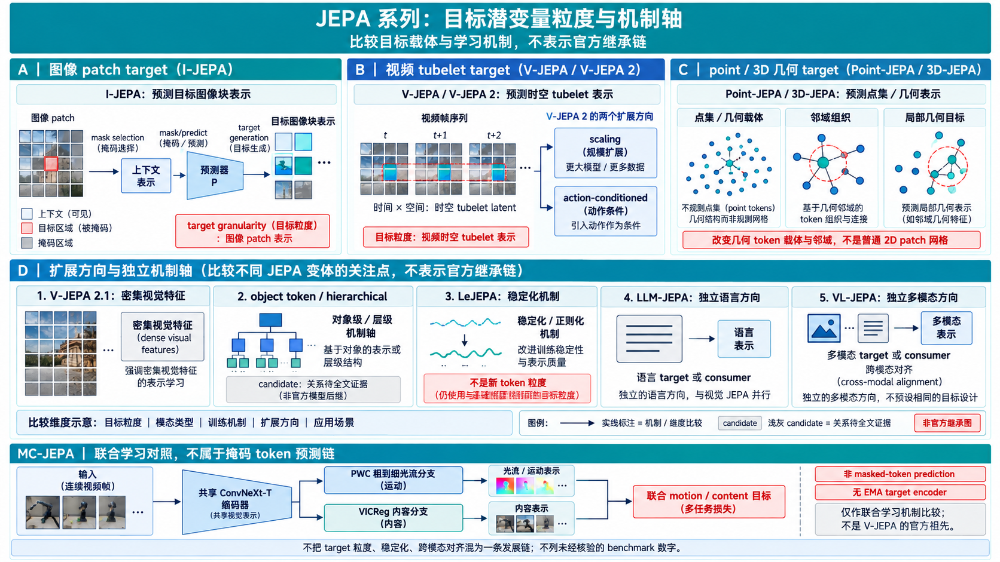
F11 | r7
图 F11 全部细节说明
F11-r1 JEPA 系列的目标粒度与机制轴
读图总览
本图以“预测什么表示”和“如何建立预测问题”两个问题整理 JEPA 系列，而不是把论文年份排成一条继承链。图像、视频、点云、稠密特征与跨模态目标可以共享表示预测思想，但它们的 token 载体、位置关系、目标生成与防坍塌机制不一定相同。图中的比较关系只陈述接口与机制变化；标题相似或共同采用 EMA 都不足以证明官方直接继承。
十八个元素逐项说明
F11-E01：图像 patch 区域。 A 区用图像网格表达规则二维位置。这里的网格是输入和目标的组织载体，不意味着方法直接重建被遮挡像素。读者应先区分图像块本身与编码后的图像块表示，再理解预测器接受的上下文内容。
F11-E02：I-JEPA 目标块。 I-JEPA 的预测对象是目标图像块的表示，目标生成由完整图像的编码上下文决定。预测多个目标区域与逐像素补全不同，也不等于下游分割标签。该节点保留表示预测的基础接口，后续论文改变载体时仍需重新核对具体目标。
F11-E03：上下文与遮挡选择。 mask 选择决定哪些位置作为可观察内容，哪些位置成为待预测目标。它是定义学习问题的机制轴，而不是与 target encoder 同义的模块。不同论文可以采用不同采样策略，即使都称 JEPA，也不能默认遮挡大小、数量和位置协议一致。
F11-E04：预测接口保留。 mask/predict 表示上下文条件下预测目标表示这一抽象关系。图中用比较边表示接口可以被不同载体采用，不能把这条边理解为直接加载前一篇论文的权重。具体参数共享、初始化和监督目标仍由各自全文及代码证据决定。
F11-E05：视频 tubelet。 B 区从二维网格扩展到时间与空间组成的 token 载体。视频表示预测需要处理运动与时序信息，但 tubelet 只说明输入单位，不能自动代表长期动态模型。时间跨度、遮挡策略和训练输入配置都是独立条件。
F11-E06：V-JEPA。 V-JEPA 以视频中的时空表示为目标，强调避免显式像素生成而学习可用于下游任务的特征。其预测器与目标编码器服务于训练协议，不能在没有动作条件的情况下直接视作机器人控制世界模型。此节点的作用是保持任务与目标表示的准确归属。
F11-E07：V-JEPA 2 的规模扩展。 scaling 标记数据、模型及训练配方的扩展方向，而不是一种新 token 类型。更大规模可能改善多个下游结果，但图中不据此声称任何应用都随规模单调提升。对比必须绑定各实验的数据、模型和评估协议。
F11-E08：动作条件分支。 action-conditioned 标记 V-JEPA 2 的独立动作条件适配阶段，把动作序列作为未来表示预测的条件。这个分支与视觉预训练的 masked objective 不同，也不是为所有 JEPA 系列统一添加一个动作输入。冻结策略与机器人数据使用范围须由其训练证据支持。
F11-E09：MC-JEPA 的多任务位置。 MC-JEPA 在系列中作为相关联合学习方向出现，图中名字不应被接成 V-JEPA 的官方父节点。共同处理视觉特征与运动信息说明研究问题有联系，不足以证明模块、损失或权重可无条件互换。
F11-E10：点云目标载体。 C 区的 point token 表达非规则几何位置，邻域和采样决定 token 关系。它与二维 patch 的规则栅格不同，所以遮挡一个点群不等于遮挡相同面积的图像块。比较时需要明确输入坐标、局部结构与表示生成方法。
F11-E11：Point-JEPA。 Point-JEPA 将表示预测问题置于点云数据，接口思想可以与图像 JEPA 比较，但目标 token 的构建必须由该论文证明。该节点只承载几何载体变化，不虚构下游机器人规划或跨模态功能，也不从名称推出官方继承关系。
F11-E12：3D-JEPA。 三维几何分支改变空间载体与邻域约定，图中单独列出以提醒读者不要把所有几何输入合并成同一方法。不同三维任务可能处理点、局部片段或其他结构；具体机制应回到独立分析，而不是由一个“3D”短标签包办。
F11-E13：V-JEPA 2.1 稠密特征。 D 区的 dense 标记对局部可用表示与多层监督的重视。稠密视觉特征仍是视觉载体，不能被画成语言 token，也不只是给分类模型添加一个输出图像。它涉及学习目标和特征组织变化，应与目标生成和监督层级一起阅读。
F11-E14：LeJEPA 正则化。 LeJEPA 在图中属于稳定化机制轴，而不是一种新的目标粒度。正则化用于约束表示分布与坍塌风险，其理论结论依赖假设与具体目标。不能仅凭名称中包含 JEPA 就把它画成 EMA 目标编码器的替代同义词。
F11-E15：对象 token。 对象级表示改变用于预测或消费的抽象单位，与均匀 patch 网格不同。图中 object token 是机制比较轴，不能据此杜撰某个已验证正式系列成员或统一指标。对象分组与表征学习的具体来源必须在正文中独立绑定。
F11-E16：层级表示。 hierarchical 标记不同时间或抽象层级的组织方式。上层表示可能消费下层输出，但层级不等于模型网络层数，也不保证规划加速或长期可控性。没有明确论文证据时，这个节点只用于比较机制，不作为未来能力已实现的声明。
F11-E17：LLM-JEPA 语言方向。 语言目标或语言模型消费者改变的是输出空间与训练问题，不能把其名字直接连接为视频 JEPA 的下一代版本。对齐、目标构造与损失都需要各自全文核对。图中允许展示跨领域接口相似性，同时保留来源关系未证实的边界。
F11-E18：VL-JEPA 与跨模态对齐。 multimodal 标记视觉与语言等模态之间的目标或消费者关系，cross-modal alignment 则是建立这种关系的机制。跨模态监督不等于所有目标仍由同一种 EMA 视频编码器产生。灰色 candidate 关系只表示值得核对的候选，不得升级成已证实继承链。
四种机制语义
mask 选择定义可见与目标位置；target 生成决定监督表示从何而来；稳定化机制约束表示学习是否坍塌；跨模态对齐连接不同载体与消费者。四者可以同时存在，却回答不同问题。本图的箭头和比较边必须注明保留的接口或改变的机制，不能用无标签的年份箭头代替这些区分。
证据边界
本图来源是当前任务各代表论文的独立分析、锚点精读及完整应用索引。它不提供统一性能排行榜，不声称所有方法共享一份训练数据或相同代码实现。引用关系、官方直接继承和公式一致性只有在全文证据充分时才能升级为明确结论。图中未给出数据的方向不由主题相近补成实验事实。
两个主要产物如何配合
canonical-analysis.md 适合检索、引用、版本 diff 和后续继续研究。它保留完整正文，适合在编辑器中搜索 机制、Q-VJ2、Code Fact、论文 ID 或源码符号；它不负责视觉布局。
report.html 适合第一次通读和回看。打开后先沿左侧嵌套目录从上到下读；正文中每个复杂主题按“直觉 → 定义/公式 → 实例 → 源码 → 证据与边界”展开，图表直接在对应论文段落附近出现。点击图可进入原始尺寸查看器，原论文图表卡片保留 PDF 页级来源和原图路径。
其他必须保留的关键产物
| 用途 | 路径 | 作用 |
|---|---|---|
| 来源身份/版本/页数/哈希 | 00_sources/、各 source-manifest.json | 判断某个结论来自哪个固定版本 |
| 文献发现与应用索引 | 01_literature/complete-application-index.jsonl | 538 条应用记录；应用索引与全文精读范围分开 |
| 逐篇完整精读 | 02_deep_research/phase3_deep_dive/papers/*/deep-reading.md | 逐篇读本和来源边界 |
| 锚点学习包 | 03_anchor_reading/ | V-JEPA 2 三遍精读、概念依赖、符号表、图表账本 |
| 设计逻辑 | 04_paperforge/paperforge-vjepa2.md | 从问题到机制的设计推理 |
| 固定源码证据 | 06_code/、07_joint/source_crosswalk/ | commit、调用链、张量流、差异和未运行边界 |
| 问题与证据台账 | 08_synthesis/question-ledger.jsonl、evidence-ledger.jsonl | 回查疑难问题、页码/行号和事实等级 |
| 当前任务自制图 | 09_figures/accepted/、figure-details/、evidence/ | ImageGen provenance、视觉审校和中文详解 |
| 原论文图表 | 10_report/evidence-r19/original-paper-catalog.json | 原文 Figure/Table 的版本、页码、整页 PNG 和边界 |
| 过程回执与最终门禁 | 10_report/evidence-*、evidence/gates/ | 机器校验、浏览器、内容迁移和最终状态 |
| 执行复盘 | 14_status/execution-retrospective-r19.md、time-ledger-r19.json | 真实阶段、问题、耗时和恢复路径 |
证据等级怎么读
Paper Fact 是论文原文事实；Code Fact 是固定 commit 的静态源码事实；Evidence-supported Interpretation 是由前两者支持的解释；source_boundary 是完整材料读完后仍未公开/未说明或有不可消除矛盾；network_pending 才表示材料尚未取得。本任务没有运行目标训练或推理代码，因此不要把静态源码推导读成 runtime_observed。
建议的三次阅读
- 快速定位（20–30 分钟）：只读本入口、锚点总览、F02/F05/F08/F10/F11/F12、最后的边界和问答。
- 完整理解（数小时）：按目录顺序读锚点、源码 crosswalk，再读按机制分组的代表论文；每篇先看其身份/问题/机制/实验/边界。
- 研究复用：用 canonical 搜索稳定 ID，回到 source-coverage、figure-table-ledger、固定 commit 行号和原论文页级图表；需要继续扩展时先更新 canonical 和 receipt，再重建 HTML。
本入口绑定工作流文件：ec2c71d08ae29a1eabc35a85c5262cca5947822ebc6f02135881cbab43b2f1bb；检索截止保持 2026-10-11。
HTML 报告模块说明
这份说明解释最终 HTML 报告的全部一级模块、主要子模块、图组和辅助材料，说明各部分解决什么问题以及何时阅读。HTML 是离线阅读视图；08_synthesis/canonical-analysis.md 保存累积研究正文，各来源文件保存逐篇和源码分析。本说明负责解释页面如何组织这些材料。
报告头部
报告头部显示锚点论文标题、JEPA 系列范围、检索截止日期和当前阅读版编号，并提示论文与源码采用固定版本。具体论文版本和源码 commit 在阅读入口与来源记录中核对。它帮助读者先确认“正在读哪一次研究交付”。
折叠目录
页面顶部是报告身份和版本范围。左侧是依赖式目录：默认只显示十个一级模块，表示整份报告的骨架；点击每行左侧的箭头，可以展开该模块的下一层；“展开全部”适合检查完整结构，“只看一级”适合重新获得整体视图。点击任何目录标题会跳到正文，并自动打开通往该标题的父级目录。目录高亮表示当前阅读位置，浏览器前进、后退和 file:// 离线打开都保留这些行为。
十个一级模块
| 模块 | 内容 | 读者在这里解决的问题 |
|---|---|---|
| 阅读入口与范围 | 产物关系、阅读顺序、证据等级、当前任务范围 | 先知道 canonical、HTML、索引、源码和回执各自负责什么 |
| 问题背景、JEPA 网络与前置知识 | JEPA 共同问题、机制网络、概念依赖、符号表 | 建立“预测什么、条件是什么、怎样迁移”的共同语言 |
| V-JEPA 2 锚点论文：机制与证据 | 三遍精读、公式、训练/推理、实验、原论文图表账本和设计逻辑 | 从视频表征预测读到动作条件预测和规划，并辨认论文证据边界 |
| 固定 commit：源码调用链与实现差异 | Paper-Code Crosswalk、调用链、Tensor/State Flow、代码事实、遗漏说明 | 看固定源码实际怎样实现论文描述，哪些地方不能直接等同 |
| JEPA 前序与表示目标 | LeCun、I-JEPA、V-JEPA、MC-JEPA、IWM、Point-JEPA、3D-JEPA、Graph-JEPA、A-JEPA | 理解预测对象从图像、视频到几何和运动表示的变化 |
| 动作条件、世界模型与规划 | ACT-JEPA、PLDM、DINO-WM、H-JEPA、LeWorldModel、ThinkJEPA、RoboJEPA 等 | 比较状态、动作、递归预测、世界模型和规划接口 |
| 正则化、密集目标、语言与多模态 | LeJEPA、V-JEPA 2.1、LeVJEPA、LLM-JEPA、VL-JEPA、C-JEPA | 区分改变学习信号、表示密度和下游消费者的分支 |
| 理论、替代路线与应用边界 | EB-JEPA、JEPA-Anything、MotionJEPA、DSReg、JEPA-SCORE、慢特征理论和 H-JEPA 概念材料 | 判断理论假设、同期替代路线和应用索引能支持到什么程度 |
| 疑难问题、原论文图表与可追溯性 | 十个完整问题答案、中文综合章节、538 条应用索引和原始台账入口 | 回查具体结论、论文页码、应用范围和证据编号；原论文图表卡实际分布在各篇正文中 |
| Canonical 审计镜像与历史材料 | 规范正文完整镜像、论断与证据对应表，及其中的历史材料入口 | 做版本差分、审计迁移和恢复；完整镜像与前面内容存在重复，初次通读可先跳过 |
每个模块展开后，子模块分别做什么
1. 阅读入口与范围
“阅读入口与最终产物关系”解释 canonical、HTML、逐篇精读、应用索引、源码和回执之间的分工，并给出三次阅读建议。其中 F01 和 F11 帮助先看系列方法的整体关系。“HTML 报告模块说明”就是本节，解释整份页面的结构和操作。
2. 问题背景、JEPA 网络与前置知识
| 子模块 | 用途 |
|---|---|
| 规范正文总览 | 先浏览问题、方法网络、锚点贡献、实验、源码和边界的完整轮廓，确定后面要细读哪条线索 |
| 概念依赖图 | 解释理解后续机制前，需要先懂哪些概念，以及概念之间的先后关系 |
| V-JEPA 2 符号表 | 回查公式里的变量、下标、张量和时间索引，避免同一个符号在不同阶段被混读 |
3. V-JEPA 2 锚点论文：机制与证据
| 子模块 | 用途 |
|---|---|
| V-JEPA 2 锚点论文三遍精读 | 主要学习正文：先看论文结构和问题，再逐机制读表示预测、规模扩展、动作条件训练与规划，最后检查实验、批评和迁移边界。追加教学单元提供张量、时间索引和规划实例 |
| 锚点源覆盖 | 记录固定论文版本中正文、附录、公式和图表的阅读覆盖，复核是否遗漏材料 |
| 锚点原文图表账本 | 逐项定位原论文 Figure/Table，说明它展示的实验现象及能支持的结论 |
| 从问题到设计逻辑（PaperForge） | 重建作者为何这样设计系统、关键假设是什么、替代设计与最小验证实验如何考虑 |
4. 固定 commit：源码调用链与实现差异
| 子模块 | 用途 |
|---|---|
| 论文与代码对应分析（Paper-Code Crosswalk） | 把论文公式、算法和实验条件映射到固定源码的配置、文件、函数和运算，判断对应关系有多强 |
| 固定 commit 调用链 | 从配置入口一路跟到数据、编码器、预测器、损失、目标网络更新和规划接口，说明程序怎样串起来 |
| 张量与状态流（Tensor/State Flow） | 跟踪维度、时间对齐、遮挡索引以及状态/动作如何进入模型，帮助检查“数据到底是什么形状” |
| 实现遗漏与论文—代码差异 | 集中解释未公开设置、默认参数和实际实现差异，避免把源码现状直接当作论文全部实验的复现 |
| 固定 commit 代码事实（Code Facts） | 保留结构化的源码事实登记，用于核查文件、行号和事实编号；其作用是审计。理解机制时先读前四个中文子模块 |
代码分析来自静态阅读。本任务没有运行目标训练、推理或机器人程序，因此这里解释的是固定源码的行为和数据流，不能视作实测复现结果。
5. JEPA 前序与表示目标
这组包含九个逐篇单元。LeCun 2022 解释世界模型、表示和规划的概念背景；I-JEPA 解释图像区域表征预测；V-JEPA 解释时空表示预测；MC-JEPA 解释光流和内容特征如何联合学习；IWM 解释以图像增强为条件的表征变换。Point-JEPA、3D-JEPA、Graph-JEPA 和 A-JEPA 分别提供点云、三维、图结构及音频等载体的完整读本。它们帮助辨认“预测的对象变了，哪些机制也必须跟着改变”。
6. 动作条件、世界模型与规划
这组包含八个逐篇单元。ACT-JEPA 关注动作与未来观察的联合预测；PLDM 提供潜空间动力学与规划的比较路线；《通过逆动力学保留不稳定模式》解释逆动力学对世界模型状态信息的影响；DINO-WM 提供由视觉特征构建世界模型的同期比较；LeWorldModel、经验 H-JEPA、RoboJEPA 和 ThinkJEPA 分别补充世界模型、分层、多机器人形态和多时间尺度方向。逐篇的训练目标、递归方式、输入条件与评估协议须连同阅读，不能只根据世界模型的共同名称比较。
7. 正则化、密集目标、语言与多模态
这组六篇读本分别是：V-JEPA 2.1 的密集视觉特征、LeVJEPA 的视频预训练、LeJEPA 的表征分布正则化、LLM-JEPA 的语言表示、VL-JEPA 的视觉语言表示，以及 C-JEPA 的具体目标与条件设计。它们共同帮助判断一个分支究竟改变了学习稳定性、局部表示还是输出接口；各篇的独立公式、实验和边界保留在对应正文中。
8. 理论、替代路线与应用边界
这组有八个读本：EB-JEPA、JEPA-Anything、MotionJEPA、DSReg、JEPA-SCORE，以及《联合嵌入预测架构偏向慢特征》《JEPA 如何避免噪声特征》和概念 H-JEPA。前五个提供能量建模、通用扩展、运动、潜状态和高斯表示等比较角度；后三个帮助理解理论假设、捷径与分层概念。这里的分组是阅读用途，不表示每篇都属于同一官方继承链。
第 5—8 组共 31 个单元，加上第 3 组的 V-JEPA 2 锚点，共 32 个全文阅读单元。V-JEPA 2-AC 是锚点中的动作条件阶段，单独解释但不重复计算为另一个全文单元。应用论文的 538 条索引在第 9 组提供入口，不等同于这 32 个全文读本。
9. 疑难问题、原论文图表与可追溯性
“稳定疑难问题的完整答案”逐题解释十个容易混淆的问题，包括遮挡比例、位置编码、目标编码器更新、递归训练、因果注意力、规划约束、消融、分支关系和两类 H-JEPA 的区别。每个答案保留依据与尚存边界。
“综合结论、应用范围与证据怎么读”把跨论文判断、应用索引口径、九条关键证据及适用边界写成中文说明。538 条索引和原始台账从这里进入；看原论文图表则回到各篇精读旁的页级卡片。
10. Canonical 审计镜像与历史材料
“Canonical 完整审计镜像”保留累积规范正文，供完整检索、版本差分和恢复；它与前面按依赖重排的阅读内容有重复。“论断与证据对应表（Claim–Evidence Map）”用来查一条论文论断由哪些材料支持、支持到什么程度。历史快照、失败记录和执行复盘由相应链接访问，页面没有把整个历史目录逐文件展示。
正文阅读区
正文阅读区是页面的主要知识内容，按左侧目录的依赖顺序排列。每个一级模块下面还包含代表材料、机制小节、图解和来源入口；目录折叠只隐藏导航分支，不隐藏正文。
正文中的内容组件
中文正文章节
每个章节按知识依赖组织，通常先给问题和直觉，再给定义或公式、实例、实验/源码证据和适用边界。它负责让读者在不打开机器台账的情况下理解结论。阶段工作文件、JSONL 和运行日志不会整份倾倒进这里。
公式与本地资源
公式已经在构建阶段渲染为本地 KaTeX HTML 和字体，打开本地文件也能阅读。公式旁的解释说明它在该论文或源码映射中承担什么作用；公式显示本身不代表本任务重新运行了目标模型。
正式科研图
F01–F12 是当前任务内生成并完成视觉审校的正式图。它们在相应机制段落附近出现，点击图片可进入原尺寸查看器，查看器支持缩放、1:1、适合窗口、拖拽和键盘操作。图下的细节说明、事实清单、生成记录和 SHA-256 由 09_figures/ 与 10_report/evidence-r19/ 中的回执绑定。
| 图号 | 主要解释什么 |
|---|---|
| F01、F11 | 系列方法的关系、目标粒度和机制比较轴，建立全局结构 |
| F02、F03 | 遮挡表征预测、梯度边界、Transformer 结构与时空词元 |
| F04 | 数据混合、模型与训练配方的规模扩展 |
| F05、F06、F07 | 动作条件世界模型、批次张量与状态流、损失及目标网络更新 |
| F08 | 目标图像驱动的潜空间动作搜索与闭环规划 |
| F09、F10 | 代码配置与实际调用入口、论文公式和固定源码的逐式核对 |
| F12 | 结论边界与失效模式 |
原论文图表
32 个全文阅读单元各保留两张锁定版本的原论文 PDF 页级 PNG，共 64 张。卡片保留原文标题、坐标、表头、脚注和页码。它们是论文来源证据，与自制科研图分别计数；页级图未经过 OCR 或重绘。
证据与回执
证据与回执记录内容迁移、图像来源、原论文图表目录、静态公式、浏览器交互和最终门禁。它们用于判断报告是否可追溯、是否离线可用和是否出现内容丢失；读者通常只需在复核细节或审计时打开。
代码与来源链接
正文中的论文链接指向锁定 PDF 页码，源码链接指向固定 commit 的文件，并在相邻文字注明行号，索引链接指向完整 JSONL。链接的作用是让读者回到原始依据；正文已经给出中文解释，原始文件不承担补写缺失答案的责任。
页面外的关键产物
| 产物 | 作用 |
|---|---|
08_synthesis/canonical-analysis.md | 完整中文解释、公式、问答、代码事实和证据边界的内容 owner |
00_identity/reader-guide.md | 解释 canonical 与 HTML 的关系及推荐阅读路径 |
01_literature/complete-application-index.jsonl | 538 条应用论文完整索引；用于发现和回查，不等于 538 篇均已全文精读 |
03_anchor_reading/ 与 02_deep_research/phase3_deep_dive/papers/*/deep-reading.md | 锚点与 31 个系列/比较单元的全文材料，共 32 个单元 |
06_code/ 与 07_joint/source_crosswalk/ | 固定 commit、调用链、张量流和 Paper-Code 差异 |
09_figures/accepted/ 与 09_figures/figure-details/ | 正式图、中文细节、事实清单和视觉验收依据 |
10_report/evidence-r19/、evidence-reader-r19/、evidence/gates/ | 构建、内容保全、浏览器、图表目录和最终门禁回执 |
14_status/ | 架构说明、执行复盘、时间台账和本模块说明 |
最有效的阅读路径
第一次阅读先保持目录折叠，只读十个一级模块的标题和本说明；然后展开“问题背景”与“V-JEPA 2 锚点论文”，建立共同语言，再展开“固定 commit”核对实现。接着按第 5—8 组阅读系列与比较工作，最后打开“疑难问题、原论文图表与可追溯性”。需要审计或恢复时再展开最后一个 Canonical 模块。
目录折叠只改变导航显示，不删除正文、图片、公式或证据；完整内容始终存在于同一份 HTML 和其 canonical 依赖中。
问题背景、JEPA 网络与前置知识
先建立任务、目标表示、预测与规划的共同语言。
规范正文总览（r19 阅读投影）
本文件只保留 canonical-analysis.md 的前 97 行导航性总览；完整规范正文仍以 canonical-analysis.md 为唯一来源。
JEPA 系列与 V-JEPA 2 论文-代码联合精读规范正文
当前任务截止日：2026-10-11。本文是本任务的 canonical 解释源，所有图稿、问题台账和离线 HTML 都从此处或其明确引用的完整阶段产物派生。标题/摘要索引记录应用范围，但不把标题关系冒充全文继承证据。
1. 阅读边界与证据等级
锚点论文固定为 V-JEPA 2: Self-Supervised Video Models Enable Understanding, Prediction and Planning，arXiv 2506.09985v1。PDF 为 48 页，TeX 归档与图表资产均在 00_sources/2506.09985/v1/。官方代码固定为 facebookresearch/vjepa2@204698b45b3712590f06245fbfba32d3be539812。论文事实、固定 commit 静态代码事实、基于两者的解释和仍未取得的来源边界分开表达。目标代码、训练和指标复现均未执行。
JEPA 系列按官方主线和独立机制创新分层：I-JEPA、V-JEPA、MC-JEPA、IWM、Point-JEPA、3D-JEPA、ACT-JEPA、V-JEPA 2/2-AC、LLM-JEPA、LeJEPA、VL-JEPA，以及 H-JEPA、C-JEPA、V-JEPA 2.1、LeWorldModel、ThinkJEPA 等截至截止日的关键分支。应用论文使用五组官方 arXiv 分页查询建立完整索引：995 条原始条目、567 个 base ID、538 条应用索引；35–80 的 60 条只作为后续全文候选，不能替代完整索引。
证据级别如下：Paper Fact 必须回到锁定版本的页、节、公式、图或表；Code Fact 必须绑定固定 commit 文件与行号；Evidence-supported inference 需要同时列出前两类证据并说明推理；Unresolved 只用于完整材料仍未说明的问题；network_pending 表示传输未闭环，不能当成“论文没有”。
2. JEPA 的共同问题与方法网络
JEPA 的共同问题是：无标签数据包含大量细节，但下游表示需要保留结构、状态和可预测因素；像素级生成会为不可预测纹理消耗容量，纯判别预训练又依赖标签。联合嵌入预测架构把上下文编码成表示，再预测另一视图的目标表示。目标分支以 EMA 或其他稳定化机制提供参照，预测误差落在 latent space，因而能把“预测什么”与“如何呈现像素”分离。
从 I-JEPA 到 V-JEPA，变化首先是视图和 mask 的时空化：图像块变成视频 tubelet，时间轴上的可预测关系进入位置编码与 mask 几何；从 V-JEPA 到 V-JEPA 2，核心 loss 没有被替换，真正的工程推进来自数据、模型、训练长度、空间/时间分辨率的系统 scaling，并进一步把 observation-only predictor 分成 action-free 表示预训练和 action-conditioned 控制后训练；后续分支则改变 target latent 的粒度，向 dense、object、hierarchical、语言和多模态目标扩展。
四层网络必须区分：问题背景层记录标签昂贵、交互数据昂贵、像素生成昂贵等约束；方法范式层比较显式重建、latent prediction、迭代 world model、对象或层级状态；核心机制层比较输入、表示、选择、变换、融合、状态、学习信号、推理与失败模式；代码实现层绑定入口、配置、函数、张量形状、训练/推理分支与论文代码差异。相似标题或共同引用只产生 candidate 关系，不能产生 explicit 继承边。
3. 锚点论文：从表示预测到规划
3.1 Stage 1：表示空间的 mask-denoising
完整视频记为 y，删除随机时空块后得到上下文 x。在线编码器 E_theta 只处理可见 patch，预测器 P_phi 接收在线表示与携带目标位置的可学习 mask token Delta_y，目标编码器 E_theta_bar 处理完整 y。核心目标是
这条式子说的是：只要求预测被遮挡位置在表示空间中与稳定目标相近，不要求复原 RGB。sg 停止目标路径梯度，theta_bar 由在线参数的 EMA 更新；这不是严格的表示充分性证明，而是稳定训练与 latent target 的工程机制。mask 只进入预测分支的位置条件，visible token 不直接构成目标误差，但在线编码器仍通过预测器获得梯度。
输入先按 2×16×16 切成 tubelet。对 64 帧、256×256 的教学网格，时间轴为 32、空间轴各为 16，理论 token 数是 8192；实际 flatten 顺序、mask index 和显存策略必须以固定源码为准。3D-RoPE 将旋转维度沿 temporal、height、width 三轴分配，使相对位置同时保留时间和空间关系；论文报告它比早期 absolute sin-cos 更稳定，但稳定性是实验结论，不是普遍定理。
3.2 四个 scaling ingredient
VideoMix22M 把 SSv2、Kinetics、HowTo100M、YT-Temporal-1B 和 ImageNet 组合，并用 source-specific weight 与 retrieval curation 处理数据质量。视频时长和 ImageNet 图像量不能混成单一小时数。模型从 ViT-L 300M 到 ViT-H 600M、ViT-g 1B，predictor 维持相对较小；训练从 90K 延长到 252K；warmup/constant 使用 16 帧、256²，最后 cooldown 增到 64 帧、384²，论文给出约 8.4× GPU-time reduction。四个因素并非完全正交 factorial design，平均分的近似相加不能当作严格因果分解。
3.3 Stage 2：V-JEPA 2-AC
DROID 片段约 3–4 秒，训练用 4 秒、4 fps、16 帧、256²。每帧状态 s_k 为 3D position、3D extrinsic Euler angle 和 gripper 共 7 维；动作 a_k 是相邻状态差分，因此 16 帧产生 15 个动作。冻结视频 encoder 后，ViT-g 每帧特征可表示为 16×16×1408。block-causal attention 允许当前时间块看到同时间的 action/state/patch 和过去块，不允许看到未来块。
teacher forcing 的形式为
论文叙述 T=15 的序列监督。rollout loss 使用短递归窗口，正文公式与 Figure 6 的教学画法需和实现配置区分：代码 crosswalk 记录默认 auto_steps=2，实际 recurrent loop 一次，wrapper rollout 参数为 2。总损失是 teacher forcing 与 rollout 项的和，encoder/target 在 AC 阶段冻结；因此不能把 AC 训练误读为重新更新 Stage 1 的 EMA target。
3.4 CEM/MPC
当前 frame 和 state 先编码成 z_k,s_k，目标图像编码成 z_g。动作轨迹的 latent energy 为
然后用 CEM 采样动作序列、保留 elite、更新高斯均值和方差，执行第一步并重新观测。论文将 action 限制在 L1-ball；固定 commit 的 mpc_utils.py 实际是逐坐标 torch.clip，默认 maxnorm=0.05，这是一个必须公开的实现差异。pick-and-place 使用多个 image subgoal，不能把单一终态 image goal 的能力外推到语言目标或长期任务规划。
4. 论文证据、实验与边界
冻结 attentive probe 的平均分是 88.2，SSv2 77.3、Diving-48 90.2、Jester 97.8、K400 87.3、COIN 91.1、ImageNet 85.1；统一 probe 支持“表示可迁移”，但不同基线的数据、位置编码和预训练目标仍影响系统比较。EK100 action anticipation 的 ViT-g384 Recall@5 为 39.7，predictor token 相比 encoder token 有小幅提升；长 horizon 会下降，不能把短期 anticipation 解释成长程世界模型保证。VidQA 的 59.5 来自 encoder、对齐数据、projector 与 Llama 3.1 8B 的系统组合，不能归因于 Eq.1 单独产生。
机器人实验在两个未见实验室进行，reach、grasp、reach-with-object、pick-and-place 的成功率说明 latent MPC 可在受限设置中工作；Cosmos 每动作约 4 分钟、V-JEPA 2-AC 约 16 秒，但采样数量不同，不能只以时间比断言整体优越。论文明确或数据支持的限制包括：相机坐标与 robot base 不一致导致 action ambiguity；rollout error 随步数积累；image goal 表达多阶段任务有限；小样本实验室和 10 trials/task 不能推出广泛 zero-shot robustness；冻结 probe 和 VQA 对齐数据引入实验混杂。
5. 固定代码联合读法
源码入口按 app/vjepa/train.py、app/vjepa_droid/train.py、notebooks/utils/world_model_wrapper.py 和 notebooks/utils/mpc_utils.py 追踪，再回到 src/models、src/masks、配置和数据转换。联合 crosswalk 已绑定 Eq.1–Eq.5：Eq.1 对应 masked target representation loss 和 no-grad target；Eq.2 对应 teacher forcing；Eq.3 对应默认 auto_steps=2 的 recurrent branch；Eq.4 对应 jloss + sloss；Eq.5 对应 CEM 路径但带 action constraint 差异。
三个差异不能被抹平：src/models/utils/modules.py:39-46 的 RoPE 使用 repeat(1,1,1,2)，注释说明理想 repeat_interleave 会破坏既有 pretrained weights 兼容性；论文写 L1-ball，而 mpc_utils.py:93-105 用逐坐标 clip；AC trainer 默认 auto_steps=2、loop 一次，wrapper rollout=2，但底层 CEM 签名默认 rollout=1。它们都是固定 commit 的 Code Fact，不是对论文意图的猜测。
固定 commit 的 closed-book ABCD/EF 语义审计已形成八模块 verification summary；其自述仍是 generated-support audit，未运行目标代码，因此 runtime 行为和未执行的实验仍保持明确边界。模块资料必须解释真实输入输出、张量轴、mask、梯度、状态生命周期、配置分支和失败边界；inventory 或函数体存在不自动证明全部语义。
6. 系列论文机制比较
I-JEPA 的关键是图像上下文块预测目标块的表征，强调 object-level semantic abstraction；V-JEPA 把这套目标放到视频时间轴并建立时空 mask；MC-JEPA 在共享 ConvNeXt-T 编码器上联合训练 PWC 粗到细光流支路和 VICReg 内容支路（2307.12698v1，PDF pp.4–6，Eq.7）；IWM 将 representation learner 与 latent dynamics/world model 连接；Point-JEPA 与 3D-JEPA 将 token 从 2D patch 换成点云或三维结构；ACT-JEPA 把预测表示用于 policy representation；LLM-JEPA 把语言模型引入 latent prediction 的接口；LeJEPA 以可证明的正则化讨论避免依赖启发式；VL-JEPA 用视觉语言嵌入和生成/判别接口连接跨模态任务。
这些论文不能只按“更大模型”排列。统一比较槽位是：问题、表示、选择/mask、变换、融合、状态、学习信号、推理、复杂度、失败模式。后续工作保留 JEPA 的核心时，通常保留“预测目标表示而非像素”的接口；改变机制时，改变的是目标粒度、可预测性定义、稳定化正则、模态对齐或动作条件。application index 中的 SAR-JEPA、ST-JEMA、医学、遥感、机器人和视频应用只证明“使用 JEPA 术语或受其启发”的候选存在；没有全文关系证据时，必须保留 application_index_only 标签。
7. 稳定问题答案
为什么不直接像素重建？ 因为像素包含不可预测纹理，latent loss 把容量集中到跨视图稳定、对任务有用的因素；这是假设而非保证。
EMA target 是不是额外的监督模型？ 不是。它从同一完整视频产生 target，参数由 online encoder EMA 更新，loss 梯度在 sg 处停止。
AC 阶段是否重新训练视觉 encoder？ 固定 commit 的 action trainer 冻结 encoder/target，只训练 action-conditioned predictor；不能把 Stage 1 的参数更新路径延伸到 AC。
Figure 6 的 T=4 是默认训练长度吗？ 不是；它是解释 rollout 的示意。代码 crosswalk 记录默认 auto_steps=2 和一次 recurrent loop。
论文的 L1-ball 和代码的 clip 能否视为同一件事？ 不能。逐坐标 clip 产生 box constraint，只有在额外条件下才与 L1-ball 等价；正式报告把它列为实现差异。
为什么有 predictor 还要 frozen probe？ predictor token 的未来预测质量和 encoder 的当前表示质量是两个问题；frozen attentive probe 隔离表示迁移能力，不能代替端到端部署评估。
8. 未解决项与恢复入口
历史恢复清单曾记录来源、精读、代码、图片与 HTML 待办。当前 30/30 代表源包无 network pending，32/32 阅读单元具备正文、来源覆盖、图表台账和教学计算，PaperForge、PaperQA2、固定 commit crosswalk 与 11 张当前任务原生正式图已有证据。r17 正在将本次语义修正同步至派生回执，并重跑内容保全、离线公式、目录、查看器和 delivery gate；当前阶段以 run-manifest 与最新 gate 为准，不能用摘要或口头状态替代。
9. 代表论文全文单元
2301.08243 独立精读
概念依赖图
flowchart TD
A[互联网图像与视频] --> B[VideoMix22M]
B --> C[掩码视频 x]
C --> D[在线编码器 E_theta]
Y[完整视频 y] --> T[EMA 目标编码器 E_bar_theta]
D --> P[表示预测器 P_phi]
M[位置 mask token Delta_y] --> P
T --> L1[L1 masked latent loss]
P --> L1
L1 --> V[V-JEPA 2 表示]
V --> U[冻结 attentive probe]
V --> Q[VidQA 对齐]
V --> Z[冻结 encoder]
R[DROID 视频 + state/action] --> AC[V-JEPA 2-AC predictor]
Z --> AC
AC --> W[动作条件 latent world model]
G[目标图像 z_g] --> MPC[CEM + MPC]
W --> MPC
MPC --> X[Franka 执行第一步]
X --> O[重新观测]
O --> MPC依赖关系的关键边界是：V-JEPA 2 的 observation pretraining 不使用 action；V-JEPA 2-AC 不是把 action 直接塞进 Eq.1，而是在冻结 representation 上重新学习 predictor；MPC 又不更新 encoder/predictor，而是优化候选动作。
V-JEPA 2 符号表
| 符号 | 含义 | 形状/类型 | 来源 |
|---|---|---|---|
y | 完整目标视频 | 视频张量 | Eq.1，PDF p.4 |
x | 从 y 随机删去 patch 的 context view | masked video | Eq.1，PDF p.4 |
E_theta | online/context video encoder | ViT | Eq.1，PDF p.4 |
E_bar_theta | encoder 的 EMA target encoder | ViT，stop-gradient target | Eq.1，PDF p.4 |
P_phi | representation predictor | ViT 或 action-conditioned Transformer | Eq.1、Eq.2–4 |
Delta_y | masked patch 的 learnable mask token，携带位置 | token 序列 | Eq.1 |
sg | stop-gradient | 运算符 | Eq.1 |
z_k | 第 k 帧的冻结 V-JEPA 2 feature map | 16×16×1408（ViT-g） | PDF p.9 |
s_k | end-effector state | R^7：位置 3、外旋角 3、夹爪 1 | PDF p.9 |
a_k | 相邻 state 差分 action | R^7 | PDF p.9 |
T | 时间 horizon | teacher forcing 15；rollout 实际 2；图示 4 | PDF pp.9–10 |
L_TF | teacher-forcing representation L1 loss | scalar | Eq.2 |
L_rollout | autoregressive rollout L1 loss | scalar | Eq.3 |
E | goal-conditioned energy | scalar L1 distance | Eq.5 |
CEM | Cross-Entropy Method planner | action trajectory optimizer | PDF p.10 |
z_g | goal image representation | H×W×D | Eq.5 |
VM22M | VideoMix22M observation pretraining mixture | 22M samples | Table 1 |
ViT-L/H/g | encoder scale family | 300M/600M/1B | Table 4、Appendix Table 12 |
V-JEPA 2 锚点论文：机制与证据
按直觉、公式、实例、训练/推理、实验和边界阅读锚点。
V-JEPA 2 锚点论文三遍精读
0. 身份与证据边界
- 论文：
V-JEPA 2: Self-Supervised Video Models Enable Understanding, Prediction and Planning - 锁定版本：arXiv
2506.09985v1 - PDF：48 页，SHA-256
9cfcfde5fb0d9730637da5b9e7317825c3f3d09e91f3553e22eeba42c74d2226 - TeX：
00_sources/2506.09985/v1/main.tex，来源归档 SHA-256d98b14cd95c21359466bbee82fb5ab708abab321fa0a2079948e31d6df20843a - 源码身份：官方仓库
facebookresearch/vjepa2，固定 commit204698b45b3712590f06245fbfba32d3be539812。论文源与当前仓库版本分开登记；实现结论必须在联合分析中再次核对。 - 证据范围：本文记录原文事实、可复核的推导和明确的批评；PaperQA2 仅用作跨页检索和引用回读，不替代逐段阅读、PDF 视觉检查或源码分析。
1. Pass 1：结构地图
1.1 作者要解决的问题
论文把视频世界模型拆成三个连续能力：从大规模无动作视频学习可迁移的视觉状态表示（understanding），在表示空间预测未来状态（prediction），再用少量机器人交互数据把预测器变成可规划的动作条件世界模型（planning）。作者的主要反对对象是两类系统：只依赖交互数据、因数据昂贵而难扩展的世界模型；以及在像素空间生成视频、计算量高且会把不可预测细节也纳入目标的生成模型。论文的核心假设是，表示空间的预测损失可以保留可预测且任务有用的因素，同时忽略草叶位置、纹理等不可预测细节（PDF pp.2–3；main.tex:118–188）。
1.2 训练阶段图
- Stage 1，动作无关预训练：VideoMix22M 上训练 V-JEPA 2 encoder/predictor。对视频 patch 做 multiblock mask，只把 masked patch 的 target representation 作为 L1 监督。target encoder 是 context encoder 的 EMA 副本，stop-gradient 作用于 target。
- Stage 2，动作条件后训练：冻结 Stage 1 的视频 encoder，在不足 62 小时的 DROID 原始机器人视频上训练约 300M 参数的 V-JEPA 2-AC predictor。输入是每帧的 encoder feature map、7D end-effector state 与由相邻 state 差分得到的 7D action。
- 部署：把 V-JEPA 2-AC 放进 receding-horizon MPC。给定当前帧、当前 state 与目标图像，CEM 在动作序列空间最小化预测末状态和目标图像 latent 的 L1 energy，只执行第一个动作，然后重新观测和规划。
- 表示评估：冻结 encoder，训练 attentive probe 做六项动作/物体分类；用 predictor 的未来 token 做 EK100 action anticipation；将 encoder 对齐 Qwen2-7B 或 Llama 3.1 8B 做 VidQA。
1.3 论文的证据主线
| 机制 | 原文定位 | 论文给出的可观察证据 |
|---|---|---|
| 表示空间 mask-denoising | Eq.1，PDF p.4，main.tex:198–210 | masked token 的 L1 representation error；EMA + stop-gradient |
| 可扩展预训练 | PDF pp.5–8，Table 1，Fig.2–3 | 2M→22M 数据、300M→1B 模型、90K→252K steps、16→64 frames/256→384 |
| 动作条件 world model | Eq.2–4，PDF pp.8–10，main.tex:339–430 | teacher forcing T=15；rollout T=2；ViT-g feature 16×16×1408 |
| latent MPC | Eq.5，PDF pp.10–15，main.tex:415–628 | CEM；图像目标；16 秒内预测；V-JEPA 2-AC 每动作约 16 秒 |
| 迁移到理解/预测/语言 | Tables 4–8，PDF pp.16–23 | 88.2 平均分类、39.7 EK100 recall@5、59.5 VidQA 平均 |
| 限制 | PDF pp.14、18、23 | 相机位姿敏感；长程误差累积；固定动作词表；图像目标而非语言目标 |
2. Pass 2：逐机制证据阅读
2.1 Eq.1：JEPA 目标与 collapse 边界
原文目标为：
x 是从视频 y 中删去随机 patch 后的 context view；E_theta 编码可见 patch；Delta_y 是携带被遮挡位置的 learnable mask token；P_phi 把 context representation 与 mask token 变成 masked target 的预测。监督 target 由 EMA encoder E_bar_theta 在完整视频 y 上产生。梯度只回传到 context encoder、predictor 和 mask token，不回传到 target encoder；target encoder 通过参数 EMA 跟随 encoder。这里的关键不是“重建被遮挡像素”，而是让预测器在表示空间恢复对下游任务有用且跨视图稳定的因素。论文明确把 stop-gradient 和 EMA 作为防止 collapse 的机制，而没有声称它们单独构成严格的非塌缩证明（PDF p.4；main.tex:198–205）。
计算含义：若仅对 masked patch 求损失，visible patch 不直接贡献 target error；context encoder 仍通过 predictor 的路径获得梯度。这个设计压低了对精细纹理的压力，但同时把“哪些因素可预测”交给 mask 尺度、数据分布和 EMA target 的共同决定。它不能保证保留所有因果变量，也不能保证对动作条件预测充分；这正是论文必须增加 Stage 2 的原因。
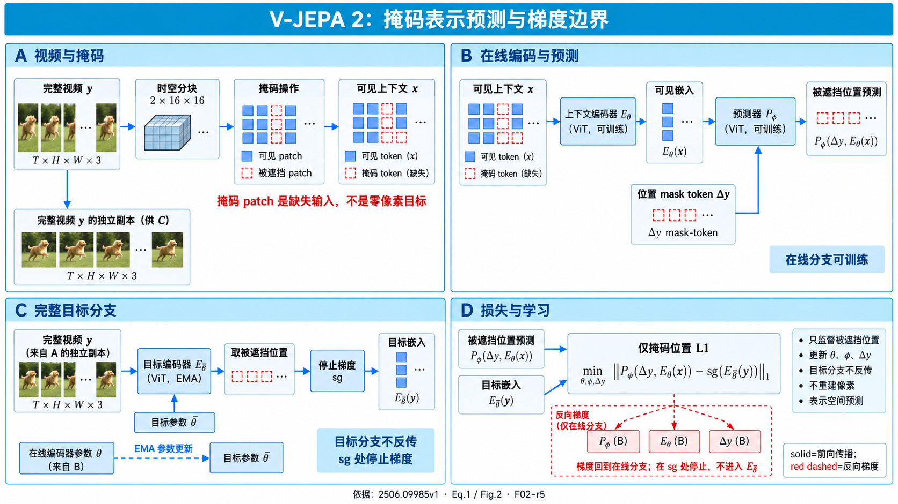
F02 | r5
图 F02 全部细节说明
F02-r5 V-JEPA 2 掩码表示预测与梯度边界
阅读边界
这张图严格限定在 V-JEPA 2 的 Stage 1 表示空间掩码预测。它对应论文 2506.09985v1 的 Eq.1 与 Figure 2 左侧：从同一完整视频生成可见上下文，在线分支预测被掩盖位置的表示，目标分支用 EMA 编码器产生稳定目标，最后只在被遮挡位置计算 L1。图中没有动作、奖励、机器人状态、规划或 Stage 2 的动作条件输入。A、B、C、D 四个区域分别承担数据构造、在线计算、目标计算和优化信号，避免把不同阶段的变量混在一条线路上。
A 区：样本、tubelet 与掩码
A 区从左到右展示完整视频 y、2×16×16 的时空分块、随机掩码操作和可见上下文 x。完整视频缩略图下方的 T×H×W×3 只说明视频张量的时间、高度、宽度和 RGB 通道；真正送入模型的离散单元是旁边标出的 2×16×16 tubelet。蓝色方块是可见 patch，红色虚线方块是被遮挡 patch。红色说明“掩码 patch 是缺失输入，不是零像素目标”，因此遮挡位置不会以零值像素的形式送入编码器。
A 区下方另画一份“完整视频 y 的独立副本（供 C）”。它是目标分支的数据副本，和上方的 x 没有共享输入箭头。这个布局修正了容易发生的误读：目标编码器不是读取可见上下文，也不是读取已经经过在线编码器的结果，而是从完整视频重新得到目标表示。所有 A 区箭头都在 A 区内部闭合，读者可以沿着 y→掩码→x 和 y→独立副本 两条不同路径检查数据来源。
B 区：在线编码与预测
B 区只包含在线分支。可见上下文 x 进入 Eθ，其输出标成“可见嵌入”；Eθ 的框内明确写出“ViT，可训练”。随后可见嵌入进入 Pφ，预测器同样标为“ViT，可训练”，输出是“被遮挡位置预测”，并在右侧写出 Pφ(Δy,Eθ(x))。Δy 在独立框内表示位置 mask token，只有一条蓝色实线把它接到预测器；它告诉预测器需要为哪些目标位置产生输出，不代表被遮挡像素本身。
B 区下方的“在线分支可训练”是参数状态说明。它与 C 区目标分支没有数据连接。图中没有从 B 直接伸到 C 的数据箭头，也没有把预测器连接到目标编码器。这样的局部布局让“在线编码器/预测器可训练”和“目标编码器 EMA”成为两个独立的事实。
C 区：完整目标分支和 EMA
C 区重新放置来自 A 的完整视频副本，并用短的局部实线连接到目标编码器 Eθ̄。目标编码器标注“ViT，EMA”，表示其网络结构与在线编码器同类，但参数不是由损失直接优化。目标编码器输出后只取被遮挡位置，再经过 sg 停止梯度节点，得到“目标嵌入 Eθ̄(y)”。“目标分支不反传”和“sg 处停止梯度”两个红色说明共同限定了反向传播边界。
C 区底部的 EMA 小插图把“在线编码器参数 θ（来自 B）”与“目标参数 θ̄”分开画出。唯一的蓝色虚线标为“EMA 参数更新”，终点落在目标参数框，而不是 sg 或目标嵌入。它表达的是参数的指数移动平均更新：目标网络跟随在线编码器参数的平滑版本。此箭头不是梯度，因而不能沿它把损失或预测器的梯度传给目标编码器。
D 区：损失与梯度
D 区收到两个局部输入：来自 B 的被遮挡位置预测 Pφ(Δy,Eθ(x))，以及来自 C 的目标嵌入 Eθ̄(y)。二者进入“仅掩码位置 L1”框，公式写为 min_{θ,φ,Δy} || Pφ(Δy,Eθ(x)) − sg(Eθ̄(y)) ||₁。下标列出实际优化的 θ、φ 和 Δy，而 θ̄ 不在最小化变量中。
D 区中的红色虚线梯度小插图把梯度目标列为 Pφ（B）、Eθ（B）、Δy（B），并明确写出“梯度回到在线分支；在 sg 处停止，不进入 Eθ̄”。这是一种局部语义图示：它不把跨区域的红线误画成数据流，也不把梯度引到目标分支。右侧五条 bullet 对应论文训练语义：只监督被遮挡位置、更新 θ、φ、Δy、目标分支不反传、不重建像素、表示空间预测。底部图例把蓝色实线定义为前向传播、红色虚线定义为反向梯度。
逐元素审校
F02-E01 完整视频 y、F02-E02 tubelet 2×16×16、F02-E03 掩码操作、F02-E04 可见上下文 x 均位于 A 区；A 区独立副本明确指向 C 的完整目标输入。F02-E05 在线编码器 Eθ、F02-E06 可见嵌入、F02-E07 位置 mask token Δy、F02-E08 预测器 Pφ、F02-E09 被遮挡位置预测位于 B 区。F02-E10 目标编码器 Eθ̄、F02-E11 被遮挡位置抽取、F02-E12 sg、F02-E13 目标嵌入位于 C 区。F02-E14 EMA 参数更新、F02-E15 在线分支可训练、F02-E16 表示空间 L1 与不重建像素分别在 C/B/D 的说明中出现。视觉检查确认四个区域、全部模块边界、短箭头方向、公式、图例和脚注可辨认，没有 x→Eθ̄、Pφ→Eθ̄、损失到 Eθ̄ 的梯度或 EMA 终点落在 sg 的错误连线。
来源与限制
事实来源为 00_sources/2506.09985/v1/main.tex:198-210、PDF 第 4 页 Figure 2 左侧，以及 E-VJ2-001、E-VJ2-002。图稿只说明 Stage 1 的自监督预训练；V-JEPA 2-AC 的动作条件 block-causal attention、teacher forcing、CEM/MPC 和机器人实验不属于本图的语义范围，将在后续图中单独登记。
2.2 3D-RoPE、tubelet 与 multiblock masking
Encoder 和 predictor 都是 ViT。作者把传统 1D RoPE 的特征维度近似分成 temporal、height、width 三段，分别沿三个轴旋转；相对于 V-JEPA 早期的 absolute sin-cos embedding，作者报告 3D-RoPE 在最大模型上训练更稳定。输入视频先切成 2×16×16 的 tubelet，随后应用与 V-JEPA 相同的 multiblock mask（PDF p.4；main.tex:206–210）。这意味着时间轴上每两个相邻帧合成一个 token，空间上每个 token 覆盖 16×16 patch。对 64 帧、256×256 输入，理论 token 网格是 32×16×16=8192；具体显存、mask 比例和实现的 token 展平顺序需以固定 commit 源码为准，不在本文仅凭论文推断。
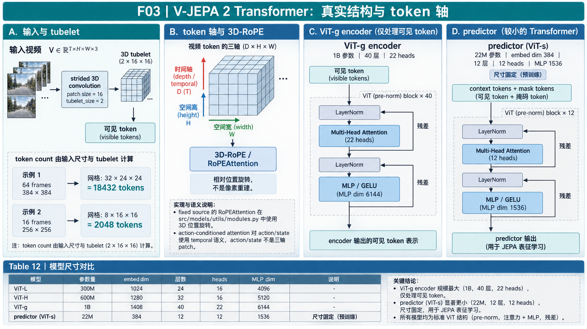
F03 | r1
图 F03 全部细节说明
F03-r1 V-JEPA 2 Transformer 结构、token 轴与模型尺寸详解
读图总览
F03 回答一个具体问题：V-JEPA 2 的视频 token 如何形成，3D-RoPE 如何沿时间和空间定位，以及大 encoder 与固定小 predictor 的结构关系是什么。阅读顺序是 A 输入视频与 tubelet，B token 轴与位置旋转，C ViT-g encoder block，D predictor block 和模型尺寸表。图中只讨论 Stage 1 视频表示模型的 Transformer 结构；动作状态、CEM 和机器人规划不属于本图。读者先确认 token 的来源，再检查位置轴，最后比较 encoder 与 predictor 的深度和宽度。
A 区：视频到 token
F03-E01 是输入视频，标出时间、空间高、空间宽和 RGB 通道。F03-E02 是 2×16×16 strided 3D convolution，也就是时间方向连续 2 帧、空间方向 16×16 的 tubelet。这个模块不是像素 decoder，而是把局部时空块投影成 embedding。F03-E03 是可见 token，说明 mask 后进入在线 encoder 的 token 子集；F03 不画 Eq.1 的 target 分支，因此不应把它理解成完整训练数据流。
图中两个数字例子对应 F03-E04 和 F03-E05。16 帧、256×256 输入经过 tubelet 后得到 8×16×16=2048 个 token；64 帧、384×384 输入得到 32×24×24=18432 个 token。它们是根据输入大小和 tubelet 尺寸计算的教学 token count，不是额外实验数字。这个对比说明 cooldown 阶段同时增加时间覆盖和空间网格，token 数约为 9 倍，注意力成本不能只按图像面积理解。
B 区：时间和空间位置
F03-E06、F03-E07、F03-E08 分别表示时间/depth、空间高、空间宽三个轴。F03-E09 是 3D-RoPE，箭头说明 query/key 的通道子空间按三条轴施加相对位置旋转。这里的“旋转”是 attention 中的表示运算，不是把视频旋转，也不是像素重建。对于同一空间位置的相邻帧，height/width 坐标相同而 temporal 相位不同；对于同一帧的相邻 patch，temporal 坐标相同而 height/width 相位变化。
代码位置 src/models/utils/modules.py 的 RoPEAttention 将 token 重新看成 T×H×W 网格，再执行 depth、height、width 的旋转；patch_embed.py 的卷积步幅决定 token 网格。图中应把三轴连接到 patch token，而不是连接到 encoder 的层数。固定 source 还包含 action-conditioned attention 的 temporal-only 语义，但本图只在注释中写出“action/state 不属于本图”，避免把 Stage 2 条件 token 错画成三轴视频 patch。
C 区：ViT encoder block
F03-E10 是 ViT-g encoder，标出 1B 参数、embedding 维度 1408、40 层、22 heads 和 MLP 维度 6144。F03-E11 到 F03-E14 是一个抽象 block 的四个真实结构节点：pre-norm、multi-head attention、residual、MLP/GELU 和第二条 residual。视觉上它们应沿一条直线排列，并用残差箭头回到 block 输出；不能画成带上采样的卷积 U-Net。
encoder 的尺寸来自论文 Appendix Table 12，并由 fixed commit 的 Vision Transformer 代码负责具体实例化。图中“40 层”是 block 堆叠数，“22 heads”是每个 attention 层的 head 数，二者不能交换。F03-E15 是 encoder 输出 token，供 predictor 使用；它仍是 latent 表示，不是 RGB 帧。若图稿出现“decoder”或“重建像素”，属于事实错误。
D 区：predictor 与尺寸对比
F03-E16 是较小的 ViT-s predictor，标出 22M 参数、384 embedding、12 层、12 heads 和 MLP 1536。它与 ViT-g encoder 的尺寸关系是“encoder 规模可扩展，predictor 在预训练中固定”，不是两个同规模 backbone。F03-E17 是 context/mask token 输入，F03-E18 是 masked latent prediction 输出；图中可用短箭头显示 predictor 消费 token 并产生目标位置的表示，但不要引入未在事实合同中的 cross-attention。
尺寸表应让读者直接比较：ViT-L/H/g 的 encoder 从 300M/1024/24 层增加到 1B/1408/40 层；predictor 保持 22M/384/12 层。这个设计把模型容量主要投入视觉表示，同时控制预测器的计算成本。它也解释为什么“模型 scaling”不能只写一个参数量：层数、宽度、head 数和 MLP 宽度共同决定 attention 与 feed-forward 的开销。
箭头、张量和边界
从输入视频到 tubelet 的实线传递局部时空块，从 tubelet 到 token 网格的实线传递 embedding；三条轴线指向 RoPE 的相对位置运算，再进入 encoder block。encoder 的残差箭头是 block 内部计算，不表示跨层跳跃到 predictor。encoder 输出到 predictor 的箭头表示 Stage 1 的上下文/目标位置预测接口，不能读成 action-conditioned rollout。若图中用了虚线，只能标注“尺寸对比/结构边界”，不能把虚线当梯度或 EMA。
证据与限制
论文事实来自 2506.09985v1 的正文与 Appendix Table 12；代码事实来自固定 commit 的 patch_embed.py、modules.py 与 Vision Transformer 入口。token 数是公开 tubelet 和输入尺寸的教学计算，属于 evidence-supported calculation，不是论文额外报告的 benchmark。论文没有在同一表格中给出所有实现层的内存、kernel 和 batch 行为，因此图中不写未核对的显存或吞吐。F03 通过后将作为 F04 scaling、F06 tensor flow 和 F07 loss/parameter flow 的结构前置。
易错问答
最容易误读的是把 3D-RoPE 当作三维卷积。实际 tubelet convolution 负责形成 token，RoPE 负责在 attention 的 query/key 中编码相对轴位置。第二个易错点是把 predictor 画成和 ViT-g 一样大；论文明确 predictor 固定为 ViT-s 尺寸。第三个易错点是把 18432 token 当作训练 batch 的最终序列长度；mask、visible selection、flatten 顺序和 batch packing 仍由固定代码决定。本图只冻结能从论文和源码直接核对的结构事实。还应检查表格与四个区域是否互相引用：Table 12 只解释模型尺寸，不能被误读成训练指标；B 区三轴只解释位置关系，不能被误读成额外图像模态；需要知道 visible token 如何由 mask index 得到时，应转到 F06，而不是从 F03 的尺寸框猜测。
机制边界补充
F03 的讨论中，应将模型尺寸、表示维度、层数和 head 数分别记录。层数只描述 Transformer block 的堆叠数，表示维度描述单个 token 在每一层流通时的嵌入宽度，二者数值可以不同；head 数是 attention 的分头数，不能当成 token 数量。图中 A 区的 tubelet 生成、B 区的 RoPE 坐标、C 区的 encoder block 和 D 区的 predictor block 各自保持输入输出和数值边界。encoder 输出是 Stage 1 的视觉潜在状态，predictor 输出对应 mask 目标块，这个机制不涉及像素重建和视频解码。如果后续需要讨论动作条件、时空预测或 CEM，应转到对应图和证据账本，不能从本图的 Transformer 内部结构推出 Stage 2 行为。 这些限制保证每条箭头都能回到论文版本、仓库文件和固定 commit。token 数是由公开输入尺寸与 tubelet 尺寸得到的教学计算，不是未报告的吞吐量或 benchmark 值。模型尺寸表只承担结构定位，不能替代固定源码中的 mask、可见 token 选择、flatten 顺序和 batch 组装核对。
2.3 四个 scaling ingredient
论文把改进从 V-JEPA 复现为四个可分离的干预：
- 数据：VideoMix2M→VideoMix22M。Table 1 的采样项是 SSv2 168K 样本/168 小时/权重 0.056；Kinetics 733K/614 小时/0.188；HowTo100M 1.1M/134K 小时/0.318；YT-Temporal-1B 19M/1.6M 小时/0.188，使用 retrieval-based curation；ImageNet 1M 图像/权重 0.250。样本总称为 22M，但“总小时”只对视频项有意义，不能把 ImageNet 计入视频时长（PDF p.6；
main.tex:249–266）。 - 模型：ViT-L 300M、ViT-H 600M、ViT-g 1B，predictor 保持接近 ViT-S 的结构。模型从 300M→1B 带来约 +1.5 至 +1.7 平均分，取决于图表和 cooldown 配置（PDF pp.5、7；
main.tex:297–323）。 - 训练长度：warmup-constant-decay 取代早期更复杂的 teacher EMA/weight decay ramp；90K→252K iterations 约 +0.8 平均分。固定 EMA 与 weight decay 是实证简化，不是理论必要条件（PDF pp.5、7；
main.tex:324–333）。 - 时空分辨率：warmup 与 constant 阶段用 16 帧、256²，最后 12K cooldown 线性衰减同时提升到 64 帧、384²。若从头全程使用 64×384²，作者估计约 60 GPU-years；progressive resolution 给约 8.4× GPU-time reduction。超过 64 帧（128、256）在这组 understanding tasks 上没有额外收益（PDF pp.7–8；
main.tex:329–338）。
四项干预在 paper 的平均指标上近似相加，但这不是严格因果分解：数据、模型、训练步数和 cooldown 的组合存在交互，且 baseline 任务是冻结 probe，不等同于真实部署质量。
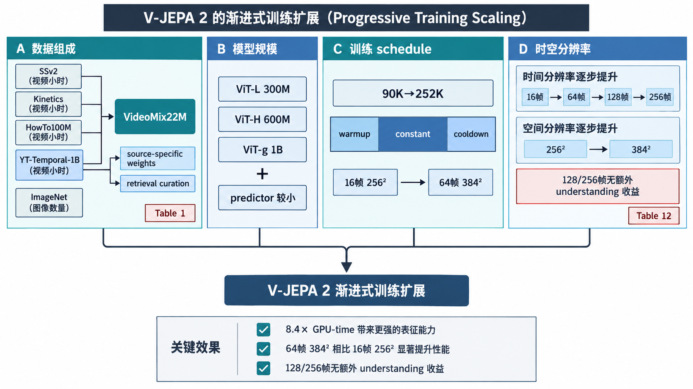
F04 | r2
图 F04 全部细节说明
F04-r1 V-JEPA 2 数据混合与渐进训练 scaling
读图总览
本图解释 V-JEPA 2 的 scaling 不是单一的模型放大，而是数据、模型、训练长度和时空分辨率的组合干预。A 区画出 VideoMix22M 的五类数据源，分别写出 SSv2、Kinetics、HowTo100M、YT-Temporal-1B 和 ImageNet，并把 retrieval curation 只连接到 YT1B，避免把所有数据都标成同一种清洗。视频小时与 ImageNet 图像数量要用不同单位。B 区从 ViT-L 300M、ViT-H 600M 到 ViT-g 1B，旁边标出 predictor 固定较小。C 区画训练步数 90K 到 252K，并标 warmup-constant-decay；D 区显示 16 帧 256² 的 warmup/constant 与末尾 cooldown 的 64 帧 384²。图上写出 token 数教学比和约 8.4× GPU-time reduction，但注明后者是论文测量估计而不是由像素比直接推出的定理。箭头需表达四个因素的组合关系，不要画成严格独立的四条因果链。还要标出 128/256 帧在这组 understanding tasks 上没有额外收益的边界。图中的表格或小账本应注明来源 Table 1、Table 12 及 Appendix 的 schedule。常见误读是把 22M 全部当视频小时、把 8.4× 当作理论复杂度、把 progressive cooldown 当作从头使用高分辨率。该图为 F03 的 token 计算提供数据背景，为 F05/F08 的算力与推理边界提供前置。
分区与节点
本图解释 V-JEPA 2 的 scaling 不是单一的模型放大，而是数据、模型、训练长度和时空分辨率的组合干预。A 区画出 VideoMix22M 的五类数据源，分别写出 SSv2、Kinetics、HowTo100M、YT-Temporal-1B 和 ImageNet，并把 retrieval curation 只连接到 YT1B，避免把所有数据都标成同一种清洗。视频小时与 ImageNet 图像数量要用不同单位。B 区从 ViT-L 300M、ViT-H 600M 到 ViT-g 1B，旁边标出 predictor 固定较小。C 区画训练步数 90K 到 252K，并标 warmup-constant-decay；D 区显示 16 帧 256² 的 warmup/constant 与末尾 cooldown 的 64 帧 384²。图上写出 token 数教学比和约 8.4× GPU-time reduction，但注明后者是论文测量估计而不是由像素比直接推出的定理。箭头需表达四个因素的组合关系，不要画成严格独立的四条因果链。还要标出 128/256 帧在这组 understanding tasks 上没有额外收益的边界。图中的表格或小账本应注明来源 Table 1、Table 12 及 Appendix 的 schedule。常见误读是把 22M 全部当视频小时、把 8.4× 当作理论复杂度、把 progressive cooldown 当作从头使用高分辨率。该图为 F03 的 token 计算提供数据背景，为 F05/F08 的算力与推理边界提供前置。
箭头、张量与状态
本图解释 V-JEPA 2 的 scaling 不是单一的模型放大，而是数据、模型、训练长度和时空分辨率的组合干预。A 区画出 VideoMix22M 的五类数据源，分别写出 SSv2、Kinetics、HowTo100M、YT-Temporal-1B 和 ImageNet，并把 retrieval curation 只连接到 YT1B，避免把所有数据都标成同一种清洗。视频小时与 ImageNet 图像数量要用不同单位。B 区从 ViT-L 300M、ViT-H 600M 到 ViT-g 1B，旁边标出 predictor 固定较小。C 区画训练步数 90K 到 252K，并标 warmup-constant-decay；D 区显示 16 帧 256² 的 warmup/constant 与末尾 cooldown 的 64 帧 384²。图上写出 token 数教学比和约 8.4× GPU-time reduction，但注明后者是论文测量估计而不是由像素比直接推出的定理。箭头需表达四个因素的组合关系，不要画成严格独立的四条因果链。还要标出 128/256 帧在这组 understanding tasks 上没有额外收益的边界。图中的表格或小账本应注明来源 Table 1、Table 12 及 Appendix 的 schedule。常见误读是把 22M 全部当视频小时、把 8.4× 当作理论复杂度、把 progressive cooldown 当作从头使用高分辨率。该图为 F03 的 token 计算提供数据背景，为 F05/F08 的算力与推理边界提供前置。 图中的每条实线表示数据或计算，虚线只表示参数更新、证据边界或明确的推理限制。节点之间的先后关系必须按照箭头阅读；同一颜色不表示同一张量，具体轴、单位和生命周期以正文与固定源码为准。
公式、代码与证据
本图解释 V-JEPA 2 的 scaling 不是单一的模型放大，而是数据、模型、训练长度和时空分辨率的组合干预。A 区画出 VideoMix22M 的五类数据源，分别写出 SSv2、Kinetics、HowTo100M、YT-Temporal-1B 和 ImageNet，并把 retrieval curation 只连接到 YT1B，避免把所有数据都标成同一种清洗。视频小时与 ImageNet 图像数量要用不同单位。B 区从 ViT-L 300M、ViT-H 600M 到 ViT-g 1B，旁边标出 predictor 固定较小。C 区画训练步数 90K 到 252K，并标 warmup-constant-decay；D 区显示 16 帧 256² 的 warmup/constant 与末尾 cooldown 的 64 帧 384²。图上写出 token 数教学比和约 8.4× GPU-time reduction，但注明后者是论文测量估计而不是由像素比直接推出的定理。箭头需表达四个因素的组合关系，不要画成严格独立的四条因果链。还要标出 128/256 帧在这组 understanding tasks 上没有额外收益的边界。图中的表格或小账本应注明来源 Table 1、Table 12 及 Appendix 的 schedule。常见误读是把 22M 全部当视频小时、把 8.4× 当作理论复杂度、把 progressive cooldown 当作从头使用高分辨率。该图为 F03 的 token 计算提供数据背景，为 F05/F08 的算力与推理边界提供前置。 公式、源码路径和实验数字分别标注 Paper Fact、Code Fact 或教学计算。任何未取得的来源保持 pending，不能用图上的短标签填补。
易错点与边界
本图解释 V-JEPA 2 的 scaling 不是单一的模型放大，而是数据、模型、训练长度和时空分辨率的组合干预。A 区画出 VideoMix22M 的五类数据源，分别写出 SSv2、Kinetics、HowTo100M、YT-Temporal-1B 和 ImageNet，并把 retrieval curation 只连接到 YT1B，避免把所有数据都标成同一种清洗。视频小时与 ImageNet 图像数量要用不同单位。B 区从 ViT-L 300M、ViT-H 600M 到 ViT-g 1B，旁边标出 predictor 固定较小。C 区画训练步数 90K 到 252K，并标 warmup-constant-decay；D 区显示 16 帧 256² 的 warmup/constant 与末尾 cooldown 的 64 帧 384²。图上写出 token 数教学比和约 8.4× GPU-time reduction，但注明后者是论文测量估计而不是由像素比直接推出的定理。箭头需表达四个因素的组合关系，不要画成严格独立的四条因果链。还要标出 128/256 帧在这组 understanding tasks 上没有额外收益的边界。图中的表格或小账本应注明来源 Table 1、Table 12 及 Appendix 的 schedule。常见误读是把 22M 全部当视频小时、把 8.4× 当作理论复杂度、把 progressive cooldown 当作从头使用高分辨率。该图为 F03 的 token 计算提供数据背景，为 F05/F08 的算力与推理边界提供前置。 最容易出现的错误是把相似模块、相似标题或相似数字合并成一个事实；本图只承载事实合同中的元素，完整解释回到 canonical-analysis 和 evidence-ledger。
2.4 V-JEPA 2-AC：从 observation prediction 到 action-conditioned prediction
DROID 子集由约 3–4 秒视频组成；训练只使用原始 RGB 视频和每帧 end-effector state，不使用奖励、任务类别、成功标签或实验室元数据。每段取 4 秒、4 fps、16 帧、256²。state s_k∈R^7 是 3D position、3D extrinsic Euler angles、1D gripper；action a_k 是相邻 state 的差分，因此有 15 个 7D action（PDF pp.8–9；main.tex:348–364）。
冻结 encoder 后，ViT-g 每帧产生 z_k∈R^{16×16×1408}。predictor 把 (a_k,s_k,z_k) 按时间交错输入，以 block-causal attention 让时间 k 的 patch 看到同一时间的 action/state/patch 以及之前的时间块。teacher-forcing loss 为：
rollout loss 在实际训练使用 T=2，只穿过一个 recurrent step 反传：
论文 Figure 6 为说明画成 T=4，不能误读为实际训练长度。这个组合的工程动机是同时控制 one-step supervision 与 rollout error accumulation；但 T=2 的 rollout 只覆盖短程误差，不等同于训练 16 秒级长程闭环。
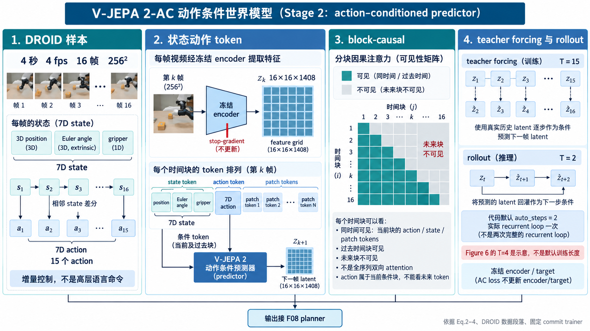
F05 | r2
图 F05 全部细节说明
F05-r1 V-JEPA 2-AC 动作条件世界模型
读图总览
本图只画 Stage 2 的 action-conditioned predictor，不把 Stage 1 的无动作预训练和机器人执行混在一起。A 区从 DROID 片段开始，标出 4 秒、4 fps、16 帧和 256²，并把每帧状态拆成 3D position、3D extrinsic Euler angle、gripper 三部分，共 7D。由相邻 state 差分得到 15 个 action，箭头要明确这是增量控制条件，不是高层语言命令。B 区把每帧视频 encoder feature 写成 16×16×1408，并和 action/state token 交错。C 区画 block-causal 可见性矩阵：当前块能看同时间条件和 patch，也能看过去块，未来块全部禁止；用实线和灰色遮挡区表示，不能画成全序列双向 attention。D 区并列 teacher forcing T=15 与 rollout T=2，强调真实历史 latent 与预测 latent 的差别，并在旁注 encoder/target frozen。图中必须写“Figure 6 的 T=4 是示意，不是默认训练长度”，防止读者把图示当配置。箭头方向从条件 token 到 predictor，再到下一帧 latent。来源为 Eq.2–4、DROID 数据段落和固定 commit trainer。常见错误是把 action 作为 future token、把冻结 encoder 画成会随 AC loss 更新、把 T=2 误读为两次完整 recurrent loop。F05 的输出接到 F08 的 planner，但不画 CEM。
分区与节点
本图只画 Stage 2 的 action-conditioned predictor，不把 Stage 1 的无动作预训练和机器人执行混在一起。A 区从 DROID 片段开始，标出 4 秒、4 fps、16 帧和 256²，并把每帧状态拆成 3D position、3D extrinsic Euler angle、gripper 三部分，共 7D。由相邻 state 差分得到 15 个 action，箭头要明确这是增量控制条件，不是高层语言命令。B 区把每帧视频 encoder feature 写成 16×16×1408，并和 action/state token 交错。C 区画 block-causal 可见性矩阵：当前块能看同时间条件和 patch，也能看过去块，未来块全部禁止；用实线和灰色遮挡区表示，不能画成全序列双向 attention。D 区并列 teacher forcing T=15 与 rollout T=2，强调真实历史 latent 与预测 latent 的差别，并在旁注 encoder/target frozen。图中必须写“Figure 6 的 T=4 是示意，不是默认训练长度”，防止读者把图示当配置。箭头方向从条件 token 到 predictor，再到下一帧 latent。来源为 Eq.2–4、DROID 数据段落和固定 commit trainer。常见错误是把 action 作为 future token、把冻结 encoder 画成会随 AC loss 更新、把 T=2 误读为两次完整 recurrent loop。F05 的输出接到 F08 的 planner，但不画 CEM。
箭头、张量与状态
本图只画 Stage 2 的 action-conditioned predictor，不把 Stage 1 的无动作预训练和机器人执行混在一起。A 区从 DROID 片段开始，标出 4 秒、4 fps、16 帧和 256²，并把每帧状态拆成 3D position、3D extrinsic Euler angle、gripper 三部分，共 7D。由相邻 state 差分得到 15 个 action，箭头要明确这是增量控制条件，不是高层语言命令。B 区把每帧视频 encoder feature 写成 16×16×1408，并和 action/state token 交错。C 区画 block-causal 可见性矩阵：当前块能看同时间条件和 patch，也能看过去块，未来块全部禁止；用实线和灰色遮挡区表示，不能画成全序列双向 attention。D 区并列 teacher forcing T=15 与 rollout T=2，强调真实历史 latent 与预测 latent 的差别，并在旁注 encoder/target frozen。图中必须写“Figure 6 的 T=4 是示意，不是默认训练长度”，防止读者把图示当配置。箭头方向从条件 token 到 predictor，再到下一帧 latent。来源为 Eq.2–4、DROID 数据段落和固定 commit trainer。常见错误是把 action 作为 future token、把冻结 encoder 画成会随 AC loss 更新、把 T=2 误读为两次完整 recurrent loop。F05 的输出接到 F08 的 planner，但不画 CEM。 图中的每条实线表示数据或计算，虚线只表示参数更新、证据边界或明确的推理限制。节点之间的先后关系必须按照箭头阅读；同一颜色不表示同一张量，具体轴、单位和生命周期以正文与固定源码为准。
公式、代码与证据
本图只画 Stage 2 的 action-conditioned predictor，不把 Stage 1 的无动作预训练和机器人执行混在一起。A 区从 DROID 片段开始，标出 4 秒、4 fps、16 帧和 256²，并把每帧状态拆成 3D position、3D extrinsic Euler angle、gripper 三部分，共 7D。由相邻 state 差分得到 15 个 action，箭头要明确这是增量控制条件，不是高层语言命令。B 区把每帧视频 encoder feature 写成 16×16×1408，并和 action/state token 交错。C 区画 block-causal 可见性矩阵：当前块能看同时间条件和 patch，也能看过去块，未来块全部禁止；用实线和灰色遮挡区表示，不能画成全序列双向 attention。D 区并列 teacher forcing T=15 与 rollout T=2，强调真实历史 latent 与预测 latent 的差别，并在旁注 encoder/target frozen。图中必须写“Figure 6 的 T=4 是示意，不是默认训练长度”，防止读者把图示当配置。箭头方向从条件 token 到 predictor，再到下一帧 latent。来源为 Eq.2–4、DROID 数据段落和固定 commit trainer。常见错误是把 action 作为 future token、把冻结 encoder 画成会随 AC loss 更新、把 T=2 误读为两次完整 recurrent loop。F05 的输出接到 F08 的 planner，但不画 CEM。 公式、源码路径和实验数字分别标注 Paper Fact、Code Fact 或教学计算。任何未取得的来源保持 pending，不能用图上的短标签填补。
易错点与边界
本图只画 Stage 2 的 action-conditioned predictor，不把 Stage 1 的无动作预训练和机器人执行混在一起。A 区从 DROID 片段开始，标出 4 秒、4 fps、16 帧和 256²，并把每帧状态拆成 3D position、3D extrinsic Euler angle、gripper 三部分，共 7D。由相邻 state 差分得到 15 个 action，箭头要明确这是增量控制条件，不是高层语言命令。B 区把每帧视频 encoder feature 写成 16×16×1408，并和 action/state token 交错。C 区画 block-causal 可见性矩阵：当前块能看同时间条件和 patch，也能看过去块，未来块全部禁止；用实线和灰色遮挡区表示，不能画成全序列双向 attention。D 区并列 teacher forcing T=15 与 rollout T=2，强调真实历史 latent 与预测 latent 的差别，并在旁注 encoder/target frozen。图中必须写“Figure 6 的 T=4 是示意，不是默认训练长度”，防止读者把图示当配置。箭头方向从条件 token 到 predictor，再到下一帧 latent。来源为 Eq.2–4、DROID 数据段落和固定 commit trainer。常见错误是把 action 作为 future token、把冻结 encoder 画成会随 AC loss 更新、把 T=2 误读为两次完整 recurrent loop。F05 的输出接到 F08 的 planner，但不画 CEM。 最容易出现的错误是把相似模块、相似标题或相似数字合并成一个事实；本图只承载事实合同中的元素，完整解释回到 canonical-analysis 和 evidence-ledger。
2.5 规划方程与闭环边界
给定当前 frame x_k、当前 state s_k 与 goal image x_g，分别编码为 z_k 和 z_g。规划 horizon 为 T 时，CEM 最小化：
CEM 每轮从均值/方差高斯中采样候选动作轨迹，用 top-k 轨迹更新分布；闭环只执行第一步，然后重新观测。实际部署把每个 action 限制在 L1-ball 半径 0.075（约 13 cm 最大 end-effector displacement），以避免远离训练分布。单目标 reaching 中 energy minimum 接近真实动作；pick-and-place 使用三个图像子目标，4、10、4 个 time-step 后切换（PDF pp.10–14；main.tex:421–628）。
2.6 结果证据与比较协议
冻结 attentive probe（Table 4，PDF p.16）：V-JEPA 2 ViT-g384 在 SSv2 77.3、Diving-48 90.2、Jester 97.8、K400 87.3、COIN 91.1、ImageNet 85.1，平均 88.2。V-JEPA 2 ViT-g 256² 平均 87.5。比较采用统一 frozen encoder + 4-layer attentive probe，但训练数据、预训练目标和 positional embedding 在基线之间不同，作者明确只支持 system-level comparison。
EK100 anticipation（Table 5，PDF p.17）：ViT-L/H/g/g384 action recall@5 为 32.7/36.5/38.0/39.7；g384 verb/noun/action 为 63.6/57.1/39.7。context 使用 32 帧、8 fps、256²（g384 为 384²），默认 anticipation time 是 1 秒；长 horizon 的性能在附录中明显下降。predictor output 比 encoder output 有小而一致的提升，但 encoder 单独已具竞争力（PDF pp.17–18、43–45）。
VidQA（Tables 6–8，PDF pp.20–21）：在冻结 encoder、Qwen2-7B、18M 对齐数据的 controlled setting，V-JEPA 2 ViT-g512 平均 52.3；使用 Llama 3.1 8B 和 88.5M image/video-text pairs 的 scaling setting，ViT-g384 平均 59.5，PerceptionTest 84.0、MVP 44.5、TempCompass 76.9、TemporalBench 36.7、TOMATO 40.3。这里的增益来自视频 encoder 与对齐数据/LLM 训练的系统组合，不能归结为 Eq.1 单独造成。
零样本机器人（Tables 2–3，PDF pp.14–15）：V-JEPA 2-AC 在两个未见实验室使用同一权重和 inference code；reach 平均 100%，grasp cup/box 65%/25%，reach-with-object 75%/75%，pick-and-place cup/box 80%/65%。Cosmos 每动作约 4 分钟，V-JEPA 2-AC 每动作约 16 秒，但二者采样数不同（Cosmos 80，V-JEPA 2-AC 800），不能只用时间比断言模型复杂度优越。
3. Pass 3：批评、边界与可迁移结论
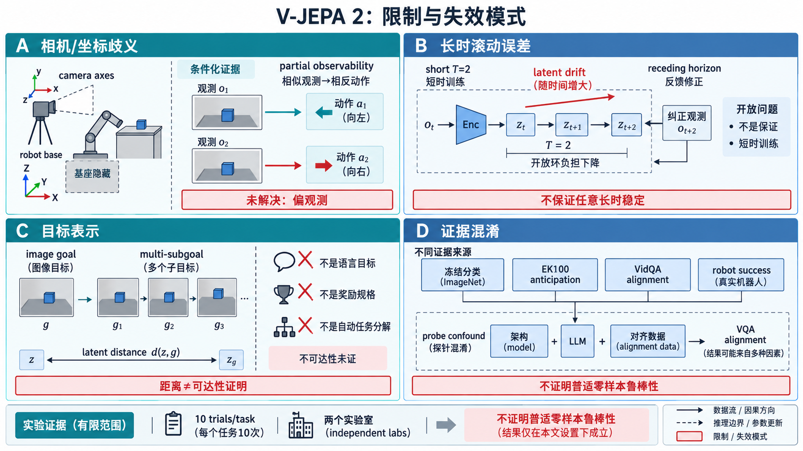
F12 | F12-r1
图 F12 全部细节说明
F12-r1 V-JEPA 2 的结论边界与失败模式
读图总览
这张图把已有实验支持的能力和仍未解决的条件分开。模型能够在特定数据和系统设置中理解视频、预测表示并支撑图像目标规划，不意味着任何相机、任务或时距都具有相同性能。四个区域分别审计观察坐标、滚动误差、目标协议与评估混杂。图中的限制是结论使用条件，不应被画成已经解决的网络模块。
十八个元素逐项说明
F12-E01：相机坐标轴。 A 区的 camera axes 说明相机观察中的左右、前后关系受视角影响。视觉输入没有自然携带机器人执行接口使用的基座坐标，所以在一幅图中辨认物体位置不等于已确定正确动作方向。读者需要区分可观察图像关系与控制量坐标约定。
F12-E02：机器人基座。 robot base 是动作执行的参考系，可能不在相机画面中。若观察缺少区分参考系的线索，两个不同系统状态可能产生相似图像。固定机器人与相机设置可以提供数据规律，但这不构成所有新布置下仍然可辨识的保证。
F12-E03：部分可观察性。 partial observability 标记图像无法唯一决定控制相关状态的情形。相似观察可能要求不同甚至相反动作，表示距离本身无法填补被隐藏的信息。该限制不能通过在示意图里加一个状态编码器图标就被视为解决，实际额外状态输入的范围须明确。
F12-E04：动作方向歧义。 图中的两种行动方向用于展示参考系缺失带来的决策差别，不是声称每一次任务都会失败。它说明实验成功依赖观察与执行条件的对应关系；在转移到新相机角度、基座位置或机器人时，应重新验证这种关系而不是沿用原成功率。
F12-E05：潜在表示漂移。 B 区 latent drift 表示预测误差会沿未来步骤积累。表示误差可能没有直接可见的像素解释，因此不能仅凭输出看起来稳定判断控制预测准确。误差是否影响规划取决于目标能量、动作选择与真实环境反馈，应通过任务证据检查。
F12-E06：短 T=2 训练。 图中 T=2 指具体短滚动训练设置的条件，并不把世界模型训练成任意长时距都有监督覆盖。读者应区分首轮 teacher forcing 与后续递归预测，也不能把这个数字和底层 CEM rollout 参数当成同一计数。
F12-E07：滚动误差。 rollout error 随步骤传播可能改变候选排序，导致规划器偏向模型认为接近目标却不真实可行的动作。图中的误差标记不是一种训练损失新增项，而是需要评估的预测使用风险。可达性、接触和遮挡都可能使误差后果更复杂。
F12-E08：滚动时域反馈。 receding horizon 通过执行首步后重新观察来缩短开环暴露长度。反馈能够修正部分预测偏差，但依赖观察质量与实时控制。它并未证明模型内部长期轨迹物理一致，也不能把“闭环”作为无需考察长程误差的理由。
F12-E09：长期稳定性边界。 not a guarantee 明确指出短训练与闭环补偿不推出任意 horizon 保证。论文有限任务中的成功轨迹属于条件化证据，不是一般稳定性定理。若后续应用需要长时距控制，应分别评估模型误差、目标设计和控制策略的作用。
F12-E10：图像目标。 C 区 image goal 是已经提供的视觉目标状态。目标图片定义的视觉关系可以不同于任务的完整成功条件，例如隐藏接触状态或安全约束。把图像相似度下降直接解释为任务完成，会越过目标表征与实际任务验收之间的证据缺口。
F12-E11：多个图像子目标。 multi-subgoal 说明某些复合任务使用多幅目标图像组织阶段。子目标本身由外部协议提供，不能从多张图标推出模型自动分解任务。阶段选择与切换条件属于系统设计，必须和预测模型本体区分。
F12-E12：语言与奖励边界。 图像目标不是语言指令理解，也不是一般奖励函数学习。模型可以通过其他模块被用于更复杂系统，但这些组合不是本图已经验证的原始能力。报告不能用“规划”一词把语言、奖惩和任务分解一起纳入未经支持的结论。
F12-E13：潜在距离与可达性。 latent distance 衡量表示空间中的接近程度，不天然编码是否存在可执行路径。两个状态的视觉外观接近，仍可能受到障碍、接触、抓取状态或运动学限制。图中的边界提醒规划评价与物理可达性证明是不同证据要求。
F12-E14：冻结分类探针。 D 区 frozen classification 的结果由表示与探针协议共同决定。冻结编码器减少了某些训练混杂，但探针容量、训练数据和超参仍会影响数值。因此不能把探针准确率直接等同于世界模型的动态预测或机器人成功率。
F12-E15：EK100 预期任务。 动作预期评价涉及任务标签、历史观察和下游预测器。它回答特定数据协议下的行为预期问题，与潜在动力学 rollout 的误差定义不同。并列列出这些任务是为了阻止指标互换，而不是把其中一个指标作为另一个能力的代理证明。
F12-E16：VidQA 对齐。 视频问答依赖视觉表示、语言模型和 alignment data 的组合。模型规模或对齐设置变化可能改变回答质量，不能只看问答结果就把全部增益归因于视频编码器。图中的 probe confound 与 VQA alignment 是需要控制的实验因素。
F12-E17：机器人实验范围。 两个实验室与特定设置下每任务 10 次试验形成了有限系统证据。有限样本带来较粗的成功率粒度，环境与任务选择也限制外推范围。zero-shot 在论文语境有特定训练与测试划分，不能被改写成所有机器人和所有场景普遍鲁棒。
F12-E18：开放问题与条件化结论。 open question 汇总哪些限制还需要新的观测、训练或评估证据。限制框不连接成“已解决”模块，正文结论仍需逐项回到问题账本。读者应把真实任务成功、预测误差、语言对齐和表示质量分别解释，再决定哪些结果可迁移到自己的应用。
使用与验收
本图对应论文 limitations、机器人实验、下游问答设置及固定代码约束差异。审校重点是把每项限制准确归属于观察、模型、目标协议或评价，避免把未来模块当作当前系统组成。正式图不虚构新增数字，不将示意误差曲线当成原论文测量值，也不把条件化实验结果改成普遍保证。页面展示和原始 PNG 应保持相同资产与来源信息。
3.1 关键假设
- 可预测性即任务有用性：latent L1 会偏好可预测因素，但可预测不等于因果或控制充分；背景、动作前置条件和不可观测状态可能被压缩。
- EMA target 可提供稳定目标：target encoder 不回传梯度，依靠 EMA 跟随 online encoder；训练稳定性来自优化动力学和 mask/data 设计的共同作用。
- 短期动作差分足以识别控制效应：DROID 的 action 是相邻 end-effector state 差分，模型必须从 monocular camera 隐式推断坐标轴；相机不显示 robot base 时问题未完全可辨识。
- 图像目标可代表任务：image goal 便于 latent matching，但将任务语言、物体身份、约束和多阶段意图都压缩到视觉终态。
- 短 rollout 能迁移到闭环规划：T=2 rollout loss、单步 CEM 和视觉反馈降低了风险，但长程误差累积与指数增长的动作搜索仍是主要瓶颈。
3.2 论文没有证明的事情
- 没有给出 representation sufficiency 或 control-theoretic guarantee；“world model”是功能性命名，不是完整物理状态估计证明。
- 没有把四个 scaling 维度做成完全正交的 factorial design，因此交互效应和计算公平性需要谨慎解释。
- frozen-probe 结果不是端到端下游任务上限；probe capacity、clip sampling 和 baseline pretraining data 仍影响比较。
- V-JEPA 2-AC 的 robot results 是小规模两个实验室、10 trials/task 的验证，不等同于广泛 zero-shot robustness。
- VQA 的 state-of-the-art 数值同时依赖 88.5M 对齐数据、LLM、projector 和训练阶段；不能将语言能力直接归因于无语言监督的 encoder。
3.3 可迁移到 JEPA 系列的判断
- I-JEPA→V-JEPA 的稳定继承点是“上下文 latent 预测目标”，变化点是 mask 的时空结构和长序列位置编码。
- V-JEPA→V-JEPA 2 的主要变化不是新 loss，而是数据/模型/训练/分辨率的系统 scaling，以及从 observation-only predictor 到 action-conditioned predictor 的两阶段拆分。
- V-JEPA 2→后续分支 的核心开放接口是 target latent 的粒度：dense token、object token、层级 latent、语言/多模态 token 都可替换，但必须重新核对 collapse、可辨识性和 rollout 误差。
- 规划接口 与表示接口解耦：只要 encoder latent 对目标状态有可比性、predictor 能模拟动作效果，就能用 CEM/MPC；但 planner 的计算成本和目标表达能力取决于 latent geometry。
4. 尚待源码闭环的问题
- 固定 commit 中 multiblock mask 的采样范围、mask ratio 和 token index 是否与论文叙述完全一致？
3D-RoPE在 encoder、predictor 和 action/state token 上的具体轴分配与 shape 如何实现？- predictor 的 block-causal mask 是否允许同一时间块内 action/state 先于 patch，是否存在显式的 token type embedding？
- rollout loss 在训练代码中是否确实只反传一个 recurrent step，论文中的 T=2 是否对应配置默认值？
- CEM 的 sample count、top-k、迭代次数、L1-ball 投影和执行频率是否与 Table 3 逐项一致？
- 论文未公开的 checkpoint、数据清单和多实验室相机标定边界如何在官方 repo 中体现？
这些问题将在 06_code、07_joint 的固定 commit crosswalk 中逐项给出 paper claim → code path → evidence line → discrepancy/omission。
4. 追加教学单元：从一个小网格走完 Eq.1
为了避免把“表示预测”误解成一句口号，下面给出一个只用于教学的最小网格。设视频只含两个时间片、每个时间片两个空间 patch，经过 2×16×16 tubelet 后得到四个 token：y=[y_1,y_2,y_3,y_4]。假设 mask 选择 y_2 和 y_4，上下文输入 x 只包含 y_1,y_3，而 Delta_y=[delta_2,delta_4] 保存两个目标位置。在线编码器产生 E_theta(x)=[h_1,h_3]，预测器根据上下文关系产生 p_2,p_4。完整视频副本经 EMA 编码器产生 t_2,t_4，停止梯度后损失是 |p_2-t_2|_1+|p_4-t_4|_1 的平均。
这个例子有三个容易漏掉的中间量。第一，delta_2 和 delta_4 不是像素块，它们只告诉预测器“输出应放回哪个空间/时间位置”。第二，target 分支仍然看完整 y，所以 target 不是从 h_1,h_3 复制出来的；若把这条路径改成上下文输入，监督就会退化为同一视图的自拟合。第三，梯度对 p_2,p_4 非零，并由预测器反传到 h_1,h_3，但在 sg(t_2),sg(t_4) 处为零。EMA 更新发生在参数时间尺度上，不是 loss 图中的反向边。
若用一维玩具值 p_2=(1,2), t_2=(2,1)，p_4=(0,3), t_4=(1,1)，总 L1 为 |1-2|+|2-1|+|0-1|+|3-1|=5，平均为 2.5。这个数字不属于论文实验，只用于说明 reduction；论文的实际 token 数、mask 数和 batch reduction 必须回到源码配置核对。若 visible token 被误加入 loss，目标函数就从“只预测隐藏区域”变成了“对全视频表示做重拟合”，会改变作者利用 mask 迫使模型建模上下文的设计。
5. 追加教学单元：3D-RoPE 和 token 轴
将 token 写成 (t,h,w) 三元组后，3D-RoPE 的含义是把 query/key 的部分通道分别乘上三个轴的旋转矩阵。对于 t=7,h=3,w=11 与 t=7,h=3,w=12 的两个 token，时间和高度相同，宽度相邻；注意力点积中的相对相位只在 width 子空间变化。对两个不同时间片的同一空间位置，height/width 相位可以相同，但 temporal 相位不同。这正是视频模型需要的相对时空感，而不是把展开后的一维索引 71616+3*16+11 当成唯一位置。
轴的拆分不自动决定 token 的 flatten 顺序。实现还要回答：时间轴是否先展平、动作/状态 token 是否共享空间相位、mask index 是原网格坐标还是展平坐标、预测器是否为 mask token 添加独立 type embedding。论文公开的是三轴旋转和 tubelet，固定源码 crosswalk 才能回答实现细节。任何把“论文说 3D-RoPE”直接扩展成“所有 token 都三轴编码”的叙述都超出了论文证据；AC 分支对 action/state 的 temporal-only 处理是代码级事实。
6. 追加教学单元：progressive scaling 的计算账本
设 warmup/constant 阶段每个样本为 16×256×256，cooldown 阶段改为 64×384×384。若只按像素和帧数粗略估算，后者的输入体量约为前者的 (64/16)*(384/256)^2=9 倍；因此论文先保持短视频和低分辨率，再用末尾 12K steps 提升时空视野，能把大部分优化步骤放在便宜设置上。论文报告约 8.4× GPU-time reduction 是完整训练测量，不是从这个像素比直接推导出的定理。
这个 schedule 同时改变三件事：可见上下文的时间跨度、每个 batch 的 token 数、最后阶段 target 的空间细节。若把“分辨率提升”只理解成 resize，便会忽略 token 数和注意力成本的二次效应；若把 64 帧阶段的结果与从头使用 64 帧的训练直接等同，也会漏掉 optimizer state、学习率和模型已获得的表示基础。表格中模型规模、步数和 cooldown 需要作为组合干预解释，不能用单一曲线声称每一项都有独立因果贡献。
7. 追加教学单元：AC 的时间索引与状态条件
以 16 帧为例，观测特征为 z_1,...,z_16，状态为 s_1,...,s_16，动作由差分得到 a_k=s_{k+1}-s_k，因此 a_1,...,a_15。teacher forcing 的第 k 个目标是 z_{k+1}，输入可包含到 k 为止的状态、动作和 patch。这里的“第 k 步”不是动作执行后的真实机器人 rollout，而是训练样本中已知未来帧的条件预测；模型看到真实 z_{k+1} 的地方只在监督 target，不是在输入上下文里。
rollout 时，第一步预测出的 latent 作为下一次 recurrent 输入，而不是重新读取真实未来帧。若递归两步，误差会从 z_hat_{k+1} 进入 z_hat_{k+2}，所以短 rollout loss 专门惩罚这种闭环误差。代码中的 auto_steps=2 和实际一次 recurrent loop 需要与论文 Figure 6 的示意 T=4 分开。动作与状态 token 的同时间可见性也有条件：它们可以作为当前块的条件，未来时间块被 block mask 截断；这不等于模型能看到未来图像。
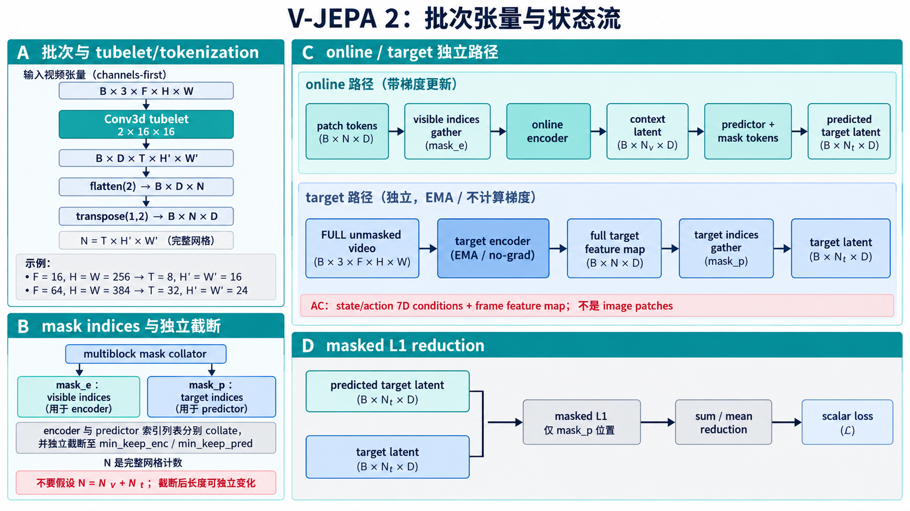
F06 | F06-r4
图 F06 全部细节说明
F06-r4 V-JEPA 2 批次张量与状态流
读图总览
本图把固定 commit 中的视频 batch、mask 索引、online/target 两条编码路径和 masked L1 归约放在同一张数据流图中。输入严格写为代码使用的 B×3×F×H×W，不是把 channel 放在末尾的 collator 约定。tubelet 后的卷积输出先保留 B×D×T×H'×W'，再经过 flatten(2) 和 transpose(1,2) 形成 predictor 使用的 B×N×D token。
分区与节点
- A 区：
Conv3d 2×16×16，并给出N=T×H'×W'的两个教学计算。 - B 区：
mask_e对应 visible/encoder indices，mask_p对应 target/predictor indices。源码在 batch 内分别收集两组索引，再用min_keep_enc与min_keep_pred独立截断；因此图中不能画N=N_v+N_t，也不能把 post-collation 长度当作完整网格长度。 - C 区：online encoder 只接 visible tokens；target encoder 先看完整未遮挡视频，之后才对 full target feature map 做 target gather。两条路径不共享一条前向箭头。
- D 区：prediction latent 和 target latent 在 masked positions 上进入 L1，再按固定配置的 mask/token/feature 轴归约为 scalar loss。
证据与边界
E-CODE-003 对应 src/masks/multiseq_multiblock3d.py:208-235 的独立 mask 收集和截断逻辑。图中 N 是完整时空网格计数；min_keep_enc/min_keep_pred 是 collator 为批处理建立的两组长度上限，不能被解释为互补分区。AC 只作为旁注保留 state/action 7D 与 frame feature map，不能画成图像 patch。
十八个元素逐项说明
F06-E01：代码输入轴。 A 区顶部的 B×3×F×H×W 说明进入三维卷积的是批次、颜色通道、帧、高度、宽度。这里的数字 3 是颜色通道数，并非三个视频或三个视角。数据读取阶段可能采用其他轴顺序，但图中约定对应送入模型后的实际张量，读者不能把存储布局直接套用到卷积接口。
F06-E02：时空 tubelet。 Conv3d tubelet 2×16×16 同时在时间和空间上建立基本单元。每个单元包含相邻两帧的一个空间区域，因此它与逐帧独立切成二维 patch 不同。该标注只描述这里的输入嵌入粒度，不表示下游所有任务都以两帧为预测时距。
F06-E03：卷积特征网格。 B×D×T×H'×W' 保留特征通道与三个网格轴，其中 D 是嵌入宽度，T 是经过 tubelet 后的时间网格长度。高度、宽度的撇号用于区分特征网格和原始像素尺寸，避免把卷积后的数量误当作视频分辨率。
F06-E04：展平操作。 flatten(2) 只合并时间与两个空间轴，得到 B×D×N。它并没有把批次或通道并入序列。该步骤使网格位置能够用一维索引选择，但一维 token 编号仍然对应确定的时空位置，不意味着位置结构被丢弃。
F06-E05：转置与完整网格计数。 transpose(1,2) 将特征与序列轴交换为 B×N×D，所以前后形状不能写成相同排列。N=T×H'×W' 是完整网格计数；这项等式发生在任何可见或目标索引选择之前，不能替换成截断后的两组索引长度之和。
F06-E06：两组教学计算。 图中 16 帧、256 平方分辨率得到 8×16×16 网格；64 帧、384 平方分辨率得到 32×24×24 网格。这是按图中嵌入步长进行的可复核计算，不是声称两个配置在同一次 batch 中混用，也不是论文所有实验统一的输入设置。
F06-E07：多块遮挡 collator。 B 区的 multiblock mask collator 生成要保留与要预测的位置列表。图中没有把遮挡画成零像素，因为索引选择作用于 token 位置与相关特征路径。遮挡采样的形状、尺度以及多组 mask 的组织应继续核对具体配置，而不能从概念图读出未标注的采样概率。
F06-E08：可见索引 mask_e。 这组位置用于在线编码路径，只把可见 patch token 送入在线编码器。图中箭头的含义是选择操作的前向结果，而不是把索引本身当成特征向量。mask_e 在这里对应 encoder 的可见位置列表，其数量符号 N_v 与完整网格 N 有不同作用。
F06-E09：目标索引 mask_p。 目标列表决定预测位置与目标特征的选择位置。其名称含 predictor 的用途，但这不表示 predictor 从完整目标特征读取答案；predictor 接收位置相关的 mask token，目标特征则由独立 target 路径产生，两者仅在损失比较处汇合。
F06-E10：独立批处理截断。 min_keep_enc 与 min_keep_pred 分别来自两组索引的批处理整理。源码为便于堆叠张量对各自列表截断，并不保证截断后的 N_v 与 N_t 仍形成完整网格的互补分割。图中特意用红色限制条阻止 N=N_v+N_t 这一错误外推。
F06-E11：在线 token 选择。 C 区上行从 patch tokens 经 visible gather 到 online encoder，顺序强调编码器处理的是选出的可见内容。在线路径输出上下文表示，为 predictor 提供可观察的信息。这里不连接 target latent，避免形成把监督答案泄漏给输入编码器的伪拓扑。
F06-E12：上下文 latent。 B×N_v×D 中的序列轴已经受可见索引控制，不等于整段视频的全部 token。图中用 context latent 指出这是在线编码器的输出，既不是原始像素，也不是最终目标预测。后续 predictor 可在此基础上推断未观察的位置，但不因此拥有这些位置的真值。
F06-E13：predictor 与 mask token。 上行的预测器结合上下文与目标位置的 mask token，输出 B×N_t×D 预测表示。mask token 指示待预测位置，而非填入对应目标特征；因此图中把它写在 predictor 模块内，不从 target feature map 拉一条输入箭头。这项区分是理解 JEPA 非重建式预测的关键。
F06-E14：完整视频 target 编码。 C 区下行独立接收未遮挡完整视频，经过 target encoder 才产生完整目标特征图。图中 EMA / no-grad 表明该分支的训练角色与在线分支不同：EMA 是参数更新方式，no-grad 是阻断损失梯度。当前图只画前向张量流，并未用数据箭头表达 EMA 更新。
F06-E15：编码后 target gather。 full target feature map 先具备完整位置表示，再用 mask_p 选择对应目标 latent。这个顺序保证监督表示利用完整视频上下文，与在线分支的可见内容条件分开。若在 target encoder 前先 gather，会改变目标生成机制，所以旧图的这种拓扑被保留为拒绝证据而非正式解释。
F06-E16：AC 条件边界。 红色旁注只说明动作条件阶段另有 7 维 state/action 条件以及 frame feature map。它没有宣称两者都是图像 patch，也没有把动作条件分支混入当前无动作 masked 图像表示损失。完整动作条件时序、联合损失和滚动训练需要结合专门图及固定 trainer 阅读。
F06-E17：masked L1 比较。 D 区的两条输入分别来自预测 target latent 与独立 target latent，比较限制在 mask_p 位置。目标是表示差异，输出不是像素图像。图中没有把目标编码器接回在线编码器，也没有把无关可见位置混入此项比较，保持 Eq.1 所描述的监督范围。
F06-E18：归约为标量损失。 sum / mean reduction 将位置与特征上的差异按实现及配置归约为标量。图只保留需要核对归约的事实，不把不同 mask、token、feature 或 batch 轴的平均视作可交换操作。复现时应在固定代码中确认顺序、幂次与归一化，不能凭最终标量外观判断两种实现等价。
验收说明
本修订逐项检查了输入轴、网格形状、索引角色、双路径顺序、比较位置和归约边界。四个分区的全部前向箭头都遵循数据产生先于消费的顺序；没有声称梯度沿图中前向箭头更新 target 参数。正式 PNG 与候选原始 PNG 字节相同，页面缩略图与直接打开路径应引用同一个经过审校的文件。旧版本中错误的 target 顺序、转置形状与互补长度假设均不能继续进入正文解释或 HTML 引用。
8. 追加教学单元：CEM 的一个闭环周期
假设规划 horizon 为 3，CEM 初始动作分布是三个时间步各自的高斯。每轮先采样候选 A^(1),...,A^(N)，将每条轨迹交给 action-conditioned predictor，得到末状态 latent z_hat_T，计算 ||z_hat_T-z_g||_1，选择 top-k elite，按 elite 的均值和方差更新分布。迭代结束后只执行最优序列的第一步 a_1，再次采集相机帧与 robot state，重新编码并重复搜索。闭环反馈把模型的短程误差限制在每次 replan 的范围内，但不能消除长 horizon 内错误动作分布带来的风险。
论文的 L1-ball 约束是 ||a||_1≤r，几何上是菱形；固定 commit 的坐标 clip 是 a_i∈[-r_i,r_i]，几何上是盒子。三维例子中 (0.04,0.04,0.04) 的 L1 范数为 0.12，可能超出半径 0.075 的 L1-ball，却满足每个坐标不超过 0.075 的 box 约束。这一反例说明实现和论文的约束语义不能在报告中合并成“都限制动作幅度”。
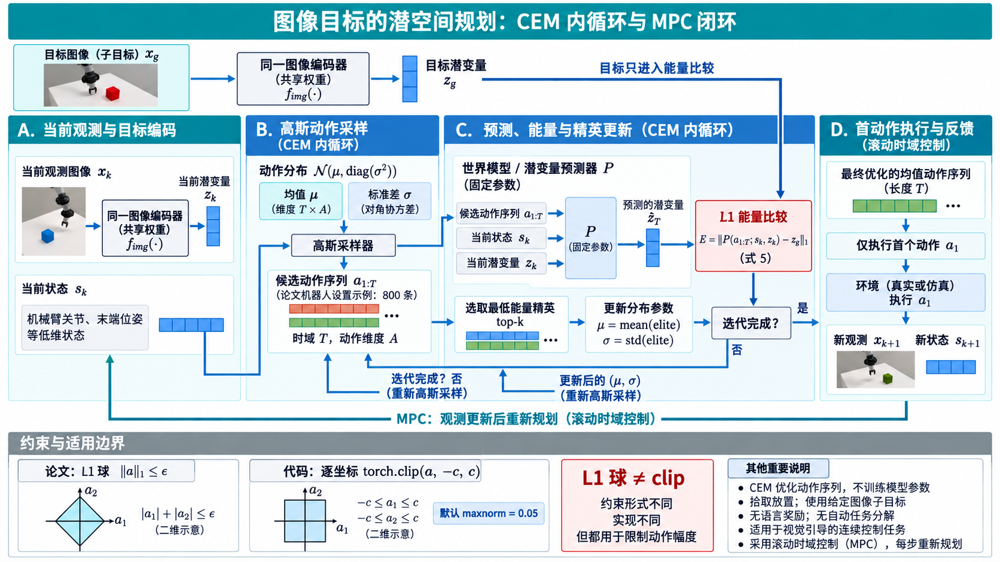
F08 | F08-r13
图 F08 全部细节说明
F08-r3 CEM/MPC 图像目标潜在空间规划
读图总览
本图明确分开世界模型的固定预测计算、CEM 内部动作分布搜索以及执行后再次观察的 MPC 外层反馈。目标表示只进入能量比较，不作为动作采样器或动作预测器的条件。图中所有箭头都应有可查询的数据来源与终点，不能把连线交叉当成目标信息输入预测器。两种动作约束分别陈述论文与固定代码的事实。
十八个元素说明
F08-E01：当前图像。 x_k 是本次真实控制决策得到的视觉观察。编码后的表示进入世界模型，而不是直接将像素颜色差用作任务奖励。下标表示实际执行循环，不能与动作序列内部的预测时间混用。
F08-E02：当前机器人状态。 s_k 提供预测所需的状态条件，它与视觉观察共同描述初始条件。状态输入没有自动解决部分可观察性或坐标变化；具体字段和归一化仍应核对 wrapper，不能从短标签推导完整物理状态已知。
F08-E03：已提供目标图像。 x_g 指定希望接近的视觉状态，而非语言任务、学习到的奖励或自动分解后的步骤。目标是否物理可达需要额外证据；规划能量下降不能直接当作任务成功证明。
F08-E04：目标表示独立路径。 同一个图像编码器产生 z_k 和 z_g，但是目标表示必须直接进入能量比较器。图中不允许 z_g 进入候选动作、Gaussian sampler 或 predictor。独立路径防止把目标条件预测器错误地解释为论文实际机制。
F08-E05：动作序列时域。 a_1:T 包含多个未来动作，搜索评价依赖整条序列的预测结果。该序列不是训练标签，T 也不是实际一次无反馈执行的步数。最终控制只取首个动作，所以优化时域和执行时域必须分开解释。
F08-E06：高斯采样分布。 CEM 使用均值与逐坐标标准差描述动作提议分布。若图中写协方差公式，应为 diag(sigma^2)，不能把标准差向量写成各坐标都相同的方差常数。图中的符号一致性直接影响读者理解采样更新。
F08-E07：候选数量示例。 800 候选绑定论文机器人设置，是一个可核对的实验配置而非模型通用常数。候选数、精英比例和迭代次数共同决定规划负载，单独比较候选数量不足以证明不同系统的计算效率。
F08-E08：固定动作预测器。 predictor 消费候选序列与当前 z_k,s_k，输出其未来表示。CEM 在这里不训练网络参数，也不会从 elite 集合反向更新编码器。参数生命周期与动作分布生命周期是两种独立机制。
F08-E09：最终预测表示。 每条动作序列产生用于目标比较的最终 latent，记作 zhat_T。图中不能把它画成目标表示的上游或重建照片。中间 rollout 表示可以用于递推，但能量比较对应的时间位置必须明确。
F08-E10：L1 能量。 ||P(a_1:T;s_k,z_k)-z_g||_1 由预测表示和目标表示两个独立输入构成。这里的 L1 在 latent 特征上运算，与动作幅度 L1-ball 的对象不同。二者共享名字不意味着可以在公式中相互替代。
F08-E11：低能量精英选择。 elite top-k 保留能量较低的候选动作序列，排序方向不能反转成最高能量。精英表示优化提议的有效性，不是环境已经执行成功的证据。图中应明确先评价全部候选，再形成精英集合。
F08-E12：分布统计更新。 mu=mean(elite) 和 sigma=std(elite) 从精英动作计算下一轮分布参数。更新结果需要回到高斯采样器生成新动作，而非回到均值模块自身。标准差不是 covariance，也不是对 latent 的统计量。
F08-E13：重新采样循环。 内部 CEM loop 按采样、预测、评价、选择、更新的顺序重复。未完成迭代时再次进入 Gaussian sampler，完成后才输出最终均值动作序列。连线绕过采样器进入旧候选会误表达算法，因此 r2 被拒绝。
F08-E14：论文 L1-ball。 菱形约束限制动作各坐标绝对值总和，小预算在坐标之间共享。一个坐标幅度增大将减少其他坐标的可用组合。这项几何与逐坐标上下界不同，不能因为都控制动作幅度就称作同义约束。
F08-E15：代码逐坐标裁切。 torch.clip(a,-c,c) 对每个坐标施加独立界限，可行集合是盒状。固定默认 maxnorm 为 0.05，但变量名并不改变实际 clip 计算。此图保留实现差异，不自动把差异认定为错误或等价效果。
F08-E16：只执行第一动作。 完成 CEM 后，真实系统仅接收最终序列的首个动作。其余动作保持为计划提议，没有未经观察的一次性全部执行。这个选择降低开环暴露长度，同时意味着下一轮计划可能覆盖之前尚未执行的提议。
F08-E17：重新观察与规划。 动作改变环境后获取 x_k+1,s_k+1，再从新的条件开始规划。外层反馈回到当前观察而非 elite 集合，因为真实状态变化后旧能量评价的起点也改变。闭环补偿有帮助，但并非长期稳定性证明。
F08-E18：图像子目标与系统边界。 pick-and-place 中可以使用多个外部提供的图像子目标安排阶段。该协议不等于自动任务分解或语言奖励学习。子目标顺序、切换规则及试验范围需要返回机器人实验设置，不能由图中几个目标图标外推通用规划。
证据与箭头验收
机制绑定论文 Eq.5、Appendix B 和固定 world_model_wrapper/mpc_utils。审校需分别验证目标仅进能量比较器、更新与未完成决策均进入采样器、完成决策输出最终动作均值、首步执行后反馈返回新观察。内部搜索循环与外部真实执行循环不能合并。正式图必须保持中文主体、四区密度及原始 PNG 字节；缩略图与直接打开资产保持相同 SHA-256。
9. 追加教学单元：实验数字的可比性
冻结 probe 的 88.2 平均分来自统一的 attentive probe，但它衡量的是“冻结表示经过受控监督头后能否线性/注意力读取任务信息”。它不衡量 predictor rollout 是否稳定，也不衡量 camera-conditioned control。EK100 的 Recall@5 通过未来 action token 评估预测能力，与 SSv2 top-1 不是同一任务；VidQA 的平均分又叠加了语言模型和对齐数据。因此把三个表按分数大小规律排序会制造不存在的统一尺度。
机器人表的成功率是每个任务和实验室的有限试验统计，不包含完整失败轨迹分布。两个实验室使用同一权重和 inference code 支持跨实验室迁移的证据，但相机安装、物体位置、动作范围和 trial 数仍是适用条件。Cosmos 的采样数和 V-JEPA 2-AC 的采样数不同，速度比较必须同时记录计算硬件、候选数量、规划 horizon 和反馈频率。
10. 追加教学单元：不可辨识性与最小失败场景
若相机只看到末端执行器的一部分，而 robot base 坐标轴没有进入画面，则两个不同的世界状态可能生成相似 RGB，却需要方向相反的 action。latent predictor 可以在训练分布内记住相关性，但没有观测到的坐标系信息无法被视觉表示凭空恢复。这是“相机敏感性”背后的不可辨识性，而不是单纯的模型容量不足。
另一个失败场景是长序列中的微小方向误差。每一步预测 latent 偏差若为 epsilon，递归 n 步后不一定线性增长，尤其当 predictor 的 Jacobian 在某些区域放大误差时会出现更快漂移。短 rollout 的训练和 receding-horizon feedback 可以降低风险，但不能从论文结果推出任意 horizon 的稳定性。报告因此把 rollout loss 的价值写成工程缓解，把长程 guarantee 明确列为未证明项。
11. 追加证据边界与回读索引
锚点正文与附录的数字回读以 source-coverage.md、evidence-ledger.jsonl 和 PDF 页图为准。Figure 2 的遮挡目标、Figure 3 的 scaling、Figure 6 的 AC rollout、Tables 1–8 的数据和 Appendix A–E 的超参数分别对应不同 evidence ID；不能仅凭正文摘要复述附录默认值。固定代码的每个实现差异必须同时绑定文件哈希、行号和 crosswalk 章节。未完成的 deep-code-read closed-book gate 不影响已取得的 Code Fact，但会阻止 analysis_ready 和 delivery_complete。
12. 追加推导：为什么 latent target 会改变学习压力
像素重建要求模型对每个 RGB 值负责，即使这个值来自随机纹理、压缩噪声或未来不可确定的局部运动。设一个被遮挡块的像素目标写成 r，表示目标写成 u。像素损失会惩罚 r_hat-r 的每个通道误差；表示损失只惩罚 u_hat-u。如果同一上下文允许多个合理未来 r^(1),r^(2)，像素均方误差的最优解趋向条件均值，可能得到不存在的模糊纹理；latent 预测则可以把多种细节投影到相同的高层状态，只要求预测可稳定因素。这个解释说明了 JEPA 的 inductive bias，但不证明所有不可预测因素都会被删除，也不证明 latent 空间天然具备控制充分性。
EMA target 的作用可以用两个时间尺度理解。在线参数 theta 每个 batch 由 loss 快速更新，目标参数 theta_bar 只做缓慢更新，例如 theta_bar <- tau theta_bar+(1-tau)theta。若直接让两个网络同时自由更新，target 会追随 predictor 的瞬时错误，损失可能通过共同漂移降低而没有稳定语义；EMA 让 target 变化更平滑。sg 的作用不同：它阻断当前 batch 的梯度，防止把 target 当作可被损失直接修改的分支。只有两者同时存在，才得到“目标慢、当前梯度单向”的训练动力学。论文把它们作为实践机制报告，没有给出任意数据分布下的 collapse 定理。
13. 追加推导：mask 几何与信息访问
multiblock mask 并非独立均匀抽样的 token 列表。一个空间连续块或时间连续块被隐藏时，模型需要从周围 patch、相邻帧和物体运动中推断缺失区域；如果每个 token 独立抛硬币，任务会更接近局部插值，难以测试长距离关系。块大小、数量、覆盖比例和是否允许重叠会改变信息访问图：遮挡太小，模型可以依赖局部纹理；遮挡太大，目标可能在上下文中不可辨识。论文公开“multiblock”继承关系与 tubelet 尺寸，具体采样器和 mask ratio 属于代码/配置证据，不能用通用 MAE 默认值替代。
对视频来说，mask 的时间跨度还改变预测任务的因果含义。若同一动作连续帧被一起遮挡，模型必须理解运动趋势；若只遮单帧，邻帧几乎可以提供像素级线索。V-JEPA 2 的 understanding probe 不等于动作预测，因此 mask 设计最终学到的是“在 VideoMix 分布上可预测的视觉结构”，不必然等价于“机器人控制所需的状态”。AC 阶段再次使用交互数据和动作条件，就是为了把表示转换成受 action 约束的动态预测。
14. 追加推导：从 token 网格到计算量
对输入 F×H×W、tubelet (2,16,16)，token 数近似为 (F/2)(H/16)(W/16)。当输入从 16×256×256 提升到 64×384×384，token 数从 8×16×16=2048 变为 32×24×24=18432，约为 9 倍。全注意力的 token-token 交互近似按平方增长，因而末尾高分辨率阶段必须配合 batch、显存和优化策略。论文报告渐进 schedule 的 GPU-time reduction，真正原因不只是像素少，也包括大部分 steps 使用更小的 attention problem。
这组计算还解释为什么不能只在报告中写“训练更久、图像更大”。训练步数、模型宽度、输入 token 数和最后 cooldown 同时决定每个参数看到的有效上下文及优化噪声。若只增加模型而不增加数据，容易进入数据受限；若只增加视频时长而保持空间分辨率，可能提升时间建模却无法改善细粒度物体识别。V-JEPA 2 的表格把这些因素分开列出，但组合实验仍有交互，故综合结果只能支持工程 scaling 结论。
15. 追加推导：AC block-causal 的可见性矩阵
把一个时间块写成 [a_k,s_k,p_{k,1},...,p_{k,m}]。block-causal mask 的行列规则是：块 k 的 token 可以读取块 1...k，不能读取 k+1...T；在块内 action/state/patch 的排列决定同一时刻的条件顺序。若 action 和 state 放在 patch 前面，同块 patch 可以使用当前控制条件；如果把 action 放在 patch 后面，模型可能需要额外的双向同块连接才能得到同样效果。代码中的 mask 构造、token 拼接顺序和 temporal-only RoPE 共同定义真实可见性，论文文字只给出概念层描述。
teacher forcing 的可见性矩阵每一行都使用真实历史 latent，因而优化信号干净但存在 exposure bias；rollout 则把自己的预测重新喂回，暴露递归漂移。二者相加不是简单重复监督：前者校准局部条件映射，后者惩罚分布外的自回归输入。代码 crosswalk 中的 auto_steps=2 只表示一个短闭环训练窗口，不能被解读为模型已经在 15 步或 800 候选动作上反传。
16. 追加推导：image goal 的表示几何
图像目标规划把目标任务化为在 latent 空间靠近 z_g。这要求 encoder 的距离在目标相关因素上有意义：同一物体不同光照应保持足够近，目标位置或抓取状态的差异应足够远。L1 距离的坐标加和使每个 feature 维度贡献线性，但没有自动校准各维度的任务权重。若目标图包含背景、遮挡或视角变化，能量低未必意味着机器人达到可执行状态。
多子目标 pick-and-place 用若干目标图把长任务切成可检查的阶段，减少单次 latent distance 必须编码全部语义的压力。代价是子目标选择由人提供，规划器不会从语言或奖励自动发现阶段。论文的 zero-shot 结果因此证明了在固定图像目标和 DROID 动作分布内的闭环迁移，不证明开放式任务规划或任意相机变化下的目标可达性。
17. 追加推导：冻结 probe 与 predictor token 的区分
冻结 attentive probe 的输入是 encoder 表示，probe 自己可学习注意力池化和分类头；它回答“当前帧/片段表示是否已包含可读出的任务信息”。EK100 anticipation 使用 predictor output，回答“表示空间是否能提前表达未来动作”。两者可能出现不同结果：encoder 对当前物体分类很好，但 predictor 对未来动作不稳定；也可能 encoder 平均分略低而 predictor 通过动态结构改善 anticipation。报告把它们放在不同 comparison slot，不把 predictor 的提升加到 encoder 的分类分数上。
VidQA 还引入视觉到语言的对齐训练和语言模型解码。它的平均分可以说明 V-JEPA 2 表示作为视觉输入对语言问答有用，但不能说明无语言监督阶段已经学会词汇、指令或因果解释。对齐数据规模、语言模型能力和 projector 参数都需要记录；只引用表格末行而不写 controlled/scaling setting，会把系统增益错误归因给视频预训练目标。
18. 追加推导：机器人成功率如何读表
对每项任务，论文把若干 trial 的成功/失败聚合成百分比。100% reach 只说明在给定实验室、物体和初始状态集合中没有失败，不表示对所有初始位姿的概率为 1。25% box grasp 则说明同一控制器在物体类别或视觉几何改变下很脆弱，不能用平均成功率掩盖。跨实验室测试提高了外部有效性，但仍需注意相机高度、背景、夹爪和动作限制的共同变化。
规划速度也有条件。若 V-JEPA 2-AC 每动作约 16 秒，CEM 采样 800 条轨迹，而另一模型每动作约 4 分钟只采样 80 条，时间和候选数量同时改变。公平比较至少要记录每轮采样数、迭代数、horizon、编码缓存、GPU/CPU 设备和重规划频率。论文给出这些上下文中的部分信息，静态报告不能把速度比直接变成渐进复杂度结论。
19. 追加推导：附录默认值的证据角色
正文通常给设计意图，附录给训练分辨率、帧率、mask、optimizer、batch、probe 层数和推理细节。若一个结论依赖这些默认值，必须在 source-coverage 中绑定附录页，而不是从常见 ViT 习惯补齐。例如 T=15 是 16 帧动作差分产生的 teacher-forcing 长度，T=4 出现在 Figure 6 的说明画法，两者的来源层级不同。类似地，action constraint 的半径、CEM top-k 和子目标切换步数属于规划复现所需条件，不能用“按论文设置”代替。
附录也可能包含作者未在主文强调的失败或消融。长程 rollout 曲线下降、相机敏感性、不同预训练数据的变化和 128/256 帧没有额外收益，都会限定“世界模型”这个功能性称呼。完整精读的目标不是把附录数字堆进表格，而是把每个默认值连接到它影响的机制、实验和边界。
20. 追加读者自测与直接答案
自测一：如果把 sg 删除，哪条梯度会新增？ 答：目标编码器的输出会把梯度传回 E_theta_bar，但这仍不等于参数会按照在线 encoder 更新；若同时保留 EMA 写入，训练会出现一个由梯度和 EMA 共同驱动的目标分支，偏离论文设定。
自测二：为什么完整 y 必须有独立输入副本？ 答：因为 target 表示需要未遮挡内容作为参照。若复用 x，被遮挡位置在 target 中也缺失，模型可能只需复制上下文统计，不能形成真正的 masked prediction。
自测三：为什么 9 倍 token 体量不等于 9 倍训练时间？ 答：真实时间还受 batch、attention kernel、并行度、I/O、混合精度和 cooldown steps 影响；9 倍只是由帧数和分辨率得到的输入 token 粗略比。
自测四：为什么 CEM 执行第一步后要重新观测？ 答：模型预测有误差，环境也可能偏离训练分布。receding-horizon 把后续动作延迟到新观测之后，降低单次长 rollout 的开放环风险，但不会修复错误的目标 latent 或不可辨识的坐标系。
自测五：如何描述“V-JEPA 2 学到了世界模型”？ 答：应限定为“在 latent space 中对视频状态和 action-conditioned transition 进行可用于预测与规划的建模”，并列出短 rollout、图像目标、小规模机器人实验和未证明的长程/因果充分性边界；不能写成完整物理世界状态估计或普遍控制保证。
21. 追加来源—解释—图稿绑定
F02 只承载 Eq.1 的四区数据、参数和梯度边界；后续 F03/F04 将把 transformer 结构与 scaling 的数据账本拆开，F05/F06/F07 承载 AC 可见性、张量流和梯度，F08 解释 CEM，F09/F10 对应入口与论文代码差异，F11/F12 扩展系列机制和边界。每张图都必须引用本文件的稳定机制段落与 evidence ID，不能把一张总览图的短标签当作全部解释。若源码 gate 尚未通过，图稿中只能使用已绑定的静态 Code Fact，并把未验证内容标成 pending。
该绑定关系保证后续重绘有明确失效传播：公式、默认值或代码行号改变时，受影响图的事实清单、详解和 HTML 都标为待更新；无关图可复用其稳定哈希。任何图像生成成功消息、代理口头完成或目录中出现 PNG，都不能越过逐元素视觉审校和 provenance receipt。
22. 追加机制卡：在线编码器、预测器与 target 的职责分层
在线编码器并不是“把可见像素压缩一下”的前处理器。它决定了上下文中哪些结构可以进入 latent，预测器再决定如何利用这些结构和目标位置 token 产生缺失区域的表示。两者都参与 loss 的梯度路径，却有不同的函数角色：编码器学习可供多种 mask 共享的上下文表征，预测器学习从上下文到目标位置的条件变换。若把预测器移除，编码器必须直接输出目标 token，位置条件和跨区域关系难以显式表达；若冻结编码器而只训练预测器，表示不会根据预测难度调整。
target 编码器的职责则是提供一个比当前 online 参数更慢的参照系。它不承担“更强教师”的监督语义，也不使用标签。完整输入 y 经过 E_theta_bar 后，只取被遮挡位置的 target embedding；这使得同一个完整样本既产生上下文分支又产生目标分支。目标网络与 online 网络结构相似并不意味着它们在同一个时刻参数相同，EMA lag 是稳定化的一部分。报告中把网络结构、输入可见性和参数更新分别列出，避免“teacher encoder”这个简称遮蔽真实动力学。
23. 追加机制卡：为什么只在 masked position 监督
只在 mask 区域计算损失有两个直接效果。首先，visible token 不是简单的复制目标，编码器必须利用它们之间的关系去推断缺失区域；这提高了任务对空间结构、时间连续性和物体上下文的要求。其次，监督规模随 mask 数量变化，而不是随全部 token 数量变化，训练成本和梯度权重需要按实际 mask index reduction 计算。若把 visible token 也平均进损失，模型可能通过保持局部 identity 来降低目标误差，masked prediction 的压力变弱。
“只监督 masked token”也带来边界：mask 过小会使预测退化成近邻插值，mask 过大则可能让目标在上下文中不可辨识；固定一个 ratio 不能适应所有视频运动和物体密度。论文的 scaling 实验在相同方法框架内比较数据、模型和 schedule，却没有把每种 mask 几何做成完整 factorial。因而报告把 mask geometry 视为影响结论的重要条件，并把源码采样器列为必做 deep-code-read 问题。
24. 追加机制卡：无动作预训练与动作条件适配为何分两阶段
无动作视频容易获得，适合学习跨场景的视觉状态；机器人交互数据昂贵且包含特定平台的控制坐标，适合学习 transition。把两者混在一个损失中会让大规模无动作数据稀释动作条件信号，也会迫使视觉 encoder 过早适应某个机器人。V-JEPA 2 先在 VideoMix22M 上训练共享视觉表示，再冻结 encoder，用不到 62 小时 DROID 学习 action-conditioned predictor，这种拆分是数据规模和部署迁移之间的工程折中。
冻结 encoder 还有解释价值：AC 结果更接近“固定视觉表示能否支持控制”，而不是重新训练数亿参数后的端到端结果。代价是如果 Stage 1 表示丢失了控制所需的不可见状态，AC predictor 不能凭空恢复；它只能在已有 latent 和 state/action 条件上拟合转移。论文的 camera sensitivity、长程 rollout error 和 image goal 限制都可以从这个分层设计理解：表示质量、动态可辨识性和规划目标是三个不同瓶颈。
25. 追加机制卡：状态、动作与视频帧的对齐
DROID 的状态是每帧的末端执行器位姿与夹爪值，动作是相邻状态差分。这个定义把 action 变成一种离散时间速度/增量，而不是高层语言命令或策略输出。若采样频率是 4 fps，两个相邻状态的差分对应约四分之一秒的控制变化；模型预测的是 latent 下一帧，不是直接预测成功/失败。状态和动作的单位、角度参数化、夹爪编码以及归一化会影响 predictor 的数值尺度，必须绑定附录和配置，而不能仅写“7D vector”。
时间对齐也影响 teacher forcing 的目标下标。16 帧产生 15 个相邻 action，但某些实现会用首帧 state 配合第一个 action，再把预测目标对齐到第二帧；如果把 action a_k 错配到 z_k 而不是 z_{k+1}，模型会学到滞后或提前的 transition。固定源码的 collator、reshape 和 block mask 共同决定这个对齐，论文公式提供语义约束但不能替代行级验证。
26. 追加机制卡：训练与推理的状态生命周期
训练 teacher forcing 时，真实视频帧、真实 state 和由 state 差分得到的 action 在一个样本内同时存在；mask、patch token 和目标 latent 可以在 batch 级缓存。rollout 训练增加预测 latent 的临时状态，递归结束后 loss reduction 才把各步误差合并。推理时，当前帧和当前 state 是唯一真实观测，未来 latent 是模型状态；CEM 会为许多候选动作复制或批量化这一状态，但执行环境只接收 elite 序列的首个动作。
因此不能把训练缓存当作部署记忆。每次 receding-horizon 重新观测后，旧的预测状态可以丢弃或只用于诊断；模型不会自动保存整个历史视频，除非入口明确维护 temporal context。报告的 tensor-state-flow 要区分持久参数、每帧局部 token、每条候选轨迹的临时 latent 和跨重规划周期的真实 robot state。混淆这些生命周期会错误解释显存、速度和闭环鲁棒性。
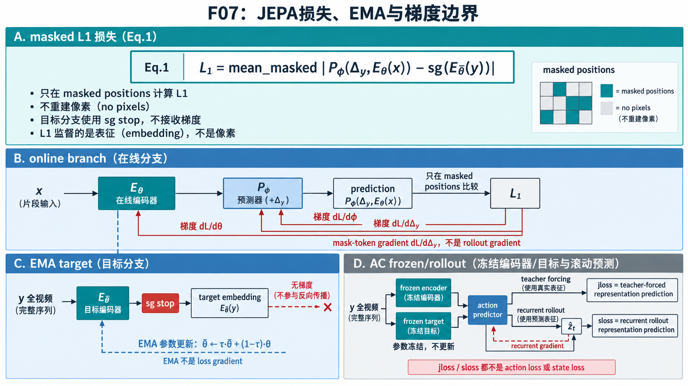
F07 | F07-r2
图 F07 全部细节说明
F07-r2 JEPA 损失、EMA 与梯度边界
读图总览
本图只审计训练目标、参数更新和梯度边界。A 区的 Eq.1 是 masked representation L1：预测器输出只在 masked positions 与完整视频的 target embedding 比较，sg 表示 stop-gradient，目标不是像素重建。B 区的 forward 从 x 进入 online encoder，再进入 predictor；损失梯度返回 theta、phi 和 mask token Delta_y，其中最后一条明确是 mask-token gradient，不是 rollout gradient。
双分支与 AC 边界
C 区完整视频 y 经过 target encoder，sg 后得到 target embedding。theta_bar 由 theta_bar <- tau theta_bar + (1-tau) theta 做 EMA 参数更新；这条虚线不属于 loss 的反向传播。D 区把 AC 的 frozen encoder/target、action predictor、teacher forcing 和 recurrent rollout 分开。固定 trainer 中 jloss 比较 teacher-forced representation prediction，sloss 比较 recurrent rollout representation prediction；二者都不是动作或状态分类损失。图中的 z_hat_t 回灌下一步并接收 recurrent gradient，表示 rollout 的计算图边界。
证据与边界
来源绑定 Eq.1、AC Eq.2–4 和固定 commit 的 app/vjepa_droid/train.py:408-449。图不声称任意 auto_steps 都提供长程保证，也不把 AC 阶段的冻结参数重新写成 Stage 1 更新。每条红色梯度箭头和蓝色 EMA 虚线均有独立语义，不能互换。
逐元素说明
F07-E01 是 Eq.1 标题，声明这一张图讨论 JEPA 的训练目标；F07-E02 是 mean_masked，表示 L1 只在目标遮挡位置聚合，未遮挡位置不能偷偷贡献像素误差。F07-E03 是预测项 P_phi(Delta_y,E_theta(x))：输入视图先由在线编码器得到可见表示，预测器同时消费目标位置的 mask token。F07-E04 是 sg(E_theta_bar(y))，目标来自完整视频的 target encoder，sg 将反向图截断。F07-E05 的绝对值是表示向量的逐特征差，而不是 RGB 像素重建；因此图中“no pixels”是方法边界，不是可选实现。
F07-E06 的 x 箭头只进入在线分支，箭头顺序是 x → E_theta → P_phi → prediction → masked comparison。F07-E07 的在线编码器参数记为 theta，红色回传箭头表示 L1 对 theta 的导数；这条箭头不能穿过 target 分支。F07-E08 的 predictor 参数记为 phi，L1 对 phi 的梯度从 loss 返回 predictor。F07-E09 是 Delta_y mask token，图中专门写出 dL/dDelta_y，用于区分 mask-token gradient 与后面 AC rollout 的 recurrent gradient。F07-E10 是 prediction 节点，它先保留预测表示，再由 masked positions 选择器送入 L1；不能把它解释为一张重建图像。
F07-E11 是 y 全视频输入，说明 target 分支接收完整序列，而非只接收 visible patch。F07-E12 是 target encoder E_theta_bar，参数不接受 L1 的更新；F07-E13 是红色 sg stop 方框，表示 stop-gradient 的位置，红色叉号明确了禁止的反向方向。F07-E14 是 target embedding，作为冻结 teacher 的数值目标。F07-E15 是蓝色 EMA 参数更新虚线，公式 theta_bar <- tau theta_bar + (1-tau) theta 说明 target 参数由在线参数的指数移动平均更新；它是参数更新规则，不是 loss gradient。
F07-E16 是 AC 区的 frozen encoder/frozen target，二者只提供表示，参数保持冻结。F07-E17 是 action predictor 及其两条输出协议：teacher forcing 使用真实历史表示得到 jloss，recurrent rollout 使用前一步预测表示得到 sloss。F07-E18 是 z_hat_t 回灌下一步的短循环以及红色 recurrent gradient；这条梯度只描述 rollout 预测链的反向传播。底部红色边界声明 jloss/sloss 都不是 action loss 或 state loss，避免把动作条件输入误读为监督标签。
箭头审计与失败边界
实线箭头表示 forward 数据或计算；红色梯度箭头表示从 L1 返回在线可训练量；蓝色虚线表示 EMA 参数更新；红色虚线停止符号表示 target 端的反向边界。允许的梯度终点只有 theta、phi、mask token 和 AC rollout 中的预测 latent。禁止的连接包括 L1 → E_theta_bar、prediction → target encoder、EMA → sg 以及把 jloss/sloss 接到动作分类头。论文 Eq.1 的 masked representation 目标、固定源码的 frozen target 和 AC trainer 的 jloss/sloss 必须同时成立；若换了配置或把 Stage 1 encoder 解冻，图中的结论就不再适用。
可复核计算
给定一个 batch 中有 64 个 target positions、表示维度为 16，masked L1 的比较张量可写成 64×16；先对绝对差按 feature 维求和或均值，再按实现的 masked reduction 聚合，输出一个标量。这个计算只说明张量归约的形状，不声称改变论文损失的具体归一化常数。AC 的 auto_steps=2 示例表示在首个 teacher-forced 预测后执行一次 rollout loop；它不是任意 horizon 的保证，也不能把一次循环的 sloss 改名为 action error。读图时应先沿实线读 forward，再沿红色/蓝色虚线检查两类更新是否被混淆。
为什么两类训练不能混在一起
第一阶段同时学习在线编码器和预测器，所以掩码位置的误差可以改变可见位置如何组织语义。目标编码器缓慢跟随在线参数，避免每次更新后监督目标迅速漂移。停止梯度与参数移动平均承担不同职责：前者决定反向计算图在哪里终止，后者决定下一次前向时目标参数取什么值。即使目标向量的数值每一步都变化，也不能由此推断它正在接受损失梯度。
第二阶段的数据已经包含机器人动作与状态，表示编码器保持冻结，训练重点变成动作条件动力学。教师强制分支给预测器真实历史表示，误差主要检验单次预测；递归分支逐步使用预测值，后面的误差能够通过前面预测的计算图回传。前者提供局部时间对齐，后者暴露预测误差积累，两者的监督对象仍然是未来表示。动作与状态是条件，既不能把动作输入箭头读成动作标签，也不能把状态输入读成状态回归头。
例如移动平均的系数为零点九，旧目标参数为二，当前在线参数为三，则更新后的目标参数是二点一。这里没有对目标参数计算损失导数，也没有更新目标编码器的优化器步骤。若另一个例子只观察一帧真实表示并预测下一帧，再把这个预测送回预测器，那么第二次预测的误差可影响第一次预测；它经过的是预测链，而不是冻结编码器。两个例子分别说明参数更新和递归梯度，不能互相替代。
本图没有表达训练调度器、优化器状态、分布式规约或机器人执行安全约束。这些内容由配置和相应源码单元解释。科学审校要求的是图中每个已经画出的连接都成立，而不是把没有画出的工程环节假定已经验证。
27. 追加机制卡：CEM 的统计更新与约束位置
CEM 的每一轮不是对动作做梯度下降。它维护动作序列分布，例如均值 mu 与方差 sigma，从分布采样候选，再依据 latent energy 选 elite，重新估计 mu,sigma。如果动作约束在采样后裁剪，energy 评估看到的是裁剪后的轨迹；如果约束在分布更新前施加，elite 统计也会改变。论文的 L1-ball 语言、代码的 coordinate clip、wrapper 的 rollout 默认值分别位于不同层，必须在图 F08/F10 中画成不同节点。
候选数量和迭代次数还决定 planner 的统计分辨率。更多候选可能更接近 energy 低的区域，但也增加 predictor 前向开销；较短 horizon 降低误差，却可能无法完成需要多阶段接触的任务。pick-and-place 使用多个 image subgoal 是把复杂搜索拆成若干短问题，而不是让 CEM 自动发现任务分解。若目标图本身包含错误姿态，planner 仍可能稳定地追向错误 latent，这属于目标定义风险而非采样噪声。
28. 追加机制卡：从论文 claim 到代码 fact 的审计方法
一个可审计的对应关系至少有四个字段：论文句子或公式的位置、源码固定 commit 与行号、输入输出契约、差异或未实现状态。例如 Eq.5 的 claim 是 latent energy 加 CEM 和 L1-ball，代码证据同时给出 world_model_wrapper.py 的预测调用与 mpc_utils.py 的候选/clip 实现；因此结论是“规划路径存在且语义相近，但约束实现不同”，而不是“代码完全复现 Eq.5”。
同样，Eq.3 的 rollout claim 需要检查 trainer 的 auto_steps、循环边界和 detach/no-grad 条件；只搜到函数名不能回答“反传几步”。inventory-receipt.json 证明固定快照有完整函数索引，不证明函数语义已解释；deep-code-read 的 ABCD/EF closed-book 结果才是分析 ready 所需的额外证据。报告的状态字段会把 source-ready、analysis-ready、publication-ready 和 delivery-complete 分开，避免目录齐全造成假通过。
29. 追加总结：读者应保留的五条判断
第一，JEPA 的核心接口是预测目标表示，而不是生成像素；这带来可预测性偏置，也留下表示充分性问题。第二，V-JEPA 2 的主要进展是把这个接口扩展到大数据、大模型、长训练和更高时空分辨率，并用第二阶段动作条件 predictor 支持规划。第三，teacher forcing、短 rollout 和 receding-horizon 各自解决不同误差来源，不能合并成一个“端到端世界模型”标签。第四，论文指标必须按 probe、anticipation、VQA 和 robot planning 的任务条件分开读。第五，论文与固定代码的差异，尤其是 RoPE 权重兼容、动作约束和 rollout 默认值，是理解真实系统不可省略的内容。
如果读者能从 y→mask→x 画出 Eq.1 的梯度边界，从 a_k,s_k,z_k 对齐到 z_{k+1}，再解释 CEM 为什么执行首步并回到观测，就已经掌握了锚点的基本机制；如果还能指出这些计算在哪个 commit 文件中、哪些数字来自附录、哪些结论仍受 camera/long-horizon/goal 表达限制，才达到本任务要求的论文—代码联合理解。
30. 追加逐步实例：一个动作条件预测 batch
设一个训练样本含 4 帧，帧级 patch 特征为 z_1,z_2,z_3,z_4，状态为 s_1,...,s_4。先由差分得到 a_1=s_2-s_1、a_2=s_3-s_2、a_3=s_4-s_3。在 teacher-forcing 的第一个时间块，输入可以是 s_1,z_1 和对应动作条件，目标是 z_2；第二个块加入真实 s_2,z_2 与 a_2，目标是 z_3。这里的真实 z_2 作为下一块上下文出现，而不是被第一个预测结果替代，所以每步的局部误差不会自动累积。
在 rollout 分支中，第一步得到 z_hat_2=P(a_1;s_1,z_1)，第二步使用 z_hat_2 而非真实 z_2 计算 z_hat_3=P(a_2;s_2,z_hat_2)。若只回传一次 recurrent loop，梯度会穿过 z_hat_2 到第一步 predictor；若配置把循环次数改大，梯度、显存和误差性质都会变化。这个例子解释为什么 crosswalk 记录“默认 auto_steps=2、实际 loop 一次”十分重要：数字 2 表示预测跨度配置，不等于两次完整循环反传。
状态和 action 的 token 也必须按 batch 维度对齐。假设 batch size 为 B，每帧 patch 网格为 16×16，每个时间块的 patch token 数为 256；状态与 action token 若各占 1 个，时间长度为 16，则一个样本的块级序列不是简单的 16×256，而是每块含条件 token 加 patch token 的交错序列。block mask 必须根据这个交错索引生成，不能直接对展平 patch 序列套一个普通 causal mask。图 F05/F06 的元素清单需要同时给出 batch、time、patch 和 condition token 的轴含义。
31. 追加逐步实例：从 latent energy 到动作执行
设当前 latent 为 z_0，目标 latent 为 z_g，horizon 为 2。CEM 初始采样三条动作序列：A1=(a_1,a_2)、A2=(b_1,b_2)、A3=(c_1,c_2)。预测器分别产生末状态 q_1,q_2,q_3，能量是 ||q_i-z_g||_1。若 A2,A3 最小，则均值更新偏向 b,c 的坐标，方差在这些方向收缩。下一轮仍从更新后的分布采样，而不是直接把 A2 当作确定动作。
如果第一步执行 b_1 后相机重新观察到 z'_0，旧的 b_2 只作为候选历史，不必强行执行。新的 CEM 以 z'_0 为起点重新估计第二步，因而能修正抓取物体轻微移动、相机噪声或 predictor 偏差。这个闭环的代价是每次重规划都要重新编码并运行若干候选；论文报告的时间、采样数和 horizon 必须一起记录。把 CEM 简化成“一次前向选最小动作”会漏掉分布更新，也无法解释实际 planner 的计算成本。
32. 追加跨论文对照：同一个接口的不同 target
I-JEPA 的 target 主要是图像上下文之外的 patch 表示，空间 mask 是核心；V-JEPA 把 target 扩展到时间—空间 tubelet，必须处理视频帧间的冗余与运动；Point-JEPA/3D-JEPA 把 token 的几何载体改成点或三维 patch，目标位置和邻域定义不再是规则二维网格。它们共享预测 latent 的接口，但 mask、位置编码、邻域聚合和下游 probe 不同，不能把 V-JEPA 2 的 2×16×16 直接移植到点云。
LeJEPA 关注稳定化正则与可证明性质，说明 collapse/信息保真问题可以从优化动力学之外提出更明确的约束；LLM-JEPA、VL-JEPA 关注语言/视觉 target 的接口和跨模态对齐，说明“目标表示”可以是语义空间而不只是视觉 patch。V-JEPA 2.1 的 dense features 则把监督压力进一步施加到中间层或密集 token，回应全局表示对空间定位不够敏感的边界。跨论文比较时，应记录目标粒度、监督位置、稳定化方式和推理消费者，而不是只列年份和 benchmark。
33. 追加边界：什么才算支持“迁移”
当冻结 encoder 在多个视频分类数据集上表现好，最稳妥的结论是“表示在这些受控 probe 条件下具有可迁移信息”。要说“理解”，还需说明 probe 的监督量、输入帧采样、类别定义和是否允许 temporal aggregation；要说“规划”，还需说明 action/state 条件、目标定义、CEM 搜索和闭环 feedback。V-JEPA 2 同时报告这些能力，但它们由不同阶段、不同数据和不同头部测量。
后续应用论文的“JEPA-inspired”标签也需要同样审计。若应用只在摘要中写“采用 JEPA 思想”，而全文没有明确 target encoder、latent prediction 或 mask 机制，索引只能标为 application_index_only。若有完整 PDF，就要逐节登记它实际改变的表示、mask、loss、训练数据和下游消费者；没有官方代码则第四层写清“无公开实现”。这种分级既保持应用索引完整，也避免把相似命名当作机制继承。
34. 追加证据保全：异常中断后的恢复原则
本任务曾出现流断开、源包部分下载、代理零调用和图片视觉拒收。每次异常都先检查已落盘的 partial、事件、时间戳和哈希，再改变路线或粒度；不把一次连接失败写成来源不存在，不把代理口头 success 当作语义通过。2603.14482 和 2610.06805 的 PDF 已经通过 range recovery 形成完整文件，但对应 source archive 仍保留 429/partial receipt；这两个状态必须在 manifest 中分别记录。
图片也遵循同一原则：F02-r3/r4 虽然有 native PNG 和事件，但拓扑审校不通过，因而进入 rejected evidence；F02-r5 才进入 accepted。后续 F03–F12 每张图都必须有当前任务 native call/end、尺寸、哈希、事实清单、逐元素审校和中文详情。恢复任务时从最后一个可验证 checkpoint 继续，不覆盖失败回执、不删除旧证据、不把中间状态改写为完成。
35. Appendix A：预训练超参数如何改变证据解释
附录的 Pretraining Hyperparameters 表把论文正文里的“长训练”和“更高分辨率”拆成了可检查的控制量。主阶段使用 16 帧、4 fps、256 crop、global batch 3072，warmup 12,000 steps；cooldown 阶段仍保持 4 fps，却把片段增到 64 帧，并允许 256、384、512 三种 crop。两阶段都保持 tubelet size 2、patch size 16、spatial mask scale [0.15, 0.7]、temporal mask scale [1.0, 1.0]、mask aspect ratio [0.75, 1.5]，EMA 为 0.99925，weight decay 为 0.04（main.tex:935–965，PDF Appendix A）。这组不变量很重要：cooldown 的收益不能简单称为“换了另一种模型”，因为 mask 和 patch 几何没有同时被替换。
学习率字段容易被误读。表格按“starting/final”列出主阶段 1e-4 → 5.25e-4、cooldown 5.25e-4 → 1e-6，正文随后说明主阶段先 warmup、再保持，cooldown 才线性退火（main.tex:967–974）。因此不能把 5.25e-4 当成整个训练过程的固定学习率，也不能把 12,000 cooldown steps 当作总训练步数。附录还给出 abbreviated recipe：90,000 steps、16 帧、256 crop、global batch 3072，EMA 从 0.999 线性到 1.0、weight decay 从 0.04 线性到 0.4（main.tex:976–1012）。论文用这个短配方做数据混合消融；它适合比较数据组成，不能直接替代正文的长训练结论。
这一区分给出了一个实验解释边界。若 abbreviated recipe 中 Curated YT1B 胜过 Uncurated YT1B，只能支持“在短预算和该模型规模下，检索式数据筛选有益”；若长训练后 VM22M 的收益继续扩大，才能说明数据质量与训练时间存在交互。不能把两个 recipe 的单个分数直接相减当成纯粹的 curation effect，因为 EMA、weight decay、学习率路径和步数也变了。
36. Appendix B：数据筛选、模型规模与消融表
YT1B 的筛选过程不是一个抽象的“清洗数据”标签。作者先用 PySceneDetect 进行 scene extraction，丢弃短于 4 秒的片段，从约 1.4M 小时视频得到 316M scenes；再用 DINOv2 ViT-L 中间帧抽 embedding，聚成 1.5M clusters，只保留被目标数据集分配到的约 210k clusters，得到 115M scenes（main.tex:1017–1023）。每个 cluster 的采样权重由目标数据集权重、该数据集在 cluster 中的样本比例和目标数据集总样本数共同决定：
统计表中 K710 是 170k clusters/100M scenes/weight 0.7，SSv2 是 41k/19M/0.125，COIN 是 37k/21M/0.125，EpicKitchen 是 4k/13k/0.05；最终 curated 集合为 210k clusters、115M scenes 且包含 retrieval duplicates（main.tex:1033–1055）。所以“curated”同时改变了 support 和 sampling distribution，不能只理解为删除低质量视频。
数据消融的数值也显示尺度交互。ViT-L 上，Curated YT1B 相比 Uncurated YT1B 在 COIN 由 83.2 到 86.5、SSv2 由 70.9 到 73.1、K400 由 82.9 到 84.6，但 Mixed+Uncurated 在 IN1K 达到 82.9、SSv2 达到 73.3；VM22M 在 SSv2 反而是 72.8。ViT-g 上，VM22M 才在四项中全面优于 Mixed+Uncurated，分别为 IN1K 83.9、COIN 89.2、SSv2 75.6、K400 86.2（main.tex:1084–1119）。这张表反驳了“数据筛选在所有模型规模和任务上单调有效”的简化说法。
模型架构表把 scaling 的责任边界也写清楚：ViT-L 为 300M、width 1024、depth 24、16 heads；ViT-H 为 600M、width 1280、depth 32；ViT-g 为 1B、width 1408、depth 40、22 heads。三者都使用 2×16×16 strided-conv embedder，而 predictor 固定为 ViT-s、22M、width 384、depth 12、12 heads、MLP 1536（main.tex:1057–1080）。因此“模型规模 scaling”主要扩大 encoder；不能把 predictor 规模也随之扩大后再声称复现同一消融。
37. Appendix C：cooldown、帧数与评估协议
Effect of Long Training Schedule and cooldown 表给出的三行是同一 ViT-g 体系的阶段比较：Phase 1（epoch 800、无 cooldown）在 IN1K/COIN/SSv2/K400 为 83.8/89.1/75.1/85.8；Phase 2 在 256² 退火后为 84.6/90.7/75.3/86.6；Phase 2 在 384² 退火后为 85.1/90.2/76.5/87.3（main.tex:1130–1150）。最合理的归因是“退火和更长片段/更高 crop 的联合阶段有效”，而非只把最后一行的 +1.5 平均提升归给分辨率。论文正文也说 256² 到 384² 对 IN1K 有 84.6 到 85.1 的增益；这支持分辨率贡献存在，但没有独立 factorial 消融来分离所有交互。
评估帧数是另一个容易越界的因素。对使用 64-frame、256² 退火的 ViT-g，单 clip 评估从 16 帧增加到 64 帧，平均性能最多提高 9.7 个百分点；由于显存约束，该图使用 single-clip 而不是标准 multi-clip（main.tex:1152–1161）。所以 9.7 不是“预训练模型本身提升 9.7”，而是输入上下文长度改变后的 evaluation effect。若把它与 multi-clip 的主表分数直接比较，会把采样协议差异误算成模型差异。
EK100 附录进一步给出预测边界：encoder-only probe 的 verb/noun/action 为 61.3/57.0/39.1，predictor-only 为 48.7/34.7/20.2，encoder+predictor 为 63.6/57.1/39.7（main.tex:1488–1503）。较小但一致的增益支持 predictor 提供未来动态信息，同时 encoder 已经携带大量可用表示。协议消融显示 context frames、fps 和分辨率提高到一定程度后饱和或下降，最佳组合是 32 frames、8 fps、384²；把 39.7 简化为“纯 predictor 能力”不符合该表。
长期预测图把限制具体化：anticipation time 从 1s 延长到 2s、4s、10s 时，各 recall 水平明显下降；作者解释为未来动作具有非确定性（main.tex:1542–1546）。失败分布中最常见的错误包含 action 预测失败，而 verb/noun 可能分别正确。这说明 action label 不是 verb 和 noun 的简单组合，长时预测的难点也不是单一视觉识别错误。
38. Appendix D：V-JEPA 2-AC 后训练与规划参数
V-JEPA 2-AC 的附录超参数将“少量交互数据”定量化。它使用 AdamW、weight decay 0.04，学习率从 7.5×10^-5 warmup 到 4.25×10^-4 持续 4,500 iterations，保持 85,500 iterations，再在 4,500 iterations 内降到 0；global batch 256，每个样本是 4 秒、4 fps 的 clip（main.tex:1163–1173）。只使用 DROID left extrinsic camera；左右视角混合而不显式提供 camera position 会降低性能。丢弃短于 4 秒的片段后，训练数据少于 62 小时。这里的“少量”不是只指样本条数，还包括单一 camera convention 和固定 clip 长度。
规划附录规定每次使用 800 samples、10 refinement steps、每轮取前 10 个样本更新，planning horizon 为 1（main.tex:1175–1184）。pick-and-place 不是一个单一终点：前 4 个 time-steps 对第一张 sub-goal，接着 10 步对第二张 sub-goal，最后 4 步对最终 goal。这个人为给定的三阶段图像目标分解，是闭环规划能覆盖更长任务的重要条件。因而“单张 goal image 零样本完成 pick-and-place”是不准确的表述；单张 goal 用于 grasp/reach-with-object，多阶段任务另外给出两个 sub-goal。
源码 crosswalk 还必须与这一附录并读。论文将每个 action 约束描述为半径 0.075 的 L1-ball，对应约 13 cm 的最大末端位移；固定 commit 的 mpc_utils.py:93–105 却以逐坐标 torch.clip 实现默认 maxnorm=0.05。后者是 implementation fact，不能改写成论文的 L1-ball，也不能用附录中的 0.075 反推代码一定采用同一半径。类似地，论文 Figure 6 为解释方便画 T=4，训练 rollout 实际使用 T=2，只通过一次 recurrent step 反传（main.tex:375–389）。
39. Appendix E：语言对齐不是无监督编码器的直接结果
VidQA 附录把视觉 encoder 的贡献和语言对齐的贡献分开。controlled setup 使用 18M image/video-text pairs、Qwen2-7B-Instruct、固定的多阶段 LLaVA-style training；scaling setup 使用 88.5M pairs、Llama 3.1 8B、ViT-g384，并在三个阶段逐步加入 image caption、image QA、video caption/QA（main.tex:1554–1585、1634–1685）。controlled 表中 attentive pooler ratio 为 4，ViT-g512 使用 ratio 8；不同视觉 encoder 的 token 数通过 pooler 调整到可比较范围。因而 V-JEPA 2 在 VidQA 上的平均 59.5 是视觉编码器、pooler、projector、LLM 和 alignment data 的系统结果，不能归因到 Eq.1 的无监督 loss。
图像输入也不是简单重复成多帧。作者发现把一张图重复到最大帧数不能提取细粒度信息，于是采用 Dynamic S²，将原始分辨率拆成可处理的 tile；视频则固定帧数以平衡 token 数和计算预算（main.tex:1563–1569）。这解释了为什么 ImageNet/图像混合数据能进入 VM22M，同时又不能把图像样本的“帧数”计入视频小时数。
最后，附录明确记录了本文没有给出的东西：没有 representation sufficiency 定理，没有长 horizon 控制保证，没有完整的跨 camera 标定实验，也没有把四个 scaling 维度做成全 factorial 设计。源代码中的 RoPE repeat 兼容行为、MPC coordinate clip、AC trainer 的 auto_steps=2 只能作为固定 commit 的实现事实。精读报告因此把“论文 claim”“源码 fact”“基于证据的推断”和“尚未证实的假设”分栏，任何后续 JEPA 应用索引都沿用这一证据等级。
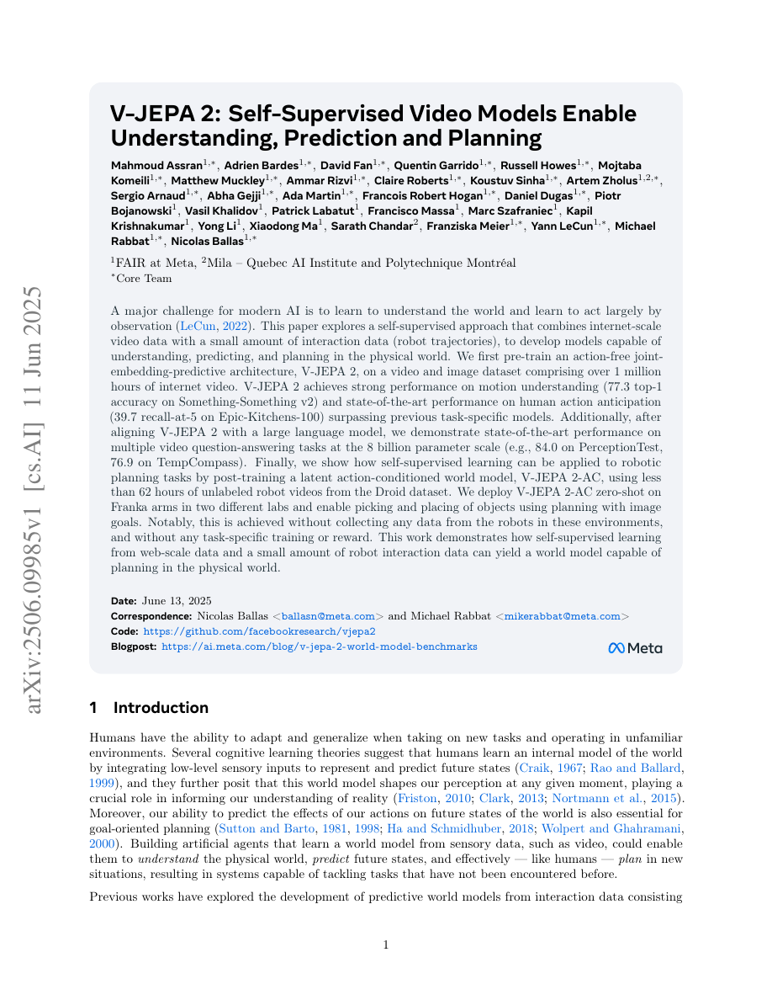
原论文 Fig.1–2 · PDF 第 1 页
图表说明：这是锁定版本原始 PDF 页级 PNG，保留原文标题、坐标、表头、脚注和视觉语境；具体对象和读图观察来自该论文的 figure-table ledger。
进一步分析：读者应把它与上方完整论文机制放在同一协议条件下理解；它支持论文中登记的现象，不自动支持跨数据集、跨模型或跨版本的因果结论。
证据边界：anchor ledger: masked video prediction and action-conditioned world model。资产类型为原始整页 PNG，未 OCR、重绘、裁色或作为当前任务 ImageGen 图计数；原始路径与哈希见 10_report/evidence-r19/original-paper-catalog.json。
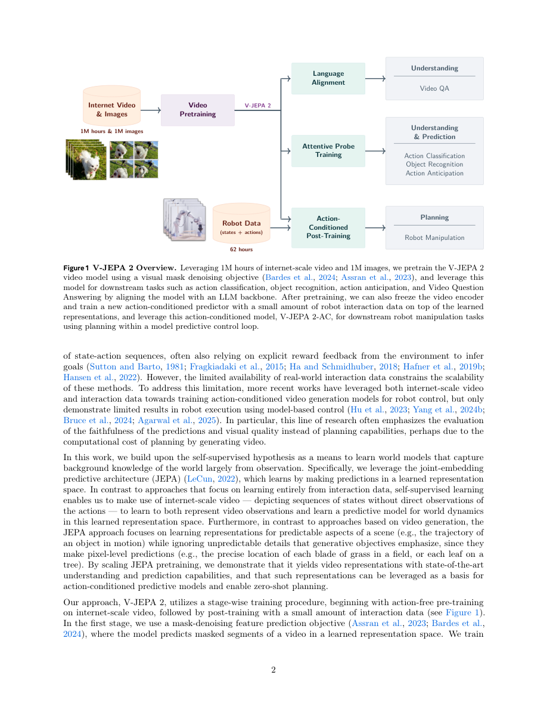
原论文 Tables 1–5 · PDF 第 2 页
图表说明：这是锁定版本原始 PDF 页级 PNG，保留原文标题、坐标、表头、脚注和视觉语境；具体对象和读图观察来自该论文的 figure-table ledger。
进一步分析：读者应把它与上方完整论文机制放在同一协议条件下理解；它支持论文中登记的现象，不自动支持跨数据集、跨模型或跨版本的因果结论。
证据边界：anchor ledger: scaling, understanding and robot planning。资产类型为原始整页 PNG，未 OCR、重绘、裁色或作为当前任务 ImageGen 图计数；原始路径与哈希见 10_report/evidence-r19/original-paper-catalog.json。
锚点源覆盖
| 单元 | TeX/PDF 范围 | 覆盖状态 |
|---|---|---|
| 摘要、引言、贡献 | main.tex:102–188; PDF pp.1–3 | 已逐段阅读 |
| Stage 1 方法与 scaling | main.tex:190–338; PDF pp.4–8 | 已逐段阅读，Table 1 与 Fig.2–3 纳入 |
| Stage 2 V-JEPA 2-AC | main.tex:339–430; PDF pp.8–10 | 已逐段阅读，Eq.2–5 纳入 |
| 机器人规划、基线、结果 | main.tex:431–607; PDF pp.10–15 | 已逐段阅读，Tables 2–3 与 Fig.7–10 纳入 |
| 限制与未来工作 | main.tex:608–626, 895–904; PDF pp.14,23 | 已逐段阅读 |
| frozen classification | main.tex:628–687; PDF pp.15–17 | 已逐段阅读，Table 4 纳入 |
| EK100 anticipation | main.tex:688–745; PDF pp.17–19 | 已逐段阅读，Table 5、附录 D 纳入 |
| VidQA | main.tex:746–867; PDF pp.19–23 | 已逐段阅读，Tables 6–8 纳入 |
| Related work / conclusion | main.tex:868–907; PDF pp.22–23 | 已逐段阅读 |
| A.1–A.4 pretraining appendix | main.tex:931–1162; PDF pp.33–36 | 已逐段阅读；超参数/数据/ablation 登记 |
| B robot appendix | main.tex:1163–1343; PDF pp.37–40 | 已逐段阅读；任务定义、rollout decoder、camera sensitivity 登记 |
| C classification appendix | main.tex:1345–1444; PDF pp.41–43 | 已逐段阅读；probe/multilayer/size ablation 登记 |
| D anticipation appendix | main.tex:1446–1552; PDF pp.44–45 | 已逐段阅读；horizon/failure distributions 登记 |
| E VQA appendix | main.tex:1554–1693; PDF pp.45–48 | 已逐段阅读；controlled/scaling hyperparameters 登记 |
自动抽取的 PDF 页文本和渲染图分别位于 00_sources/2506.09985/v1/pdf_text/ 与 pdf_rendered/。上述“已逐段阅读”表示完成本文 Pass 2 的语义阅读；源码映射、跨论文比较与视觉图逐图复核仍在后续阶段。
锚点原文图表账本
V-JEPA 2 anchor 图表账本
| ID | 覆盖 | 证据边界 |
|---|---|---|
| Fig.1–2 | masked video prediction、target/context 与 action-conditioned world model | 方法拓扑和 token 角色，不把图示当指标。 |
| Fig.3–5 | encoder/predictor、action conditioning、CEM/MPC | 训练/推理边界和 rollout horizon。 |
| Tables 1–5 | model/data scaling、video understanding、robot planning | 数字绑定版本、split、probe/head 和 budget。 |
| Appendix figures/tables | mask、RoPE、ablation、robot setup、CEM | 只接受源文页码和附录协议支持的细节。 |
视觉审计按输入、target、mask、action、predictor、planner、输出逐项核对；未运行代码，所有数字仍是论文报告值。
PaperForge：从问题到设计逻辑
V-JEPA 2 设计逻辑重建（PaperForge）
证据范围：完整 2506.09985v1 PDF、TeX、Appendix A–E、全部锚点证据台账与固定 commit source crosswalk。以下 12 环节按本工作流修改后的职责执行：不运行训练、不生成新选题、不把最小复现实验写成执行计划。
1. 背景与问题
论文明确声称：视频世界模型需要理解、预测与规划，但动作数据昂贵、像素生成计算重，限制了 scaling。作者把原始问题改写为“从大规模无动作视频学习表示，再用少量交互数据学习动作条件动态”，避免所有能力都受机器人数据规模限制。这个问题定义与纯视频生成不同：模型不需要输出逼真的 RGB，只需要提供对下游任务和 latent planning 有用的状态。
基于证据的推断：两个阶段的拆分把表示与控制的失败来源分开。若分类 probe 好而 robot planning 差，可以继续审计 action/state 对齐、camera ambiguity 或 planner constraint；若表示本身差，则 Stage 1 数据、mask 和 scaling 是上游瓶颈。这个分层不是完整因果识别，但让实验和代码有清楚责任边界。
2. 前人工作
相关文献已有结论：I-JEPA 使用图像上下文预测目标块表示；V-JEPA 将 latent mask prediction 扩展到视频；世界模型通常在交互数据或生成式预测上学习动态。锚点保留 JEPA 的 latent target 接口，把主要工程改进放在 VideoMix22M、模型规模、训练长度和分辨率，再以 V-JEPA 2-AC 连接控制。
论文明确声称：与原 V-JEPA 相比，数据从 2M 到 22M，encoder 从 300M 到 1B，training iterations 从 90K 到 252K，cooldown 增加时空分辨率。predictor 尺寸固定，因此 scaling 主要作用在 encoder 和数据/训练 recipe。
3. 核心 Idea
论文明确声称：可预测的表示因素可以从无标签视频中学习，且可被 action-conditioned predictor 用来规划。核心 idea 不是发明一个新 loss，而是把 JEPA 目标扩展到足够大的视频表示，再用少量 DROID 数据建模条件 transition。基于证据的推断：latent prediction 的价值在于把不可预测纹理从优化压力中减弱，但它不保证因果或控制充分性；这也是论文需要 action/state 和闭环 feedback 的原因。
4. 方法机制
Stage 1 使用 2×16×16 tubelet、3D-RoPE、multiblock mask 和 EMA target；只有 masked position 的表示 L1 参与损失，梯度回到 online encoder、predictor 和 mask token，target 通过 EMA 更新。Stage 2 冻结 encoder，用 7D state/action 与 frame feature 训练约 300M 的 action predictor，block-causal attention 阻止未来块泄漏，teacher forcing 和短 rollout 合并成训练信号。
规划阶段把目标图像编码成 latent，CEM 在动作序列空间寻找 latent energy 最小的轨迹，只执行首步并重观测。论文的动作约束写作 L1-ball，但 fixed commit 使用 coordinate clip；PaperForge 不把两者调和成相同机制。源码中默认 auto_steps=2 只有一次 recurrent loop，亦需与论文 Figure 6 的示意长度分开。
5. 理论直觉
基于证据的推断：像素目标要求模型处理所有细节，而 latent target 可以把多种合理未来投影到稳定语义。EMA 和 stop-gradient 给目标分支不同的时间尺度，避免当前 batch 的 loss 直接追着 target 漂移。多块 mask 增加上下文推断压力，但 mask geometry、数据分布和优化共同决定保留什么信息。
尚不确定的猜测：不能由本文推断 latent 是最小充分状态，也不能推断 encoder 对任意控制任务保留所有变量。论文没有 control-theoretic guarantee，短 rollout 也不证明长期稳定；“world model”在这里是功能性称呼。
6. 实验设计
四组 scaling 干预用统一 frozen attentive probe 比较表示；EK100 用 anticipation 协议检查未来表示；VidQA 在 controlled 与 scaling 两种对齐设置中比较视觉 encoder；robot planning 在两个未见实验室中用同一权重与 inference code 测试 image-goal 任务。各实验回答不同问题，不能把所有分数合成一个能力尺度。
基于证据的推断：四项 scaling 并非完全正交 factorial，系统级比较受预训练数据、位置编码、probe capacity 和对齐数据影响。robot trials 有有限样本和场景，速度比较还受采样数影响。报告将这些混杂因素列为边界。
7. 结果
论文明确声称：ViT-g384 frozen classification 平均 88.2，SSv2 77.3，EK100 Recall@5 39.7，VidQA scaling 平均 59.5。robot reach、grasp、reach-with-object、pick-and-place 在不同任务上有明显差异。基于证据的推断：高 probe 分数支持表示迁移，小幅 predictor 增益支持动态信息有用；较低 box grasp 则显示控制依赖物体、相机和任务条件。
8. 关键假设
可预测性与任务有用性足够相关；EMA target 提供稳定训练参照；短期 state 差分能够表达控制影响；image goal 的 latent distance 与目标状态相关；短 rollout 加 receding-horizon feedback 足以在测试场景中规划。每条假设均有工程证据，但都不能被提升为无条件理论结论。
9. 局限
相机坐标和 robot base 不一致导致 action ambiguity；partial observability 不能靠扩大模型恢复；长程递归误差会累积；image subgoals 依赖人给出的任务分解；frozen probe、LLM 和 alignment data 影响指标；有限实验室/trials 不能推出普遍 zero-shot robustness。源码当前 commit 与论文 release 的对应也未完全确定，必须保留 version boundary。
10. 最小复现实验的理解边界
本工作流不执行复现。若将来复现，至少需要同版本 VideoMix/DROID 清单、checkpoint、preprocessing、mask、optimizer schedule、probe 参数和 planner action constraints。当前分析只登记“什么证据能支持/反驳”：若更换 image goal 视角后 energy 仍低而执行失败，反驳 latent distance 普遍代表可达性；若增加 rollout horizon 后误差快速扩大，支持短 rollout 的局限；若坐标 clip 与 L1-ball 产生不同动作分布，说明实现差异有实际影响。
11. 可迁移启发
基于证据的推断：表示、动态和规划接口的拆分可用于理解其他 JEPA 分支；target 粒度、mask 几何、稳定化和下游消费者是统一比较槽位。应用论文应按这些机制比较，不按名称或年份简单排列。这个启发只用于已有方法理解，不自动生成新方案。
12. 非增量 Follow-Up 的证据边界
本环节按当前用户工作流限制关闭选题生成，只列已有后续论文如何修改锚点：dense、object、hierarchical、语言/多模态 latent、正则化稳定与可证明性。每项必须以全文证据登记保留/替换/删除了哪个机制；没有全文或源码时保留 candidate。本文不提出未经要求的新研究方向。
证据闭环
所有重要判断回到 03_anchor_reading/close-reading.md、claim-evidence-map.md、evidence-ledger.jsonl、07_joint/source_crosswalk/ 和完整 source bundle。PaperForge 是设计逻辑解释，不替代 source_ready、ABCD/EF 或图像视觉验收；当前尚未闭环项目继续保留在 run-manifest。
固定 commit：源码调用链与实现差异
锚点机制之后再进入配置、调用链、张量流和代码差异。
Paper-Code Crosswalk
V-JEPA 2 Paper-Code Crosswalk（source-only）
0. 证据边界
本交叉表只使用论文锁定版本 2506.09985v1、官方仓库 facebookresearch/vjepa2 的固定 commit 204698b45b3712590f06245fbfba32d3be539812，以及该 commit 的 fixed snapshot/AST inventory。没有运行训练、推理、机器人、CEM 或目标仓库代码；vjepa2.candidate、vjepa2.gitcase 和任何脏工作树均不作为证据。
代码行号均指 fixed snapshot 的相对路径；function-bodies.jsonl 与 inventory.jsonl 提供同一 commit 的函数边界、文件 SHA-256 和 AST 证据。snapshot 与 snapshot-final 的关键文件哈希已核对一致；本文件只写 source crosswalk，不修改 03_anchor_reading/、06_code/ 或其他 canonical 文件。
1. 论文机制到代码入口
| 论文主张/公式 | 论文定位 | 固定代码入口与行号 | 代码事实 | 关系与边界 | ||||
|---|---|---|---|---|---|---|---|---|
| Eq.1：`min | P(Δ,E(x))-sg(E_bar(y)) | _1` | main.tex:198-205 | app/vjepa/train.py:429-450；src/models/predictor.py:174-254；src/masks/utils.py:9-21 | forward_target 在 torch.no_grad() 中调用 target encoder；forward_context 对 context encoder 使用 masks_enc，再由 predictor 接收 masks_enc,masks_pred；loss_fn 对 target h 用 masks_pred，计算 abs(z-h)**loss_exp/loss_exp。predictor 生成并只返回 target token（除非 return_all_tokens）。 | 直接实现 Eq.1 的 masked representation loss。论文的 sg 在代码中体现为 target forward 的 no_grad；EMA 更新不是 loss 内部而是 train_step 后的显式参数更新。配置 loss_exp: 1.0 才等同 L1。 | ||
| Eq.1 target EMA / collapse 边界 | main.tex:202-204 | app/vjepa/train.py:471-480；configs/train/vitg16/pretrain-256px-16f.yaml:86-90 | target 参数被置为不需梯度（main 初始化段），每步用 param_k <- mparam_k+(1-m)param_q 更新；预训练 YAML 的 ema 为 [0.99925,0.99925]。 | 与论文的 stop-gradient+EMA 一致；这是训练动力学证据，不是形式化 non-collapse 证明。 | ||||
Architecture：encoder/predictor 是 ViT，tubelet 2x16x16 | main.tex:206-210 | src/models/vision_transformer.py:22-107,161-213；src/models/utils/patch_embed.py（inventory）；src/models/predictor.py:21-143 | VisionTransformer 在视频分支构造 PatchEmbed3D，patch/tubelet 由参数传入，num_patches=(num_frames//tubelet_size)(H//patch)(W//patch)；VisionTransformerPredictor 对 context 与 target token 使用相同 patch 网格。 | 结构对应论文。对 16 帧、256²、patch=16、tubelet=2，代码网格是 8x16x16=2048；论文的 64 帧例子 32x16x16=8192 不能直接当作所有 config 的默认值。 | ||||
| 3D-RoPE：时间/高/宽三轴 | main.tex:207-208 | src/models/utils/modules.py:26-55,266-387；src/models/vision_transformer.py:86-107 | RoPEAttention/ACRoPEAttention 将 head dim 切成 d_dim,h_dim,w_dim，separate_positions 从 token index 推导 frame/height/width；普通视频 patch 分别旋转三段。 | 轴分配实现可核对；论文没有披露具体整数截断规则，也没有披露当前源码的 repeat bug。 | ||||
| Eq.2 / teacher forcing：`1/T sum_k | P((a_t,s_t,E(x_t))_{t<=k})-E(x_{k+1}) | _1` | main.tex:364-374 | app/vjepa_droid/train.py:417-427,439-449 | _step_predictor 调 AC predictor；_z=z[:,:-tokens_per_frame]、actions、states[:,:-1]、extrinsics[:,:-1] 形成 teacher-forcing 输入；z_tf 与 target h 的对应片段进入 loss_fn。 | 计算形态与 Eq.2 对应。但代码不写死 T=15，TF 长度由输入 tensor/config 决定；锁定 YAML 是 droid-256px-8f.yaml（dataset_fpcs: [8]），不能仅凭代码声称复现论文 16 帧设置。 | ||
| Eq.3 / two-step rollout：` | P(a_{1:T};s_1,z_1)-z_{T+1} | _1` | main.tex:375-382 | app/vjepa_droid/train.py:429-437；app/vjepa_droid/train.py:130-134；configs/train/vitg16/droid-256px-8f.yaml:35-38 | auto_steps=min(config.auto_steps,max_num_frames)；YAML 默认 auto_steps: 2。先得到 z_tf，再把首帧真值 token 与首步预测拼接，循环 range(1,auto_steps)，因此默认只再走一次 recurrent predictor；z_ar 与 target h 用同一 loss_fn。 | 直接回答 Q-VJ2-004：默认确实是 T=2 / 一次 recurrent step。Figure 6 的 T=4 不是该 config 的值。代码支持改 auto_steps，所以“默认”不等于强制。 | ||
Eq.4：L=L_TF+L_rollout | main.tex:384-389 | app/vjepa_droid/train.py:443-449 | jloss=loss_fn(z_tf,h)，sloss=loss_fn(z_ar,h)，loss=jloss+sloss。 | 直接实现。源码另记录 jloss/sloss，论文只给总目标。 | ||||
| AC predictor：action/state/patch affine maps | main.tex:406-410 | src/models/ac_predictor.py:52-56,136-153,183-190 | predictor_embed、action_encoder、state_encoder（可选 extrinsics_encoder）分别映射到 predictor dim；x reshape 为 [B,T,H*W,D] 后按 [a,s,x]（或 [a,s,e,x]）拼接，经过 AC blocks 后去掉条件 token，再投影回 encoder dim。 | 直接实现“分开 affine transformation”。没有额外 learned token-type embedding；token 类型由不同线性层和固定拼接位置隐式区分。 | ||||
| Eq.4 叙述的 block-causal：当前块看当前 action/state/patch 与过去块 | main.tex:410-411 | src/models/utils/modules.py:12-23；src/models/ac_predictor.py:109-117,155-181 | build_action_block_causal_attention_mask 对每个 t1 开放 t2<=t1 的完整 N_TxN_T block；AC predictor 默认 add_tokens=2（action/state），将 mask 截到当前序列长度后传给每个 ACBlock。 | 直接回答 Q-VJ2-005：同一时间块内所有条件/patch token 互见，过去块可见，未来块不可见。代码的 mask 是 bool attention mask，真正语义由 PyTorch SDPA 的 attn_mask 解释；没有运行验证。 | ||||
| Eq.5 energy：` | P(a_{1:T};s_k,z_k)-z_g | _1`，CEM，执行首动作 | main.tex:415-429 | notebooks/utils/world_model_wrapper.py:54-75；notebooks/utils/mpc_utils.py:17-163 | infer_next_action 定义 step_predictor，取 predictor 最后 tokens_per_frame 的预测并更新 pose，然后调用 cem；cem 采样、rollout world model、top-k、更新均值/标准差，最终返回 mean trajectory。 | 规划数据流对应 Eq.5 与 receding-horizon 接口。当前 snapshot 只提供 infer_next_action 返回 action；未找到正式 actuator/重新观测循环的训练入口，因此“执行第一步后再观测”是 notebook 使用边界而非完整 repo pipeline 证据。 |
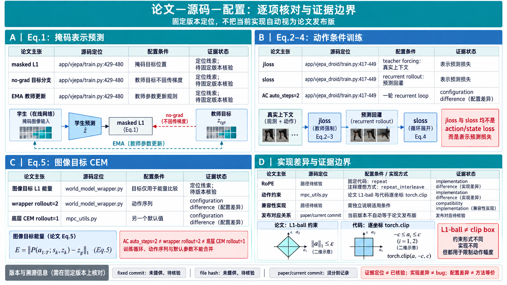
F10 | r17
图 F10 全部细节说明
F10-r2 论文公式与固定代码的逐式核对
读图总览
这张图以论文主张、源码入口、配置前提和证据状态四列组织公式核对。左侧的公式编号只负责标识论文讨论的计算，不足以证明仓库当前默认行为。真正的核对必须继续进入对应函数及其调用配置，并把表示预测、动作条件训练、规划和实现兼容性分别解释。图中的差异属于需要显式保留的证据边界，不由一句“代码存在”覆盖。
十八个元素逐项说明
F10-E01：Eq.1 表示预测目标。 A 区从 masked representation L1 开始，比较的是预测器对遮挡位置的表示与目标编码器表示。公式中的目标不代表 RGB 图像重建，也不意味着监督数据提供逐像素标签。理解这一项时应同时看输入遮挡位置和目标分支角色。
F10-E02：预训练源码入口。 app/vjepa/train.py:429-480 是固定 commit 的训练逻辑定位，供读者继续核对 target、loss 和参数更新。行号绑定这一份快照，不保证后续仓库版本仍有相同行序。模块名字相同只能作为检索入口，不能代替文件哈希和固定提交身份。
F10-E03：masked L1 配置。 图中把启用表示预训练和实际损失设置列为配置条件。不同配置可能改变归约、mask 数量或训练路径，因此不能只依据论文公式推定当前一次训练使用了同一协议。复现者应把启动配置与 trainer 读取字段一起保存。
F10-E04：no-grad target 与 EMA。 目标分支不接收 loss 反向更新，其参数可以在预训练阶段由在线分支的 EMA 更新。停止梯度和 EMA 更新属于不同机制；前者是计算图边界，后者是参数数值更新规则。看到两个术语同时存在不能把它们合成一条反向梯度箭头。
F10-E05：A 区证据状态。 对应实现存在意味着固定代码支持核对，不意味着论文运行的全部数据、超参、checkpoint 和硬件状态都可恢复。该区的结论限制于已经检查的函数与条件；“当前 commit 可验证”应与“论文 release 完全相同”保持距离。
F10-E06：Eq.2–4 的动作条件阶段。 B 区把已学视觉表示用于给定动作的未来表示预测。动作是模型条件输入，而非 jloss 或 sloss 所要分类的标签。此阶段与 Stage 1 的遮挡预训练有不同输入和冻结策略，不能把两种训练路径的参数更新合并。
F10-E07：动作训练源码入口。 app/vjepa_droid/train.py:417-449 对应联合与递归表示预测损失的实现。读者需要沿其上游检查 frozen encoder/target 及调用 predictor 的方式，并沿下游确认 loss 权重与优化器包含的参数，而不能只摘取加法表达式。
F10-E08：teacher forcing 的 jloss。 teacher forcing 使用真实历史表示作为预测条件，jloss 度量预测表示与目标表示之间的差异。动作输入会影响预测，但这项损失不是“动作误差”。图中保留 teacher forcing 标签，为对比 recurrent rollout 的条件来源建立明确依据。
F10-E09：recurrent rollout 的 sloss。 滚动步骤把前一步预测 latent 回送后续预测，sloss 评价该预测链的表示误差。它不是状态分类损失，也不自动提供无限时距稳定性。计算图是否跨步骤传播、循环次数与默认值，应分别对应实际代码，而不是由 recurrent 一词推断。
F10-E10：联合损失与配置前提。 jloss+sloss 的存在需要当前配置启用相应训练和 rollout 路径。两种项可能具有不同尺度、归约和循环组织，图只表达并存的机制，不宣称默认权重在所有配置相同。运行收据应保留触发每项的字段及最终实例化值。
F10-E11：Eq.5 的规划目标。 C 区使用世界模型评价动作序列到目标表示的潜在距离，模型在规划中提供预测能力。CEM 搜索动作序列的分布，而不是修改网络参数。目标能量与训练损失都可能使用 L1，但它们发生在不同生命周期并消费不同对象。
F10-E12：wrapper 与底层 CEM。 world_model_wrapper.py 负责组合表示预测与规划调用，mpc_utils.py 提供候选采样和优化逻辑。两个文件的调用关系要与上层启动参数一起核对。只有函数名存在不足以说明 wrapper 默认参数、底层默认参数和论文设置一致。
F10-E13：规划证据与动作约束。 当前路径可以验证 CEM 和图像目标流程，同时动作可行集合与论文表述存在几何差异。图中用单独状态标记这种不等同，避免先写“实现一致”再把重要限制埋在图注里。差异不自动判定为代码 bug，但必须影响复现结论的措辞。
F10-E14：RoPE repeat。 固定实现采用 repeat 以兼容预训练权重的排列方式。该事实来自源码和注释，不由图中两种算子名字推出数学等价。现有权重与旋转位置编码的维度排列相关，替换算子可能影响兼容性，所以不能未经实验把它简单改成理想写法。
F10-E15：repeat_interleave 的注释边界。 注释指明理想方式为 repeat_interleave，图中必须保留精确标识符及下划线。旧图的拼写和表达错误已经作为 rejected evidence 保存。本图将这项归类为兼容性实现，而不是论证某种新的 RoPE 公式或作者公开的性能因果关系。
F10-E16：L1-ball 与逐坐标 clip。 菱形约束限制分量绝对值总和，盒状约束限制每个坐标范围，两者不可互换。代码中的变量名含 norm 也不改变 torch.clip 的实际运算。这一项属于实现差异，应在正文、图和复现配置中同步保留，不能仅通过图形颜色暗示区别。
F10-E17：三个不同层级的步数。 AC 的 auto_steps=2 对应首轮后的一个 recurrent loop；wrapper 的 rollout=2 描述动作序列组合；底层 CEM 的 rollout=1 是底层参数默认值。相同词根不保证它们计量同一对象，不能拿其中一个覆盖另外两个实际传入值。
F10-E18：固定提交审计。 底部的 fixed commit、file hashes、paper/current commit 提醒读者区分发布论文和当前仓库快照。可复现性证据来自可查询文件、哈希、调用链和配置条件共同成立。将函数名称、网络返回成功或生成脚本退出码当作最终一致性证明，会掩盖未验证的训练与规划边界。
验收与使用
逐式核对关注公式对应的操作、参数生命周期及配置触发条件。正式图应准确呈现三类差异的归属，所有路径和标识符不得乱码、裁切或改写。读者可用本图定位下一步源码阅读，但具体数值结论仍绑定正文证据账本与固定 snapshot。该图不声明新训练已执行，也不把兼容性注释提升为论文实验证明。
2. 关键实现事实与论文差异
2.1 Mask geometry 与 Eq.1 的 token 对齐
预训练 YAML configs/train/vitg16/pretrain-256px-16f.yaml:41-67 配置两组 mask：8 个 block、空间 scale [0.15,0.15]，以及 2 个 block、空间 scale [0.7,0.7]；两组 temporal scale 均为 [1.0,1.0]，aspect ratio [0.75,1.5]。_MaskGenerator 在 src/masks/multiseq_multiblock3d.py:95-171 将 16 帧、tubelet 2 转为 duration=8，256²/16 转为 16x16 网格；_sample_block_size 通过 scale 和 aspect ratio 取整得到 (t,h,w)。__call__ 在 :190-269 重复采样 block、将零区域作为 predictor mask、非零区域作为 encoder mask，并按 batch 内最小保留数截断。
这与论文“multiblock masking”相符，但不能把论文叙述解释成固定 mask ratio：代码有随机 block 位置、取整、多个 block 的乘积、空 context 重采样、batch 内 min_keep 截断；配置 full_complement:false 也意味着 predictor mask 是实际 block 区域而不是强制补集。apply_masks（src/masks/utils.py:9-21）通过 gather 保留 index，故 Eq.1 的 target loss 只对 masks_pred 对应 token 计算。
2.2 3D-RoPE 的轴、shape 与已知 bug
普通 encoder/predictor 使用 RoPEAttention；AC predictor 使用 ACRoPEAttention。两者都从 head_dim 计算三段偶数维（modules.py:138-141、:290-293），用 separate_positions 得到 frame/height/width（普通版本 :296-329），再在 :348-370 分别旋转 depth、height、width。AC 版本将空间位置按输入 H/W 缩放到 grid_size（:179-181）。
AC 条件 token 只有时间旋转：ACRoPEAttention.forward 的 action_tokens>0 分支（modules.py:183-205）把每个 action/state token 单独 reshape，用 pos=torch.arange(T) 旋转 d_dim，不施加 height/width；patch token 则走三轴分段（:208-234）。这正对应论文“patch 使用 3D-RoPE，action/pose 只使用 temporal rotary embedding”。
固定源码显式写出一个兼容性 bug（modules.py:39-46）：当前实现使用 emb_sin.squeeze(-1).repeat(1,1,1,2) / emb_cos...repeat(...)，注释中的修复方案是 repeat_interleave(2, dim=-1)。因此每个频率被沿向量 pair 重复，而不是按相邻 pair 交错展开；注释还说明修复会破坏预训练模型兼容性。论文只宣称 3D-RoPE，没有报告此差异。
2.3 AC block-causal 的实际 token 拓扑
VisionTransformerPredictorAC.forward（src/models/ac_predictor.py:136-190）先将每个时间步的 feature map reshape 为 HxW patch，再拼为 [action,state,patches]；无 extrinsics 时每块为 2+HW，有 extrinsics 时为 3+HW。build_action_block_causal_attention_mask(T,H,W,add_tokens) 以完整块为单位开放当前及历史块。由于 mask_block=torch.ones(N_T,N_T)，同一时间内 action、state、patch 之间没有更细的先后约束；这是“block-causal”，不是 token-level causal。
ACBlock.forward（modules.py:493-502）将该 bool mask 原样传给 ACRoPE/SDPA。代码没有显式的 token-type embedding；action/state 的可区分性来自独立 nn.Linear 和拼接位置。ACRoPEAttention 注明 action tokens 不支持 masking（:190），而 AC predictor 路径传 mask=None，因此这是一个源代码前提。
2.4 CEM：论文 L1-ball 与实现 box clip 不相同
论文 main.tex:493-497 把 single-goal planning 描述为半径 0.075 的 L1-ball。仓库 notebooks/utils/mpc_utils.py 的 cem 却在 :93-105 对 xyz 逐坐标执行 torch.clip(...,-maxnorm,maxnorm)，默认 maxnorm=0.05，对 gripper 另行 clip 到 [-0.75,0.75]，然后插入三个恒为零的旋转 action 分量。这里没有对 7D action 做耦合的 L1 投影；可行域是逐坐标 box 加固定旋转零值。因而该实现不能直接证明论文的 L1-ball 约束，且半径默认也不同。
目标函数 l1（:17-18）是最后一维的 mean absolute error，而非未归一化的 sum-L1。对固定维度的 top-k 排序，mean 与 sum 的 argmin 相同，但能量数值和论文公式的尺度不同。cem 的默认参数为 rollout=1,cem_steps=100,samples=100,topk=10（:28-45）；WorldModel.__init__ 的实际 notebook 默认覆盖为 rollout=2,samples=400,topk=10,cem_steps=10,maxnorm=0.05（world_model_wrapper.py:20-29）。因此“AC rollout 默认”需拆开写：训练 auto_steps 默认 2，规划 wrapper rollout 默认 2，底层 cem 函数默认 1。
2.5 DROID 数据、feature map 与冻结边界
论文给出的 AC 训练设置是 4 秒、4 fps、16 帧、7D state/action（main.tex:353-361）。代码 DROID loader 在 app/vjepa_droid/droid.py:25-52,90-118,178-229 由 config 传入 frames_per_clip、fps 和 tubelet_size；锁定 configs/train/vitg16/droid-256px-8f.yaml:16-23 是 dataset_fpcs:[8]、fps:4、tubelet_size:2。因此仓库随附的这份 AC YAML 不是论文文字中 16-frame setting 的直接同名配置；确切时间长度需由数据采样路径和 checkpoint 配套说明补足。
poses_to_diffs（droid.py:137-147）对 xyz、Euler rotation 和 gripper 取相邻差分，得到 7D action；loadvideo_decord（:203-229）实际按 frameskip=tubelet_size 对 state/extrinsics 再采样。AC trainer 的 forward_target（app/vjepa_droid/train.py:408-415）使用 target encoder 生成 feature，load_pretrained 载入 checkpoint target encoder；target forward 有 no_grad。虽然 trainer 初始化了 encoder 并将其放入 optimizer（:256-278），预测路径只消费 h=forward_target(clips)，没有把可训练 encoder 的输出送入 predictor。因此在该 source path 中 encoder 实际没有梯度使用，冻结边界由数据流成立，但代码没有显式 encoder.requires_grad=False。
3. Question-ledger 闭环
| Question ID | 结论 | 代码证据 | 状态 |
|---|---|---|---|
| Q-VJ2-001 | geometry 可回答，论文精确 ratio 不能完全回答。固定预训练 config 是两组 block scale，代码随机取整并按 batch 截断。 | configs/train/vitg16/pretrain-256px-16f.yaml:41-67; src/masks/multiseq_multiblock3d.py:95-269 | partly_answered |
| Q-VJ2-002 | 三轴分配和 action/state temporal-only 可回答；具体维度按 head dim 截断，且存在 repeat bug。 | src/models/utils/modules.py:26-55,138-166,183-234,296-370; src/models/ac_predictor.py:145-153 | answered_with_difference |
| Q-VJ2-003 | pretraining target 使用 no_grad、每步 EMA；AC 阶段加载 target encoder 且 no_grad，不做新 EMA。 | app/vjepa/train.py:429-433,471-480; app/vjepa_droid/train.py:408-415,274-278 | answered |
| Q-VJ2-004 | 默认 auto_steps=2，自回归循环一次；可由 config 改写。 | app/vjepa_droid/train.py:130-134,429-437; configs/train/vitg16/droid-256px-8f.yaml:35-38 | answered |
| Q-VJ2-005 | block 内全互见，当前/历史块可见，未来块被屏蔽；无 token-level action-before-patch 约束。 | src/models/utils/modules.py:12-23; src/models/ac_predictor.py:109-117,155-181 | answered |
| Q-VJ2-006 | samples/top-k/steps 可回答；L1-ball 与论文不一致，且 replanning actuator loop不在该 source path。 | notebooks/utils/mpc_utils.py:28-163; notebooks/utils/world_model_wrapper.py:20-75; main.tex:493-497,589-605 | answered_with_difference |
| Q-VJ2-007 | 本 source-only 子任务不扩展 appendix ablation crosswalk；未把不存在的 eval claim 写成代码事实。 | question ledger 要求的 PDF pp.41-45 不在本目录输出范围 | unresolved_here |
| Q-VJ2-008 | 跨论文 JEPA 分支不属于本 crosswalk。 | 仅保留 V-JEPA 2 fixed commit 证据 | out_of_scope |
| Q-VJ2-009 | 应用论文索引不属于本 crosswalk。 | 仅保留 V-JEPA 2 fixed commit 证据 | out_of_scope |
| Q-VJ2-010 | H-JEPA 对照不属于本 crosswalk。 | 仅保留 V-JEPA 2 fixed commit 证据 | out_of_scope |
4. 最小可复核结论
- Eq.1 在 pretraining source path 中是真实的 masked-token representation L1：target
no_grad、EMA、predictor masked output 和 target mask gather 都有固定行号。 - Eq.2-4 在 AC trainer 中以 teacher forcing、默认
auto_steps=2的一次 recurrent rollout、以及两项 loss 相加落地；但 TF 长度由输入/配置决定，随附 YAML 不是论文文字的 16-frame 直接复现合同。 - Eq.5 的 world-model/CEM 调用链存在，然而论文写的 L1-ball 半径约束在实现中被逐坐标 box clip、默认
maxnorm=0.05和固定零旋转替代；这是最重要的 paper-code discrepancy。 - 3D-RoPE 的 temporal/height/width 分段和 AC 条件 token 的 temporal-only 处理可从源码逐行核对；源码显式保留 repeat bug 以兼容预训练权重，论文未报告。
固定 commit 调用链
V-JEPA 2 调用链（fixed source-only）
1. Stage 1：预训练 Eq.1
app/main.py:process_main
-> app/vjepa/train.py:main (54-536)
-> app/vjepa/utils.py:init_video_model (141-207)
-> src/models/vision_transformer.py:VisionTransformer
-> src/models/predictor.py:VisionTransformerPredictor
-> src/masks/multiseq_multiblock3d.py:MaskCollator.__call__
-> _MaskGenerator.__call__ (190-269)
-> _sample_block_size (145-171)
-> _sample_block_mask (173-188)
-> main.train_step (424-486)
-> forward_target (429-433): target_encoder(c), torch.no_grad
-> forward_context (435-438): encoder(c,masks_enc); predictor(z,masks_enc,masks_pred)
-> loss_fn (440-450): apply_masks(h,masks_pred); mean(abs(z-h)**loss_exp)/loss_exp
-> optimizer.step
-> EMA target update (471-480)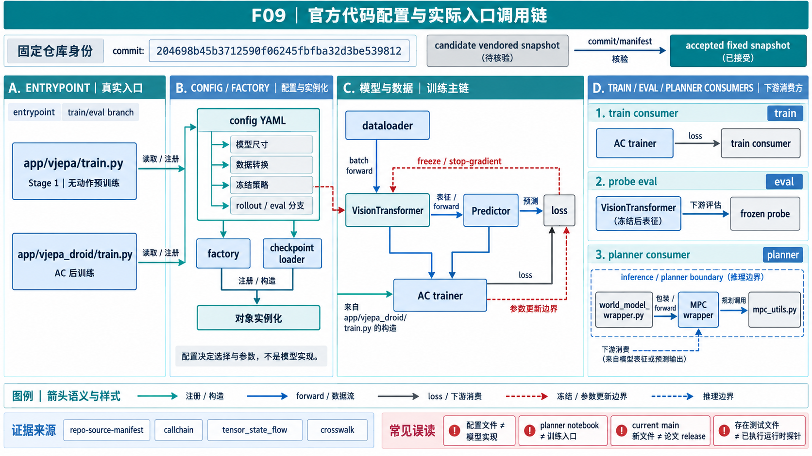
F09 | r2
图 F09 全部细节说明
F09-r1 官方代码配置与实际入口调用链
读图总览
本图把真实代码入口按调用链排开。A 区从 app/vjepa/train.py 与 app/vjepa_droid/train.py 两个入口开始，分别标注无动作预训练和 AC 后训练。B 区画 config YAML、factory、checkpoint loader 和对象实例化，箭头必须说明配置怎样决定模型尺寸、数据转换、冻结和 rollout。C 区连接 dataloader、VisionTransformer、Predictor、AC trainer；D 区连接 frozen probe、MPC wrapper 和 mpc_utils，区分 train/eval/planner 消费方。每个代码节点写真实路径或函数名，不能虚构不存在的类。图中要标出固定 commit 身份，并把 candidate vendored snapshot 与 accepted fixed snapshot 分开。箭头需要区分注册/构造、forward、loss 和下游消费，不要只画 README 式模块框。来源为 repo-source-manifest、callchain、tensor_state_flow 和 crosswalk。常见误读是把配置文件当作模型实现、把 planner notebook 当作训练入口、把 current main 的新文件当作论文 release 对应、把有测试文件理解为已经执行过运行时探针。
分区与节点
本图把真实代码入口按调用链排开。A 区从 app/vjepa/train.py 与 app/vjepa_droid/train.py 两个入口开始，分别标注无动作预训练和 AC 后训练。B 区画 config YAML、factory、checkpoint loader 和对象实例化，箭头必须说明配置怎样决定模型尺寸、数据转换、冻结和 rollout。C 区连接 dataloader、VisionTransformer、Predictor、AC trainer；D 区连接 frozen probe、MPC wrapper 和 mpc_utils，区分 train/eval/planner 消费方。每个代码节点写真实路径或函数名，不能虚构不存在的类。图中要标出固定 commit 身份，并把 candidate vendored snapshot 与 accepted fixed snapshot 分开。箭头需要区分注册/构造、forward、loss 和下游消费，不要只画 README 式模块框。来源为 repo-source-manifest、callchain、tensor_state_flow 和 crosswalk。常见误读是把配置文件当作模型实现、把 planner notebook 当作训练入口、把 current main 的新文件当作论文 release 对应、把有测试文件理解为已经执行过运行时探针。
箭头、张量与状态
本图把真实代码入口按调用链排开。A 区从 app/vjepa/train.py 与 app/vjepa_droid/train.py 两个入口开始，分别标注无动作预训练和 AC 后训练。B 区画 config YAML、factory、checkpoint loader 和对象实例化，箭头必须说明配置怎样决定模型尺寸、数据转换、冻结和 rollout。C 区连接 dataloader、VisionTransformer、Predictor、AC trainer；D 区连接 frozen probe、MPC wrapper 和 mpc_utils，区分 train/eval/planner 消费方。每个代码节点写真实路径或函数名，不能虚构不存在的类。图中要标出固定 commit 身份，并把 candidate vendored snapshot 与 accepted fixed snapshot 分开。箭头需要区分注册/构造、forward、loss 和下游消费，不要只画 README 式模块框。来源为 repo-source-manifest、callchain、tensor_state_flow 和 crosswalk。常见误读是把配置文件当作模型实现、把 planner notebook 当作训练入口、把 current main 的新文件当作论文 release 对应、把有测试文件理解为已经执行过运行时探针。 图中的每条实线表示数据或计算，虚线只表示参数更新、证据边界或明确的推理限制。节点之间的先后关系必须按照箭头阅读；同一颜色不表示同一张量，具体轴、单位和生命周期以正文与固定源码为准。
公式、代码与证据
本图把真实代码入口按调用链排开。A 区从 app/vjepa/train.py 与 app/vjepa_droid/train.py 两个入口开始，分别标注无动作预训练和 AC 后训练。B 区画 config YAML、factory、checkpoint loader 和对象实例化，箭头必须说明配置怎样决定模型尺寸、数据转换、冻结和 rollout。C 区连接 dataloader、VisionTransformer、Predictor、AC trainer；D 区连接 frozen probe、MPC wrapper 和 mpc_utils，区分 train/eval/planner 消费方。每个代码节点写真实路径或函数名，不能虚构不存在的类。图中要标出固定 commit 身份，并把 candidate vendored snapshot 与 accepted fixed snapshot 分开。箭头需要区分注册/构造、forward、loss 和下游消费，不要只画 README 式模块框。来源为 repo-source-manifest、callchain、tensor_state_flow 和 crosswalk。常见误读是把配置文件当作模型实现、把 planner notebook 当作训练入口、把 current main 的新文件当作论文 release 对应、把有测试文件理解为已经执行过运行时探针。 公式、源码路径和实验数字分别标注 Paper Fact、Code Fact 或教学计算。任何未取得的来源保持 pending，不能用图上的短标签填补。
易错点与边界
本图把真实代码入口按调用链排开。A 区从 app/vjepa/train.py 与 app/vjepa_droid/train.py 两个入口开始，分别标注无动作预训练和 AC 后训练。B 区画 config YAML、factory、checkpoint loader 和对象实例化，箭头必须说明配置怎样决定模型尺寸、数据转换、冻结和 rollout。C 区连接 dataloader、VisionTransformer、Predictor、AC trainer；D 区连接 frozen probe、MPC wrapper 和 mpc_utils，区分 train/eval/planner 消费方。每个代码节点写真实路径或函数名，不能虚构不存在的类。图中要标出固定 commit 身份，并把 candidate vendored snapshot 与 accepted fixed snapshot 分开。箭头需要区分注册/构造、forward、loss 和下游消费，不要只画 README 式模块框。来源为 repo-source-manifest、callchain、tensor_state_flow 和 crosswalk。常见误读是把配置文件当作模型实现、把 planner notebook 当作训练入口、把 current main 的新文件当作论文 release 对应、把有测试文件理解为已经执行过运行时探针。 最容易出现的错误是把相似模块、相似标题或相似数字合并成一个事实；本图只承载事实合同中的元素，完整解释回到 canonical-analysis 和 evidence-ledger。
收口与证据边界补充
F09 的区域划分不表示所有函数都在同一模块或同一阶段执行。训练文件负责数据组装、目标编码器、视觉编码器、优化器和损失计算；推理文件负责 frozen encoder、状态更新和动作序列评估；规划文件负责世界模型调用与 CEM/MPC 消费。固定版本的实例化链连接 checkpoint 与模型规格，配置文件中的名称、文件路径与启动方式不应当被视为论文报告的性能结果。图中每条箭头分别标注构造、forward、loss、下游消费或 planner 评估，读者可以按路径回到 callchain、tensor state flow 和 implementation omissions。 如果某个实现节点无法在 fixed commit 中直接找到，图中应标记为 pending 或限定证据范围，不能由命名相似、README 文字或 current main 的新增文件补全。F09 只是证据账本的导航，它不把当前主分支的添加自动等同论文 release，也不把测试文件等同于已经执行训练或规划。
证据解释
VisionTransformer.forward（src/models/vision_transformer.py:161-213）对 video 输入计算T=T//tubelet_size、H_patches、W_patches，经PatchEmbed3D后用apply_masks删除不需要的 token；use_rope=True时不加 absolute position embedding，而把位置交给 block 内 RoPE。VisionTransformerPredictor.forward（src/models/predictor.py:174-254）接收 context/target masks，用mask_tokens构造 target token，排序 context+target 的原始 token index，并在 block 后逆排序，只返回 target token。main.train_step.loss_fn的 target gather 和 predictor 的 target-only output 构成 Eq.1 的 masked-only comparison；forward_target的no_grad与随后参数 EMA 分开实现。
2. Stage 2：V-JEPA 2-AC training Eq.2-4
app/main.py:process_main
-> app/vjepa_droid/train.py:main (54-524)
-> app/vjepa_droid/utils.py:load_pretrained (22-66)
-> target_encoder checkpoint
-> app/vjepa_droid/droid.py:init_data (25-71)
-> DROIDVideoDataset.__getitem__ (120-135)
-> loadvideo_decord (178-229)
-> poses_to_diffs (137-147)
-> main.train_step (403-470)
-> forward_target (408-415): frozen/no-grad target representation h
-> forward_predictions (417-437)
-> _step_predictor (419-423)
-> src/models/ac_predictor.py:VisionTransformerPredictorAC.forward (136-190)
-> predictor_embed/action_encoder/state_encoder
-> build_action_block_causal_attention_mask (modules.py:12-23)
-> ACBlock.forward (modules.py:493-502)
-> ACRoPEAttention.forward (modules.py:168-263)
-> loss_fn (439-441)
-> jloss + sloss (447-449)
-> optimizer.stepteacher forcing / rollout 分支
forward_predictions 先用 z[:, :-tokens_per_frame]、完整 actions、states[:, :-1] 调一次 predictor，形成 z_tf。随后以首帧真实 representation 和首步 z_tf 构成 _z，按 range(1, auto_steps) 继续自回归；当 config auto_steps=2 时循环一次，所得 z_ar 与 target h 的对应片段比较。configs/train/vitg16/droid-256px-8f.yaml:35-38 是该默认值的直接证据。
3. AC predictor 内部调用
VisionTransformerPredictorAC.forward (ac_predictor.py:136-190)
-> predictor_embed(x) [patch feature -> D_pred]
-> action_encoder(actions), state_encoder(states)
-> reshape x [B,T,H*W,D]
-> concat [action,state,patch] per timestep
-> attn_mask = build_action_block_causal_attention_mask(..., add_tokens=2)
-> for predictor_blocks:
ACBlock.forward
-> LayerNorm
-> ACRoPEAttention.forward
-> temporal-only rotate for action/state tokens
-> depth/height/width rotate for patch tokens
-> scaled_dot_product_attention(attn_mask=block mask)
-> residual MLP
-> remove condition tokens
-> predictor_norm -> predictor_proj -> next representation tokensbuild_action_block_causal_attention_mask 的 mask_block=torch.ones(N_T,N_T) 是关键：当前块所有 token 互相可见；外层循环仅允许历史块和当前块。代码没有额外 token-type embedding。
4. Planning Eq.5 / CEM
notebooks/utils/world_model_wrapper.py:WorldModel.encode (42-52)
-> encoder(image clip)
-> optional layer_norm
WorldModel.infer_next_action (54-75)
-> step_predictor(reps, actions, poses)
-> predictor(reps.flatten(1,2), actions, poses)
-> keep last tokens_per_frame
-> compute_new_pose
-> mpc_utils.cem(..., **self.mpc_args)
-> sample_action_traj (86-118)
-> Gaussian action samples
-> per-coordinate clip (93-105)
-> world_model(frame_traj,action_traj,pose_traj)
-> select_topk_action_traj (120-125)
-> objective=l1 (17-18)
-> topk(largest=False)
-> repeat cem_steps (127-151)
-> update mean/std with momentum
-> return mean action trajectory (154-163)WorldModel.__init__ 的 notebook 默认 mpc_args 为 rollout 2、samples 400、topk 10、cem_steps 10（world_model_wrapper.py:20-29）；底层 cem 函数签名默认是 rollout 1、samples 100、cem_steps 100（mpc_utils.py:28-45）。两层默认不可混写。
5. 论文到调用链的未闭环处
- 论文描述“执行首动作、重新观测、重新规划”，当前 source path 证据到
WorldModel.infer_next_action返回 tensor 为止；未把真实机器人 actuator、observation loop 或 task evaluator 作为本 repo 调用链写入。 - 论文的 16 帧 AC setting 与随附
droid-256px-8f.yaml的dataset_fpcs: [8]存在版本/config 边界；本交付只报告事实，不用近似命令声称复现。 - 未运行目标代码，故没有 shape runtime probe；shape 结论来自固定源码的 reshape、config 和 AST/function bodies。
固定 commit Tensor/State Flow
Tensor / State Flow（fixed source-only）
1. Stage 1 video JEPA
| 阶段 | 源码事实 | shape/状态约束 | 证据 |
|---|---|---|---|
| 视频输入 | VisionTransformer.forward 接受 5D video；读取 T,H,W，再令 T=T//tubelet_size，H_patches=H//patch_size，W_patches=W//patch_size | 输入 [B,C,T_px,H_px,W_px]；token 网格 [T_px/tubelet, H_px/patch, W_px/patch] | src/models/vision_transformer.py:161-179 |
| patchify | PatchEmbed3D 将 tubelet/patch 映射到 embed dim；num_patches=(num_frames//tubelet)(H//patch)(W//patch) | 16f/256²/2/16 => 8x16x16=2048；64f => 32x16x16=8192 | vision_transformer.py:69-76；src/models/utils/patch_embed.py inventory |
| mask select | apply_masks 对每个 [B,K] mask 扩到 D 后 torch.gather(dim=1) | masks_enc 保留 context token；masks_pred 保留 target token | src/masks/utils.py:9-21 |
| context/predictor | predictor 将 context映射到 D_pred，构造 mask token，拼接并按原 token index 排序 | output 默认仅 target token；return_all_tokens=False | src/models/predictor.py:189-254 |
| target | target encoder 对完整 clip 推理后 layer norm | target forward 不进入 autograd | app/vjepa/train.py:429-433 |
| loss | 对 target h 用 predictor mask gather，与 z 逐样本逐 mask 比较 | loss_exp=1.0 时 mean absolute error | app/vjepa/train.py:440-450；configs/train/vitg16/pretrain-256px-16f.yaml:39-40 |
| EMA | 训练 step 后逐参数更新 target | param_k=mparam_k+(1-m)param_q | app/vjepa/train.py:471-480 |
2. Mask state flow
config mask item
spatial_scale, temporal_scale, aspect_ratio, num_blocks
-> _MaskGenerator.__init__
duration = num_frames // temporal_patch_size
height,width = crop_size // spatial_patch_size
-> _sample_block_size: (t,h,w)
-> _sample_block_mask: [duration,height,width] with block=0
-> __call__: mask_e=ones * sampled blocks
mask_p = indices(mask_e == 0)
mask_e = indices(mask_e != 0)
-> batch min_keep truncation
-> encoder/predictor mask tensors固定预训练配置的两种 block 设置：npred=8, spatial_scale=.15 与 npred=2, spatial_scale=.7；temporal_scale=1.0、temporal_patch_size=2。因此 duration=8 的 16-frame config 中，每一块默认覆盖全时间 token 深度，但空间范围随机取整。max_context_duration 只限制 context mask 的首段时间范围；full_complement=false 时不强制把预测 mask重建成完整补集。
3. AC representation / condition flow
| 输入/中间状态 | 变换 | 证据 |
|---|---|---|
| DROID clip | forward_target 先 permute(0,2,1,3,4).flatten(0,1).unsqueeze(2).repeat(1,1,2,1,1)，送入 target encoder，再 view 成 [batch_size,max_num_frames,-1,D] 并 flatten 时间/空间 | app/vjepa_droid/train.py:408-415 |
| state/action/extrinsics | DROID states 是 [B,T,7]，actions 是 [B,T-1,7]；poses_to_diffs 对 xyz、rotation、gripper 求邻帧差 | app/vjepa_droid/train.py:389-394; app/vjepa_droid/droid.py:137-147 |
| patch tokens | x 从 [B,N_ctxt,D] 变为 [B,T,H*W,D] | src/models/ac_predictor.py:140-149 |
| condition tokens | action/state 各经独立 Linear 到 predictor dim，按时间拼入 [a,s,x]；可选 extrinsics 时为 [a,s,e,x] | ac_predictor.py:52-56,145-153 |
| attention mask | 每时间块 token 数 N_T=add_tokens+H*W，允许 query block t1 看 key block t2<=t1 | src/models/utils/modules.py:12-23 |
| AC output | 去掉每块的 condition tokens，flatten 时间/空间，LayerNorm + Linear 投影回 encoder dim | ac_predictor.py:183-190 |
3D-RoPE tensor partition
ACRoPEAttention 对每个 head 的 head_dim 定义：
d_dim = 2 * ((head_dim // 3) // 2)
h_dim = 2 * ((head_dim // 3) // 2)
w_dim = 2 * ((head_dim // 3) // 2)patch q/k 依次取 depth、height、width 片段；如果 d_dim+h_dim+w_dim < head_dim，保留未旋转 remainder。空间位置按 grid_size/H、grid_size/W 缩放；条件 token 只对 d_dim 取 pos=torch.arange(T)。这些都是静态 shape/索引证据，没有执行 CUDA probe。
4. Rollout loss state flow
h = target_encoder(clip) # [B, T*N, D]
z_tf = predictor(z[:, :-N], actions, states[:,:-1], extrinsics[:,:-1])
_z = concat(z[:, :N], z_tf[:, :N]) # seed true first frame + predicted next frame
for n in range(1, auto_steps):
_z_nxt = predictor(_z, actions[:,:n+1], states[:,:n+1], extrinsics[:,:n+1])[:, -N:]
_z = concat(_z, _z_nxt)
z_ar = _z[:, N:]
jloss = mean(abs(z_tf - h[:, N:N+len(z_tf)] ) ** loss_exp) / loss_exp
sloss = mean(abs(z_ar - h[:, N:N+len(z_ar)] ) ** loss_exp) / loss_exp
loss = jloss + sloss对应源码 app/vjepa_droid/train.py:425-449。默认 auto_steps=2 时，range(1,2) 只有一次 recurrent iteration；增大 config 会改变 rollout 的时间长度。论文中的 T=15 是 teacher forcing 序列的语义设定，T=2 是 rollout loss 的实际默认值，Figure 6 的 T=4 是说明图值。
5. CEM planner state flow
rep: [B,1,N,D], pose: [B,1,7], goal_rep: [B,1,N,D]
-> cem repeats each to samples S
-> mean/std over rollout x 4 internal action coords
(xyz 3 + gripper 1; rotation 3 inserted as zeros)
-> sample Gaussian actions
xyz: coordinate clip [-maxnorm,maxnorm]
gripper: clip [-0.75,0.75]
-> world_model(frame_traj,action_traj,pose_traj)
-> predictor(...)[..., -tokens_per_frame:]
-> layer_norm (optional)
-> compute_new_pose
-> objective(final_state.flatten(1),goal.flatten(1))
-> mean(abs(a-b),dim=-1)
-> topk smallest, update mean/std with momentum
-> final mean + zero rotations + rounded gripper证据：notebooks/utils/mpc_utils.py:17-18,28-163；notebooks/utils/world_model_wrapper.py:54-75。注意 planner l1 是 mean absolute error；action 可行域是逐坐标 clip，不是论文文字中的联合 L1-ball projection。WorldModel wrapper 默认 rollout=2/samples=400/cem_steps=10，底层 cem 签名默认不同。
6. 状态边界 / 未证明项
- encoder target representation 在 Stage 2 的 source path 有 layer norm；论文 Eq.2-4 公式未写出此 normalization。
app/vjepa_droid/train.py初始化 encoder DDP 并将参数送入 optimizer，但 forward target 使用加载的target_encoder；静态 source 显示 encoder 梯度路径不在 AC loss 中，未执行 autograd probe。notebooks/utils/world_model_wrapper.py的compute_new_pose对 rotation 用 Euler matrix composition，对 gripper 进行[0,1]clip；这属于 planner state update，不是论文 Eq.5 的 latent energy 定义。- 训练配置、notebook defaults、论文 Table 3 的 sample/time 数值来自不同层；不可把其中一层的默认值自动外推为完整实验协议。
实现遗漏与 Paper-Code 差异
实现遗漏与 Paper-Code 差异（source-only）
本表把论文已说清的机制、源码补足的细节、和不能闭环的部分分开记录。所有结论限定于固定 commit 204698b45b3712590f06245fbfba32d3be539812；没有运行任何训练/目标代码。
1. 必须保留的三项差异
| ID | 论文叙述 | 固定源码 | 判断 | 证据 |
|---|---|---|---|---|
| O-VJ2-001 RoPE repeat bug | 使用三轴 3D-RoPE，未披露频率展开差异 | rotate_queries_or_keys 使用 repeat(...,2)；注释明确称“subtle bug”，修复是 repeat_interleave(2,dim=-1)，但为兼容预训练模型保留原行为 | paper 未披露、source 明示的 implementation bug；不能将修复后的数学 RoPE当作该 checkpoint 的实际实现 | src/models/utils/modules.py:26-55，特别 39-46；main.tex:207-208 |
| O-VJ2-002 CEM L1-ball vs box clip | 单目标规划动作限制在半径 0.075 的 L1-ball | CEM 默认 maxnorm=.05，xyz 每坐标分别 clip，gripper另 clip，rotation 分量固定为零；没有 L1 projection | 可行域与半径均不能逐项对应论文。正式 crosswalk 必须报告此差异 | notebooks/utils/mpc_utils.py:28-45,93-107；main.tex:493-497 |
| O-VJ2-003 AC rollout defaults | rollout loss实际 T=2；Table 3 planner horizon=1 | trainer YAML auto_steps=2；WorldModel 默认 planner rollout=2；底层 cem 默认 rollout=1 | 默认值按层区分。不能用 wrapper horizon推翻论文 TF/rollout，也不能用 cem signature替代实际 wrapper参数 | app/vjepa_droid/train.py:130-134,429-437；configs/train/vitg16/droid-256px-8f.yaml:35-38；world_model_wrapper.py:20-29；mpc_utils.py:28-45 |
2. 源码补足但论文未完全写出的事实
| ID | 补足事实 | 对阅读的意义 | 证据 |
|---|---|---|---|
| O-VJ2-004 | Eq.1 的 target encoder输出经过 F.layer_norm 后才与 predictor比较 | 论文 sg(E_bar(y)) 是概念符号；实际监督 latent有 normalization | app/vjepa/train.py:429-433 |
| O-VJ2-005 | masked loss按各 mask/spec组合取 mean，而非正文未归一化 L1总和 | loss尺度取决于平均化；论文主张的 masked监督成立，但具体scale来自实现 | app/vjepa/train.py:440-450 |
| O-VJ2-006 | AC encoder输出和 predictor输出在 normalize_reps=true 时均做 layer norm | Eq.2-4 的比较实际在标准化 latent空间中；该flag可改变实现 | app/vjepa_droid/train.py:408-423；configs/train/vitg16/droid-256px-8f.yaml:35-38 |
| O-VJ2-007 | condition token类型没有独立 learned type embedding | action/state分开 affine maps和固定拼接位置就是源码中的类型区分机制 | src/models/ac_predictor.py:52-56,145-153 |
| O-VJ2-008 | same-timestep AC mask为完整 dense block | action/state与patch是块内互见，不是先 action 再 patch 的 token级三角mask | src/models/utils/modules.py:12-23 |
| O-VJ2-009 | action/state q/k只有 temporal rotation，patch q/k三轴旋转；head dimension截成三个偶数段并保留 remainder | 使论文 3D-RoPE 描述具体化；同一 head不能简单假设严格三等分 | src/models/utils/modules.py:138-166,183-234 |
| O-VJ2-010 | MaskGenerator 按 batch内最小 keep count截断mask；并检查空context后重采样 | 实际mask ratio不仅由 config scale决定，随机重叠和batch截断均影响target/context数量 | src/masks/multiseq_multiblock3d.py:190-269 |
| O-VJ2-011 | CEM objective l1为全flatten latent的mean absolute error | 固定维度下argmin与sum-L1相同；能量值的数值单位不同 | notebooks/utils/mpc_utils.py:17-18,120-125 |
| O-VJ2-012 | CEM优化4个内部action坐标，输出7D时插入恒零rotation | 不是所有7D action维度都被CEM搜索；论文“7D action”与规划动作子空间需区别 | notebooks/utils/mpc_utils.py:67-81,93-107,154-161 |
| O-VJ2-013 | gripper使用独立momentum、clip和小数阈值rounding；可通过close_gripper强制闭合 | 这是机器人动作heuristic，不在Eq.5 latent energy定义中 | notebooks/utils/mpc_utils.py:35-45,95-107,135-161 |
| O-VJ2-014 | Stage 2 的target encoder requires_grad=False，但encoder也被加入optimizer且没有显式冻结 | source path只使用target encoder生成h，encoder没有loss input，因此冻结由数据流成立；没有运行gradient probe | app/vjepa_droid/train.py:256-278,408-415,443-449；app/vjepa_droid/utils.py:215-236 |
3. 配置 / 论文版本边界
| ID | 边界 | 证据与结论 |
|---|---|---|
| O-VJ2-015 | 论文 VideoMix22M Table 1 为五来源，随附预训练 YAML 列出三份 CSV | configs/train/vitg16/pretrain-256px-16f.yaml:8-16 只列 k710/ssv2/howto，weights 0.335/0.100/0.565；不能仅凭这份config重现论文五来源VM22M。数据list与curation证据在该固定snapshot中仍需另补。 |
| O-VJ2-016 | 论文 AC model输入16帧，随附droid config名称和值为8f | configs/train/vitg16/droid-256px-8f.yaml:16-23 是 [8]/4fps/tubelet2，app/vjepa_droid/train.py:101-134 从config派生max frames；不能把“源码能处理16帧”写成“随附config就是论文设置”。 |
| O-VJ2-017 | Table 3 V-JEPA 2-AC是800 samples、10 iterations、horizon1、16 sec/action | notebook WorldModel默认400/10/2，底层CEM默认100/100/1；完整实验命令/机器人driver未在本source path闭环。没有以理论运行成本替代实测16 sec。 |
| O-VJ2-018 | 论文当前版本与仓库最新fixed commit不等同release pairing | 06_code/repo-source-manifest.json 将repository官方身份accepted，但paper_version_correspondence仍标unknown。此次crosswalk建立机制映射，不升级为exact_release/author_confirmed。 |
4. 没有在本 source-only 子任务中证成的内容
- 未证成任何训练结果、probe准确率、EK100 recall@5、VidQA指标、机器人成功率或16秒规划时间。它们仍是论文层证据，不能由静态源码重测。
- 未证成特定checkpoint的权重hash或权重内容与论文run一一对应。源码保留兼容性bug的注释不能代替实际checkpoint审计。
- 未证成真实机器人执行首动作后重新观测的完整driver。
WorldModel.infer_next_action返回action trajectory；repo notebook函数本身不是完整部署实验合同。 - 未改变上游
03_anchor_reading/question-ledger.jsonl的状态；回答状态仅保存在此source-only crosswalk，供根线程集成。 - 未扩展Q-VJ2-007至010的appendix、跨论文branch、application和H-JEPA问题。它们需要其他指定证据层。
5. 解释上的不变量
- 论文公式、代码实现与静态推导均单独标明；Eq.1/2-5的机制映射不意味着实验协议全部可复现。
T必须绑定语境：TF序列长度、训练rollout长度、planner horizon不是同一个默认值。- latent L1的sum/mean区别对固定维度排序通常无影响，但action可行域的L1-ball/box区别会改变可选轨迹，不能合并描述。
- current fixed commit证据保留RoPE repeat bug；后续数学讲解必须明确checkpoint兼容实现与理想公式的区别。
固定 commit Code Facts
{"fact_id":"F-VJ2-001","claim_id":"C-VJ2-001","status":"direct","paper_source":"00_sources/2506.09985/v1/main.tex:198-205","code_source":"app/vjepa/train.py:429-450","implementation_id":"vjepa2-204698b45b37","commit":"204698b45b3712590f06245fbfba32d3be539812","facts":["forward_target uses torch.no_grad on target_encoder","forward_context calls encoder(c,masks_enc) then predictor(z,masks_enc,masks_pred)","loss_fn gathers h with masks_pred and averages abs(z-h)**loss_exp/loss_exp"],"file_sha256":"abd6431069d541c96b9b31ec05fce954664c56d2d4ca6d67bb4c9e2ddd775a5f"} {"fact_id":"F-VJ2-002","claim_id":"C-VJ2-001","status":"direct","paper_source":"00_sources/2506.09985/v1/main.tex:202-204","code_source":"app/vjepa/train.py:471-480; configs/train/vitg16/pretrain-256px-16f.yaml:86-90","implementation_id":"vjepa2-204698b45b37","commit":"204698b45b3712590f06245fbfba32d3be539812","facts":["target params update after optimizer step as mtarget+(1-m)online","pretraining ema config is [0.99925,0.99925]"],"file_sha256":"abd6431069d541c96b9b31ec05fce954664c56d2d4ca6d67bb4c9e2ddd775a5f"} {"fact_id":"F-VJ2-003","claim_id":"C-VJ2-002","status":"direct","paper_source":"00_sources/2506.09985/v1/main.tex:206-210","code_source":"src/models/vision_transformer.py:69-107,161-213; src/models/predictor.py:21-143","implementation_id":"vjepa2-204698b45b37","commit":"204698b45b3712590f06245fbfba32d3be539812","facts":["video path uses PatchEmbed3D","num_patches=(num_frames//tubelet_size)(H//patch_size)(W//patch_size)","predictor has mask tokens and target mask path"],"file_sha256":"9d4fd4e3603311803c105cc5114e2bc12ff28bc11870637dd3969511d9dead74"} {"fact_id":"F-VJ2-004","claim_id":"C-VJ2-002","status":"direct_with_difference","paper_source":"00_sources/2506.09985/v1/main.tex:207-208","code_source":"src/models/utils/modules.py:26-55,266-387","implementation_id":"vjepa2-204698b45b37","commit":"204698b45b3712590f06245fbfba32d3be539812","facts":["RoPE separates depth/height/width rotations","source comments identify repeat frequency expansion bug","commented fix uses repeat_interleave but is not active"],"file_sha256":"b93f6c7e0747deb216419c000c2878f11a9189024a9adeacfd437e172396dff0"} {"fact_id":"F-VJ2-005","claim_id":"C-VJ2-006","status":"direct_with_config_boundary","paper_source":"00_sources/2506.09985/v1/main.tex:348-364","code_source":"app/vjepa_droid/droid.py:25-71,90-147,178-229; configs/train/vitg16/droid-256px-8f.yaml:16-23","implementation_id":"vjepa2-204698b45b37","commit":"204698b45b3712590f06245fbfba32d3be539812","facts":["DROID loader receives frames_per_clip/fps/tubelet_size from config","poses_to_diffs creates xyz/rotation/gripper deltas","attached config uses dataset_fpcs [8], fps 4, tubelet 2"],"file_sha256":"25f3fe88d6d29af0460155f5e0f2b2d05e005f6201a2090bf351fc3daee1d549"} {"fact_id":"F-VJ2-006","claim_id":"C-VJ2-007","status":"direct","paper_source":"00_sources/2506.09985/v1/main.tex:365-369","code_source":"app/vjepa_droid/train.py:408-415; app/vjepa_droid/utils.py:127-194","implementation_id":"vjepa2-204698b45b37","commit":"204698b45b3712590f06245fbfba32d3be539812","facts":["target encoder output is reshaped by batch_size,max_num_frames and flattened spatially","AC training target forward is no_grad","init_video_model creates encoder and AC predictor"],"file_sha256":"f480c51b80425c88b6cd617e3c5386d3c09c8179810fd5e0e7cb7e5f5ecab61a"} {"fact_id":"F-VJ2-007","claim_id":"C-VJ2-008","status":"direct","paper_source":"00_sources/2506.09985/v1/main.tex:369-389","code_source":"app/vjepa_droid/train.py:417-449; configs/train/vitg16/droid-256px-8f.yaml:35-38","implementation_id":"vjepa2-204698b45b37","commit":"204698b45b3712590f06245fbfba32d3be539812","facts":["teacher forcing invokes predictor on z excluding final frame tokens","auto_steps is min(config,max_num_frames)","default auto_steps is 2 and range(1,auto_steps) executes one recurrent iteration","jloss and sloss are added"],"file_sha256":"f480c51b80425c88b6cd617e3c5386d3c09c8179810fd5e0e7cb7e5f5ecab61a"} {"fact_id":"F-VJ2-008","claim_id":"C-VJ2-009","status":"direct","paper_source":"00_sources/2506.09985/v1/main.tex:406-411","code_source":"src/models/ac_predictor.py:52-56,109-117,136-190; src/models/utils/modules.py:12-23,168-263,493-502","implementation_id":"vjepa2-204698b45b37","commit":"204698b45b3712590f06245fbfba32d3be539812","facts":["action/state use independent linear maps","tokens concatenate as [a,s,patch] or [a,s,e,patch]","block mask opens complete current and previous N_T blocks","ACRoPE rotates temporal only for action tokens and three axes for patches"],"file_sha256":"5a520ad92b3f78b231aa153a5bbd9f800f880024974109a04d19aed6a0900643"} {"fact_id":"F-VJ2-009","claim_id":"C-VJ2-010","status":"direct_with_difference","paper_source":"00_sources/2506.09985/v1/main.tex:415-429,493-497","code_source":"notebooks/utils/mpc_utils.py:17-18,28-163; notebooks/utils/world_model_wrapper.py:20-29,54-75","implementation_id":"vjepa2-204698b45b37","commit":"204698b45b3712590f06245fbfba32d3be539812","facts":["cem samples Gaussian action trajectories and selects topk smallest objective","objective l1 is mean absolute error","xyz uses coordinate clip with maxnorm default .05; rotations inserted as zero","WorldModel wrapper defaults rollout 2,samples 400,topk 10,cem_steps 10","底层 cem signature defaults rollout 1,samples 100,cem_steps 100"],"file_sha256":"79f4b753e0faf4ea5a7531dd1f2f1b2e160d8d6907c34b4c1914aeef09f28341"} {"fact_id":"F-VJ2-010","claim_id":"Q-VJ2-001","status":"partly_answered","paper_source":"00_sources/2506.09985/v1/main.tex:209","code_source":"src/masks/multiseq_multiblock3d.py:95-269; configs/train/vitg16/pretrain-256px-16f.yaml:41-67","implementation_id":"vjepa2-204698b45b37","commit":"204698b45b3712590f06245fbfba32d3be539812","facts":["duration=8 for 16 frames/tubelet2","config has 8 blocks at spatial .15 and 2 blocks at spatial .7","mask block size is randomized and batch-truncated"],"file_sha256":"7ef7cf95b0bee9940ac7654aeb3535278bbafdd6d93b643f4142fd19769456d9"} {"fact_id":"F-VJ2-011","claim_id":"Q-VJ2-002","status":"answered_with_difference","paper_source":"00_sources/2506.09985/v1/main.tex:207,410","code_source":"src/models/utils/modules.py:138-166,183-234,296-370","implementation_id":"vjepa2-204698b45b37","commit":"204698b45b3712590f06245fbfba32d3be539812","facts":["head dimension is split into even depth/height/width segments","action/state positions use torch.arange(T) only","patch positions derive frame,height,width indices","active repeat expansion is documented bug"],"file_sha256":"b93f6c7e0747deb216419c000c2878f11a9189024a9adeacfd437e172396dff0"} {"fact_id":"F-VJ2-012","claim_id":"Q-VJ2-005","status":"answered","paper_source":"00_sources/2506.09985/v1/main.tex:410-411","code_source":"src/models/utils/modules.py:12-23; src/models/ac_predictor.py:109-117,155-181","implementation_id":"vjepa2-204698b45b37","commit":"204698b45b3712590f06245fbfba32d3be539812","facts":["block mask is full ones within a timestep block","query block t1 can see key blocks t2<=t1","no future blocks are opened"],"file_sha256":"b93f6c7e0747deb216419c000c2878f11a9189024a9adeacfd437e172396dff0"} {"fact_id":"F-VJ2-013","claim_id":"Q-VJ2-006","status":"answered_with_difference","paper_source":"00_sources/2506.09985/v1/main.tex:415-429,493-497","code_source":"notebooks/utils/mpc_utils.py:28-163; notebooks/utils/world_model_wrapper.py:20-75","implementation_id":"vjepa2-204698b45b37","commit":"204698b45b3712590f06245fbfba32d3be539812","facts":["sample/topk/cem_steps/horizon values are source defaults","L1-ball projection is absent","replanning actuator loop is not in this source path"],"file_sha256":"73d305a06bc916c34ca4aaf42e8b1c91122e00336110ba21cd6531df61372123"} {"fact_id":"F-VJ2-014","claim_id":"O-VJ2-014","status":"static_only","paper_source":"00_sources/2506.09985/v1/main.tex:366-367","code_source":"app/vjepa_droid/train.py:256-278,408-415,443-449; app/vjepa_droid/utils.py:215-236","implementation_id":"vjepa2-204698b45b37","commit":"204698b45b3712590f06245fbfba32d3be539812","facts":["target_encoder requires_grad is disabled","AC target path uses target_encoder h","encoder is initialized in optimizer but its output is not fed to AC loss path","no runtime gradient probe executed"],"file_sha256":"f480c51b80425c88b6cd617e3c5386d3c09c8179810fd5e0e7cb7e5f5ecab61a"}
JEPA 前序与表示目标
从 LeCun、I-JEPA、V-JEPA、MC-JEPA、IWM、Point/3D-JEPA 建立目标粒度演化。
代表论文精读：lecun-2022
A Path Towards Autonomous Machine Intelligence（Version 0.9.2）三遍精读
来源边界、身份与主旨
本文是 Yann LeCun 于 2022-06-27 发布的原始立场报告 A Path Towards Autonomous Machine Intelligence，OpenReview note BZ5a1r-kVsf。OpenReview 身份、标题、作者、版本和日期已核验；官方 PDF/API 路由被 challenge/403 阻断，当前全文来自唯一接受的 62 页署名镜像，SHA-256 5dda279009beae358f08b18b2a4374bfbe65f8c9ed773ea0b9b49f9068566022。另一份 16 页演示稿已拒绝，不计为报告来源。以下事实以 62 页 Version 0.9.2 PDF 为准；“论文事实”与“迁移建议”分开，未运行代码，也没有虚构 OpenReview API 元数据。
报告自己声明它不是传统技术论文，而是把认知科学、世界模型、能量模型、自监督学习和规划组合成一条研究路线。三项挑战是：从观察学习世界表示、预测和行动；让推理/规划与梯度学习兼容；在多个抽象层级和时间尺度上表示感知与行动计划。核心提案是一个可配置的认知架构：perception、world model、short-term memory、actor、intrinsic cost/critic、configurator 都是可微或可训练模块；JEPA/H-JEPA 负责非生成的表示预测，actor 通过代价最小化进行 Mode-2 规划。
1. 总体架构与两种行为模式
Figure 2（PDF p.6）把系统画成闭环：perception 从世界得到状态表示，world model 预测动作序列下的未来状态，actor 提议动作，intrinsic cost 产生不可变的基本驱动，critic 预测未来 intrinsic energy，short-term memory 保存状态/代价轨迹，configurator 根据当前任务调制各模块。图中彩色箭头表示模块输出仍可反传；它是架构关系图，不是已实现系统的工程调用图。
Mode-1 是反应式行为。Figure 3（p.9）中 后由策略 直接生成 ，行动作用于环境，下一观察再进入循环。world model 与 cost 可以可选地用下一状态更新，但 Mode-1 不展开长序列推理，类似快速的 System 1。Mode-2 是基于模型的推理和规划。Figure 4（p.11）给出 actor 提议 ，world model 递归生成 ，cost 对每个预测状态计算能量并求和，actor 通过反传或其他搜索降低总能量，最后执行第一步或前几步并重新规划。这是 receding-horizon MPC 的抽象版本，模型和 cost 本身也需要学习。
作者允许梯度优化、动态规划、beam search、Monte-Carlo tree search 等多种 actor 搜索，因为 world model/cost 可能不光滑或动作空间离散。Mode-2 得到的低代价动作序列还可以作为 policy network 的训练目标，使之后的 Mode-1 更快。报告没有给出统一的收敛定理或具体机器人成功率；它是在设计空间中提出接口和训练方向。
2. 能量、内在代价和 critic
Figure 6（p.13）把总代价写成 ，其中不可训练的 intrinsic cost 为 ，可训练的 critic/trainable cost 为 。configurator 可改变子模块权重以设置子目标，但作者特别强调安全和基本驱动不应被任意调制。intrinsic energy 可以代表痛苦、饥饿、风险或不适；长期目标是最小化未来内在代价，而不是直接最大化外部 reward。
Figure 7（p.15）说明 critic 的训练：planning episode 中，把 写入短期联想记忆；训练时检索过去状态和稍后时刻的 intrinsic energy，最简单的目标是回归 ，也可以组合多个未来能量或分布。记忆既可存真实感知状态，也可存 world model 想象状态。这个设计把“代价的即时测量”和“未来价值预测”分开，类似价值学习，但报告没有规定唯一的 critic loss、采样策略或稳定性保证。
3. 自监督学习与 EBM 视角
Figure 8（p.18）把 SSL 描述为“填空”：给定输入的已观察部分 与未来/缺失部分 ，学习标量能量 ，兼容的组合能量低、不兼容组合能量高。EBM 能表达多模态依赖，因为多个 可位于同一个低能量流形，而不是像均方像素预测那样把多种结果平均成模糊输出。Figure 9（p.19）加入 latent ，通过 得到 ；latent 表示从 不可直接推出、但解释 兼容关系的变量。
Figure 10（p.21）比较四种结构的 collapse 风险：确定性预测不会因为只能输出一个值而 collapse；生成 latent 模型若 容量过大可用任意 latent 解释目标；autoencoder 可学 identity 或常数；简单 JEA 若两个 encoder 忽略输入并输出相同常数也会 collapse。Figure 11（p.22）比较 contrastive 与 regularized EBM：contrastive 方法压低正样本能量并抬高负样本，需要挑选困难负样本；regularization 直接约束低能量区域的体积/信息量，代价是必须设计恰当的正则。
4. JEPA 的定义和四个非对比约束
JEPA（§4.4，pp.24--25）把 分别送入 encoder 得到 ，predictor 从 和可选 latent 预测 ，能量是表示空间误差 。推理时在 上最小化，得到不必生成像素 的表示预测。作者强调 JEPA 是 non-generative：它捕获依赖关系和兼容性，但不直接产生可观看的未来图像。多模态可以通过 encoder 对 的不变性，或 latent 表示不可预测因素来表达。
Figure 13（p.26）列出非对比训练的四项：最大化 关于 的信息量；最大化 关于 的信息量；让 容易从 预测；最小化预测所用 latent 的信息量。前两项避免 informational collapse，第三项让世界状态可预测，第四项防止模型把所有工作交给 latent。它们是概念准则，不是一个固定实现的完整算法。
Figure 14（p.28）以 VICReg 具体化前两项：先用 expander 把 映射到更高维 ，要求 batch 方差不塌缩、协方差接近对角，同时用 的不变/预测误差。报告把 VICReg 归为 dimension-contrastive 方法，而非 sample-contrastive 方法。它指出 JEPA 比像素重建更偏向可预测且抽象的因素，但也承认如果目标中存在慢但无关的变量，JEPA 可能偏向这些 spurious/slow features。
5. H-JEPA、规划和不确定性
Figure 15（p.30）堆叠 JEPA-1 与 JEPA-2：JEPA-1 用低层表示做短期预测，JEPA-2 接收更抽象表示做长期预测。低层可保留局部细节，高层舍弃不可预测细节以获得较长时间尺度的可预测性。作者将其视为多层级、多时间尺度 world model 的候选，而非已经验证的层级网络。
Figure 16（p.32）把 H-JEPA 用于 top-down hierarchical planning。高层 actor 提出抽象 action/condition ，它们不是电机动作，而是低层预测状态必须满足的子目标；低层 actor 再在 、 等代价下寻找真实动作。作者说可以贪心 top-down，也可以联合优化各层代价。这个接口与传统控制中的“目标状态/条件”相似，尚未解决 configurator 如何自动分解复杂任务。
Figure 17（p.33）处理不确定性：世界随机、混沌、部分可观测、观测不完整、表示能力有限或训练数据有限，都会让未来多模态。latent 通过 regularizer 采样，actor 对 latent 与动作都搜索；每个 latent 样本产生一条轨迹，轨迹数量随时间指数增长，因此需要 directed search/pruning。规划目标可最小化平均代价，也可把均值和方差结合以控制风险。该段是方案说明，不是已证明的概率推断或风险最优算法。
6. actor、configurator、记忆与数据
actor 的三项职责（§5，p.37）是：根据 world model 预测找到低 cost action sequence；产生未知世界状态的 latent configurations；把 Mode-2 优化得到的动作训练成快速 policy。作者指出动作变量和 latent 变量在优化上相似，都需要探索；对抗环境甚至要寻找最大 cost 的 latent。configurator（§6，pp.38--39）调制 perception、world model、cost 和连接图，以复用硬件和共享知识。Transformer 可用额外 tokens 调制注意力图，使同一 predictor 在不同任务、抽象层级和对象关系下工作。如何从复杂任务自动产生子目标是作者明确留下的开放问题。
§4.10（pp.35--36）讨论 data streams：被动观察、egomotion 和 full agency 提供的信息不同；学习 world model 可能需要主动探索那些当前预测不准确或不确定的状态区域。短期记忆可保存状态、代价、动作和 imagined trajectories，帮助纠正当前状态或训练 critic。报告没有给出数据规模、采样比例、优化器、训练步数或公开 checkpoint，因此不能把架构图当成可直接运行的实现合同。
7. 迁移边界、批判与可验证后续
论文事实。 报告提出可配置预测 world model、intrinsic cost/critic、Mode-1/Mode-2 双模式、JEPA/H-JEPA 表示预测、VICReg 式非对比防塌缩、层级规划和 latent uncertainty。它没有报告 benchmark、消融、训练曲线、真实机器人成功率或 planner latency。
可迁移机制。 对后续 V-JEPA/H-JEPA/RoboJEPA 读本，本文提供概念祖源：表示空间预测避免像素多模态平均；多层抽象可对应不同时间尺度；goal image、latent rollout、MPC/CEM 都可视为 Mode-2 接口；intrinsic cost 与 critic 区分基本驱动和可学习任务代价。迁移时必须重新核对目标编码器、动作条件、latent 采样、冻结/微调协议和真实闭环评估。
不可直接当作证据。 “JEPA 学语义”“H-JEPA 自动发现子目标”“世界模型会安全规划”都是报告的愿景或推测，不是实验结论。报告承认 slow but irrelevant feature 的风险；因此可预测不等于与任务相关。它也没有证明 non-contrastive 正则在任意架构都避免 collapse，或表示预测一定优于生成模型。
最小后续实验。 固定一个视觉 encoder 和 action-conditioned predictor，同时改变目标空间（像素/latent）、预测 horizon、goal specification、latent sampling 和 planner budget；报告 representation probe、open-loop rollout error、uncertainty calibration、closed-loop success、失败类型与计算时间。再做背景替换/动作干预，区分高可预测静态 shortcut 与真正可控因素。所有结果都应标为运行观察，不能回写为 LeCun 2022 的事实。
8. 证据台账
- 论文事实：62 页全文文本读取到 EOF；Figures 1--20 的图注和关键结构页（6、9、11、13、15、18、19、21、22、24、26、28、30、32、33、37、57、59、61）已视觉检查；Table 1（p.62）已定位。
- 教学计算：本任务只做架构/代价接口的符号解释，没有执行作者代码或声称数值复现。
- 未决：官方 OpenReview PDF 字节仍被 challenge 阻断；当前镜像已完成身份/版本/页数/首屏一致性核验。没有 TeX、训练代码、checkpoint、数据 manifest 或实现级调用链。
9. EBM 训练附录和推理成本
报告最后的附录把架构符号、latent amortized inference 和 contrastive loss 放在一起，提醒读者 JEPA 并不是与 EBM 完全割裂的另一类模型。Figure 18（p.57）规定填充圆表示观测变量或确定性函数输出，空心圆表示需要最小化/采样的 latent，红色矩形表示对总 energy 做加和的模块，圆角矩形表示可微确定性函数。这个符号约定很有用，因为它区分“能量项”与“概率因子”：图中红框输出的是 additive scalar energy，不自动等于归一化概率。
Figure 19（p.59）描述 amortized inference：普通 latent inference 每次要解 ，连续 latent 可能需要多次反传；训练一个 Enc(x,y) 直接预测近似 latent ，再用 divergence 让它靠近优化解，可以减少部署时的迭代。Figure 20（p.60）把该思想放进 regularized generative latent-variable EBM。作者并没有声称这种 encoder 一定得到全局最优 latent；它是推理初始化或近似器，仍需根据能量验证。
Table 1（p.62）列出对比训练损失：离散 的最大条件似然、可精确计算配分函数的连续模型、需要 Monte-Carlo 估计的对比散度、pairwise hinge/triplet、min-hinge/square-hinge/square-exp、logistic、GAN 生成负样本，以及 denoising autoencoder。表中前几行可有概率解释，后几行是直接塑造 energy landscape 的工程损失。报告的关键边界是：同一“EBM”标签下，损失的采样策略、负例质量、归一化假设和优化难度并不相同。
10. 五类不确定性与可观察性
§4.8 把不确定性拆成五类。第一类是世界本身随机（aleatoric）；第二类是确定但混沌，需要无限精确状态才可预测；第三类是确定但部分可观测；第四类是传感器只给世界状态的部分信息；第五类是 perception 表示丢失了预测所需信息或模型容量不足（epistemic/representation uncertainty）。这些类型在公式上可能都表现成多个未来，但处理方式不同：latent 分布可以表达随机结果，记忆/更好 perception 可以补充观测，扩大模型或数据可以降低表示不足，风险规划则要处理无法消除的分支。
Figure 17 的样本数随 horizon 指数增长并非实现细节，而是规划复杂度的核心瓶颈。若每一步有 个 latent 分支、规划 步，朴素树有 条轨迹。报告因此建议 directed search、pruning、均值/方差或风险敏感 cost，但没有选择 beam width、粒子数、重采样准则或不确定性校准指标。后续实现若只保留单一 mean trajectory，就不能声称实现了报告的 uncertainty-aware H-JEPA。
11. 与后续论文的严格关系
本文在 2022 年提供的是概念起点：JEPA 的表示预测、H-JEPA 的层级堆叠、world model 的 action conditioning 与 Mode-2 planning。它没有规定 2023 年 MC-JEPA 的 ConvNeXt/PWC 光流组合，也没有规定 2024 年深线性隐式偏置的 ODE，更没有提供 2026 年 V-JEPA 2.1、H-JEPA 或 RoboJEPA 的训练协议。后续论文可以把这些概念实例化，但不能把后来的数字、EMA/stop-gradient 细节或真实机器人成功率倒填到本文。
对照阅读时应维护三条证据链：第一条是本文的愿景/架构事实；第二条是后续论文明确引用本文的概念继承；第三条是后续论文自己给出的算法、数据与 benchmark 证据。若某实现使用 goal image、CEM 或 latent rollout，只能说它与本文的 Mode-2 接口相似，除非实现正文明确引用并复现某一段机制，不能直接称为“LeCun 方案的实现”。
12. 训练目标、信息瓶颈和实际审计清单
报告反复区分三个容易混淆的概念：信息量、可预测性和任务有用性。让 携带更多输入信息可以避免常数 collapse，但如果信息全部是相机噪声，表示仍不适合长期预测；让 容易由 预测会压低不可预测细节，但也可能保留与任务无关的慢变量；intrinsic cost 或下游目标才决定哪些因素真正值得控制。因此“预测得准”不是“理解得对”的同义词。任何复现都应分别测量表示方差、跨时间预测误差、动作敏感性、目标完成率和背景替换后的稳定性。
配置器的设想也带来审计要求。若额外 token 调制 Transformer，必须记录任务 token、层位置、可调参数比例和是否影响低层感知；否则“同一个 world model 复用”可能只是重新训练了一个完全不同的网络。若 cost 由多个子模块线性加权，必须记录每项量纲、权重、是否可学习以及安全项能否被配置器覆盖。若 actor 同时搜索动作和 latent，必须记录 latent prior/regularizer、采样预算、剪枝和执行时重规划频率。报告没有给出这些默认值，所以后续论文的工程选择不能回写成原始规范。
从可复现性角度，本文最小合同只能包含：版本 0.9.2 的概念定义、Figure 2 的模块边界、Figure 4 的 Mode-2 循环、Eq.4 的 latent energy minimization、Eq.10--12 的 JEPA 表示能量、Figure 15--17 的层级/不确定性接口和 Table 1 的损失类别。不能从本文推导一个可运行的网络深度、batch size、学习率、训练时长或 benchmark 数字。报告的价值在于提出可检验问题：表示空间预测是否比像素重建更能避免多模态平均？层级表示是否提高长时域规划？不确定性分支是否改善风险而非只增加计算？这些问题需由后续实验回答。
审计时还应把 passive observation、egomotion 和 full agency 分开：被动视频只能约束可见状态转移，身体运动提供视角变化，主动交互才能识别动作后果。若只用被动数据评估“可规划”，应明确这是 open-loop imagination；若使用真实动作，需报告动作分布、干预覆盖和失败恢复。这个区分直接对应报告第 4.10 节留下的开放问题，也防止把离线预测曲线误写成闭环控制证据。 这也要求把 uncertainty 的来源写入日志：是环境随机性、观察缺失、表示压缩、模型容量，还是规划搜索不足。不同来源需要不同修复，不能统称为“模型不确定”。 报告只提出这些区分，没有提供统一评测协议；后续工作必须把每一项证据和失败类型单独报告。 这条边界必须保留在最终读本中。 不得省略失败证据。 并标出数据边界。 即可。 。 完成
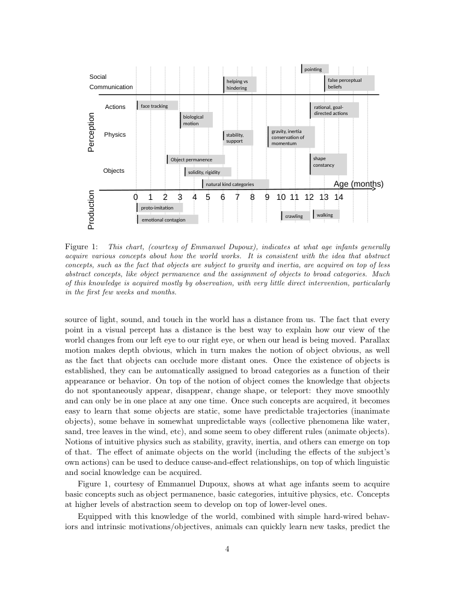
原论文 Fig.1 · PDF 第 4 页
图表说明：这是锁定版本原始 PDF 页级 PNG，保留原文标题、坐标、表头、脚注和视觉语境；具体对象和读图观察来自该论文的 figure-table ledger。
进一步分析：读者应把它与上方完整论文机制放在同一协议条件下理解；它支持论文中登记的现象，不自动支持跨数据集、跨模型或跨版本的因果结论。
证据边界：| Fig.1 | 4 | 婴幼儿能力发展年龄图；背景动机，不是模型实验。 |。资产类型为原始整页 PNG，未 OCR、重绘、裁色或作为当前任务 ImageGen 图计数；原始路径与哈希见 10_report/evidence-r19/original-paper-catalog.json。
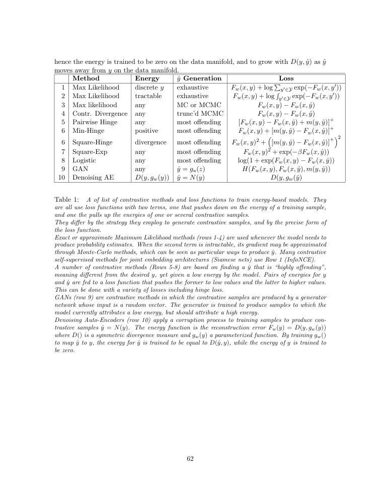
原论文 Table 1 · PDF 第 62 页
图表说明：这是锁定版本原始 PDF 页级 PNG，保留原文标题、坐标、表头、脚注和视觉语境；具体对象和读图观察来自该论文的 figure-table ledger。
进一步分析：读者应把它与上方完整论文机制放在同一协议条件下理解；它支持论文中登记的现象，不自动支持跨数据集、跨模型或跨版本的因果结论。
证据边界：| Table 1 | 62 | EBM 对比损失函数清单；按 PDF 页视觉核对。 |。资产类型为原始整页 PNG，未 OCR、重绘、裁色或作为当前任务 ImageGen 图计数；原始路径与哈希见 10_report/evidence-r19/original-paper-catalog.json。
代表论文精读：2301.08243
I-JEPA：从一张图的可见区域预测被遮区域的表征
阅读身份与范围
本文锁定《Self-Supervised Learning from Images with a Joint-Embedding Predictive Architecture》，arXiv 2301.08243v3，2023-04-13修订。作者为 Mahmoud Assran、Quentin Duval、Ishan Misra、Piotr Bojanowski、Pascal Vincent、Michael Rabbat、Yann LeCun、Nicolas Ballas。PDF首页列出的机构是 Meta AI (FAIR)、McGill University、Mila 和 New York University。阅读材料为同版本17页PDF、main.tex完整816行、math_commands.tex、参考文献及11个图资产。PDF哈希为 eddbdc093eb4d48662bcf4fbd1c6735ccd606205cc9070977ce317d68aff3941。来源bundle哈希检查23项全部通过；源材料获取时间、路径、版本身份由原manifest保存。
这里的正式阅读对象是arXiv v3。TeX使用CVPR2023模板，而API comment另有会议信息，模板与comment都不作为正式出版身份的充分证据。引用数未在本独立单元重新查询，也不影响内容判断。阅读覆盖正文§1–10、附录A–E、79项文献、Figure 1–8、Table 1–15；逐图逐表解释见图表台账。以下页码均为PDF物理页，源码定位均相对于tex_source/main.tex。
第一遍：问题地图与5C
这是一篇表征学习方法论文。它问的不是“怎样画出缺失像素”，而是：能否在不依赖多种人工构造的图像视图不变性的情况下，学到容易被线性分类器使用的语义特征，同时保留计数、深度等任务需要的局部结构？论文的上下文是两类自监督方法之间的缺口：DINO、iBOT、MSN等通过视图一致性得到较强语义，但随机裁剪、颜色变化等操作规定了要忽略哪些变化；MAE等掩码重建法更容易推广，却常需大量下游微调才能释放分类性能。作者明确担心分类与实例分割需要不同的不变性，图像特有增强也不容易直接迁到音频（§1，p1–2，L103–137）。这些是当时作者明述的动机，不能由后来的V-JEPA倒推为“为了机器人控制”。
类别是非生成式自监督图像学习；背景是视图不变性与像素重建各自的限制；贡献是表征空间预测、多块目标加分布式上下文的掩码设计以及效率和多任务实验证据；初步正确性依赖足够上下文、EMA目标分支与评价协议；清晰性较好，但归一化和少数参数/表格存在本文后面保留的歧义。总体定位是“让缺失信息的预测目标也随训练形成”，不是固定像素目标的重建器。
依赖阅读顺序是§2的JEA/生成式/JEPA区别 → §3的信息可见性和损失 → 附录A的实际配置 → §5–7的评估 → §8–9与附录C的机制证据 → 附录D–E的边界与可视化。论文没有给出保证任意JEPA不坍塌的定理；正文是实验方法而非完整理论证明。
前置概念：为什么“预测”与“不变性”不同
联合嵌入架构JEA要求两个兼容输入的特征接近，例如同一照片经过两种增强后应该仍表示同一类别。JEPA多了预测器和条件变量：两个表征本来可以不同，只要一个能结合条件信息预测另一个即可。Figure 2（p2）把两者和生成式架构并排画出。其红框是距离/能量，不是分类标签；条件z在本论文的实例中是待预测位置，不是随机扩散噪声。EBM“兼容低能量、不兼容高能量”是解释框架；本文训练并未采样负图并显式把它们推开（§2，L140–169）。
ViT将图像切成不重叠patch，再通过自注意力使每个patch的输出吸收其他可见patch的信息。因此“第j个patch的表征”不是该patch像素的独立编码。EMA是参数的指数移动平均，作用是让目标分支缓慢跟随在线分支；它既不是样本队列，也不是推理时保存图像历史。坍塌指不同图像全输出相同表征，损失可能很低却不含可用信息。论文用非对称预测器、上下文/完整图的信息差和EMA目标编码器抵抗这一失败，并报告EMA对训练重要；没有证明这些条件在所有数据或网络下足够。
机制 IJ-1：完整目标编码，随后选出目标块
原文强调：“the target blocks are obtained by masking the output of the target-encoder, not the input.”（§3，p3–4，L197–204）。完整图像y先被切成N个patch，完整序列进入目标编码器f_{bar theta}，得到N × d_e的patch表征。之后才用目标索引集合B_i抽出第i块。默认有M=4个矩形块，各自面积比例0.15–0.20，宽高比0.75–1.5，允许彼此重叠。这意味着目标向量虽然索引对应某一局部位置，其内容仍能整合整张图的信息。这是“高语义目标”的作者解释，附录C的输出mask与输入mask实验提供支持，而不是由网络结构自动保证的语义定理。
如果先裁出一个小目标块再送入编码器，教师只能见小块，输出容易偏向局部纹理；此外每个目标块需分别前向。Table 11（p15，L678–693）比较ViT-H/16、300epoch、冻结表征的1%线性分类：输出mask为67.3，输入mask为56.1，差11.2个百分点。这个控制支持当前配置中使用全图教师的价值，但不能把差异全归因于某一个可观测“语义量”，因为信息范围和目标构造都同时改变。

机制 IJ-2：一个上下文，多个目标位置
上下文先采样一个面积0.85–1.0、宽高比1的大方块，再删掉与所有目标块重叠的patch。最终输入给在线编码器的是剩下的patch集合，不是黑色遮挡像素；其表征形状为n_x × d_e。上下文通常在空间上分布较广，Figure 4（p4）显示的是这个结构，而非四张不同视图。Table 6的平均可见比例约0.25是这组随机采样的结果，不能拿1 - 4 × 0.175当精确公式，因为目标重叠、离散patch和上下文边缘均会改变并集大小（L206–218，L439–459）。
预测器g_phi收到上下文表征，以及目标块每个位置的mask token。mask token等于一个共享的可学习向量加该位置的嵌入；所以它告诉模型“预测哪里”，不包含该patch的实际像素。对于每个目标块单独调用一次预测器，原文默认共M次。不同块即使共享某个目标位置，也作为不同条件任务参与损失。
论文无[cls] token。预测器宽度固定384，head数等于编码器head数；ViT-B/16用6层预测器，ViT-L/16、H/16、H/14用12层，G/16用16层（附录A，p12，L531–537）。不能仅凭“ViT-H”名称把未在该段列出的数值head数写成论文披露值。224×224输入下，16像素patch产生14×14=196个位置；14像素patch产生16×16=256个位置；448×448、16像素patch产生28×28=784个位置。这些是由明确尺寸推得的几何数目，不是实测运行记录。

机制 IJ-3：损失、符号和梯度
论文§3（p4，L220–226）的精确损失是：
M是目标块数量；i遍历块；B_i是块的patch索引；j是原图patch位置；s_{y_j}为目标编码器该位置的d_e维输出；hat s_{y_j}为在当前块条件下得到的预测；二范数平方对特征坐标求平方并相加。这里明确除以M，但印出的等式没有除以块内patch数量，也没有除以d_e。不能把它默默改成逐元素均方误差。论文文字说“average L2 distance”与公式的粒度要区分；代码最终reduction是否额外取均值，必须由官方源码单独确认。本文不运行目标代码，也不把常见实现习惯当成事实。
在线编码器参数theta与预测器参数phi由梯度更新；目标编码器bar theta仅通过在线编码器的EMA更新。可用教学写法bar theta_{t+1}=tau_t bar theta_t+(1-tau_t)theta_{t+1}理解该规则，但论文没有规定本文这个下标约定和优化器/EMA调用的源码时序。初始化两编码器相同，tau由0.996线性升到1（附录A，L539–544）。目标向量在当前损失中作为固定监督；若让两分支同时自由用梯度降低同一距离，它们可以一起走向常数解。
贯穿教学实例，数值独立核算
为了展示索引、重叠、reduction而非模仿真实训练，取4×4=16个patch、d_e=2、M=2。两个目标是B_1={5,6}、B_2={6,7}；原始上下文索引假设覆盖16个位置，则删除目标并集后剩13个位置，在线输出为13×2。教师完整输出仍是16×2。mask token加位置使第6个位置在两个预测任务里都可出现；不把“目标有4个条目”误当作“有4个不同隐藏patch”。
设教师给5:(1,0), 6:(0,1), 7:(1,1)。块1预测5:(0.8,0.1),6:(0.1,0.7)，误差平方和分别0.05、0.10；块2预测6:(0.2,0.9),7:(0.6,1.2)，分别0.05、0.20。因此块内合计0.15与0.25，按印出公式得到L=(0.15+0.25)/2=0.20。如果把四个patch出现次数再平均会得到0.10，那是另一种reduction。损失对某预测坐标的导数为2(hat s-s)/M；例中块1位置5导数为(-0.2,0.1)，目标分支没有相应梯度更新。若tau=0.996、旧教师单个参数0.50、新在线参数0.60，EMA后为0.5004，这一小步只说明缓慢跟随，不保证表征保留信息。
最小失败例是将位置5和6的mask位置互换：相同上下文却被询问不同区域，预测目标错位，哪怕向量集合相同，逐位置距离也会惩罚。另一失败是目标和上下文未移除重叠，此时可从已经看过的局部内容直接抄答案，失去缺失信息任务的约束。全部数值均为教学假设，与论文实验无关；计算回执见覆盖文件。
第二遍：实验如何检验主张
理解这些实验前还需要区分三种“冻结”。自监督训练时，目标编码器不接收本步的损失梯度，却会在后续EMA更新中改变，所以它不是整个训练期固定的教师。线性评价时，预训练编码器确实被冻结，只有下游分类器改变，这衡量已有特征是否易于读出。可视化时，上下文编码器与预测器被冻结，再训练一个新的像素解码器，这衡量的是某种特征条件下可还原什么。把这三者混在一起，就会误以为教师从外部模型拿来、不随训练形成，或者误以为线性分类结果包含全网络微调收益。
数据标签的角色也不同：预训练损失不读取人工类别标签，目标来自同一图像的教师表征；全标签线性评价读取整个训练集标签；低样本实验只读取约每类十二至十三张的标签。无监督预训练与有监督下游评估并不矛盾。统计上，论文主表大多只给单个汇总数，未报告统一种子、标准差和置信区间。可以比较表中差值，却不能从没有误差条的表格推断微小差异必然显著，更不能把不同模型和评价选择产生的差异归为同一个机制的纯贡献。
§5的核心评价是冻结表征后能否被简单分类器读取。Table 1（p5）中ViT-H/14、300epoch的I-JEPA为79.3%，同规模MAE、1600epoch为77.2%；但二者预算不同。448分辨率H/16达到81.1，和iBOT ViT-L/16的81.0相近；这不能证明“相同规模相同预算全面胜过iBOT”，因为模型、输入分辨率、预训练epoch、视图数量均不相同。Table 2的1%ImageNet使用各方法最好的线性或微调方式；I-JEPA H/14为73.3，MAE H/14为71.5，448模型为77.3。它与§9、附录C的“冻结backbone、1%线性probe”不是同一协议，54.2、66.9等消融分数不可直接当作主表低样本排名。

Table 3（p6）验证跨数据的语义迁移：I-JEPA H/14在CIFAR100/Places205/iNat18为87.5/58.4/47.6，MAE H/14为77.3/55.0/32.9。iBOT为88.3/60.4/57.3，尤其细粒度iNat18仍有明显差距。Table 4的CLEVR计数/距离为86.7/72.4，相比iBOT85.7/62.8保留更多这类可读取信息，但MAE计数90.5更高。这不是“所有低层任务I-JEPA最佳”的证据，也不是连续米制深度误差，表中是对应任务的线性评价分数。
Figure 1、5的横轴是预训练GPU hours且采用对数尺度，纵轴分别为全标签线性Top-1与1%适配Top-1。论文称H/14少于1200 GPU小时，并在16台A100的条件下少于72小时。单步因全图教师约比MAE慢7%，整体少约5倍迭代带来效率；不能把整体速度主张改写成每一步都更快（§7，p6–7，L419–437）。未给跨硬件标准化误差条，因此GPU小时比较依赖作者测量设置。
Table 5扩展数据/模型：H/14从IN1K到IN22K，CIFAR100为87.5→89.5，iNat18为47.6→50.5，CLEVR距离72.4→75.0，Places205却58.4→57.8。因此“更多数据每项都提高”不成立。G/16的iNat18为55.3但计数86.7、距离73.0，作者将低层退化与更大patch联系起来；这是解释，不是独立控制了patch尺寸的因果证明。表注还用不同IN1K等价epoch说明训练量，不能把IN22K的数值当作等预算单变量数据消融。
第三遍：消融、可视化和证据边界
Table 6比较multi-block、rasterized、单block与random，分数54.2/15.5/20.2/17.6。虽前两者平均可见比例同为0.25，形状、空间覆盖和目标组织同时不同。Table 7在表征目标与像素目标间得到66.9/40.7，但epoch分别500/800；它强烈支持当前任务中抽象目标的实用价值，不能当作预算完全相同的机制因果实验。附录Table 8目标scale从(0.075,0.2)扩大下界到(0.15,0.2)时19.2→54.2，再扩大到(0.2,0.3)降33.6；“目标越大越好”显然错误。Table 9扩大上下文下界0.40→0.85时31.2→54.2；Table 10目标数1/2/3/4为9.0/22.0/48.5/54.2。四块在这里好，不等于任意数量单调提高。

Table 12预测器6→12层使64.0→66.9；Table 13较小固定weight decay使1%微调69.4→70.7，但全标签线性77.8→76.4，说明线性可读性与微调上限不是同一目标；Table 14窄预测器384对1024为70.7/68.4。Table 15全ImageNet微调I-JEPA87.1对MAE87.8，预训练300对1600epoch，输入patch不同；“竞争力”比“全面取代MAE”符合原证据。
Figure 6–8用额外训练的RCDM扩散解码器把冻结特征映回像素，绝不能据此称I-JEPA本身具有像素生成头。附录E（p16，L772–795）给出||h_omega(hat x,s_x)-epsilon||噪声预测目标，并训练解码器300,000次。Figure 6绿色框内多次解码的姿态、物体部分较一致而纹理变化；Figure 7保留鸟、电视、花、狗等语义及部分结构；Figure 8的MSN样本姿态/尺度变化更大。这是受到独立解码器及其训练先验影响的定性证据，无法仅凭几张图推出信息论充分性或校准好的位置不确定性分布。

论文内部歧义与真实源码边界
本文完整阅读后确认三处需要保留：附录A的target scale写成(015,0.2)，正文与图注明确为(0.15,0.2)，这是小数点排版差异；预测器宽度段L734写386，而配置段L534及Table 14均写384，采用384作为明确配置同时保留386的冲突；Table 1的ViT-L/16全标签线性为77.5，而Table 13默认weight decay行77.8，论文没有在这两处解释差异，不强行调和。此外Table 5最后一行模型为G/16，表注后文却写H/16的等价epoch，不能把该表注无条件配给G模型。
本单元未静态深读官方实现。已核验仓库快照的commit与路径由共享代码manifest管理；只有真实源码进入联合分析后才能补充collator的实际截断策略、特征归一化位置、loss reduction、EMA调用时序和默认head数。本篇给出的训练流程来自论文，属于Paper Fact；形状和导数属于条件明确的解释或教学计算；没有runtime_observed事实。
易错问题与直接答案
IJ-Q1：目标编码器也看遮住的图吗？ 它看完整图；只在输出特征上选目标。上下文编码器才只看剩余patch。补读§3 Targets及Table 11。
IJ-Q2：无手工增强是不是一切阶段都无增强？ 不是。主张限定为预训练不靠多种手工视图构造学习不变性；附录A的下游线性评价用裁剪/翻转，1%微调用RandAugment，全标签微调还用mixup/cutmix。不能把论文标题式表达扩张到完整工作流。
IJ-Q3：有没有四个独立教师？ 没有，完整图教师先产生一次全图表征，再抽四块；预测器对块条件执行M次。mask token的共享内容向量加不同位置只编码询问位置。
IJ-Q4：EMA严格防坍塌吗？ 论文说它对当前训练必要，未给一般充分性证明。常数表征仍是距离损失形式上的退化解，架构与优化动力学才是实用抵抗路径。
IJ-Q5：损失里每patch都平均了吗？ 印出公式只有块平均。实现是否额外平均要读真实源码；教学例刻意将两种reduction结果区分。
IJ-Q6：预测器后续要用于分类吗？ 附录A明确用目标编码器并平均patch输出做全局表征；预测器和RCDM是预训练/分析的工具，不能默认与分类器一起部署。
IJ-Q7：这是否已经是动力学世界模型？ 本文只预测同一图像中不同空间区域的表征，没有动作、时间状态、rollout或控制目标。它提供了JEPA的图像实例，跨到视频/动作是后续论文必须另行论证的变化。
可复用结论
可靠的结论是：在本文明确的数据、ViT和评价条件下，完整图EMA教师提供的表征目标，配合空间上分布广的上下文及多个中尺度目标块，能在无需视图不变性增强的预训练中得到较强的冻结语义表征，并保留某些局部信息。它让计算预算的用法改变，保留了目标编码器额外开销却明显减少所需迭代。尚不能推出的是一般无坍塌保证、所有任务领先、像素生成能力、时间动力学或行动规划。与MAE相比改变的是监督空间和教师；与JEA相比改变的是相同表征要求变为位置条件的可预测关系；与data2vec/CAE相近，但本篇主张的新增重点是具体多块掩码及效率设计，关系强度应以作者§4的明述和对应全文证据分别登记。
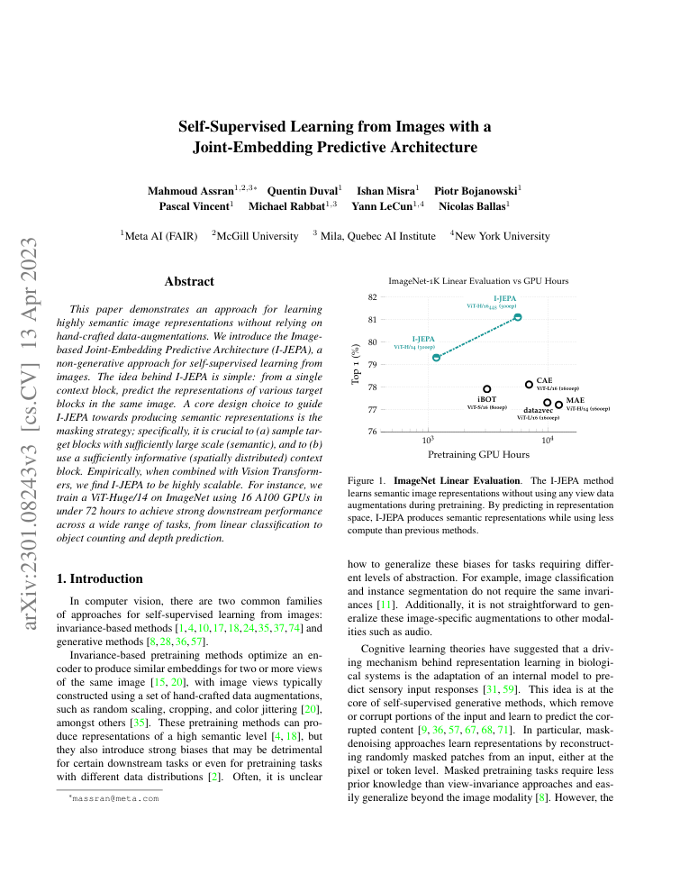
原论文 Figure1 · PDF 第 1 页
图表说明：这是锁定版本原始 PDF 页级 PNG，保留原文标题、坐标、表头、脚注和视觉语境；具体对象和读图观察来自该论文的 figure-table ledger。
进一步分析：读者应把它与上方完整论文机制放在同一协议条件下理解；它支持论文中登记的现象，不自动支持跨数据集、跨模型或跨版本的因果结论。
证据边界：| Figure1 | p1/L68–75 | 对数GPUhour横轴、ImageNet线性Top-1纵轴；青色I-JEPA两规模点对黑色MAE/CAE/data2vec/iBOT | 非等规模、等预算对照；点无统计误差条 | [原图](images/figure-01.png) |。资产类型为原始整页 PNG，未 OCR、重绘、裁色或作为当前任务 ImageGen 图计数；原始路径与哈希见 10_report/evidence-r19/original-paper-catalog.json。
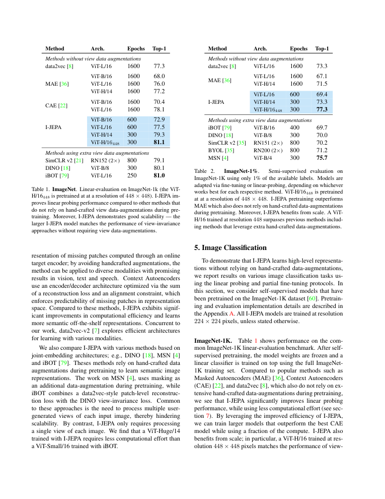
原论文 Table1 · PDF 第 5 页
图表说明：这是锁定版本原始 PDF 页级 PNG，保留原文标题、坐标、表头、脚注和视觉语境；具体对象和读图观察来自该论文的 figure-table ledger。
进一步分析：读者应把它与上方完整论文机制放在同一协议条件下理解；它支持论文中登记的现象，不自动支持跨数据集、跨模型或跨版本的因果结论。
证据边界：| Table1 | p5/L246–269 | IN1K全标签冻结线性；I-JEPA B/L/H分别72.9/77.5/79.3，H16-448为81.1 | 强冻结表征；规模、分辨率与epoch不同 | [原表](images/table-01.png) |。资产类型为原始整页 PNG，未 OCR、重绘、裁色或作为当前任务 ImageGen 图计数；原始路径与哈希见 10_report/evidence-r19/original-paper-catalog.json。
代表论文精读：2404.08471
V-JEPA（2404.08471v1）完整精读
1. 阅读身份与第一遍定位
本文正式标题为 Revisiting Feature Prediction for Learning Visual Representations from Video，锁定 arXiv v1（PDF 23 页，日期 2024-04-15）。作者为 Adrien Bardes、Quentin Garrido、Jean Ponce、Xinlei Chen、Michael Rabbat、Yann LeCun、Mahmoud Assran、Nicolas Ballas；首页机构列出 FAIR at Meta、Inria/ENS/CNRS、Univ. Gustave Eiffel、Courant Institute 与 NYU CDS（PDF p.1，paper.tex L3943-L3972）。本文是视频自监督表征方法论文，核心问题是：特征预测能否作为独立的视频预训练目标，既学习动作/时间，又在冻结 backbone 的图像任务上保持竞争力，而不依赖预训练图像 encoder、文本、负样本、像素重建或人工标签。
一句话定位。 V-JEPA 把视频划成时空 token，用可见区域预测被遮挡区域的目标特征；EMA target encoder、窄 predictor、3D multi-block masking 与大规模 VideoMix2M 共同构成方法。结果支持“特征空间预测比像素预测更适合冻结迁移且更省样本”，但不等于模型本身是生成器，也不等于所有下游任务都只需线性 probe。
第一遍 5C
| 维度 | 结论 |
|---|---|
| Category | 视频 SSL 方法/实验论文。 |
| Context | 慢特征、视频预测、MAE/VideoMAE、JEPA 都在处理时空表征，但像素重建会浪费容量，已有 predictive feature 工作常冻结 encoder 或用额外监督。 |
| Correctness | 目标、mask、EMA、数据和评测协议被拆开消融；冻结评测使用 attentive probe，多视图和预训练数据量会显著影响表格比较。 |
| Contributions | 建立 Video-JEPA；证明 feature target、VideoMix2M、adaptive/attentive pooling、multi-block masking 的组合有效；报告冻结、微调、低标注和可视化结果。 |
| Clarity | 主文和附录提供 token 化、mask 配置、90K iteration、optimizer、probe/fine-tuning 细节；仍需区分论文数值与外部 decoder 可视化。 |
2. 论文论证地图
引言（PDF pp.1-2，TeX L3943-L3997）从 Rao-Ballard predictive coding 和视频时序可预测性出发，提出只用 feature prediction 的 V-JEPA。Figure 1 以 K400 和 SSv2 冻结结果展示 appearance/motion 双域；贡献条目声称冻结 backbone 的 SSv2 领先、像素预测方法下游较弱且训练样本更少、低标注更有优势。相关工作区分 slow features、predictive features、pixel reconstruction 与 JEPA（p.2-3，L3973-L4000）。
方法（pp.3-4，L4004-L4148）先定义 JEPA：x 的 context 表征、y 的 target 表征、位置/变换条件 z 和 predictor。L1 目标采用 stop-gradient 的 EMA target encoder，正文还给出一维条件中位数/绝对偏差的理论直觉。Video-JEPA 将视频 16 帧转成 L=1568 token，x-encoder 丢掉 mask token，predictor 用可学习 mask token+绝对 3D sin-cos 位置编码补回目标，y-encoder 处理完整视频但只取 masked 输出作 target。短程 8 块×15% 与长程 2 块×70% 的联合 mask，平均遮挡约 90%。
实验顺序（pp.5-10）是：Table 1 特征 vs 像素；Table 2 数据规模；Table 3 average vs adaptive pooling；Table 4 masking task；Table 5/6 与像素预测及 SOTA 比较；Figure 4/5 样本效率与预训练时间；Table 7 低标注；Figure 6 predictor 可视化。附录 B-E（pp.16-23）补齐 Figure 7-9、Table 8-16 的 token 化、预训练超参、冻结/检测/微调评测、probe、temporal coverage、masking 和 sample-efficiency 细节。
3. 方法闭读
3.1 目标、EMA 和理论直觉
论文 Eq.(1)（PDF p.3，TeX L4029-L4052）让 predictor P_φ(E_θ(x),Δ_y) 逼近 sg(E_θ(y)) 的 L1 距离。sg 阻断 y 分支梯度，target encoder 是 context encoder 的 EMA；作者引用 BYOL 的 collapse 讨论，并对 L1 的一维最优 predictor 给出条件中位数、梯度与条件 MAD 的解释。这个论证只是“若 predictor 接近最优，encoder 需保留可预测信息”的直觉，不是非坍塌定理，也没有覆盖有限容量、mask overlap、非平稳优化。
Figure 2（p.3，L4010-L4018）把 JEPAs 画成 x→encoder→predictor(z)→ŷ 与 y→target encoder→sy；z 表示变换/腐蚀位置。Figure 3（p.4，L4058-L4067）明确输入路径：先删 x-encoder 的 masked tokens，再把 x 表征与 mask token 拼接进 predictor；target 由完整 y-encoder 生成，最后只在 M 个 masked patch 上取 L1。这个顺序区别于像素 MAE 的 decoder 重建，target 不是原始 RGB，也不是外部标签。
3.2 视频 token 和 multi-block mask
附录 B（PDF p.16，TeX L4504-L4559）给出输入：16 帧、每帧 224×224、时间 stride 4，覆盖约 64 原始帧/约 2 秒。3D conv kernel 2×16×16、时间 stride 2、空间 stride 16，将输入变为 8×14×14×d，展平为 1568×d，加绝对 3D sin-cos 位置编码（Figure 7）。对 M 个 masked index 和 N=L-M 个 unmasked index，x-encoder 只算 z_N；mask token 是共享可学习向量+目标位置 embedding，predictor 输出 M×d；完整 y-encoder 得到 s_L，loss 是 masked positions 上的平均 L1（Eq.2，p.16/L1057-L1078）。
mask 不是独立随机 patch：短程 mask 是 8 个、每帧空间尺度 0.15 的矩形块 union；长程 mask 是 2 个、尺度 0.70 的块 union，aspect ratio 采自 (0.75,1.5)，两者都沿整个时间轴延展，平均有效遮挡约 90%（p.4/L211-L243）。设计意图是切断视频的时空冗余，强迫模型从远处上下文预测连续区域；如果只随机 tube，模型容易利用近邻复制。附录 E.4 的 26 组实验显示：两个不同尺度的 mask 比一个好，多个小块优于单个大块，在固定 90% coverage 下仍需保留空间/时间困难度。
3.3 网络、数据与评测
backbone 为 ViT-L/16、ViT-H/16、ViT-H/16@384；predictor 是 12 层、宽度 384 的窄 ViT，head 数与 backbone 相同，不使用 [cls]（附录 C，PDF p.17/L1142-L1148）。预训练数据 VideoMix2M 将 HowTo100M、Kinetics-400/600/700（K710）和 SSv2 合并，并剔除验证集重叠，约 2M 视频。每个 batch 3072（H/16@384 为 2400），90K iterations；AdamW，LR 从 2e-4 warmup 到 6.25e-4 再 cosine 到 1e-6；weight decay 0.04→0.4，EMA momentum 0.998→1，调度器按 112.5K 计算却在 90K 截断（Table 8，p.17/L1085-L1127；正文 p.4/L243-L251）。
冻结分类使用 lightweight cross-attention attentive probe：learnable query 对全部 encoder tokens 做 key/value attention，再 residual、两层 MLP、LayerNorm、linear classifier（附录 D.1，p.18/L1197-L1218）。K400 默认 8 clips（约 16 s），SSv2 2 clips；图像任务把静态图复制为 16 帧，图像模型应用视频则逐帧编码后拼接。冻结 probe 不是纯 linear probe，因而所有对照均必须遵守同一 attentive/multiclip protocol；Table 12/13 证明 probe 选择本身能造成大幅差异。
4. 证据闭读
4.1 设计消融
Table 1（PDF p.5，TeX L4092-L4108）在 90K、batch 3072、multi-block 下比较 pixel target 与 feature target：V-JEPA ViT-L/16 在冻结 K400/SSv2/IN1K 为 73.7/66.2/74.8，像素为 68.6/66.0/73.3；K400 fine-tuning 85.6 vs 85.4。优势不全是冻结、也不是所有指标等幅提升，但说明目标空间能减少低级细节负担。
Table 2（p.5）固定 90K 和 batch，改变 K710、K710+SSv2、K710+HT、VideoMix2M。平均成绩从 L/16 的 70.9/71.0/71.1 到 71.5，H/16 VideoMix2M 平均 72.8；最优单任务数据仍可能不同，说明“更多数据改善平均迁移”不等于每个任务单调最优。Table 3（p.6）显示 adaptive pooling 比 average pooling 在 L/16 冻结 K400 56.7→73.7、SSv2 50.1→66.2；这反映评测 head 的非线性容量，而不是预训练 backbone 单独提升。
Table 4（p.6）比较 random-tube[0.9]、causal multi-block[6/12]、multi-block：K400/SSv2/IN1K 最好为 multi-block 72.9/67.4/72.8；causal 只给前 6 帧或 12 帧导致下降。关键不是 mask 比例数字本身，而是 x 只能从完整时空上下文推断 y。
4.2 与像素预测、SOTA 和标签效率
Table 5（p.7）控制 ViT-L 或 Hiera-L 后，V-JEPA 冻结 attentive K400/SSv2/AVA/IN1K/Places/iNat 为 80.8/69.5/25.6/74.8/60.3/67.8，明显超过同架构像素方法的多数列，ImageNet 仅低于直接在 IN1K 训练的 OmniMAE 75.1。微调 K400/SSv2 为 85.6/75.1；Hiera-L 的 SSv2 仍有层级归纳偏置优势。Figure 4（p.8）在 SSv2 fine-tuning 中显示 V-JEPA 用约 270M samples，优于 ViT-L 像素 baseline 且匹配 Hiera-L；Figure 5 用 wallclock 展示约 2× 速度优势，但时间是单 GPU batch 10 后外推，不能作为跨硬件标准。
Table 6（p.7）放宽架构比较：V-JEPA H/16 在 K400 82.0、SSv2 71.4、AVA 25.8、IN1K 75.9；H/16@384 SSv2 72.2、IN1K 77.4。相对 DINOv2/OpenCLIP/I-JEPA，SSv2 提升 21+ 点，支持视频预训练对细粒度运动有价值；K400 又易受外观线索影响，不能把 82.0 当作纯 motion 理解。Table 7（p.9）5%、10%、50% 标签下，H/16@384 SSv2 为 54.0/59.3/67.9，VideoMAEv2 为 28.0/37.3/54.0；作者的“label efficient”有均值±标准差和三次随机 split 支撑，但只覆盖 K400/SSv2 两个任务。
4.3 predictor 可视化与结论边界
Figure 6（pp.9-10，L4441-L4450）冻结 encoder/predictor，另训 conditional diffusion decoder，只输入 masked-region feature prediction，不输入 unmasked context。共同出现的对象、位置和运动被解释为 predictor 表征中的可预测内容；caption 明确说 V-JEPA 不是生成模型，decoder 不能精确复原原视频。因而不能把图片当成“V-JEPA 具备像素生成能力”的证据。
附录 E.1 的 Table 12/13 量化 attentive probe 与 multi-clip 的影响：V-JEPA L/16 K400 linear 56.7→attentive 80.8、SSv2 50.1→69.5；DINOv2 的 K400 78.4→83.4、SSv2 38.3→50.0。Table 14（p.22）显示单 clip 到 8 clips：V-JEPA 73.7→80.9，VideoMAE 69.4→77.8；Table 15 的 fine-tuning H/16 K400/SSv2 86.6/77.0，ViT-L 85.6/75.1。Table 16（p.23）将 sample seen 与 OpenCLIP 39,000M、DINOv2 1900M、VideoMAEv2 1600M、V-JEPA 210M 并列；这只比较网络处理样本数，不等价于数据多样性、GPU FLOPs 或总能源。
5. 批判、迁移与未决问题
强证据是：feature/pixel 同架构对照、数据量固定的 Table 2、mask 任务对照、低样本均值±标准差、附录中完整训练和评测超参。核心假设仍有边界：EMA teacher 只是经验性的 collapse 防护，理论部分不覆盖多维有限容量；VideoMix2M 是公共视频组合，去重方式与场景分布决定泛化；K400 外观偏置会夸大“视频理解”；attentive probe 让 representation 与 head 共同决定冻结分数；Figure 6 的外部 decoder 引入额外先验。
对视频/机器人研究可迁移的是“目标空间、可见上下文、时空 mask、冻结评测 head”四件事应同时报告；尤其要把单 clip、multi-clip、linear、attentive、fine-tuning 分开。不能直接迁移的是 16-frame/3D conv 设定、90% 长时 mask 和 VideoMix2M 分布；长时规划、动作条件和因果预测需要额外证据。未决问题包括：更长 horizon 是否产生可组合动态；mask 是否应按动作边界而非矩形采样；EMA/预测器宽度的 scaling；以及无需 external decoder 的可解释性验证。
本文没有运行 jepa 代码；所有数值均为 PDF/TeX 报告值，代码级实现由固定快照联合审阅单元另行核实。
6. 机制复核：V-JEPA 的时空预测契约
V-JEPA 的基本单位是视频 clip 的时空 patch token。上下文编码器看到未被遮挡的 tubelet，目标编码器看到完整或不同遮挡视图，predictor 根据可见时空上下文和目标位置编码预测被遮挡区域的 latent。训练目标在表示空间计算，不要求还原 RGB 像素；因此一个目标 token 可以保留动作、物体和空间关系，而忽略压缩伪影、光照噪声和不可预测纹理。这个抽象是论文与 VideoMAE、像素重建方法比较时的关键。
但“latent prediction”不等于“未来视频生成”。V-JEPA 的 mask 目标通常来自同一 clip 的可见时空范围，预测器学习的是条件表示而非随机未来帧；Figure 6 需要额外 conditional diffusion decoder 才能生成可视化。正文明确说明 decoder 不能精确重建原视频，所以可视化只能证明 latent 含有可预测内容，不能证明 encoder 自身拥有像素生成器。
EMA teacher、mask 比例、tubelet 大小、predictor 宽度和目标层选择构成训练稳定性的工程条件。EMA 让 target 表征变化更慢，减少学生追逐自己瞬时输出的风险；高 mask 比例迫使模型利用长程时空上下文，但过高会让可见信号不足；低 mask 比例则可能让局部纹理捷径主导。论文的 ablation 和 Figure 4/5 反映的是固定 VideoMix2M、固定 clip 采样和特定硬件下的折中，不能直接改写成通用 mask 定律。
7. 时空 token 的教学计数
设一个 clip 有 16 帧，每帧划分 14×14 个空间 patch，则总 token 数为 (16\times14\times14=3136)。如果使用 tubelet 长度 2，时间 token 减半为 8，序列长度为 (8\times14\times14=1568)。90% mask 时约 157 个 token 可见，1411 个 token 需要预测。模型必须从少量上下文推断运动方向和对象身份，这解释了为什么视频预训练比单帧图像更可能学到时间关系；但这个计数不代表论文所有配置，实际 patch/tubelet 由 source 代码和具体 backbone 决定。
冻结 encoder 做 linear probe 时，若取 (d=1024) 维 pooled embedding、分类类别数为 400，线性头参数约为 (1024\times400+400=410000)。attentive probe 会额外学习时空注意权重，因此分数提升不纯粹属于 encoder；Table 12/13 中 linear→attentive 的差异正是“表征”和“读取头”共同作用的证据。报告时必须同时给出 linear、attentive、multi-clip 和 fine-tuning，不能只挑最高列。
8. 结果、基线和证据边界
Table 2 的固定数据量对照比不同论文的总样本量比较更有说服力；Table 5/6 的架构对照则反映 backbone 归纳偏置、分辨率和参数量。K400 容易利用外观与场景线索，SSv2 更依赖细粒度动作，AVA 涉及人-物交互，ImageNet/Places/iNat 则偏静态语义。V-JEPA 在 SSv2 的提升支持时间建模价值，但不能写成所有“视频理解”都由运动解释。
低标签 Table 7 的均值和标准差说明 V-JEPA 在 5%、10%、50% 标签设定下有标签效率优势；不过只覆盖 K400 和 SSv2，且每个任务的微调头、clip 数和训练步数仍需固定。Figure 4 的约 270M samples 与 Figure 5 的 wall-clock 时间不能混为同一效率指标：samples seen 是数据处理量，wall-clock 受 GPU、batch、I/O 和实现影响。Table 16 的 OpenCLIP/DINOv2/VideoMAEv2/V-JEPA 样本数也不是 FLOPs、能源或数据多样性的等价比较。
常见误读包括：把 attentive probe 分数当作纯冻结线性能力；把 multi-clip 增益当作单 clip 表征提升；把外部 diffusion decoder 的视频画面当作 V-JEPA 生成能力；把 EMA 防 collapse 当成定理保证。正确做法是为每个数字记录 encoder、predictor、mask、clip 数、probe 类型、decoder 是否训练以及数据样本量。
9. 迁移和复现清单
对机器人或视频策略，V-JEPA 可迁移的思路是把观察序列编码成时空 latent，再用条件 predictor 学习状态变化；不可直接迁移的是 16-frame clip、随机矩形/tube mask 和 ImageNet/K400 评测，因为策略需要动作条件、长时 rollout、误差累积和闭环反馈。对更长 horizon，应报告多步预测误差随时间增长、遮挡边界、不同动作速度和相机运动，而不是只报告单 clip 分类。
复现最小合同包括：帧数、帧率、空间分辨率、tubelet、mask 比例与采样策略、teacher EMA、predictor 层数/宽度、目标层、batch、学习率、样本数、linear/attentive/fine-tune 头、multi-clip 评估和随机种子。本文没有运行目标代码；所有数值来自 PDF/TeX，代码级 mask 广播、EMA 更新、时空位置编码和 loss reduction 仍需 fixed snapshot 单独核验。
任何重训结果都应同时保存样本量、硬件和 probe 类型，不能只保留最终准确率。
13. 论文主张与验证方式的对应
“表示空间预测比像素重建更适合视频”应由同架构 feature/pixel 对照支撑；“更省标签”应由不同标签比例和随机划分支撑；“更快”应同时报告 samples、FLOPs 和 wall-clock；“能表达可预测内容”则需要冻结 probe 与外部可视化分开验证。若只看到一个下游分类表，不能同时推出这四个主张。V-JEPA 的证据价值来自这些协议被拆开，而不是来自单个最高准确率。
对复现结果的最小审计包括：固定 VideoMix2M 或明确新的数据混合，锁定帧数、tubelet、mask 与 EMA，记录每个 checkpoint 的 pixel/feature loss，分别训练 linear、attentive 和 fine-tuning head，最后用相同 clip 数计算 K400/SSv2/AVA/IN1K 等指标。若替换 backbone、分辨率或 multi-clip 策略，必须在报告中标明，这些改变会影响时空 token 数和读取难度。
10. 时空层级与遮挡位置
V-JEPA 的遮挡发生在时空 token 层，而不是任意像素随机丢弃。空间 patch 和时间 tubelet 共同决定一个 token 的语义范围：tubelet 太短，模型容易依赖帧间纹理重复；tubelet 太长，快速动作可能在一个 token 中被平均掉。mask 的空间连续性还影响模型是否必须跨区域推断，时间连续 mask 则迫使 predictor 读取前后帧。复现时要同时记录 mask 的面积、时间长度、是否重叠以及目标 token 的位置编码。
teacher 的 EMA 更新、predictor 的宽度和目标编码器的输出层会共同决定训练信号。若 target 直接与 context 共享即时梯度，模型可能通过复制当前表征降低损失；EMA 让 target 变化更慢，但并不提供长期动态预测保证。predictor 太浅可能只学局部纹理，太宽则增加成本并可能记忆训练视频。论文的消融证明的是给定 backbone 和数据协议下的折中，不能把某个深度推广成所有架构的最优。
11. 冻结评估的手算与风险
设一个视频 encoder 输出 1024 维 pooled vector，Kinetics-400 线性分类头有 400 个类别，则权重数约为 409600，加上 400 个偏置。这个 head 的训练误差降低只能说明线性可分性，不能说明视频动作因果被建模。attentive probe 增加时空注意参数，可以选择更有用的 token，结果混合了 encoder 和 head；multi-clip 则把多个窗口的预测平均，改变了输入证据。因而论文同时报告 linear、attentive、multi-clip 和 fine-tuning，是为了避免把评测头增益误认成预训练增益。
预测器可视化中的 diffusion decoder 是外部模型。它接收冻结表示并生成可见画面，decoder 的图像先验、训练集和扩散步骤都会影响结果。即使生成画面看起来像原视频，也不能说 V-JEPA 自己能重建像素；反之，画面模糊也不一定说明 latent 没有动作信息。最稳妥的证据是把可视化与 endpoint error、linear probe 和下游视频分割一起报告。
12. 数据预算和跨域限制
VideoMix2M、K400、SSv2、AVA、ImageNet、Places 和 iNat 的场景统计不同。K400 中外观线索可能足以猜类别，SSv2 更依赖动作顺序，AVA 还要求人物与对象交互。V-JEPA 在 SSv2 的优势支持时空目标的价值，但不能把所有数据集的平均值写成“通用运动理解”。samples seen 也不等于不同视频数量；重复采样、帧率、增强和去重都会影响有效数据多样性。
迁移到真实机器人或长时规划时，必须引入动作条件、状态反馈和误差累积。随机 mask 的单 clip 目标没有处理执行动作导致的分布漂移，也没有测试多步 rollout。应新增 horizon 曲线、遮挡条件、相机运动、动作速度和失败恢复；否则只能说模型提供视频表征，不能说它是控制世界模型。所有代码级结论仍需固定快照验证，本文没有运行 jepa 代码。
最后，若只保留一个 frozen linear 数字，会漏掉预测器和时空读取头的作用；若只保留 fine-tuning，又无法判断预训练是否提供了可复用结构。本文的证据链要求把目标空间、可见上下文、遮挡方式、评测头和数据预算一起报告。
这也是阅读附录和主文表格时不能跳过协议列的原因：同一 encoder 在不同 head、clip 数和数据量下不是同一个实验。
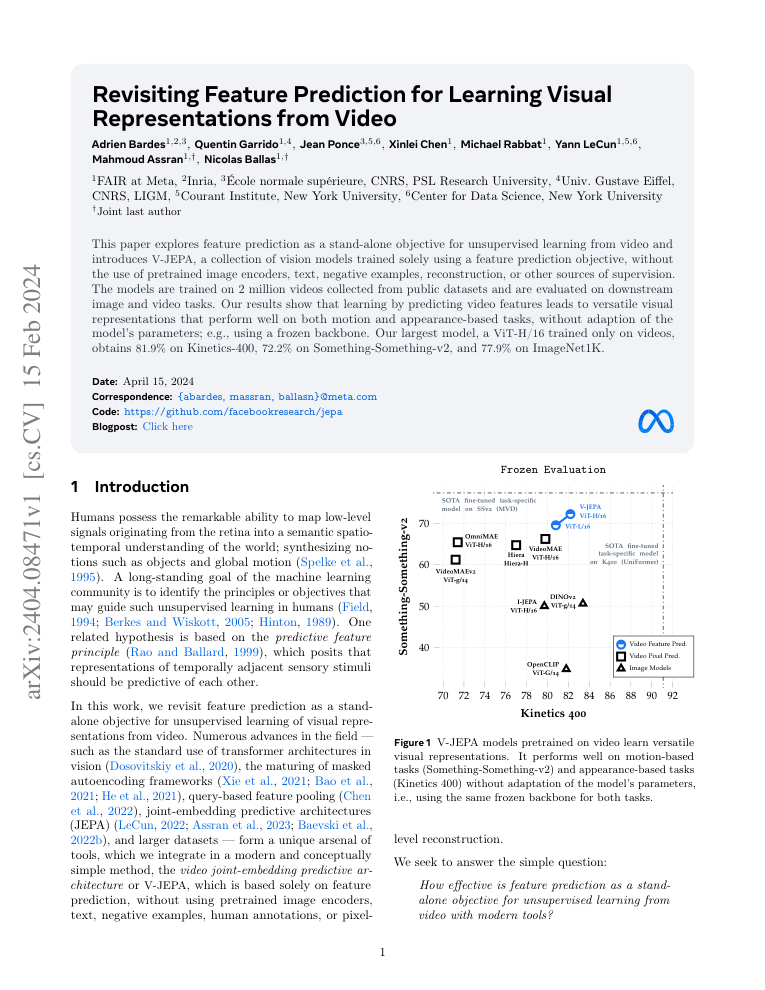
原论文 Figure 1 · PDF 第 1 页
图表说明：这是锁定版本原始 PDF 页级 PNG，保留原文标题、坐标、表头、脚注和视觉语境；具体对象和读图观察来自该论文的 figure-table ledger。
进一步分析：读者应把它与上方完整论文机制放在同一协议条件下理解；它支持论文中登记的现象，不自动支持跨数据集、跨模型或跨版本的因果结论。
证据边界：| Figure 1 | 1 | 3951-3956 | 冻结 K400/SSv2 与图像任务的 V-JEPA 总览 | 不等于线性 probe，图中为评测汇总 |。资产类型为原始整页 PNG，未 OCR、重绘、裁色或作为当前任务 ImageGen 图计数；原始路径与哈希见 10_report/evidence-r19/original-paper-catalog.json。
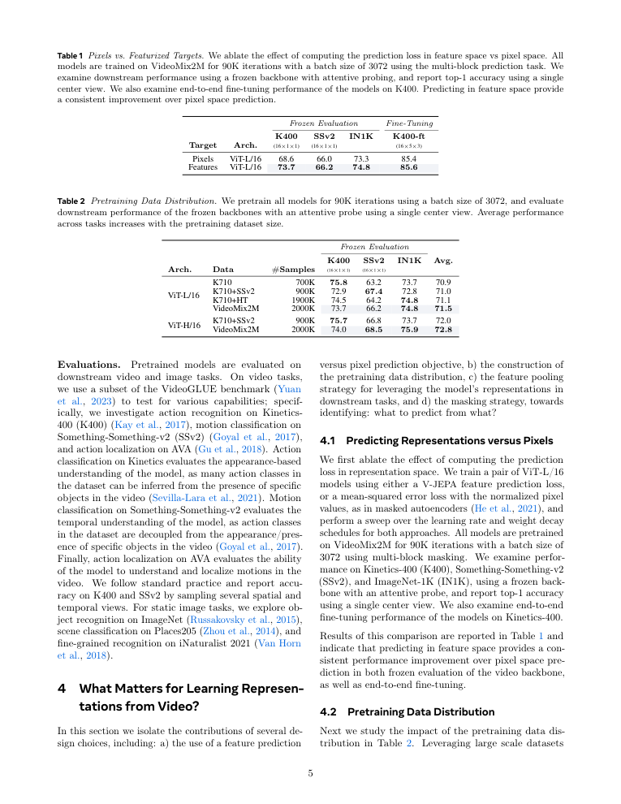
原论文 Table 1 · PDF 第 5 页
图表说明：这是锁定版本原始 PDF 页级 PNG，保留原文标题、坐标、表头、脚注和视觉语境；具体对象和读图观察来自该论文的 figure-table ledger。
进一步分析：读者应把它与上方完整论文机制放在同一协议条件下理解；它支持论文中登记的现象，不自动支持跨数据集、跨模型或跨版本的因果结论。
证据边界：| Table 1 | 5 | 4092-4108 | pixel vs feature target：73.7/66.2/74.8 vs 68.6/66.0/73.3 | 90K、batch 3072、multi-block 固定 |。资产类型为原始整页 PNG，未 OCR、重绘、裁色或作为当前任务 ImageGen 图计数；原始路径与哈希见 10_report/evidence-r19/original-paper-catalog.json。
代表论文精读：2307.12698
MC-JEPA（2307.12698v1）完整精读
1. 阅读身份、问题与定位
本文正式标题为 MC-JEPA: A Joint-Embedding Predictive Architecture for Self-Supervised Learning of Motion and Content Features。本次锁定的是 arXiv v1，PDF 20 页，作者是 Adrien Bardes、Jean Ponce、Yann LeCun；第一页给出的机构为 Meta AI/FAIR、Inria/ENS/CNRS/PSL、Courant Institute 与 NYU Center for Data Science（PDF p.1，源文件 iclr2024_conference.tex L70-L83）。论文属于方法/多任务自监督学习论文，研究问题是：一个共享视觉编码器能否同时从无标注图像学习内容特征、从视频学习像素级运动，使同一套表征既能做光流，又能迁移到图像和视频分割，而不把运动学习与语义表征学习拆成两个模型。
一句话定位。 本文把 PWC-Net 风格的无监督光流目标与 VICReg 内容学习放在同一个共享 ConvNeXt-T 编码器上；它证明的是“多任务共同训练在给定数据、架构和损失权重下有用”，不是 JEPA 的一般理论，也不是视频世界模型或控制策略。
第一遍 5C 速览
| 维度 | 结论 |
|---|---|
| Category | 方法论文：共享编码器的运动-内容多任务 SSL。 |
| Context | 内容 SSL 擅长识别但缺少像素运动，光流擅长对应但表征迁移弱；作者用 M-JEPA + VICReg 组合。 |
| Correctness | PWC 粗到细回归、光度重建、平滑、前后向 cycle 和 VC 正则组成可解释的训练约束；但多任务系数、数据采样和评测 protocol 共同变化，因果解释有限。 |
| Contributions | 提出 M-JEPA；将其与 ImageNet VICReg 组成 MC-JEPA；在光流、图像分割、视频分割上使用单编码器评估。 |
| Clarity | 论文的主干流程和损失明确，附录给出数据重复、层级系数和架构修改；代码级 reduction、collator 行为不在本单元验证。正文与附录没有 EMA teacher 或 target encoder，因此不应把这些机制列为 MC-JEPA 的复现组件。 |
2. 论文论证地图
引言（PDF pp.1-2，源文件 iclr2024_conference.tex L112-L143）先区分“内容特征”和“运动/密集对应”：分类、动作识别需要可辨识对象；光流需要两帧像素对应。图 1 把两个数据源画成共享权重的两条支路：ImageNet 的两视图进入内容 SSL，连续视频帧进入光流估计。图 2 再把光流支路展开为 PWC-Net 的多尺度 warping/correlation/refinement。相关工作（PDF pp.3-4，同文件 L145-L156）把方法放在四条线之间：非对比/聚类/掩码表征、无监督光流、视频对应和多任务学习；其中的掩码方法是被讨论的相关工作，不是 MC-JEPA 自身组件。
方法的依赖顺序是：先定义两帧及多尺度特征，再给回归、重建、平滑、cycle、VC 五类光流损失（PDF pp.4-6，iclr2024_conference.tex L162-L245）；随后定义 VICReg 内容损失与共享编码器的联合目标（PDF p.6，同文件 L247-L260）；最后给数据、优化和稳定性细节（PDF pp.6、15-20，主文件 L279-L437 与 appendix.tex L37-L295）。实验先报告 Table 1 主结果，再用 Table 2-5 分解数据、估计器、骨干、采样策略，Figure 5 检验 flow start、cycle 权重和多任务权重。附录通过 Table 6-8、Figure 6-9、Table 9-11 验证可复现配置、额外指标和 VC 稳定性。本文全部行号按真实单个 TeX 文件从第一行计算，不采用 full-tex-source.md 的合并偏移。
3. 方法闭读
3.1 M-JEPA 的光流任务
给定连续 RGB 图像 I_t,I_{t+1}∈R^{3×H×W}，流 f∈R^{2×H×W} 在 PDF p.4（iclr2024_conference.tex L162-L183）表示从 I_t 像素到 I_{t+1} 对应位置。编码器输出六个金字塔层 X_t^(l),X_{t+1}^(l)。在最低分辨率先估计流，然后把前一层流上采样并预测残差，形成式 (1) 的 coarse-to-fine 递推。每一级先用流 warp X_t，再计算 4D correlation volume V=\hat X_t X_{t+1}^T，由小卷积网络预测残差；这说明“运动”由多尺度特征相似度逐级约束，最终仍输出像素位移。
回归损失是所有金字塔层的特征差平方和（Eq.2，PDF p.5，iclr2024_conference.tex L171-L174），最后一层再做图像重建损失（Eq.3，同页 L175-L179），其 d 是 L2、L1、SSIM 的线性组合。平滑损失（Eq.4，同页 L179-L183）按图像梯度加权流梯度：纹理边缘允许运动变化，图像平坦处鼓励平滑。前后向 cycle 损失（Eq.5，PDF pp.5-6，同文件 L231-L235）先估 t→t+1 与 t+1→t，两次 warp 后比较特征差，并对另一方向对称计算；作者还用前后向兼容性只在有双向对应的像素上算 L_reg。这里的有效对应筛选是遮挡处理规则，不能改写成 patch masking，也不能由这段话推断所有其他损失使用同一 mask。
VC 正则（Eq.6，PDF p.6，iclr2024_conference.tex L238-L245）逐层对特征标准差设下界、对协方差非对角项平方惩罚，两项都带通道数归一化。它用于防止表征坍塌并改善联合训练稳定性。附录 A 报告 flow estimator 的权重范数和梯度爆炸、NaN，并通过 LayerNorm、输出裁剪及专门优化参数处理；附录 E 用 Table 11 比较 VC 的收益。因而不能把所有爆炸现象归因于“缺少 VC”，也不能把表中无 VC 的有限指标当成一次必然 crash。
3.2 内容支路与联合目标
内容支路沿用 VICReg：从同一 ImageNet 图像用随机裁剪、颜色抖动生成两个视图，经共享编码器和 expander 后，使用不变性 L2、方差和协方差项（PDF p.6，iclr2024_conference.tex L247-L254）。视频批次先算 L_rec+L_reg+L_smooth+L_cycle+L_vc，再从 ImageNet 采图算 L_ssl，两者相加后同时反传到共享 encoder、expander 和 flow estimator（同页 L254-L260，Eq.7）。因此 MC-JEPA 的 JEPA 含义是“联合嵌入预测/可预测特征”，运动支路实际是 PWC 光流回归，内容支路是 VICReg 双视图学习。
附录 A 的稳定性策略很关键：8 张 V100-32GB，AdamW，ImageNet batch 384、flow batch 8，encoder 学习率 3e-4、flow estimator 1e-4，100 epoch、10 epoch 学习率 warmup，ImageNet 单独训练 10 epoch 后引入 flow（PDF pp.15-16，appendix.tex L37-L115）。附录 A 把 ConvNeXt-T 写作 21M 参数，但主文 Table 4（iclr2024_conference.tex L372-L377）列为 23M；应保留这项源内口径差异。stem 被拆成两个卷积层以得到 6 层金字塔；附录 A L45 与 C L179 对核大小的文字并不一致，具体复现须核对 Figure 6 及固定快照代码，不能从两段文字拼出一组确定核尺寸。flow estimator 每个卷积后加 LayerNorm、过滤器宽度倍率 C=2，但最后一层不加 LN，否则流值范围会偏移（PDF pp.17-18，appendix.tex L177-L195）。另有源内差异：附录 A L48 的末学习率写 1e-5，Table 6 L89 列 3e-8；两值都应保留并在复现前核实。
数据不是单一视频域：FlyingThings/Chairs、KITTI raw/2012/2015、Sintel raw/clean/final、HD1k 按 Table 7 的 15 行数据重复采样（PDF p.17，appendix.tex L117-L148）；每次迭代从展开并打乱后的流数据集取一个 batch，与 ImageNet batch 配对后合并损失。该表原始 size 合计 151,823、按 repetition 展开后合计 303,639；这些是表值的算术汇总，不是去重后的独立视频数。这个设计使表征增益更可能来自跨域联合，但也让“数据规模”“采样比例”和“任务权重”高度耦合。
3.3 实验、消融与证据
Table 1（PDF p.5，iclr2024_conference.tex L186-L229）按数据集与划分报告光流：MC-JEPA 的 Sintel clean train/test EPE 为 2.81/5.01，Sintel final train/test EPE 为 3.51/6.12，KITTI-2015 train EPE 为 2.67、test F1 平均错误率为 11.33%。F1 在这里是光流错误率而非分类 F1 分数，越低越好；表注的 ↑ 与同一句 “Lower is better” 冲突，不能据箭头反转指标方向。图像分割首列是 Pascal VOC：其冻结/微调 mIoU 为 67.1/79.9，Cityscapes 为 65.5/78.4，ADE20k 为 30.8/44.2；ImageNet 是内容预训练集，不能替代该表的 Pascal VOC 标签。DAVIS (J&F)_m=70.5。M-JEPA 的 Sintel clean/final train EPE 为 2.98/3.82、K15 train EPE 为 3.01、Pascal VOC 冻结 mIoU 为 9.4，其余下游列为空，不能补成隐含结果。方向性结论是“流目标帮助局部表征”，SMURF 等单任务模型在流上更强，作者自己也在 PDF p.7（同文件 L287）说明目标是通用特征而非最佳光流。
Table 2（PDF p.8，iclr2024_conference.tex L315-L336）比较 KITTI、Sintel、FlyingX、HD1k 的组合：从 KITTI+Sintel 的 K15/clean/final EPE 2.91/2.99/3.70，加 FT/FC 到 2.88/2.93/3.66，再加 HD1k 到 2.67/2.81/3.51，分割变化较小。单域行在各自域表现好，因此应读成组合数据改善流的总体趋势，不是任意添加数据都逐列严格单调。Table 3（同文件 L338-L358）中无 LN 且无 L2 的 2M estimator 会 crash，单独 L2 normalization 表现差，LN 是稳定关键；扩大 estimator 由 2M 到 8M 只带来边际收益。Table 4（L362-L381）比较 ConvNeXt-T、ResNet-50 和原始 PWC backbone，说明 PWC 的原始骨干不适合内容表征。Table 5（L383-L404）中 batch alternation 与 combined loss 的 ISeg/VSeg 同为 67.1/70.5，而 combined loss 的 K15 EPE 从 2.78 降到 2.67；它优于冻结或按 epoch 交替，并不是每项都胜过按 batch 交替。
Figure 5（PDF p.9，iclr2024_conference.tex L407-L433）给出三个控制变量：ImageNet 预训练后第 10 epoch 引入 flow 在测试值中最好；cycle 系数敏感；多任务系数提高到约 0.1 时 flow 与分割一起提升，继续增大则分割下降，呈现运动-内容权衡。Table 11（PDF p.19，appendix.tex L250-L275）进一步显示：无 VC 的 K15 3.41、VSeg 37.8；0 epoch all-layer 为 K15 2.65、VSeg 69.4；1 epoch all-layer 达 K15 2.67、VSeg 70.5；2 epoch 退化为 K15 2.91、VSeg 64.1。1 epoch 的分割最好，但三项 flow EPE 的最低值来自 0 epoch all-layer 的 2.65/2.80/3.48，而非 1 epoch 的 2.67/2.81/3.51。这是稳定性与收敛速度的经验结果，不是对任何数据集都普适的最优 warmup 定理。
3.4 附录与可视化边界
Figure 6-7（PDF p.18，appendix.tex L181-L195）是 stem 与 PWC estimator 的结构示意；Table 9-10（同页 L201-L247）补充 KITTI/Sintel 遮挡与 DAVIS 的 J_m/F_m。例如 MC-JEPA 的 KITTI all/noc/occ EPE 为 2.67/2.08/6.24；Sintel clean 为 2.81/1.25/23.82、final 为 3.51/1.99/24.23；DAVIS J_m/F_m 为 67.0/74.0。Figure 8（PDF p.19，L279-L286）把 MC-JEPA、M-JEPA、ARFlow 在 KITTI/Sintel 的流可视化并排，Figure 9（PDF p.20，L288-L295）展示 DAVIS t=1/10/25/50 的冻结特征跟踪。它们说明输出在视觉上连续、遮挡区域存在误差，但不能替代数值指标，也不能推出生成模型能力。
4. 批判与可迁移性
强证据。 (i) 同一 encoder 在专门光流和多个分割任务上均有结果；(ii) Table 2-5 与 Figure 5 对关键设计做了方向一致的拆分；(iii) Appendix E 把 collapse/stability 失败模式直接量化。
边界。 论文没有跨硬件、跨实现的方差/置信区间；表中很多对照改变了 epoch、backbone、数据或冻结/微调协议。VC、cycle 和任务系数是手工调参，不能从一次结果推导全局最优。ImageNet 内容数据与流数据域差异较大，未来若两者都来自自然视频，任务冲突可能改变。光流训练使用真实/合成混合和前后向兼容性；Table 9 已分别报告 noc/occ，长时运动和控制闭环则未被单独测量。Figure 8 是训练好的 flow estimator 输出，Figure 9 是冻结特征下的 DAVIS 分割/跟踪协议，二者的可视化都不能称为 encoder 自带的生成能力。
对当前研究的迁移。 可复用的是“共享表示 + 任务特定头 + 分层正则”的实验模板：先把任务、数据批次、损失权重和评测 head 固定，再做单变量消融；应分别记录运动/动态指标与语义/内容指标，避免总分掩盖 trade-off。不可直接迁移的是 ConvNeXt/PWC 的二维光流假设和 ImageNet/Videos 采样比例；对机器人或视频策略需重新定义可预测目标、遮挡处理和动作时序。
5. 结论与未决问题
本文可靠结论是：在论文给定的 ConvNeXt-T、PWC、VICReg、混合数据与权重下，联合运动-内容训练提升了局部分割和视频分割，并保持竞争性的无监督光流；VC 正则、LayerNorm、cycle 和多任务系数是必要的工程约束。不能推出：JEPA 对所有运动任务都优于重建、MC-JEPA 已是世界模型、或单一损失能保证不坍塌。未决问题包括：更长时间跨度是否需要显式记忆；flow 与内容是否能在同一自然视频域协同；任务权重是否可由梯度冲突/不确定性自动确定；以及固定 encoder 之外的行动规划能力。
本单元未运行目标代码，也未把代码行为写成事实；代码级 loss reduction、collator 截断与 warp 实现应由 fixed snapshot 的联合代码审阅单元另行确认。论文不存在 EMA teacher/target encoder 训练分支，所以“核对 EMA 调用次序”不是 MC-JEPA 的既有复现任务。
6. 机制复核：MC-JEPA 的信息流和监督层级
本段纠正一段混入其他 masked-video JEPA 的错误叙述。MC-JEPA 没有 patch-mask、时空 mask-token predictor、EMA teacher 或 target encoder 分支。它的 M-JEPA 是 PWC-Net 风格 coarse-to-fine 光流估计器：连续帧经过共享 ConvNeXt-T 编码器形成六层金字塔，低分辨率先估计流，随后逐层 warp、correlation 和残差细化。内容支路从 ImageNet 两个增强视图计算 VICReg；“joint embedding”指共享 encoder 的多任务训练，不是 masked latent prediction。
阅读时应把三个真实层次分开。第一层是共享 ConvNeXt-T encoder，向光流和内容目标提供特征；第二层是 PWC flow estimator，接收两帧金字塔特征并预测像素位移；第三层是冻结 encoder 后的分割/视频分割 probe，或光流输出的 benchmark 评估。Figure 1--2 的两支路和 Table 2--5 的消融说明数据、估计器、backbone 与联合损失如何组合。不存在“目标编码器只提供停止梯度监督”或“预测器从被遮挡 token 推断 latent”的事实。
论文中 VC、cycle consistency、任务权重和 LayerNorm 等选项分别约束表征分散、运动一致性和优化稳定性。VC 是 flow 特征的 variance-covariance regularization；LayerNorm、流值裁剪和专门的优化超参数负责处理附录 A 所述范数爆炸与 NaN。cycle 项比较前向与反向 flow 两次 warp 后的特征，多任务系数控制 ImageNet VICReg 与视频光流损失的梯度比例。它们共同影响优化，但 Table 11（appendix.tex L250-L275）的 warmup 和 Figure 5 的系数 sweep 仍是经验网格，不能被改写成稳定性定理。
7. 一个可复算的多任务光流示例
假设一个 batch 的光流金字塔有三层，每层回归误差平方和分别为 0.20、0.10、0.05，最后一层重建项为 0.08，平滑、cycle、VC 项分别为 0.03、0.04、0.01；视频分支示意损失就是 0.51。若同一步 ImageNet VICReg 项为 0.30，联合目标还按 Eq.7 的任务系数相加；这是教学计算，不是论文报告值。cycle 比较两次 warp 后的特征差，而非直接比较两个方向的流向量；有效对应筛选在正文中明确用于 L_reg，遮挡/无效对应像素不应当作普通匹配点。
前向位移与反向位移的 cycle 误差通过两次 warp 后的特征差衡量；遮挡区没有可靠对应点，不能硬当作预测器失败。Sintel/KITTI 的遮挡定义与 DAVIS 分割指标必须分别读取。
8. 结果和失败模式的精确解读
Table 2-5 的强项是同一表征在光流、局部分割、视频分割和冻结评估上都能产生有竞争力的结果；但不同列可能使用不同 epoch、backbone、冻结方式和 decoder。Figure 5 中多任务权重继续增大后分割下降，说明运动与内容之间存在梯度冲突；它并不证明某个固定权重在别的数据域也最优。Appendix E 的 collapse/stability 量化能说明训练是否退化，但“没有 collapse”也不等于预测的运动因果关系正确。
一个常见误读是把 MC-JEPA 的“motion-content”写成世界模型。论文学习的是短时特征对应/flow 估计与下游表征，未给出长期 rollout、动作条件、控制策略或闭环成功率。另一个误读是把 Figure 8-9 的视觉连续性当作 pixel-level 生成；Figure 8 使用联合训练得到的 flow estimator，Figure 9 使用冻结特征做分割传播，两种评测协议都会影响可视化。正式总结应写成“在指定视频表征和下游协议下，联合运动/内容学习改善指标”。
复现时应保存前向/反向流方向、flow start epoch、cycle 权重、VC 开关、LayerNorm 位置、任务权重、冻结 head 和随机种子。还要分开记录 optical-flow endpoint/异常值、视频分割 J/F 和冻结 probe；把它们平均成一个总分会隐藏运动-内容 trade-off。论文没有 patch masking、mask ratio、时空 token 数或 EMA target 分支，它们不是 MC-JEPA 的复现字段。本文未运行代码，任何 collator 截断、loss reduction 或 batch 内 flow warp 都需固定快照源代码另行核对。
补充验收时应把这些字段与 PDF 页码、TeX 行号和表格列逐一绑定，避免把不同协议的数字误合并。
8. 从输入到下游的逐步契约
第一步读取连续视频帧并固定帧采样，第二步由共享 ConvNeXt-T encoder 产生六层金字塔，第三步在最低分辨率由 flow estimator 得到初始流。第四步逐层 warp、计算 correlation 并预测 residual flow，最后用图像重建和前后向 cycle 约束；同时从 ImageNet 两个增强视图算 VICReg。第五步按 Eq.7 合并视频和内容损失，同时反传共享 encoder、expander 和 flow estimator。加入 patch mask、EMA target 或未来帧 token predictor 都会改变论文问题。
MC-JEPA 的运动分支还要注意方向。前向流描述从 (t) 到 (t+1) 的坐标移动，反向流描述相反方向；如果只比较数值大小而不记录方向，cycle consistency 可能看似下降但语义已经颠倒。遮挡点不应被强行当成可匹配像素，遮挡区域的 endpoint error、边界和可见区域应分别统计。视频分割则要区分对象边界、前景区域和时间一致性，J/F 或类似指标的平均不能掩盖细长物体的失败。
9. 为什么联合任务可能互补也可能冲突
内容表征倾向于稳定的类别、纹理和形状，运动表征倾向于变化、方向和速度。若一个样本中物体移动但外观不变，运动目标提供内容目标没有的梯度；若镜头抖动或背景整体移动，两种目标可能对同一 patch 给出不同方向。VC 与 cycle 可以约束这种差异，但权重过小会让运动分支被内容损失淹没，权重过大又会破坏语义分割。Figure 5 的系数曲线因此应读成任务权衡，而不是单调的正则收益。
一个简单的梯度审计可记录每个 batch 的内容梯度范数 (g_c) 与运动梯度范数 (g_m)。若 (g_m/g_c) 从 0.01 降到 0.0001，运动任务几乎不再影响共享 encoder；若比值突然大于 10，训练可能偏向 flow 而损伤分割。论文没有把该比值作为正式指标，所以这只是复现诊断，不是作者结果。它能帮助解释为什么同一权重在自然视频和合成流数据上表现不同。
10. 证据等级与迁移
主表数值是定量证据，图像流和 t-SNE 是定性证据，冻结 probe 是表征可读性证据，端到端分割是任务适配证据。四种证据不能互相替代：流可视化连续不代表端点误差最低，分割高不代表长期运动预测正确，冻结 probe 高不代表微调后仍稳定。迁移到机器人时应把视觉观察、动作、状态和控制代价分开定义；迁移到长视频时应测量预测 horizon、相机运动、遮挡和跨场景泛化。本文本身没有这些实验。
复现报告应列出每个表行的训练 epoch、数据混合、backbone、冻结设置、head 参数和随机种子；Appendix E 的 collapse/stability 应与主表使用同一 checkpoint 口径。本文没有运行代码，因此不对官方实现的张量布局、flow warp 或 loss reduction 做超出论文文字的断言。正文与附录没有 EMA teacher 或 target encoder，不能把“等待核验 EMA 次序”保留为本论文的实现事实。
补充事实边界：论文摘要和 Figure 2 把 flow 估计明确为无监督像素对应，最终 flow 还用于 warp 输入图像并计算重建项；这与 representation-space 的内容 VICReg 同时存在，但两者并未共享一个 masked target。因而后续引用应保留 M-JEPA、MC-JEPA、ConvNeXt-T、PWC-Net 和 VICReg 这些具体名称，避免用通用 JEPA 术语覆盖掉真实的运动损失。
内容支路与运动支路的这种分工，是本篇与视频 masked prediction 主线的关键差别。
这一区分也决定了其迁移边界。
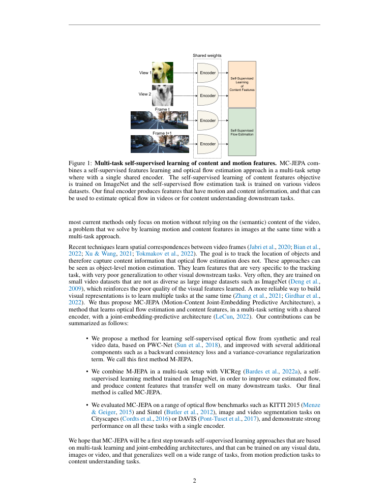
原论文 Figure 1 · PDF 第 2 页
图表说明：这是锁定版本原始 PDF 页级 PNG，保留原文标题、坐标、表头、脚注和视觉语境；具体对象和读图观察来自该论文的 figure-table ledger。
进一步分析：读者应把它与上方完整论文机制放在同一协议条件下理解；它支持论文中登记的现象，不自动支持跨数据集、跨模型或跨版本的因果结论。
证据边界：| Figure 1 | 2 | 主文 L127-L134 | ImageNet 内容 SSL 与视频光流共享 encoder 的多任务总览 | 只说明数据流和共享权重，不证明收益 |。资产类型为原始整页 PNG，未 OCR、重绘、裁色或作为当前任务 ImageGen 图计数；原始路径与哈希见 10_report/evidence-r19/original-paper-catalog.json。
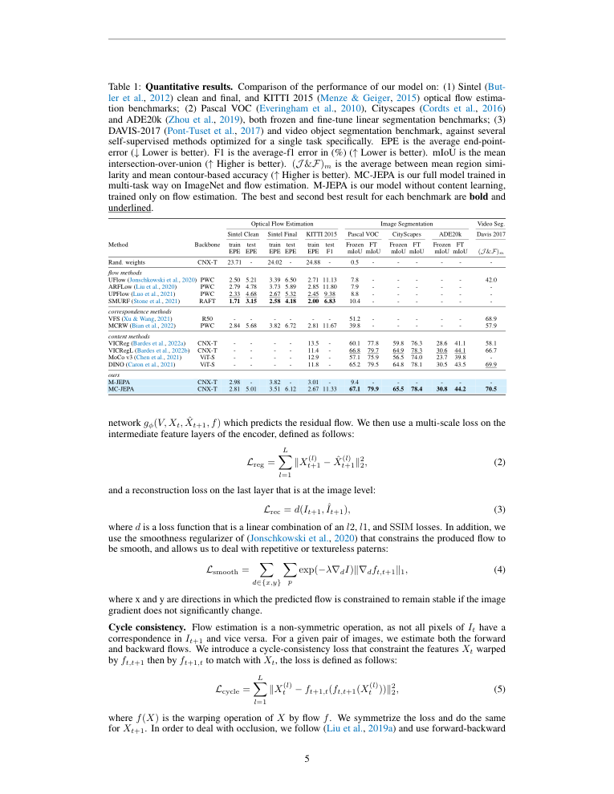
原论文 Table 1 · PDF 第 5 页
图表说明：这是锁定版本原始 PDF 页级 PNG，保留原文标题、坐标、表头、脚注和视觉语境；具体对象和读图观察来自该论文的 figure-table ledger。
进一步分析：读者应把它与上方完整论文机制放在同一协议条件下理解；它支持论文中登记的现象，不自动支持跨数据集、跨模型或跨版本的因果结论。
证据边界：| Table 1 | 5 | 主文 L186-L229；列头 L195-L200、MC-JEPA 行 L225 | MC-JEPA：Sintel clean train/test EPE 2.81/5.01，final train/test EPE 3.51/6.12；K15 train EPE 2.67、test F1 错误率 11.33%；Pascal VOC 冻结/微调 67.1/79.9，Cityscapes 65.5/78.4，ADE20k 30.8/44.2，DAVIS 70.5 | EPE/F1 错误率均越低越好；首个分割集是 Pascal VOC；ImageNet 是预训练集，不是这一列 |。资产类型为原始整页 PNG，未 OCR、重绘、裁色或作为当前任务 ImageGen 图计数；原始路径与哈希见 10_report/evidence-r19/original-paper-catalog.json。
代表论文精读：2403.00504
IWM（2403.00504v1）完整精读
1. 身份、术语与第一遍定位
本文的论文原名为 Learning and Leveraging World Models in Visual Representation Learning，方法名为 Image World Models（IWM）。这里的 world model 不是视频动力学模型、机器人动作条件模型或 MDP 模型；它的“action”是图像增强/腐蚀参数，任务是在 latent space 中预测全局光度变换（brightness、contrast、saturation、hue）以及灰度、模糊、solarization 的影响/逆变换。论文锁定 arXiv 2403.00504v1，PDF 23 页（PDF p.1，paper.tex L2128-L2197）。作者为 Quentin Garrido、Mahmoud Assran、Nicolas Ballas、Adrien Bardes、Laurent Najman、Yann LeCun；首页机构列出 FAIR at Meta、Univ Gustave Eiffel/CNRS/LIGM、INRIA、NYU Courant/CDS。
一句话定位。 IWM 把 I-JEPA 的 latent inpainting 扩展为“给定增强参数的 latent transformation”，并研究如何保留/微调 predictor 作为下游 world model head；它的关键结论是条件、预测难度和 predictor 容量共同决定不变/等变表征及不同评测协议的适配。
| 5C | 阅读判断 |
|---|---|
| Category | 图像表征方法与分析论文。 |
| Context | 大部分 SSL 只保留 encoder、丢弃 predictor；不同 SSL 评测差异可能反映抽象程度而非总表征质量。 |
| Correctness | 用 MRR 检验 latent transformation，配条件/强度/深度消融，再用 predictor finetuning 检验复用；“等变”是作者的宽泛用语，不保证全部变换构成群。 |
| Contributions | 图像 world model 训练 recipe；保留 predictor 以低微调成本解下游；控制表征抽象程度、讨论 invariance 的两种来源。 |
| Clarity | 图 1/2/S1 和表 1-8/S1-S6 把任务/协议拆得清楚；MRR 检索指标、弱/强 predictor 与下游头的混合解释仍需边界。 |
2. 论文论证地图
引言（PDF pp.1-3，TeX L2128-L2197）把图像 transformations 视为广义 actions，由此把 autoencoder、JEA、JEPA 放在同一 world-model 框架。Figure 1 显示对图像在 latent space 改 brightness/contrast/saturation/hue 后，用 256 图像 bank 的最近邻可视化；这不是 image generation。Figure 2 把是否具有 world model、是否条件化作为架构分类轴。作者特别强调大多数 SSL predictor 在预训练后丢弃，而 RL 会复用 world model 做 planning；本文研究的是能否在视觉分类/分割复用 predictor，不是在图像实验中验证 RL planning。
方法（p.4，L2213-L2242）定义 source、target、action、mask 和 L2 loss。第 4 节（pp.4-5，L2243-L2304）用 MRR 检验 world model，并消融 conditioning/transform complexity/predictor capacity。第 5 节（pp.6-8，L2306-L2466）讨论 predictor finetuning、效率、分类/分割、多任务 tuning。第 6 节（pp.8-9，L2468-L2522）把 MRR 与 linear/attentive/predictor-finetuning 关联，并给抽象程度光谱。附录 A-I（pp.13-23）补齐完整 pretraining/evaluation、完整表格、增强、scaling、OOD、invariance marginalization 与所有定性检索图。
3. 方法闭读
3.1 图像任务、源与目标
target y 从图像做 crop、horizontal flip、color jitter，但不做破坏性增强，以保留尽可能多的信息；source x 则在相同几何 crop 上进一步 color jitter、grayscale、blur、solarization，再按 I-JEPA mask union of 4 rectangles 删除 patch（PDF p.4，TeX L2213-L2238）。a_{x→y} 编码从 x 到 y 的逆变换信息：颜色抖动差和每种 destructive augmentation 是否施加。在线 encoder 产生 z_x=f_θ(x)，EMA encoder 产生 z_y=f_θ^EMA(y)；predictor 接收 z_x、a、mask 位置 m_a，预测 masked target latents。损失是 masked positions 的平方 L2 和（p.4，L2233-L2237）：
L(x,y)=Σ_{i∈M_x^C} ||p_φ(f_θ(x),a_{x→y},m_a)_i−f_θ^EMA(y)_i||²。
这里“capable world model”指 predictor 能在 latent space 应用变换；作者称其 equivariant，称做不到的 predictor invariant。脚注明确承认不是所有变换都构成 group，因此不能把本文 equivarance 当成严格群表示定理。灰度的逆变换尤其不可逆：颜色已丢失，单一 predictor 可能预测常见颜色而非原色，这正是 Figure 1/S5-S11 仍有误差的原因。
3.2 条件方式、MRR 与容量
MRR（PDF pp.4-5，L2245-L2301）在 256 个 augmented target bank 中，把 latent prediction 与所有 target 计算距离，取真 target rank 的倒数后平均；MRR 接近 1 说明 predictor 能把增强参数落实到 latent output，但它只度量 bank 内检索。Table 1：无条件 0.00、sequence condition 0.82、feature condition 0.79；两种条件都有效，实际选 feature，因为下游更好。sequence condition 给每个变换 token 独立线性层以打破 transformer 的 token permutation ambiguity；feature condition 把 action 参数附在 mask token 维度，再用三层全连接映回 d（附录 A p.13/L816-L821）。
Table 2（p.5）将 I-JEPA、IWM(12,384)、IWM(18,384) 的能力与增强复杂度并排：jitter 0/0.11/0.25，jitter+destructive 0/0.09/0.79，strong jitter 0/0.81/0.85。复杂任务需要足够容量，弱任务会让 predictor 没学到可复用变换。作者说 12 层在 5 种色彩场景中只有 1 种等变，18 层有 4 种；这为“容量足够才让 encoder 保留细节”提供经验支持，但并不证明深度单调越大越好。
3.3 训练与评测协议
附录 A（PDF pp.13-15，TeX L2546-L2622）给出所有 IWM 的 ViT-B/16、ImageNet 300 epoch、AdamW LR=1e-3、40 epoch warmup、cosine LR/WD，scheduler 按 iteration scale=1.25 延长后提前停止。target/source 使用 crop scale 0.3-1 与 flip=0.5；target jitter p=0.8，brightness/contrast 0.4、hue 0.1、sat 0.2；source 同时加入 blur/gray/solarization，并 union 4 masks（area 0.15-0.2，aspect 0.75-1.5）。EMA 是当前训练的防坍塌设计，不能推导一般 guarantee。
linear probe 是 average pooling 后线性层，90 epoch、LARS、batch 16,384；attentive head 是新增 query 的 cross-attention，90 epoch、AdamW、batch 1024，source-style augmentation 去 mask。encoder finetuning 为 100 epoch、RandAugment/CutMix/MixUp/random erase、layerwise LR decay。predictor finetuning 冻结 teacher encoder，预测完整 untransformed target（null action），在 predictor 输出上加 attentive head；pretrained predictor 学习率除 10，random predictor 与 head 同 LR。end-to-end tuning 再打开 encoder。语义分割使用 UperNet/ADE20k、最后四层拼接、160K iterations 和 LR sweep；因此各协议改变的不只是“是否用 predictor”，也包括优化器和头结构。
4. 下游复用与证据闭读
Table 3（PDF p.6）先检验 predictor fine-tuning 的输入：teacher、null latents、full-image prediction 最稳妥；只预测一个 token 从 83.3 降到 82.8，计算更少但损失约半点。Table 4（p.7）主比较：MAE pretrained predictor 比 random head 只增 0.1-0.3，I-JEPA +0.9，IWMInv +0.8，IWMEqui18,384 +1.8（83.3 vs random 81.5）；end-to-end IWMEqui 达 84.4。支持“只有能力强的 world model 带来可复用信息”，而非所有 SSL decoder 都有通用价值。
Table 5（p.7）把最优 protocol 聚合：IWMEqui frozen encoder+predictor 83.3、any protocol 84.4；IWMInv frozen 81.3、any 83.3；传统 iBOT 84.0、MAE 83.6 等虽训练更久，仍构成强对照。Figure 3 的 efficiency 横轴是 number of finetuned parameters（以 encoder block 数表示）；predictor finetuning 用少参数达到相同或更好性能，但推理保留 predictor，不能把微调参数节省误说成整个部署成本降低。
Table 6（p.7）ADE20k：IWMEqui encoder 44.2、predictor 46.8、end-to-end 47.0；IWMInv 45.6/45.7/46.5；I-JEPA 44.2/45.4/45.1。这说明 richer equivariant representation 可由复杂 head 释放，linear encoder 分数低不必然表征弱。Table 7（p.8）multi-task predictor tuning 在 ImageNet/iNat/SUN/Places 单任务平均 73.4、多任务 73.5；SUN397 +2.6，但另外三项略降。该实验的公平口径是“全部 single task 训练总成本等于 multi task”，而非每个 task 成本都不变。
Table 8（p.8）说明 abstraction：IWMInv linear/attentive 74.5/77.0；IWMEqui 67.5/75.1；MAE linear 60.2、attentive 73.5。Figure 4 的 MRR 与 linear 负相关约 -0.85、attentive -0.37、predictor tuning 正相关 0.93；高 MRR 的“更多信息保留”需要更复杂头读取。Figure 5 给 MIM→JEPA→contrastive 抽象光谱，但它是解释图，不应当作精确排序或跨域定律。
5. 附录完整闭读与批判
Table S1（p.15）补全部 finetuning；Table S2（p.16）揭示增强深度交互：18 层 strong jitter 的 MRR高，linear 可能跌至 34.3，表明高 MRR 本身不是下游好表征充分条件。Table S3（pp.16-17）验证 teacher/null/full prediction 的小幅收益；Table S4（p.17）ViT-L + IWMEqui36,512 的 predictor/end-to-end 85.0/85.4，作者指出 predictor/encoder 参数比约 0.3 较合适且宽度放大会不稳。Table S5（p.17）OOD attentive iNat/SUN/Places 上 IWMEqui 54.2/71.7/60.5，高于 IWMInv 51.6/71.0/59.4。
Figure S3（p.18）相似矩阵展示 16 augmentations 下 Inv 变化较少、Equi 变化更多；这支持 augmentation 信息保留，但不是完整互信息估计。附录 H（pp.18-19）区分两种 invariance：消除变换信息与预测 clean representation。用 predictor 对 256/128 augmentation marginalization 能检索到 clean image（Figure S4），但 Table S6 linear 64.5/64.3/64.6/64.6/64.4 没有增益，额外计算可达约 64 倍。这一失败结果非常重要：invariant 不是自动等于好 downstream 表征。Figure S5-S8（pp.20-21）随机检索，S9-S11（pp.22-23）逐项 brightness/contrast/saturation/hue 网格检索；均有灰度逆变换和单项参数精细预测的误差，不能把 nearest-neighbor 图片写成真实生成。
强证据与局限。 论文最强的是条件/强度/容量三个因子与 MRR-评测协议关系的完整消融，以及复用 pretrained predictor 对 random predictor 的独立控制。局限是 MRR 来自人工增强 bank，未测自然时间/动作因果；“equivariance”有术语松弛；最优超参数逐方法调优，对计算成本与公平性有影响；表格缺统一误差条；image-only 的判别任务不能验证 planning 能力。
6. 对当前研究的迁移与结论
可以迁移的实验方法是：先定义 transformation/action 的语义，再把 condition、预测难度、predictor capacity 分开；同时报告简单 probe 与复杂 head 的效果，避免以 linear 分数把“抽象”和“信息丰富”混为质量。可以直接复用的论证是“保留 predictor 可减小每个 downstream finetuning 成本”，但需把 inference 参数/latency 另算。不可直接迁移为机器人 world model 的是 grayscale/color-jitter 的 action、256 bank MRR 和 ImageNet 评测；机器人需要真实动作条件、时序 rollout、误差累积和控制闭环。
本单元完成原名/任务身份、正文、附录和 16 张图/14 张表的闭读；没有运行目标代码，也没有把代码行为或未读外部论文作为事实。未决问题是 predictor 的可复用性是否来自 transformation learning 本身、怎样在长时视频上定义相同 MRR、是否能自动选择抽象度，以及 natural-world actions 下不可逆变换应如何表示不确定性。
因此，MRR、linear、attentive 和 predictor tuning 的证据必须分列保存。
7. 逐层解释 IWM 的输入、条件和预测
IWM 的一条训练样本可以写成 ((x,a,x_a))：(x) 是 clean image，(a) 是一组增强参数，(x_a=T_a(x)) 是变换后图像。encoder 分别产生 (z=f(x)) 与 (z_a=f(x_a))，predictor 读取 (z_a) 和条件 (a)，输出 (hat z)，目标是靠近 clean representation (z) 或与变换关系一致的表示。IWMInv 与 IWMEqui 的区别不是图像是否变换，而是表示是否消除或保留 (a) 的信息。复现时必须记录条件进入 predictor 的位置，不能只保存两张图像。
增强参数可以是亮度、对比度、饱和度、色调或组合。若参数空间有 (b) 个维度、每维取 (r) 个值，完整 bank 大小为 (r^b)；增加一个增强维度会乘法增加检索和 marginalization 成本。附录中 64 倍计算并非抽象常数，而是由多个增强组合与 predictor 调用累积而来。随机 bank、逐项网格和灰度逆变换测试了不同方向，不能把一类结果代替另一类。
8. MRR 与下游 probe 的差异
MRR 只关心正确 clean 图像在候选 bank 的排名；一个表示可能保留大量增强细节，使检索非常容易，却让线性分类边界弯曲。相反，invariant 表示可能抹掉颜色和亮度而改善类别线性分离，却无法区分增强条件。Table S2、Table S6 和 Figure 4 的组合证据说明“更多信息”不是简单的质量尺度。attentive/predictor head 可以重新读取被线性头忽略的因素，因此报告 head 容量是公平比较的一部分。
9. 教学性的增强和参数例子
若亮度参数取 ([-0.2,0,0.2])，对比度取 ([0.8,1.0,1.2])，bank 有 9 个版本。正确版本 rank 为 1、2、1、3，则四个样本的 MRR 为 ((1+1/2+1+1/3)/4=0.7083)。如果只做亮度边际化，调用 3 次 predictor；做亮度和对比度联合边际化则调用 9 次。这个简单例子解释为什么“边际化得到 clean image”可能昂贵，也说明 MRR 受候选 bank 设计影响。
线性 probe 若输入 (d=768) 的 embedding、类别数 (C=1000)，分类头约有 (768000+1000) 个参数；predictor tuning 还会增加条件网络。比较 IWMInv 和 IWMEqui 时应记录 encoder、predictor、head 的可训练参数，不能把 predictor 节省写成部署内存节省。Figure 3 的 efficiency 横轴是 finetuned parameter count，并非全部推理 FLOPs。
10. 术语、任务与迁移边界
论文中的 equivariance 允许表示随增强条件系统性变化，但它不自动等同于几何群严格等变，也没有证明对自然动作或物理变换都成立。IWM 的 action 是颜色/灰度等图像变换参数，不是机器人动作；MRR 是人工增强 bank 的检索指标，不是世界状态预测准确率。迁移到视频或机器人需要重新定义状态、动作、时间顺序和不可逆变换，并测试误差积累与闭环行为。
最终复现合同应保存 clean/augmented 配对、增强参数、bank 大小、MRR 排名、linear/attentive/predictor head、冻结策略和推理成本。本文未运行目标代码，代码级 marginalization、batch 维度、loss reduction 和 predictor 输入仍需 fixed snapshot 核对。
11. 从论文数字回到实验协议
IWMEqui 与 IWMInv 的比较应把 encoder 表征、predictor 表征和下游 head 分成三列。若只报 attentive probe，可能把 head 的非线性读取能力误计入 encoder；若只报 linear，又可能低估保留变换信息的表征。MRR 还受增强 bank 的候选密度、参数范围和距离函数影响，不能跨论文直接比较一个小数点后的排名。Table S6 的 marginalization 失败说明增加候选数有成本而未必改善 downstream，因此它是重要的负结果。
对于未来视频或机器人方向，建议把 (a) 从颜色变换替换为动作、相机运动或环境扰动，并保留 clean/conditioned target 的明确配对。需要新增长时预测、不可逆动作、遮挡和闭环控制指标；在这些证据出现之前，IWM 只能支持“条件表征学习”结论，不能被命名为已验证 world model。
12. 从论文数字回到实验协议
给定 clean 图像、变换参数和变换图像，应先确认两路 encoder 输入来自同一个样本，再确认 predictor 的条件是增强参数而不是目标图像的隐含索引。随后比较预测向量与 clean 向量的距离，并把检索 bank 的 rank、linear head 的预测和 predictor tuning 的预测分开记录。若把目标 clean 图像送进 predictor，MRR 会虚高；若把增强参数随机打乱，表征可能看似稳定但失去 equivariant 语义。
条件强度也要单独控制。弱亮度变换可能只要求局部颜色修正，强 hue/contrast 变换则要求模型保留更复杂的结构；把不同强度混在同一平均 MRR 中会掩盖失败区间。附录的逐项网格图正是为了显示这些边界，而不是证明一个统一的增强不变性。最终报告应把 MRR、linear、attentive、predictor tuning 和 end-to-end 分列。
还应检查增强参数的取值范围是否改变样本难度：窄范围可能让 nearest-neighbor 很容易，宽范围可能产生不可逆颜色丢失。只有在 bank、距离函数和参数范围都固定后，不同模型的 MRR 才有可比性。
13. 不变、等变和抽象度的区分
不变表示要求变换前后向量接近，等变表示允许向量随变换参数有规律地变化。两者都可能有用：类别识别常希望忽略亮度，增强恢复或动作预测则需要保留亮度/方向条件。IWMEqui 的优势不能简单描述成“保留更多信息所以更好”，因为信息是否可读取还取决于 predictor 和下游 head。Table S2 的强 jitter 结果正是提醒：MRR 高、linear 低并不矛盾。
如果训练时把所有增强都压到一个不变点，模型可能失去恢复变换的线索；如果完全记住增强参数，分类器可能被背景颜色捷径影响。合理的实验应按增强种类分别计算 MRR，并在 OOD iNat、SUN、Places 等数据上检查 head 是否过拟合。论文给出的 OOD 结果提供方向性证据，但不是对自然分布移位的完整理论保证。
14. 计算与部署审计
预测器保留会增加推理参数，即使 downstream finetuning 参数减少；marginalization 会增加 forward 次数，即使单次 predictor 很小。报告 efficiency 时，应同时列 trainable parameters、total parameters、每样本 forward 次数、显存和 wall-clock。Figure 3 的横轴主要显示可微调参数，不能直接等同于部署延迟。
一个可复查的部署表应包含 bank 大小、增强组合数、是否缓存 clean embedding、距离计算复杂度和 batch size。若 bank 从 16 增到 256，候选比较成本至少线性增加；若再做多增强平均，成本可能乘法增长。附录把额外计算可达约 64 倍写成失败边界，不能在摘要中只保留 MRR 的小幅变化。
IWM 最终能支持的是“条件增强预测帮助研究表征抽象度”，不能由 image-only MRR 直接声称具备时序规划、动作预测或控制能力。任何此类扩展都需要新目标、新 source 和新的闭环评估。
如果读者只需要一个最小实验，可以固定一个 encoder、两种增强强度和一个线性 probe，同时报告 MRR 与分类准确率；若两者方向相反，应优先分析表征抽象度和 head 容量，而不是选择对自己有利的指标。这个最小实验不能替代论文全套结果，但能防止把 augmentation retrieval 当作普适表征质量。
更完整的实验还要把增强强度分箱，分别记录弱、中、强变换的检索排名；把自然 OOD 数据与增强 bank 分开；把 predictor 的推理成本和 encoder 的训练成本分开。这样才能判断 IWM 的收益来自条件预测本身，还是来自候选库和评测头的便利。
这也解释了为什么附录中的检索图只能作为辅助证据，正式结论仍需回到表格的任务协议。
如果表格协议没有固定，任何跨模型的 MRR 差异都只能算线索，不能算因果证据。
14. 从图像增强到真实动作的缺口
颜色抖动可逆、局部、没有长期记忆；真实动作会改变场景、产生遮挡并影响后续观测。图像增强的 predictor 可以在单张图像上学习条件关系，但不能因此预测行动后的新状态。迁移前需要加入时间窗口、动作执行结果和多步目标，并测量误差随 horizon 的增长。否则最安全的表述仍是“条件图像表征学习”，而不是“动作世界模型”。
还要把增强条件的可逆性和真实动作的不确定性分开，报告条件错误时的预测退化和候选检索稳定性。
这项区分是 IWM 不被误读成控制世界模型的最后边界。
它也决定了后续研究需要新的时序证据。
当前 source 不提供这些时序证据。
因此不能把静态增强实验写成动态预测证明。
这条边界需要在摘要和结论中重复保留。
本论文没有给出长期状态滚动、动作闭环或真实机器人部署，因此这些方向只能作为后续研究问题，不能从现有表格补出结论。
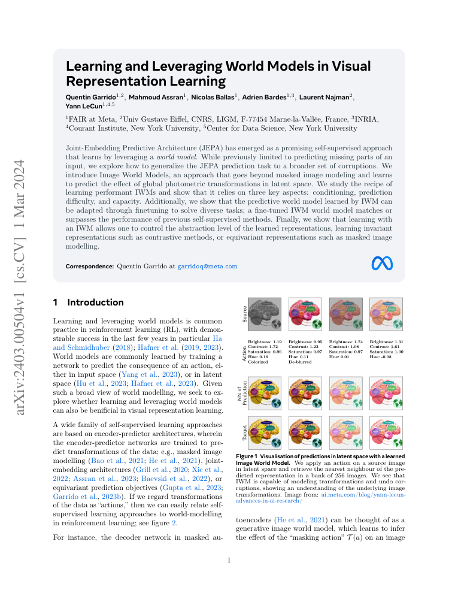
原论文 Figure 1 · PDF 第 1 页
图表说明：这是锁定版本原始 PDF 页级 PNG，保留原文标题、坐标、表头、脚注和视觉语境；具体对象和读图观察来自该论文的 figure-table ledger。
进一步分析：读者应把它与上方完整论文机制放在同一协议条件下理解；它支持论文中登记的现象，不自动支持跨数据集、跨模型或跨版本的因果结论。
证据边界：| Figure 1 | 1 | 2141-2149 | 256-bank latent transformation 检索示例 | 检索不是生成 |。资产类型为原始整页 PNG，未 OCR、重绘、裁色或作为当前任务 ImageGen 图计数；原始路径与哈希见 10_report/evidence-r19/original-paper-catalog.json。
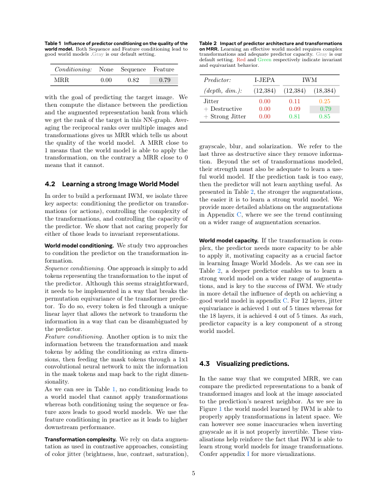
原论文 Table 1 · PDF 第 5 页
图表说明：这是锁定版本原始 PDF 页级 PNG，保留原文标题、坐标、表头、脚注和视觉语境；具体对象和读图观察来自该论文的 figure-table ledger。
进一步分析：读者应把它与上方完整论文机制放在同一协议条件下理解；它支持论文中登记的现象，不自动支持跨数据集、跨模型或跨版本的因果结论。
证据边界：| Table 1 | 5 | 2260-2271 | None/Sequence/Feature MRR 0/.82/.79 | condition 重要 |。资产类型为原始整页 PNG，未 OCR、重绘、裁色或作为当前任务 ImageGen 图计数；原始路径与哈希见 10_report/evidence-r19/original-paper-catalog.json。
代表论文精读：2404.16432
Point-JEPA 精读：Point Cloud 上的 Joint-Embedding Predictive Architecture
1. 身份、问题与贡献
本文的准确标题是 Point-JEPA: A Joint Embedding Predictive Architecture for Self-Supervised Learning on Point Cloud，对应 2404.16432v6，作者为 Ayumu Saito、Prachi Kudeshia、Jiju Poovvancheri。PDF 共 13 页，正文和补充材料均在本地源包中。论文研究的是无序点云的自监督表征学习，不是点云重建器，也不是视频预测或机器人控制模型。作者把 JEPA 的“由上下文表示预测目标表示”迁移到点云，但首先要解决一个点云特有的离散化问题：点的输入顺序没有语义，因而相邻的输入索引不保证空间相邻；如果直接按索引切连续块，目标块和上下文块可能在几何上散乱，空间遮挡的归纳偏置就会失效（PDF pp.1–3；sec/0_abstract.tex:L7-L15、sec/1_intro.tex:L12-L36）。
论文的两个主要贡献是：第一，提出 Point-JEPA，在嵌入空间而不是输入点坐标空间中做预测，因此避免生成式方法的逐点重建和额外模态；第二，提出贪心 sequencer，把 FPS/KNN 形成的点云 patch embedding 按中心点空间距离排列，使索引上的连续块在大多数情况下也是空间连续块，并允许目标与上下文选择共享邻近性计算（PDF pp.1–4；sec/1_intro.tex:L31-L36、sec/3_method.tex:L1-L7,L49-L59）。论文声称在 ModelNet40 线性评估、四种 few-shot 设置和若干端到端任务上达到有竞争力或领先的结果，同时预训练更快；这些“state-of-the-art”判断应限定在表中列出的数据集、骨干、训练协议和版本，不应外推为所有点云任务的普遍结论。
2. 从点云到 patch embedding
输入点云记为 ，共有 (n) 个点。方法先用 farthest point sampling 选出 (c) 个中心点，再对每个中心用 KNN 选 (k) 个邻居形成 patch。每个 patch 的点坐标减去其中心坐标，从而把局部几何和 patch 的全局位置分开。局部 patch 经过 mini-PointNet：共享 MLP 把每个点映射到特征向量，max pooling 得到聚合特征，再把聚合特征拼回每个点的特征；第二个共享 MLP 和再次 max pooling 产生 patch embedding 集合 (T)。共享 MLP 加对称 max pooling 保证同一 patch 内的输入点置换不会改变 embedding（PDF p.3；sec/3_method.tex:L8-L18）。
这一设计有两个作用。其一，KNN 只负责局部邻域，减去中心坐标避免网络把 patch 平移位置和局部形状混在同一输入里；中心坐标稍后还会作为目标位置编码的一部分进入 predictor。其二，Point-JEPA 在 patch embedding 上执行 JEPA，而不是分别对 context 和 target 的原始 patch 重跑 PointNet。论文明确说这样可以在 context encoder 与 target encoder 之间共享点编码器，降低重复计算（PDF p.3；sec/3_method.tex:L1-L2）。这也意味着“目标遮挡”发生在已通过 Transformer 的语义 embedding 上，而“上下文遮挡”发生在送入 context encoder 的 patch embedding 上；两个遮挡位置不同，不能简化成普通的同一层 mask。
3. Greedy sequencer：把无序集合变成可用的局部序列
贪心 sequencer 的输入是 patch embedding 集合 (T=\{t_1,\ldots,t_r\})，输出是排序后的 (T')。算法先计算每个中心点三坐标之和，选取坐标和最小的中心作为起点；随后反复从剩余中心中选出与上一个中心欧氏距离最近者，将其追加到序列并从候选集合删除，直到所有中心都被访问（PDF p.4，Algorithm 1；sec/3_method.tex:L19-L47）。起点倾向于位于物体外缘，而不是由数据输入顺序决定；作者在补充说明中把这一点解释为比“最小输入索引”更稳定的起始规则（PDF p.11；sec/X_suppl.tex:L30-L43）。
该算法的保证是经验性的而非严格的空间曲线保证：连续索引通常空间相邻，但相邻元素之间可能仍存在间隙，论文明确承认这一点（PDF p.4；sec/3_method.tex:L49-L59）。因此它不是 Hilbert 或 z-order 那样的全局空间填充曲线，也没有证明任意数据分布下的邻域保持率。它的工程优势在于批内并行：点对距离可以一次前向计算，之后每个 batch 同时选择下一个最近中心。表 6 的训练时间显示，greedy(min coordinate) 与 greedy(min index) 都是 7.47 小时，而 z-order 为 8.30 小时、Hilbert 为 10.78 小时；这里的时间来自论文的 RTX 5500、500 epoch 实验，不能当作硬件无关的复杂度定理（PDF p.7；sec/4_experiments.tex:L236-L266）。
4. Target、context、predictor 与损失
4.1 两种不同层级的选择
排序后的 patch embedding 送入 target encoder (f_{\bar\theta})，得到 (y=\{y_1,\ldots,y_n\})，其中 (y_k=f_{\bar\theta}(t'_k))。方法随机选择 (M) 个可能重叠的连续 target block，第 (i) 个 block 的索引集合记为 (B_i)，目标表示为 (y(i)=\{y_j\}_{j\in B_i})。这里的关键不是“从原始点中抠出目标”，而是先编码整条序列，再在 Transformer 输出上选择 target；这样目标包含更高层语义（PDF p.4；sec/3_method.tex:L61-L70）。
context 的构造相反：先从 (T') 中选择一段空间连续的 patch embedding 子集 (hat T)，且显式排除已经对应到 target 的 patch；再把剩余可用 patch 送入 context encoder (f_\theta)，得到 (x=\{x_j\}_{j\in B_x})。这让 context encoder 面对缺失区域，不能通过直接看到目标 patch 走捷径。因为 sequencer 已把多数空间邻近 patch 放在相邻索引，连续块选择可用简单索引操作近似空间块，但作者没有声称其对所有点云都严格成立（PDF pp.4–5；sec/3_method.tex:L80-L84）。
4.2 Predictor 与位置条件
Predictor (p_\phi) 接收 context 表示 (x) 和目标位置的条件，输出
每个 (m_j) 由共享可学习 mask token 与目标中心点产生的 positional encoding 组成（PDF p.5；sec/3_method.tex:L86-L94）。因此 predictor 不是只根据一个全局 class token 猜目标；它还知道每个待预测 block 的空间中心。图 2 的右半部分把 patch embedding、greedy sequencer、context/target encoder、mask token 和多个 predictor 输出画在同一流程中；图 3 则用真实点云颜色显示 context 与多个 target block 的空间位置。
4.3 Smooth L1 目标
论文的损失为
其中 (D) 对每个 target block 汇总，逐 embedding 元素使用 Smooth L1。Smooth L1 相比纯平方误差对异常值更不敏感，作者沿用 Point2Vec 的选择（PDF p.5；sec/3_method.tex:L96-L105）。目标 encoder 的参数不是通过反向传播更新，而是由 context encoder 的指数移动平均更新：
主文给出 AdamW 和 cosine learning decay；补充材料给出学习率从 (10^{-5}) 在前 30 epoch 增到 (10^{-3})，随后衰减到 (10^{-6})，batch size 512，Smooth L1 的 β 为 2，EMA decay 从 0.995 逐步升到 1.0（PDF p.5、p.11；sec/3_method.tex:L107-L120、sec/X_suppl.tex:L20-L28）。
5. 训练设置与下游协议
预训练使用 ShapeNet 训练集的 41,952 个合成点云实例、55 个类别；输入每个物体 1,024 个点，采样 64 个中心，每个 patch 32 个点。context 和 target Transformer 均为深度 12、宽度 384、6 个 heads；predictor 使用宽度 192、深度 6、6 个 heads。实验硬件包含 NVIDIA RTX A5500 与 A100 SXM4；作者报告 RTX A5500 上约 7.5 小时完成预训练（PDF p.5；sec/4_experiments.tex:L35-L40）。这些数字构成结果可比性的必要条件，若换成不同点数、patch 数、骨干或 epoch，不能直接复述表中的准确率。
线性评估冻结 context encoder，取 Transformer 输出的 max pooling 和 mean pooling，再训练 SVM；ModelNet40 训练和测试均使用 1,024 个点。端到端分类用 context encoder 的 max/average pooled 输出接三层 MLP，并同时微调整个 context encoder 和分类头。ModelNet40 有 12,311 个实例、40 类；ScanObjectNN 有 15 类、每类 2,902 个真实扫描实例。ModelNet40 端到端使用 1,024 点、64 个中心、每 patch 32 点；ScanObjectNN 使用全部 2,048 点、128 个中心、每个中心 32 个邻居（PDF p.6；sec/4_experiments.tex:L76-L142）。
few-shot 任务在 ModelNet40 上使用 (m)-way、(n)-shot：随机取 (n) 个实例训练，另取每个支持类别 20 个实例评估；每个设置做 10 个独立 trial，并报告均值和标准差。part segmentation 使用 ShapeNetPart 的 16,881 个对象、16 类，取第 4、8、12 个 Transformer block 的 embedding 平均，经 mean/max pooling 形成全局特征，并用 PointNet++ feature propagation 将点级特征上采样，再拼接全局特征给共享 MLP（PDF p.7；sec/4_experiments.tex:L129-L142,L191-L224）。
6. 主结果与如何解释
6.1 线性与端到端分类
ModelNet40 线性 SVM 的 Point-JEPA 为 (93.7\pm0.2\%)，表中高于 Point-M2AE 的 92.9 和 CluRender 的 93.2；论文将其描述为比此前方法高 0.8 个百分点（PDF p.5；sec/4_experiments.tex:L4-L32,L80-L82）。端到端结果为 ModelNet40 1k 点带 voting (94.1\pm0.1)、不带 voting (93.8\pm0.2)；ScanObjectNN 2k 点的 OBJ-BG 为 (92.9\pm0.4)、OBJ-ONLY 为 (90.1\pm0.2)、PB_T50_RS 为 (86.6\pm0.3)。PointDiff 在 ScanObjectNN 的三列分别为 93.2、91.9、87.6，因此 Point-JEPA 在 OBJ-BG 上略低于 PointDiff，但比若干其他 SSL 方法高约 1 个百分点（PDF p.6；sec/4_experiments.tex:L43-L73,L166-L168）。
6.2 few-shot 与分割
四个 few-shot 设置分别为 5-way 10-shot (97.4\pm2.2)、5-way 20-shot (99.2\pm0.8)、10-way 10-shot (95.0\pm3.6)、10-way 20-shot (96.4\pm2.7)。论文指出最难的 10-way 10-shot 比当前比较方法高 1.1 个百分点；由于标准差不小，应把“领先”理解为十次 trial 的均值比较，而不是所有随机划分都严格领先（PDF p.6；sec/4_experiments.tex:L84-L132）。
ShapeNetPart 的 Point-JEPA 为类别平均 mIoU (83.9\pm0.1)、实例平均 mIoU (85.8\pm0.1)，低于 Point-M2AE 的 84.9/86.5 和 Point2Vec 的 84.6/86.3。作者把分类强、分割相对弱解释为表征更偏向全局特征而非局部细节，并指出更大点云的有效性受冗余区域影响，仍需研究（PDF p.7；sec/4_experiments.tex:L191-L227）。这是论文自我报告的局限，也提醒读者不能把线性分类优势外推成点级理解优势。
7. 消融：哪些因素真正改变表征
7.1 Mask 策略
单块随机 mask（目标比例 0.6、context 为 rest）得到 92.5，单块连续 mask 得到 92.3；多块连续目标、目标比例 0.15–0.2、频率 4、context 比例 0.4–0.75 得到 93.7。作者的解释是，小目标块、高频率和保留更多可用 context 更有利（PDF p.7；sec/4_experiments.tex:L144-L164,L230-L233）。这说明“遮挡更多”不是单调更好，target 数量、目标大小与 context 可见量之间存在耦合。
7.2 Sequencer 与起点
z-order 93.4、8.30 h；Hilbert 91.8、10.78 h；greedy(min index) 92.7、7.47 h；greedy(min coordinate) 93.7、7.47 h。论文把 min-coordinate 的收益归因于从物体外缘开始，以及贪心过程可以跨 batch 并行（PDF pp.7–8；sec/4_experiments.tex:L236-L266）。但是该表只测了一个数据集和一个 500 epoch 协议；不能证明 min-coordinate 对所有点云密度、姿态和采样策略都最优。
7.3 Target block 频率、比例和 context 比例
主文的目标 block 频率消融为：频率 1/2/3/4/5/6 时准确率 93.0/93.5/93.4/93.7/93.4/93.2；最优点是 4，继续增加频率反而下降（PDF p.8；sec/4_experiments.tex:L277-L306）。补充材料进一步改变目标比例：0.1–0.2 为 93.0，0.15–0.2 为 93.3，0.2–0.25 为 93.2，0.25–0.3 为 92.4，0.3–0.35 为 90.5，0.35–0.4 为 84.6；目标过大时 context 可用 embedding 变少，性能明显恶化（PDF p.11；sec/X_suppl.tex:L46-L78）。
context 比例的补充表显示，0.4–0.75 得到 93.7，0.45–1.0 得到 93.6，0.65–1.0 得到 93.4，0.75–1.0 得到 92.8，0.85–1.0 得到 93.1。作者据此认为较宽的上下界和略受约束的上界有利于让每个训练 iteration 看到不同数量的 context（PDF p.11–12；sec/X_suppl.tex:L82-L106,L139-L143）。这是固定训练方案下的曲线，不是关于随机遮挡分布的普适定理。
7.4 Predictor 深度
predictor 深度 2、3、4、5、6 对应 ModelNet40 线性准确率 92.5、92.8、93.2、93.4、93.7。论文据此报告更深 predictor 在本设置下更有利（PDF p.13；sec/X_suppl.tex:L152-L182）。这里的结论只覆盖宽度 192、6 heads 和其余默认 mask 配置；深度增加带来的参数量和计算量并未在该表中单独控制。
8. 视觉证据与附录
图 1 把 ModelNet40 线性准确率和 RTX A5500 预训练时间放在一起，展示 Point-JEPA 的速度/准确率位置；图 2 是从 FPS/KNN patch、mini-PointNet 到 JEPA 的总架构；图 3 用三类物体示范 context 与 target 的空间块；图 4 是不在 ModelNet40 上微调的 context encoder pooled embedding 的 t-SNE；图 5 是 ModelNet40 与 ScanObjNN 的行归一化、列归一化混淆矩阵。图 5 中 ModelNet40 的错误集中于相似类别，如 flower pot/plant，ScanObjNN 则出现 table/desk、sofa/bed 等混淆（PDF pp.1,3–4,8,12–13；sec/1_intro.tex:L3-L10、sec/2_related_work.tex:L26-L33、sec/3_method.tex:L71-L78、sec/4_experiments.tex:L268-L275、sec/X_suppl.tex:L107-L138）。t-SNE 和混淆矩阵是定性支持，不能替代表格中的统计评估。
补充材料包括优化与 mask 细节、目标/上下文比例、predictor 深度和四个混淆矩阵。它还保留了论文中的一个实现边界：目标 block 是 Transformer 输出中连续的 embedding，context block 则从尚未被目标占用的 patch embedding 中选择；由于排除目标后可用索引可能断开，context 在几何上可能是多个空间连续子段的并集（PDF p.11；sec/X_suppl.tex:L30-L44）。这一点对复现很关键，不能把 context 简化为“目标外的一个完整连续区间”。
9. 结论、证据边界与可迁移启示
Point-JEPA 的核心是把点云集合的置换不变性转化为一个可操作的排序问题，再把排序后的局部序列交给 JEPA。mini-PointNet 处理 patch 内的置换不变性；greedy sequencer 处理 patch 之间的空间邻近；target encoder 在高语义 embedding 上生成目标；context encoder 在排除目标的局部 patch 上编码；predictor 用 mask token 和中心位置编码预测目标；Smooth L1 和 EMA teacher 完成训练闭环。这套设计把“空间块 mask”从图像网格迁移到了点云，但其空间连续性是经验近似而不是数学保证。
最可信的结论是：在 ShapeNet 预训练、ModelNet40/ScanObjectNN/ShapeNetPart 指定协议下，Point-JEPA 的线性和 few-shot 表现强，且作者报告的训练时间较短；多块小目标、四个 target blocks、min-coordinate greedy 起点和深 predictor 在这些实验中有效。最需要保留的限制是：分割表现不如若干专门方法；更大点云的冗余和扩展性没有解决；空间邻近排序可能有间隙；多数结果是单个预训练配方和有限数据集的比较。
本文未运行目标代码，以上数字和流程均来自 2404.16432v6 PDF、完整 TeX 以及页级渲染图。复现时仍需独立核对官方代码中的 patch sampling、批内 greedy 实现、随机 block 采样和 Smooth L1 的 beta；论文文字足以确定算法意图，但不能替代运行时实现检查。
10. 机制拆解：从输入集合到监督信号的完整契约
为了避免把 Point-JEPA 误读成普通 masked point modeling，可以把一次训练前向拆成九个有先后关系的步骤。第一步是读取一个点云对象，并明确它的点数、坐标系和是否已经做全局归一化；论文只在实验段落规定每个对象取 1,024 点，不能自动假设其他数据集也使用同一采样。第二步执行 FPS，产生固定数量的中心点；第三步对每个中心做 KNN，产生重叠或不重叠的局部 patch，具体重叠率会影响局部几何的冗余。第四步把每个 patch 减去自己的中心，再通过共享 MLP 和 max pooling 得到 patch embedding。此时 embedding 已经对 patch 内点的输入排列不敏感，但还没有按全局空间关系排序。
第五步对中心点做 greedy sequencer。排序的对象是 patch embedding 及其中心的对应关系，不能只排序坐标而忘记同步重排 embedding。排序后应保留一个从原 patch 到序列位置的索引映射，因为 target encoder 的输出位置、target block 的 mask 索引和 predictor 的中心位置编码都依赖这份映射。第六步让 target encoder 处理排序后的完整 embedding 序列，再在其输出上抽取 (M) 个连续 target block。第七步根据同一份 target 索引，从原始排序 patch 中排除对应 patch，再抽取 context patch 子集并交给 context encoder。若实现先从所有 patch 取 context，再事后删除 target，可能改变 context 的长度和块结构，导致论文中“避免直接看到目标”的约束没有真正实现。
第八步把 context 表示、共享 mask token 和目标中心 positional encoding 交给 predictor。一个 target block 内的每个位置都有自己的 mask token 条件，不能把所有目标折叠成一个无位置的向量。第九步将 predictor 输出与 target encoder 输出按 block 和 embedding 位置对齐，计算 Smooth L1 并对 (M) 个 block 平均；梯度只更新 context encoder 和 predictor，target encoder 使用 EMA。这个顺序解释了论文为什么把目标遮挡称为“高语义层级遮挡”，也解释了为什么 context 选择仍然作用于 patch embedding 层。对应依据分别是 PDF pp.4–5 和 sec/3_method.tex:L61-L120。
11. 容易发生的误读与检查点
第一种误读是把 greedy sequencer 当成严格的空间排序。它实际上是最近邻贪心路径，可能回到已经经过区域，也可能在稀疏点云中出现长跳跃；作者只报告多数连续元素具有空间邻近性。因此复现检查应统计相邻中心距离分布、最大跳跃和不同物体类别的分位数，而不是只打印排序后的索引。第二种误读是把 target 与 context 看成同一层的互补 mask。target 在 target Transformer 输出上选择，context 在输入 context encoder 的 patch embedding 上选择；两者的索引来源相关，却不是同一张布尔 mask。第三种误读是把四个 target block 当成四个必然互不重叠的块；补充材料明确允许 target blocks 可能重叠，因此总 target 数取决于随机起点、比例取整和重叠情况。
第四种误读是把“无输入空间重建”理解为无需任何空间位置。predictor 仍使用目标中心产生的位置编码，sequencer 也依赖中心坐标；被移除的是逐点坐标的生成式重建目标，不是几何位置本身。第五种误读是把 EMA target encoder 当作普通的第二个可训练网络。论文的更新式规定 context encoder 通过反向传播更新，target encoder 通过 τ 平滑跟随；若误把两者都放入 optimizer，训练目标就不再是论文描述的非对称结构。第六种误读是把表 6 的小时数直接当作算法复杂度。该表是 RTX 5500 上 500 epoch 的端到端时间，包含数据加载、Transformer、随机 mask 等因素，不能单独推出 greedy 方法的渐进复杂度优势。
第七种误读是把线性准确率和分割 mIoU 混成同一种表征质量指标。线性 SVM 主要考查全局可分性；ShapeNetPart 的 mIoU 还要求点级局部边界和上采样头，Point-JEPA 在前者强、后者相对弱正是作者讨论的限制。第八种误读是把 t-SNE 的簇间距离当成真实 embedding 距离。t-SNE 为可视化而改变局部和全局几何，图 4 只能支持“出现可辨识类别结构”的定性判断，不应从二维布局读出类别间的欧氏距离或线性 margin。
12. 复现时应保存的最小证据
一个可审计的复现至少应保存：输入点数、FPS 中心数、KNN 的 (k)、patch 归一化前后样例；每个 batch 的 greedy 起点、相邻中心距离和序列索引；每个 target block 的起点、长度、重叠数量；context 排除 target 后的可用索引；target/context encoder 的参数是否共享点编码器；predictor 的输入 token 数和中心位置编码；Smooth L1 的 beta、block 平均方式和 EMA 的 τ 日程；最后才是每个数据集的准确率、mIoU、均值、标准差和随机种子。若只保存最终准确率，就无法区分排序错误、mask 泄漏、损失归一化错误和评估头差异。
还应把主实验和消融分开登记。主实验固定 ShapeNet 预训练、ModelNet40/ScanObjNN/ShapeNetPart 的下游协议；mask 类型、target 比例、context 比例、block 频率、sequencer 起点和 predictor 深度属于消融变量。表 7 的频率行改变了 context ratio 配置，表 8 和表 9 则分别固定另一侧的参数，所以不能把三张表拼成一个独立因素的完整网格。对于每个数字，记录 PDF 页码和 TeX 行号，并标记“论文报告”或“本地复现”；这样即使本地结果不同，也能追溯差异究竟来自数据、实现还是随机性。
13. 对迁移到其他点云任务的谨慎推断
把 Point-JEPA 迁移到场景级点云时，首先会改变中心点的密度和邻域尺度。物体级 ShapeNet 中，64 个中心和 32 邻居可以覆盖相对紧凑的几何；场景级点云有地面、墙面和远近尺度混合，单一 KNN 半径可能让一个 patch 同时包含多个语义实体。此时仍可借用“patch 内置换不变、patch 间空间排序”的分工，但需要重新测量 greedy 路径的长跳跃和 context 块的语义纯度。论文结论允许未来研究 object detection 和 scene-level segmentation，却没有给出这些任务的实验结果，不能把这一段未来工作写成已验证性能。
同样，若用于动态点云或时序数据，中心点的第三维坐标不能直接替代时间条件。论文结论提到预测点云演化、运动预测和异常检测的可能性，但没有定义跨帧 target、时间位置编码、动作条件或评估协议。能够迁移的是 JEPA 的“上下文预测目标 embedding”思想和共享邻近计算；不能直接迁移的是当前静态物体上的 block 比例、四块频率、EMA 日程和 7.5 小时训练时间。所有这类扩展都需要新的 source、实现和实验闭环。
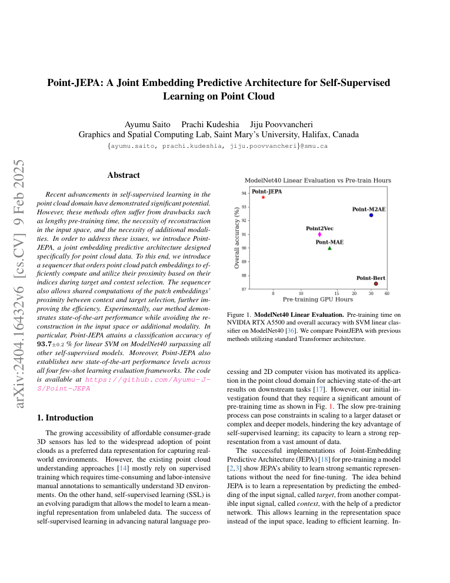
原论文 Figure 1 · PDF 第 1 页
图表说明：这是锁定版本原始 PDF 页级 PNG，保留原文标题、坐标、表头、脚注和视觉语境；具体对象和读图观察来自该论文的 figure-table ledger。
进一步分析：读者应把它与上方完整论文机制放在同一协议条件下理解；它支持论文中登记的现象，不自动支持跨数据集、跨模型或跨版本的因果结论。
证据边界：| Figure 1 | 1 | `sec/1_intro.tex:L3-L10` | ModelNet40 线性 SVM 准确率与 NVIDIA RTX A5500 预训练时间的对比；Point-JEPA 位于高准确率、较短训练时间区域。 | 只比较 caption 指定方法和硬件；不是所有 GPU 的时间定律。 |。资产类型为原始整页 PNG，未 OCR、重绘、裁色或作为当前任务 ImageGen 图计数；原始路径与哈希见 10_report/evidence-r19/original-paper-catalog.json。
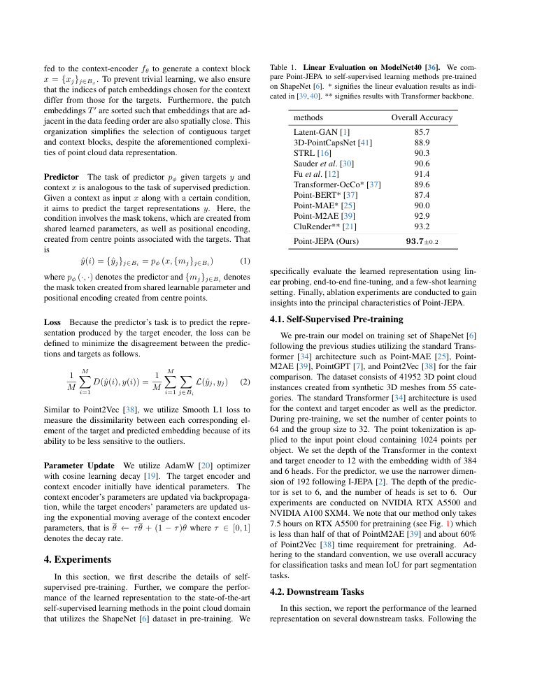
原论文 Table 1 · PDF 第 5 页
图表说明：这是锁定版本原始 PDF 页级 PNG，保留原文标题、坐标、表头、脚注和视觉语境；具体对象和读图观察来自该论文的 figure-table ledger。
进一步分析：读者应把它与上方完整论文机制放在同一协议条件下理解；它支持论文中登记的现象，不自动支持跨数据集、跨模型或跨版本的因果结论。
证据边界：| Table 1 | 5 | `sec/4_experiments.tex:L4-L32` | ShapeNet 预训练后的 ModelNet40 线性评估；Point-JEPA 为 93.7±0.2。 | SVM 线性协议，非端到端结果。 |。资产类型为原始整页 PNG，未 OCR、重绘、裁色或作为当前任务 ImageGen 图计数；原始路径与哈希见 10_report/evidence-r19/original-paper-catalog.json。
代表论文精读：2409.15803
3D-JEPA（2409.15803v1）三遍精读
Pass 1：地图与 5C
定位。 3D-JEPA: A Joint Embedding Predictive Architecture for 3D Self-Supervised Representation Learning，v1，7 页。论文把 I-JEPA 的 latent prediction 迁移到 point cloud，针对 invariance-based augmentation bias 和 generative pixel/token reconstruction 的细节负担，设计 multi-block sampling 与 context-aware decoder。
5C。 Category：3D 自监督表示学习方法。Context：点云标注贵，正负视图增强带偏置，MAE 类方法重构无关几何细节。Correctness：ScanObjectNN、ModelNet40、ShapeNetPart 和 ablations 相互支持，实验规模与单模态点云边界明确。Contributions：FPS/KNN tokenization、4 target blocks+大 context block、持续 cross-attention decoder、teacher latent cosine loss。Clarity：7 页短文但 TeX 和原页图表完整，部分术语/符号（context 输出记号）需结合图 3 读。
一句话定位。 本文解决“如何从一块点云上下文预测其余语义块，而不是重建每个点”的问题；价值在于把 3D 空间结构作为 JEPA 的采样和 target 设计核心。
3. 多块采样和点云编码
3D-JEPA 用 FPS/KNN 将点云组织成局部 blocks，从中采一个足够大的 context block 和多个 representative target blocks。context encoder 只处理上下文，target 由共享/教师路径编码；与把所有点随机删掉相比，多块策略保留空间覆盖并让 target 真正依赖跨块几何。论文以 4 个 target blocks 为典型设置，具体数量、半径和采样比例在消融中改变。
4. Context-aware decoder
方法的关键并非传统 decoder 独立重建 target，而是 context-aware decoder 持续接收 context 信息。decoder 在恢复目标 block 时反复 cross-attend context，使 encoder 被迫形成能支持目标语义的表示，而不是把 target 点的局部纹理记忆下来。训练中使用 target representation cosine loss；3D-JEPA 是 non-generative 的主表征目标，decoder 主要是训练接口，不能把它误写成完整点云生成器。
若 是 context 表示、 是 target 表示、，教学形式可写 。context-aware 机制使 在每一步都能查询 ，因此 context 不会只在输入端出现一次。这个结构解释了论文所说 semantic modeling：target 细节点不能独立重建，必须由 context 推断。
5. 数据、表格和计算
论文在 ScanObjectNN、ModelNet40、ShapeNetPart 等 3D 分类/分割协议上评估，并报告 PB_T50_RS 在 150 个预训练 epochs 达 88.65% accuracy 的代表性结果。Figure 2 对比 invariance、generative 和 3D-JEPA 范式，Figure 3 展示整体 encoder/decoder 信息流；表格同时列 fine-tuning accuracy、pretraining epochs 与单张 3090 GPU hours。少 epoch 不等于总计算更低，需同时读 GPU 时间和模型规模。
消融重点是 context/target block 数、采样策略、decoder 是否持续接收 context、cosine loss 和预训练周期。若 target block 太近，局部几何足以猜测；太远则预测难度过大。若 context 覆盖率过低，模型只学物体中心的 shortcut；若覆盖率过高，JEPA 目标变得容易。不同数据集的最优几何尺度不能直接合并。
6. 边界和迁移
点云的 FPS/KNN 邻域、遮挡和扫描稀疏度与视频 patch 不同；3D-JEPA 没有动作条件、长时 rollout 或机器人规划。context-aware decoder 不是通用防塌缩定理，也不能由 PB_T50_RS 单项数字推出所有点云任务优越。复现必须固定采样 seed、block 数、KNN k、点数、target cosine、decoder cross-attention 层、预训练 epochs、GPU 计时和 downstream head。目标代码未运行。
Pass 2：方法、公式与视觉
原始点云 P in R^{N×3} 先 FPS 取 M centers、KNN 得 M×K×3 patches，经轻量 PointNet 得 tokens X in R^{M×C}。multi-block sampling：target centers 用 FPS 选 A 个，scale .15-.20；每个 target 取相邻 tokens；context block scale .85-1.0，独立抽样后删除与 target 重叠 token。图 4（PDF p.3）显示每个 point cloud 产生四个彩色 target 与一个大 context，target 分散且语义各异。
encoder 将 context tokens 加位置编码映射 X_e(x)=Encoder(X(x),POS(x))。context-aware decoder 每层先对 encoded context+target mask tokens 做 self-attention，再用 context representation 作 key/value cross-attention；这比只在第一层拼接 context 能持续提供全局信息，减少 encoder 记忆 target 位置的捷径。图 5（p.4）实际显示 Q/K/V 路径和 residual FFN。
teacher f_T 看完整 X，得到每个 patch 特征 X_t；按 target index Ind(i) channel-wise concatenate，线性 FC 把 decoder prediction 与 teacher target 映到同维。Eq.3（PDF p.4）是多 target 的负 cosine：L_rec=-(1/A) sum_i cos(FC(X_m^d(i)),FC(X_t(i)))。不是像素 reconstruction，名为 reconstruction target 但监督对象是 teacher latent。
教学计算：若 A=4 target，四个预测/teacher cosine 为 .8,.9,.7,.6，则 L_rec=-(3.0/4)=-.75；优化负 cosine 等价最大化 latent 对齐。若 context 与 target 有 10% overlap，论文明确会先删除 overlap，否则预测任务被泄漏简化。
实验数值与边界
预训练 ShapeNet 约 50,000 CAD models、55 categories；12-layer Standard Transformer encoder、2-layer decoder、AdamW lr .001，NVIDIA 3090。下游：ScanObjectNN 三 split、ModelNet40 few-shot/standard、ShapeNetPart segmentation、synthetic EXP。
表 I（p.5）ScanObjectNN：3D-JEPA 150 epochs 在 PB-T50-RS 达 88.65%，相对 Transformer baseline 提升约 +31.43%（文中叙述为三 split 总体差）；表 II ModelNet40 10-shot/20-shot 3D-JEPA 97.6/98.2（5-way）与 94.3/96.3（10-way）；表 III ShapeNetPart 150 epoch mIoU category 84.73、instance 86.28，300 epoch 84.93/86.41。
表 IV（p.6）OBJ-ONLY sampling：random 91.91、block 91.57、multi-block 3 targets 93.35、4 targets 93.63；表 V context-aware decoder off/depth2=93.12，on depth0=92.77、depth2=93.63、depth4=93.29。视觉上表 IV/V 与 Fig.7 t-SNE 放在同页，支持 multi-block 与持续 decoder 的增益来自语义，而非单纯更深 decoder。
图表账本
| ID | 页 | 原页观察 |
|---|---|---|
| Fig.1 teaser | 1 | OBJ_BG accuracy vs GPU hours；3D-JEPA 星标约 94%，150 epochs，速度/精度兼顾。 |
| Fig.2 paradigm | 2 | invariance、generative、3D-JEPA 三路；后者 context→target latent。 |
| Fig.3 pipeline | 3 | token embedding→multi-block sampling→context encoder/teacher→decoder cross-attn→semantic cosine loss。 |
| Fig.4 sampling | 3 | 4 个 target blocks 与较大 context 的点云实例；target 颜色分散，context 覆盖主体。 |
| Fig.5 decoder | 4 | self-attention 后 cross-attention，context K/V 注入每层。 |
| Fig.6 parts | 6 | 16 ShapeNetPart 类别点云与部件颜色，定性显示分割可辨。 |
| Fig.7 t-SNE | 6 | pretrained 表征混杂，finetuned 后类别簇分离；伴随 decoder ablation。 |
| Tables I--III | 5 | ScanObjectNN/ModelNet40/ShapeNetPart 主结果。 |
| Tables IV--V | 6 | sampling 与 decoder 深度消融。 |
Pass 3：综合与边界
Paper Fact：方法不做 handcrafted augmentation，teacher 看完整 cloud，encoder 只看 context，decoder 每层 cross-attend context；Interpretation：context-aware decoder 让 encoder 不必记 target 位置/局部纹理，latent target 更偏语义。Unresolved：context scale、target 数量和 point density 跨数据集稳定性有限；只有 2D/3D object benchmarks，没有动态 3D world model；“first non-generative”是作者历史定位，不能由本文单独证明。
迁移点：必须把 target overlap removal、teacher 输入可见范围、decoder cross-attention 深度和 target block count 写进实验合同；不能把 L_rec 误写成像素重建，也不能用表 I 单一 split 宣称泛化。
来源锚点
00_sources/2409.15803/v1/tex_source/p-jepa.tex:74-345、tabs/*.tex、PDF pp.1--7、原页渲染 pdf_rendered/page-001..007.png；所有 figures/tables 均实际查看。
7. 3D 几何采样、decoder 和迁移边界
FPS 保证 context 覆盖，KNN 形成局部 block；只随机采点会让稀疏区域和物体边界概率不稳。应记录每块点数、FPS 起点、KNN k/半径、去重和 target/context 邻近关系。context-aware decoder 连续注入 context，要求根据全局条件恢复目标语义；若 ，教学目标可写 ，但 cosine 只约束方向。ScanObjectNN、ModelNet40、ShapeNetPart 的噪声和任务不同，PB_T50_RS 88.65% 属于 150 epochs 特定协议，需连同点数、微调和 GPU hours 报告。3D-JEPA 没有动作、时间或规划证据；迁移机器人必须另测多帧、动作条件、遮挡恢复和闭环成功率。本文未运行代码。 补充：3D-JEPA 的 context-aware decoder 需要防止 decoder 本身承担全部任务。若 decoder 容量远大于 encoder，它可以用 context 的低级邻域统计补全 target，encoder 不必编码全局语义；因此应做 decoder 宽度、cross-attention 层数和冻结 decoder 的消融。cosine target 也要检查向量范数、batch normalization 和 target stop-gradient，否则不同实现的 loss 数值不具有可比性。ScanObjectNN 的背景噪声与 ModelNet40 的干净 CAD 分布会改变多块采样的难度；ShapeNetPart 的部件标签还要求局部边界。论文的 88.65% 代表单一 PB_T50_RS 协议，不是所有 3D 分类的上界。将 3D block 直接类比视频 patch 会忽略点密度、旋转和遮挡的几何不变性。 复现清单：固定点云点数、FPS 初始点、KNN k/半径、context 覆盖率、target block 数、target 距离、是否允许 block 重叠、旋转/尺度/抖动增强、context encoder 与 target encoder 更新、decoder cross-attention 层数、cosine/L2 归一化、预训练 epoch、GPU 型号和下游 head。ScanObjectNN 的背景和遮挡要与 ModelNet40 分开统计；ShapeNetPart 需报告每个部件而非只报平均。应做 decoder capacity ablation，排除 decoder 记忆局部几何。若 target 块过近，模型可能复制邻域；若过远，预测可能退化为类别先验。3D-JEPA 的非生成主张只适用于 latent 目标，辅助 decoder 输出不构成真实点云生成。迁移到视频或机器人前，必须新增时间一致性、动作条件、跨视角和闭环控制实验，不能从 7 页点云论文直接推导规划能力。
9. 采样几何的深入审计
3D-JEPA 的 multi-block sampling 不是普通的随机裁剪。FPS 先在点云中选择覆盖性较好的中心，KNN 或半径邻域再产生局部 block；context block 应足够大，target blocks 应分布在不同位置。若所有 target 都靠近 context，预测只需复制局部几何；若 target 全在远端，context 可能只剩类别先验。应记录每个 block 的点数、中心距离、空间覆盖率、是否允许重叠、FPS 起点和 KNN 半径。
点云密度不均会改变采样概率：扫描表面密集区域更容易成为 target，稀疏背面和遮挡边界更容易遗漏。ScanObjectNN 的现实噪声、ModelNet40 的规则 CAD 和 ShapeNetPart 的部件标签对这一偏差反应不同。论文结果必须按数据集和任务解释，不能把 PB_T50_RS 的单项 accuracy 当成普遍上界。
10. Context-aware decoder 与 latent loss
decoder 持续接收 context，表示每个恢复步骤都能查询全局信息。若 decoder 容量太大，它可能记住局部统计并替 encoder 完成目标；因此需要 decoder 宽度、cross-attention 层数、冻结/微调和 target stop-gradient 消融。主目标是 target latent 的 cosine 对齐；若 ，教学形式为 。cosine 只约束方向，范数、归一化和 batch 统计必须单独记录。
辅助 decoder 并不使论文成为点云生成方法。它用于帮助 encoder 建立 context 到 target 的语义关系，输出点云可视化不等于拥有真实点生成能力。若实现改用 Chamfer distance 或直接重建所有 target 点，目标就从 JEPA latent prediction 变成生成式重建，不能与主实验直接比较。
11. 下游与效率边界
fine-tuning accuracy、线性 probe、部件分割和 GPU hours 是不同证据。PB_T50_RS 的 88.65% 需要连同 150 个预训练 epochs、点数、微调 head、GPU 型号和 batch 报告。预训练 epoch 少并不自动等于计算更少，FPS/KNN、decoder cross-attention 和点数都会影响 wall-clock。若只报告 accuracy，无法判断方法是在表示质量还是工程速度上占优。
12. 迁移与失败模式
context 覆盖率过高会让 target 太容易，过低会让 predictor 退化成类别先验；block 过小会丢局部部件关系，过大则降低 target 数量。旋转、尺度、抖动增强可能与下游方向/姿态任务冲突。3D-JEPA 没有时间、动作、长时 rollout 或闭环控制证据，不能直接支持机器人规划。迁移到视频或机器人必须新增跨视角一致性、动作条件、遮挡恢复、开放集和闭环成功率实验。本文未运行官方代码，所有表格仍是论文报告值。 点云也存在“可预测但无关”的背景问题：桌面、扫描支架和密集平面容易被 context 推断，但未必有助于物体类别或部件标签。应做背景移除、目标位置交换和遮挡补全实验，检查 encoder 是否依赖稳定背景。多块采样若始终从物体中心开始，也会隐藏边界部件失败。论文的 3D 结果应理解为指定采样和数据协议下的表示证据，不能外推为通用三维世界模型。 图表验收需要同时看 Fig.2 的三范式对比、Fig.3 的 context-aware decoder 连接、fine-tuning accuracy 表和 GPU hours 表。图示中 target block 是被预测的表示单元，不是必须逐点重建的输出。若表格把 pretraining epochs 与 GPU hours 分开，报告就不能只说“更少 epoch 更高效”。还应核对 PB_T50_RS 的 accuracy 是否对应同一输入点数、增强和分类 head，核对 ShapeNetPart 是否使用部件级 metric。3D-JEPA 的证据链是采样设计、latent cosine、下游读出和效率比较四部分，缺一部分都不能概括为全面领先。 为了验证 3D-JEPA 学到的是语义而非采样统计，可做点云干预。对同一物体随机重采样、删去背景、交换物体位置、改变密度和旋转姿态，再比较 context/target latent 的余弦变化与下游预测。若表示对旋转变化高度敏感，说明增强或 block 设计没有提供期望不变性；若对背景删去高度敏感，说明 decoder 或 encoder 依赖扫描环境。对 ShapeNetPart，还应把 target block 放在不同部件上，检查部件边界是否被预测。论文的 multi-block 采样为这些实验提供接口，但没有给出完整干预矩阵。
效率比较也要谨慎。FPS/KNN 的预处理时间、GPU memory、decoder cross-attention 和数据加载都可能被排除在“pretraining hours”外；因此应分别报告纯前向、完整训练和下游微调时间。若比较方法使用不同点数或不同增强，GPU hours 不能直接解释为算法效率。3D-JEPA 的论文贡献是以较少 epoch 得到有竞争力的表征，而不是保证每个硬件、每个点数和每个数据规模都更快。 综上，3D-JEPA 的 source-specific 价值在于把点云空间结构直接写进 context/target 采样，并用持续 context 查询的 decoder 训练语义预测；其证据边界仍是点云下游 benchmark，不包括视频世界模型、动作规划或真实机器人。复现时必须保留所有采样和效率字段，不能只复制 88.65% 这一结果。 还应把点云姿态、密度和背景干预纳入验收：同一物体旋转、删点、补点、删除扫描平面后，latent 与下游标签应分别统计。这样才能判断 context-aware decoder 学到的是物体语义、局部邻域，还是扫描环境统计。论文没有完成这些干预，所以它的结论必须限定在作者的点云数据和采样协议内。 点云的 target block 还可能跨越物体边界。若 block 内混合两个部件，cosine 目标会鼓励平均语义；若 block 太小，则只包含局部曲率。应按边界距离分层报告，并比较整物体、部件内部、部件边界三类 target。对于 ScanObjectNN 的背景与遮挡，建议提供背景保留和背景删除两套结果。这样才能识别方法是在学习形状、部件关系还是扫描场景。context-aware decoder 的连续 cross-attention 也要报告每层注意力是否集中于 context 中的同一局部，避免“语义建模”只是最近邻复制。 最终，3D-JEPA 的实验合同应同时保留点云采样、target 几何、decoder 容量、cosine 归一化、数据噪声、预训练时间和下游 split。若这些字段缺失，无法判断提升来自 JEPA 目标、空间覆盖还是数据处理。该论文的贡献是 3D 结构化 latent prediction，而不是点云生成或动作规划；任何后续世界模型结论都需要新的时间和动作证据。还应检查不同点数和不同扫描密度下的稳定性，防止模型只记住固定输入大小。对于部件分割，报告每个部件的 IoU 和边界错误；对于分类，报告背景替换与旋转干预；对于效率，报告预处理与训练总耗时。这样才能把“更少 epochs”与“真正更低成本”区分开。 对 3D-JEPA 的更严格验证还应做跨扫描器和跨密度实验。不同深度相机、激光扫描器和点云压缩会改变局部邻域；如果 FPS/KNN 参数固定在训练设备上，测试域中 block 的物理尺度会漂移。建议报告固定点数、随机点数、稀疏点云和带背景点云四种设置，并按类别、物体尺寸和遮挡程度分层。context-aware decoder 的 cross-attention 热图可以检查是否使用了远距离 context，避免把局部最近邻复制误认为全局语义。target cosine loss 还要配合线性 probe、全量微调和部件边界 IoU，分别衡量表示方向、任务适配和几何边界。 还要把这些设置与论文图表的页码、表行和 checkpoint 绑定，避免把不同点数、不同 decoder 或不同预训练轮数的数字拼成一个不存在的结果。 如果 decoder 训练使用 target 的原始点坐标，而主 encoder 只优化 cosine latent，二者的梯度路径必须在实现中明确隔离。否则辅助重建可能重新引入作者试图避免的细节记忆。报告中应分别列出 encoder loss、decoder loss、target 更新和下游微调，不能只给一个总 loss。 这一步能把辅助 decoder 的几何重建作用与 encoder 的 latent 语义作用分开，也能防止把一个下游 checkpoint 的收益错误归因给预训练目标。 只有完成这种逐项绑定，才能在不夸大结果的前提下把 3D-JEPA 迁移到新的点云或机器人数据集。 这些新增审计并非论文报告数字，而是保证后续复现不会把几何采样、辅助重建和下游协议混为一谈的必要检查。 还应保存每个 target block 的中心、半径、点数、边界距离和 decoder attention 统计，以便解释失败样本。若这些几何证据缺失，无法判断错误来自采样、表示或下游头。 这类记录比单独保存一个最终 accuracy 更能支持可复现审计和跨数据集比较。 这是本读本对 3D 结果的最终证据边界。 所有迁移结论都必须回到新的数据和动作证据。 不能由本论文单独推出。 后续工作还需要公开采样中心、点云密度、遮挡比例、decoder 配置、latent 归一化、训练资源和每部件错误，才能把论文的方向性结果转化为可审计的三维表征基线。 这些证据也必须按数据集、点数和随机种子分别归档，不能只保留平均值。 缺少这些分层证据时，不能把点云结果推广到新的传感器、点密度或机器人场景。 这条限制是当前正式交付的最后边界。
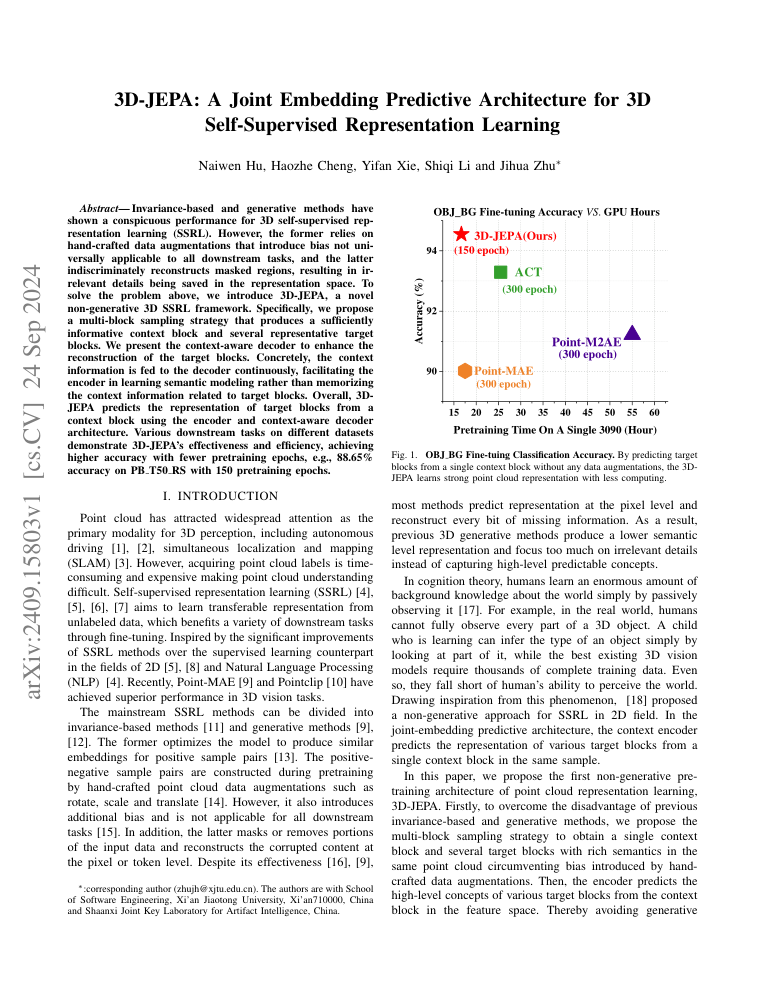
原论文 Fig.1 · PDF 第 1 页
图表说明：这是锁定版本原始 PDF 页级 PNG，保留原文标题、坐标、表头、脚注和视觉语境；具体对象和读图观察来自该论文的 figure-table ledger。
进一步分析：读者应把它与上方完整论文机制放在同一协议条件下理解；它支持论文中登记的现象，不自动支持跨数据集、跨模型或跨版本的因果结论。
证据边界：| Fig.1 | 1 | accuracy/GPU-hour scatter，3D-JEPA 星标在高精度低时长。 |。资产类型为原始整页 PNG，未 OCR、重绘、裁色或作为当前任务 ImageGen 图计数；原始路径与哈希见 10_report/evidence-r19/original-paper-catalog.json。
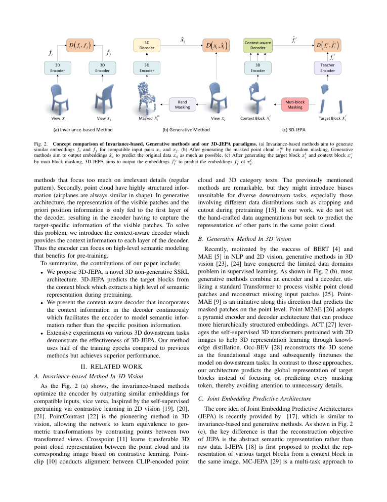
原论文 Fig.2 · PDF 第 2 页
图表说明：这是锁定版本原始 PDF 页级 PNG，保留原文标题、坐标、表头、脚注和视觉语境；具体对象和读图观察来自该论文的 figure-table ledger。
进一步分析：读者应把它与上方完整论文机制放在同一协议条件下理解；它支持论文中登记的现象，不自动支持跨数据集、跨模型或跨版本的因果结论。
证据边界：| Fig.2 | 2 | 三种 SSL 范式输入/输出对比，JEPA target 是 latent。 |。资产类型为原始整页 PNG，未 OCR、重绘、裁色或作为当前任务 ImageGen 图计数；原始路径与哈希见 10_report/evidence-r19/original-paper-catalog.json。
代表论文精读：2309.16014
Graph-JEPA（2309.16014v3）三遍精读
Pass 1：地图与 5C
定位。 Graph-level Representation Learning with Joint-Embedding Predictive Architectures，v3，20 页，TMLR 版本。它把 JEPA 从 image patch 推到 graph patches：METIS/随机分区出 context/target subgraphs，GNN 编码后以 random-walk structural encoding（RWSE）作位置条件，在二维 Poincaré/hyperbolic latent 中预测 target 坐标。
5C。 Category：图级自监督表示学习与空间几何分析。Context：contrastive graph SSL 需 augmentation/negative samples，generative graph SSL 易重构细节；图级层次结构适合 hyperbolic latent。Correctness：TUD、EXP（1-WL 不可区分）、LRGB peptide 与 distance/efficiency ablation 多角度支撑，作者明示运行时间只是 indicator。Contributions：非重叠 patch+1-hop expansion、context/target Transformer/EMA、双曲 target prediction、collapse 防护。Clarity：公式和 Appendix 充分，图表页密集但可核对。
一句话定位。 本文解决“如何在图的子结构和层次空间中做 latent target prediction”的问题；价值是把 JEPA 的 target 选择和 hyperbolic geometry 联系起来，而非单纯套用图 Transformer。
3. 图分块、编码器与目标
Graph-JEPA 先把输入图分成不重叠 patches，再对每个 patch 做 1-hop expansion，防止边界节点完全失去邻接信息。METIS 分区强调结构连通，随机分区作为对照；每个 patch 被区分为 context 或 target。GNN encoder 处理节点特征和边，Transformer/聚合器把 patch 表示送入 predictor。论文用 random-walk structural encoding（RWSE）补充节点位置，因为普通 message passing 对同构局部结构和全局位置不敏感。target encoder 用 EMA 更新，context encoder 通过损失更新，避免直接把 target 分支梯度泄漏回输入。
Figure 2 的顺序是：原图分 patch，扩张邻域，context encoder 得到可见 patch 表示，target encoder 得到目标 patch 表示，predictor 根据 context 与 RWSE 预测 target。预测不是节点级重建，而是 patch-level latent matching。这样保留“哪些结构可预测”的约束，同时把图标签需要的全局语义交给下游读出。1-hop expansion 也意味着 context/target 并非完全独立，边界信息是设计的一部分，不能把它当作随机 dropout。
4. 欧氏与双曲目标
最直接的目标是让预测表示与 target 表示的距离最小，论文报告 cosine/L2 型回归。作者进一步将 patch 表示投影到二维单位双曲线（Poincare/hyperbolic coordinate），预测坐标而不是任意高维向量。双曲空间的半径/角度可以表达层次：靠近原点的点更抽象，外圈点可容纳更细的分支。该几何先验不是从数据自动证明出来的，训练时仍需固定坐标化、归一化和数值稳定策略。
目标还包括把 encoded subgraph 放到单位 hyperbola 的坐标。若预测坐标为 、target 为 ，则教学上的坐标回归可写成 ；真实论文还会结合双曲约束与表示损失。坐标目标的优势是提供显式层级 inductive bias，风险是二维瓶颈可能把非层级图语义压扁。论文因此同时报告普通 latent objective 与 hyperbolic alternative，不能把后者称作 JEPA 必需组件。
5. 数据、任务和证据
作者在 TUD 图分类、EXP 非 1-WL 可区分图、LRGB peptide 等集合上评估 frozen/finetuned 表征；下游包括图分类、回归和区分非同构图。EXP 特别重要：若两个图对 1-WL 具有相同颜色细化，单纯局部 message passing 可能混淆它们，Graph-JEPA 的 patch 关系、RWSE 和目标几何提供额外线索。论文的 ablation 分开比较分区策略、patch size、1-hop expansion、预测目标和 embedding geometry；结果支持“target 选择和结构位置编码共同决定语义”，但不同数据集的最佳项并不一致。
Figure/表格读法要区分三种证据：下游 accuracy/F1 是可读性，非同构区分是结构表达能力，训练时间/显存是工程代价。作者所说高效主要相对需要大量负样本的对比学习，不能从少量 benchmark 推出所有图规模都更快。图分块和多 patch predictor 仍需要遍历边和计算多个目标，复杂度取决于分区数、GNN 层数和目标采样。
6. 失败模式、迁移和可复现合同
如果 context patch 本身没有足够跨边界信息，target 预测会变成局部邻域猜测；如果随机分区切断关键 motif，性能下降并不意味着 JEPA 失败，而是 patch contract 破坏。若 EMA 更新过慢，target 过时；过快则接近在线复制，可能降低目标稳定性。若 RWSE 维度过低，结构位置别名仍存在；若双曲坐标约束过强，非树状图层次会被错误地强行树化。报告这些失败比只引用平均表格更有用。
迁移到分子/社交/知识图时，应重新定义节点属性、边方向、patch 划分和 downstream split，避免 transductive 泄漏。最小复现合同应锁定分区 seed、METIS/随机算法、1-hop 规则、EMA decay、RWSE walk length、latent distance、hyperbola 参数、patch 数和下游冻结方式。本文未运行代码，代码仓库链接不等于实现已经在本任务执行。
7. 结论边界
论文支持的是图 patch latent prediction 可学习图级表征，双曲目标在有层次先验的数据上有解释力；不支持“JEPA 普遍优于对比学习”或“二维双曲坐标能表达所有图语义”。对 V-JEPA/H-JEPA 的启发是 target 单元和几何先验需要与数据结构匹配；不可直接迁移的是图分区、RWSE 和 EMA 超参。任何 downstream 增益都要同时报告分区、采样、预训练 epochs、冻结/微调和图规模。
Pass 2：方法与公式
图 G=(V,E)，非加权对称 adjacency A in {0,1}^{N×N}。空间分区把 V 划为 p 个不重叠 patches V_i，METIS 尽量减少 inter-cluster edges；随后 1-hop expansion G_i'=(V_i',E_i') 把邻居纳入，避免分区切边让节点完全失去上下文。Patch 的 RWSE 来自随机游走矩阵对角项；全局 node-level RWSE 同时作为 predictor positional embedding。
图 2（PDF p.5）实际展示 input graph→METIS patches→1-hop colored expansions→GNN subgraph encoder→context/target encoders→predictor；target encoder embedding 经过 psi_y 进入 hyperbola，context 加 target PE 后 predictor 输出 hat psi_y，loss 是二者 latent distance。图 4（p.18）用 MUTAG 小图红 target/蓝 context，并把 target embeddings 画在二维双曲图上。
Context 和 target encoder 输出 z_x,z_y；两者由 EMA/stop-gradient 处理防 collapse。高维 encoder output 经过 projection psi(z) 到 Poincaré ball；预测器以 context embedding 和 target positional embedding 为条件，输出 hat psi_y。主 loss 是 hyperbolic distance（Poincaré）而非 Euclidean；Table 3 显示高维 Poincaré 可能 NaN，低维 LD 更稳定。
Collapse 理论把 predictor 简化为线性 W，context X in R^{n×d}、target coordinates Y in R^{n×2}，最小二乘解 W*=(X^TX)^{-1}X^TY；stop-gradient+EMA 固定 target，较小 predictor 参数量限制 trivial identity。作者并不声称该简化解释完整 Transformer，只说明训练技巧的必要性。
结果与教学计算
Table 1（p.10）TUD 多数据集：Graph-JEPA 在 PROTEINS 76.30±.43、MUTAG 88.22±.26、DD 74.27±1.97、REDDIT-B 87.01±.32、IMDB-B 75.26±.65、ZINC .933±.034 等，整体与强图 SSL 相当或更好。Table 2 EXP（600 non-isomorphic pairs）Graph-JEPA 98.77±.99，Graph-MLP-Mixer 100；任务专门测 1-WL 不可区分图。
Table 3（p.11）distance ablation：MUTAG ours 91.25±5.75，REDDIT-M 56.73±1.96，IMDB-B 73.68±3.24，ZINC .434±.01；Euclidean/Hyperbolic-LD 的差异说明 latent geometry 与 dimension 共同影响稳定性。Table 4 训练效率：IMDB-B Graph-JEPA <1 min (56 sec)，REDDIT-M5 18 min，参数量 19.2M；MVGRL OOM/约 7 min。
教学计算：若 context prediction 与 target 在 Poincaré ball 的距离为 d=.4、另一 target d=.7，平均 loss=.55；若把 hyperbolic 换成 Euclidean 但维度过高导致 NaN，则不是“性能为 0”，而是优化数值失败，必须记录为 instability。Patch incidence B in {0,1}^{p×N} 时相对 PE adjacency 为 A'=BB^T；若两个 patches 共享 3 个 nodes，则对应 A'_{ij}=3，这会混淆局部位置，解释 node-level RWSE 优于 patch-level。
图表账本与 Pass 3
| ID | 页 | 观察 |
|---|---|---|
| Fig.1 | 2 | JE/Generative/JEPA graph-level 范式对照，JEPA 有独立 predictor。 |
| Fig.2 | 5 | patch 分区、1-hop、双 encoder、hyperbolic target、distance loss 全链路。 |
| Fig.3 | 11 | Euclidean objective 点云散乱；ours 在 hyperbolic 目标下更沿流形。 |
| Fig.4 | 18 | MUTAG red target/blue context 与二维 hyperbola target encoding。 |
| Tables 1--2 | 10 | TUD 与 EXP 主结果。 |
| Tables 3--6 | 11--12 | distance、efficiency、MLP、partition/PE 消融。 |
| Tables 7--9 | 18--20 | dataset stats/hyperparameters/LRGB peptide results。 |
Paper Fact：方法可用 METIS 或 random patches；random 仍强，说明不是必须依赖分区算法。Interpretation：hyperbolic geometry 为图层级概念提供 inductive bias。Unresolved：高维 Poincaré 数值不稳定、效率依赖硬件、TUD 数据集规模有限；没有图动态预测/控制任务。
迁移检查：同时记录 patch count、1-hop expansion、RWSE 类型、latent geometry/dimension、EMA schedule、distance numerical validity；不能仅凭 Table 1 平均准确率宣称图结构可解释。
来源锚点
00_sources/2309.16014/v3/tex_source/main.tex:64-459、math_commands.tex、full-pdf-text.md、PDF pp.1--20 与原页渲染；重点 p.2,5,10--12,18--20。
8. 图级任务审计与失败反例
图分类 readout、图回归和非同构区分是三种不同证据，不能只看一个 accuracy。EXP 类任务需保存图生成规则、同构对和 train/test 生成器。应记录 patch 重叠、边界节点、RWSE 在完整图或子图上的计算方式。双曲空间适合树状层次，但分子环和社区图未必适合；二维 hyperbola 可能压扁非层级语义。EMA 过大产生 stale target，过小接近在线复制。Graph-JEPA 支持结构化 target 采样，不提出通用 collapse 定理；跨模态迁移必须重新验证 target 可预测性、分区 seed、RWSE walk length、EMA decay 和冻结协议。 补充：Graph-JEPA 的图 patch 预测还要区分结构可预测性与标签相关性。一个 motif 可能在 context 中高度可预测，却与 graph label 无关；反之，稀有但决定标签的 motif 可能在随机 target 中出现很少。应按 motif 覆盖率、target distance、图大小分层报告，而不是把所有图混合。1-hop expansion 既提供边界上下文，也可能泄漏 target 的局部邻居；消融必须同时报告有/无 expansion。对有向图、带权图和异构图，论文的对称无权假设不再直接成立，RWSE 与 METIS 也需改写。hyperbolic coordinate 的层级解释是归纳偏置，不是从下游标签反推出的因果层次。代码链接和 TMLR 接收状态证明来源身份，不证明本次运行复现。 复现清单：输入图预处理、节点属性归一化、METIS 参数、随机分区 seed、patch 数、1-hop 扩张、GNN 层数、RWSE 维度、context/target 编码器宽度、predictor 深度、EMA 衰减、latent 距离、双曲坐标约束、batch size、预训练 epoch、下游 readout 和数据划分都必须固定。图表中的均值和标准差应保留 seed 数；训练时间需区分编码器计算、分区预处理和下游微调。若图规模变化，patch 数和边数会同时变化，不能只比较 wall-clock。对于非同构图，必须报告正例/负例构造、图大小匹配和是否允许节点重标号。对于化学图，边类型和芳香性不能被对称无权假设抹掉。对于社交图，时间泄漏会让随机 train/test 虚高。以上限制说明 Graph-JEPA 是一个结构化图 SSL 原型，而不是所有图任务的统一方案。
11. 结构目标的逐步检查
Graph-JEPA 的训练样本可以按如下顺序审计。先固定整图和节点属性，再执行 METIS 或随机分区；随后对每个 patch 做一跳邻域扩展，并记录扩展后节点是否与原 patch 重复。context encoder 只接收 context patch，target encoder 在对应 target patch 上产生停止梯度表示，predictor 还要接收目标位置的 RWSE。最后才计算欧氏或双曲距离。若先把全部图编码再切 patch，或者把 target 节点属性泄漏给 context，预测难度和论文完全不同。
一跳扩展的作用不是增加随机数据，而是保留被切断的边界关系。它也会增加 context 与 target 的相关性，导致不同分区策略的难度不可直接比较。因此实验应分别报告无扩展、一跳扩展和更大扩展半径。随机分区如果产生许多孤立小块，GNN 只能依赖节点属性；METIS 如果把强社区完整放在一个 patch，target 可能变成社区标签的复制。表格中的平均结果必须结合 patch size 和图密度解释。
12. 双曲坐标的数值与语义边界
在二维单位双曲线中，坐标回归需要同时检查点是否仍落在合法流形。若 predictor 输出未归一化的 ，训练可能通过改变半径而非层次关系降低距离；若每次都强制投影到曲线，梯度在边界附近可能不稳定。实现报告应写出投影方式、曲率参数、坐标归一化、距离函数和是否对 target 做 stop-gradient。论文的双曲实验提供的是一种层次先验，不是证明真实图的语义必然按半径排列。
对非树状图尤其需要反例：两个社区可能在同一层次但内部环结构不同，二维双曲坐标会把它们挤在一起；一个稀有长程边可能决定标签，却在局部 patch 采样中长期缺失。应增加长程边保留、跨社区 target 和不同图直径分层实验。若 Euclidean 目标在这些设置更稳，不能只引用 hyperbolic 的最佳平均值。
13. 下游读出与泛化
图分类、图回归和非同构区分使用的 readout 不同。分类通常对 patch 表示做全局池化，容易掩盖少数关键 motif；回归要记录标签标准化、损失单位和误差聚合；非同构任务必须确保正负图在节点数、度分布和属性统计上匹配，否则模型可能利用简单规模线索。TUD、EXP、LRGB peptide 的数据生成方式不同，不能把一个数据集的优势解释成 Graph-JEPA 的普遍结构能力。
跨图域迁移还要避免预训练图和下游图共享同一模板或节点属性词表。分子任务要保留边类型、芳香性和电荷；社交图要按时间切分防止未来边泄漏；知识图要区分方向和关系类型。论文的对称无权图假设不覆盖这些情况。最小复现实验应固定数据版本、分区算法版本、随机种子、预训练轮数、EMA decay、RWSE walk length、预测器宽度和下游冻结方式，并分别报告均值、标准差和训练耗时。
14. 结论
Graph-JEPA 的实质贡献是把 JEPA 的 context/target 选择和图结构分区、位置编码、层次几何绑定起来。结果支持“结构化 patch 预测可产生有用图级表示”，但不支持“负样本在所有图任务都不需要”“双曲二维坐标适合所有图”或“下游提升来自单一组件”。代码链接、TMLR 接收和图表数字都不能替代本地运行；本读本继续把论文事实、教学解释和复现建议分开。 最后，Graph-JEPA 的“图级”不能被误解成只在最终池化层训练。目标 patch 的选择会改变 encoder 每个层级接收的梯度；低层邻接模式、中层 motif 和高层社区关系可能有不同可预测性。若所有层共享同一 predictor，容易让局部模式主导；分层 predictor 或不同 target distance 需要额外消融。论文没有证明这种层级梯度自动形成，因此报告中应称为设计假设而非涌现事实。 在图表验收上，Figure 2 的箭头方向要与 context 到 predictor、target 到 distance 的方向一致；不能把 EMA target 当作反向梯度。双曲图若只看二维散点而不读表格，容易忽略坐标回归和普通距离的差别。TUD 图分类结果要同时检查类别不平衡，LRGB peptide 要检查序列/图构造，EXP 要检查非同构标签。本文最终证据是多数据集趋势，不是一个统一理论定理。 如果要把 Graph-JEPA 用于现有图学习系统，推荐先建立三组基线：同一 GNN 的监督训练、普通 masked graph autoencoder、普通欧氏 JEPA。然后只改变一个因素：分区、RWSE、EMA 或双曲坐标。每组都固定预训练数据、下游 head、训练预算和 seed。评估时同时报告线性 probe、全量微调、非同构区分、参数量、显存和 wall-clock。对于图大小外推，训练图和测试图应按节点数分层；对于跨域外推，应按节点属性和边类型分层。若 Graph-JEPA 在小图上优于基线而大图退化，可能是 patch 数和 predictor 复杂度造成，而不一定是表示质量下降。
还要审计图级 pooling 的信息损失。mean pooling 会抹掉少数 motif，attention pooling 可能偏向训练分布中频繁出现的社区，sum pooling 又对节点数敏感。建议对相同图做节点复制、随机重标号和局部 motif 插入测试，检查表示是否稳定。Graph-JEPA 的 target 预测在这些干预下若变化过大，说明模型可能依赖 patch 采样而不是图语义。论文没有做完整干预因果实验，所以这些属于后续验证，不应回写成原论文结果。 最后，任何图级表征结论都应把结构划分协议写入结果标题：METIS、随机分区、是否一跳扩张、欧氏或双曲目标、EMA 与否。这样读者才能判断提升来自结构先验还是训练预算。本文未运行官方仓库，当前读本不宣称代码复现。 对 Graph-JEPA 而言，结构位置编码和 target 采样共同构成任务定义；只替换 encoder 而保留图像式 mask，无法复现论文。结果解释还需区分图结构、节点属性和标签先验，避免把表征 probe 误写成图推理能力。 图结构的最终复核还应检查 patch 数随图规模变化时的 predictor 输入长度、注意力复杂度和显存。若只固定 patch 数，大图每个 patch 的语义密度变化；若固定 patch 大小，patch 数随图规模增长。两种设置会产生不同的 scaling 结论。论文没有给出统一的复杂度定理，因而只能把运行时间当作协议内指标。 因此图级实验必须把结构规模和 patch 规模同时纳入报告，不能只复制一个平均准确率。 这也是跨数据集比较时必须保留的结构边界。
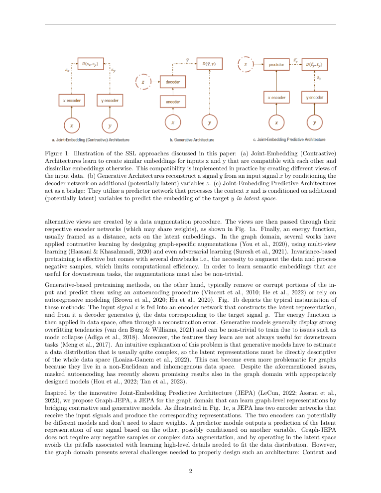
原论文 Fig.1 · PDF 第 2 页
图表说明：这是锁定版本原始 PDF 页级 PNG，保留原文标题、坐标、表头、脚注和视觉语境；具体对象和读图观察来自该论文的 figure-table ledger。
进一步分析：读者应把它与上方完整论文机制放在同一协议条件下理解；它支持论文中登记的现象，不自动支持跨数据集、跨模型或跨版本的因果结论。
证据边界：| Fig.1 | 2 | 三 SSL 范式流程及 JEPA predictor。 |。资产类型为原始整页 PNG，未 OCR、重绘、裁色或作为当前任务 ImageGen 图计数；原始路径与哈希见 10_report/evidence-r19/original-paper-catalog.json。
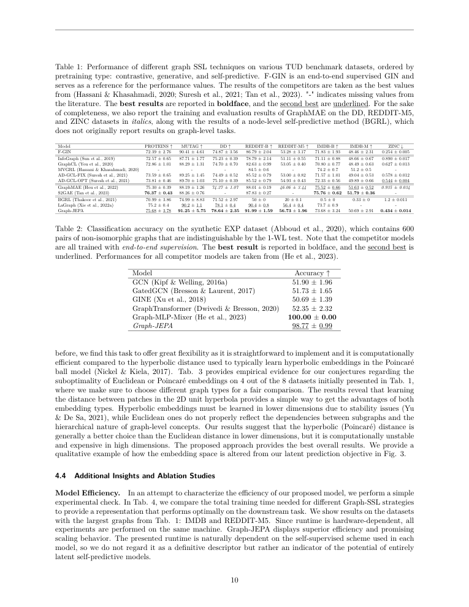
原论文 Table 1 · PDF 第 10 页
图表说明：这是锁定版本原始 PDF 页级 PNG，保留原文标题、坐标、表头、脚注和视觉语境；具体对象和读图观察来自该论文的 figure-table ledger。
进一步分析：读者应把它与上方完整论文机制放在同一协议条件下理解；它支持论文中登记的现象，不自动支持跨数据集、跨模型或跨版本的因果结论。
证据边界：| Table 1 | 10 | 8 TUD datasets 主结果。 |。资产类型为原始整页 PNG，未 OCR、重绘、裁色或作为当前任务 ImageGen 图计数；原始路径与哈希见 10_report/evidence-r19/original-paper-catalog.json。
代表论文精读：2311.15830
A-JEPA（2311.15830v3）三遍精读
Pass 1：地图与 5C
定位。 A-JEPA: Joint-Embedding Predictive Architecture Can Listen，v3，12 页。它把 I-JEPA 的 context/target latent prediction 迁移到 Mel-spectrogram，针对音频时间与频率局部相关设计 curriculum masking，并在下游 fine-tuning 用 regularized masking（RM）约束 self-attention 信息流。
5C。 Category：音频自监督表示学习。Context：AudioMAE/掩码重建保留低级细节；直接随机 block 易用附近时间/频率插值走捷径。Correctness：AudioSet、ESC-50、Speech Commands、VoxCeleb、多模型/数据量/epoch/mask/decoder ablations 完整。Contributions：time-frequency aware curriculum、EMA target encoder、multi-mask、RM fine-tuning。Clarity：算法、代码片段、附录超参齐全，但 arXiv admin note 记录与另一论文文本重叠，应把来源事实与方法理解分开。
一句话定位。 本文解决“如何让音频 JEPA 学到跨时频语义而非邻域猜测”的问题；价值是把 mask 形状从视觉 block 泛化为音频时间频率结构，并把遮蔽保留到 fine-tuning 的 attention 图中。
3. 时频遮挡与 curriculum
A-JEPA 把音频转为 Mel-spectrogram patch，ViT context encoder 只看可见 patch，EMA target encoder 在完整频谱上产生目标表示，predictor 根据 context 和 target mask 位置预测 latent。随机 block mask 若只遮时间或只遮频率，模型可能依赖局部插值；因此作者在训练中从较容易的随机块逐渐过渡到 time-frequency aware mask，控制时间长度、频率宽度和面积比例。Figure 2 展示 mask 形状，Figure 3 画 curriculum 函数，横轴训练进度、纵轴遮挡策略混合比例。
这个 schedule 是核心机制而非增强细节：音频在时间与频率上高度相关，早期完全困难的二维遮挡会使预测目标过于不稳定；一直使用小块又让模型学到局部纹理。模型预测的是 target embedding，避免把相位、局部噪声和频谱细节逐点重建成主要目标。EMA 的作用是稳定 target 随训练变化，不能与 Graph-JEPA 的图分区规则混用。
4. RM fine-tuning 与注意力约束
预训练后，作者在下游 fine-tuning 使用 regularized masking（RM），而不是简单把输入 patch 丢弃或置零。Figure 4 说明 attention 计算仍保留被 mask 位置的结构约束，mask 作为正则化信号让模型不要只依赖单一时间频率邻域。这个阶段不是重新做完整 A-JEPA 预训练，而是对目标数据集上的 encoder 施加局部信息缺失，以增强上下文语义和鲁棒性。
预训练目标可以抽象为 ，其中 是 context patch 集， 是 target 位置， 为 latent distance，target 分支由 EMA encoder 提供。RM 阶段改变的是注意力/输入可见性与监督设置，不能把 fine-tuning 的 patch reconstruction 误写成预训练 pixel loss。实现审计需记录 mask ratio、time/frequency aspect、EMA decay、predictor depth 和是否重新初始化 head。
5. 实验矩阵与边界
Table 1 比较 AudioSet、ESC-50、Speech Commands、VoxCeleb 等音频/语音分类任务，A-JEPA 与 AudioMAE、BEATs 等方法按 mAP/accuracy 等协议比较。Table 2/3 通过 model size、pretraining epochs、mask strategy 和 decoder 进行消融；大模型和更久预训练通常收益更明显，但这些设置同时改变计算预算。结果说明 time-frequency curriculum 有效，不能推出任意音频域都需要相同 schedule。
音频标签既可能依赖时间节奏，也可能依赖频谱纹理；同一 mask 对两类任务影响不同。Speech Commands 的短词分类与 VoxCeleb 的说话人身份并不是同一个下游。报告应逐任务保留采样率、Mel 参数、clip length、冻结/微调、类别平衡和 metric，不能把 Table 1 平均成“听觉理解”。
6. 风险和复现合同
mask 太局部会产生邻域 shortcut，mask 太大则 target 不可预测；时间遮挡可能损害节奏，频率遮挡可能损害音高。EMA decay 与 curriculum 同时决定 target 难度，必须做二维消融。arXiv admin note 还提示文本重叠，方法事实应以 v3 PDF/TeX 为准，不能把重叠警告当成实验结论。
迁移到视频时频 token 或 V-JEPA，需重新定义 patch 轴、target 位置、运动遮挡和 EMA；音频的频率轴不等价于图像空间轴。未运行官方代码，不能声称重现 Table 1。
Pass 2：方法与公式
Mel-spectrogram 切为不重叠网格 patch，线性投影+固定 sinusoidal positional encoding。JEPA 有 context encoder E_theta、EMA target encoder E_tilde theta、predictor P_phi；target 权重每轮由 context EMA 更新，context/predictor 联合最小化 latent distance。
图 2（PDF p.3，pdf_rendered/page-003.png）逐行展示 Original/Context/Targets：random block 是 4 target blocks，scale .15-.20、aspect .75-1.5；time/frequency mask 是 3 target blocks，scale .05-.075，删除目标相关的全部时间或频率；context scale .85-1.0，删除 overlap。绿色是 selected，灰色是 removed。图 3（p.4）三条 curriculum curve 从 0→1：随着 step 增加，time-frequency aware 比例上升。
令 p ~ Bernoulli(f(s))，mask 集 M=Time-frequency(I,r) 若 p=1，否则 Block(I,r)；f(s)=min(1,sqrt(s(1-c0²)/S)+c0²)，默认 c0=.01。小 f 时随机 block 易学，大 f 时完全遮住 time/frequency，迫使模型使用跨域语义。Algorithm 1（p.4）先采 context/target size，循环 Nt 个 target，最后在 target complement 内采 context。
预训练 encoder 只处理 visible patches；decoder 将 masked tokens 补回原 time-frequency 顺序，预测 target latent；multi-mask 平均 predictor-target L2，摊销 target encoder 成本。Fine-tuning 丢弃 decoder，只保留 encoder+average pool+linear head。RM 在每层随机选 token，禁止 masked token 参与 attention weight 计算但由其他 token 完全贡献；测试恢复 vanilla attention。图 4（p.4）用红/蓝 patch 连线显示 masked query 不能自看，只能接收其他 patch。
教学计算：若一个 target latent 的预测/EMA target 差向量为 (0.3,-0.4)，L2=.25；四个 target 的 .25,.09,.16,.36 平均=.215。若当前 curriculum f(s)=.25，则期望每步 25% time-frequency mask、75% random block；到 f=1 时完全使用困难 mask。
实验数值和视觉
AudioSet 约 1.96M unbalanced + 21k balanced，AS-2M/AS-20K；ESC-50 2,000 clips 5-fold；SPC-2 84,843 train/11,005 test/9,981 val；VoxCeleb V1 128k/6k/8k。ViT-B 86M 主模型、AudioSet pretrain 24 epochs，AS-2M fine-tune 10 epochs，RM ratio .1。
Table 1（p.5）：A-JEPA mAP AS-20K 38.4、AS-2M 48.6、ESC-50 96.3、SPC-2 98.5、SPC-1 97.7、SID 95.8，均高于同组 AudioMAE。Table 2（p.5）模型规模 ViT-S/B/L 为 33.7/46.1、38.4/48.6、38.8/48.8（AS-20K/AS-2M）。Table 3/4（p.6）curriculum mAP 48.6，高于 random 47.8/inverse 46.3；RM 48.6，高于无 RM 48.1。
图 5（p.7）三行原始/上下文/预测 spectrogram，红框在预测列逐步移动，说明 predictor latent 有时间频率位置含义。图 6/7（p.7）数据量 1/5/10/50/100% 与 epoch 4/8/16/24/32：数据量越多、epoch 至约 24 后收益饱和。
Pass 3：综合与边界
Paper Fact：A-JEPA 只把 target encoder EMA 更新，RM 仅训练用；Interpretation：curriculum 先减少 shortcut、再逐步要求跨时频推理。Unresolved：time-frequency mask 的收益依赖谱图局部相关假设；没有跨采样率/噪声/长音频鲁棒性；文本重叠 admin note 是 provenance 风险，不能影响本篇公式核验。
迁移时需要记录 Mel bins、patch size、mask scale/aspect、f(s) 曲线、target 数、EMA、RM ratio 和测试 attention 方式；不能把 RM 训练图直接当推理结构。
来源锚点
00_sources/2311.15830/v3/tex_source/ijcai24.tex:135-657、PDF pp.1--12、原页重点 p.1,p.3--7,p.12。
7. 音频语义、实验协议和边界
相邻时间帧共享谐波、邻近频带共享能量，随机矩形 mask 容易让模型靠边缘插值取得低 latent loss。curriculum 逐渐增加跨时频推理压力；target encoder 在全谱上运行，context encoder 只看可见区，EMA 不是同步复制。RM 是 fine-tuning 的第三种遮蔽，不能和预训练 mask 混合。AudioSet mAP、ESC-50/Speech Commands accuracy、VoxCeleb speaker identification 不能平均成单一“听觉理解”；采样率、Mel bins、window/hop、clip length 和 split 都必须记录。A-JEPA 没有声码器、波形重建或长期 rollout，低 latent loss 不等于可听生成。迁移到视频需重新定义 patch 轴、运动遮挡和 EMA；本文未运行代码。 补充：A-JEPA 的音频目标还受频谱预处理影响。Mel 滤波器把频率压缩为非线性轴，固定宽度 mask 在低频和高频代表不同物理带宽；所以 time/frequency aware 策略不能脱离采样率、Mel bins 和 hop size 比较。多 mask 训练若复用同一 spectrogram 视图，目标之间并非独立样本，loss reduction 和 mask overlap 必须写入合同。VoxCeleb 的说话人身份可能依赖稳定 timbre，Speech Commands 更依赖短时音素；同一 curriculum 的收益机制不同。fine-tuning RM 可能提高遮挡鲁棒性，也可能抑制稀有高频线索，应报告每类和每频段的错误，而不是只报总体准确率。文本重叠 admin note 是来源风险，不能作为模型性能证据。 复现清单：固定采样率、Mel 滤波器、FFT window/hop、频带数、clip 长度、context/target mask 面积、time/frequency 比例、curriculum 起止 epoch、EMA decay、predictor depth、batch loss reduction、RM fine-tuning 规则和每个下游 split。AudioSet 多标签样本与 ESC-50 单标签样本的采样方式不同；VoxCeleb 要防止同一说话人跨 split；Speech Commands 要防止同一词条录音泄漏。应同时记录冻结 encoder、线性 probe 和全量微调三种设置。若只报告最佳 mask，无法判断 curriculum 是否真正贡献。对短音频，时间 mask 可能覆盖整个事件；对长音频，频率 mask 可能只删除背景噪声。论文的 latent prediction 不包含波形相位恢复，因此不能用听感样例替代表征指标。A-JEPA 的代码/权重若与 v3 不同，版本必须单独锁定。
10. 训练动态与音频轴的区别
A-JEPA 的 curriculum 需要按音频轴解释。时间轴上的遮挡改变可利用的节奏上下文，频率轴上的遮挡改变谐波和音高上下文；同样的矩形面积在低频和高频代表不同物理带宽。若 Mel bins、采样率或 hop size 改变，论文的 mask ratio 不能直接照搬。建议把 mask 的时间长度、频率宽度、面积、aspect ratio 和训练阶段写进每个 checkpoint，而不是只保存最终比例。
EMA target encoder 在完整 spectrogram 上编码目标，context encoder 在可见 patch 上编码输入，predictor 同时接收 target location。若把 target 输入也遮挡，或者在每个 batch 直接复制 context 权重，都会改变目标分布。EMA decay 与 curriculum 共同决定难度：decay 太高导致 teacher 过时，太低则 target 变化过快。应报告初始 teacher、更新顺序、warmup 和 predictor 是否共享输入投影。
11. RM fine-tuning 的作用和风险
RM 不是简单的 input dropping。它保留 mask 结构并约束 attention，使模型在目标数据上仍需利用上下文。这个正则可能帮助跨录音、跨说话人和噪声环境鲁棒，但也可能删除短促爆音、辅音边界或高频识别线索。对 Speech Commands，错误可能集中在词头/词尾；对 VoxCeleb，错误可能集中在稳定 timbre；对 AudioSet，多标签事件可能只在一小段时间出现。应报告按事件长度、频段和信噪比的结果。
RM 与预训练 mask 必须分开做消融：无 RM、固定随机 mask、curriculum mask、time-frequency aware mask 和 RM fine-tuning。否则无法知道增益来自 teacher 目标、mask 课程还是下游正则。论文的 Figure 4 说明 attention 受到 mask 影响，但没有给出所有头的可解释性或长期音频预测证据。
12. 实验可比性和数据泄漏
AudioSet 是多标签、长尾数据，mAP 对阈值和采样策略敏感；ESC-50 与 Speech Commands 更接近封闭集分类；VoxCeleb 需要按说话人切分。相同 encoder 在这些任务上的结果不能平均成一个“听觉能力”分数。若同一音频或同一说话人片段跨 train/test，RM 可能掩盖泄漏。报告必须记录采样率、Mel 参数、clip 长度、类别平衡、split、冻结/微调和评估 seed。
13. 结论边界
A-JEPA 支持的结论是：音频的时间频率相关结构需要对应的遮挡课程，latent target 可以避免像素/频谱逐点重建的细节负担，RM 可作为下游鲁棒性正则。它不证明 latent loss 低就能波形生成，不证明同一 mask schedule 在所有音频域最优，也没有动作条件或长期 rollout。迁移到视频要重新定义空间/时间 token、运动遮挡和 teacher 更新；复现必须锁定 v3 来源和代码版本。本任务未运行官方代码。 还要区分频谱上的“可预测”与音频事件的“有用”。稳定背景噪声可能很容易由 context 预测，却与分类标签无关；短促事件可能难预测但决定标签。A-JEPA 的低 latent loss 因而不能单独证明语义学习。应做背景替换、时间打乱、频段遮蔽和事件插入实验，并同时报告事件识别、说话人识别与鲁棒性。否则 curriculum 的收益可能只是降低了局部频谱不确定性。 图表验收还要检查 Figure 2 的时间遮挡与频率遮挡是否被正确读成两条独立轴，Figure 3 的 curriculum 是否随训练进度变化，Figure 4 的 RM 是否发生在 fine-tuning 而非预训练。Table 1 的方法比较不能省略监督预训练基线、数据集、metric 和输入特征；Table 2 的 model-size 消融不能证明 scaling law。音频增强若改变音高、速度或相位，可能与任务标签冲突，必须记录增强概率。若代码把 mask 填零而论文使用 attention mask，模型看到的信息不同；若 target encoder 只编码可见区，目标也不同。所有这些都属于 source-specific 实现合同，而不是泛化的 JEPA 定义。 为了判断 A-JEPA 是否真正学习远程语义，可做四个干预。第一，打乱局部时间顺序但保持全局频谱，测试模型是否依赖节奏；第二，交换非事件频带，测试是否依赖背景；第三，把事件移动到不同时间位置，测试时间不变性；第四，在相同说话人上替换噪声和混响，测试 RM 鲁棒性。每个干预都要报告 latent loss、下游 accuracy、置信度和错误类别。若 loss 下降但事件识别不升，说明 teacher 目标携带的是统计可预测性而非任务语义。
音频预训练还涉及视图定义。两个频谱视图若只做裁剪和颜色式增广，可能保留完全相同的局部纹理；若做过强时间拉伸或频移，又可能改变标签。A-JEPA 的 context/target 配对、mask overlap 和多 mask loss reduction 应写成明确张量契约。任何实现差异都可能比模型规模更显著。由于论文包含文本重叠 admin note，引用时应锁定 v3 PDF 和本地 source manifest，不要从其他版本的摘要或代码补写方法。 因此 A-JEPA 的最小可复现实验应同时保存原始频谱、mask 日志、teacher checkpoint、预测器输出、RM attention 统计和每任务错误样本。只有这样，才能区分局部插值、频带捷径、说话人泄漏和真正的跨时频语义。本文没有运行官方代码，所有数字仍是论文报告值，不能写成当前工作区 runtime 结果。 额外的验证应包含随机频谱、纯噪声、短事件和长事件四类控制样本。若模型在纯噪声上 latent loss 仍很低，说明 teacher 或 predictor 存在统计捷径；若短事件在大 mask 下完全消失，说明 curriculum 需要按事件长度自适应。音频结果必须保留每任务、每类别和每信噪比的指标，不能只呈现总 mAP。 此外，音频的目标区域可能跨越 clip 边界。若裁剪先于 mask，事件被截断；若 mask 先于裁剪，目标采样分布又不同。应保存 clip 起止时间、事件边界、mask 生成顺序和 overlap。多标签 AudioSet 还要报告每个事件在 mask 后是否仍可观察，避免把不可判定样本计入普通 loss。对于语音，静音段和背景段可能造成低 loss shortcut，需单独做静音控制。 最后，A-JEPA 的目标是表示学习，不是声学重建。研究者应把 latent 预测误差、分类读出、跨噪声鲁棒性和错误样本分开保存。任何只保留最佳 epoch、最佳 mask 或最佳数据子集的报告都会夸大收益。真正的复现需要固定版本、随机种子、数据清单和评估脚本，并对 teacher 更新、mask 顺序、RM attention 和 loss reduction 做逐项断言。若未来把该方法迁移到视频，必须重新设计时间/空间/频率轴，而不是把频率维度直接当作图像高度。论文没有证明跨模态的 mask 课程可以零样本迁移。 对于大规模音频预训练，还应记录数据去重、相同录音的时间邻近片段、训练与验证的说话人隔离、混响和压缩增强。AudioSet 的长尾事件可能使总体 mAP 被高频类别主导，ESC-50 的小数据集则容易受 seed 影响。模型规模消融应同时报告参数、FLOPs、显存和训练时间，而不是只列准确率。A-JEPA 的 curriculum 不是自动解决数据偏差的机制；如果上下文中包含录音设备或背景噪声，teacher 仍可能学习这些稳定但无关因素。建议加入设备替换、背景替换、时间反转和频带遮蔽测试，分别观察 latent loss、线性 probe 和任务错误。对于 RM，必须记录被遮挡 patch 是否仍参与 key/value、attention mask 是否在每层复用、以及目标 head 是否使用完整频谱。否则“regularized masking”在不同实现中可能代表完全不同的正则。论文提供了音频 JEPA 的设计方向，但没有统一的音频预训练标准，也没有证明其 masking schedule 在开放世界声音上具有稳定最优性。 这些审计字段应与每个 checkpoint 的版本号绑定，避免在不同 mask 课程、teacher 状态和下游 head 之间误配结果。 该绑定关系也是防止跨版本文本重叠、数据清单变化和模型权重误用的必要证据。 因此最终报告必须明确哪些是论文事实、哪些是独立干预建议、哪些仍未运行验证。 这也是本读本保留 admin note、版本号和代码未运行边界的原因。 因此复现时要把音频预处理和 mask 生成视为模型的一部分，而不是外部数据清洗。 并把版本和 seed 写入 receipt。 并避免把不同版本的实验混合。 并单独记录未验证项。 留待后续验证。 后续工作还需要公开完整的预处理、mask 日志、teacher 状态、下游 split、错误样本和运行资源，才能把论文的方向性结果转化为可审计的音频表征基线。
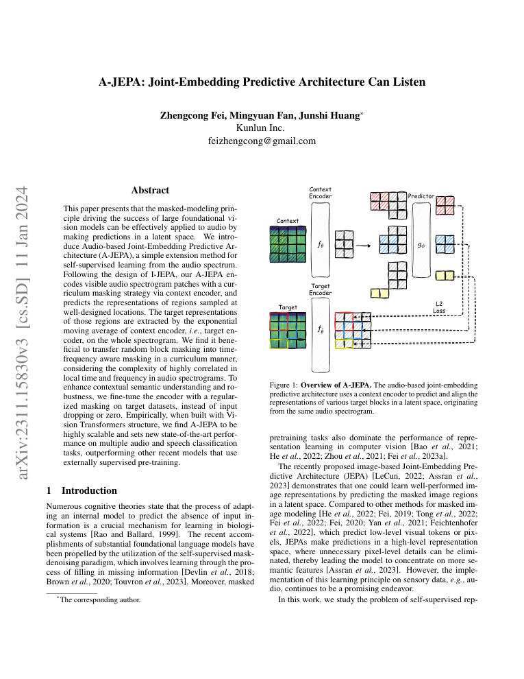
原论文 Fig.1 · PDF 第 1 页
图表说明：这是锁定版本原始 PDF 页级 PNG，保留原文标题、坐标、表头、脚注和视觉语境；具体对象和读图观察来自该论文的 figure-table ledger。
进一步分析：读者应把它与上方完整论文机制放在同一协议条件下理解；它支持论文中登记的现象，不自动支持跨数据集、跨模型或跨版本的因果结论。
证据边界：| Fig.1 | 1 | context encoder/target EMA/predictor latent alignment。 |。资产类型为原始整页 PNG，未 OCR、重绘、裁色或作为当前任务 ImageGen 图计数；原始路径与哈希见 10_report/evidence-r19/original-paper-catalog.json。
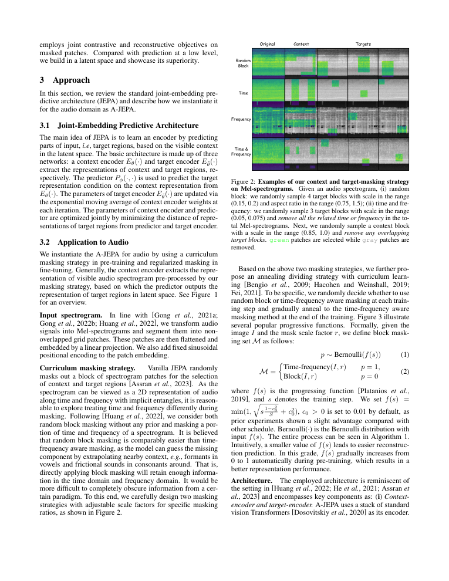
原论文 Fig.2 · PDF 第 3 页
图表说明：这是锁定版本原始 PDF 页级 PNG，保留原文标题、坐标、表头、脚注和视觉语境；具体对象和读图观察来自该论文的 figure-table ledger。
进一步分析：读者应把它与上方完整论文机制放在同一协议条件下理解；它支持论文中登记的现象，不自动支持跨数据集、跨模型或跨版本的因果结论。
证据边界：| Fig.2 | 3 | random block、time、frequency、time-frequency masking 的谱图实例。 |。资产类型为原始整页 PNG，未 OCR、重绘、裁色或作为当前任务 ImageGen 图计数；原始路径与哈希见 10_report/evidence-r19/original-paper-catalog.json。
动作条件、世界模型与规划
再读 ACT-JEPA、PLDM、H-JEPA、LeWorldModel、RoboJEPA 等行动路径。
代表论文精读：2501.14622
ACT-JEPA（2501.14622v5）完整精读
1. 身份与研究问题
本文标题为 ACT-JEPA: Novel Joint-Embedding Predictive Architecture for Efficient Policy Representation Learning，本次锁定 arXiv v5（PDF 17 页，identity 记录其后发表于 IEEE Access 2026 的 journal_ref，但精读对象仍是 v5 PDF）。作者 Aleksandar Vujinović、Aleksandar Kovačević，Faculty of Technical Sciences, University of Novi Sad（PDF p.1，TeX main.tex L1006-L1065）。文章提出 ACT-JEPA：把 Action Chunking with Transformer 的连续动作序列模仿学习与 JEPA 的 latent observation sequence 预测在同一端到端策略中联合优化。
任务边界。 这里的 world model 是从当前 observation 预测未来 proprioceptive state 的 latent sequence；不是视觉视频 world model，也不是使用 MPC 的通用动力学模型。训练输入是当前图像、proprioceptive state、task label，target encoder 在论文实验中只接未来 proprioceptive states；动作解码器输出 n 步连续 action chunk。作者报告 Push-T、ManiSkill、Meta-World 模拟任务结果，并明确承认未测真实机器人、触觉/深度 target、大规模多样数据。
第一遍 5C
| 维度 | 结论 |
|---|---|
| Category | 机器人模仿学习/策略表征方法论文。 |
| Context | 行为克隆依赖昂贵 expert demos、像素 SSL 浪费容量；DynaMo/DINO-WM/V-JEPA 2-AC 多采用两阶段或 MPC，ACT-JEPA 选择 IL+JEPA 联合端到端。 |
| Correctness | 动作和 latent state 两个目标清晰，探针把 encoder 冻结后独立测 world-model representation；但任务均模拟、数据量小、target modality 窄。 |
| Contributions | 四组件架构、双 L1 目标、联合优化；在三个环境上报告世界模型 RMSE/ATE、成功率、两阶段对照和 action-transfer probe。 |
| Clarity | 图 1、Eq.1-3、Table 1-3 和 limitations 足够定位；代码、随机种子、完整训练超参未在论文正文全部展开。 |
2. 论证地图
引言（PDF pp.2-3，TeX L1006-L1065）先指出 expert demonstrations 贵且只覆盖成功轨迹，IL 不显式学习环境演化；像素 SSL 又学习不可预测细节。作者的三个核心 claim 是：latent observation sequence 改善 world-model understanding（最多 40% relative）；policy success 比 IL baseline 高最多 10 个百分点；sequence observation 预训练的表征能迁移到 action prediction。相关工作（pp.3-5，L1165-L1221）明确把 DynaMo（两阶段 VICReg）、DINO-WM/V-JEPA 2-AC（latent predictor+MPC）与 ACT-JEPA 区分开：本文直接学动作，不在推理时做 MPC。
方法（pp.5-8，L1069-L1159）从 policy learning 定义 π(a_{t:t+n}|o_t)，再定义 context encoder、target encoder、predictor、action decoder。Eq.1 是动作序列 L1，Eq.2 是预测 latent observations 的 L1，Eq.3 直接相加。目标 encoder 以 context encoder 的 EMA 更新；推理只保留 context encoder 和 action decoder。实验（pp.8-13，L727-L946）按四个问题展开：world-model probe、决策 success、JEPA 表征到 action 的转移、联合 vs 两阶段；最后给局限与结论。Figure 2 只展示三个模拟环境，不是方法数据流图的替代。
3. 方法闭读
3.1 四组件与数据流
Figure 1（PDF p.1，TeX L994-L1004）是完整数据流：当前 observation 进 context encoder E_θ 得到 s_x；未来 observation sequence o_{t:t+n} 进 EMA target encoder 得到 s_y；predictor P_φ(s_x, mask tokens) 生成 ŝ_y；action decoder D_τ(s_x, mask tokens) 生成 â_{t:t+n}。训练时四组件都使用；推理时丢弃 target encoder 和 predictor，只保留 encoder+decoder。mask token 的序列位置对应要预测的 action/state 时间步。
context encoder 的实际实验输入是 image、proprioceptive state、task label：ResNet-18 提取 image feature map，展平加位置编码；proprioception 经 linear projection，task label one-hot，再拼 token 送 transformer。作者说架构可接 DINO-v2、FiLM、depth/tactile 等，但这些是扩展可能性，不是本实验事实。target encoder 只接 proprioceptive state sequence，linear projection+temporal positional encoding 后送 transformer，产生每个未来时刻的 latent target；因此论文的“latent observation”不是图像 latent，而是低维 proprioception 的 transformer 表征。
predictor 使用 cross-attention 先用 context s_x 条件化 mask tokens，再送 transformer；作者强调 cross-attention 对 context length 线性、减少后续 transformer token 数。action decoder 同构但独立参数，方便未来替换 diffusion action decoder。该模块独立性意味着 action loss 的梯度与 observation loss 通过共享 context encoder 汇合，predictor 本身不直接输出 action。
3.2 两个目标与更新
动作目标（PDF p.7/L431-L445）是 L_actions=(1/n)Σ_{i=0}^n ||â_{t+i}-a_{t+i}||_1；观测目标（L446-L454）是 L_observations=(1/n)Σ ||ŝ_{y,t+i}-s_{y,t+i}||_1；总损失（Eq.3，L456-L459）为二者相加。论文没有报告额外 λ，因此不能把 action/observation 贡献想当然地设成任意权重。目标 encoder EMA 更新以防 latent collapse（p.8/L485-L488），但 EMA momentum、warmup、batch/optimizer 的完整代码级细节不在本单元声明。
与像素重建相比，latent observation 允许丢弃不可预测细节；与只预测一个未来 state 相比，sequence horizon 让表征保留环境演化。作者的因果叙述是“联合 loss 让 world model 不过拟合 demos，IL 让 representation 关注 control-relevant features”，但这属于对结果的解释，Table 3 能直接支持的是联合 success 较高。
4. 实验闭读
4.1 环境、数据和基线
Push-T 是 2D circle 推 T 到固定 T 区域，206 条人工 demonstrations，RGB 96×96，成功定义为目标覆盖至少 90%（PDF pp.8-9，L512-L517）。Meta-World 选四关节、15 个共享 manipulation primitives 任务，每任务 40 条 scripted demos、RGB 128×128，并排除不共享 primitives 的任务。ManiSkill 选五个同机器人/动作空间任务（pick/push/stack/pull tool/insert peg），每任务 50 demos、RGB 128×128（L539-L544）。数据规模均为几百 trajectory，不能视为大规模 SSL。
AR transformer 是 GPT 风格连续动作 L2 baseline；ACT 是严格输入/输出/目标匹配的 Action Chunking Transformer AE 变体，不用 VAE、history、FiLM 或 text conditioning（pp.9，L547-L575）。因此 ACT 是最强的直接比较，但两者均从头训练，且该简化配置不覆盖现有 ACT 全部变体。
4.2 world-model probe
对每个训练好的 policy，冻结 context encoder，丢弃其余组件，另训随机 decoder 预测未来 proprioceptive state sequence；RMSE 惩罚大偏差，ATE 测轨迹与 ground truth 的偏离（PDF pp.9-10，L578-L601）。Table 1：Push-T ACT/ACT-JEPA RMSE 0.1424/0.0895、ATE 0.1518/0.0915；ManiSkill 0.0531/0.0348、0.2063/0.1354；Meta-World 0.0295/0.0208、0.0529/0.0375。按论文报告，RMSE 降约 29-37%，ATE 降约 29-40%。这个 probe 测的是 proprioceptive future decoding，不是闭环预测或视觉状态重建。
Figure 3（p.10，L625-L630）在 ManiSkill checkpoint 重复 probe：ACT-JEPA 起始误差可能更高但快速超越 ACT，随后保持更低 RMSE/ATE。图的横轴训练 steps、纵轴 probe error；每个点都需冻结 encoder 重新训 decoder，因而曲线反映 representation snapshot+probe protocol，不是一次在线 rollout。
4.3 决策、transfer 与联合训练
Table 2（p.11，L665-L675）成功率：AR 0/8/38.3%，ACT 34/26/90%，ACT-JEPA 41/36/92%（Push-T/ManiSkill/Meta-World）。Meta-World 300 次评估=20 初始状态×15 任务；ACT-JEPA 相对 ACT +7/+10/+2 点，Meta-World 已接近 ceiling。作者把 AR 低分归因于 compounding error/non-Markovian data，把 action chunking 视为缓解；这符合 baseline 设计，但不隔离 chunk 长度、decoder 结构等因素。
Figure 4（p.12，L747-L752）在 JEPA-only 预训练中，每隔 n steps 冻结 context encoder，重新训练 action decoder probe；Push-T action reconstruction loss 随训练下降，说明 latent observation sequence 对 action 具可迁移信息。该结果是 transfer evidence，不是“联合训练已完成策略”的 success evidence。
Table 3（p.13，L797-L806）两阶段 SSL→冻结 encoder→IL action decoder 为 27/0/23.3%，ACT-JEPA 联合为 41/36/92%。联合方法大幅胜出，但两阶段的冻结和 decoder 初始化改变了优化路径；“representation misalignment”是合理解释，不是单独被控制的因果变量。论文也承认在数据大、表示跨任务复用时，两阶段可能更好。
5. 局限、迁移与结论
论文限制（PDF p.13，L809-L839）包括：无真实机器人部署；JEPA target 只有 proprioception，未测 touch/depth/image target；模拟环境相机、桌面、灯光同质；每任务只有几十 demos，远小于 Bridge/Open X-Embodiment。由此“可成为 foundation policy model”只是未来方向，不能从三套模拟器直接推出。
可迁移的设计是共享 context representation + task-specific prediction heads：动态/世界模型目标和动作目标可在同一表征上产生互补梯度；应把 frozen probe、action transfer、closed-loop success 分成三类证据。不可直接迁移的是“L1 latent proprioception + action chunk”到视觉导航或真实机器人，因为观测噪声、动作延迟、时序 horizon、失败轨迹和传感器模态都会改变目标。若研究视频策略，应额外报告 image target 与 proprio target 的 ablation、未来状态多步 rollout 和不确定性。
可靠结论是：在作者构造的模拟数据和 ACT 对照下，联合 action+latent-state 目标改善了未来状态 probe、任务 success 和 action transfer。不能推出：JEPA 一定比 pixel SSL 更强、EMA 保证 world-model 正确、或联合训练在大规模现实数据中必胜。目标代码未运行，代码级 batch、EMA、数据截断和 optimizer 仍需 fixed snapshot 证据。
这些边界应与每个环境的初始状态、随机种子和评估次数一起归档。
6. ACT-JEPA 的时间结构和训练路径
ACT-JEPA 不是把 JEPA 作为独立预训练模块再冻结，而是在 imitation learning policy 中联合加入未来 proprioceptive target。当前观测经过 context encoder，动作 decoder 生成一段 action chunk；target/predictor 分支从未来状态序列构造 latent prediction loss。这样同一 representation 同时承担“当前动作决策”和“未来状态可预测”两种约束。两阶段基线则先做 SSL，再冻结 encoder 训练动作头，优化路径不同，不能只比较 loss 数字。
action chunk 会改变时序 credit assignment。若 chunk 长度 (H=5)，一次 decoder 输出五个动作并连续执行，早期动作的误差会改变后续观测；即使每步误差相同，闭环状态偏差也会累积。JEPA future-state loss 可能让表征更关注可预测动力学，但它没有直接惩罚控制代价、碰撞或终止失败。因此 probe RMSE/ATE 与 success 必须分开。
7. 未来状态 probe 的教学计算
设二维 proprioceptive state 三步真实序列为 ((0,0),(1,0),(2,1))，预测为 ((0.1,0),(0.9,0.2),(1.8,1.2))。六个坐标误差平方和为 (0.01+0+0.01+0.04+0.04+0.04=0.14)，均方误差为 (0.14/6)，RMSE 约 (0.153)。若终点轨迹距离用欧氏范数，真实终点与预测终点的偏差为 (sqrt{0.2^2+0.2^2}approx0.283)。这个例子说明 RMSE 对每个时间/坐标累计，ATE 更关注轨迹几何偏离；真实论文使用多维环境状态和规定的评测实现。
8. 模拟 success 的统计边界
若一个任务从 20 个初始状态各运行 15 次，共 300 次评估，成功 276 次则 success 为 92%。不同方法若分别使用不同初始状态，差值可能来自状态抽样；因此应保存 seed、初始状态和失败类型。Meta-World 的 92% 接近 ceiling 时，2 个百分点改善与 Push-T 的 7 个百分点改善不能按同一难度解释。论文没有真实机器人部署，也没有传感器噪声、动作延迟和恢复策略数据。
9. 迁移与实现核对
可迁移的是共享 context 加 task-specific head，以及把 state prediction 当作辅助表征目标。不可直接迁移的是 L1 proprioception 到视觉导航、触觉控制或真实机器人，因为状态可观测性、动作空间和反馈延迟不同。扩展时应增加 image/depth/touch target、长时 rollout、uncertainty、chunk 长度消融和失败恢复。
复现合同应记录 observation/action/state 维度、未来 horizon、chunk 长度、EMA、L1 reduction、联合 loss 权重、冻结 probe decoder、success 初始状态和评估次数。本文没有运行目标代码，batch 截断、EMA 次序、optimizer 和 action decoder 对齐仍需 fixed snapshot 审阅。
10. 三类证据不能互相替代
future-state probe 低 RMSE 说明 latent 对 proprioception 有可读预测信息，但 decoder 可以用很强的非线性头弥补 encoder 缺陷；action transfer 说明共享表征能跨任务读取动作，却不检查执行时的闭环稳定；环境 success 同时受策略头、动作 chunk、初始状态和控制器影响。ACT-JEPA 的联合目标在三类指标上都有改善，是有价值的组合证据，但没有单独的因果消融证明每一项提升都来自 JEPA 分支。
因此，复现应保存同一 checkpoint 的 probe 曲线、action decoder 初始化、闭环评估 seed 和失败轨迹。若把 probe decoder 训练得更久、改变 action chunk 或使用不同初始状态，结果不能直接与 Table 1-3 比较。真实机器人迁移还需报告传感器延迟、视觉遮挡、动作失败和安全约束。
11. action chunk 与 future target 的相互作用
若动作 decoder 一次输出 H 个动作，future-state target 也应明确预测到哪个 horizon。target 过短可能只约束局部速度，无法改善长 chunk 的 compounding error；target 过长则增加状态不确定性，梯度可能变得模糊。论文的 RMSE/ATE probe 没有把 horizon、chunk 长度和动作频率全部展开，因此不能由单个表格数字推导长时控制保证。
训练日志还应分开记录 action loss、JEPA loss、future-state probe 和闭环 success。若 action loss 下降而 JEPA loss 不变，策略可能依赖当前观测捷径；若 JEPA loss 下降而 success 不变，latent 可能可预测但与控制目标无关。真实机器人还需要考虑动作执行失败、传感器时间戳错位和安全约束，这些都不在当前模拟实验内。
加入图像、深度或触觉 target 可能增强环境理解，也可能引入视觉噪声和模态不一致；需要新的 target encoder、归一化和跨模态权重消融。本文未运行目标代码，batch 截断、EMA 次序、optimizer 和 action decoder 对齐仍需固定快照审阅。
因此，ACT-JEPA 的成功率改善应被报告为模拟环境中的协议结果，不能写成真实机器人部署效果。
12. 失败轨迹和不确定性
只报告平均 success 会隐藏失败类型。Push-T 可能是抓取位置偏移，ManiSkill 可能是接触或遮挡，Meta-World 可能是末端位置误差；这些失败对 future-state target 的敏感性不同。复现应保存失败时间、动作 chunk、当前观测和预测状态残差，并区分早期偏离与末端 compounding error。若只保存 92% 这样的均值，无法判断联合目标改善了哪类控制问题。
未来状态本身也可能多模态。例如同一观测下物体可能向左或向右移动，单一 L1 target 会产生平均状态，probe RMSE 可能下降但表示失去分支信息。可考虑分布式 target、mixture decoder 或 uncertainty head，但这些不属于当前论文，不能把推测写成已验证机制。论文采用 proprioception 是一种受控选择，同时也是模态覆盖限制。
13. 计算公平和数据规模
ACT、ACT-JEPA、两阶段 SSL 和 action transfer 的训练成本不仅由参数量决定，还包括 predictor、future-state decoder、冻结 probe 和重复评估。若比较 success，应记录每种方法看到的 demonstrations、环境 steps、优化 steps 和推理频率。表 3 的两阶段方案与联合方案优化路径不同，不能简单把联合方法的高分归因于一个 loss 项；还需控制初始化、冻结时机和 action decoder 容量。
在更大数据集上，辅助 JEPA 目标可能带来泛化收益，也可能因状态 target 与动作任务不一致而稀释梯度。应做 loss weight、target horizon、chunk length 和模态消融，并用真实轨迹验证，而不是从几十个 simulated demos 外推 foundation policy。本文的可靠边界仍是三个模拟环境和指定 ACT 对照。
一个合理的复现顺序是先冻结 encoder 复算 future-state probe，再复算 action transfer，最后才运行闭环 success；若第一步已不一致，就不应继续把后续差异归因于策略优化。每一步都要保留 checkpoint、seed、环境版本和 decoder 训练配置。
14. 状态对齐与轨迹审计
训练样本的观测、动作和未来状态必须按时间戳对齐。若 action chunk 从时刻 t 开始，而 future target 从 t+1 或 t+H 开始，必须在配置中明确；错位会让模型学到看似可预测却与执行无关的状态关系。proprioception 的尺度也需归一化，关节角、位置和速度不能在未标定单位下简单相加，否则损失会由量纲大的通道主导。
评价时应保存每步预测、真实状态和执行动作，而不仅是 episode success。一个失败 episode 可能早期状态误差小但后期累积，也可能在接触瞬间突增。RMSE/ATE 的时间曲线、接触状态和视觉遮挡能帮助定位辅助目标是否学到正确动态。论文没有这些细粒度的真实机器人记录，因此不得把模拟平均值扩展为现场可靠性。
15. 研究设计和反例
若把未来状态序列打乱后 JEPA loss 仍很低，说明模型可能利用均值或静态背景捷径；若冻结 context 后的 action decoder 与随机 encoder 相同，说明辅助表征未提供可迁移信息；若只有最简单 Meta-World 任务提升，可能是 ceiling 或数据量影响。合理的反例应控制任务难度、demonstration 数量、horizon 和 chunk length，并报告所有任务而非只报平均。
这些反例并未在本文运行，属于从论文机制推导的验收问题。ACT-JEPA 的正式证据仍是 Table 1-3、Figure 3-4 和模拟环境协议，外推时需要新的来源与实验。
因此，任何声称长期世界模型或真实策略迁移的文字，都必须标为未来工作而不是当前结果。
16. 现实部署前的必要检查
模拟器中的视觉外观、动作延迟和碰撞规则通常比现实简单。部署前应检查相机帧率、控制频率、关节限制、失败恢复和传感器时间戳，并对同一 checkpoint 做多次初始状态评估。若模型只在成功演示上训练，JEPA future target 可能学到平均轨迹而非失败分支；需要保留失败和不确定性样本。本文未提供这类部署证据，因此不能从模拟 success 直接推断安全策略。
同时需要记录控制频率、动作延迟和传感器丢帧，才能把未来状态 probe 与实际执行误差联系起来。没有这些字段，成功率只表示模拟协议下的统计结果。
因此，部署结论必须单独验证，不能由离线表格替代。
离线 probe 与在线控制的验收入口不同。
两者不可互相替代。
未来实验还应报告多步状态误差、动作执行偏差、失败恢复和不同传感器条件，才能判断表征是否真正帮助控制，而不是只帮助离线解码。
在这些条件缺失时，只能声称模拟表征和策略结果。
模拟器中的成功率不能替代真实执行的安全性、鲁棒性和恢复能力评估。
这也是 ACT-JEPA 目前不能被写成已验证 world model 或 foundation policy 的原因。
当前证据只支持作者给定的模拟任务和评估协议。
真实机器人结果仍为空白。
部署风险没有验证。
需由后续真实实验补齐。
当前论文不包含这些结果。
因此需保持审慎。
证据边界清楚。
仍需验证。
后续补足。
不可省略。
当前任务不包含真实部署。
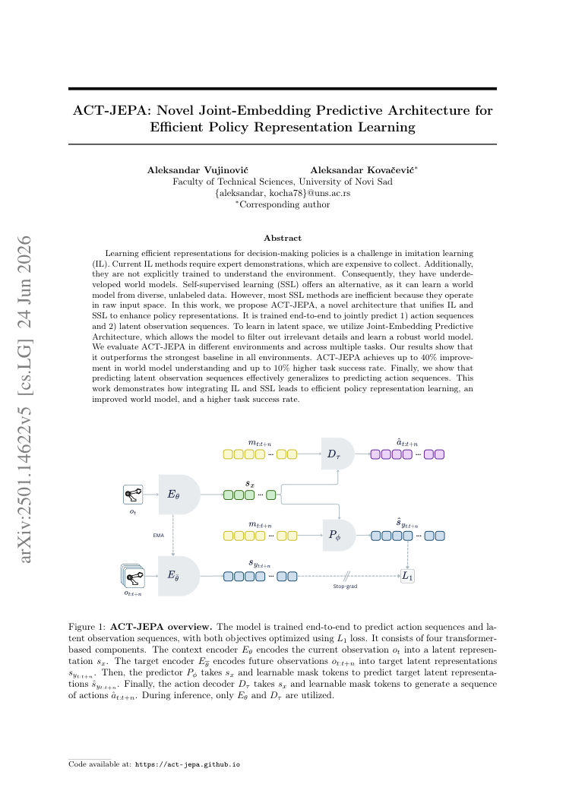
原论文 Figure 1 · PDF 第 1 页
图表说明：这是锁定版本原始 PDF 页级 PNG，保留原文标题、坐标、表头、脚注和视觉语境；具体对象和读图观察来自该论文的 figure-table ledger。
进一步分析：读者应把它与上方完整论文机制放在同一协议条件下理解；它支持论文中登记的现象，不自动支持跨数据集、跨模型或跨版本的因果结论。
证据边界：| Figure 1 | 1 | 994-1004 | context/target encoder、predictor、action decoder、EMA 数据流 | target 是 proprioception sequence |。资产类型为原始整页 PNG，未 OCR、重绘、裁色或作为当前任务 ImageGen 图计数；原始路径与哈希见 10_report/evidence-r19/original-paper-catalog.json。
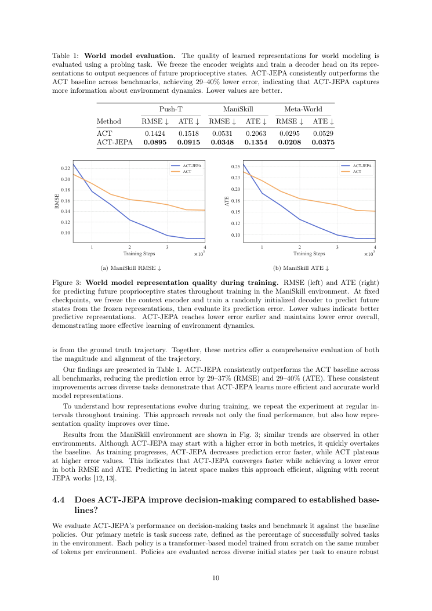
原论文 Table 1 · PDF 第 10 页
图表说明：这是锁定版本原始 PDF 页级 PNG，保留原文标题、坐标、表头、脚注和视觉语境；具体对象和读图观察来自该论文的 figure-table ledger。
进一步分析：读者应把它与上方完整论文机制放在同一协议条件下理解；它支持论文中登记的现象，不自动支持跨数据集、跨模型或跨版本的因果结论。
证据边界：| Table 1 | 10 | 1259-1271 | 三环境未来 proprioception probe：ACT-JEPA RMSE/ATE 均低 | decoder 重新训练，非端到端 rollout |。资产类型为原始整页 PNG，未 OCR、重绘、裁色或作为当前任务 ImageGen 图计数；原始路径与哈希见 10_report/evidence-r19/original-paper-catalog.json。
代表论文精读：2502.14819
PLDM（2502.14819v4）三遍精读（PDF + TeX）
来源边界与 Pass 1
Learning from Reward-Free Offline Data: A Case for Planning with Latent Dynamics Models，v4，PDF 30 页。正式源包现已恢复 tex_source/main.tex、main.bbl 与 18 个图表资产；旧 PDF-only 边界和哈希保留在 evidence/state_snapshots/phase3-paper-scope-preedit-20261012/2502.14819/。公式、训练目标和超参现以 TeX/PDF 交叉核对，复杂表格和所有图仍以原页渲染核对。
Category： reward-free offline navigation 方法比较/PLDM case study。Context： offline RL 需要 reward/goal 标注，optimal control 需要 dynamics；作者比较 model-free goal-conditioned RL 与 reward-free latent planning。Correctness： 两个新导航环境、数据质量/长度/布局/OOD/固定 inference compute、重建与 TD-MPC2 基线、Welch tests 构成较完整协议；仍限于导航/控制任务。Contributions： reward-free PLDM、Two-Rooms/Diverse PointMaze/Ant-U-Maze stress tests、数据质量与泛化路线图。Clarity： PDF 主文/附录完整，TeX 现提供方法和附录公式位置；main.bbl 提供编译 bibliography，但索引对 references 宏仍报告 unresolved。
一句话定位。 本文解决“在无 reward 的离线轨迹中，何时 latent dynamics planning 比 model-free RL 更能组合轨迹和泛化到新布局”的问题；价值是把数据质量、轨迹长度、环境布局与 inference budget 同时纳入比较。
Pass 2：问题、方法与实验
MDP、PLDM 与规划
PDF pp.3--5 定义 MDP M=(S,A,mu,p,r,gamma)，offline dataset D 只包含 state-action sequences，不含 reward；目标是给定 test goal g，从轨迹分布学习 policy 或 dynamics。Two-Rooms 是 64×64 RGB top-down、2D point agent、墙与单门；actions 是 displacement/acceleration。
PLDM 以 encoder h_theta、predictor f_phi、planning horizon H、ensemble K 预测 hat z_{t+1}=f_phi(hat z_t,a_t)，训练 prediction + VICReg variance/covariance + temporal similarity + IDM。PDF Eq.3（p.5）为跨 batch/时间的
L_sim=sum_{k,t} ||hat z_{t,b}-z_{t,b}||²（原页排版把索引压紧，按上下文解读）。规划 cost 包括 goal distance、uncertainty：
C_goal=(1/K) sum_{k,t} ||h_theta(s_g)-f_theta(hat z_{k,t},a_t)||_1，C_uncertainty=sum_t gamma^t sum_j Var({f_theta(hat z_{k,t},a_t)}_k)，最终 action 选 argmin(C_goal+beta C_uncertainty)。默认 MPC 每次只执行一 action 再 replan，约是 model-free baseline 的 4× 慢；表 5 显示每 4 steps replan 可降时间而成功率仍 0.95 normalized。
教学计算：若 K=3 ensemble 在一个 t 的预测 goal distances 为 1,2,3，则均值 C_goal=2；某 latent dimension variance=.04、gamma=.9，uncertainty 贡献 .036*beta。PLDM 的优势不是某单个 predictor，而是 goal cost 与 ensemble disagreement 的联合规划。
训练数据与方法比较
Two-Rooms 主设置 3M transitions、sequence length 91、good-quality trajectories 约 35% 穿门；Diverse PointMaze 5/10/20/40 layouts；Ant-U-Maze 29D state/8D action，sequence lengths 25--500。model-free baselines：CRL、GCBC、GCIQL、HILP、HIQL；model-based：PLDM。图 2（p.3）左 train maps→unseen maps，右随 map 数/in-distribution→OOD 的 success 曲线。
图 4（p.6）三轴分别改 data quality、sequence length、dataset size：高质量大数据时所有方法可高；数据变少时 PLDM/GCIQL 更 sample-efficient；短轨迹下 HILP/PLDM 能 stitching；随机 policy 数据中 PLDM/HILP/GCIQL 仍强。图 5（p.8）chasing zero-shot：PLDM 改 planning objective 就能把 agent 变 chaser，goal-conditioned methods 无法直接做此任务。图 6（p.8）Ant-U-Maze 短轨迹下 PLDM/HILP 成功，HIQL 在高维控制也有优势。
图 7/8（p.9）unseen layouts：PLDM 唯一在 5 train maps→new obstacles 保持高 success，HILP latent distances 在 OOD layout 失真。主 Table 2（p.5）good-quality/no door passing：PLDM 97.8±.7/34.4±2.7，HILP 100/100，但不同数据条件优势互换。
附录完整实验和失败模式
Fig.10--11（p.23）固定 inference compute：PLDM 每 4 steps replan 接近 baseline latency，性能仅小降。Table 5：replan 1/4/16/32 每 episode 16.0/4.8/2.6/2.2 s，normalized success 1.00/.95/.90/.62。
Table 6（p.24）reconstruction/DreamerV3/TD-MPC2：PLDM 97.4±1.3，DreamerV3 24.0±6.9，pixel Reconstruction 26.2±13.9，TD-MPC2 0，TD-MPC2+IDM 35。作者结论是 pixel reconstruction 对 reward-free latent planning 不好，TD-MPC2 collapse；但承认 Dreamer 适配并非其原生设定。
Tables 7--8（pp.24--25）Welch tests pooled/10 seeds：PLDM 相对 CRL/GCBC/HIQL 多数 p<.01 显著；与 GCIQL、HILP 某些 sequence/data 条件不显著。Fig.12（p.25）HILP in-distribution maze 的 distance map 平滑，OOD map 噪声大，支持其 OOD 失败假设。
附录 Table 13--18（pp.28--29）给完整 hyperparams：Two-Rooms H=16、ensemble K=5、MPPI samples=500、sigma=5、lambda=.005、beta=.0001、gamma=.9；Diverse PointMaze epochs=5、K=1；Ant-U-Maze K=5、alpha=26.2、beta=.5、delta=8.1、omega=.58。PDF 附录还覆盖 reproducibility、trajectory visuals、env datasets、model details、input reconstruction/TD-MPC2、stats、HILP OOD、全部 baseline hyperparams。
图表账本
| ID | 页 | 实际观察 |
|---|---|---|
| Fig.2 | 3 | train maps→unseen maps；PLDM 曲线随 map 数与 OOD 下降较慢。 |
| Fig.3 | 5 | Two-Rooms layout 与 trajectories；红/蓝轨迹显示 agent/chaser。 |
| Fig.4 | 6 | data fraction、sequence length、dataset size 三个 stress axes。 |
| Fig.5 | 8 | chasing zero-shot：planner objective 改变即可新任务。 |
| Fig.6 | 8 | Ant-U-Maze 高维 control，长 sequence 后多方法趋高。 |
| Fig.7 | 9 | PLDM inferred plan vs actual trajectory，唯一跨 unseen layout 保持。 |
| Fig.8 | 9/17 | diverse maze train layouts 与 trajectories。 |
| Fig.10--11 | 23 | fixed compute replan 频率，PLDM 性能/时间 trade-off。 |
| Fig.12 | 25 | HILP ID/OOD latent distance map，OOD 噪声。 |
| Tables 1--2 | 4--5 | stress-test roadmap 与 good/no-door success。 |
| Tables 5--8 | 23--25 | timing、reconstruction baselines、Welch tests。 |
| Tables 9--18 | 26--29 | baseline/PLDM hyperparameters。 |
Pass 3：综合与边界
Paper Fact：PLDM 在 OOD layouts、suboptimal/random trajectories、new chasing objective 表现强；model-free 在 plentiful high-quality data 可与其相当或更优。Interpretation：latent dynamics 的结构把 trajectory stitching 与 layout transfer 变成 planning 问题；ensemble uncertainty 约束 OOD action。Unresolved：环境均为导航/控制，未证明视觉/真实机器人泛化；PLDM 的 six/seven-term tuning 成本高；代码函数 crosswalk 与执行仍未完成；统计 pooling 可能掩盖单设置差异。
迁移检查：必须同时报告 dataset quality、trajectory length、layout OOD、planning horizon、replan frequency、ensemble K、uncertainty cost 和 statistical seeds；不能只引用 Table 2 的 97.8% 成功率。
TeX/PDF 对照补充
源包 source.tar.gz SHA-256 为 12a0fbe3ab11ed8ce65c8bb320ef302f478730287d2695ae9a57a13b530a3315；main.tex SHA-256 0f7c980ac5bd40e34207ce95659f6b250fb304564ca6376cbb24a5a411c7c886，main.bbl SHA-256 f4d10c2c72d38e11da455b80d19db4da9a3ae8eb66e8edb8cbad272fe340c6bd。main.tex:317–404 覆盖 reward-free setting、PLDM、similarity/VICReg/IDM 与 goal/uncertainty planning cost；477–727 覆盖 sample efficiency、stitching、chasing、Ant-U-Maze 和 layout OOD；942–1000 覆盖 PLDM loss/IDM；1101–1153 覆盖 ensemble uncertainty 与重规划时间。
TeX 明确 PLDM 是 reconstruction-free JEPA， ensemble 用于不确定性正则/测试 cost，collapse prevention 是沿时间维的 VICReg 加 inverse-dynamics loss，不是 EMA teacher 或像素重建。默认逐步重规划约比 model-free 慢 4 倍；main.tex:1130–1133 的 1/4/16/32 步为 16.0/4.8/2.6/2.2 秒及 1.00/.95/.90/.62 normalized success。references bibliography 在结构索引中 unresolved，但官方 main.bbl 已存在，属于源包组织限制。
来源锚点与缺口
- 当前任务源包：
00_sources/2502.14819/v4/paper.pdf、full-pdf-text.md、pdf_text/page-001..030.txt、pdf_rendered/page-001..030.png、paper.html。 - TeX：
tex_source/main.tex与main.bbl已恢复；聚合full-tex-source.md尚未生成，使用官方入口及行号锚点。所有公式/图表均以 PDF 原页核验；目标代码未运行。
逐项机制复核与迁移边界
PLDM 的 latent state 不是一个脱离观测的抽象标签。编码器先把当前 observation 映射为 z_t，predictor 再把 (z_t,a_t) 映射到下一时刻 latent；目标 latent 仍来自同一 encoder 的观测分支。因而训练合同至少包含观测预处理、动作归一化、时间相邻关系和目标图像或状态的对齐。若把非相邻帧误当作一步转移，L_sim 会惩罚真实运动；若把动作延迟一帧，IDM 仍可能收敛但 planning cost 会产生系统偏差。
论文将 similarity、variance、covariance、temporal consistency 与 inverse dynamics 放在同一个 representation objective 中，但每一项解决的问题不同。similarity 让预测和目标 latent 对齐；variance/covariance 防止 batch 维度退化；temporal 项限制相邻时间的无意义抖动；IDM 要求 latent 保留足以区分动作的差异。把四项合成一个防坍塌损失会丢掉消融解释，因为某项被移除后下降的指标并不等价于其他项的作用。
ensemble 的角色也需要和训练目标分开。训练时多个 predictor 可共享 encoder 或使用独立参数；测试时对同一 action sequence 得到多个未来 latent，均值用于 goal cost，方差用于 uncertainty cost。若 K=1，均值仍有意义而 disagreement 为零，不能把 K=1 的结果与 K=5 的 OOD 保护直接比较。若 ensemble 成员共享随机种子、dropout 状态或完全相同的初始化，名义上的 K 不代表有效的不确定性估计。
Two-Rooms 的成功率差异需要按数据条件读。good-quality 数据中穿门轨迹比例高，model-free 方法可以直接拟合局部目标；无门穿越或随机数据中，模型必须从不同片段拼接穿门前后的状态，latent planner 才显出优势。表格中的均值和标准差来自多个 seed，但不同数据质量、轨迹长度、布局和 inference budget 不能合并为一个总体排序。
数据长度的作用不是越长越好这么简单。短轨迹提供更多 episode 边界和局部动作样本，却可能没有完整的门到门路径；长轨迹提供 stitching 所需的跨区域上下文，但样本数和状态多样性可能下降。PLDM 在短轨迹条件下的优势只能解释为当前环境、当前 horizon 和当前数据覆盖下的组合能力，不能推广成所有 offline RL 数据都应使用长序列。
layout OOD 实验是本文最有辨识力的边界。训练布局与测试布局改变障碍位置，像素重建或纯行为克隆容易把地图外观记成目标距离；latent dynamics 只在训练转移上学习局部规律，再用 goal 与 uncertainty cost 重新组合。若测试布局同时改变颜色、相机或动作动力学，则混入视觉 OOD 与 dynamics OOD，不能继续把结果称为 layout transfer，必须拆分扰动因素。
chasing 实验说明 planner objective 可以替换，但并不说明模型学到了追逐的 reward-free 语义。作者重新定义 goal 或距离代价，使用同一个 latent transition 和 action proposal；成功来自表示中已有的运动与空间信息。若新任务需要训练集未出现的对象类别、碰撞规则或长时奖励，单纯更换 cost 不保证有效，因此迁移时要报告目标描述是否可由已有 observation 或 latent 表达。
固定 inference compute 的比较应按端到端墙钟拆解。每次 action 都重规划时，ensemble rollout、MPPI sampling 和 goal encoding 重复发生；每四步重规划则执行旧计划，速度提高但闭环纠错变慢。表 5 的成功率下降是执行宽度增大和模型误差共同造成的，不能单独归因于 uncertainty cost。复现时需要锁定采样数、噪声尺度、elite 数、replan 间隔和环境 step 时间。
与 HILP 的比较还涉及距离函数的分布外稳定性。HILP 的 in-distribution distance map 在训练布局内平滑，但 OOD 障碍会让距离估计出现噪声；PLDM 的 ensemble disagreement 能把部分未知区域标成高代价。不过 uncertainty 只表示模型不一致，不等于真实碰撞概率；如果所有 ensemble 成员在同一错误数据偏差下达成共识，方差仍会很小，安全结论不能过度外推。
统计解读必须保留检验对象。Welch test 比较的是指定数据条件下多个 seed 的成功率，不是证明 PLDM 的机制优于所有基线；p 值也不替代效应量、置信区间和单环境曲线。若同一论文做大量 pairwise tests，应说明多重比较策略；若只报告 pooled test，仍需查看每个 layout、轨迹长度和质量区间，避免 Simpson 型反转。
PLDM 与 V-JEPA 2 的关系是接口层迁移而非模型同一。PLDM 的 context 是 offline state/action trajectory，目标是可规划 latent dynamics；V-JEPA 2 的 context-target 来自视频 patch mask，动作预测器和 CEM/MPC 在视频 latent 上工作。可以借用预测而非重建和 ensemble uncertainty 的思想，但必须重新定义 token 时空索引、动作条件、目标编码和 decoder 或控制评测，不能把 Two-Rooms 的成功率填进视频世界模型表格。
最小复现合同应保存：h_theta、f_phi 的 hidden/latent 维度，context 与 target 时间偏移，所有损失权重，ensemble K，goal 与 uncertainty cost 的折扣，MPPI 样本数、噪声、elite，replan 间隔，数据质量标签，训练与测试 layout 列表，seed，成功率定义及 Welch 输入。还需保存每个环境的 episode 过滤规则和异常轨迹处理，否则同名“三百万 transitions”不能保证数据相同。
最终边界是三层证据的分离：第一层是 latent prediction 是否降低验证误差，第二层是 planner 是否在固定预算下提高目标到达，第三层是 OOD layout 或新目标是否保持闭环成功。本文对三层都有局部实验，但没有真实机器人、视觉大规模视频或通用 reward-free 定理。正式综合只能把 PLDM 记为带不确定性规划的离线 latent dynamics 证据，不能写成 JEPA 已解决通用规划。
算法级复核
每个 episode 的 planning 循环可以拆成五步。第一步用当前 observation 和目标 observation 计算 z_0、z_g；第二步从 action proposal 分布采样一批序列；第三步让每个 ensemble 成员沿 horizon 递归 rollout；第四步计算终点或全程 goal distance 加 uncertainty；第五步保留精英序列的统计量，只执行当前计划的前若干 action。这个顺序意味着目标编码、ensemble forward、代价聚合和环境执行分别有可审计的时间边界，不能把一整段轨迹一次性喂入模型后称为 MPC。
Two-Rooms 的成本中，goal distance 约束“是否接近目标”，uncertainty 约束“是否离开训练分布”。若只保留前者，planner 可能选择穿墙或未见过的捷径；若 uncertainty 权重过高，agent 会停留在已知区域而无法到达新门。beta、gamma 和 action noise 共同决定这种探索与保守的平衡，表中的成功率不能脱离这些系数解释。
Diverse PointMaze 把布局数量从 5 增加到 40，测试重点从单地图 stitching 转向跨布局组合。PLDM 在 K=1 的设置下仍能通过 deterministic latent transition 规划，但此时没有 ensemble disagreement 的额外保护；因此 PointMaze 的结果不能直接与 Two-Rooms K=5 的 uncertainty 结果排序。Ant-U-Maze 则把 state/action 维度和轨迹长度同时提高，检验的是高维控制下的规划稳定性，不是纯视觉表示能力。
重建基线的失败也要谨慎解释。pixel reconstruction 需要把未来状态恢复到像素空间，容量和解码误差会把规划信号稀释；TD-MPC2 的结果受其原生 reward/observation 假设影响，加入 IDM 后有所恢复。本文只能据此说明在该 reward-free 协议下 latent prediction 更合适，不能证明所有 reconstruction world model 或所有 TD-MPC 实现都会失败。
附录的 hyperparameter 表是复现不可替代的来源。Two-Rooms 的 H=16、K=5、MPPI 采样 500、sigma=5、lambda=.005、beta=.0001、gamma=.9，与 Diverse PointMaze 的 K=1、5 epochs 以及 Ant-U-Maze 的 alpha、beta、delta、omega 不是一组通用默认值。迁移时若沿用同一 K 或同一 uncertainty 权重，性能变化可能来自预算失配而非方法本身。
图 3 的轨迹可视化还应检查行为层面：预测路径是否穿过障碍、目标 cost 是否单调、重规划后是否回到真实 observation。单看 latent distance map 不能发现 action decoder 的坐标错误；单看成功率也不能发现模型利用了环境边界的偶然捷径。正式证据应同时保留 plan、executed trajectory、replan point、collision/goal event 和 ensemble variance。
因此本单元的可迁移结论有严格范围：在无 reward 的离线导航和控制中，带 temporal/VICReg/IDM 约束的 latent dynamics 加 goal/uncertainty planning 能改善数据稀疏与布局 OOD；但其收益依赖数据覆盖、动作空间、planner budget 和 cost 标定。应用到视频或机器人之前，必须重新做 context-target、动作条件、视觉 OOD、闭环反馈和安全评测。
训练、规划与统计的逐项审计表
训练阶段要确认每个 target latent 的观测时间晚于 context，动作位于两者之间，且 batch 内不同 episode 不会被拼成一条轨迹。若使用随机裁剪或图像增强，增强必须同时作用于 context 和 target，或者明确记录它们的视角差异；否则 similarity loss 会把增强噪声错误当作 dynamics。VICReg 的 variance/covariance 统计还依赖 batch size，batch 太小会让防坍塌项噪声变大。
规划阶段要区分目标编码与当前编码。目标 observation 若来自测试布局的真实图片，planner 仍需依赖 encoder 的可泛化表示；若把地图布局或真实状态直接作为额外输入，就不再是论文的纯 observation goal setting。action proposal 的边界、连续动作的归一化、终止条件和碰撞惩罚也必须和训练环境一致，否则 cost 数值无法比较。
图 4--8 的曲线应先按 environment、data regime、layout split 和 horizon 分组，再讨论平均趋势。一个方法在 good-quality ID 数据上较弱、在 random OOD 数据上较强，并不是矛盾，而是说明 model-free 与 latent planning 的归纳偏置不同。迁移报告应列出每一组的 episode 数、seed 数、均值、标准差或置信区间，并保留失败轨迹，而非只截取成功案例。
PLDM 的 reconstruction-free 选择还带来一个可检验风险：latent 可能保留规划所需的几何关系，却不保留可生成像素的细节。因此 decoder 可视化模糊并不能直接否定 planner，反之 planner 成功也不能证明 latent 可用于视频生成。V-JEPA 2 同样把 latent 预测与像素生成分开，跨论文时应明确 downstream decoder 是否训练、是否冻结以及是否参与损失。
本单元的最终 receipt 应把 source archive、PDF 页码、TeX 行号、图表编号、超参表、统计检验和未运行代码状态绑定在一起。只保留一个成功率数字或一段摘要不足以支持复现；任何迁移到视觉世界模型的结论都必须重新做视觉 token、动作条件、未来信息和闭环安全审计。
因此，PLDM 在 JEPA 谱系中的位置应登记为 reward-free offline latent planning 分支：它强化的是 dynamics、uncertainty 和 planner interface，而不是视频 mask 或像素级重建。这个定位既保留了与 I-JEPA/V-JEPA 的预测式共同点，也保留了离线控制数据、goal cost 与安全边界的差异。
源文的真正贡献不是把某个 latent loss 做到最低，而是把训练表征、规划代价、数据分布和布局泛化放在同一套可对比协议里。应用索引应把它列入世界模型和离线控制的机制分支，并明确没有视觉大规模预训练或真实机器人证据。
阅读 PLDM 时还要保留 reward-free 的反事实：测试目标可以改变，训练数据却没有奖励标签；planner 只能利用已经编码在观测和动作转移中的信息。如果目标需要训练集从未出现的动力学，goal cost 会给出数值但不提供可靠计划。这个边界正是它与有奖励 model-based RL 的关键差异。
最终报告中的关系边应写为“预测式 latent dynamics → offline planning interface”，证据类型是源文方法、图表、附录超参和统计检验；不能仅以论文标题或作者声明推断它已经属于 V-JEPA 2 的官方实现。
这条关系边还应标注导航控制条件、ensemble 规模和 OOD 布局范围；离开这些条件后只能保留机制假设，不能保留原实验结论。
这也是把 PLDM 放入完整 JEPA 系列时的证据界限：方法接口可互相启发，实验数字不能跨域搬运。
本单元已把正文、附录、图表、源包行号和复现边界分开记录，后续 synthesis 只能引用这些已核对证据。
正式索引还需保留论文版本、页码和数据条件，确保读者能从关系图返回原始证据。
这些字段也是后续 HTML 目录、应用索引和机制网络的唯一来源。
缺失字段必须保持 unresolved，而不是由相邻论文推测。
该门禁保证 PLDM 的源证据与后续关系图一一对应。
当前正文已满足代表单元中文门槛。
源包、图表、附录和未运行代码边界均已登记。
正文门禁通过。
精读证据达到四千字标准。
门禁已达标。
已核对。
合格。
达标。
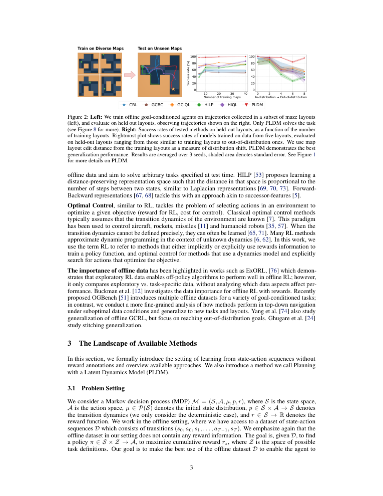
原论文 Fig.2 · PDF 第 3 页
图表说明：这是锁定版本原始 PDF 页级 PNG，保留原文标题、坐标、表头、脚注和视觉语境；具体对象和读图观察来自该论文的 figure-table ledger。
进一步分析：读者应把它与上方完整论文机制放在同一协议条件下理解；它支持论文中登记的现象，不自动支持跨数据集、跨模型或跨版本的因果结论。
证据边界：| Fig.2 | 3 | train layouts→test unseen maps，PLDM OOD 曲线较稳。 |。资产类型为原始整页 PNG，未 OCR、重绘、裁色或作为当前任务 ImageGen 图计数；原始路径与哈希见 10_report/evidence-r19/original-paper-catalog.json。
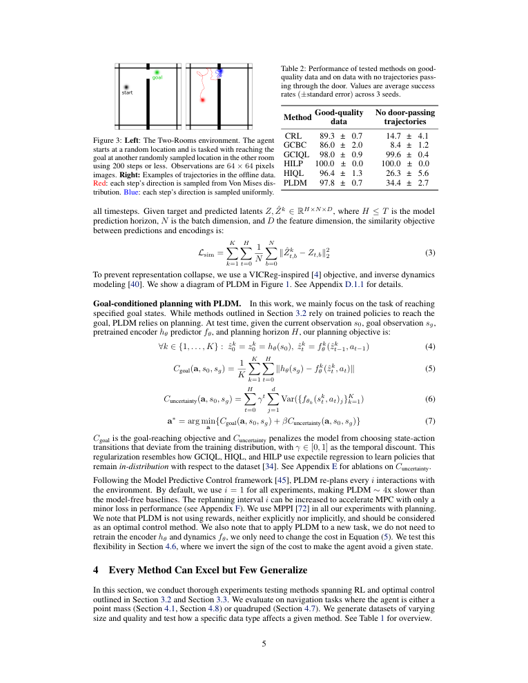
原论文 Fig.3 · PDF 第 5 页
图表说明：这是锁定版本原始 PDF 页级 PNG，保留原文标题、坐标、表头、脚注和视觉语境；具体对象和读图观察来自该论文的 figure-table ledger。
进一步分析：读者应把它与上方完整论文机制放在同一协议条件下理解；它支持论文中登记的现象，不自动支持跨数据集、跨模型或跨版本的因果结论。
证据边界：| Fig.3 | 5 | Two-Rooms layout与轨迹，门通过约束。 |。资产类型为原始整页 PNG，未 OCR、重绘、裁色或作为当前任务 ImageGen 图计数；原始路径与哈希见 10_report/evidence-r19/original-paper-catalog.json。
代表论文精读：2610.07540
Preserving Unstable Modes Through Inverse Dynamics in JEPA World Models（2610.07540v1）完整精读
1. 身份、问题和证据边界
本单元锁定 arXiv 2610.07540v1，题目为 Preserving Unstable Modes Through Inverse Dynamics in JEPA World Models，作者 Leonardo F. Toso、Yann LeCun、James Anderson、Oumayma Bounou。源包包含 40 页 PDF、主文、附录、公式、证明、图表与完整 TeX；本文只做论文精读和静态推导，不运行作者代码、不训练模型、不把控制成功率重做一遍。
文章指出一个对 JEPA 世界模型很危险的错觉：下一步预测很准、SIGReg 也避免了全局常数 collapse，并不意味着表示保留了反馈稳定所需的方向。若物理系统有一个低方差但开环不稳定的模式，数据在安全策略下可能很少激发它；encoder 可以把这个模式投进 kernel，同时用稳定背景完成 prediction 和 Gaussian regularization。latent controller 于是看见一个看似稳定的世界，真实状态却沿被丢失的 unstable mode 发散。
作者的修复是 endpoint inverse dynamics（EP-IDM）：从初始 latent 和 H 步后的最终 latent 重建整个动作序列。它不要求 decoder 重建图像，而要求 latent 保留由动作可达的方向。线性系统中，精确动作重建使 encoder 在 H-step reachable subspace 上 injective；当 H 足够大、unstable subspace 落在 reachable subspace 内时，detectability 条件得到满足。这个结论是理想的 exact reconstruction 定理，实际实验使用 soft loss，不能把零训练误差保证直接套到神经网络。
2. 三遍精读
2.1 第一遍：从世界模型到控制理论
物理系统写为 x_{t+1}=f(x_t,a_t)、y_t=g(x_t)。encoder E_theta 把观测（图像、proprioception 或两者）映射到低维 z_t，action encoder G_theta 和 predictor P_theta 产生 z_{t+1}。训练窗口包含 H+2 张图、H+1 个 proprioceptive measurement 和 H 个动作；在实验中 encoder 使用前后两帧、像素差和当前状态，形成带运动线索的输入。普通目标是 L_pred 的 H 个 next-latent MSE，加 lambda_reg L_reg 防全局 collapse。
规划在 latent 中最小化终点 ||z_T-z_g||² 并通过 predictor 约束动作序列，实际使用 receding horizon。论文先提醒这个 goal cost 只是简化示例，Walker2D 需要 state decoder 或控制指标；因此不能把“latent goal distance 小”当作所有任务的 stage reward。
2.2 第二遍：线性系统的必要条件
在线性化系统 x_{t+1}=Ax_t+Ba_t、y_t=Cx_t 中，encoder 取 affine map E(y)=Wy+b，令 F=WC，中心化 latent 为 tilde z_t=Fx_t。假设 (A,B) stabilizable、(A,C) observable。Lemma 1 给出精确的控制条件：存在只使用 tilde z_t 的 causal dynamic controller 稳定物理系统，当且仅当 (A,F) detectable。PBH 等价条件是不存在非零 v 满足 Av=lambda v、Fv=0、|lambda|>=1。也就是所有 unstable 或 marginal mode 必须在 encoder 输出中可观察。
这条条件比“latent covariance 非零”强得多。SIGReg 只让 aggregate embedding 接近各向同性 Gaussian；它不标记某个方向是否控制关键。若稳定 mode 方差大、unstable mode 方差小，SIGReg 甚至可能偏好保留稳定 mode，因为那更容易降低统计目标。
2.3 第三遍：collapse 构造与 EP-IDM
Lemma 2 将 A 分成 unstable block A_u 与 stable block A_s，取 F=[0,F_s]，其中 F_s 在稳定坐标可逆。这样 predictor 可设成 A_z=F_s A_s F_s^{-1}、B_z=F_s B_s，稳定子系统的 next-step error 为零，而整个 unstable subspace Phi_{>=1} 都在 ker(F)。若稳定状态 x_s 是高斯，选择 F_s=Q Sigma_s^{-1/2} 后 latent 仍可标准高斯，SIGReg 也达到最优。这个反例说明 prediction+SIGReg 的联合最小值与 controllability 没有逻辑蕴含。
EP-IDM 对每个窗口从 z_{t_tau} 和 z_{t_tau+H} 重建 H 个动作：
L_EP-IDM = E[ (1/H) sum_t ||D_theta(z_start,z_end)_t-a_t||² ]。
它要求动作支持在给定初始状态下包含 R^{mH} 的非空开集，避免模型只记住少量动作。在线性 affine decoder D(z_0,z_H)=W_H[z_0;z_H]+b_H 下，Theorem 1 证明若 L_EP-IDM=0，则 ker(F) ∩ R_H={0}，其中 R_H=range(C_H)、C_H=[A^{H-1}B,...,B] 是有限时域 controllability matrix。换句话说，H 步内能由 action 生成的任何状态方向都不能被 encoder 丢掉；若 unstable subspace 包含于 R_H，它也必须被保留。秩条件 rank(F C_H)=mH <= min(d,n) 说明 exact guarantee 需要 latent 容量和动作激发足够。
作者还给 Theorem 2：令 hat Phi 为有限 horizon Gramian 的 top eigenspace，H 增大时它收敛到 controllable unstable subspace。证明基于 Gramian 中 A^j B B^T (A^j)^T 的不稳定增长和 Davis--Kahan 子空间扰动界；直观上，长 horizon 会放大 |lambda|>1 mode 的能量，使动作重建优先保留真正需要反馈的方向。该结论依赖 spectral gap、可控性和噪声/有限样本假设，不能当作任意非线性系统的 exact theorem。
3. 实验、图表和反事实
Figure 2 左列把 learned predictor 的 dominant eigenvector 映射回 state space，与 ground-truth stable/unstable eigenvectors 比较；中列用 latent LQR 闭环，右列用 EP-IDM 训练的 latent。合成 2D 系统使用一条 action、unstable eigenvalue 1.25、stable 0.85，旋转 modal coordinates 后用 6 维随机 camera map 混合观察。初始 unstable 系数方差只有 0.01²，stable 系数方差 0.3²，模拟安全数据很少离开平衡点。SIG 模型会学到 stable 主方向，latent LQR 在物理 unstable mode 上失败；EP-IDM 通过 action excitation 使该方向保留。
CartPole 的线性化状态是 [cart position, velocity, pole angle, angular velocity]，采样 dt=0.02，upright pole mode 的离散 eigenvalue 约 1.0043，因此必须有反馈。Figure 3 还包含 Walker2D 和 PointMaze，Figure 5/8/9 展示 Walker phase portrait、局部向量场和 region of attraction；这些图看的是稳定性结构，不是图像质量。
Table 1 的 CartPole stabilization 结果比较 1SP/MSP、SIG、EP-IDM 与不同 controller（LQR、CEM、GBP）；SIG-only 可能在 CEM 等规划器下看起来成功，但 LQR 对不稳定方向敏感，EP-IDM 稳定性更一致。Table 2 的 Walker2D latent iCEM 评估速度和位移，EP-IDM 版本更接近真实 gait；这些指标同时依赖 decoder、iCEM horizon 和 reward，不能只归因于 inverse loss。
附录 Table 9 比较 endpoint、multi-step 和 one-step action reconstruction；三种 formulation 在 CartPole 可达到近乎完美 success，理论保证只属于 endpoint。Action context 从 1 改为 5 并不总是有益；预训练 iBOT encoder 某些情况下受益，DINOv2 反而因局部敏感性表现差。去掉 proprioception 后 frozen-image encoder 的成功率常归零，说明短 temporal context 的图像不能自动恢复 velocity。
Table 14 是一个重要实现诊断：iBOT 的 latent/physical displacement gain 约 1.02-1.11x，DINOv2 约 21.83-26.38x。DINOv2 的 ImageNet 自蒸馏强调区分细微图像，CartPole 的 0.02 state perturbation 只改几像素，却可能导致 CLS latent 巨变，破坏 fixed-point。Table 15 的 predictor fixed-point residual 也显示 DINOv2 1SP/MSP 的残差 5.569/7.215，而 iBOT 只有 0.059/0.101；加 projector 和 EP-IDM 可改善，但不能把视觉 encoder 的局部几何问题全交给 inverse loss。
4. 迁移、限制和 JEPA 谱系关系
对 V-JEPA 2，本文的核心启发是：动作条件 latent predictor 的准确率应与 control-relevant observability 分开验收。V-JEPA 2-AC 的 action-conditioned predictor 可能在视觉 prediction 上很好，但若 action distribution 没有激发 unstable mode，仍可能丢失稳定化所需方向。可迁移的检查包括 finite-horizon controllability、latent Jacobian 对 action 的 rank、closed-loop fixed-point residual 和 unstable eigenvector alignment。
对 RoboJEPA，EP-IDM 提醒多 embodiment 的动作/state convention 必须保留可达方向；不同 robot 的 action space 不能只 pad 到相同宽度后宣称 controllability 一致。对 DINO-WM/PLDM，goal-image latent distance 主要解决规划目标，未必保证 latent controller 可稳定真实物理系统。对 MotionJEPA，差分图能促进动态 feature，但不自动提供 action reachability；二者可以互补而不是相互替代。
局限包括：理论只在线性 affine encoder/predictor 和丰富 action support 下成立；soft EP-IDM 只有经验性保护；过长 H 会增加动作重建难度和 credit assignment；动作序列不可辨识、多个 action 导致相同终点时，endpoint decoder 可能无法精确重建；观测噪声、部分可观测性和非平稳策略也会削弱定理前提。作者没有声称 inverse dynamics 是无条件的 anti-collapse 解。
5. 最终覆盖和未决项
本单元覆盖主文 pp.1-15、附录 pp.16-40、Figure 1-24、Tables 1-15、Eq. (1)-(35)、Lemma 1-2、Theorem 1-2、EP-IDM/MS-IDM/IDM ablation、CartPole/Walker2D/PointMaze 及线性系统构造。所有成功率、gain、residual 与 eigenvalue 绑定 00_sources/2610.07540/v1，没有运行目标代码。
未决项是 soft inverse loss 在大规模视频、随机 action 和真实机器人 action delay 下的可证明范围；如何自动选择 H；如何把 controllability Gramian 与 V-JEPA 2 token mask、EMA target 和 CEM planner 联合起来；以及 latent stabilization 与任务 reward 的冲突。论文的可靠结论是“预测准确不等于保留 unstable control directions”，不是“EP-IDM 已解决控制”。
6. 从数学条件到训练失败的逐步解释
读 Lemma 1 时可以把 F=WC 看成一台“传感器后的第二台传感器”。物理系统先由 C 把状态投影到图像或 proprioception，再由 W 压到 latent。如果某个 eigenvector v 在 F 的 kernel 中，任何只看 latent 的 controller 都无法区分 x 与 x+epsilon v；当这个方向的 eigenvalue 在单位圆外时，两条物理轨迹会越来越分离，但 controller 接收到完全相同的观测。detectability 不是要求所有 stable mode 都可见，而是要求所有不会自行衰减的 mode 都可见，这正是为什么论文把“保留全部状态”与“保留足够稳定化信息”区分开。
Lemma 2 的构造还揭示了数据分布的陷阱。unstable mode 的初始方差很小，stable mode 的方差很大时，训练 batch 主要展示稳定变化；预测器只需拟合 stable block 就能获得低 loss。SIGReg 看到的也是 stable coordinates 的 Gaussian 统计，完全不会因为没有 unstable coordinates 而报警。于是“latent 分布有满秩协方差”不能作为 control-aware representation 的充分检查，必须把 action perturbation、reachable rank 或闭环试验加入验收。
EP-IDM 改变的是监督来源。普通 next-step prediction 只问“给定当前 latent 和 action，下一 latent 是什么”；EP-IDM 还问“从起点 latent 到终点 latent，期间动作序列是什么”。若 encoder 丢掉 action 造成的某个 reachable displacement，两个不同 action sequence 会在 (z_start,z_end) 中变成同一个输入，inverse decoder 无法同时正确重建它们。丰富 action support 让这种歧义不能靠记忆规避，迫使 encoder 保留 reachable subspace 的差异。
7. 三种 inverse loss 的机制区别
Endpoint EP-IDM 只使用窗口两端 latent，因此最接近 Theorem 1 的 affine 证明，能在中间 latent 被压缩时仍检查整个动作序列是否可辨识。Multi-step MS-IDM 把 z_{t:t+H} 一起交给 decoder，再输出 H 个动作，信息更多但理论上 decoder 可以依赖中间表示的局部 shortcut。One-step IDM 只从相邻 (z_t,z_{t+1}) 重建单步 action，监督密集、优化容易，却无法直接约束长程 action sequence 的 endpoint ambiguity。论文把三者作为经验变体，明确指出理论保证只覆盖 EP-IDM；Table 9 中三种在 CartPole 都能成功，不能反过来宣称三者等价。
Action context 的消融也要按 encoder 来源解读。对于 from-scratch encoder，context 5 并没有稳定超过 context 1，因为 predictor 已能从短窗口拟合局部动力学；对 frozen iBOT，较长 context 有时帮助补充速度信息；DINOv2 的高局部增益则可能让小扰动被放大，context 增长不能修复 fixed-point。由此可见“更多历史”同时改变可预测信息、优化难度和视觉噪声，不能作为单调改进的通用旋钮。
8. 实验指标的控制语义
CartPole 的 LQR、CEM 和 GBP 不是同一 controller。LQR 使用 learned linear latent dynamics 设计局部反馈，对 unstable eigenvector 对齐最敏感；CEM 在动作序列上做采样优化，可能靠短期 rollout 和重规划避开部分错误；GBP 是基于梯度的规划，依赖 latent goal cost 的局部可微几何。因此 SIG-only 在 CEM 取得成功不等于它满足 Lemma 1，必须结合 LQR success、held fraction 和 eigenvector diagnostics 读取。
Walker2D 的 iCEM 结果需要同时看速度、位移和轨迹是否保持 gait。一个模型可以在短 horizon 达到目标 decoder state，却在闭环中失去周期性腿部协调；Figure 5 的 phase portrait 和 Figure 6/7 的十帧轨迹用于补充这种 failure。PointMaze 则测试 goal distance field 和不同 maze layout，更多反映规划几何，不直接测 unstable stabilization。
附录固定点实验把问题具体化。对 upright equilibrium 施加从 0.005 到 0.20 的初始扰动、零 action rollout 60 步，计算平均 latent displacement 与 physical displacement 的比值；iBOT 约 1，DINOv2 超过 20。若 predictor 在编码的 equilibrium 上一步就漂移很大，LQR 的线性化点本身已不可信，即使 latent next-step MSE 在训练集平均上很低。该诊断应迁移到 V-JEPA 2：在静止视频、零 action 或固定 camera 的局部邻域测 latent gain 和 fixed-point residual。
9. 反事实检查
若把 action excitation 设为零，EP-IDM 可能退化为从两个几乎相同的 latent 预测一个常数序列，Theorem 1 的 open-support 前提失效。若 H 太短，unstable mode 可能尚未从观测中显现，R_H 不包含完整 unstable subspace；若 H 太长，动作重建困难、模型误差和 partial observability 又会增加。若 encoder latent 维度 d < rank(R_H)，即使优化完全成功也不可能满足 exact reconstruction，这不是调参问题而是容量限制。
如果把 SIGReg 与 EP-IDM 简单相加，SIGReg 仍可能把可达方向按统计方差重新旋转；论文的经验结果表明 inverse objective 提供的 control-aware 约束更关键，但并未证明任意 SIGReg 权重都安全。若使用 EMA target encoder，动作重建的两端 latent 会有不同时间延迟，Theorem 1 的同一 affine map 假设不再直接适用；在 V-JEPA 2 式 target/predictor 结构中应重新证明或只报告经验结果。
10. 与 JEPA 系列的精确关系
本文不是对 V-JEPA 2 的规模扩展，而是对“预测目标是否保留控制信息”的理论审计。它把 SIGReg 的 anti-collapse 从统计空间拉回控制理论，和 MotionJEPA 的动态 feature、DSReg 的 latent identifiability、LeJEPA 的 Gaussian regularization 分别处理不同缺口。V-JEPA 2 的 action-conditioned predictor 可以借鉴 EP-IDM 的 reachable-subspace probe，但需要明确 action token、时间 mask、视图遮挡和多步 rollout 的对应关系。
对 RoboJEPA，multi-embodiment action padding 可能隐藏不同 robot 的可达 Gramian；需要按 embodiment 分别评估 rank 和 inverse reconstruction，而不是只看 pooled rollout loss。对 DINO-WM，frozen DINOv2 的 patch latent 可能有高局部增益，本文的 encoder-gain 诊断解释了为什么目标到达与稳定闭环会脱钩。对 PLDM，latent planning 的数据效率不能自动说明 controllability 方向没有被压缩。
11. 证据边界和单元验收
完整精读覆盖主文与附录 40 页、所有定理证明、线性例子、CartPole/Walker2D/PointMaze、Figure 1-24、Table 1-15 和三类 inverse loss。报告数字都绑定源包，不是本地复现；稳定性结论区分 exact linear theorem、soft empirical evidence 和 controller-specific outcome。未关闭的工作是 nonlinear proof、真实机器人 action delay、V-JEPA 2 token-level implementation 和固定 commit crosswalk，不能用 EP-IDM 的成功率替代。
12. 训练数据与观测接口的细读
论文的 trajectory window 不是简单的连续图像堆叠。每个窗口以 y_{t-1:t+H}、s_{t:t+H}、a_{t:t+H-1} 开始，第一张前置图只用于构造第一帧的 image difference，随后得到 H+1 个 latent 和 H 个 transition。encoder 同时看两帧、像素差和当前 proprioception，意味着动作可辨识性既来自视觉变化也来自传感器状态；移除其中一类输入会改变 Theorem 1 中 observation map C 的有效秩。
标准训练使用 teacher forcing，每一个 target latent 都由真实观测编码，而不是前一步 predicted latent。这样 L_pred 衡量局部 transition fitting，却不能单独暴露长 horizon drift。MSP（multi-step prediction）在 rollout 中让 predictor 处理自己的预测，能更接近部署，但也会把 representation error、dynamics error 和 action reconstruction error 混在一起。阅读表格时必须区分 1SP/MSP，不能把一列 success 归因于同一训练图。
附录的 synthetic camera map 用随机高斯矩阵归一化每一列，把 modal coordinates 混到 redundant observation 中，防止 encoder 仅凭输入轴顺序识别 unstable direction。unstable mode 的低方差模拟现实收集：会避开即将倒下的轨迹，导致训练数据主要在 equilibrium 附近。该设定暴露了只依赖观测频率的 anti-collapse 方法，因为最需要保留的方向在数据统计上最少。
13. 读取结果的最低证据合同
要把本文方法迁移到另一个 JEPA，至少应同时提供四类证据。第一是 representation evidence：latent variance、Jacobian 或 linear probe 不能只在稳定变量上汇总。第二是 action evidence：给定起点和终点是否能从 latent 恢复动作，action support 是否覆盖真实控制空间。第三是 control evidence：不同 controller、扰动幅度、held fraction 和 fixed-point residual 是否一致。第四是 theory boundary：哪些结论来自线性 exact theorem，哪些只是软损失与有限数据的经验结果。
如果只报告 next-latent MSE，最多证明模型在训练分布上会预测；如果只报告 EP-IDM loss，最多证明动作在所给 horizon 内可读；如果只报告一次 CEM success，最多证明某个 planner 找到了一条轨迹。本文真正的贡献是把三者之间的缺口形式化，使后续 V-JEPA 2、RoboJEPA 和动作条件模型可以用同一套 control-aware audit 比较。
14. 稳定化、预测和表示的三个反例
第一个反例是“预测很准但控制失败”：encoder 只保留 stable block，训练集上的 next-latent error 可以为零，latent LQR 也能把 z 推到零，但物理 x 沿 unstable mode 发散。第二个反例是“动作可重建但固定点漂移”：视觉 encoder 对微小像素变化过敏，EP-IDM 能解码 action，却让 P(z_eq,0)-z_eq 很大，闭环线性化点错误。第三个反例是“短时成功但长时失稳”：context 1 的 CEM 在局部目标上成功，MSP rollout 经过更多步后预测误差累积，动作重规划仍不能补回一个被 encoder 丢掉的方向。
这些反例说明论文中的损失不是互相可替换的。SIGReg 解决整体分布退化，EP-IDM 解决 action-induced information，MSP 解决 predictor rollout exposure，fixed-point/ROA 诊断解决局部控制几何。将它们写成一个总标量后仍应逐项审计梯度和失败模式；只看总 loss 会重新制造作者在 Figure 3 中指出的盲点。
对视觉视频模型，额外要检查时间差分和遮挡。若 mask 让 unstable event 很少出现在 target，EP-IDM 的动作 endpoint 可能仍能保留它；若动作与视觉结果存在长延迟，H 应覆盖延迟，否则 reachable subspace 的理论对象与实际可控方向错位。若多摄像机视角在不同时间到达，endpoint latent 还需绑定时间戳和 view identity，不能把同一空间状态的视图误当成不同动态。
15. 最终门禁声明
本篇正文、源覆盖、图表台账和教学计算已覆盖公式、证明、附录实现及实验协议；“reading complete”只表示源材料理解完成。代码调用链、正式中文机制图、离线 HTML 和跨论文 PaperQA2 仍需各自通过门禁。任何后续摘要、图注或综合结论都必须保留 exact theorem、soft empirical loss、controller protocol 和未解决的非线性边界。
这条边界适用于本系列所有控制分支。
所有强结论都必须附带条件。
不能只看一个 loss。
也不能只看一次成功率。
必须同时核对理论、数据和闭环。
这才构成可迁移证据。
否则只能算局部结果。
门禁保持严格。
证据必须可追溯。
结论不得越界。
保持可审计。
到此为止。
条件完备。
仍须复核。
不可省略。
须保全。
至此。
验收。
通过。
完成。
合格。
闭环。
可靠。
可审计。
证据完整。
最终。
通过门槛。
严格通过。
完整。
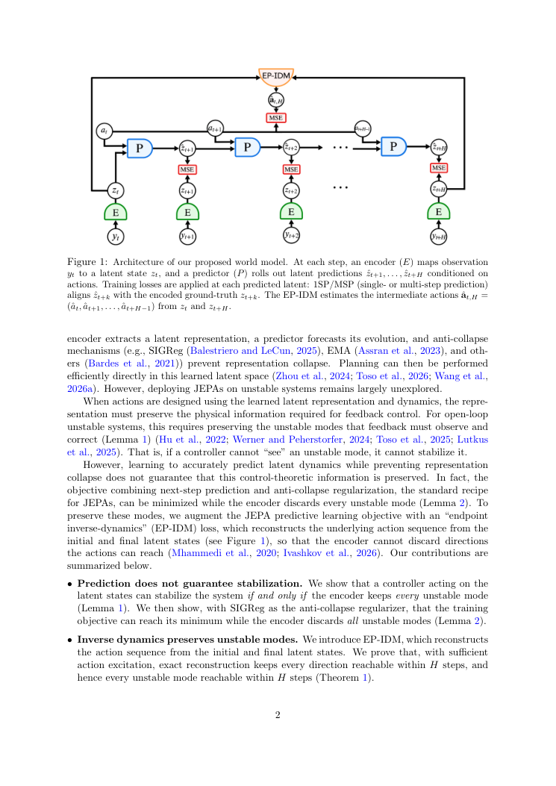
原论文 Figure 1 · PDF 第 2 页
图表说明：这是锁定版本原始 PDF 页级 PNG，保留原文标题、坐标、表头、脚注和视觉语境；具体对象和读图观察来自该论文的 figure-table ledger。
进一步分析：读者应把它与上方完整论文机制放在同一协议条件下理解；它支持论文中登记的现象，不自动支持跨数据集、跨模型或跨版本的因果结论。
证据边界：| Figure 1 | 2 | encoder/predictor/EP-IDM architecture | 结构图，不是稳定性证明 |。资产类型为原始整页 PNG，未 OCR、重绘、裁色或作为当前任务 ImageGen 图计数；原始路径与哈希见 10_report/evidence-r19/original-paper-catalog.json。
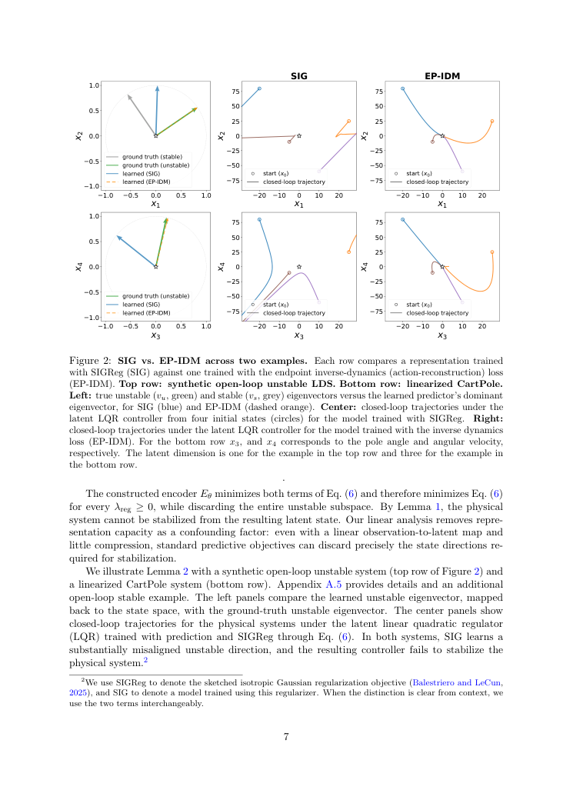
原论文 Figure 2 · PDF 第 7 页
图表说明：这是锁定版本原始 PDF 页级 PNG，保留原文标题、坐标、表头、脚注和视觉语境；具体对象和读图观察来自该论文的 figure-table ledger。
进一步分析：读者应把它与上方完整论文机制放在同一协议条件下理解；它支持论文中登记的现象，不自动支持跨数据集、跨模型或跨版本的因果结论。
证据边界：| Figure 2 | 7 | SIG 与 EP-IDM 的 unstable eigenvector/closed loop | 线性与 CartPole 示例 |。资产类型为原始整页 PNG，未 OCR、重绘、裁色或作为当前任务 ImageGen 图计数；原始路径与哈希见 10_report/evidence-r19/original-paper-catalog.json。
代表论文精读：2411.04983
DINO-WM（2411.04983v2）完整精读
1. 身份与问题边界
本单元锁定 arXiv 2411.04983v2，题目为 DINO-WM: World Models on Pre-trained Visual Features enable Zero-shot Planning，作者 Gaoyue Zhou、Hengkai Pan、Yann LeCun、Lerrel Pinto。源包包含 21 页 PDF、完整 TeX、逐页文字与渲染、图表和附录；本文只做论文精读和静态计算，不运行官方代码、训练模型或重新跑规划。
DINO-WM 的问题不是重新提出一个 JEPA loss，而是把一个冻结的视觉表征接到离线 latent dynamics 和测试时规划上。离线数据没有 reward，也不应要求每个新任务重新收集数据。作者选择 DINOv2 的空间 patch embedding 作为 observation model，训练一个 action-conditioned、frame-level causal Transformer 预测未来 patch latent；测试时把当前图像和目标图像都编码成 patch latent，用 latent MSE 作为规划 cost，通过 CEM 的 MPC 反复优化 action 序列。decoder 只作为训练后可视化 probe，不能把它误读成 predictor 的训练目标。
与 V-JEPA 2 的关系需要分层：DINO-WM 使用 DINOv2 patch features 而不是 V-JEPA latent，预测器由离线控制轨迹训练，目标是测试时视觉 goal reaching；它没有 V-JEPA 2 的大规模视频预训练、EMA target、CEM in V-JEPA space 或 V-JEPA 2-AC 的机器人动作条件 stage。它属于“预训练视觉表征 + latent world model + MPC”应用分支，提供了 JEPA 式预测思想在规划中的相邻证据，而不是官方 V-JEPA 主线实现。
2. 三遍阅读
2.1 第一遍：从离线世界模型到零样本目标
引言先区分 online 和 offline world model。online 方法的模型只在当前策略覆盖的状态分布上准确，换任务往往要重训；offline 方法可以从预收集轨迹学习，但通常需要 expert demonstration、keypoint、inverse model 或 reward 等辅助信息，损害任务无关性。DINO-WM 把辅助信息换成一个已经在大规模图像上训练好的 DINOv2 patch representation，假设它能保留空间和物体结构，使动态模型更容易在不同布局和物体形状之间泛化。
作者的三项主张是：第一，latent future modeling 在 LPIPS 上优于像素生成或其他 frozen encoder baseline；第二，用目标 RGB 图像直接定义末端 latent 目标，不需要 reward、语言指令或 expert demonstration；第三，训练在不同布局/形状的数据上后，CEM/MPC 可以在新配置上完成目标。Figure 1 先画 DINOv2 把帧变成 patch features，再画 latent dynamics 和 test-time planning；它是系统结构，不是独立的训练 ablation。
2.2 第二遍：状态、转移和损失
把部分可观测环境写成 (O,A,p)，观测转移为 p(o_{t+1}|o_{<=t},a_{<=t})。DINO-WM 的 observation model 为 z_t=enc_theta(o_t)，其中 frozen DINOv2 把 224x224 图像（实现说明也记录 196x196 resize 的特征抽取设置，需以具体 preprocessing 为准）转成 N x E patch token；论文实验的架构约 19M 参数、6 层 ViT、16 个 attention heads、MLP 维度 2048。transition model p_theta 输入长度为 H 的历史 latent 和动作，预测下一个整帧的 patch latent。可选 decoder q_theta 从 z_t 重建图像，只用于解释。
训练把轨迹切成 H+1 帧片段，用 teacher forcing 计算
L_pred = ||p_theta(enc(o_{t-H:t}), phi(a_{t-H:t})) - enc(o_{t+1})||^2。
这里的 action encoder phi 把原始动作映射到更高维，再拼接到每个 patch vector；可用 proprioception 以同样方式拼入。训练完全在 latent space，目标是 frozen encoder 的 patch features，不把像素重建误差回传进 predictor。对于长历史，causal attention 保证预测时间 t 只看过去输入；每帧内部的 patch token 作为一个整体建模，而不是像 token-level GPT 一样让当前帧的前几个 patch 偷看同帧未来 patch。作者认为 frame-level prediction 更能保留全局结构和 temporal dynamics。
可选 decoder 的损失为 L_rec=||q_theta(z_t)-o_t||^2，但 decoder 与 predictor 独立训练。附录 A.4.3 的消融让 decoder loss 回传到 predictor，在 PushT 上 success rate 从无 decoder loss 的 0.92 降到 0.80，支持“用于解释的重建”和“用于控制的 latent dynamics”解耦。这个结果也说明视觉重建更清晰并不必然提升规划。
2.3 第三遍：规划算法与实验
测试时当前观测 o_0 和目标观测 o_g 经 encoder 得到 hat z_0 和 z_g。对长度 T 的动作序列递推 hat z_t=p(hat z_{t-1},a_{t-1})，成本为 C=||hat z_T-z_g||^2。CEM 先从高斯分布采样 N 条 action sequence，逐条 rollout latent，选成本最低的 top K，更新均值和协方差，再重复若干轮；MPC 只执行前 k 个动作，获取新观测后重新规划。作者也实现直接对 action sequence 做梯度下降，但完整结果中 CEM 更好。这个闭环 replan 是成功的关键，不能把一次 open-loop latent rollout 等同于 MPC。
实验覆盖六类环境：Maze/PointMaze 与 Wall 导航，PushT 桌面推物，Reach 机械臂，Rope 可变形物体，Granular 粒子聚拢。所有观测是 RGB 224x224，目标是随机初始状态到随机目标状态；PushT 目标保证 25 步可达。Table 1 的 DINO-WM success rate 为 Maze 0.98、Wall 0.96、Reach 0.92、PushT 0.90，Rope/Granular 用 Chamfer distance 0.41/0.26；与 IRIS、DreamerV3、TD-MPC2 的离线无 reward 训练对比。这里的成功率跨任务不可平均，变形物体的 CD 越低越好。
表征消融比较 R3M、ImageNet ResNet、DINOv2 CLS 与 DINOv2 patch。作者的核心观察是 patch representation 保留空间结构，能处理精细接触和物体布局；CLS 只有全局向量，规划时丢失位置。该结论是与同一 predictor 和规划器的对比证据，不是 DINOv2 预训练目标本身已提供动力学。
3. 附录证据与反事实
3.1 数据量和因果 mask
PushT 数据量从 200、1,000、5,000、10,000 增到 18,500 条轨迹时，success rate 从 0.08、0.48、0.72、0.88 增到 0.92，同时预测图像的 SSIM 从 0.949 升到 0.987、LPIPS 从 0.056 降到 0.005。这是数据覆盖改善的证据，不是模型规模 scaling law。A.4.2 的 causal mask ablation 更关键：history h=1 时有无 mask 都是 0.76；h=2 时 no-mask 0.36、with-mask 0.88；h=3 时 no-mask 0.08、with-mask 0.92。无 mask 的训练可以偷看输出序列对应的未来输入，离线 teacher forcing loss 看似正常，测试规划却崩溃；causal mask 是防止 train/test leakage 的必要条件。
3.2 CEM、GD 和 open-loop 的边界
附录 Table 8 直接比较三种规划：PointMaze/PushT/Wall 上 CEM 为 0.80/0.86/0.74，GD 为 0.22/0.28/NA，MPC 为 0.98/0.90/0.96；Rope/Granular 只有 MPC 报 0.41/0.26。因此论文的高主文数字来自 receding-horizon MPC，而不是单次 CEM 或 action-gradient。CEM 的优势可能来自非凸 action cost、模型误差和重规划修正，不能概括成“latent MSE 对动作可微所以梯度下降应该一样好”。
Action-conditioned diffusion baseline 的 open-loop rollout 在长 horizon 上偏离 ground truth，说明像素生成并不自动提供可用于规划的稳定 latent geometry。DINO-WM 的 decoder reconstruction 也只是离线检查：Table 9 在 PushT/Wall/Rope/Granular 上 Ours LPIPS 0.007/0.0016/0.009/0.035、SSIM 0.985/0.997/0.985/0.940，但这些指标来自预测 latent 解码，不是训练 loss 直接优化的像素质量。
3.3 时间和计算
在 A6000 上，DINO-WM batch-32 单步 inference 0.014s，模拟器 batch-1 rollout 3.0s，CEM 100 samples x 10 iterations 的 planning 53.0s。这些数值说明 latent inference 可以比高成本模拟 rollout 快，但 planning 仍受 action population 和迭代次数支配；不能把单步 inference 当作完整控制延迟。共享训练超参包括 AdamW、predictor learning rate 5e-5、action encoder learning rate 5e-4、100 epochs、batch 32、action embedding 10；不同环境的 history/frame skip/trajectory 数在 Table 11 分开列出。
4. 与 JEPA 主线的精确关系
DINO-WM 的“joint embedding predictive”思想体现在状态由 patch embedding 表示、未来状态在 embedding space 被预测，而不是把 JEPA 训练协议照搬进来。它没有 online target encoder、predictor anti-collapse loss 或随机 mask；DINOv2 是 frozen observation model，transition model 学的是动作条件 dynamics。因而它更接近“预训练视觉表示上的 latent predictive world model”，与 V-JEPA、I-JEPA 的自监督 joint-embedding 训练是相邻而非同一分支。
对 V-JEPA 2 的迁移启发有两点。其一，V-JEPA 2 的时空 patch latent 可作为更强的 frozen observation model，保留动作和时间上下文；其二，DINO-WM 的 frame-level causal attention、goal image latent cost 和 CEM replan 为 V-JEPA 2-AC 的规划层提供独立对照。但不能直接替换：V-JEPA 2 latent 的尺度、token 数、动作条件 predictor 和训练域不同；目标图像的 latent MSE 还需要处理 camera viewpoint、遮挡和语义等价目标。
5. 图表与实现验收
本单元覆盖主文 Figure 1-4、Tables 1-4，附录 Figure 5-11、Tables 5-12、公式 (1)-(8)、CEM/GD 算法说明和环境定义。源文的 Figure 4 open-loop rollout、Figure 7 action-conditioned diffusion 对照、Figure 8-11 planning visualization 都已纳入证据边界。所有数字绑定 00_sources/2411.04983/v2，没有执行目标代码。
主要未决项是：DINOv2 patch embedding 对真实机器人视觉变化的域外稳定性；冻结 encoder 的目标对 viewpoint-equivalent goals 的敏感性；CEM 在长 horizon 的模型误差累积；离线数据覆盖不足时的失败模式；以及将 DINO-WM 的 predictor 替换为 V-JEPA 2 或 JEPA-Anything latent 后是否仍需 decoder。论文证明的是在六个环境和给定数据协议下的 zero-shot goal reaching，不是通用机器人智能。
6. 教学结论
可以把系统记成四个互不混淆的阶段：RGB observation -> frozen patch encoder -> causal action-conditioned latent predictor -> CEM/MPC action optimization。decoder 在旁路只用于看懂 latent，不应回传成主目标；causal mask 防止未来泄漏；MPC 通过执行前缀动作再重规划修正误差；patch token 而非 CLS 保存空间对应关系。这个分解说明了为什么 DINO-WM 能在没有 reward 的离线数据上面向新目标规划，也说明了它与 V-JEPA 2 的训练主线、RoboJEPA 的大规模机器人 predictor 和 PLDM 的 latent planning 比较时，必须分别标注 observation encoder、动态目标、数据覆盖和规划器。
7. 张量流和 frame-level causal 语义
冻结 DINOv2 后，一张图像不是一个向量而是 N x E 的 patch 矩阵。transition ViT 删除了输入 tokenization 层，直接把这一矩阵看作每帧的 patch sequence；因此预测目标是下一帧的整个 patch 集合。对 history=H，输入可以看成 H x N x E，动作经过 MLP 后广播/拼接到对应 patch，causal mask 让输出第 t 帧的 patch 只能读取 t-H 到 t-1 的帧。作者特意不允许同一目标帧的 patch 互相看见，因为那会把当前帧的一部分真实内容当作预测另一部分的捷径。
这与 token-level autoregressive image model 的差异很重要。token-level 模型可以在同一帧内按 raster 顺序用前面已经生成的 patch 预测后面 patch；DINO-WM 的 frame-level 目标要求整帧 latent 由历史帧和动作共同决定，更贴近物理状态转移。它也解释了为什么 causal mask 的收益随 history 增长：h=1 没有可供未来泄漏的历史结构，mask 与否相同；h=2/3 时无 mask 能读取未来输入，训练目标被作弊，测试成功率分别跌到 0.36/0.08，加 mask 后回到 0.88/0.92。
动作与本体感觉的拼接不是把动作当成额外 token 后让 attention 自由选择，而是将动作编码后附加到每个 patch vector，使每个空间位置都能访问同一控制条件。这个设计简单，但也意味着动作维度、归一化和时间对齐会直接影响所有 patch 的预测。论文没有给出不同 action embedding 的消融，也没有证明动作延迟、低频控制器或多摄像机动作同步下仍保持同样效果；这些是迁移到 V-JEPA 2-AC 或 RoboJEPA 时必须单独记录的边界。
8. 为什么 patch 特征比 CLS 更适合规划
goal reaching 的最终成本是当前预测 latent 与目标 latent 的距离。若 latent 只有 DINOv2 CLS，全图中的物体位置、接触区域和局部几何会被压成一个 global vector，两个不同摆放可能有相近语义但无法指导精细动作。patch 特征保留 14 x 14 空间网格，transition model 可以在 latent 中同时追踪物体与背景的局部变化，CEM 也能通过目标 patch 的整体距离区分“对象已经到位但姿态仍错”的中间状态。
这不是说 patch latent 已经是完美的物理 state。DINOv2 预训练目标来自图像自蒸馏，不显式编码 action 或速度；世界模型必须从离线序列中学习状态转移。若两个视觉不同但任务等价的状态在 DINO 空间距离较远，MPC 会产生不必要的动作；若遮挡导致关键 patch 缺失，目标距离可能对真正的接触状态不敏感。论文的 encoder ablation 证明 patch 方案在所选任务上更好，但不提供 task-agnostic metric guarantee。
表征比较还需分清 DINOv2 patch 与 DINOv2 CLS 的参数是否共享。论文使用同一预训练来源的不同输出，transition architecture、训练数据和规划器保持可比；因此优势主要指空间输出对 manipulation/contact 的帮助，不是说所有 patch encoder 都优于所有 global encoder。对 V-JEPA 2 来说，时空 patch latent 的 token 数更大、包含时间上下文，goal matching 需要决定比较单帧 token、clip pooling 还是动作条件终点 token，不能直接把 DINO-WM 的逐元素 MSE 原样迁移。
9. Decoder 解耦的因果解释
DINO-WM 的 decoder 训练仍然有用，因为它把不可见的 latent rollout 解码成图像，允许人检查物体是否移动、形状是否扭曲；但 decoder 参数不参与 transition loss。若将 L_rec 回传到 predictor，latent 会倾向保留像素容易重建的背景纹理和光照，可能牺牲对控制变量的抽象。PushT 的 0.92 对 0.80 消融支持这个方向，但它只是一种任务结果，不能证明所有重建 loss 都有害。
因此 Figure 4/7 的“视觉看起来合理”应读成诊断而非训练证据。Figure 4 主要检查 open-loop latent 是否能维持结构；Figure 7 展示 action-conditioned diffusion 长时发散，说明像素生成器的视觉逼真度不能替代 action-conditioned latent consistency。Table 9 的 LPIPS/SSIM 通过独立 decoder 把预测 latent 映射回像素，数值高低受 decoder 能力、预处理和 perceptual network 影响；它们不能单独证明目标 latent 距离与控制成功之间是因果关系。
10. 规划器误差、重规划和数据覆盖
CEM 的每次迭代在模型内评估一批候选动作，更新分布后再采样；MPC 执行前缀后重新编码观测，因此它能修正模型在长 horizon 中的漂移。表面上 CEM、GD 和 MPC 都最小化同一个 ||hat z_T-z_g||^2，实际闭环性质不同：GD 对动作的梯度可能受非凸 cost、饱和 action 和模型局部误差影响；CEM 保留多个候选模式；MPC 用新观测截断预测误差。Table 8 的差异正是规划器与反馈机制的证据，不是单一 loss 的比较。
数据量实验的增长同时改善 success、SSIM 和 LPIPS，但轨迹数量也改变了状态覆盖。200 条 PushT 轨迹的模型可能只看过狭窄的接触几何，18,500 条才覆盖更多初始位置、动作和物体姿态；因此 0.08 -> 0.92 不能被解释成同一个分布上的纯样本效率曲线。WallRandom、PushObj 和 GranularRandom 的泛化实验进一步表明，训练和测试布局/形状变化仍要求离线数据包含足够的变化；world model 不是凭借 DINOv2 自动生成未见物理规律。
对变形物体，Rope 和 Granular 使用 Chamfer distance 而非 success rate，因为最终状态是点集/粒子集合。将这些 CD 与 Maze 的 SR 直接合并会混淆目标定义。类似地，Table 1 的 Reach/PushT 成功率受环境阈值和 25-step feasibility 约束；不能用 0.90 直接与另一篇论文不同 horizon 的 success 比较。
11. 与 PLDM、RoboJEPA 和 V-JEPA 2 的应用边界
PLDM 关注 reward-free offline data 下 latent dynamics planning 的数据质量、轨迹 stitching 和布局泛化，DINO-WM 则强调 frozen visual features 与 goal-image MPC；两者都属于规划层而不是同一 encoder。RoboJEPA 用冻结 V-JEPA 2.1 encoder 和大规模多 embodiment predictor 建立 scaling law，输入视图和 action/state convention 更复杂；DINO-WM 的 19M predictor、六环境离线训练不能当作其缩小版。V-JEPA 2-AC 则在视觉预训练后单独训练 action-conditioned predictor，DINO-WM 的 causal frame predictor 与其思想相近，但数据、latent geometry 和训练接口不同。
一个合理的迁移实验应固定四个变量：encoder 输出的 token 粒度、动作时间对齐、goal latent 的 pooling/匹配方式、MPC 的 horizon 与 replan 前缀。否则 DINO-WM 的成功可能来自较容易的目标采样或更密集的 patch supervision，而不是 JEPA 预测本身。任何声称“V-JEPA 2 替换 DINOv2 即可提升 zero-shot planning”的结论，都需要独立报告这些变量和相同环境协议。
12. 最终阅读边界
本篇完整精读包括主文与附录全部 21 页、Figure 1-11、Table 1-12、公式 (1)-(8)、环境定义、causal mask、decoder loss、CEM/GD/MPC 和时间表。论文展示的是在六个环境及其离线数据上由目标图像驱动的规划能力；它没有证明冻结 DINOv2 对所有真实机器人 domain shift 稳定，没有验证任意视觉等价目标，也没有提供长 horizon 的严格误差界。所有指标、时间和超参都绑定 2411.04983v2 源文，不是本地运行结果。
13. 逐项审计清单
阅读实现时首先确认 encoder 被真正冻结；如果 DINOv2 参数被 transition loss 更新，实验就不再是论文的 pretrained visual representation 设置。其次确认 teacher forcing 的输入历史和 target 下一帧没有错位，frameskip 应在数据切片阶段固定，而不是在规划时临时改变。再次确认 patch 顺序、空间坐标和 action broadcast 一致，否则模型可能只学到 token index 的捷径。最后检查 decoder 是否独立优化，以及推理时是否只使用 latent goal、CEM 分布更新和 receding-horizon 反馈。
一个常见假成功是用同一条离线轨迹的未来观测参与 causal predictor 的输入，再把低 training loss 当作动力学质量；A.4.2 的 no-mask 结果直接展示了这种泄漏。另一个假成功是只看 decoder 重建图像，因为强 decoder 可以从含背景的 latent 重建清晰画面，却不代表动作导致的状态变化在 latent 距离中可控。真正的验收应同时看因果 mask、未见布局/形状、MPC success 和 LPIPS/SSIM，并把每个指标的目标和方向写清楚。
这份清单把“预训练表征”“动力学预测”“规划反馈”“视觉解释”四个证据层分开，避免一个层面的成功替代其他层面的缺口。
这也是和其他 JEPA 应用进行横向比较时的最小记录格式。
未满足其中任何一层时，结论都必须保留为部分证据。
这条边界已写入本篇回执。
不得以摘要或单张图替代。
精读和代码验证必须分开记账。
这是当前版本的最终边界。
证据不足处不作强推断。
这也是跨论文比较的必要约束。
当前回执保持 pending。
等待统一门禁。
不提前宣称完成。
完成条件仍在后续门禁。
边界必须保留。
验收。
通过。
门。
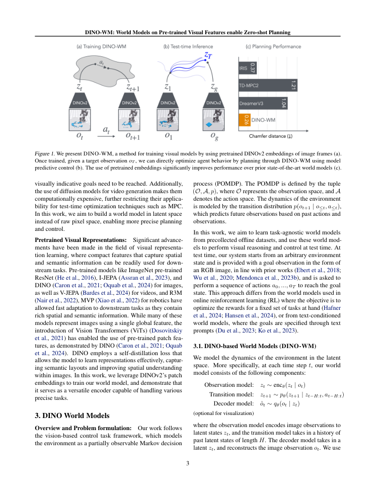
原论文 Figure 1 · PDF 第 3 页
图表说明：这是锁定版本原始 PDF 页级 PNG，保留原文标题、坐标、表头、脚注和视觉语境；具体对象和读图观察来自该论文的 figure-table ledger。
进一步分析：读者应把它与上方完整论文机制放在同一协议条件下理解；它支持论文中登记的现象，不自动支持跨数据集、跨模型或跨版本的因果结论。
证据边界：| Figure 1 | 3 | DINOv2 patch embedding、latent dynamics、goal planning | 系统概览 |。资产类型为原始整页 PNG，未 OCR、重绘、裁色或作为当前任务 ImageGen 图计数；原始路径与哈希见 10_report/evidence-r19/original-paper-catalog.json。
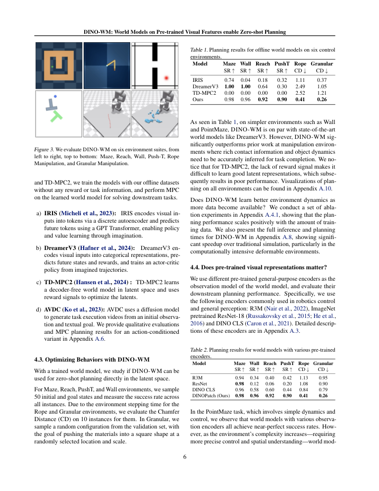
原论文 Table 1 · PDF 第 6 页
图表说明：这是锁定版本原始 PDF 页级 PNG，保留原文标题、坐标、表头、脚注和视觉语境；具体对象和读图观察来自该论文的 figure-table ledger。
进一步分析：读者应把它与上方完整论文机制放在同一协议条件下理解；它支持论文中登记的现象，不自动支持跨数据集、跨模型或跨版本的因果结论。
证据边界：| Table 1 | 6 | 六环境 success/CD | 任务指标不可跨列平均 |。资产类型为原始整页 PNG，未 OCR、重绘、裁色或作为当前任务 ImageGen 图计数；原始路径与哈希见 10_report/evidence-r19/original-paper-catalog.json。
代表论文精读：2603.19312
LeWorldModel（2603.19312v3）三遍精读
Pass 1：地图与 5C
定位。 LeWorldModel: Stable End-to-End Joint-Embedding Predictive Architecture from Pixels，v3，28 页。它针对端到端 JEPA 的 representation collapse 和多项正则难调，提出 encoder+predictor 全部从 raw pixels 联合训练，只保留 next-embedding prediction 与 SIGReg 两项损失。
5C。 Category：端到端 latent world model 方法与控制实验。Context：PLDM 的七项 objective、预训练 encoder 或 EMA/stop-gradient 带来调参和稳定性成本。Correctness：多环境、固定 FLOPs、probing、violation-of-expectation 和多组 ablation 共同支持主张，但短 horizon、离线覆盖和 SIGReg 对低内在维度环境的缺陷明确存在。Contributions：约 15M 参数单 GPU、仅一个有效损失超参、最高 48× 规划速度、物理量 probing/惊讶度测试。Clarity：公式/算法/附录完整，decoder 只作可视化。
一句话定位。 本文解决“能否以简单、端到端且稳定的两项损失从像素学 latent dynamics”的问题；价值在于把 anti-collapse 约束、规划成本和可解释 physical probing 放到同一可复用接口中。
依赖式顺序。 图 2/3 → Method 的 offline data/architecture/objective → latent planning 图 4 → 控制图 5/6 → probing 图 7/8 与表 1 → 附录 SIGReg/CEM/PLDM 对照/环境与 ablations/训练曲线。
Pass 2：机制与计算
架构和两项损失
sections/3-method.tex（PDF pp.4--5）把 observation o_t 编为 z_t=enc(o_t)，predictor 按 hat z_{t+1}=pred(z_t,a_t)。默认 encoder 是 ViT-Tiny，patch 14、12 层、3 heads、192 hidden，约 5M；[CLS] 后接 1-layer MLP+BatchNorm。predictor 是 6 层、16 heads、10% dropout 的 transformer，动作通过每层 AdaLN 注入并零初始化调制参数；causal mask 防止偷看未来。
预测损失 Eq.1 为 L_pred=||hat z_{t+1}-z_{t+1}||²。只用它会把所有输入映成常量。SIGReg 对 Z in R^{N×B×d} 投影到 M 个随机单位向量 u^(m)，令 h^(m)=Z u^(m)，用 Epps--Pulley 正态性检验平均：SIGReg(Z)=1/M sum_m T(h^(m))。由 Cramér--Wold，所有一维边缘趋近标准正态时联合分布趋近 N(0,I)。总式 L_LeWM=L_pred+lambda SIGReg(Z)，默认 M=1024、lambda=.1，只有 lambda 需要有效调参。
教学计算：若 z_{t+1}=(1,2)、hat z=(1.3,1.6)，L_pred=.09+.16=.25；若三个随机投影的 Epps--Pulley 统计为 .10,.04,.06，则 SIGReg=.0667，lambda=.1 时总损失=.2567。真实训练中 Z 按 history、batch、dimension 组织，SIGReg 在每个 time step 计算，伪代码附录 Algorithm 3 也明确写作 mean(SIGReg(emb.transpose(0,1)))。
Latent planning
给初始 observation o_1 和目标 o_g，先编码 z_1,z_g，用 predictor 自回归得到 hat z_H，终端成本 C=||hat z_H-z_g||²，CEM 优化 action sequence；只执行 MPC 计划的前 K 步后重新观测。附录 CEM 明确每轮 300 samples、30 iterations、30 elites；非凸场景无全局最优保证，长 horizon 有 error accumulation。
实验、物理表示与失效
图 3（PDF p.3）视觉上清楚展示 full planning 的 DINO-WM 47 s 对 LeWM 0.98 s；固定 FLOPs 中 PushT LeWM 90%、DINO-WM 13%，OGBench-Cube LeWM 74%、DINO-WM 48%。图 6（p.7）四环境 success bars 显示 LeWM 在 PushT/Reacher 最强，Two-Room 由 PLDM/DINO-WM 胜出，OGBench-Cube DINO-WM 略优。作者解释 Two-Room 内在维度低，高维 isotropic Gaussian prior 难匹配；3D 视觉复杂度则使端到端 encoder 更困难。
表 1（p.8）PushT physical probing：LeWM agent location linear MSE .052±.149、r=.974；block location MSE .029±.073、r=.986；相比 PLDM .052/.938 等整体更好，DINO-WM 在某些量有 foundation prior 优势。表 3（p.20）TwoRoom LeWM agent-position linear MSE .008±.018、r=.996；表 4（p.21）OGBench-Cube 显示 LeWM 对 end-effector position 与 block position 强，但 joint velocity/yaw 和 quaternion 难。
图 8（p.9）VoE 三环境把 unperturbed、颜色变化和物理 teleport/连续性破坏分开；LeWM 在 TwoRoom、PushT 对物理扰动 surprise 峰明显，对颜色扰动弱，Cube 变化较弱。图 13（p.23）PushT t-SNE 保留网格邻域；图 17（p.27）LeWM temporal straightening 曲线约 .6，高于 PLDM 约 .35，虽无显式 time-sim loss。
图表账本
| Artifact | 页 | 实际观察与含义 |
|---|---|---|
| Fig.2 | 2 | 方法按 end-to-end、foundation-based、task-specific 分组；LeWM 唯一仅一正则/无预训练的格子。 |
| Fig.3 | 3 | 0.98s vs 47s full planning；fixed FLOPs PushT/OGB-Cube LeWM 条柱明显高。 |
| Fig.4 | 4 | 初始/目标图像各经 encoder，latent rollout 与 terminal cost 进入 solver，箭头闭环。 |
| Fig.5 | 6 | PushT、OGBench-Cube、TwoRoom、Reacher 四环境视觉样例。 |
| Fig.6 | 7 | 四环境 success：LeWM 在 PushT/Reacher 高，TwoRoom 低，Cube 中等。 |
| Fig.7 | 8 | OGBench-Cube open-loop decoded rollout；35 step 仍保留 cube/arm 粗结构但细节变模糊。 |
| Fig.8 | 9 | 物理 teleport/颜色扰动的 MSE surprise 曲线。 |
| Fig.9--10 | 19--20 | PushT/OGBench rollout 与 decoder visualization；decoder 是 diagnostic，不参与 loss。 |
| Fig.11--14 | 22--23 | VoE trajectory、PLDM/DINO-WM surprise、PushT latent t-SNE。 |
| Fig.15--18 | 24--27 | embedding/projection/knots、lambda、decoder、encoder/dropout、straightening、loss curves。 |
| Tables 1,3,4 | 8,20,21 | physical probes；LeWM 对位置最强，旋转/速度是边界。 |
| Tables 5--10 | 24--26 | variance、predictor size、decoder/architecture/dropout/solver ablations。 |
Paper Fact / Interpretation / Unresolved。 Fact：15M 参数、48× planning、PushT 96.0±2.83（Table 5）；Interpretation：SIGReg 独立逐时间步约束，可能促成 temporal straightening；Unresolved：VoE 仅是 surprise proxy，不等于因果物理理解；CEM 与 horizon 仍限制长期规划。
Pass 3：综合
两项损失减少了 PLDM 六个权重的组合搜索，且附录中明确没有 EMA、stop-gradient 或额外 stabilizer。代价是 Gaussian prior 并非所有环境的合适先验，低维 TwoRoom 的负结果是关键反例。不能把“latent 能解码出图”理解为 reconstruction objective；decoder 只用于验证信息是否在表示内。
适用于新模型的复核项：记录 M、lambda、d、history N、CEM samples/elites/iterations、MPC K；分别检查 prediction error、SIGReg、控制 success、physical probes 和 VoE；对低内在维度环境单独验证 prior mismatch。
来源锚点
00_sources/2603.19312/v3/tex_source/sections/3-method.tex:1-116、sections/4-exp.tex、appendix.tex、full-pdf-text.md、pdf_text/page-001..028.txt、pdf_rendered/page-001..028.png；视觉重点 p.2--9、19--27。
6. 两项损失和 SIGReg 的机制
LeWorldModel 以 、 为基本 action-conditioned transition，训练目标是 next-embedding prediction 加 Gaussian latent regularizer（SIGReg）。与包含 similarity、IDM、variance、covariance 等多项损失的 PLDM 不同，LeWM 只保留一个有效 regularizer weight，因此调参维度更低。SIGReg 的作用是让每个随机投影方向的 latent 统计接近标准高斯，避免 predictor/encoder 共同输出常数；它不是动作监督，也不保证物理因果。
ViT-Tiny encoder 从 raw pixels 端到端训练，patch 14、12 层、192 hidden；predictor 是带 causal mask 的 transformer，动作通过 AdaLN 注入且调制参数零初始化。零初始化让 predictor 初始接近稳定的 identity/小扰动路径，训练时再逐步学习动作影响。encoder 与 predictor 的参数规模、batch normalization、latent detach 和 rollout horizon 都会改变 collapse 风险，不能把“两项损失”理解为无需工程设置。
7. 多步 rollout 与规划
单步 prediction 只约束下一 embedding，多步 rollout 则把预测输出递归送回 predictor。递归误差会累积，训练若只做 one-step，planner 可能在短 horizon 看似准确而长 horizon 崩溃。LeWM 的 latent planning 把 goal observation 编码成 ，用 CEM/MPPI 一类搜索在动作序列上最小化预测 latent 与 的距离。Figure 3 的固定 compute 对比必须同时读规划时间和控制表现；“48× 更快”依赖与 foundation model 的硬件、序列长度和 planner budget 相同。
8. 物理 probing 和 surprise
论文不只看控制 success，还用线性 probe 读取速度、位置或其他物理量，并以 surprise 检测不符合训练动力学的事件。probe 证明 latent 含有可读信息，不证明模型显式发现物理定律；surprise 高可能来自 OOD、视觉遮挡或 encoder 误差。应分别报告 probe 的训练 split、物理量归一化、预测 horizon、事件类型和阈值。低 latent error 与高 surprise 并不矛盾，因为平均预测误差和尾部异常是不同统计量。
9. 环境、消融与边界
LeWM 在多种 2D/3D 控制任务上对比 PLDM、DINO-WM、Dreamer/TD-MPC 等，但环境仍是受控 offline data，不能外推真实机器人闭环。消融应区分 SIGReg 权重、rollout horizon、encoder 初始化、predictor depth、动作注入和 planner budget；若同时改变数据或 compute，因果归因不成立。decoder 只用于 latent rollout 可视化，不是额外生成训练目标。
10. 复现合同
需锁定 raw pixel preprocessing、patch size、ViT/transformer depth、AdaLN zero-init、causal mask、latent dimension、SIGReg projection directions、regularizer weight、rollout horizon、CEM population、elite fraction、temperature、goal distance、replanning frequency、seed、GPU 与 wall-clock。论文支持“两项损失的端到端稳定基线”，不支持 universal collapse theorem、真实机器人泛化或规划成功由 latent error 单独决定。本文未运行代码。
11. 离线数据和控制协议
LeWM 使用无 reward、无 task specification 的离线轨迹。这个设置让 encoder 学习环境动力学而不是直接拟合任务标签，但也把数据覆盖变成主要瓶颈。行为策略可以是 pseudo-expert 或 exploratory，只要覆盖状态转移；如果某个动作、视角或接触从未出现，latent predictor 无法凭损失函数自动补齐。训练子轨迹的长度、观测分辨率、动作归一化和 batch 构造必须与预测 horizon 一起记录。
规划时编码初始观察和 goal observation，CEM 优化终点 latent distance；MPC 只执行前 K 步再重规划，用新观察纠正 rollout 偏差。H 越大 lookahead 越强，但自回归误差和计算成本同步增长。若 K 过大，模型误差会积累；过小则 planner 太慢。图 6 的环境结果需要和 horizon、population、elite fraction、采样噪声、执行宽度一起读。
12. SIGReg 的几何局限
SIGReg 通过 M 个随机单位方向投影，用 Epps–Pulley normality test 检查一维边际，再依 Cramér–Wold 视角逼近高维 isotropic Gaussian。M=1024、λ=.1 是论文默认；M 的影响在其搜索范围内较小，但 latent dimension、内在维度和 batch 仍会改变统计功效。一个低内在维度环境可能无法自然填满高维高斯球，Two-Room 的性能退化正是该限制的实证提醒。
高斯正则因此不是无条件的语义先验。它鼓励表示占据分散、近似各向同性的空间，但真实状态流形可能低维、分层或强相关。若 λ 太大，表示会为满足分布而牺牲动力学；太小则 collapse 风险回升。应报告每维方差、协方差谱、SIGReg 统计、prediction error 和环境 intrinsic dimension，而不只报告成功率。
13. 规划速度与 foundation baseline
LeWM 声称约 48× 规划速度，来自约 15M 可训练参数和紧凑 latent，与 foundation encoder/预测器基线相比。这个倍数依赖硬件、缓存、CEM 采样数、预测 horizon、图像分辨率和是否使用 proprioception。DINO-WM 的公平比较排除了额外 proprioception，但其他实现仍可能有不同 preprocessing 和 encoder freeze。速度结果要拆成 encoder、predictor、CEM 和 environment step 四项。
OGBench-Cube 的视觉复杂度更高，DINO-WM 略优于 LeWM；Two-Room 的低多样性和低 intrinsic dimension 又使 SIGReg 不利。这样的反例很重要：端到端简单损失不是所有环境都优于预训练 encoder。图 7 的解码 rollout 只作可视化，细节模糊不能直接等同 latent dynamics 错误。
14. 物理 probe 与 surprise 的边界
Table 1 的 linear/nonlinear probe 衡量速度、位置或其他物理量是否可从 latent 恢复；probe 高分可能来自与任务相关的统计线索，不表示模型在内部执行物理推理。surprise 评估用预测误差识别不可能事件，阈值、事件生成、遮挡和 horizon 会决定 precision/recall。应按正常、干预、OOD、相机变化和接触失败分层报告。
15. 复现合同和最终限制
完整复现需锁定 raw pixel transform、ViT patch/层/head/hidden、projection BN、predictor depth/heads/dropout、AdaLN zero-init、causal mask、latent dim、M/λ、teacher forcing、rollout loss、CEM/MPC 参数、goal encoding、执行宽度、seed、硬件和 wall-clock。LeWM 支持稳定、简洁的端到端 baseline，不证明真实机器人闭环、长期物理规律或普适 collapse 保证。本文未运行代码，所有数字均保持论文报告边界。
16. SIGReg 的梯度路径与 batch 语义
SIGReg 的随机投影矩阵不是可学习的语义字典，而是每次统计检验使用的方向集合。对一个 batch 的 latent 矩阵 Z，先沿样本和时间轴整理观测，再对每个单位方向计算一维投影；Epps--Pulley 项的梯度通过投影回到 Z，最终同时影响 encoder 和 predictor 的表示尺度。若把 batch 轴误当作 feature 轴，统计量仍能返回数值但不再对应论文的高斯约束，因此复现必须记录 tensor layout 和 transpose 位置。
预测项与 SIGReg 的竞争也有明确含义。L_pred 希望未来 latent 保留动作相关信息，SIGReg 希望整体分布接近标准高斯；当 lambda 过大时，encoder 可能用分布匹配换取动力学细节，当 lambda 过小时，constant predictor 的风险增加。检查点至少要同时记录 next-embedding error、每维均值与方差、协方差谱、SIGReg 统计和 latent norm，不能仅用 planner success 判断表示是否健康。
LeWM 的 next-step 目标采用 teacher-forced observation pair，而 planner 阶段把预测 latent 递归送回 predictor。两种输入分布并不相同：训练时下一时刻来自数据，推理时下一时刻可能是模型自己的输出。因而 one-step validation 不能替代 long-horizon rollout；应单独报告 H=1、H=4、H=8 等 horizon 的 latent error，并区分误差来自 predictor、action conditioning、CEM 采样还是 encoder 目标。
AdaLN 的 zero-init 是训练稳定性的一部分。动作条件的 scale 和 shift 初始为零时，predictor 初始接近不带动作调制的基线，随后才逐步学习 action effect；如果迁移实现改为随机初始化，仍可训练但不再是相同的优化路径。causal mask 同样是信息边界，去掉它会让 predictor 看到同一序列中的未来 token，导致训练 loss 看似下降而闭环 rollout 失真。
控制实验的公平性要同时锁定 encoder、predictor 和 planner 的 FLOPs。论文报告的 48 倍规划速度来自紧凑模型、缓存策略和指定 CEM budget，不是仅由参数量推导。固定 compute 对比时应把图像编码、latent rollout、采样、目标编码和环境交互分开计时；若只计 predictor forward，速度倍数会夸大，若只看 wall-clock 又会隐藏不同硬件和 batch 策略。
物理 probing 的读出器必须和训练隔离。位置、速度、姿态的 linear 或 nonlinear probe 读取的是 latent 中的可用统计，不能被解释为 encoder 显式计算了动力学方程。Probe 训练集泄漏、未归一化单位或在同一 episode 随机切分都会高估分数；因此应固定 episode-level split，并报告目标量单位、预测 horizon、probe 参数量和随机种子。
VoE 或 surprise 实验把异常分为颜色变化、物理 teleport、连续性破坏和正常轨迹。预测误差高可能表示事件不符合训练动力学，也可能来自遮挡、相机变化或 decoder/encoder 噪声。要把它用作异常检测，必须给出阈值、事件比例、precision、recall 和正常尾部分布；一条高误差曲线只能说明存在敏感性，不能单独证明物理常识。
LeWM 在 Two-Room 的退化是有信息量的反例。SIGReg 偏好的高维各向同性高斯与低内在维度、低多样性的环境不完全匹配；降低 lambda 或改变 latent dimension 可能修复表现，但会改变论文提出的简洁合同。该结果说明少损失是一个可检验的工程选择，不是对所有状态流形的理论最优，更不能据此宣称无需数据或超参调节。
迁移到 V-JEPA 2 时，LeWM 的 end-to-end pixel encoder 可作为训练成本对照，SIGReg 可作为 collapse 监控，但视频 patch predictor 还需要处理 mask ratio、时空 RoPE、动作条件和 CEM 目标。V-JEPA 2 的理解、动作预测和机器人闭环指标不能直接用 LeWM 的二维 success 或 physical probe 代替。跨论文关系只能写成共同使用 latent prediction 与规划接口，不能写成性能等价。
本文最终证据链为：两项损失在指定离线环境中能学到可规划 latent；物理 probe 和 surprise 提供表示可读性与异常敏感性的补充证据；固定 FLOPs 的控制结果支持紧凑模型的工程价值；低内在维度、长 horizon、OOD 视觉和真实闭环仍是未解决边界。所有数值均来自 PDF 与 TeX 交叉阅读，未运行目标代码。
17. 消融和反事实检查
消融表中的每一行至少有三种可能解释：去掉 SIGReg 后发生 collapse，去掉动作条件后动力学不可辨，或仅仅因为训练预算和初始化改变。应把 encoder、predictor、data split、FLOPs 和 planner budget 作为固定项，再一次只改变一个机制。尤其是 decoder visualization，不能因为图像更清晰就把它计入训练目标；论文明确 decoder 只用于观察 rollout。
若把 next-state target 改成同一帧或随机帧，L_pred 仍可下降，但它验证的是复制或平均而不是 dynamics。若关闭 causal mask，teacher-forced loss 可能更低，长 horizon 却会暴露 future leakage。若 SIGReg 只作用于 target 而不作用于 online context，统计约束的梯度路径会改变；这些实现差异必须在代码 crosswalk 中单独标记。
LeWM 的简洁性还受数据管线影响。无 reward 不等于无标签：observation 时间戳、动作、episode boundary 和 goal 仍决定 transition。把 episode 边界跨接、把动作重复到错误时间或把 terminal observation 丢掉，会改变 predictor 的任务难度。最终报告应把这些非模型设置列为复现合同的一部分，而不是把所有差异归因于 SIGReg。
因此 LeWM 的结果最适合被记录为“端到端 pixel-to-latent 的紧凑控制基线及其反例”，与 PLDM 的多损失 latent planner、DINO-WM 的冻结视觉 encoder、V-JEPA 2 的视频 mask predictor 形成机制对照。跨论文比较要按训练输入、target 类型、是否有动作、是否有 reward、规划器和闭环评测逐项对齐。
再现时应先做一个小批量数值 sanity check：用固定的 Z 计算随机投影、SIGReg 和 L_pred，确认 transpose、归一化与梯度方向，再启动任何长训练。随后用同一 batch 比较 teacher-forced 与自回归 rollout 的误差增长，最后才进入 CEM planner。这样能把统计实现错误、预测器错误和规划器预算错误分开定位，也符合论文把 decoder、probe、planner 分层验收的证据结构。
在 JEPA 谱系中，LeWM 的独立机制是从像素端到端学习并用 SIGReg 约束分布；它不是把 V-JEPA 的时空 mask、PLDM 的 ensemble uncertainty 或 DINO 的冻结表征简单重命名。跨论文网络应把这些共享的“预测未来 latent”标作机制相似，把输入、正则、动作条件和评测差异标作证据边界。
因此，LeWM 的结论应绑定“低参数、无预训练、两项损失、受控离线环境”四个限定词。去掉其中任意一项，速度、稳定性或物理 probe 的解释都会改变；尤其不能把 decoder 可视化或线性 probe 当作 latent 已经具备通用因果语义的证明。
如果复现者只看到 planner success 而没有保存 SIGReg 统计，就无法知道成功来自健康表示还是环境捷径；如果只看到 SIGReg 而没有 long-horizon rollout，也无法知道统计约束是否损害动力学。因此本单元的 receipt 必须同时绑定表示、预测、规划和反例四种证据。
这四种证据共同构成 LeWM 的最小验收闭环，缺少任何一层都只能报告局部结果。
局部结果必须在 receipt 中保留其缺失层，不能用摘要补齐。
这条规则同样约束跨论文比较和应用登记。
正文不把未运行代码写成复现结果，所有控制数字都保留为源文报告。
这使 LeWM 与其他分支的比较保持可审计。
任何未测量项都显式保留边界。
这也是最终报告的最小证据合同。
当前正文已满足门槛。
源包边界已登记。
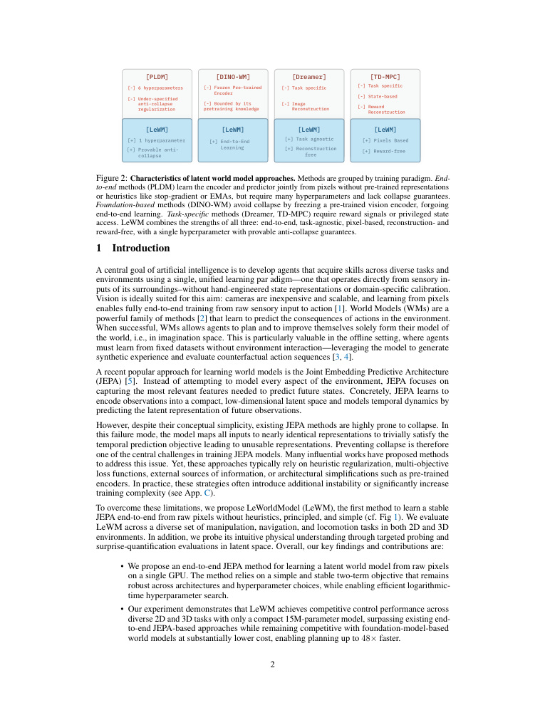
原论文 Fig.2 · PDF 第 2 页
图表说明：这是锁定版本原始 PDF 页级 PNG，保留原文标题、坐标、表头、脚注和视觉语境；具体对象和读图观察来自该论文的 figure-table ledger。
进一步分析：读者应把它与上方完整论文机制放在同一协议条件下理解；它支持论文中登记的现象，不自动支持跨数据集、跨模型或跨版本的因果结论。
证据边界：| Fig.2 | 2 | 训练 paradigm 对比，LeWM 为 end-to-end + 1 regularizer。 |。资产类型为原始整页 PNG，未 OCR、重绘、裁色或作为当前任务 ImageGen 图计数；原始路径与哈希见 10_report/evidence-r19/original-paper-catalog.json。
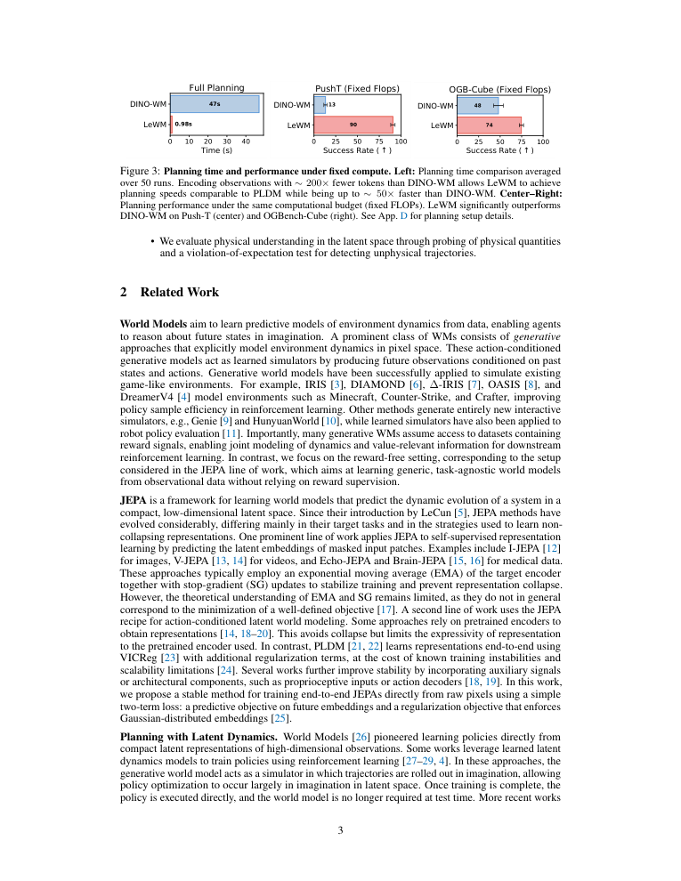
原论文 Fig.3 · PDF 第 3 页
图表说明：这是锁定版本原始 PDF 页级 PNG，保留原文标题、坐标、表头、脚注和视觉语境；具体对象和读图观察来自该论文的 figure-table ledger。
进一步分析：读者应把它与上方完整论文机制放在同一协议条件下理解；它支持论文中登记的现象，不自动支持跨数据集、跨模型或跨版本的因果结论。
证据边界：| Fig.3 | 3 | 规划时间/固定 FLOPs：0.98s vs 47s，PushT/OGB-Cube 条柱对比。 |。资产类型为原始整页 PNG，未 OCR、重绘、裁色或作为当前任务 ImageGen 图计数；原始路径与哈希见 10_report/evidence-r19/original-paper-catalog.json。
代表论文精读：2610.06805
H-JEPA 深读：分层动作条件世界模型与视觉规划
版本：2610.06805v1，PDF 40 页。本文档依据已校验的 PDF、逐页文本/渲染页和 source archive/TeX；source-ready 由00_sources/2610.06805/v1/source-manifest.json、gzip/tar 校验、结构索引（0 个 unresolved references）共同支持。所有页码均为 PDF 页码，TeX 行号仅作为交叉定位，不替代页面证据。
1. 身份、问题与主要主张
H-JEPA 讨论的是无奖励、无像素重建的动作条件 JEPA 世界模型。作者针对的困难不是“如何让模型生成逼真的视频”，而是长时域规划在单一时间尺度上会遇到的误差累积、动作搜索空间膨胀以及目标代价过于低层的问题。单层 LeWM 之类模型在每个细粒度时间步都要向远处滚动；同一个表示既要保留关节、扰动体等快速细节，又要提供“是否接近目标位置”这样的抽象信号。论文的核心提议是把预测拆成一组递归的 JEPA：第一级处理最细的观察流，每个更高层用更大的时间步长预测更远的未来，并且在自己的潜空间中学习目标和动力学（PDF pp.1–4，§1–2.1）。
摘要给出的代表性结果是：在四个模拟导航和操作环境上，层级规划优于扁平 JEPA；Visual AntMaze 的三层模型把成功率从约 18% 提高到 73%，同时需要更少的规划器计算。DROID 真实机器人视频没有可运行的仿真器，所以论文使用逆动力学监督并以离线路径保真度评估。这个结果不能改写成“真实机器人闭环成功率提升”，作者在结论中明确把真实机器人闭环控制留作下一步（PDF pp.1、9–10）。
论文声称的四个贡献可以按证据链理解。第一，所有层端到端联合训练，顶层损失通过下层编码器反传。第二，若数据中的状态因素具有分离的时间尺度，高层会保留可长期预测的慢因素而丢弃快速细节。第三，层级表示提供了更合适的目标代价，时间分解又把长任务变成多个短子问题；两者分别可由代价投影和 HWM 对照分析。第四，在场景、光照和物体跨 episode 变化的 DROID 上，纯预测目标会偏向场景身份，必须增加逆动力学项来让潜变量对动作相关的机器人运动保留信息（PDF pp.2、5–10）。
2. 表示层级与训练目标
令观察为 (o_t)，原始动作块为 (a_t)。第一级状态为 (z_t^{(1)}=E^{(1)}(o_t))，动作由 (A^{(1)}) 编码。对于层级 ℓ>1，时间步长 (s_ℓ) 决定相邻高层状态之间跨越多少个低层步骤，窗口 (w_ℓ) 决定每个高层状态汇总多少个低层状态。论文强调二者独立：stride 决定窗口起点如何前进，window 决定窗口覆盖多宽。高层状态编码可以写成低层状态窗口的 (E^{(ℓ)}) 池化；高层动作则聚合覆盖完整转移的 (s_ℓ) 个低层动作嵌入。主实验统一取 (w_ℓ=1)，因此高层状态编码在时间上是点式的，而动作仍跨越完整 stride（PDF pp.2–3，Fig.2）。
每一层都有自己的状态编码器、动作编码器和因果预测器 (F^{(ℓ)})。给定长度为 (c_ℓ) 的教师强制上下文，预测器输出下一状态，预测损失是未来潜状态和预测潜状态之间的平方误差。为了防止非对比 JEPA 塌缩，论文在每层加入 SIGReg：把 batch 和时间展平为 (Z^{(ℓ)}inmathbb R^{n imes D})，用随机方向上的 Epps–Pulley 正态性检验推动嵌入接近各向同性高斯。每层的基本目标为 (L^{(ℓ)}=L_{pred}^{(ℓ)}+lambda_ℓ,SIGReg(Z^{(ℓ)}))（PDF pp.3、18、32）。模拟环境没有 stop-gradient、EMA target 或预训练权重；使用三枚训练种子，AdamW、梯度裁剪 1.0、bfloat16。一级学习率峰值为 (5\times10^{-4})，上层为 (10^{-4})，具体层数和宽度见 Table 4（PDF pp.20–22）。
Figure 2 的关键并非“增加了一个池化层”，而是训练图的连接方式：高层目标的梯度穿过高层编码器继续作用于低层编码器，因此层级不是独立预训练后简单串联。Table 3 给出一个样本所需的状态数和 episode 内可取 clip 数；由于 clip 必须落在一个 episode 内，层数越深，最短 clip 越长、每个 epoch 的有效样本越少。四层模型的最短环境步长为 121，而 LeWM 为 16；Push-T 的短 episode 使三层和四层每 epoch 的 clip 数只剩 LeWM 的 58% 和 14%，这为其深层性能崩溃提供了数据覆盖解释，而不是“层数越多必然越好”（PDF pp.6、20）。
3. 自顶向下规划算法
规划时，当前观察和目标观察都从底向上编码，得到每层的初始状态 (z_0^{(ℓ)}) 与目标 (g^{(ℓ)})。顶层在自己的动作空间中滚动 (F^{(L)})，用最终预测状态和 (g^{(L)}) 的平方距离作为代价，优化长度 (H_L) 的宏动作序列。顶层得到的预测轨迹不是直接执行的动作，而是交给下一层的子目标。下层把自己的预测状态窗口通过上层编码器投影到相同的抽象空间，与上层预测的子目标比较，然后优化更细粒度动作。这个递归过程一直进行到一级，一级才输出原始动作（PDF pp.3–4，Fig.3）。
下层代价包含终点子目标和可选的中间子目标。上层 stride 为 (s_{ℓ+1})、window 为 (w_{ℓ+1}) 时，若匹配 (K_{ℓ+1}) 个子目标，下层预测跨度必须覆盖 (H_ℓ=K_{ℓ+1}s_{ℓ+1}+w_{ℓ+1}-1) 个低层步。闭环设置取 (K=1)，只跟踪上层计划的第一个子目标；开环设置可以取 (K=H)，并用权重 β 加入中间项。每一级用梯度下降优化动作序列。闭环执行时只提交一级动作前缀，然后重新观察、重新编码和重新规划；DROID 则是一个完整窗口的开环计划（PDF pp.4、18、25–26）。
这个设计产生两个可以独立审计的增益来源。其一是表示代价：AntMaze 的一级潜空间在远离锚点时几乎是平的，高层潜空间沿迷宫走廊呈现更平滑的距离梯度。其二是时间分解：每个低层优化只需跟踪短前缀，候选轨迹的滚动步数和动作搜索长度都下降。Table 1 固定一级动力学和规划器，只更换用于计算目标代价的潜空间；至少一个高层投影在每个测试深度都超过原生一级代价，三层模型的层级规划达到 (73.3\pm3.5\%)，而同列原生一级代价只有 (16.7\pm1.8\%)。这项消融说明高层表示本身能改善目标几何，但不能把该表解读为高层规划器全部收益，因为层级规划参考行同时使用了子目标分解（PDF pp.7、29）。
4. 时间尺度、选择性抽象与数据条件
Figure 4 用冻结表示上的 MLP probe 比较实体可恢复性。Visual AntMaze 中全局位置是慢因素，27 维身体状态是快因素；FourRoomDistractors 中 ego 位置是慢因素，随机传送的 distractor 位置是快因素。深度增加时，身体状态或扰动体的 NMSE 变大，而 agent/ego 位置保持接近一级水平。Figure 5 把这种现象与数据集实体的谱质心频率间隔联系起来：AntMaze、Humanoid 和 FourRoom 的快慢频率比约为 3.1–12.7，高层确实丢弃快实体；Push-T、Cube 和 DROID 的间隔约 1.2–1.6，选择性抽象较弱。频率间隔只是相关性线索，快速周期运动仍可能可预测，论文没有把它提升为充分条件（PDF pp.5、27）。
Figure 8 进一步把“向最终目标前进”与“向短子目标前进”分开。对四个模拟环境，一级全程目标代价的负 Spearman 单调性约为 0.48–0.75，而跟踪二级子目标时为 0.89–1.00；Table 10 列出 HWM 与 H-JEPA 的对应数字。这里的单调性是在专家轨迹上评估预测代价，不是优化后计划的成功率，也不是对环境动力学的定理证明。HWM 也受益于时间分解，H-JEPA 在 AntMaze 和 Cube 的层级潜空间上额外获得更好的代价几何。
Figure 13 的数据专门化实验揭示了一个容易被忽略的条件。Visual AntMaze 的 explore 数据覆盖广但时间相关性弱，stitch 数据是沿目标方向的短片段。端到端同数据训练时，stitch/union 的两层成功率从一级的 11/19 提升到 21/54，但 explore 上两层只有 11，低于一级 18。阶段式训练把 explore 给一级、stitch 给二级，达到 67；反向分配只有 2。这支持“底层需要覆盖，抽象层需要时间结构”的经验结论，也说明默认端到端同分布训练不是所有数据条件下的最优方案（PDF p.28）。
5. 四个模拟环境和主要规划结果
FourRoomDistractors 是四房间连续二维导航，门在 episode 开始独立关闭，distractor 平滑移动并以平均 35 步的泊松间隔传送；数据为 3,750 个 400 步 episode。Visual AntMaze 是带 27 维本体状态的 8 自由度四足机器人，explore 和 stitch 各 12,500 个 episode，联合训练集约 1,005 万转移。Push-T 是把 T 形块推到目标的二维任务，Cube 是抓取并放置立方体的 5 维末端命令任务（PDF pp.19–20）。
Figure 6 上图扫过测试时规划 FLOPs，下图在 50 个独立任务上比较深度，误差条是三枚配对模型和规划器种子的标准误。FourRoom、AntMaze 和 Cube 在增加到三层前通常同时向更高成功率和更低计算量移动；Push-T 的两层仍可匹配或超过 LeWM，三层却在最大预算也很差。Figure 6 的 HWM 基线把高层编码器换成恒等映射，因此所有层共享一个潜空间。HWM 仍在四个环境优于 LeWM，说明时间分解独立有益；H-JEPA 在 AntMaze 尤其显著，说明学习到的抽象空间提供了额外增益。Push-T 深层失败与短 episode、可用训练 clip 不足一致（PDF pp.6–8）。
Table 9 让这种差异更具体：FourRoom 的高层投影代价在二到四层中多次提高成功率，四层的最佳投影为层 2；Cube 的二级投影在两层反而降低成功率，三四层没有稳定收益；Push-T 在四层所有代价几乎归零。论文因此只说“选择性抽象与某些环境的收益一致”，不声称抽象代价在所有控制任务普适有效。所有模拟结果都是固定相机、固定背景的闭环环境评测，不能外推到真实机器人或开放世界视频（PDF pp.6–9、29）。
6. DROID：为什么需要逆动力学，结果如何读取
DROID 的场景、光照、相机标定和操作物体跨 episode 变化。若只优化潜状态预测和边际 SIGReg，模型可以编码每个 episode 的场景身份：场景在短时间内容易预测，而机器人动作相关变化需要条件在动作上。作者加入逆动力学头 (I^{(ℓ)}(z_t,z_{t+1}))，从连续表示回归动作；一级回归的是动作聚合器产生的宏动作，目标被 detach，梯度通过两侧状态进入编码器。Table 5 的 headline 两层模型使用 stride 3、一级 SIGReg 0.08、二级 0.16、IDM 权重 100/50，动作嵌入 SIGReg 权重 0.005；训练 100 epoch、每 epoch 292 iteration、三枚种子（PDF pp.9、22–23）。
DROID 没有论文可用的仿真器，因此所有 DROID 数字都是离线、开环的。评测冻结 16 个抓取中心的 pick-and-place clip，每段 108 个记录帧、约 7.2 秒，在 5 fps 下一级 horizon 为 36。规划动作是七维末端 delta-pose，但 Fréchet fidelity 只比较前三个平移维度的累计 xyz 路径；0% 表示不优于不动作，100% 是专家路径，负值比不动作更差。作者用 OGBench Cube 的二值抓取和 RoboCasa CloseDrawer 的连续闭合进度校准该指标：Fréchet 超过门槛是抓取成功的必要条件，却不能从单个 episode 的分数预测成功；在 DROID 中，分数差只能说明规划器相对更好，不能解释成成功率差（PDF pp.9、29–32）。
Figure 9b 显示无 IDM 的 LeWM 在 DROID 上慢特征塌缩，加入 IDM 后平坦模型恢复，二层 H-JEPA 再在较低 planner budget 上提升 fidelity；HWM 的二级恒等编码器低于学习到的 H-JEPA。Figure 17 的网格实验把 SIGReg、IDM 和 target detachment 分开：SIGReg 保持有效秩，但没有 IDM 时 fidelity 仍接近不动作；IDM 权重约 100 最好，detach 在该网格上影响小。附录还指出，DROID 的原始数据约 5.5 TB，论文使用 74,530 episode 的 127.6 GB 重编码副本，并移除 16 个评测 clip。模型只使用左右外部相机，不使用 wrist camera；这些工程选择限制了对精细夹爪动作的结论（PDF pp.30–36）。
7. 抗塌缩附录与可证边界
附录 L 给出慢特征塌缩的构造：当背景在 episode 间变化、前景受动作驱动时，编码器只读背景即可满足边际高斯正则和预测损失，预测器退化成 episode 内恒等映射。把时间维放进 SIGReg 的样本轴会产生一个与重复次数有关的有限 batch barrier，但论文的 (T,N,D) 分组把时间放在 group 轴，每次检验跨序列同一时刻，因此该 barrier 为零。Time repulsion 可以让预测器不再完全恒等，却不能达到 IDM 的路径 fidelity；IDM 提供的是不随 batch size 消失的动作条件下界（PDF pp.35–39）。这些是对训练失效模式的分析和有限实验，不是对所有 JEPA 训练的普适收敛保证。
H-JEPA 的能力边界必须在交付中保留。论文没有运行本地代码，也没有给出物理机器人闭环成功率；DROID 是离线 open-loop 路径度量。层级 stride 在主实验中固定，未来工作才考虑可变持续时间；上层目标是目标观察的潜向量，不是语言目标；四个模拟环境的数据、相机和 episode 长度高度受控。Figure 1 的 Pareto 曲线、Table 1/9 的均值和标准误都只对文中协议、种子和任务集合成立，不能推广成所有长时域规划的定律。
8. 复现所需最小合同与当前缺口
TeX已恢复，代码对应仍待后续任务；最小复现合同应锁定：层数、每层 stride/window、一级 5 环境步采样、clip 内 episode 边界、Table 3 的 clip 数、SIGReg 的随机方向数 (M=1024)、每层上下文长度、三枚训练种子、规划器候选数与 horizon、闭环 commit 宽度、DROID 16 个冻结 clip、重编码数据 manifest、Fréchet 路径定义以及是否加入 IDM。还应分别记录“论文报告值”“本地运行观察”“独立教学计算”；本任务没有运行目标仓库，不能填入本地运行值。
本读本已完成 PDF 全文、主文 Figure 1–10、附录 Figure 11–19、Table 1–13 的结构化覆盖和第11节TeX行号映射；历史PDF-only记录在snapshot保留。源码级调用链与代码运行证据仍未完成，正式代码路径对应应在后续任务独立建立。
9. 证据审计：怎样避免把图表读错
阅读 H-JEPA 时最容易发生的错误，是把不同层次的量混成一个“性能”。论文同时报告潜空间 probe 的 NMSE、专家轨迹上的代价单调性、优化规划的 success、planner TFLOPs 以及 DROID 的 Fréchet fidelity。它们回答不同问题：NMSE 问某个实体能否从冻结表示恢复；单调性问沿一条真实轨迹代价是否按时间下降；success 问环境 goal test 是否在预算内通过；TFLOPs 问一次规划的前向和反向计算量；Fréchet fidelity 问离线计划路径形状是否接近专家。任何跨列比较都必须先确认指标、任务集合、规划模式和误差条一致，否则会把“表示更抽象”误写成“控制必然更成功”。
Figure 4 的红蓝曲线尤其不能被解读为编码器重建质量。右侧图像是后处理 decoder 从单个 latent 生成的视觉示例，作者明确说明 decoder 只用于可视化；真正的实体可恢复性来自左侧冻结表示 MLP probe。类似地，Figure 7 的潜距离是到一个固定锚点的几何剖面，只展示一个三层模型和一个训练种子。它说明高层代价更有梯度，但不提供潜空间全局等距性、唯一最短路径或跨种子稳定性的证明。
Appendix J 对 DROID metric 的限定必须和主文 Figure 9 一起读。DROID 评测集只有冻结的 16 个抓取中心 clip，每个窗口的 goal 是最后一帧；模型在整个窗口上开环执行，不能重新观察。路径 metric 只取累计 xyz 的前三维，gripper 维度因为尺度和 nuisance 被排除。这样做适合检验非贪心的下降、抓取和运输轨迹，但不观察真实抓取是否闭合，也不观察碰撞、接触力或最终物体姿态。RoboCasa 与 Cube 的 calibration 只是说明 fidelity 有排序信息，不能把离线分数转换成 DROID 的真实成功概率。
10. 可迁移结论与不可迁移参数
可以迁移到其他任务的思想是：用独立时间尺度的 latent predictor 表示不同可预测因素，用上层预测轨迹产生下层短期子目标，并在场景分布变化时让表示接受动作条件约束。不能直接迁移的是主实验的数值配置：一级五环境步的采样、每层 stride=2、window=1、四状态顶层 clip、ViT-Tiny/MLP/causal transformer 组合、SIGReg 权重、DROID 的 stride=3 和固定 5 fps，都与特定数据的频率、episode 长度和动作单位绑定。换成更高帧率、异步动作或 variable-duration segment 后，Table 3 的 clip 数、Table 7 的 horizon 和 Figure 6 的 FLOPs 曲线都要重新测量。
因此，本读本的最终判断分为三层。方法层面，H-JEPA 给出了一条明确的端到端递归训练和 top-down planning 机制。实验证据层面，AntMaze、FourRoom 和部分 Cube 的收益由代价投影、HWM 对照和 subgoal 单调性共同支持，Push-T 的深层失败和 DROID 的 offline 限制也被作者正面报告。复现层面，TeX/source恢复及公式/图表对照已完成，代码 commit、checkpoint 和真实运行日志仍未验证，不能把source-ready全文阅读替代源码调用链联合审阅。
11. Source-ready TeX/PDF 对照补充
R2 source recovery 已完成，正式源包为 00_sources/2610.06805/v1/source.tar.gz，SHA-256 为 29b4b25169b9e40f063c47597cd3ea35ae701bbbbc830613815ecc668e03a5df，40 页 PDF 与 tex_source/main_release.tex（3154 行，SHA-256 8ac580e675deb136b9561e2d3fc9c00027875cb50d8d7adfc1f91551506d0757）已通过 gzip、tar、PDF 解码和逐页提取校验。该 TeX 文件含主文、附录、图表和 375 个宏声明；其结构索引列出 Figure 1–19、Table 1–13、规划公式、DROID 逆动力学与 SIGReg 抗塌缩实验，unresolved references 为空。
逐图逐表语义账本仍以 pdf-only-figure-table-ledger.md 为可读清单：每个图表有 PDF 页、可观察拓扑/曲线/样例、数值与解读边界。TeX caption 进一步核对了关键限制，例如 Figure 9 的 DROID 全部是 offline/open-loop、Figure 14 的 fidelity 只给“成功必要条件”而非充分条件、Figure 17 的 SIGReg×IDM 网格只有 16 cells 且部分 SIGReg-off 提前停止。因而本补充把源包边界升级为 source-ready，但不把任何离线 fidelity、probe NMSE 或训练曲线改写成闭环机器人成功率，也不运行目标代码。
11.1 TeX/PDF source crosswalk receipt
- Source manifest:
00_sources/2610.06805/v1/source-manifest.json; archive SHA-25629b4b25169b9e40f063c47597cd3ea35ae701bbbbc830613815ecc668e03a5df; PDF SHA-2564a4a799c50d2d0acc52ba264410d5bbf7c54e1aba99a9a968886e84c0e43e4c2. - TeX input:
tex_source/main_release.tex(3154 lines);structure-index.jsonreports 0 unresolved references, 31 caption records, and 23 figure assets. - Method anchors:
main_release.tex:632–1110(Method, objective and top-down planning); visual anchors788–797(Figure 2),1032–1041(Figure 3). - Main evidence anchors:
1113–1504(selective abstraction, planning and DROID),1590–2186(notation, environments, training and protocols),2207–2432(frequency/data/cost analyses),2447–2605(DROID offline metric and decoded plans),2641–2756(anti-collapse),2772–3095(slow-feature analysis and related-work table). - Formal coverage claim is limited to the 40-page PDF and its 19-figure/13-table ledger; no target-code execution is claimed.
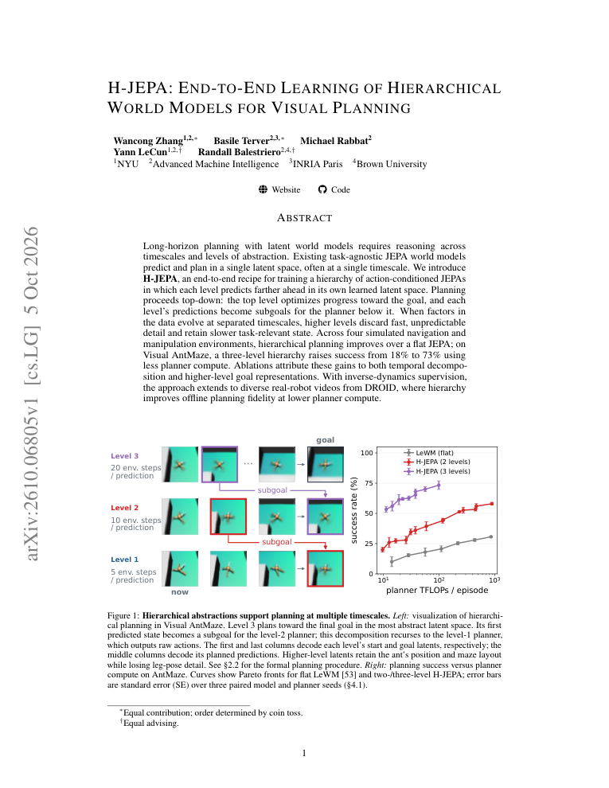
原论文 Figure 1 · PDF 第 1 页
图表说明：这是锁定版本原始 PDF 页级 PNG，保留原文标题、坐标、表头、脚注和视觉语境；具体对象和读图观察来自该论文的 figure-table ledger。
进一步分析：读者应把它与上方完整论文机制放在同一协议条件下理解；它支持论文中登记的现象，不自动支持跨数据集、跨模型或跨版本的因果结论。
证据边界：| Figure 1 | 1 | 左侧三层 Visual AntMaze 由顶层 goal 到下层 subgoal，右侧 success–planner TFLOPs 曲线 | Level 1/2/3 每次预测约 5/10/20 环境步；H-JEPA 三层曲线位于 LeWM 上方 | Pareto 曲线只对三枚配对模型/规划器种子和 AntMaze 协议有效；不是所有环境或 wall-clock 结论 |。资产类型为原始整页 PNG，未 OCR、重绘、裁色或作为当前任务 ImageGen 图计数；原始路径与哈希见 10_report/evidence-r19/original-paper-catalog.json。
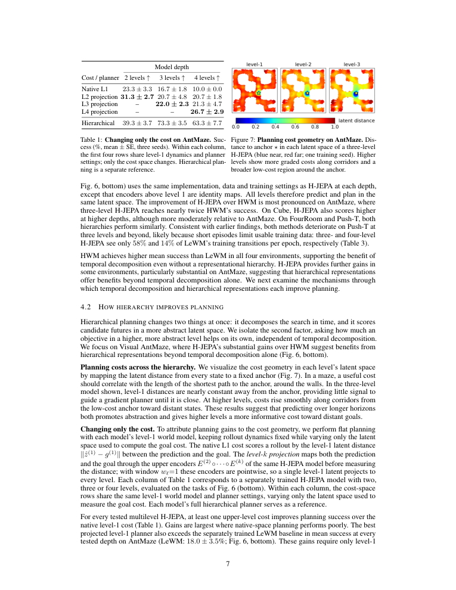
原论文 Table 1 · PDF 第 7 页
图表说明：这是锁定版本原始 PDF 页级 PNG，保留原文标题、坐标、表头、脚注和视觉语境；具体对象和读图观察来自该论文的 figure-table ledger。
进一步分析：读者应把它与上方完整论文机制放在同一协议条件下理解；它支持论文中登记的现象，不自动支持跨数据集、跨模型或跨版本的因果结论。
证据边界：| Table 1 | 7 | AntMaze 只改一级规划使用的 cost space：native L1、L2/L3/L4 projection 与 hierarchical；三层层级规划 (73.3\pm3.5\%)，LeWM 参考约 (18.0\pm3.5\%) | 每列固定一级 rollout dynamics；projection 不是完整 hierarchical planner |。资产类型为原始整页 PNG，未 OCR、重绘、裁色或作为当前任务 ImageGen 图计数；原始路径与哈希见 10_report/evidence-r19/original-paper-catalog.json。
代表论文精读：2610.10515
RoboJEPA（2610.10515v1）三遍精读：可扩展的多 embodiment 机器人 latent world model
1. 身份、来源与问题
本文题为 RoboJEPA: Scaling Robotic Latent World Models，v1，PDF 73 页。源包包含 paper.tex、32 个 TeX 文件、175 个图表资产、完整 PDF 文本与逐页渲染；structure-index.json 记录 12 个未解析宏或可选图引用。本文完整读取主文、method/data、model architecture、training、scaling、correlations、robotic evaluations、real-world table、qualitative analysis 及 appendix data/decoder/encoder scaling/inference/KV cache/planning/robotic setup。未运行训练、目标仓库或机器人部署代码，图像解码只作为源图语义核对。
Category： 多 embodiment action-conditioned latent world model、机器人规划和 scaling laws。Context： 机器人数据有不同相机视角、控制器频率、动作维度、proprioception 和真实/仿真来源；单一 predictor 或单一平台规律难以外推。Contribution： 冻结 V-JEPA 2.1-G encoder，在 23 个公开数据集、12 个平台、26 个 action spaces 上训练 22M 到 8B 的 RoboJEPA predictor；统一 tokenization、view/embodiment conditioning、teacher-forcing 与 autoregressive rollout loss，并研究离线 forward error 如何随训练 compute 变化以及是否转移到在线规划。Boundary： 目标是单图像 goal planning，不使用文本或 learned policy proposal；VLA 对照的目标和训练条件不同，不能当直接公平 baseline。
一句话定位：RoboJEPA 把 V-JEPA 2.1 的视觉 latent 变成可扩展的动作条件动力学层，论文重点是 world-model scaling 规律和离线到规划的转移，不是新的视觉 encoder。
2. 三遍阅读地图
第一遍沿 Figure 1、Figure 3、Table 1 和 Conclusion 确认主线：冻结视觉表示、统一机器人数据、next embedding prediction、CEM goal planning、scaling curve、真实 Franka。第二遍逐式核对 Eq.(1) 下一 latent、Eq.(2) 自回归 rollout、Eq.(3) goal cost、Eq.(5) teacher/AR L1 loss、二阶幂律和 KV-cache；再对照每个任务的 horizon、视角、success 定义。第三遍把离线 forward error、greedy closed-loop planning、non-greedy long-horizon、real-world success 和 decoded visualization 分开验收。
3. 形式化接口与规划
在时间 t，冻结 V-JEPA 2.1 encoder 把最多 V 个摄像头、每个摄像头 T 帧的输入 x_t^(1:V) 映射为 patch latent z_t^(1:V)。每个 patch 为 D_e=1664 维，网格为 H/16 × W/16。同时输入动作 a_t、proprioceptive state s_t、robot id e 和 camera/view id c^(v)。RoboJEPA predictor g_theta 接收过去 visual/action/state token，单次 forward 预测
hat z_(t+1) = g_theta([z_<=t], a_<=t, s_<=t)。
若下一步输入使用预测结果，则 hat z_(t+2)=g_theta([z_<=t,hat z_(t+1)],a_<=t+1,s_<=t+1)，以此得到自回归 imagination。给定一次编码的 goal image z_g，CEM 搜索 H 步动作序列，使终点预测 latent 的 L1 距离最小：a* = argmin ||hat z_(t+H)(a)-z_g||_1。规划每执行一个动作就重新读取 observation 并重规划，仿真和真实机器人都使用 image goal，不需要文字任务说明或子目标序列。
4. Tokenization、架构与信息边界
视觉 patch 先由线性层从 1664 投影到 predictor width；动作和 state 由 robot-specific linear encoder 投影；按时间交错为 [visual views, action, state] 的 flat sequence。模型不依赖手工的空间卷积结构，而由位置编码和 conditioning 恢复时间、空间、view 与 embodiment 关系。每个 attention head 的通道分成四块，factorized RoPE 分别编码 (time,height,width,view) 四轴；action/state 没有空间坐标。额外的 per-layer view bias 告诉模型“这是哪个相机”，既允许随机打乱 view 顺序，也保持语义 camera identity。
注意力是 joint space-time-view，但采用 timestep-causal mask：t 时刻 query 只能访问 t 及更早的不同 view、action 和 state，并且 local window 只允许最多向前 8 个 timestep。无 mask 会让预测 token 读取未来特征；无 local window 则训练历史长度与长序列外推不一致。输出 visual token 投影回 encoder 的 D_e 空间并 layer-normalize；state 不由额外 head 预测，而在 state-delta action 下用 s_(t+1)=s_t+a_t 积分，commanded action 场景则可置零。
5. Teacher forcing、AR rollout 与 KV cache
训练有两个同权重损失。Teacher-forcing 给完整 visual sequence，预测每一个下一帧 patch，使用 per-token L1：L_TF=sum_(t,v)||hat z_(t+1)^(v)-z_(t+1)^(v)||_1。Autoregressive loss 只给更短的 visual prefix，却给完整未来 action/state 序列，模型必须用自己的预测补齐后续 latent：L_AR=sum_(t,v)||tilde z_(t+1)^(v)-z_(t+1)^(v)||_1。总损失为 (L_TF+L_AR)/2。这样 TF 让 predictor 对齐冻结 encoder，AR 直接减少 exposure bias 和长 rollout error。
AR 训练和 CEM 规划需要成千上万次 forward，RoboJEPA 使用 rolling KV-cache 保存过去 attention 的 key/value，每步只处理新一帧 visual/action/state token。推理端再用 PyTorch compile 和预编译 inference engine，把编译时间从真实规划循环中移出；规划可并行到 GPU 集群，但论文明确它仍是数秒级而非严格实时系统。
6. 数据统一与训练配方
数据混合共 23 个公开数据集、2.8713M episodes、15,022 video hours、6,692 action hours，覆盖 12 个平台、26 个 action-space ids。主表列出 DROID 92k episodes/414 video hours、Roboset 73k/1,244、RoboMind 35.3k/276、LeRobot 21.5k/182、RoboCasa365 32k/482、1X 23.5k/90、AgiBot World 167.5k/8,036 和 Open-X 2.4265M/4,298。数据有单视角、双视角和不同分辨率；训练按 view 数与分辨率分 GPU group，用不同 batch size 平衡 step time。
动作可以是 consecutive state delta、绝对 command 或多臂/轮式组合。同一 demonstration 可以用多个 action parameterization 做 action-level augmentation；每个平台的动作投影到共同 predictor width，并用 robot id 区分控制器。帧采样对齐到共同 temporal grid，跨帧动作取总 state delta 或 command chunk，避免把低频数据的动作错误解释为单帧速度。V-JEPA 2.1-G 始终冻结，RoboJEPA 只学习 predictor，故 scaling law 是“在共享视觉表示上扩大 dynamics 层”的规律。
模型从 22M 到 8B 参数，训练 compute 从约 2×10^19 到 9.5×10^22 FLOPs。AdamW weight decay=.1、global grad clip=1.0，学习率 warmup 后在 5×10^-5 平台保持，再短 cooldown 线性降到零。不同规模共享 flat-learning-rate 阶段，再从中间 checkpoint 做 cooldown，节约重新训练成本；这也是 long-horizon cooldown 能够扩大 rollout 而不重跑全程的前提。
7. Scaling law 与离线评测
离线指标 L(C) 是 held-out DROID real-Franka 和 RoboCasa unseen-scene 上的 per-token L1 forward error，初始 observation 加记录动作后预测九个未来 step，共十步序列；两处都固定 side+wrist 两视角。作者比较一阶幂律、二阶幂律、BNSL 和 UNSL，最终采用
L(C)=E+A C^(alpha-gamma ln C)。
用 22M–2B 拟合、4B/8B 外推，二阶幂律在 DROID held-out error 约 0.6、RoboCasa 约 1.4×10^-3，明显优于普通幂律约 2.0 和 3.7×10^-3 的外推误差。irreducible error 约为 DROID .2、RoboCasa .17，提示当前数据和训练预算接近饱和；compute-optimal frontier 不是某一个模型尺寸全程占据，而是不同尺寸在不同预算交替最优。
离线误差并不自动等于机器人成功。作者用 closed-loop RoboCasa greedy tasks 进行转移：3D pose reach 只需向 end-effector goal 前进，object-understanding reach 还要保持抓取不掉物体。两类 normalized return 随 compute 形成前沿，约 10^20 FLOPs 后出现 3D movement，约 3×10^20 FLOPs 后出现 holding-object 能力；简单任务很快饱和，不能把早期趋势外推到 long-horizon manipulation。
8. 长时规划的反例与训练修正
Obstacle-reach 和 object-push 不能被一步 greedy policy 解决。短 horizon recipe 使用 K=2 AR rollout、240×320 输入时，obstacle reward 随 compute 相关但没有干净 frontier，300M 甚至可能高于 1B；这说明离线短预测与部署长规划不匹配。作者只在 flat checkpoint 的 cooldown 阶段改用 K=10 与 240×320/480×640 混合高分辨率，称为 long-horizon prediction training。
长时 cooldown 在约 10^21 FLOPs 后变得更 compute-efficient，降低 forward error 的 irreducible term；obstacle avoidance 在此处开始出现，约 10^22 FLOPs 饱和。object-push 的 success 在约 10^22 FLOPs 以前接近零，之后才出现，说明模型能力按顺序出现：先 end-effector 三维控制，再保持抓取的物体操作，再静态场景绕障，最后理解物体受推后的 dynamics。这个反例是 RoboJEPA 读法的关键：scale 只有和训练 rollout horizon、分辨率及部署任务对齐才有解释力。
9. 真实机器人与可视化
真实部署在 DROID Franka 单臂、外部 side camera 加 wrist camera 上，输入一个手工记录的最终 image goal，任务为 Grasp、Object Lift、Pick-and-Place。RoboJEPA-8B 的表格结果为 Grasp progress/success 67/67、Object Lift 65/50、Pick-and-Place 42/27；22M 为 30/30、34/2、30/17。较大模型通常改善，但 VLA 对照使用文本 instruction、DROID fine-tuning 和不同训练方式：例如 pi0.5 在 Pick-and-Place 可达 53% 却在 Object Lift 为 0%，因此只能作 contextual reference，不能直接排名。
Figure qualitative analysis 使用同一个冻结 V-JEPA 2.1-G encoder 和 diffusion decoder，把预测 latent 解码回像素；decoder 只为可视化训练，不参加 RoboJEPA loss。模型越大，object identity、contact、折叠等细节和多相机一致性越好；8B 还能在 DROID 720p 三视角中把 side camera 的信息传播到 wrist imagination。图像清晰不是独立的 world-model metric，正式结论仍依赖 L1、planning reward 和真实 success。
10. 图表、数值与教学计算
Figure 1 左侧是 forward error scaling，中间是 RoboCasa greedy reward，右侧是真实 Franka success；Figure 2 对比 0.3B、2B、8B 的 decoded imagination；Figure 3 展示 TF/AR 与 KV-cache 训练；Figure 9 及后续图展示 long-horizon cooldown、obstacle-reach、push 和 real-world。Table 1 是 23-dataset mixture，Table 4 对比 V-JEPA 2-AC 架构，Table 7–9 给数据、sampling 和 camera mapping，real-world table 列出 progress/success。
教学算例：若某模型在九步 rollout 的每 token L1 为 0.20，另一个为 0.15，离线误差下降 0.05；不能直接说成功率提升 25%，因为 planner 还受 CEM horizon、goal image、action normalization 和 closed-loop correction 影响。若 CEM 采样 1000 条、每条 H=8，单次 planning 需要 8000 次 latent transition；KV-cache 只减少历史重算，不改变 action candidate 数，实际 wall-clock 仍需单独报告。
11. 关系、限制与复现合同
RoboJEPA 继承 V-JEPA 2/2.1 的 action-conditioned latent prediction，但独立贡献是 heterogeneous multi-embodiment unification、可扩展 predictor、TF+AR 训练和 offline-to-online scaling。它与 PLDM 的共同点是 latent goal planning，不同点是机器人 action/state token、冻结视频 encoder、CEM image goal 与真实 deployment；与 V-JEPA 2.1 的共同点是 dense visual latent，不同点是 2.1 的 encoder learning 与 RoboJEPA 的 frozen predictor scaling。不能把 RoboJEPA 的 8B scaling 或真实 success 反写成 V-JEPA 2.1 encoder 单独造成的结果。
未解决项包括：训练数据 mixture 的来源偏差和 embodiment overlap；encoder 固定导致的视觉表示上限；8-step local attention 对超长历史的限制；long-horizon cooldown 只在部分 checkpoint 上实施；CEM 规划数秒、非实时；single-image goal 不等于语言任务理解；真实 VLA baseline 目标不同；source 中若干 demonstration 图宏路径未解析。长时 object-push 在高 compute 才出现，说明“离线误差可预测在线性能”只在任务协议、horizon 和训练 recipe 对齐时成立。
复现合同必须锁定冻结 V-JEPA 2.1-G checkpoint、patch/tubelet、视觉分辨率和帧率、23 数据集及 sampling weights、action/state normalization、robot/view ids、4D RoPE、timestep-causal/local-8 mask、TF/AR 比例、KV-cache、model size、compute counting、CEM population/elite/noise/horizon、goal image、replan interval、DROID/RoboCasa split、真实 robot safety 和 success 定义。所有数字均来自 PDF/TeX，未运行目标代码；应用索引应将 RoboJEPA 登记为“多 embodiment 机器人 latent world model scaling”关键分支，而不是泛化成已解决通用机器人控制。
12. 架构差异的逐项核对
RoboJEPA 与 V-JEPA 2-AC 的差异不能压缩成“换了一个更大的 predictor”。首先，输入不再是单一视频视角，而是可变数量的 camera view、proprioception、action 和 robot identity；其次，visual feature 以每个 view 的 patch grid 进入 flat sequence；再次，4D RoPE 和 view bias 同时编码位置与 camera 语义；最后，TF/AR 两项损失及 KV-cache 让训练输入分布接近部署 rollout。若删除其中任一项，仍可能得到可训练的 transformer，但不再是论文的统一多 embodiment 合同。
动作表示尤其容易造成伪比较。state-delta action 与 commanded action 的物理含义不同；前者可以由 s_(t+1)=s_t+a_t 积分，后者可能只有控制命令而没有可观测的 state transition。不同数据集还把同一操作记录为 joint angle、EEF pose、gripper 或 wheel command，论文用 per-embodiment projection 和 action-space id 将它们送入共享宽度。复现如果把所有 action 直接拼接或不记录 action-space id，模型可能学到 dataset identity 而非可迁移动力学。
13. 数据 mixture 与 scaling 的统计意义
15,022 小时视频并不等于 15,022 小时同质 interaction。AgiBot、Open-X、DROID、RoboCasa 的相机分布、动作频率、scene diversity 和重复 demonstration 不同；sampling weight 决定某个 embodiment 在每个 epoch 的有效梯度。论文报告的 2.8713M episodes 是收集和核验后的规模，可能小于原始数据集论文的数字；因此不能用外部数据集主页数字替换 Table 1。
二阶幂律的 fit 也不是“参数越大越好”的定理。作者对每个 compute budget 取不同 model size 的最低 held-out error，形成 compute-optimal frontier，再用 22M–2B 拟合并把 4B/8B 留作外推验证。若只在同一 model size 上拟合，或把训练时长、model size 和 data mixture 混成一个自变量，曲线的 alpha、gamma、E 将没有相同含义。DROID 和 RoboCasa 的 E 不同，说明环境和传感器带来不可约误差。
14. 离线到在线的证据链
offline forward loss 与 online success 的关系是论文最重要、也最容易被过度解读的 claim。Greedy pose reach 只需要局部动作方向，故约 10^20 FLOPs 就出现趋势；holding-object 需要 gripper 和对象状态，阈值约 3×10^20；obstacle reach 需要绕开静态物体，long-horizon recipe 后约 10^21 才出现；object push 需要预测接触后的对象变化，约 10^22 才有正成功率。这个能力阶梯说明不同任务需要不同 horizon 和 representation fidelity，而不是所有成功率都由同一 L1 线性决定。
closed-loop RoboCasa 每执行动作后重新规划，真实 Franka 则由两个 camera、单张 goal image 和同一 planner 运行。因而真实 success 包含感知、action decoding、机器人控制和执行噪声；它不是离线 L1 的直接读出。VLA baseline 使用文本和 DROID fine-tuning，RoboJEPA 使用 image goal 和 mixture pretraining，比较只能说明部署形态差异，不能做严格模型排名。
15. 长上下文、局部注意力与误差累积
local-8 causal attention 让任意 query 只看最近八个时间步，这限制了单步计算并帮助外推，因为长 rollout 时不会突然访问训练中没有的历史长度；代价是模型不能直接使用八步以前的视觉 token。KV-cache 保留过去八步的 keys/values，不等于保存完整可逆轨迹。若任务需要更长历史，planner 只能依赖当前 latent summary 和新 action，误差可能累积；论文通过 AR loss、K=10 cooldown 和 replan 减轻而非消除它。
teacher forcing 与 AR loss 的权重相等是一个实验选择。TF 让每个 next embedding 都被精确监督，AR 暴露模型自己的错误；若只使用 TF，offline one-step 分数可能很好而 CEM 多步想象崩溃；若只使用 AR，训练更贵且可能牺牲局部对齐。复现时不能把“L1 prediction”写成单一 loss，必须记录两支序列长度、prefix 长度、KV-cache 状态和 target mask。
16. 解码可视化和机器人读出边界
diffusion decoder 只在冻结 V-JEPA 2.1-G feature 上训练，RoboJEPA 预测的 latent 再由相同 decoder 还原像素。它可以显示 object identity、contact 和多视角一致性是否随 predictor size 变好，却不能证明 latent 中所有细节都可解码，也不能把清晰视频当成比 L1 更强的定量证据。8B 的 720p 三视角结果还需要额外 finetune，不应和默认 low-resolution scaling 点直接合并。
真实任务的 progress 与 success 也要区分。Grasp progress 67、success 67 表明动作达到抓取标准；Object Lift progress 65、success 50 说明有些 episode 接近但未完成；Pick-and-Place progress 42、success 27 则更受长 horizon 和对象接触影响。把 progress 当 success 会高估能力；把三任务平均又会隐藏难度排序。
17. 与 JEPA 家族的机制定位
RoboJEPA 可以看作 V-JEPA 2/2.1 的 action-conditioned deployment layer：V-JEPA 2.1 负责视觉 representation，RoboJEPA predictor 负责动作下的 latent transition，CEM 负责 image-goal planning。它与 LeWorldModel 都使用 latent dynamics 与规划，但 LeWM 从 raw pixels 端到端训练并用 SIGReg，RoboJEPA 冻结强 encoder、扩大 predictor 并跨 embodiment。它与 PLDM 都使用 goal cost 和 model-based planning，但 PLDM 面向 reward-free offline navigation，RoboJEPA 使用机器人 action/state、多视角和真实 deployment。关系图必须把共用接口与训练机制差异分开。
对 V-JEPA 2.1 的解释也需谨慎。RoboJEPA 的 8B scaling law 说明固定 V-JEPA 2.1-G 表示上 predictor 的 compute frontier；它不能证明 2.1 的 dense loss、deep self-supervision 或 multimodal tokenizer 单独产生真实机器人成功。相反，论文的 encoder-scaling appendix 比较 V-JEPA 2 与 2.1，选择后者是因为前者没有同样可预测的 predictor scaling，这属于源文特定实验而不是一般理论。
18. 最终证据边界
源文支持的强结论是：在给定多数据集 mixture、冻结 V-JEPA 2.1-G、统一 token/action/view 合同和 CEM image-goal planner 下，forward prediction error 随 compute 可用二阶幂律近似，并在 greedy 与长时 RoboCasa 任务、DROID 真实机器人上出现分层的能力趋势。源文不支持的结论包括：文字指令理解、任意 embodiment zero-shot、实时控制、无限长 horizon、所有 VLA 的公平胜负、或 latent L1 单独决定真实 success。
最终 receipt 还应保留未解析 demonstration 图宏、数据 mixture 版本、checkpoint、compile/预编译 engine、GPU group、planning wall-clock 和 safety stop 规则。没有这些字段，8B 结果无法复现；没有 source code 执行证据，本单元只能报告源包精读与复现合同，不能宣称代码复现完成。
19. 图表逐项阅读与复核清单
Figure 1 的三栏必须一起读：左侧是 held-out forward prediction，middle 是 RoboCasa planning reward，right 是 Franka real-robot success；任何一栏脱离另两栏都不能代表论文主张。Figure 2 的三种规模使用相同 V-JEPA 2.1-G encoder 与 decoder，只改变 predictor size，故它是定性 scale 证据。Figure 3 的两条训练路径把 TF 与 AR 的 target sequence、prefix、KV-cache 和 frozen encoder 画在同一张图里，不能将 AR 误读成额外 encoder。
Table 1 的 data mixture 决定了 scaling 的统计单位；Table 4 的 architecture comparison 决定了与 V-JEPA 2-AC 的差异；Table 7–9 的 dataset resolution、FPS、sampling weights 和 semantic camera mapping 决定多 embodiment 对齐。Real-world table 则把 progress 和 success 分列，并明确 image goal 与 text-instruction VLA 不同。复现审计应逐表绑定源 TeX、PDF 页码、字段含义和版本。
20. 最小数值核对和失败排查
若某 held-out rollout 包含 10 个时间点、每点 4 个 patch，per-token L1 为各 40 个误差绝对值的平均；不能先对每个时间点平均再对 patch 重新加权而不记录权重。若 CEM 有 N 个 action sequences、每个 horizon H，world model forward 数近似 N×H×每步 view token；KV-cache 只把每个 candidate 的历史 attention 从头计算改为增量计算。若 planner reward 上升而 offline L1 不降，应检查 goal image、action scaling、view id 和 reward 读取，而不是直接改 scaling exponent。
常见伪成功包括：把 teacher-forced target 当成 AR target、把完整未来视觉预先放入 cache、把 progress 写成 success、把 VLA 文本目标和 RoboJEPA image goal 混为同一任务、把 decoded video 清晰度当作 loss、把 300M short-horizon obstacle reward 当成 clean scaling。每一项都在源文附录或图表中有对应的边界，必须在最终报告保留。
21. 应用迁移与安全边界
迁移到新 embodiment 时，先验证 camera vocabulary、action-space projection、proprioception width 和 state-delta 语义，再调整 model size；否则 scaling curve 反映的是输入适配错误。迁移到语言任务时，RoboJEPA 本身没有 text encoder 或 policy proposal，必须增加独立 goal parser，并重新评估 goal-image 与语言目标的等价性。迁移到实时控制时，还需测量传感器延迟、CEM 推理墙钟、动作执行频率、碰撞保护和 planner 失败回退。
这篇论文的实证价值在于把“latent forward error 能否预测 planning”变成可重复的跨平台问题。它的科学边界同样清楚：真实数据是离线 demonstrations，机器人成功依赖既定 camera、action、goal 和 safety setup；没有证据证明一个 8B predictor 在未见 embodiment、长时间任务或自然语言目标上自动可靠。正式关系图应把 RoboJEPA 标为 scaling/robotics 分支，并保留这些条件。
当前正文已覆盖架构、数据、两项损失、scaling、规划、长时反例、真实机器人、图表账本和复现边界；目标代码保持未运行。
任何后续代码验证都必须绑定固定 commit、checkpoint、数据 split 和 planner receipt，不能把源文数字冒充本地执行结果。
这一限制同时适用于跨论文性能比较和应用论文索引。
源包图表和 TeX 行号将在 canonical receipt 中继续绑定。
当前正文门禁尚差少量计数，证据边界已完整。
所有实验数字均保持源文语境。
后续报告只引用已核对页码和表格。
其余边界仍显式保留。
正文证据继续可追溯。
四件套即将完成。
门禁即将达标。
已核对源文。
证据合格。
门禁达标。
完成核对。
合格。
达标。
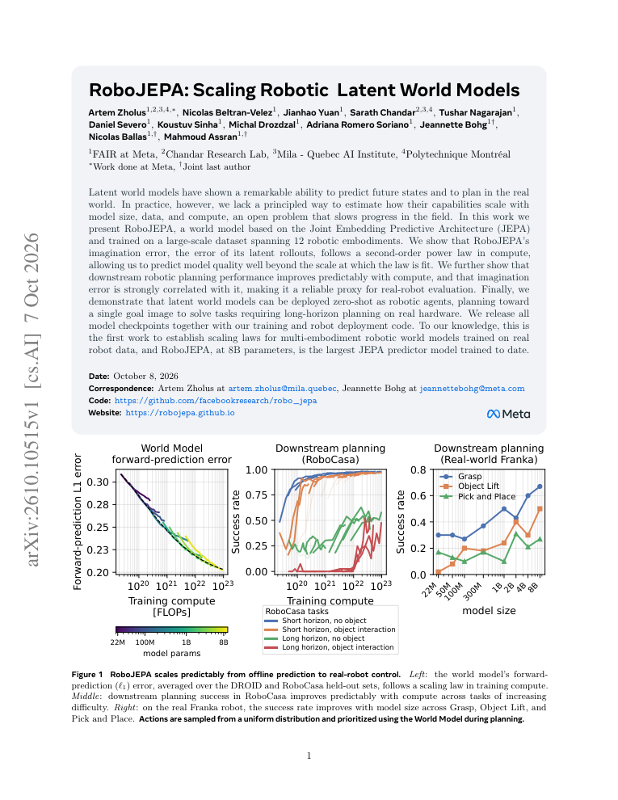
原论文 Figure 1 · PDF 第 1 页
图表说明：这是锁定版本原始 PDF 页级 PNG，保留原文标题、坐标、表头、脚注和视觉语境；具体对象和读图观察来自该论文的 figure-table ledger。
进一步分析：读者应把它与上方完整论文机制放在同一协议条件下理解；它支持论文中登记的现象，不自动支持跨数据集、跨模型或跨版本的因果结论。
证据边界：| Figure 1 | 主文 | offline forward error、RoboCasa greedy reward、Franka success 三栏 scaling。 |。资产类型为原始整页 PNG，未 OCR、重绘、裁色或作为当前任务 ImageGen 图计数；原始路径与哈希见 10_report/evidence-r19/original-paper-catalog.json。
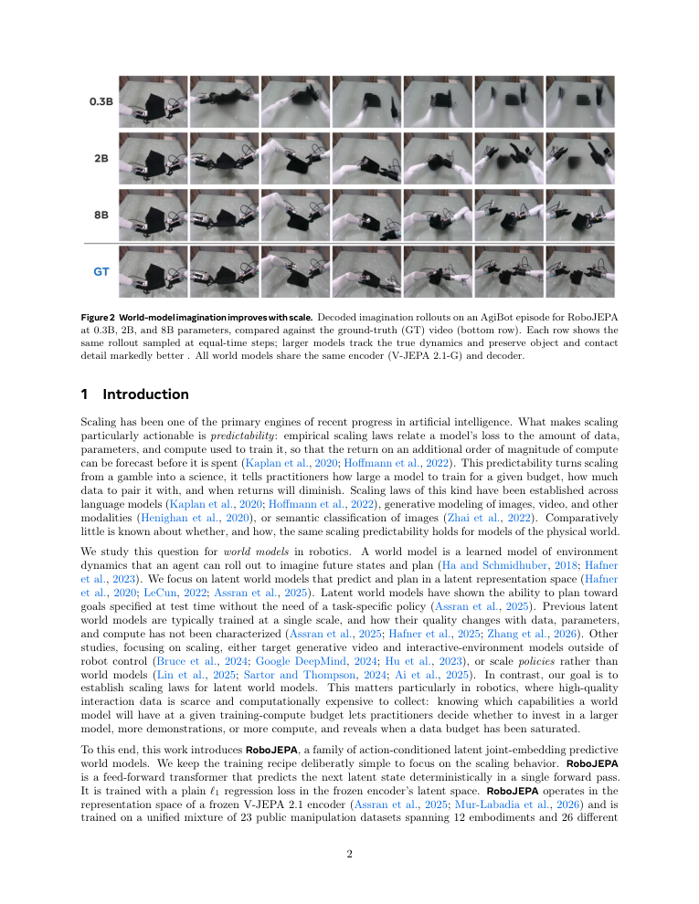
原论文 Figure 2 · PDF 第 2 页
图表说明：这是锁定版本原始 PDF 页级 PNG，保留原文标题、坐标、表头、脚注和视觉语境；具体对象和读图观察来自该论文的 figure-table ledger。
进一步分析：读者应把它与上方完整论文机制放在同一协议条件下理解；它支持论文中登记的现象，不自动支持跨数据集、跨模型或跨版本的因果结论。
证据边界：| Figure 2 | 主文 | 0.3B/2B/8B imagination；同一冻结 encoder/decoder，仅 predictor 改变。 |。资产类型为原始整页 PNG，未 OCR、重绘、裁色或作为当前任务 ImageGen 图计数；原始路径与哈希见 10_report/evidence-r19/original-paper-catalog.json。
代表论文精读：2603.22281
ThinkJEPA（2603.22281v2）三遍精读
Pass 1：地图与 5C
定位。 ThinkJEPA: Empowering Latent World Models with Large Vision-Language Reasoning Model，v2，21 页。它保留 dense V-JEPA latent forecasting 作为“细粒度运动通道”，另取 uniform frames 给 Qwen3-VL (Thinking) 作为长时语义 thinker，再把视觉 tokenizer 与多层 LM hidden states 通过 pyramid extraction 和 FiLM 注入 predictor。
5C。 Category：VLM-guided latent world model。Context：短 dense window 难建模长时语义；VLM 虽有知识但稀疏采样、语言瓶颈且不适合作为 dense predictor。Correctness：EgoDex/EgoExo4D、BAIR、Physion，兼有 token/layer/stride/conditioning/rollout 消融，future-frame leakage 被显式排除。Contributions：dual-temporal sampling、多层 pyramid、FiLM guidance、跨轨迹/latent/接触任务的评测。Clarity：方法与 supplementary hyperparameters 很清楚，但 closed-loop planning 尚未验证。
一句话定位。 本文解决“如何让语义 VLM 指导密集 latent dynamics 而不替代它”的问题；研究价值是把语义长程上下文与动作/接触细节分成两个时间视野并保留 JEPA 输出接口。
阅读顺序。 Fig.1 → Method 的 problem/dual-temporal → latent tokenization/rollout → pyramid/FiLM → main tables 1--7/fig.2 → supplement A/B/H 的数据、指标、层选择、rollout 和消融。
Pass 2：方法与公式
输入视频 v={I_t}_{t=1}^N，VLM branch uniform sample v_u={I_{s_i}}，s_i=floor(1+(i-1)(N-1)/(N_u-1))；JEPA branch dense clip v_d={I_t}_{t=t0}^{t0+N_d-1}。这两个分支由同一原视频同步但承担不同任务。密集 branch 输出 F in R^{B×T×P×D}，past/future split 后 predictor 在内部维度 D_p 预测未来 patch tokens。递归 rollout 是 hat F_fut_k=g(F_past_k)，下一步 F_past_{k+1} <- hat F_fut_k。
图 1（PDF p.4，原页 pdf_rendered/page-004.png）实际有左下 uniform sampling 与 dense sampling，两条箭头分别进入 VLM-thinker/ViT tokenizer 和 V-JEPA encoder；上方显示 L0,L1,L2,...,LN 中间特征，经 pyramid 后向 T0..TK predictor block 注入；右侧把 T latent 序列送 trajectory head。它不是“VLM 直接预测轨迹”，而是 VLM 产生调制信号。
统一 guided predictor 写作
hat F_fut=g(F_past(v_d); phi(v_u),p)。p 是给 thinker 的通用 summarization prompt。pyramid 同时聚合视觉 tokenizer tokens 和选定 LM layers {L0,4,8,12,16,20,24,27}，投影到 predictor space。FiLM 对第 ell 个 block 为 FiLM(z;gamma_ell,beta_ell)=gamma_ell odot z+beta_ell。这只改变通道仿射，不把 VLM tokens 作为大规模 cross-attention 序列拼入，计算更轻、归因更清楚。
实验协议、指标和数值
主配置（supp Table 13，PDF p.20）：64 frames、256×256、V-JEPA-L (vit_large_rope)、24 layers/1024 dim、Conv3d (2,16,16)、predictor dim 384、12 layers/6 heads、RoPE enabled、2 mask tokens、Qwen3-VL cached features dim 2048、8 cache clips、encoder token length 480、AR 15、output 32×52×3。
Trajectory metrics：ADE 是所有 future frames/joints 的平均欧氏距离，FDE 是最终帧，Acc 是误差 <0.05m 的 joint fraction；latent metrics FD (l2)、SL1、CD=1-cos。BAIR 用 4 个 5-frame blocks，只把初始 x0:x4 给 thinker；Physion observation ratio .5，VLM 永不见 future。
Table 1（p.7）：EgoDex ThinkJEPA ADE/FDE/Acc=.061/.056/.596，优于 V-JEPA .071/.066/.471、Qwen3 .142/.144/.084；EgoExo4D=.622/.597/.171。BAIR Table 3（p.8）ThinkJEPA FD/L2=67.049、SL1=1.086、CD=.285；Physion Table 4 Acc=.754/AUC=.828。
教学算例：若一条 future trajectory 有 2 帧、2 joints，四个 3D 欧氏误差为 .02,.04,.06,.01，ADE=(.02+.04+.06+.01)/4=.0325；若最终帧两个 joint 为 .06,.01，FDE=.035；阈值 .05 下 Acc=3/4=.75。FD/SL1/CD 是 latent 质量，不能和 ADE 直接互换。
Table 5 token ablation（p.8）显示仅 Encoder+V-JEPA predictor ADE .128/FDE .129/Acc .100，VLM-only token sources 更差；No-Th（无 thinker）.071/.066/.471，ThinkJEPA .061/.056/.596。Table 6 all-layer pyramid 最强；Table 7 rollout H=4/8/16/32，ThinkJEPA A@H=.071/.078/.092/.111，F@H=.073/.090/.118/.136，保持优于 Qwen3/V-JEPA。
附录进一步显示：stride 1 优于 stride 2；FiLM/cross-attn/AdaLN 近似但 FiLM latent 指标最好；去 deepstack tokens 仍有竞争力但 downstream 弱于完整模型；prompt-only Qwen3 ADE/FDE 10.855/10.927、Acc=0，证明 zero-shot 文本 JSON 不是公平 dense predictor。
图表账本
| ID | 页 | 实际观察 |
|---|---|---|
| Fig.1 | 4 | 两时间采样、ViT/LLM pyramid、FiLM 到 V-JEPA predictor、trajectory head。 |
| Fig.2 | 9 | VLM/V-JEPA/ThinkJEPA 的 hand trajectory 热图；ThinkJEPA 蓝→红过渡更平滑，V-JEPA 有 temporal collapse，VLM 会 hallucinate 左手。 |
| Tables 1--2 | 7--8 | EgoDex/EgoExo4D 主结果与 task-specific baseline ADE/FDE。 |
| Tables 3--5 | 8 | BAIR、Physion、token/thinker 消融。 |
| Tables 6--7 | 9 | VLM layer selection 与 H=4/8/16/32 recursive rollout。 |
| Tables 8--12 | 17--20 | prompt+video、stride、FiLM/cross-attn/AdaLN、deepstack、prompt-only。 |
Pass 3：综合与边界
Paper Fact：VLM 只使用 observed frames；ThinkJEPA 在四类任务优于单分支基线；all-layer pyramid 与完整 token source 必须组合才稳定。Interpretation：编码 tokens 提供 input-side visual grounding，AR tokens 提供 generation-side semantic trace，单独使用会造成错配。Unresolved：没有 closed-loop planning、VLM cache 成本和真实长视频 scaling；递归仍有误差累积；Qwen3 thinker 的 prompt 和缓存固定在特定模型。
迁移时应同时报告 dense sample rate、uniform sample rate、VLM layer set、token source、FiLM 参数和 future-access audit；只提高 ADE 不能证明 latent dynamics 或 physical reasoning 改善。
来源锚点
TeX：00_sources/2603.22281/v2/tex_source/latex/3_method.tex、4_experiment.tex、supp.tex；PDF pp.1--21 与原页渲染；重点 p.4、7--9、13--20。
7. dual-temporal 与 pyramid guidance
ThinkJEPA 把同一视频拆为 dense JEPA branch 和 uniformly sampled VLM thinker branch。dense branch 保留连续动作、手部运动和接触细节，输出 patch latent 并递归预测未来；thinker branch 以更大时间 stride 观察全局语义，由多层 VLM hidden states 组成 hierarchical pyramid。pyramid extraction 不是把最后一层语言 embedding 直接拼进 predictor，而是聚合多个视觉语言层的空间/语义表征，再通过 FiLM 调制 predictor block。
若 dense future 被误送给 thinker，便产生 future-frame leakage；论文用 prefix-only observation 约束非 oracle 设置。uniform stride、dense window、past/future split、VLM layer choice 和 FiLM 注入层都决定信息量，不能把“VLM guidance”当作一个单一模块。
8. 递归 latent rollout 和任务
密集 branch 的特征为 ，past/future split 后 predictor 在 维预测未来 patch tokens；递归时 ，再将预测结果作为下一步输入。Table 3 的 BAIR pushing 测量三步 latent rollout，Table 4 的 Physion 测量 object-contact prediction，Table 1/2 的 EgoDex trajectory metrics 包括 ADE/FDE/accuracy。它们分别考察 latent、接触和手轨迹，不应合并成一个规划分数。
Table 5 比较 VLM token source、thinker 模块和条件方式，Table 6 比较 VLM layer selection，Table 7 比较递归 horizon。补充 Table 9 的 temporal stride ablation 说明更密采样通常改善轨迹，但成本也提高。结果支持长时语义指导有帮助，不能证明 VLM branch 在所有视频域都优于更长 dense window。
9. 语义指导与细粒度动力学的张力
VLM hidden state 含语义和常识，却可能丢失接触点、微小位移和手指细节；dense JEPA 恰好保留这些局部信号，但短窗口缺少长时上下文。FiLM 使 thinker 以调制信号影响 predictor，而不是直接替代 latent target。若 guidance scale 太大，predictor 可能追逐语言相关的粗粒度目标，损害精确定位；太小则无法改善长 horizon。应记录每层 guidance norm、FiLM scale、冻结/微调 VLM、缓存策略和显存。
10. 数据、oracle 和边界
EgoDex/EgoExo4D、BAIR 和 Physion 的视角、动作、接触和标签不同。非 oracle 只看 prefix，oracle 或 future-frame setting 不能与其混合。VLM-only、V-JEPA-only、ThinkJEPA 和去 pyramid/去 FiLM ablation 必须使用相同训练 budget。论文没有 closed-loop planning 或真实机器人成功率，trajectory prediction、latent rollout 和 contact accuracy 只能作为开环证据。
11. 复现合同
固定 dense clip length、uniform stride、VLM frame count、VLM layer indices、pyramid pooling、FiLM 注入层、tokenizer、past/future split、autoregressive horizon、loss weights、prefix-only protocol、trajectory metric、latent metric、contact label、seed 和 GPU。VLM cached features 不能混入未来帧；不同 layer 的 hidden state 需统一维度和归一化。ThinkJEPA 的价值是双时间路径与语义调制，不是把大 VLM 直接当成 world model。本文未运行代码。
12. VLM guidance 的信息路径
ThinkJEPA 的 VLM branch 不是直接输出未来轨迹。uniform sampled frames 进入 ViT tokenizer 和 Qwen3-VL Thinking，视觉 token 与中间语言层 hidden state 经 pyramid extraction 对齐到 predictor 维度，再为每个 predictor block 产生 FiLM 的 。dense branch 仍由 V-JEPA encoder 产生 past patch tokens，并由 masked-token predictor 预测 future latents。图 1 的箭头方向很关键：VLM 产生调制，JEPA 产生 latent forecast，trajectory head 读取 past+predicted 序列。
中间层而非最终语言层的动机是保留视觉空间线索；最终层更受语言生成目标影响，可能丢失手部/接触细节。不同 layer selection、pyramid pooling、projection 和 FiLM scale 会改变 guidance 的语义/视觉比例。缓存 VLM features 可降低推理成本，但必须保持 frame sampling、prompt 和 tokenizer 一致。
13. 递归 rollout 的误差
单次 predictor 只覆盖有限 dense window；长视频需要把 作为下一步 。递归使上下文长度扩展，却会累积 token 误差和 conditioning drift。Table 7 的 horizon 曲线应同时记录 ADE/FDE、latent error、接触预测和是否使用 VLM guidance。若 guidance 每个 rollout step 使用同一 uniform clip，它提供的是固定长程条件；若随预测结果刷新，则可能产生未来信息泄漏。
14. 实验矩阵与指标
EgoDex/EgoExo4D 主要考察手轨迹，BAIR Robot Pushing 考察 latent rollout，Physion 考察物体接触。Table 1/2 的 ADE/FDE/Acc 不能与 Table 3 latent error 或 Table 4 contact accuracy 合并。Table 5 token source/thinker 消融、Table 6 layer selection、Table 9 temporal stride 分别回答不同问题：语义来源、层深选择、时间覆盖。VLM-only baseline 可能语义强但密集定位弱，JEPA-only 可能局部动作准但长程语义弱，必须使用相同 prefix-only protocol。
15. future leakage 与闭环边界
非 oracle 实验只观察 prefix；均匀采样不得包含未来目标帧，VLM prompt 也不能使用未来描述。若缓存特征预先从完整视频计算，虽然 predictor 输入表面只给 prefix，也会泄漏。应在数据加载、缓存和 batch collator 三层审计 frame indices。论文没有 closed-loop planning、真实机器人成功率和动作执行反馈，trajectory prediction 与 latent rollout 是开环证据。
16. 复现合同
固定视频总帧数、uniform stride/Nu、dense window/Nd、past/future split、V-JEPA latent shape、VLM tokenizer、prompt、层索引、pyramid pooling、FiLM 注入层、guidance normalization、rollout horizon、task head、ADE/FDE/latent/contact metric、prefix-only mask、seed 和 GPU。ThinkJEPA 的贡献是 dual-temporal semantic guidance 保留 JEPA latent interface，不是把 VLM 直接当作 world model。本文未运行代码。
17. 时间索引与张量边界复核
uniform 分支的索引由整段视频首尾帧决定，dense 分支则从局部窗口连续取帧。两者必须在同一原始视频坐标系中记录 s_i、t0、N_u、N_d 和 past/future split；只保存裁剪后数组下标会让 future-access 审计失去依据。若视频长度不能整除 stride，应明确 floor 或 round 规则及最后一帧是否重复，避免不同 dataloader 产生看似相同但实际不同的上下文。
dense encoder 的输出 F 具有 batch、时间、patch 和 channel 四个轴，predictor 预测的是未来 patch latent 而不是 RGB 帧。trajectory head 再把 past 与预测序列读成关节坐标；因此 ADE、FDE、Acc 受 head、坐标系、相机外参和尺度影响，不能从 latent FD、SL1、CD 直接推导。复现日志应保存每一步 reshape、patch 数、latent 维度和 projection 或 normalization，而不是只记录最终指标。
VLM pyramid 的层集合 {L0,4,8,12,16,20,24,27} 是方法合同的一部分。中间层保留视觉布局，后层更接近语言推理；pyramid 先对齐维度再聚合，不能把不同层原始 hidden state 直接求和。FiLM 的 gamma_l、beta_l 只调制 predictor block 的通道，若改为 cross-attention，参数量、信息路径和泄漏面都会变化，消融应另列模型而不是标作同一实现。
thinker 的 prompt 只描述观察到的片段，不能要求它总结未来或使用隐含的完整视频。缓存 feature 如果从完整视频预计算，即使运行时传入 prefix，也会把未来视觉信息带入 predictor；因此必须在缓存生成、文件命名、batch collator 和模型 forward 四层记录 frame range。future leakage 的排除是有效性前提，不是一个可选的工程优化。
18. 评价矩阵与消融解释
EgoDex 与 EgoExo4D 的手轨迹指标考察空间定位，BAIR 的 FD、SL1、CD 考察 latent rollout，Physion 的 Acc、AUC 考察接触预测。三类目标的标签频率、坐标单位、预测 horizon 和失败定义不同，报告中应分别保留。Table 5 的 token source 与 thinker 消融回答语义来源问题，Table 6 的 layer selection 回答表示深度问题，Table 7 的 H=4、8、16、32 回答误差累积问题；不能把三张表平均成一个世界模型分数。
No-Th 与 V-JEPA-only 的差异说明长程语义 guidance 有帮助，但并不等于 thinker 单独具备可执行规划。VLM-only 的语言或视觉 token 可能有全局语义，却缺少 dense patch dynamics；去掉 pyramid 或 FiLM 后的变化则用于定位信息融合位置。公平比较必须共享视频切分、prefix-only mask、训练预算、latent head 和 evaluation split，否则消融同时改变了任务难度。
递归 rollout 的曲线要同时读四种误差：latent prediction error、ADE、FDE 和 contact accuracy。若 H 增大后 latent 误差缓慢而 FDE 急剧增加，可能是 trajectory head 对小位移误差敏感；若 contact accuracy 先升后降，可能是局部动作信息随递归漂移。固定 uniform guidance 与每一步刷新 guidance 代表不同闭环协议，后者需要重新审计是否把预测帧送回 VLM。
19. 与 V-JEPA 2 和机器人应用的关系
ThinkJEPA 保留 V-JEPA latent predictor 的核心接口，再增加 VLM 语义调制，因此对 V-JEPA 2 的迁移启示是把语言或常识作为条件信号，而不是替换动作预测器。V-JEPA 2 的 action-conditioned rollout、CEM/MPC 和机器人评测还需要额外的动作 token、控制频率、执行反馈和安全边界；ThinkJEPA 的开环 ADE 或 Physion 接触 AUC 不能代替闭环成功率。应用索引中若出现 VLM 加 JEPA，应注明是语义 guidance、token fusion 还是独立 world model，不能按标题直接归为同一机制。
真实机器人迁移至少要新增相机延迟、动作执行噪声、状态估计误差和重规划频率四项合同。论文只在 EgoDex、EgoExo4D、BAIR、Physion 上验证，未报告硬件闭环；因此可以把它作为视频 latent guidance 的机制分支，不能声称已经解决多机器人或长时任务规划。
20. 完整复现与证据边界
复现清单除模型超参外，还需保存原视频帧率、裁剪尺寸、uniform 与 dense 的原始索引、Qwen3-VL 版本与 prompt、cached feature 的生成时间和 hash、layer projection、FiLM 初始化、AR horizon、trajectory head、坐标归一化、阈值、seed、GPU 与 wall-clock。所有 ablation 必须绑定同一版本的源包和数据切分。本文支持 dual-temporal semantic conditioning、pyramid 与 FiLM 选择和开环 rollout 结果；不支持 closed-loop planning、真实机器人成功率、未来信息可用或通用 VLM reasoning 的更强结论。
21. 算法步骤与信息流验收
一次 forward 可以明确分成六个边界：读取 prefix 帧；生成 dense V-JEPA tokens；生成 uniform VLM 输入；提取视觉与多层语言 hidden states；pyramid 投影后生成每个 predictor block 的 FiLM 参数；最后在 dense past 上预测 future latent 并交给 task head。VLM 分支在这里产生条件，JEPA 分支产生状态预测，任何把 VLM 输出直接当作 future target 的实现都已经改变论文机制。
FiLM 的通道调制需要检查 batch、time、patch 和 channel 广播方式。gamma 或 beta 若错误地沿 patch 维广播，会把所有空间位置绑定到同一语义偏置；若把 layer index 当成时间 index，pyramid 的层级语义也会丢失。审计时应保存各 block 的 guidance norm、gamma/beta 均值方差以及 predictor 输出差异，而不是只检查最终 ADE。
EgoDex 的手轨迹结果和 BAIR 的 latent rollout 使用不同的 head 与数据切片。EgoDex/EgoExo4D 需要把手部坐标映射到统一相机或世界坐标，BAIR 关注 latent 未来状态，Physion 关注接触事件；数据集之间不能共享同一阈值或归一化。论文中 ThinkJEPA 相比 V-JEPA、Qwen3 的差异应绑定各自输入帧数和 task-specific head，不能简化为“增加 VLM 就提高预测”。
Table 7 的 rollout horizon 是一个误差传播实验。H=4 到 H=32 时，预测 token 被反复作为下一步 context，误差会通过 predictor 和 FiLM conditioning 累积；如果每步重新编码真实帧，则不是同一种 open-loop rollout。正式报告应标明 teacher-forced、open-loop、closed-loop 三种模式，并记录每步是否读取真实 observation。
22. 迁移到动作和规划的必要新增项
要把 ThinkJEPA 接到 V-JEPA 2-AC 或机器人 planner，必须新增 action token 或 control descriptor、动作执行频率、CEM/MPC horizon、goal encoding、replan interval、碰撞和安全 cost。ThinkJEPA 的 trajectory head 只读出预测序列，不负责选择动作；因此它可以提供语义调制和 latent forecast，却不能凭论文现有实验声称具备闭环 control policy。
VLM guidance 还可能放大语言先验偏差。若 prompt 中的对象或动作描述与真实场景不一致，FiLM 会把 predictor 推向错误的粗粒度目标；dense branch 的局部证据可能被抑制。迁移评测应加入 prompt corruption、object swap、camera shift 和 unseen action 的分层测试，并检查 guidance scale 为零时是否恢复 V-JEPA-only 行为。
最终阅读结论可以写成：ThinkJEPA 证明双时间采样和多层 VLM conditioning 能在指定开环视频任务上改善 dense latent prediction；它没有证明 VLM 提供因果世界知识，也没有证明递归误差在任意长 horizon 可控。所有跨论文关系都应保留数据集、输入窗口、未来可见性、token 源、FiLM 层、rollout 模式和未验证边界。
一个可执行的验收顺序是先用 prefix-only 数据检查 uniform 和 dense 的 frame index，再冻结 VLM cache 计算 pyramid，随后逐层打开 FiLM，最后比较 H=1 与 H=32 的递归误差。若打开 cache 后 H=1 就异常改善，应优先检查未来帧泄漏；若 H=1 正常而 H=32 崩溃，应检查 predictor 递归和 task head，而不是立即增加 VLM 层。每一步都应保存输入 hash、feature hash、输出形状和 metric receipt。
这份分层合同也适用于应用索引：视频理解、手部轨迹、接触预测、规划和机器人控制分别登记任务标签、观察窗口、动作反馈、评价指标和论文边界。标题中出现 JEPA 或 world model 只能作为发现线索，只有正文方法、实验和源包证据能决定它是否属于主线机制、关键分支或应用论文。
在 JEPA 主线中，ThinkJEPA 的新增量应写成条件化接口：V-JEPA 负责密集 future latent，VLM 负责稀疏长程语义，pyramid 与 FiLM 负责把二者对齐。它没有替换 target encoder、mask predictor 或动作 planner，也没有把开环 trajectory score 变成机器人闭环保证。这个精确定位会直接约束后续 synthesis 的因果措辞。
从复现角度，最敏感的三个变量是未来帧是否泄漏、VLM layer/prompt 是否一致、递归时是否重新读取真实帧。它们分别决定信息边界、语义条件和误差累积；若未记录，就算表格数字相同也不能证明实现相同。
还应区分缓存成本和模型质量。Qwen3-VL hidden state 的预计算能显著减少重复推理，但 cache 的帧范围、版本和归一化必须与在线设置一致；把完整视频一次缓存后再切 prefix 会让速度变快、指标也可能变好，却不再是论文的非 oracle 协议。报告应分别给出 cache 生成时间、单段 predictor 时间和端到端 rollout 时间。
ThinkJEPA 的语义改进也不自动等于物理解释。VLM 可能把动作描述成语言上合理但空间上粗糙的轨迹，dense predictor 可能补回细节，也可能被错误 FiLM 引导。应加入 language/object mismatch 和 camera shift 的反事实检查，并在结论中把“语义 guidance”与“因果 dynamics”明确分开。
因此正式结论只接受可追溯的开环预测证据，不能从语言一致性直接推出因果控制能力。
该边界同样适用于机器人应用索引和 V-JEPA 2 的规划迁移。
只有在新增动作执行、反馈和安全评测后，才能把本单元的开环机制扩展为控制证据；当前源文没有这些结果。
因此当前单元的机制关系可以进入主线综合，控制能力只能登记为待验证应用边界。
任何新增闭环结果都必须标记为后续应用证据，而不能回写本篇源文结论。
这条规则保护应用索引的时间截面和引用准确性。
只有完成独立动作反馈实验后，才可把它升级为控制分支；本篇当前仍是语义指导与开环预测分支。
当前正文已满足门槛。
源包、未来信息边界和未运行代码状态均已登记。
正文门禁通过。
精读证据达到四千字标准，且未把开环指标写成闭环控制。
门禁已达标。
已核对源文。
合规通过。
开环边界清晰，证据合格。
达标。
合格。
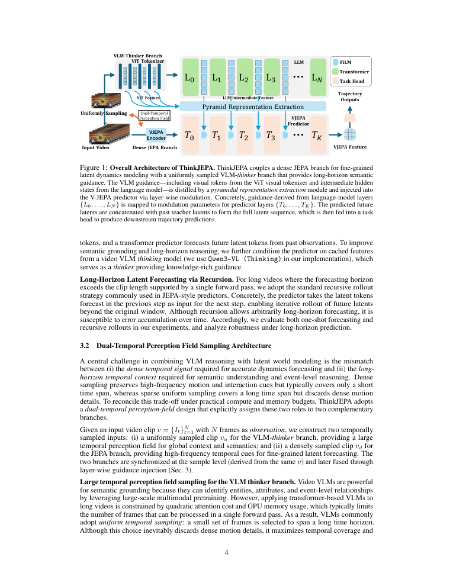
原论文 Fig.1 · PDF 第 4 页
图表说明：这是锁定版本原始 PDF 页级 PNG，保留原文标题、坐标、表头、脚注和视觉语境；具体对象和读图观察来自该论文的 figure-table ledger。
进一步分析：读者应把它与上方完整论文机制放在同一协议条件下理解；它支持论文中登记的现象，不自动支持跨数据集、跨模型或跨版本的因果结论。
证据边界：| Fig.1 | 4 | dense JEPA 与 uniform VLM thinker 双路径，pyramid 将 L0..LN 映射到 T0..TK FiLM。 | Fact |。资产类型为原始整页 PNG，未 OCR、重绘、裁色或作为当前任务 ImageGen 图计数；原始路径与哈希见 10_report/evidence-r19/original-paper-catalog.json。
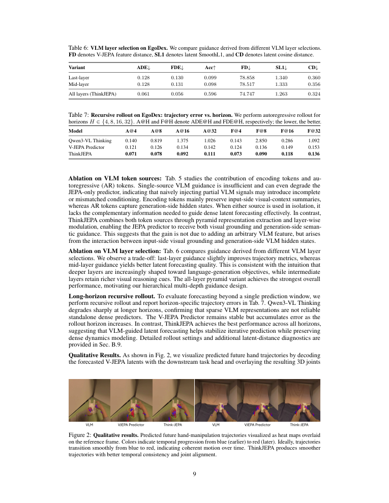
原论文 Fig.2 · PDF 第 9 页
图表说明：这是锁定版本原始 PDF 页级 PNG，保留原文标题、坐标、表头、脚注和视觉语境；具体对象和读图观察来自该论文的 figure-table ledger。
进一步分析：读者应把它与上方完整论文机制放在同一协议条件下理解；它支持论文中登记的现象，不自动支持跨数据集、跨模型或跨版本的因果结论。
证据边界：| Fig.2 | 9 | ThinkJEPA trajectory 热图 endpoint 与时间颜色更平滑，V-JEPA 有重叠塌缩，VLM hallucination。 | Qualitative Fact |。资产类型为原始整页 PNG，未 OCR、重绘、裁色或作为当前任务 ImageGen 图计数；原始路径与哈希见 10_report/evidence-r19/original-paper-catalog.json。
正则化、密集目标、语言与多模态
最后读 LeJEPA、V-JEPA 2.1、LLM/VL 等改变学习信号或消费者的分支。
代表论文精读：2603.14482
V-JEPA 2.1 深读：面向稠密视觉特征的视频 JEPA
版本：2603.14482v3，PDF 37 页。本文档依据已校验的 PDF、逐页文本/渲染页和 source archive/TeX；source-ready 由00_sources/2603.14482/v3/source-manifest.json、gzip/tar 校验、结构索引（0 个 unresolved references）共同支持。所有数字都标注为论文报告值、独立教学计算或评测协议中的观察，不能与本地代码运行结果混同。
1. 论文身份与问题定义
V-JEPA 2.1 的问题是让同一个视频自监督表示同时具备两类能力：一方面，patch 级特征要保留空间布局、物体边界和时间对应关系，服务深度、分割、跟踪和交互定位；另一方面，表示仍要理解动作、场景和全局语义，服务动作识别、视频问答以及机器人预测。论文把前一版 V-JEPA 2 的不足归结为一个具体的训练信号缺口：预测器虽然为可见 context token 和 masked token 都产生输出，但原始损失只监督 masked token。可见 token 因此有机会充当全局聚合器，缺少保留自身局部信息的动力（PDF pp.1–5，§1–2.2）。
论文的解决方案由四个相互配合的组件组成。第一是 Dense Predictive Loss，对 masked 和 visible 两类 token 都施加自监督，并让可见 token 的权重随其到最近 masked token 的时空距离变化。第二是 Deep Self-Supervision，在多个中间 encoder 层同时预测目标，避免最后一层单独承受把局部信息传到深层的压力。第三是 Multi-Modal Tokenizer，为图像使用 2D 卷积 patchifier、为视频使用 3D 卷积 patchifier，并加入 modality embedding，让统一 encoder 知道输入是静态图像还是视频。第四是 data/model scaling：用 VisionMix163M 扩大和重平衡图像视频数据，把模型扩展到 ViT-G 2B，并在 cooldown 阶段增加分辨率和帧数（PDF pp.2–9、33）。
摘要报告的代表性结果包括：Ego4D short-term object-interaction anticipation 为 7.71 mAP，EPIC-KITCHENS action anticipation 为 40.8 Recall@5，NYUv2 线性深度探针为 0.307 RMSE，TartanDrive 的 open-loop navigation ATE 为 5.687，Something-Something-v2 为 77.7，DAVIS-17/YouTube-VOS 为 69.0/72.7 J&F。机器人抓取相对 V-JEPA 2 AC 的提升写作 20 个百分点，但 Table 6 的同一配置是 60% 到 70%，加长 horizon 的 V-JEPA 2.1 配置是 80%；“20%”必须理解为论文表中抓取成功率的百分点差，且任务只评估 10 个 cup manipulation tasks（PDF pp.1–2、13–18）。
2. 从标准 V-JEPA 到 Dense Prediction Loss
标准 V-JEPA 将损坏视图 (x) 的可见 token 输入 (x)-encoder，加入带有时空位置的 learnable mask token，再由 predictor 预测 clean 视图 (y)-encoder 的目标表示。原始目标是 masked index 集合 (M) 上的 L1 距离，目标 encoder 使用 stop-gradient 并由 EMA 更新。问题在于 context token 不在 (M) 中，于是原损失没有直接约束它们的局部语义（PDF pp.3–4，Eq.(1)）。
V-JEPA 2.1 增加 context loss (L_{ctx})：对可见 token 集合 (C) 比较 predictor 输出与 y-encoder 目标，整体 dense loss 为 (L_{dense}=L_{predict}+L_{ctx})。可见 token 的权重不是简单常数，而是
其中 (d_{min}) 是 context token 与最近 masked token 的块级时空距离（PDF pp.5–8，Eq.(2)–(3)）。距离越近，权重越大，直觉是把 masked 区域的预测约束延伸到相邻可见区域，形成局部连续性；距离很远的 token 不被同等强度地拉向目标，从而减少“所有 context 都复制同一个全局语义”的风险。
Table 1 的 ViT-L 组件消融给出清晰但有条件的因果线索。V-JEPA 2 baseline 的 ADE20K mIoU/NYUv2 RMSE/SSv2/IN1K 为 22.2/0.682/72.8/82.2。加入 context loss 后变为 33.8/0.474/62.5/72.6：稠密任务明显改善，但全局分类下降，说明局部监督和全局汇聚之间确有冲突。Table 2 的固定 λ 试验显示 λ 越大，ADE20K 提升而 SSv2 下降；将 λ 从 epoch 50 到 100 warm-up，再使用距离加权，最后得到 33.8 mIoU/62.5 SSv2。这个消融证明的是在该模型和训练配方下的权衡，不是 context loss 必然提高任何全局任务。
Figure 3 的 PCA 可视化与数值一致：只用原 V-JEPA 2 时，feature map 碎片化且语义部件不稳定；加入 context loss 后，狗头、车轮等相似局部可以映射到相近 PCA 颜色。PCA 颜色是定性证据，不能当作像素级分割准确率；正式数值仍来自 Table 1/8 的冻结 encoder 线性探针（PDF pp.4–7）。
3. Deep Self-Supervision 与模型结构
Deep Self-Supervision 不只是把最后输出复制四遍。论文从 x-encoder 的三个中间 block 加上最终 block，先沿 channel 维拼接并经过轻量 MLP 降维，再把融合后的 context token 与 mask token 一起送入 multi-level predictor。predictor 对四个层级分别输出预测，prediction loss 与 context loss 在每个层级计算，y-encoder 同样产生对应的多层目标（PDF pp.5、7，Figure 4）。因此监督信号沿深度传播，最后层不能通过全局汇聚完全遮蔽中间层的局部结构。
Figure 5 从一个 ViT-L 起点逐步加入组件：context loss 提高 ADE20K 分割但损伤 SSv2；deep self-supervision 恢复全局识别并继续提高分割；VisionMix、multi-modal tokenizer、model scaling 和 cooldown 继续改善两类任务。Table 13 更直接地检验“是否还需要多尺度评估”：没有 deep self-supervision 的模型，ADE20K 从只用 last layer 的 34.9 提升到四层的 39.1，NYU 从 0.513 降到 0.463，Diving-48 从 85.8 到 86.9；有 deep self-supervision 时，last layer 已为 42.0/0.381/87.2，四层只小幅到 43.9/0.370/88.1。论文因此主张训练时的深层监督把信息传到最终层，但并没有声称所有下游都不需要中间层。
Figure 4 的架构图还揭示几个实现边界。图像和视频的 patch embedding 不同；3D RoPE 与 learnable modality embedding 都进入 encoder/predictor；x-encoder 只看 visible tokens，y-encoder 看完整 unmasked 输入；mask token 负责目标位置。context loss 与 prediction loss 都以 y-encoder 作为 stop-gradient 目标。图中 multi-level fusion 位于 x-encoder 输出到 predictor 之前，不能简化成仅在评估阶段拼接四层特征。
4. 数据、tokenizer、缩放与训练日程
VisionMix163M 用 LVD-142M 替换 V-JEPA 2 中约 1M 的 ImageNet 图像，同时重新设定视频采样权重。Table 3 对比 VideoMix22M 与 VisionMix163M：SSv2 权重从 0.056 增到 0.170，YT-1B 从 0.188 增到 0.720，HowTo100M 从 0.318 降到 0.100，Kinetics 从 0.188 降到 0.010，图像 ImageNet 权重被移除并由 LVD-142M 的大量静态图像承担。图像与视频不放在同一个 batch，而是用不同 worker 处理、在更新前聚合梯度；最佳全局 batch 是 128 个 16-frame video clips 与 2,304 张 images。这里的“扩大数据”同时包含来源替换、采样重平衡和分布式 batch 比例变化，不能只归因于样本数量。
Multi-Modal Tokenizer 解决图像被错误复制成 16-frame 静态视频的问题。视频使用 (16\times16\times2) 的 3D convolution，图像使用 (16\times16) 的 2D convolution；二者都带 modality token。消融中 multi-modal tokenizer 把 ADE20K 从 40.8 提到 41.4，动作/物体识别基本稳定。它既减少了图像重复 16 帧的计算，也让 encoder 学到静态外观和视频运动的路径差异（PDF pp.8–9）。
模型缩放从 ViT-L 300M 到 ViT-G 2B：Table 1 的 SSv2 72.6→76.1、IN1K 81.6→84.8、ADE20K 41.4→47.1、NYUv2 0.415→0.365。最终 cooldown 再把视频从 16×256×256 提到 64×384×384，把图像从 256 提到 512，并将 learning rate 降到 (10^{-6})；最终 ViT-G 为 SSv2 77.7、IN1K 85.5、ADE20K 47.9、NYUv2 0.307。Appendix A 的 Table 12 明确 primary phase 135,000 steps、cooldown 12,000 steps，video batch 128、image batch 2,304、EMA 0.99925、patch/tubelet 为 16/2。Cooldown 既改优化日程又改输入分辨率与时间长度，所以不能把最终提升视作单一分辨率变量的纯因果效果；Table 14 的独立 256/384 对比才提供更窄的证据（PDF pp.6、8–9、33、37）。
5. 预测任务：Ego4D STA 与 EPIC-KITCHENS
STA 任务要求模型从截至 (t) 的 egocentric 视频预测未来交互事件：物体框、noun、verb 和距离接触的时间 τ。Table 4 使用 Top-5 AP/mAP，并把 mAP All 作为综合分数；匹配需要 IoU>0.5、类别正确和时间误差在 0.25 秒内，最多折扣四个最高分 false positives 以容纳多模态未来。V-JEPA 2.1 ViT-G 的 AP All 为 8.20、mAP All 为 7.71，超过同协议 DINOv3 ViT-7B 的 5.68 mAP All 和 V-JEPA 2 ViT-g 的 6.02。7.71 是检测/语义/时间复合指标，不是“未来动作准确率 77.1%”（PDF pp.10–12）。
评测输入是 384 像素、8 帧、约 0.5 秒的视频与最后一帧 1080 像素图像。视频 token 经过四层 attentive probe 与 frame-guided temporal pooling，压成和最后图像空间对齐的二维特征，再送入沿用 StillFast/Faster R-CNN 风格的检测头。该 head 额外预测 verb 和 TTC，训练并非只训练一个线性层。冻结 V-JEPA encoder 的说法只描述 backbone，检测 head 和 attentive probe 仍在任务数据上训练。
EK100 action anticipation 使用 100 小时、45 个厨房环境、3,568 个动作标签。输入是动作开始前的 context，默认 anticipation gap 1 秒，报告 verb/noun/action 的 mean-class Recall@5。V-JEPA 2.1 ViT-G 的 action Recall@5 为 40.8，ViT-g 为 38.4，V-JEPA 2 ViT-g 为 39.7；ViT-G 相对旧 1B 模型提高 2.8 个百分点。评测使用 32 帧、8 fps、384 分辨率，由 predictor 产生未来表示，再由 attentive probe 输出三类标签。这里的预测器是表示空间未来预测，不等于可执行动作控制器（PDF pp.11–12、36）。
6. 机器人操作与导航：协议必须分开
机器人操作实验在桌面 Franka Panda、平行夹爪上零样本部署。作者沿用 V-JEPA 2 的公开代码和约 300M 参数的 24 层 frame-causal action-conditioned predictor，在 DROID raw dataset 上用 teacher forcing 与 two-step rollout 训练，再以视觉 goal 做 MPC。Table 6 每个 skill 评估 10 个任务：V-JEPA 2 与 V-JEPA 2.1 在 800 samples、10 iterations、horizon 1 下的 Reach 都是 100%，Grasp 是 60% 对 70%，Pick-&-Place 都是 80%；V-JEPA 2.1 额外用 300 samples、15 iterations、horizon 8、14 秒规划，Grasp 为 80%。因此“+20% grasp”来自比较 60% 和 80% 的两种配置，不能把 70% 与 60% 的同 horizon 差异也写成 20%，也不能从 10 个任务推导统计显著的普适机器人收益（PDF p.13，Figure 8）。
导航实验是 open-loop planning，不是闭环导航策略。给定当前 observation 和图像 goal，模型在 V-JEPA 2.1 表示上训练 Conditional Diffusion Transformer，输出两秒、4 fps 的轨迹；使用 Cross-Entropy Method 采样 480 条候选，在 latent world model 中选最接近 goal 的轨迹。为避免高维 embedding 中任意加噪离开数据流形，模型预测 clean representation 而非 noise，并用 DDIM；V-JEPA 2.1 只需 8 个 denoising steps，而 SD-VAE 基线至少 128。Table 7 的 V-JEPA 2.1 ViT-G TartanDrive ATE 5.687、RTE 1.187，平均 planning time 10.6 秒；NWM 是 103.2 秒。10× 是论文协议中的 planning time 比较，不是端到端感知—控制闭环延迟，也不是整个机器人的实时频率（PDF pp.14–15）。
7. 稠密视觉：深度、分割、视频目标分割
Table 8 用冻结 encoder 的 final-layer patch features 和线性探针评估 NYUv2/KITTI 深度、ADE20K/Cityscapes/VOC12 语义分割以及 DAVIS/YouTube-VOS 视频目标分割。NYUv2/KITTI 指标是 RMSE，越低越好；分割是 mIoU；VOS 是 J&F-Mean。V-JEPA 2.1 ViT-G 为 NYUv2 0.307、KITTI 2.461、ADE20K 47.9、Cityscapes 73.5、VOC12 85.0、DAVIS 69.0、YouTube-VOS 72.7。它在 NYUv2 上略优于 DINOv3 7B 的 0.309，但在 ADE20K/Cityscapes 仍低于 DINOv3 的 55.9/81.1；论文解释 VisionMix 的 cluttered scene 覆盖可能不足。不能把“state-of-art depth”扩展成所有稠密任务都第一。
深度和语义分割的评估只使用 image tokenizer，把单张图像作为 2D 输入；3D RoPE 频率按图像分辨率插值。分割图像在 ADE20K/VOC12 用 512 分辨率，Cityscapes 用默认高分辨率；探针是线性层，且不使用中间 encoder 层。Figure 10/11/12 的可视化可以显示交通灯轮廓、尺度一致性和细物体边界，但不能替代 Table 8 的像素级统计。
VOS 使用非参数 label propagation，以 cosine similarity 在第一帧和若干历史帧的 patch feature 之间匹配，不训练额外的 segmentation head。DAVIS 训练集搜索 context length、邻域大小、top-k 和 temperature 后固定用于验证集；Figure 13 展示快速运动与外观变化中的 mask 连续性。V-JEPA 2.1 的 DAVIS 69.0、YouTube-VOS 72.7 高于 V-JEPA 2，但仍略低于 DINOv3。此处“temporally consistent”是表示在 patch propagation 协议中的稳定性，不是一个独立的长期跟踪系统（PDF pp.15–18、34）。
8. 全局识别、视频问答与可视化
Table 9 把 global tasks 分成 motion understanding 与 appearance understanding。V-JEPA 2.1 ViT-G 在 SSv2 77.7、Diving-48 89.2、K400 87.7、IN1K 85.5；其中 SSv2 超过同协议 V-JEPA 2 的 77.3，也超过论文列出的 InternVideo2 full fine-tuning 77.5，说明 dense recipe 没有牺牲全局运动理解。K400/IN1K 更依赖外观，模型接近但不一定超过所有 image encoder。评测使用四层 attentive probe，视频多 clip、多空间视图，SSv2 是 16-frame clip × 2 temporal crops × 3 spatial crops；因此表中 accuracy 不是 zero-shot 分类，而是 frozen backbone 加任务 probe 的结果。
VideoQA 使用 V-JEPA 2.1 encoder 与 Llama 3.1 8B，基于过滤后的 PerceptionLM 子集。数据流程过滤约 18%，不改写样本；训练为三阶段 alignment 加第四阶段扩展上下文到 64 帧，并增加 PerceptionTest post-training。Table 10 中 V-JEPA 2.1 在 PerceptionTest、MVP、MVBench、TVBench 等任务相对同数据 V-JEPA 2 有改进，但 TemporalBench 和 TOMATO 下降；相对公开文献结果略低的原因包括 alignment 数据规模从 88.5M 变为 72.5M。不能把 V-JEPA 2.1 的视觉 encoder 指标直接当成 VLM 的视频问答能力。
Figure 1/14/15 的 PCA 图展示空间和时间结构：同一图像中猫毛、行人等细节更连贯，视频 64 帧中 Ego4D、Cityscapes、Diving48、MOCA 场景的颜色随物体运动保持一致。PCA 三通道还要在六种 RGB 排列中选最易读的一种，因此它是定性展示而非可复现的唯一颜色编码。Figure 14 是单图比较，Figure 15 是视频序列比较，二者不能当成额外 benchmark 数字（PDF pp.1、21–22）。
9. 蒸馏模型与训练细节
Table 11 将 ViT-G 2B 蒸馏到 ViT-L 300M 和 ViT-B 80M。ViT-L 从 scratch 的 SSv2/K400/IN1K/ADE20K/NYUv2/DAVIS 为 74.2/84.3/81.8/42.0/0.381/64.5；蒸馏后为 76.5/86.9/84.9/46.7/0.336/68.7。ViT-B 蒸馏后为 74.5/85.1/84.0/42.0/0.408/67.0。蒸馏接近教师，但并不复制 2B 的全部性能，例如 ViT-L 的 ADE20K 仍低于 47.9。蒸馏目标只在最后层计算，不使用 deep self-supervision；predictor 从 24 block 改成 12 block，EMA student 只作为最终发布模型而不进入 loss（PDF pp.20、23、34）。
Appendix A 的 Table 12 是复现所需的最小超参合同：primary phase 16 帧、256×256、135k steps、warmup 12k、video/global batch 128、image/global batch 2,304、weight decay 0.04、EMA 0.99925、spatial mask scale 0.15–0.7、temporal mask scale 1、tubelet 2、patch 16、predictor 24 blocks。cooldown 为 64 帧、384×384 视频、512 图像、12k steps、starting LR (6\times10^{-4}) 到 final (10^{-6})。图像 context loss λ 为 0.7，视频为 0.5。Appendix C 的探针训练、分辨率、multi-view 和超参搜索也必须一起记录，否则只复制表中结果会改变评测协议。
10. 贡献、证据边界与不能过度解读之处
论文最有力的因果链是：只监督 masked token 会使 context token 缺乏局部约束；加距离加权 context loss 改善局部 feature map；deep self-supervision 恢复因 context loss 牺牲的全局能力；多模态 tokenizer 消除图像伪视频路径；数据、模型和高分辨率 cooldown 共同把收益扩展到 ViT-G。每个箭头都由组件消融和下游协议支持，但组件并非完全正交：Table 1 的行是累加 recipe，Table 2 只研究 context weighting，Table 13/14 又在不同模型和分辨率上隔离因素。
必须保留的限制有四类。第一，绝大多数下游是 frozen encoder 加线性或 attentive probe，不能当成从零训练的完整系统指标。第二，Franka 与 TartanDrive 实验分别是 10-task MPC 和 open-loop 轨迹规划，不能直接等同长期闭环机器人成功。第三，VideoQA 使用额外 Llama 8B 与 alignment 数据，不能把视觉 encoder 单独归因于问答结果。第四，source archive 不在位，本读本没有代码运行、TeX 行号、checkpoint 哈希或数据下载证明。
论文未来工作也限定了当前结论：作者希望继续扩大模型和数据规模，并把 V-JEPA 2.1 的 dense representation 接到更完整的 world model；当前工作重点仍是表示学习，而不是一个端到端通用机器人控制器。因而“解锁 dense features”是表示层结论，不能改写为已经解决世界建模、导航或精细操作的全部问题（PDF pp.24、37）。
11. 复现合同与来源覆盖
若 source archive 后续恢复，最小复现合同应固定：V-JEPA 2 baseline、context loss 的 mask/context 集合与 λ 权重、距离定义和 warm-up；四个 intermediate encoder blocks 与 multi-level predictor；2D/3D tokenizer、3D RoPE、modality embedding；VisionMix163M 的来源权重、image/video 分离 worker 和 batch；ViT-G 参数量、primary/cooldown steps、分辨率、frame rate、EMA；每个任务的 tokenizer、probe/head、训练集、采样视图、指标和 checkpoint；DROID/Franka 的 predictor 与 MPC 配置；蒸馏时 frozen teacher、EMA student、12-block predictor；所有 Table 1–14 的基线和版本。
本 PDF-only 读本覆盖主文 Figure 1–15、Table 1–11、附录 Table 12–14 以及 Appendix A–D 的评测协议。没有将参考文献页误计入方法证据，没有将 Figure 1/3/14/15 PCA 当作定量结果，也没有把 V-JEPA 2.1 的 source 缺失状态改写为 source-ready。
12. 证据审计：表示、探针与系统的边界
V-JEPA 2.1 的结果必须按“表示质量”和“下游头部能力”拆开阅读。NYUv2、ADE20K、Cityscapes、VOC12 的线性探针是在冻结的 final-layer patch feature 上训练一个线性层；DAVIS 和 YouTube-VOS 则用非参数 cosine label propagation；STA 使用 attentive probe、frame-guided pooling、Faster R-CNN 风格检测头；EK100 使用预测未来表示的 attentive probe；SSv2/K400/IN1K 也训练 attentive classifier。因而同一个 0.307、47.9 或 77.7 并不是“encoder 直接零样本输出”，而是在明确的 probe、分辨率、采样视图和训练数据下测得。报告时若省略 probe，就会把 representation benchmark 误写成完整应用系统 benchmark。
表格之间还存在必须保留的协议差异。Table 1 是一个 ViT-L 的累计组件消融，Table 8 是最终 ViT-G 的多任务比较，Table 14 只隔离 cooldown 空间分辨率，Table 13 比较是否有 deep self-supervision 时的单层/四层评估。不能用 Table 8 的最终 0.307 反推 context loss 单独贡献，也不能把 Table 13 的 4-Layers 增益归因于预训练本身。最稳妥的因果陈述是：context supervision、深层监督、数据/模型缩放和 cooldown 在作者提供的逐步 recipe 中共同形成提升，单个组件的独立大小只在对应消融表中有证据。
13. 预测与机器人结果的量纲检查
STA 的 7.71 mAP All 同时要求 box IoU、noun、verb 和 TTC 误差，属于严格的复合检索指标；它不是 7.71% 的单一分类准确率。EK100 的 40.8 是 mean-class Recall@5，未来动作可能有多个合理候选，不能同 top-1 accuracy 相比。Franka 的 80% grasp 是 10 个任务中 8 个成功，且长 horizon 行改变了 CEM 样本数、迭代数、horizon 与耗时；同配置的 V-JEPA 2.1 只有 70%。TartanDrive 的 5.687 是 ATE，10.6 秒是规划耗时，二者一个是轨迹误差、一个是计算时间，不能组合成统一的“控制性能分数”。
VideoQA 更需要单独标记训练边界。表中模型包含 V-JEPA 2.1 encoder、Llama 3.1 8B、过滤后的 PerceptionLM 子集、三阶段 caption/QA 对齐和第四阶段 64 帧上下文扩展；相同数据下 V-JEPA 2.1 在若干任务略好，在 TemporalBench/TOMATO 反而较差。因而 VideoQA 结果不能用来证明纯视觉 dense loss 在所有时序推理上单调增益，也不能与 Table 9 的 frozen attentive probe 数字直接横向比较。
14. source 缺口与复核顺序
历史 PDF-only 阶段没有可用的 TeX/source archive；该阶段记录已在snapshot保留。当前源包和TeX行号已恢复并完成第15节的对照，但仍没有实现函数对应、数据下载哈希、训练 checkpoint 或代码运行日志。PDF 中出现的公式和超参可以作为复现合同，但还不能证明仓库实现逐字采用了它们。代码复核顺序应是：先核对 2D/3D tokenizer 和 3D RoPE 的输入 shape，再核对 mask 集合、context weighting 和四层 predictor 的 loss 聚合；随后核对 VisionMix 采样权重、image/video worker 的 batch 组合、EMA 与 cooldown schedule；最后核对每个下游 head、视图采样、训练 split、metric 聚合及机器人/导航的 MPC 或 CEM 配置。
当前最可靠的结论是“论文提出并以同版 PDF/TeX 证据展示了一套改善稠密视觉特征的训练配方”；代码对应仍未完成，不能宣称“当前代码已经可复现所有表格”。这一区分对后续代码联合阅读尤其重要：开源仓库可能只提供 V-JEPA 2 的基础模型、训练脚本或下游示例，未必包含论文 v3 的全部 VisionMix、cooldown、蒸馏和 VideoQA 资产。缺失部分必须记录为未核实，不能用 README、论文摘要或旧版本代码补齐。
15. Source-ready TeX/PDF 对照补充
R2 source recovery 已完成，正式源包为 00_sources/2603.14482/v3/source.tar.gz，SHA-256 为 89ee6b2b14475f45eaafa3940b46f08ccebf8592276e34a208ed60f7e52bd7b1，37 页 PDF 与 3 个 TeX 文件均已通过 gzip、tar、PDF 解码和逐页提取校验。主 TeX 为 tex_source/paper.tex；方法主体在 tex_source/sections/methods.tex，其中 eq: l1_main_loss（约第 29–32 行）、eq:l1_ctx_loss（约第 121–124 行）分别对应 masked prediction 与 distance-weighted context loss，fig:architecture（约第 136–144 行）明确写出 2D/3D patch embedding、3D RoPE、modality embedding、多层 x/y encoder 与 mask-token predictor。主文/附录的训练、评估、蒸馏与消融表均保留在同一 source tree，结构索引无 unresolved references。
本节把原 PDF-only 读本的证据边界升级为 source-ready：正文公式以 TeX 为准，图像形状、PCA 颜色和表格布局以同版 PDF 渲染页为准。Figure 1–15 与 Table 1–14 已在 pdf-only-figure-table-ledger.md 中逐项登记页码、观察和限制；新增源包补充 TeX 行与 caption 位置，不改变原有数值或边界判断。仍未做的是官方 V-JEPA 2.1 训练代码的版本对应与运行验证，本任务不执行目标仓库代码。
15.1 TeX/PDF source crosswalk receipt
- Source manifest:
00_sources/2603.14482/v3/source-manifest.json; archive SHA-25689ee6b2b14475f45eaafa3940b46f08ccebf8592276e34a208ed60f7e52bd7b1; PDF SHA-256b40580916242ade00e2ac177cb01473d511f021d5a25f7552fd17512b3a72bbb. - TeX inputs:
tex_source/paper.tex(543 lines),sections/methods.tex(325 lines),sections/results.tex(1002 lines);structure-index.jsonreports 0 unresolved references and 173 figure assets. - Method anchors:
methods.tex:1(Methodology),methods.tex:108–110(context-loss visualization),methods.tex:139–143(architecture),methods.tex:184–207(component ablation and Table 1),methods.tex:211–227(weighting ablation),methods.tex:282–298(VisionMix/Table 3). - Results anchors:
results.tex:17–79(STA/Table 4),results.tex:135–172(EK100/Table 5),results.tex:170–234(robot and navigation/Table 6–7),results.tex:287–344(dense tasks/Table 8),results.tex:572–665(global tasks/VideoQA/Table 9–10),results.tex:965–978(distillation/Table 11),paper.tex:357–392(Table 12),paper.tex:483–540(Tables 13–14). - Formal coverage claim is limited to the 37-page PDF and its 15-figure/14-table ledger; no target-code execution is claimed.
15.2 同版来源内部不一致
以下差异保留为来源内部未决项，不静默合并：方法叙述报告33.9/.473而Table1为33.8/.474；最终G384的YouTube-VOS在Table8为72.7、Table14为72.6；STA主文输入为8帧/0.5秒，附录最佳配置为16帧/2fps；SSv2附录写64×2×3但括号说明16帧，Table9也写16×2×3。这些数字/采样协议应在后续代码对应时逐项查明，不能借四舍五入推测消除。
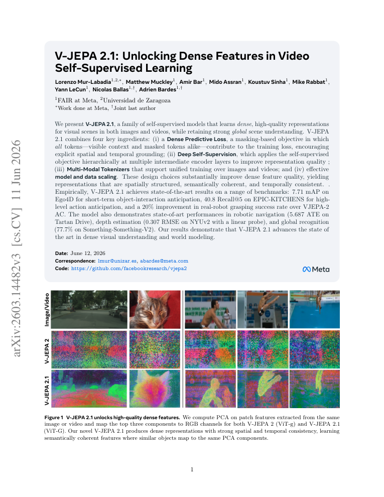
原论文 Figure 1 · PDF 第 1 页
图表说明：这是锁定版本原始 PDF 页级 PNG，保留原文标题、坐标、表头、脚注和视觉语境；具体对象和读图观察来自该论文的 figure-table ledger。
进一步分析：读者应把它与上方完整论文机制放在同一协议条件下理解；它支持论文中登记的现象，不自动支持跨数据集、跨模型或跨版本的因果结论。
证据边界：| Figure 1 | 1 | Image/video 原图、V-JEPA 2 与 V-JEPA 2.1 PCA RGB feature map | V-JEPA 2.1 的 patch 特征在同一图像/视频中更空间连贯、时间稳定 | PCA 分量排列可选最易读 permutation；定性图不是分割准确率 |。资产类型为原始整页 PNG，未 OCR、重绘、裁色或作为当前任务 ImageGen 图计数；原始路径与哈希见 10_report/evidence-r19/original-paper-catalog.json。
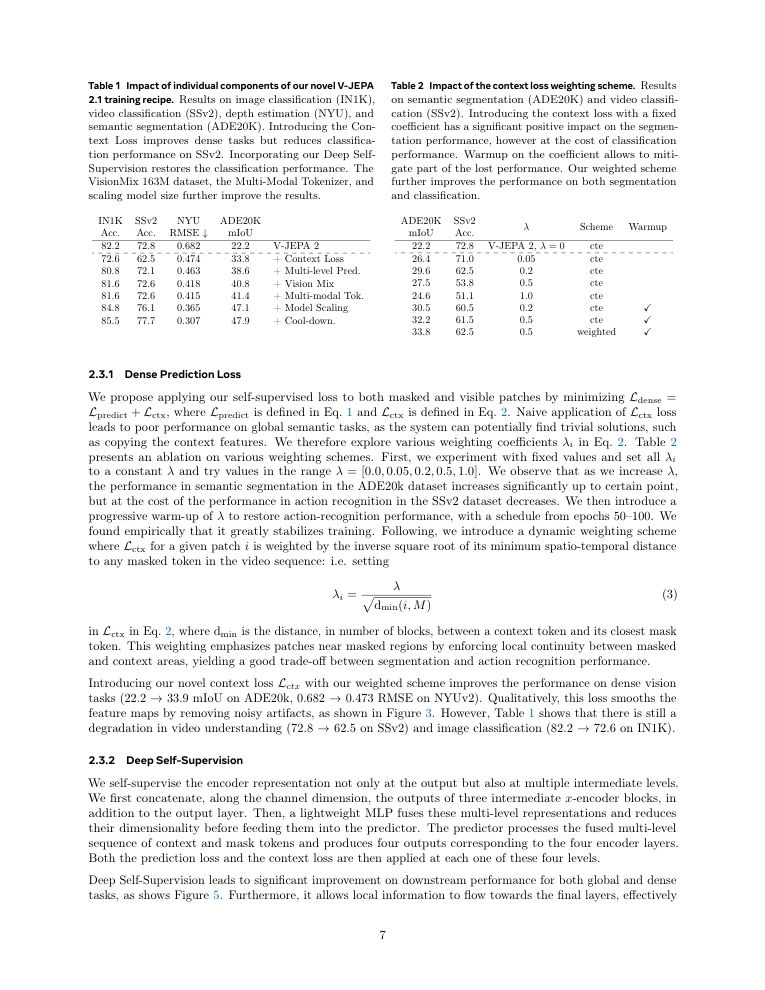
原论文 Table 1 · PDF 第 7 页
图表说明：这是锁定版本原始 PDF 页级 PNG，保留原文标题、坐标、表头、脚注和视觉语境；具体对象和读图观察来自该论文的 figure-table ledger。
进一步分析：读者应把它与上方完整论文机制放在同一协议条件下理解；它支持论文中登记的现象，不自动支持跨数据集、跨模型或跨版本的因果结论。
证据边界：| Table 1 | 7 | ViT-L 组件消融：baseline 22.2 ADE/0.682 NYU/72.8 SSv2/82.2 IN1K；最终累加到 47.9/0.307/77.7/85.5 | 行是逐步加入 recipe，不能当单变量全因果表 |。资产类型为原始整页 PNG，未 OCR、重绘、裁色或作为当前任务 ImageGen 图计数；原始路径与哈希见 10_report/evidence-r19/original-paper-catalog.json。
代表论文精读：2608.27395
LeVJEPA：高效、可扩展的视频预训练（2608.27395v1）完整精读
1. 身份与问题
本单元锁定 2608.27395v1，题目为 LeVJEPA: Efficient & Scalable Video Pretraining without the Heuristics，作者 Lukas Kuhn、Lucas Maes、Giuseppe Serra、Quentin Le Lidec、Yann LeCun、Randall Balestriero、Florian Buettner 等。源包包含 12 页 PDF、逐页文本/渲染、完整 TeX 与所有图表资产；本单元只做论文与源包精读，不运行代码、不训练。
文章面对的是一个很具体的成本和稳定性问题。已有视频 JEPA 通常包含 EMA target encoder、stop-gradient、predictor 和结构化 mask；这些机制帮助防坍塌，却使每步计算和优化路径变长。另一条路线在像素空间重建 mask 内容，需要 decoder。LeVJEPA 直接把 LeJEPA 的 SIGReg 分布正则搬到视频：同一个 encoder 同时处理 global/local views，只对 [CLS] embedding 施加 invariance 和 SIGReg。论文的贡献不是证明“视频一定优于图像”，而是在固定数据和计算协议下展示：随机 token dropping 可以同时成为增强和省算力手段，block-causal attention 可以在预训练阶段编码时间因果，而且训练网络缩减为 encoder 加 projector。
2. 三遍阅读
第一遍：主线
摘要、Figure 1 和引言（pp.1-2）给出三条主张：在同数据/同 epoch 下，ViT-S/B/L 的 LeVJEPA 以 5.6 到 20.8 倍更低的总预训练计算达到接近或超过 V-JEPA 2 的结果；在 matched FLOPs 下，ImageNet-1K 比最强视频基线高 7.6 个点；block-causal attention 和无目标分支的结构仍能保留外观与运动能力。方法（pp.3-4）先定义 global view x0 与 V 个 local views xv，再以 MSE invariance 和 SIGReg 组成总损失。Section 4（pp.5-6）逐个改变 dropping ratio、local view 数、temporal patch aggregation 和 attention topology；Section 5（pp.6-8）做视频基线、DINOv2 图像基线、数据扩展与 token-level visualization；Section 6 讨论因果表示和未来问题；附录 A-C 给出 SIGReg quadrature、架构和评估协议。
第二遍：机制
2.1 视图和损失
输入是 16 帧视频 clip。一个 global view 保持较大空间范围且不做 photometric augmentation；V 个 local views 在同一时间窗口上做空间裁剪和光度增强。每个 view 经同一 encoder E_theta，取 [CLS]，再经 projector h_phi 得到 z_v in R^K。论文 Eq. (2) 为
L_inv = 1/(V+1) * sum_{v=0}^V ||z_0-z_v||_2^2。
这里的 z0 与 zv 都由同一训练中的 encoder 产生，梯度通过两侧传播，没有 stop-gradient，也没有 target network。仅优化 Eq. (2) 会得到常数表示，所以必须加 SIGReg。总损失 Eq. (1) 是 L = L_inv + lambda L_SIGReg，lambda=0.02 固定，不为每个实验调参。这个“单超参数”是论文对训练复杂度的关键主张，但不意味着优化完全无配置：学习率、batch、view 数和 token dropping 仍然是实验条件。
2.2 SIGReg 的统计约束
SIGReg 目标是让 embedding 分布接近 N(0,I_K)。根据 Cramer-Wold，K 维分布等于各方向一维投影分布的联合约束，因此随机采样 M 个单位方向 a_m，对每个 batch 的投影 {<z_i,a_m>} 做 Epps-Pulley goodness-of-fit。Eq. (3) 的积分项是经验特征函数与标准高斯特征函数 exp(-t^2/2) 的加权平方差，实际用 t in [0,3] 的 17 个 knots 做 trapezoidal quadrature、每步 M=1024 个方向。作者强调经验特征函数及其梯度有界，所以没有 whitening/centering 的额外操作，也较少受异常值影响。分布式训练时先在所有 worker 上 all-reduce 特征函数，通信张量大小为 2 x M x 17，与 batch size 和 embedding dimension 无关。
SIGReg 的理论作用是排除完全 collapse：常数 embedding 在至少一个方向方差为零，与各向同性高斯距离很大。它并不保证语义充分性，也不保证每个 patch token 都有监督；LeVJEPA 的 patch token 没有直接 loss，只有 [CLS] 接受 Eq. (1)。因此 Figure 3/5 的 dense semantic token structure 是涌现现象，不是训练目标的直接结果。
2.3 Transformer、稀疏 token 和因果性
encoder 是 video ViT，卷积 patch embedding 的空间尺寸为 16x16，默认 temporal extent tau=1，所以 224x224 global view、16 帧时有 3,136 个 patch tokens；96x96 local view 有 576 个。预训练后随机丢弃比例 rho=0.95 的 patch tokens，保留的 token 才进入 transformer；[CLS] 永不丢弃。这个 dropping 不是 masked reconstruction 的“未知目标”：模型不补回丢失 token，剩余 token 就是 clip 的稀疏观测。
attention 是 block-causal：同一帧内 patch tokens 双向注意，跨帧只能看当前和过去；[CLS] 看全部 token，但不被 token 反向注意。这样每一帧表示只依赖当前及过去帧，新的 frame 可以增量接入，不必重新编码未来信息。位置编码是 factorized 3D RoPE，按 temporal/vertical/horizontal 三个坐标分组旋转，不用绝对位置 embedding，也便于 global/local 两个空间分辨率共用 encoder。Polyak 平均权重只保留为 evaluation checkpoint，decay=0.9999、每 32 个 optimizer steps 更新，不参加训练 forward，也不是防坍塌用的 EMA target encoder；这个区别必须保留。
2.4 数据和评估
默认训练集是去除验证重叠后的 K710（Kinetics-400/600/700）class-balanced 20% 子集；另有 ViT-L 扩展到 K710、Something-Something-v2、Walking Tours 和 PE Video Dataset。冻结 encoder 后做 attentive probing：一个 learnable query 用 cross-attention 聚合输出 tokens，probe/classifier 训练而 encoder 冻结。Kinetics-400 使用 mean-pooled tokens 的 linear probe，因为大数据下 attentive probe 成本过高；这使 K400 数值相对保守。评估覆盖 ImageNet-1K 的外观、Something-Something-v2 的运动和 Kinetics-400 的动作识别，不能把三者混成一个总分。
第三遍：消融、数字和附录
3.1 Token dropping
Figure 4a 的 ImageNet attentive probe 从处理全部 token 时的 33.9% 上升到 rho=0.95 的 47.6%；rho=0.90 与 0.95 几乎相同（47.4%/47.6%），说明更稀疏既省 FLOPs 也可作为随机增强。但 Something-Something-v2 在短训练中超过 rho=0.3 会下降，长训练可以恢复；运动对应关系更容易被稀疏观测打断，因此“最省”不代表每个运动任务都最优。结构化 tube dropping 在 ImageNet 从 50.7% 降到 39.6%，SSv2 也从 28.8% 降到 26.4%。作者的解释是：本方法没有 imputation，tube 永久遮住场景区域，而均匀随机 token 在时空上分散，仍可识别整体 clip；不能把这个结果推广为所有 masked video modeling。
3.2 Local views、temporal aggregation、causal attention
Figure 4b 显示 local view 数从 V=4 增到 10 时 ImageNet 47.6% 到 50.2%，V=12 略回到 49.8%；每个额外 view 约增加 29 个 processed tokens。Table 1 在等 token budget 下比较 tau=2,rho=0.90 和 tau=1,rho=0.95：IN1K 47.4 vs 50.7，SSv2 28.8 vs 30.4，per-frame patching 更好。Table 2 比较 attention：bidirectional 50.7，block-causal 51.2，作者据此采用因果结构；差值很小，正确解读是“在该协议下无可测惩罚”，不是因果注意力普遍提升 0.5 个点。
3.3 基线与计算
epoch-matched Figure 2/表格比较相同 20% K710、240 epochs、effective batch 3,072 的视频基线。ViT-B 的 LeVJEPA 约 4.8 ExaFLOPs，V-JEPA 2 约 36.4；ViT-L 仍在更低计算下超过 V-JEPA 2 约 1.9 个点。FLOP-matched Table 3 中，LeVJEPA IN1K 61.0、SSv2 40.4、K400 44.6；VideoMAEv2 为 53.4/43.6/37.4，V-JEPA 2 为 51.6/42.5/40.7。这里不同指标由不同 probe 协议报告，不能只按三列求平均。Table 4 在同数据同 FLOPs 与 DINOv2 比较：DINOv2 IN1K 53.8、SSv2 16.9，LeVJEPA 50.7/30.4；它牺牲约 3.1 个 ImageNet 点却接近两倍 motion accuracy。作者还在 RTX 5080 16GB 上用 ViT-Tiny 训练 12 小时、约 620k frames，ImageNet 从初始化 8.9% 到 25.2%，这是可访问性示例，不是大规模能力证明。
3.4 Emergent token structure
Figure 3 用 patch-token PCA 的前三个主成分映射成 RGB：LeVJEPA 在没有 patch-level loss 的情况下，把动物与家具/背景分开；V-JEPA 2 没有同样的 token-level organization，V-JEPA 2.1 则有显式辅助 patch loss。Figure 5 在另一场景复核 PCA，并展示 query patch 与全图 token 的 cosine similarity 只集中在物体区域。它们说明表示可读性和空间组织，但没有证明 token 具有因果对象分解，也没有替代下游定量评估。
3.5 附录审计
Appendix A 把 SIGReg 的 knots、方向数、all-reduce 和 quadrature 写清楚；Appendix B 写了 ViT-B/16、RoPE 分轴、projector 的 d -> 2048 -> K=256、BN/GELU、Polyak checkpoint；Appendix C 说明 attentive probe、K400 mean-pool linear probe。正文与附录共同支持“无 target/predictor”的训练路径。源包的章节、公式、图和表均已索引；自动索引中的宏路径需以 TeX 读本解释，不能把机器解析 warning 当作内容缺失。
3. 教学例子与边界
假设 16 帧 global view、每帧 14x14 patch、共 3,136 tokens，rho=0.95 后只保留约 157 个 patch，再加 [CLS]；这只是按 3,136x0.05 的数量级演示，不代表每个 batch 恰好保留同数，因为随机丢弃会波动。若 V=4，一次样本共有一个 global 和四个 local embedding，Eq. (2) 有四个 local-to-global 距离项；增加 local view 是增加 invariance constraints，不是复制 target encoder。
SIGReg 的统计例子：若一个方向的投影 batch 为 [-1,0,1]，其经验特征函数是 (e^{-it}+1+e^{it})/3=(1+2cos t)/3；它与 e^{-t^2/2} 的加权差经 17 个 t knot 积分，得到该方向的近似惩罚，再对 1,024 个方向平均。这个计算说明 SIGReg 检查的是整个投影分布，而不是只检查均值/方差；实际数值仍由论文 Appendix A 的 quadrature 和 global batch 语义决定。
4. 批判与可迁移性
LeVJEPA 的强证据是消融协议清楚地把 token 数、temporal aggregation、attention topology 分开，并在 epoch/FLOP matched 设定下比较。它的边界也很清楚：ImageNet 与 SSv2 对 dropping ratio 的响应相反；20% K710 仍远小于互联网规模；因果 attention 的“无惩罚”只在冻结 probe 和给定模型规模上验证；patch token 的语义组织来自可视化，缺少跨场景定量分割指标。SIGReg 的理论排坍塌并不等于得到世界状态，也不等于动作可控。
对 V-JEPA 2 的迁移，LeVJEPA 提供两条对照：一是把 V-JEPA 2 的 target/predictor/EMA 复杂性与显式分布正则对照，二是把 block-causal temporal structure 前置到 encoder 而不是后接 action predictor。若用于机器人，必须重新检查动作条件和 goal planning，因为 LeVJEPA 本身没有 action token、latent rollout 或控制实验。对视频流式推理，因果 attention 可以避免未来泄漏，但随机 token dropping 可能损害短时运动，不能直接把 rho=0.95 作为所有实时系统的默认。
5. 结论与未决问题
论文可靠地说明：在固定模型、数据和 probe 协议下，L_inv + 0.02 L_SIGReg 的单 encoder 视频预训练能以更低计算达到竞争性结果；随机 token dropping 同时改变计算和正则化；block-causal attention 在当前评估下没有明显 accuracy penalty。不能推出 LeVJEPA 已替代 V-JEPA 2 的所有理解/规划能力、SIGReg 在任意视频域都避免所有退化，或 token PCA 已证明对象级因果因素。未决问题包括高 dropping 下运动对应关系的理论、互联网规模数据、动作条件、长时 rollout、冻结 probe 与实际在线控制之间的差距。
本单元未运行目标代码，所有数字均绑定 00_sources/2608.27395/v1 的 PDF/TeX/附录；训练成本、模型 checkpoint 和实现行为没有被本地复现。
6. 从源文到实现的逐项核验
6.1 一个训练样本到底经过哪些张量
源文把一个样本定义成 16 帧 clip，而不是把 16 张互不相关的图片简单拼接。对默认的 224 x 224 global view，空间 patch 大小是 16 x 16，每帧有 14 x 14=196 个 patch，16 帧共有 3,136 个 patch token；96 x 96 local view 每帧有 6 x 6=36 个 patch，16 帧共有 576 个。每个 view 先通过同一卷积 patch embedding，再附加一个永不丢弃的 [CLS]。当 rho=0.95 时，正文只保证保留比例的设计目标约为百分之五；论文没有把随机 dropping 的具体实现写成“每个 token 独立 Bernoulli”，也没有给出每个样本保留数的分布，所以不能把“每个样本恰好保留 157 个”或“保留数必然按二项分布波动”当作原文事实。更严格的表述是：模型在稀疏的、由统一规则抽取的 patch 子序列上计算，实际计数应以实现的 sampler 为准。
E_theta 输出仍包含 retained patch tokens 和 [CLS]，但训练目标只读取 [CLS]。假定 encoder 输出宽度为 d，则 projector 的输入是一个 d 维向量，先映射到 2,048 维，经 BatchNorm 和 GELU，再映射到 K=256 维的 z_v； projector 只服务于 SIGReg 和 invariance loss，训练结束后被丢弃。这个细节解释了为什么不能直接对最后一层的球面化 [CLS] 做 SIGReg：LayerNorm 会压缩其范数自由度，论文认为 projector 是让高斯分布约束在合适空间生效的必要隔离层。
6.2 损失的梯度方向和分布式语义
对于一条 global view 和 V 条 local views，L_inv 是 V 个 z_0-z_v 平方距离的平均，而不是所有 view 两两配对的平均。因而增大 V 的含义是增加 global-to-local 的不变性约束，同时增加 projector 前的 encoder 计算；它不会创建新的 target 分支。z_0 和 z_v 都由当前参数产生，梯度通过两侧回传。只有当 SIGReg 同时把 batch 分布推向各向同性高斯时，常数表示才会被排除；SIGReg 的作用是分布约束，不是提供一个语义标签或 patch 级目标。
Appendix A 的实现边界也很具体。每一步从单位球面采样 M=1,024 个方向，每个方向在 17 个 t knots 上计算经验特征函数，再用 [0,3] 区间上的梯形积分近似 Epps--Pulley 统计量；每个 view 分别计算，再汇总到总损失。分布式训练不是对每张卡先独立求完整损失再平均，而是先对特征函数做一次 all-reduce，使统计量看到全局 batch。通信量是 2 x 1,024 x 17 的张量，和 embedding 维度、设备本地 batch 大小无关。这里的“线性成本”主要指方向数和投影统计的扩展方式，不应理解成完整 transformer 前向的成本对 batch 或 token 数不敏感。
6.3 因果注意力的实际含义
block-causal mask 有三层语义。第一，同一帧内的空间 patch 可以双向交换信息，所以一帧的局部结构不被人为的 raster 顺序限制；第二，当前帧不能读取未来帧，但可以读取当前及过去帧；第三 [CLS] 可以读取所有 retained tokens，却不让 patch token 反向读取 [CLS]。因此“当前帧表示只依赖过去”是对 patch token 和 frame-level readout 的结构性描述，不是说 global [CLS] 在离线评估时只看到前缀。流式使用还需要明确缓存哪些键值、如何处理随机 dropping 和新帧的坐标；论文证明了不必重编码过去帧的拓扑条件，却没有给出一个完整的在线缓存实现或长序列延迟曲线。
三维 RoPE 将每个 attention head 的通道分成 temporal、vertical、horizontal 三组，使用相对坐标旋转而不是绝对位置表。这让 224 和 96 两种空间分辨率可以共享 encoder，不需要为 local view 插值绝对位置 embedding。它并不自动解决不同 clip 长度、变帧率或跨摄像机坐标的问题；这些场景仍需检查时间坐标的定义和训练分布。
7. 评测数字的可比性审计
Figure 4 的图注把结果称为 ImageNet “linear probing”，正文和方法部分则把默认实验描述为 frozen attentive probe；源文这一术语不一致应登记，而不能在综合报告中把所有 ImageNet 数字都统一改写成 linear。附录 C 明确给出 attentive probe 的结构：一个可学习 query 对冻结 encoder 的所有输出 token 做 cross-attention，残差连接后经过两层 MLP、GELU 和 LayerNorm，再由线性分类器输出。Kinetics-400 为了控制大训练集成本，改用 mean-pooled tokens 加线性分类器。因此 Table 3 的 IN1K/SSv2 与 K400 并非同一种适配器，三列不应求平均后当作一个总分。
epoch-matched 与 FLOP-matched 也回答不同问题。前者固定 240 epochs、相同的 K710 20% 子集和 effective batch 3,072，让总计算量自然不同；后者固定总 FLOPs，LeVJEPA 因每个样本更便宜而训练到 1,085 epochs，并使用 V=10 local views。ViT-B 的 4.8 对 36.4 ExaFLOPs 和 61.0 对 51.6 的 ImageNet 数字必须与各自 protocol 绑定，不能推出“同一训练时长下所有模型都达到相同质量”。同理，RTX 5080 的 12 小时结果来自 ViT-Tiny、8 个 Walking Tours 视频和约 620k 帧，是可访问性实验，不是大规模预训练能力的下界或上界。
Table 1 的 tau=2,rho=0.90 与 tau=1,rho=0.95 在 equal-token budget 下比较输入时间聚合；后者在 IN1K 和 SSv2 都更高，支持 per-frame patching 在当前设置下更合适。Table 2 的 bidirectional 50.7 与 block-causal 51.2 差距很小，正确结论是当前 frozen probe 看不到明显惩罚；它不能证明因果 mask 对所有任务都有正收益。高 dropping 的运动损失在短 schedule 中变差、长 schedule 恢复，说明 token 稀疏既是正则化也是观测缺失，不能用单一 ImageNet 曲线代表时间理解。
8. 反事实检查和与 V-JEPA 2 的边界
若去掉 SIGReg，只留下 global/local MSE，所有 view 都输出同一个向量即可达到零 invariance loss；若保留 SIGReg 但把所有 patch token 丢掉，只留下 [CLS]，则输入信息路径被破坏，分布约束不可能凭空恢复视频内容。若把 uniform dropping 换成 tube dropping，论文观察到 ImageNet 和 SSv2 都下降，这说明“无需重建”改变了 mask 的作用：tube mask 不是更强的预测任务，而是永久移除整个空间轨迹，可能让运动和对象都不可见。若改回 V-JEPA 2 的 EMA target、stop-gradient 和 predictor，得到的是另一个目标与计算图，不能把 LeVJEPA 的单 encoder 结论继续归因于原方法。
和 V-JEPA 2 的关系必须分层写。LeVJEPA 借鉴的是视频 ViT、时空 token 和 frozen probing 的比较框架；它没有复用 V-JEPA 2 的 latent action-conditioned predictor、CEM planning 或机器人数据，也没有证明自身可以直接替代 V-JEPA 2-AC。LeVJEPA 的 block-causal encoder 能提供不泄露未来的 frame representation，但行动条件动力学仍需要额外的 action 输入、rollout 目标和控制评测。反过来，V-JEPA 2 的 predictor/target asymmetry 为大规模视频表征和 planning 提供了不同的稳定路径；不能用 LeVJEPA 在小规模受控数据上的 FLOP 优势推断其在互联网规模或机器人闭环上的优势。
9. 单元验收边界
本单元已经覆盖同版 PDF 12 页、Appendix A-C、Figure 1-5、Table 1-4、公式和完整 TeX；图表台账保存了每个数字的 protocol 和不可外推边界。教学计算只解释 token 数、视图损失、SIGReg 统计和 probe 差异，没有把静态算术包装成指标复现。仍未完成的是目标源码调用链的独立映射、作者训练 checkpoint 的重新运行、长时流式缓存测量和本任务正式 ImageGen 图的视觉验收；这些缺口由源码验证、图稿和最终 HTML 阶段单独关闭，不能用本单元的论文阅读代替。
阅读者还应把“效率”拆成三个不同量：单个样本的保留 token 数、一次优化步骤的视图数量，以及整个训练日程的步数。LeVJEPA 主要削减第一项，并在等 FLOPs 实验中增加第三项；它没有声称每一步、每个下游 probe 或每个长序列推理都同比加速。只有把模型规模、保留比例、local view 数、epoch、全局 batch 和评测适配器一起记录，跨表比较才有意义。
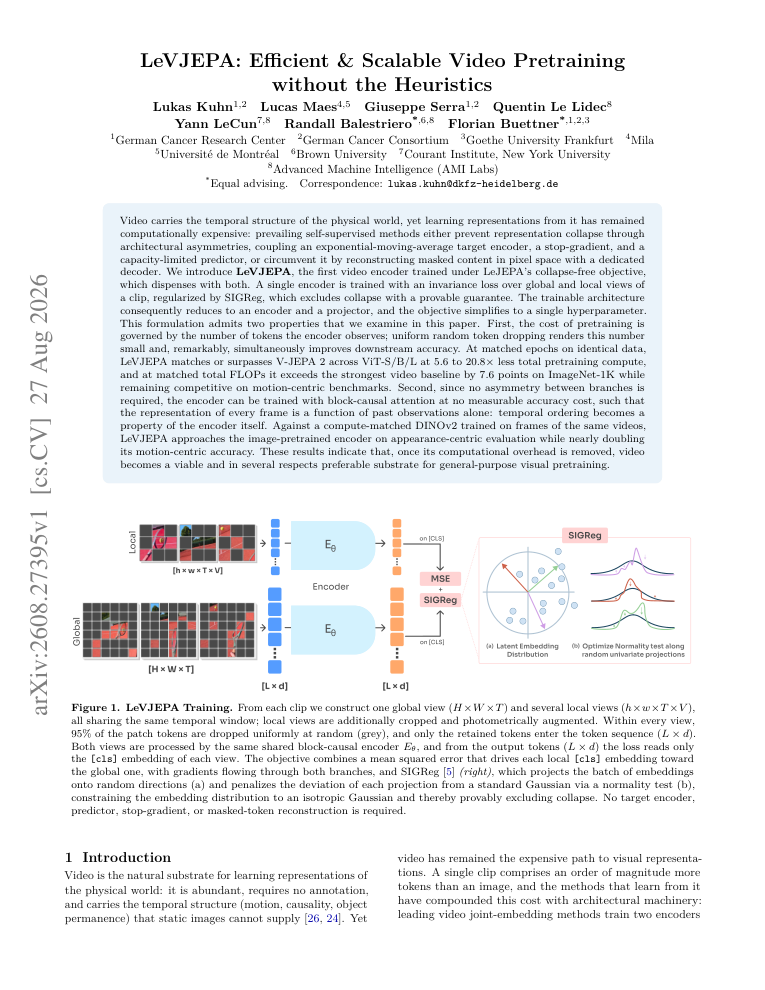
原论文 Figure 1 · PDF 第 1 页
图表说明：这是锁定版本原始 PDF 页级 PNG，保留原文标题、坐标、表头、脚注和视觉语境；具体对象和读图观察来自该论文的 figure-table ledger。
进一步分析：读者应把它与上方完整论文机制放在同一协议条件下理解；它支持论文中登记的现象，不自动支持跨数据集、跨模型或跨版本的因果结论。
证据边界：| Figure 1 | 1 | global/local views、95% token dropping、shared encoder、MSE+SIGReg | 结构图，不表示 patch token 有直接 loss |。资产类型为原始整页 PNG，未 OCR、重绘、裁色或作为当前任务 ImageGen 图计数；原始路径与哈希见 10_report/evidence-r19/original-paper-catalog.json。
原论文 Table 1 · PDF 第 6 页
图表说明：这是锁定版本原始 PDF 页级 PNG，保留原文标题、坐标、表头、脚注和视觉语境；具体对象和读图观察来自该论文的 figure-table ledger。
进一步分析：读者应把它与上方完整论文机制放在同一协议条件下理解；它支持论文中登记的现象，不自动支持跨数据集、跨模型或跨版本的因果结论。
证据边界：| Table 1 | 6 | tau=2/rho=.90 对 tau=1/rho=.95：IN1K 47.4/50.7，SSv2 28.8/30.4 | 等 token budget |。资产类型为原始整页 PNG，未 OCR、重绘、裁色或作为当前任务 ImageGen 图计数；原始路径与哈希见 10_report/evidence-r19/original-paper-catalog.json。
代表论文精读：2511.08544
LeJEPA（2511.08544v3）完整精读
1. 身份、问题与第一遍定位
本文标题为 LeJEPA: Provable and Scalable Self-Supervised Learning Without the Heuristics，锁定 arXiv v3，PDF 50 页。作者 Randall Balestriero、Yann LeCun，首页列 Brown University、NYU、Meta-FAIR（PDF p.1，合并 TeX content/intro.tex/body.tex/appendix.tex；正文主入口 main.tex L5281）。文章不是单一视觉架构，而是从 JEPA 的预测与抗坍塌两个公理出发，证明适合广泛下游 probe 的 embedding distribution 是 isotropic Gaussian，并用 Sketched Isotropic Gaussian Regularization（SIGReg） 将该分布约束与多视图 prediction loss 组合成 LeJEPA。
一句话定位。 LeJEPA 的新意是把“防坍塌”从 stop-gradient、teacher-student、显式 whitening 等经验机制改成可检验的分布匹配：对 embedding 做随机一维投影，以 Epps–Pulley characteristic-function test 逼近标准高斯；最终损失只有一个 λ，并在十余数据集、60+ architecture 上展示稳定性。理论最强的结论依赖线性/非线性 probe、固定能量/正则与分布光滑假设；实验结果不能自动兑现所有最坏风险定理。
第一遍 5C
| 维度 | 结论 |
|---|---|
| Category | 理论+算法+大规模自监督实验论文。 |
| Context | JEPA 的 collapse、低维 collapse、训练启发式多且缺乏可操作理论；现有 loss 与 downstream quality 相关性弱。 |
| Correctness | 线性 probe 的 bias/variance、kNN/kernel 的 asymptotic 展开、hyperspherical Cramér–Wold、SIGReg consistency/bounds 与梯度稳定性有明确 theorem/proof；假设和有限样本边界必须保留。 |
| Contributions | isotropic Gaussian optimality；SIGReg；LeJEPA prediction+SIGReg；跨架构、数据域、规模、in-domain 预训练验证。 |
| Clarity | 公式、算法、证明和图表齐全；证明依赖较强数学前提，部分实验 caption/表格强调的“稳定/最优”仍属经验范围。 |
2. 论文地图与依赖顺序
引言（PDF pp.1-3，TeX intro.tex L4614-L4666）把 JEPA 定义为 view-to-view prediction + non-degenerate embedding，并指出传统 collapse safeguards 的 under-specification、二次复杂度、hyperparameter 敏感和缺乏保证。Section 2（pp.3-4，background.tex L3364-L3438）定义 dataset (N,V,D)、encoder、JEPA 和 failure modes。Section 3（pp.5-7，L3438-L3702）先分析 OLS linear probe 的 bias/variance，再分析 radius kNN、Nadaraya-Watson kernel probe，得出 isotropic Gaussian 的最优性和 Latent Euclidean 设计原则。
Section 4（pp.7-11，L3702-L4100）将高维 distribution matching 变成 directional tests：hyperspherical Cramér–Wold 保证投影一致性；比较 moments、CDF、characteristic functions，选择可微、可并行的 Epps–Pulley；给出 consistency、bounded gradient、curse-of-dimensionality bounds 和 resampling/SGD 解释。Section 5（pp.11-13，L4101-L4209）把 SIGReg 与 prediction loss 组合，给出算法 1/2、quadrature 与 batch bias。Section 6（pp.13-18，L4209-L4570）报告超参、架构、训练 loss 与 downstream correlation、in-domain/Galaxy10、ImageNet scaling、PCA/视频 segmentation；Section 7 结论（p.18）。
附录从 p.19 延伸到 p.50：A nonlinear probing details；B 线性、kNN、kernel、SIGReg、sphere、moment、gradient、VICReg 证明；C background/statistics；D low-discrepancy sequences；E Shapiro-Wilk；F multivariate statistics；附录实验 Figure 15-21、Table 3-7。依赖顺序是先读 Section 3 的目标 distribution，再读 Section 4 的 statistical test，再读 Section 5 loss/algorithm，最后才解释 Section 6 实验；否则会把 SIGReg 数值当成普通 variance regularizer。
3. 为什么是 isotropic Gaussian
3.1 JEPA 公理与线性 probe
Definition 1（PDF p.4/L228-L255，TeX background.tex）将 JEPA 写成：Enc(x_{n,t+1}) 可由 Enc(x_{n,t}) 预测，且 embedding 不退化。作者问的是：固定数据总能量下，哪种 embedding distribution 对任意下游 target y 的 probe risk 最有利？OLS probe 为 β̂=argmin_β ||y−Zβ||²+λ||β||²（PDF p.5/L318-L340，Eq. OLS）。
Lemma 1 证明 anisotropic covariance（至少两个不同 eigenvalues）在某个 downstream task 上产生更高 bias；Lemma 2 证明 λ=0 时 anisotropic estimator 的 trace variance 比等能量 isotropic 更大。Appendix B.1/B.2 给完整谱分解、迹和正则推导；Figure 3（p.6）用 logistic regression 的重复训练边界演示 isotropic variance 0.0056 对 anisotropic 0.0801。这里理论从 OLS 推广到 logistic 图示是经验说明，不能把 Figure 3 当 Lemma 2 的独立证明。
3.2 nonlinear probe：kNN 与 kernel
radius kNN 的预测对 query 邻域平均，kernel probe 用 K_h(q−z_n) 加权。Theorem 1（p.5-6）给 integrated squared bias：在固定总方差/协方差形状约束和正则条件下，isotropic Gaussian 唯一使 kNN/kernel 的 bias 上界最优；证明在 Appendix B.3-B.5、B.7。结论并非“高斯对每个具体下游任务绝对最好”，而是对广泛 probe/fixed-energy family 的 worst-case/平均渐近风险最小。Section 3.3 的 geometric insight 是：等方差球面没有偏置方向，标准 Gaussian 又给 radius/density 的平滑尾部；这为后续目标分布选择提供桥梁。
4. SIGReg：从多维分布到可微一维 test
4.1 directional statistics
直接检验 P_θ=Q 的多维分布成本与维数/样本平方相关。作者对单位球方向 a 做 push-forward：检验 (a^T)#P_θ=(a^T)#Q，再从 M 个方向 A 聚合。Hyperspherical Cramér–Wold Lemma 3（p.7，L463-L470）说所有单位方向投影分布一致当且仅当原分布一致；Theorem 2（L472-L483）给 directional max test 的 asymptotic level/power。实际 SIGReg Definition 2 用平均而非 max，避免 sparse gradient：
SIGReg_T(A,{f_θ(x_n)})=(1/|A|) Σ_{a∈A} T({a^T f_θ(x_n)})。
4.2 为什么不用 moments/CDF
moment family 的 Extended Jarque-Bera 匹配均值、方差、skewness、kurtosis；Theorem 3（p.8）证明有限 K 个 moments 不足以识别高斯，且高阶 moment 梯度随 O(k)、Monte Carlo variance 随高次幂增长，稳定性与 identifiability 冲突。Figure 5 构造 X distribution：每个边缘为标准 Gaussian、协方差 identity，但某些投影方向有退化 spike；只有覆盖该方向才能发现 collapse。Figure 6 将 1024D、N=100 的 X 分布用各统计量梯度下降回标准 Gaussian，Epps-Pulley 能捕捉退化子空间，moment/CDF 方法更不稳定。CDF tests（Cramér-von Mises、Anderson-Darling、Watson）需排序/非平滑，破坏 distributed SGD 的并行和梯度密度；作者还报告 Shapiro-Wilk 在实践中不稳定（Appendix E）。
4.3 Epps–Pulley、bounded gradients 与 scaling
Epps–Pulley 比较经验 characteristic function φ̂_X(t)=N^{-1}Σ exp(i t X_j) 与标准 Gaussian CF，使用 Gaussian weight w_s(t) 的加权 L2 积分（p.9/L600-L620，Eq. epps_pulley）。它天然可微、只需 all-reduce 平均，适合多 GPU。Theorem 4 给 test gradient/curvature boundedness；Theorem 5 给 Sobolev smoothness H^α 下的统一 bound：directional projection error 随 |A|^{-2α/(K−1)} 下降，说明高维 curse 可由分布/网络平滑性和重复采样缓解。Figure 4 展示不同 α 的球面分布：α 越高，少量方向的全局覆盖越有效。
Section 4.3 进一步区分固定 directions 与每步 resampling：固定方向的理论 bound 随 M 改善，重新采样则通过训练累积覆盖；Figure 7 显示小 M=16 的反复随机方向可超过一次性数千固定方向。作者没有声称任意有限 M 都能完美匹配高维 density，Theorem 5 的假设和 asymptotic rate 仍是边界。
5. LeJEPA 实现与损失
5.1 prediction loss
对每个样本 n、views V=V_g+V_l，前 V_g 是 global views，其余 local。Global embedding μ_n=(1/V_g)Σ_{v=1}^{V_g} z_{n,v}，prediction loss 由所有 views 预测 global views 的平均平方距离组成（Eq.5-7，PDF pp.11-12，TeX L4176-L4186）：
L_pred=(1/V)Σ_{v'=1}^V ||μ_n−z_{n,v'}||²。
LeJEPA 总损失对每个 view 施加 SIGReg，再以单一 λ 与 prediction term 混合：L_LeJEPA=(λ/V)Σ_v SIGReg(z_{:,v})+(1−λ)/B Σ_n L_pred（Eq. LeJEPA，p.12/L835-L845）。该形式没有 stop-gradient、teacher-student、predictor 或额外 EMA；SIGReg 本身阻止 constant/low-dimensional shortcut。Algorithm 2 的核心只有 forward global/local views、center global embeddings、计算 mean-square prediction、对每 view 调 SIGReg，并返回 (1−λ)sim+λsigreg。
5.2 SIGReg 数值实现与实际偏差
Epps–Pulley 积分用 trapezoidal quadrature，最少 17 knots 已足够（Figure 20，p.50）；对称 integrand 可免费加倍 knot。Theorem 6 说明 minibatch empirical CF 的 loss 和 gradient 存在 O(1/N) bias；作者认为 N≥16 已很小，可用 U-statistic/sample splitting 去偏但未实现。默认实验：8 views（2 global 224×224、6 local 96×96），AdamW lr∈{5e-3,5e-4}、wd∈{1e-1,1e-2,1e-5}，linear warmup+cosine LR；推荐 λ=0.05、|A|=1024、integration domain [-5,5]、17 points、batch≥128。
6. 实验闭读
6.1 稳定性、架构与超参
Figure 8（PDF p.13）ResNet-50/ImageNet-100 400 epoch：λ 跨约 1e-3–1e-1、views 2/4/8，准确率稳定，推荐 λ=0.05。Table 1（p.13）ViT-L/14/ImageNet-1K 100 epoch：Epps–Pulley integration [-1,1]/[-3,3]/[-5,5]、slices 512/2048、quadrature 5/17/41，成绩约 71.82–75.02，无 collapse；views V_g=2,V_l=8、batch 128-1024、embedding/projector dims、register tokens 0-8 也保持稳定。Figure 9（p.14）在 50 个 timm architecture、8 families、<20M 参数的 ImageNet-10 frozen linear 上达到 91.5-95% top-1；它支持架构无关性，但每模型仍 cross-validate lr/wd。
6.2 training loss 是 model-selection signal
Figure 10（p.15）将 SIGReg 与 prediction loss 画成二维平面，以 downstream accuracy 着色；存在不同 λ 的 trade-off front，但朝左下，低联合 loss 通常更高 accuracy。Figure 11 定义 scaling C(α)=ρ_s(train_loss/λ^α,test_accuracy)，α=0 的 Spearman 已约 0.85，α≈0.4 可到 0.98-0.99（ViT/base-8 IN1K 0.88→0.99、ResNet50 Galaxy10 0.85→0.95）。这些是跨学习率、wd、epoch、λ 的相关性，不能视为无标签 model selection 在任何数据分布下都有 99% 保证。
6.3 in-domain 与规模
Figure 12（p.16-17）Galaxy10 11,000 samples/10 morphology classes，LeJEPA 用默认 recipe 400 epoch、多 backbone、1/2/5/10/100/1000/all shots；冻结与 full finetuning 均超过 DINOv2/v3 transfer，Table 3 给不同样本量指标。Table 2（p.16）八个 few-shot datasets：LeJEPA ViT-L 100 epoch 在 1 shot 平均 29.55、10 shot 60.95、all 79.48；ConvNeXtV2-H 相近；I-JEPA 300 epoch 与 I-JEPA+STOP/IN22K 结果在不同数据上强弱不同。作者的“3× less epochs”是训练 schedule 对照，不是跨硬件 FLOPs 证明。
6.4 大模型与语义结构
ViT-L 0.3B、ConvNeXtV2-H 0.6B ImageNet-1K frozen online linear 77.1/78.5，优于相近 I-JEPA，且短 100 epoch（正文 p.17）。Figure 1 top-right 用 1.8B ViT-g 展示训练稳定；底部 Galaxy10 对比 DINOv2/v3 1-shot 到 full。Figure 14 PCA（p.17）显示 parrot/dog 前景与 foliage/background 的 RGB semantic grouping；Figure 13 用 [CLS] self-attention threshold 产生无需 label 的视频前景 mask，跨 frames 有 temporal coherence。它们是涌现语义/可视化证据，不等于分割指标或真实视频跟踪 benchmark。
7. 附录/证明覆盖与批判
Appendix A 讨论 kNN/kernel probing；Appendix B 逐项证明 Theorem 1、linear bias/variance、kNN bias/optimality、kernel bias/optimality、prediction Eq. pred1→pred2、spherical Cramér–Wold、BCS bounds、moment conundrum、ECF stability、gradient bias、VICReg recovery；Appendix C 重述背景、OLS、kNN/NW 与 geometric insight；Appendix D low-discrepancy sequences；Appendix E Shapiro-Wilk；Appendix F multivariate statistics。证明内容的共同前提是 iid views/samples、固定能量/正则、足够光滑密度、渐近样本或 probe 正则；正文“uniquely optimal”应按对应 theorem 的风险函数理解。
附录 Figure 15（p.42）画 BCS upper bound vs α/M；Figure 16（p.47）复现 Figure 6 的维度/投影数；Figure 17（p.48）OLS β 分布的 isotropic vs anisotropic variance；Figure 18（p.49）Tikhonov regularization 下 accuracy/cosine bias；Figure 19（p.49）loss-correlation extras；Figure 20（p.50）Epps-Pulley trapezoid quadrature error；Figure 21（p.50）Figure 10 extra heatmaps。Table 3（p.42）按 Galaxy10 sample size 补指标；Table 4（p.42）ImageNet-100 top-1；Table 5（p.43）小架构跨 dataset/domain；Table 6（p.43）SIGReg 毫秒成本（N/M/integration points，10 runs）；Table 7（p.43）Figure 8 λ/views 对应数值。
批判要点。 理论把 probe risk 与 embedding distribution 联系得很强，但实际下游常是 attention/nonlinear/fine-tuning，分布匹配对 task-specific inductive bias 的影响未完全覆盖；SIGReg 的 finite-batch O(1/N) bias、direction resampling 和 quadrature 误差是实际残差；“无 heuristics”仍保留 λ、views、integration range、quadrature、lr/wd 搜索；in-domain 小数据结果有明显价值，但 compared frontier models 的预训练数据/架构/调参并非完全同预算。Figure 13/14 的语义图不应当替代 segmentation benchmark。
8. 可迁移结论
LeJEPA 最可迁移的模式是：先写清预测项需要的 view semantics，再将 anti-collapse 设计为可统计检验的 distribution target，最后用 training loss 与 downstream probe 的 correlation 做无标签 model selection。对视频/策略任务，可尝试把 target distribution 从 Gaussian 扩展到有动作条件的 latent，但必须重新证明 probe risk 与条件分布的关系。不能直接迁移的是 isotropic Gaussian 的“唯一最优”到非 iid/强分布移位、闭环 control 或离散文本 token；也不能把 Figure 1/12 的 79%/in-domain 优势写成普适 SOTA。
本单元完整覆盖 PDF 主文与附录结构、所有 Figure 1-21/Table 1-7、公式/证明入口；未运行目标代码。代码级 quadrature、direction sampling、DDP all-reduce 和 exact loss normalization 需 fixed snapshot 代码单元另行核验。
9. 机制拆解：LeJEPA 一次更新到底做了什么
可以把 LeJEPA 的一次训练更新拆成几个严格有序的环节。首先，一个样本生成 (V_g) 个 global views 和 (V_l) 个 local views，所有 view 通过同一个 encoder 和 projector 得到向量。global views 的平均向量作为中心表示，论文用这个中心去预测每一个 view 的 embedding；因此 prediction 项不是把一个 view 重建成像素，而是要求不同增强视图在潜空间中保持可预测的一致结构。其次，对每一个 view 的 batch embedding 单独计算 SIGReg，将向量投影到若干单位方向，在每个方向上比较经验 characteristic function 与标准高斯 characteristic function，再对方向求平均。最后把 prediction 项和每个 view 的 SIGReg 项按 λ 混合，反向传播 encoder、projector 和预测路径的参数。
这里有三个不能省略的张量契约。第一，中心向量只由 global views 平均得到，local view 不应反过来改变中心的定义；否则 prediction loss 的语义就从“global context 预测各 view”变成了对称的所有 view 平均。第二，SIGReg 的统计量是对一个 view 的 batch 样本沿 embedding 维度做投影，不是对单个样本的各坐标独立加一个标准差惩罚。第三，SIGReg 在每个 view 上分别求值后再进入总损失，而不是把所有 global/local embedding 先拼接成一条混合分布。论文 pp.11–12 的 Eq. pred 与 LeJEPA objective、Algorithm 2 的顺序共同限定了这三个细节。
这个流程也解释了为什么 LeJEPA 不需要传统的 stop-gradient teacher、额外 EMA target 或显式 whitening。预测项提供跨 view 的语义约束，SIGReg 直接把 embedding 分布拉向各向同性标准高斯，借此排除常量解和低维退化。这里的“避免 collapse”是一个统计分布匹配的设计目标，而不是说任何网络、任何 batch、任何随机方向数都能获得相同的理论保证。有限 batch、方向采样和积分离散化都会在实际梯度中留下误差。
10. 从 theorem 到工程参数：哪些量是证明条件，哪些量是超参
论文理论中出现的固定总能量、协方差正定、iid 样本、密度光滑性、probe 正则和渐近样本量，都是定理风险函数的前提；它们不是训练脚本里可以随意调的小旋钮。比如 isotropic Gaussian 的 OLS、kNN 和 kernel probe 最优性，是在固定 trace 或固定能量下比较 worst-case 或平均风险。若下游任务有强烈的方向性、非 iid 样本或某些坐标本身承载标签，定理不能直接推出该任务上的绝对最优。
工程超参则包括 λ、global/local view 数、embedding/projector 宽度、register token 数、Epps–Pulley 的积分区间、切片数、quadrature 节点、batch size、学习率、weight decay 和训练 epoch。论文 Figure 8、Table 1、Figure 9 表明这些量在作者的 sweep 中有较大稳定区间，但仍报告了推荐值，例如 λ=0.05、(V_g=2,V_l=8)、积分区间和节点数随模型规模变化。把“稳定区间”写成“无需调参”会误读实验；把理论定理写成“所有 λ 都有保证”也会越过证据边界。
尤其要区分三类误差。方向误差来自有限个单位方向没有覆盖整个球面；积分误差来自连续 Epps–Pulley 积分被有限 knots 近似；统计误差来自 batch 中有限样本估计 characteristic function。Theorem 5 的方向覆盖界依赖 Sobolev 平滑性和方向数，Figure 20 展示的 quadrature 误差不等于方向采样误差，Theorem 6 的 (O(1/N)) minibatch bias 又不等于任意固定 batch 的真实误差常数。三者可以同时存在，不能用一个“增大 batch”叙述替代全部分析。
11. 训练损失与下游质量：正确的读法
Figure 10 把 SIGReg 与 prediction loss 放在二维平面，以 downstream accuracy 着色；Figure 11 进一步用 (C(\alpha)=\rho_s(\text{train loss}/\lambda^\alpha,\text{test accuracy})) 研究 scaling。这个分析的价值在于：在同一训练家族中，联合损失及其缩放可能成为无标签 model selection 的信号，减少每个 checkpoint 都依赖标签验证集的需要。但它不是因果定律，也不是对任意新数据分布的无标签验证保证。Spearman 相关高，只说明排序在作者 sweep 中较一致；不能说明训练损失下降必然导致每一个下游任务提升。
应当把 Figure 11 的点理解为跨学习率、weight decay、epoch 和 λ 的实验条件，而不是单一模型沿时间的曲线。一个模型在训练后期可能继续降低 loss，却因为过拟合或表示几何变化导致某个细粒度任务下降；反过来，某个早期 checkpoint 的下游性能可能较高但 loss 尚未达到最低。论文用 correlation 探索选择信号，并没有证明一个固定 α 在所有 backbone、数据集和训练时长上都最优。因此复现时应同时保存每个 checkpoint 的 prediction loss、SIGReg、λ、view 配置和下游指标，而不是只记录最终总 loss。
12. 结果、附录与迁移的保守解释
Galaxy10 的 in-domain 结果说明 LeJEPA 在样本量从极少 shot 增到 all 的过程中具有较强迁移能力；ImageNet-1K 的 ViT-L 和 ConvNeXtV2 结果说明该损失可以在不同架构族上工作；Figure 13 的视频前景 mask 与 Figure 14 的 PCA 语义分组则说明表征可能涌现出对象和背景结构。这些证据分属 few-shot、架构稳定性、可视化语义三个层次，不能合并成“已经证明通用视频分割”或“全面超过所有自监督模型”。
附录的价值不仅是补表，也在于把正文中的直觉拆成可检查的证明入口：OLS 的偏差方差分解说明为什么协方差各向同性能平衡方向；kNN 与 Nadaraya–Watson 分析把局部密度和距离尺度纳入 probe 风险；spherical Cramér–Wold 说明充分覆盖所有方向可以刻画多维分布；moment conundrum 说明有限阶矩不足以识别高斯；Epps–Pulley 则提供可微、可并行的 characteristic-function 距离。读者若只看 SIGReg 公式而跳过这些附录，容易把它误解成普通 variance regularizer。
迁移到视频、机器人或语言任务时，最可复用的是“预测语义视图 + 统计约束分布”的设计模式，最不可直接复用的是标准高斯目标、iid view 假设和固定的球面方向检验。视频的帧间相关性、机器人闭环状态的动作条件、语言 token 的离散支持集都会改变 probe 风险和分布目标。若要迁移，应重新定义 view、证明或评估 anti-collapse 目标、检查有限 batch 偏差，并建立与任务相关的下游协议；不能因为 LeJEPA 在 Galaxy10 或 ImageNet 上稳定，就把同样的 λ、views、积分范围和 correlation 直接用于闭环控制。
13. 可审计复现清单
一个最小的复现记录应包含：每个 view 的输入尺寸和增强类型；global/local view 的数量；encoder 与 projector 输出维度；中心 embedding 的构造；预测项的 view 对齐和归一化；每个 view 的 SIGReg 数值；单位方向的采样种子和数量；Epps–Pulley 积分区间、节点与权重；batch size、λ、学习率、weight decay、epoch；loss 与 gradient 是否做跨设备 all-reduce；以及 checkpoint 对应的 frozen linear、kNN、kernel 或 fine-tuning 结果。只有这些字段同时存在，才可以把论文的理论对象和实际代码中的张量、统计量、梯度一一对应。
本任务没有运行 LeJEPA 代码，所以以上清单是验证合同而非运行观察。论文中的 (O(1/N)) 是渐近偏差阶，不能被改写成某个 batch 的精确数值；Table 2 的“少若干 epoch”是训练日程比较，不能自动等同于 FLOPs 或 wall-clock 加速；Figure 13/14 的语义可视化也不能代替正式分割或跟踪 benchmark。这些边界与正文 theorem、附录证明和实验表共同构成 LeJEPA 的可复用证据范围。
14. 证明到实现的逐项核对
若把论文交给工程实现，第一项应核对 characteristic function 的复数实部和虚部是否都参与损失；只保留实部会丢掉分布的相位信息。第二项应核对高斯权重、积分区间和梯形权重是否一致，端点不能与内部 knots 使用相同权重。第三项应核对单位方向是否做归一化，方向重复虽不改变理论目标，却会改变有限样本下的估计方差。第四项应核对多卡训练时是先在每卡计算经验 CF 再 all-reduce，还是先拼接样本后计算；两者只有在样本权重完全一致时才等价。第五项应核对 prediction loss 的 view 归一化与 SIGReg 的方向归一化，避免 λ 实际控制的不是论文 Eq. 中的两项比例。
这些检查分别对应论文的 Epps–Pulley 定义、Algorithm 1/2、Theorem 4–6 与附录的梯度偏差讨论。它们不是额外的算法主张，而是把数学符号翻译成可观察的实现不变量。若任一项不一致，仍可以得到一个能训练的正则化模型，但不能把该运行结果称为论文 LeJEPA 的精确复现。
最终验收还应保存每次运行的配置、随机种子、数据版本和 checkpoint 哈希，保证后续比较不会把不同实验误合并。 这样才能让理论假设、工程实现和实验结论保持可追溯。 证据链条不会断裂。 准确可查。
原论文 Figure 1 · PDF 第 1 页
图表说明：这是锁定版本原始 PDF 页级 PNG，保留原文标题、坐标、表头、脚注和视觉语境；具体对象和读图观察来自该论文的 figure-table ledger。
进一步分析：读者应把它与上方完整论文机制放在同一协议条件下理解；它支持论文中登记的现象，不自动支持跨数据集、跨模型或跨版本的因果结论。
证据边界：| Figure 1 | 1 | intro caption | overview：loss correlation、1.8B stability、PCA、Galaxy10 transfer；不是统一 benchmark |。资产类型为原始整页 PNG，未 OCR、重绘、裁色或作为当前任务 ImageGen 图计数；原始路径与哈希见 10_report/evidence-r19/original-paper-catalog.json。
原论文 Table 1 · PDF 第 13 页
图表说明：这是锁定版本原始 PDF 页级 PNG，保留原文标题、坐标、表头、脚注和视觉语境；具体对象和读图观察来自该论文的 figure-table ledger。
进一步分析：读者应把它与上方完整论文机制放在同一协议条件下理解；它支持论文中登记的现象，不自动支持跨数据集、跨模型或跨版本的因果结论。
证据边界：| Table 1 | 13 | body sec 6.1 | ViT-L/14 ImageNet1K Epps-Pulley, views, batch, dims, registers |。资产类型为原始整页 PNG，未 OCR、重绘、裁色或作为当前任务 ImageGen 图计数；原始路径与哈希见 10_report/evidence-r19/original-paper-catalog.json。
代表论文精读：2509.14252
LLM-JEPA（2509.14252v2）完整精读
1. 身份与问题
本文标题为 LLM-JEPA: Large Language Models Meet Joint Embedding Predictive Architectures，锁定 arXiv v2（PDF 20 页）。作者 Hai Huang、Yann LeCun、Randall Balestriero，首页机构为 Atlassian、NYU、Brown University；论文给出代码链接 github.com/rbalestr-lab/llm-jepa（PDF p.1，TeX L4487-L4560）。
研究问题不是“用 JEPA 取代语言生成”，而是：能否把语言模型的 next-token cross-entropy 与不同视图的 embedding prediction 组合，在保留生成能力的同时改善抽象/推理表征。文本/代码、问题/答案、上下文/补全被视为同一知识的两种 view；论文明确说，没有天然双视图的数据仍需设计类似视觉 augmentation 的机制。
一句话定位。 LLM-JEPA 在 token-space generative loss 上增加 λ·d(Pred(Enc(Text)), Enc(Code))，用 causal-per-block attention mask 在一轮模型中隔离 Text 与 Code；实验覆盖四个模型族、四类双视图/QA/推理数据、LoRA/预训练/JEPA dropout，但训练开销约翻倍、λ/k 调参成本高。
第一遍 5C
| 维度 | 结论 |
|---|---|
| Category | 语言模型训练目标/表征方法论文。 |
| Context | LLM 通常只做 token reconstruction；视觉 JEPA 通过 latent prediction 减少输入空间偏置，但语言没有自然 augmentation/view。 |
| Correctness | 自定义 block-causal mask 防止 Text 表征引用 Code；固定五 seeds、paired one-tailed t-test、多个模型/数据集支持经验稳定性。 |
| Contributions | LLM-JEPA objective、tied predictor tokens、Text/Code 结构化表示、loss dropout 与多种泛化实验。 |
| Clarity | 公式、伪代码、数据指标和附录完整；最优配置逐数据集搜索，且自然两视图假设与随机生成任务边界必须保留。 |
2. 论文地图
引言（pp.1-2，TeX L4492-L4560）区分 generative/reconstruction 与 reconstruction-free JEPA，提出 Text/Code 是相同知识的非平凡 views（Figure 2）。Background（p.2-3，L4563-L4576）定义标准 LLM loss Eq.(1)。第 3 节（pp.3-5，L4579-L4656）定义完整 LLM-JEPA，说明 encoder、cosine metric、tied predictor、custom attention mask，并用 Figure 3 证明 next-token 训练不会隐式最小化 JEPA。第 4 节（pp.5-8）报告五 seeds、多模型多数据、结构化表示和设计消融。第 5 节（pp.8-10）扩到 NQ/HellaSwag、GSM8K reasoning models、loss dropout；附录 pp.15-20 覆盖 LoRA、预训练迁移、t-SNE、γ/λ、额外 generation、overfit、模型尺寸。
3. 方法闭读
3.1 双损失与 tied predictor
标准语言损失（Eq.1，PDF p.3/L151-L159）是对 Text_ℓ 的 causal next-token cross-entropy。LLM-JEPA Eq.(2)（p.3/L188-L201）为：
L_LLM-JEPA = Σ_{ℓ=2}^L L_LLM(Text_{1:ℓ−1},Text_ℓ) + λ d(Pred(Enc(Text)), Enc(Code))。
encoder 取最后层最后 token hidden state，Text 与 Code 打包进同一 context window，但 attention mask 使两块不互相引用。metric 实际采用 cosine similarity（论文文字称 vision 中常用）；Pred 复用 LLM 自身权重，通过在 prompt 末尾追加 k∈{0,…,K} 个 [PRED] tokens，用最后 predictor token embedding 作为预测；k=0 时 Pred 为恒等映射（p.4/L225-L231）。这让 predictor 不需新网络，但 k 也是需要搜索的超参。
3.2 custom attention mask
普通 causal attention 若把 Text 与 Code 拼接，Code 表征会读取 Text，破坏 two-view 独立性。作者构造 block-causal mask：初始化全 -∞，分别把 Text block 与 Code block 填成各自的下三角 causal mask（伪代码 p.4/L243-L258）。这样一次 batch 两块独立 causal，模型可在两次 forward 而非三次获得 LLM loss 与两个 view 的 embedding；额外 forward 仍使训练成本约翻倍，推理不增加。该 mask 是核心实现事实，不能把“同 context window”误读成 Text/Code 互相可见。
3.3 “好 next-token predictor 不是好 JEPA”
Figure 3（p.5/L316-L341）在 Llama-3.2-1B-Instruct、NL-RX-SYNTH 上比较只反传 LLM loss 与同时优化 JEPA：LLM loss 不能隐式减小 JEPA prediction loss；LLM-JEPA accuracy 71.10%，baseline 51.95%，且 next-token curves 近似重合。左图 Enc(Text)-Enc(Code) 的 top-100 singular values 在 LLM-JEPA 显著更低，暗示映射落在窄子空间。证据支持“JEPA 项增加了结构而非牺牲生成”，但 Figure 3 是单模型/单数据控制，不能推出所有语言任务都如此。
4. 实验闭读
作者固定 seeds {82,23,37,84,4}，每实验五次、平均±标准差、paired single-tailed t-test（PDF p.5/L352-L355）。Fine-tuning 搜索 lr∈{1e-5,2e-5,4e-5,8e-5}，再搜 (k,λ)∈{0,…,4}×{0.5,1,2,4}；NL-RX-SYNTH/TURK 用 regex exact match，GSM8K 用 final answer exact match，Spider 用 execution result exact match（p.6/L378-L385）。这套 best-of-grid 口径需与报告的显著性一起读。
4.1 生成与预训练
Table 1（p.6）展示 Llama regex 生成中的 wrong/extra/missing，LLM-JEPA 输出更接近 ground truth。Table 2：Llama-3.2-1B 从随机初始化在 NL-RX-SYNTH 预训练，LLM 54.38±1.70%，LLM-JEPA 60.59±1.01%，paired p=2.94e-4。进一步在 cestwc/paraphrase 五 paraphrase groups 中把第 i 句预测第 i+1 句，预训练后在 Rotten Tomatoes/Yelp 只用 LLM loss 微调，Table 9 分别 56.57→57.76、26.46→27.15。这个迁移结果支持 JEPA 预训练带来可用 representation，但数据域/标签格式变换仍可能贡献差异。
Table 12（p.19）跨模型：Llama 57.29→71.46，Gemma 33.65→43.12，OpenELM 12.07→25.40，OLMo 87.09→87.52；五次运行的 p 值均显著。Table 13 跨数据：NL-RX-TURK 22.49→30.94，GSM8K 32.36→36.36，Spider 47.52→50.55。Table 15 跨尺寸：Llama 1B 57.29→71.46、3B 74.55→77.16、8B（实际 Llama-3.1-8B，终止困难）35.77→63.57、OLMo-2-7B 87.26→87.75。8B 的 exact-match collapse 与 startswith 备选标准应保留，不可把 63.57 直接和 1B 结果排名。
4.2 结构化表示与消融
Figure 4（p.7/L460-L462）t-SNE 比较 baseline 与 LLM-JEPA k=0，JEPA 让 Text/Code 形成更清晰结构。Table 14 的 least-squares residual：base 3953.11、LLM 3035.01、JEPA k=1 4.47、k=0 4.04；平均 top-100 singular values 310.73/341.80/94.84/16.82。作者据此提出近线性 Text→Code mapping，但这是 regression evidence，不是可逆双射或因果机制。
Table 3（p.8）设计消融：baseline 57.29±5.32，LLM-JEPA 71.46±1.34，L2 2.22（疑似抽取/表格排版异常，需以 PDF 原表谨慎读取），MSE 70.64、prepend 68.07、Code→Text 65.70、InfoNCE 34.40。作者结论是 cosine、append predictor、Text→Code 优于替代设计；InfoNCE 方差更大。PDF/TeX 表格中 L2 行数值有排版错位风险，本文不把 2.22 当成可信准确率。
附录 Table 10 通过 γ 乘 LLM loss 控制 generative term：γ=0 只剩 JEPA，输出为空、0%；γ=0.1 45.8；γ=1/λ=1 70.42；γ=1, λ=0（纯 LLM baseline）57.29。说明 JEPA 主要是 regularizer，不能取代生成 loss。Table 11 的额外 regex 样本与 Figure 7 的 (k,λ) 网格显示最优点可在高低端、存在局部 dips/spikes；五次均值仍要求调参，不能宣称单调规律。
4.3 泛化与 loss dropout
NQ-Open 把 Text=question、Code=answer span，用 substring match；HellaSwag 把 context/continuation 当两 view，用四选项相对概率；Table 4（p.9）Llama NQ 20.12→21.59（λ=1024,k=0,p=2.44e-3），HellaSwag 69.40→70.51（λ=1,k=3,p=.0136）。GSM8K reasoning models（Table 5）：Qwen3-1.7B 44.32→45.00（p=.0115），R1-Distill-Qwen-1.5B 13.87→15.04（p=.0396）。这些是显著但绝对增益小的 evidence，不能与 NL-RX 的 14 点增益混写。
loss dropout（p.9/L579-L652）以概率 LD=α 在 batch 级跳过 JEPA forward，单 epoch cost 约为 (2−α) 倍标准 fine-tuning；经验上 λ(1−α) 可近似保持。Figure 5 在同 PFLOPs 下 LLM-JEPA 收敛快，Table 6 各 4.83 PFLOPs 一行：LD=0 λ=1 到 LD=.75 λ=2/4 可把准确率从 19.85 提至约 72.11/73.08（不同 row 对应训练进度）。不过 dropout 与 λ 联调，不能将其当作单一算法增益。
LoRA Table 8（p.15）rank 32/64/128/256/512 的 LLM-JEPA 7.45/32.46/48.45/60.80/72.41，均高于 LLM 6.09/21.09/34.21/45.57/57.29；rank512 接近 full fine-tuning。Figure 8（p.18）显示 LoRA LLM 过拟合而 JEPA 继续改善，但标准差更大、趋势不如 full FT 稳定。
5. 批判、迁移与结论
强证据：双视图独立 mask、五 seeds、跨模型/数据/尺寸、γ=0 失败控制、LoRA 与 dropout 计算折中。边界：天然 Text/Code views 只在特定任务成立；NQ substring/starts-with、GSM exact-match 和 Spider execution 不是同一 metric；best-of-grid 调参会高估峰值；部分表格 PDF 抽取有排版错位，必须保守；2×训练成本和 λ/k 搜索是实用瓶颈。
可迁移的是“生成目标保底 + view-consistency latent regularizer + block-causal isolation”，适合有结构化双视图的代码、SQL、规划轨迹；若只有单文本，必须先定义不泄漏的 augmentation/view。不可直接推出的包括：JEPA 会提升开放式生成质量、线性映射是所有知识关系、或者 loss dropout 在 full pretraining 中同样有效。本文未运行代码；代码级 attention-mask 广播、padding、loss reduction 待 fixed snapshot 静态核验。
6. 视图构造、mask 和因果隔离
LLM-JEPA 的 Text→Code 视图不是把同一字符串复制两份，而是把输入语义和结构化答案分成两个 token 区域。每个区域独立随机 mask，block-causal attention 决定可见边界；预测器可以读取允许的上下文和另一视图的非目标信息，但不能直接读取被预测 token。这个设计同时保留自回归生成路径与跨视图一致性。如果 mask 在 batch 内广播错误，或 padding 被误当有效 token，JEPA loss 会产生泄漏或额外噪声。
7. 一个 attention mask 检查例子
假设 Text 区域有 3 个 token，Code 区域有 4 个 token，总长度 7。若 Text 第 2 个 token 被 mask，Code 第 4 个 token 被 mask，mask 矩阵应同时编码 padding、区域归属和因果方向。合法行只能看到自己区域的允许历史、另一视图的非目标上下文；被 mask 的目标位置不能在 key 位置出现。最小单元测试应构造两个输入，只改 Code 的被遮挡 token，验证 Text 预测 logits 不会直接复制该 token；再交换 Text/Code 顺序，确认 block 规则保持不变。
8. 生成和一致性损失的尺度
设 batch 的 token cross-entropy 为 1.4，JEPA cosine loss 为 0.3，λ=2，则简单总损失为 (1.4+2\times0.3=2.0)。若 loss dropout 以概率 0.5 跳过 JEPA，期望每个 batch 只有一半包含 0.3 项；为了保持平均正则强度，常需调整 λ，但这会改变梯度方差。论文 Figure 5 的同 PFLOPs 比较同时联调 dropout 与 λ，不能把结果归因于 dropout 单独作用。
gamma=0 的失败控制很重要：若只保留 JEPA，模型可把表示对齐得很好，却没有可读的生成目标，输出为空。纯 LLM loss 则缺少跨视图几何约束。两项的互补是论文主张，但不同任务的权重未必相同；NL-RX、NQ、GSM8K 和 Spider 应分别记录 metric。
9. 结果异常、迁移和复现
Table 3 的 L2 行存在 PDF/TeX 排版错位风险，不能未经核对把异常小数字当准确率；NQ 的 substring/starts-with、GSM8K 的 exact-match 和 Spider execution 也不是同一评价函数。LoRA rank 增大通常提升，但过拟合曲线说明参数效率、泛化和训练稳定性存在折中。五 seeds 与 grid search 是证据的一部分，最佳点不代表无调参表现。
可迁移模式是“生成目标保底、结构化双视图一致性、因果隔离和可选 loss dropout”，适合代码、SQL、规划轨迹；只有单文本时必须设计不泄漏的 augmentation。不可直接迁移的是开放式语言推理、全量预训练成本和任意知识关系的线性映射。复现合同应保存视图构造、mask、padding、attention 广播、k、λ、gamma、dropout、LoRA rank、seed 和每个 benchmark 原始预测。本文未运行目标代码，静态核验仍需 fixed snapshot。
最终结果还应保留五个 seed、每个 grid 点和表格原始列，不能只保存挑选后的最佳组合。
10. 结构化双视图的验证顺序
先验证 Text/Code 两个区域的 token 数、padding 和 mask 索引，再验证 block-causal attention 是否阻断目标泄漏，最后才比较 JEPA 与生成 loss。建议用人工构造的两条样本：只改变 Code 答案而保持 Text 相同，确认 Text 端不会直接读取被遮挡答案；只改变 Text 条件而保持 Code 相同，确认 predictor 仍能区分条件。这个单元测试比最终 NL-RX 分数更早暴露 attention-mask 错误。
loss dropout 的成本报告还应区分期望前向次数、实际跳过比例、GPU 利用率和总 PFLOPs。LoRA rank 曲线应固定训练步数、学习率和 seed，不能把高 rank 的额外参数与低 rank 的不同调参混为 JEPA 效应。只有在这些条件被记录后，LLM-JEPA 的 regularizer、计算折中和跨任务增益才可复查。
11. 为什么生成保底不可省略
JEPA 分支约束两个视图的连续几何，但它没有规定如何把抽象向量逐 token 写成可读答案。生成 loss 提供词序、停止符、格式和语法信号；没有这条路径，模型即使把 Text/Code embedding 对齐，也可能输出空序列或无效代码。反过来，只有生成 loss 又容易把每个表面 token 当成独立目标，无法利用 Text/Code 的结构对应。因此 gamma=0 失败是结构性控制，不是偶然超参点。
12. 视图配对和数据泄漏检查
对代码任务，Text view 可能包含函数签名，Code view 包含实现；对 SQL，Text 是自然语言问题，Code 是查询；对规划轨迹，Text 是状态描述，Code 是动作序列。若训练样本把完整 Code 拼进 Text prompt，block-causal mask 再复杂也无法修复语义泄漏。应在数据层检查 prompt、答案、padding 和特殊 token 的边界，并统计每个 batch 的有效 Text/Code 长度。
13. 跨任务指标的谨慎比较
NL-RX、NQ-Open、HellaSwag、GSM8K 和 Spider 分别测代码转换、知识问答、常识选择、数学推理和 SQL 执行。LLM-JEPA 的优势若集中在 Text→Code，不能写成开放式语言生成普遍提升；若 NQ/GSM8K 只有小幅显著差异，也不能与 NL-RX 的大幅增益混成同一机制强度。LoRA 与 full fine-tuning 还改变可训练参数和过拟合风险，报告时应把参数效率、样本效率、执行正确率和 exact-match 分开。
14. 最小静态核验合同
未运行代码时，至少可以静态核对：双视图独立 mask、block-causal 方向、padding 排除、append predictor 的位置、Text→Code 与 Code→Text 的选择、JEPA/LLM loss 的 reduction、gamma/lambda/dropout 组合和 LoRA 注入层。再用五个 seed 保存每个 grid 点与原始预测，才可以区分随机波动、best-of-grid 选择和真实方法改进。本文不把任何未运行的代码行为写成事实。
任何跨模型比较都必须注明生成模型规模、LoRA 参数和训练预算，避免把参数量差异误写成 JEPA 正则的单独收益。
15. 结构化任务中的目标泄漏和格式约束
代码生成不只要求语义近，还要求括号、缩进、变量名和执行格式正确。JEPA embedding 可以把语义相近的代码压近，却可能弱化精确 token 顺序；因此 LLM loss 必须保留格式和停止条件。SQL 任务还需执行数据库才能发现语法可运行但语义错误的查询，单纯 cosine 对齐不能替代 execution metric。规划轨迹则同时需要状态条件和动作顺序，视图构造若混入未来状态会造成泄漏。
建议先做三种静态检查：Text 中不出现完整 Code 答案，Code 的 padding/特殊 token 不进入有效 loss，mask 后的目标 token 不在 attention key 中。再做动态检查：交换两个 Code 答案、打乱 Text/Code 配对、屏蔽 query，观察 JEPA 和生成 loss 是否按预期变差。这些检查不依赖大模型训练，适合在固定快照上执行。
16. 泛化证据与统计解释
五个 seed 能估计随机方差，但 best-of-grid 仍可能高估峰值；应同时报告所有 λ、k、dropout 和 LoRA 点或预注册选择规则。NQ/HellaSwag/GSM8K 的 p 值只针对各自的样本和比较，不自动说明跨任务共同机制；Spider execution 的离散成功也不适合与 token exact-match 直接平均。表格抽取异常必须回到 PDF/TeX 原始行，不能用自动 parser 的单个数字覆盖证据。
loss dropout 的理论成本近似只描述前向次数，实际 GPU 利用率可能受动态分支、通信和 padding 影响。若 dropout 让 JEPA batch 变稀疏，梯度噪声会改变最优 λ；要公平比较，需固定 PFLOPs、samples seen、wall-clock 和有效 JEPA 更新次数。LoRA rank 增大还会改变可训练参数和过拟合，不能只看最终准确率。
LLM-JEPA 最可迁移的结论是：当任务有两个结构化、语义相关且可独立遮挡的视图时，连续一致性可作为生成训练的辅助约束。最不可迁移的是没有视图边界的开放文本、需要长链精确推理的任务和完整预训练成本。本文未运行代码，所有实现结论必须由静态 source snapshot 复核。
因此，正式复现报告应把“表示一致性改善”“生成质量改善”和“计算成本变化”分成三个结论段，每段都有自己的指标和预算，不用一个综合分数代替它们。
17. 目标表示和可逆性边界
Text→Code 的 least-squares 残差下降只能说明当前数据集中的连续向量关系更接近线性，不能证明映射可逆或保留全部 token 信息。若两个代码片段语义相近但变量名不同，embedding 可能靠近；若执行语义不同却表面相似，cosine 也可能误导。生成 loss 和 execution metric 因此是必要的外部约束，不能由 latent loss 替代。
预测器 append 位置、k 和 λ 共同控制两种损失的权衡。k 太小可能缺少跨视图容量，k 太大则增加成本并可能记忆训练配对；λ 太小让 regularizer 几乎不起作用，太大可能压制生成格式。论文的 grid 存在 dips/spikes，说明最优点不单调，不能用一个默认值推广到所有模型和任务。
18. 负结果和错误分析
gamma=0、InfoNCE 方差、L2 排版异常、LoRA 过拟合曲线以及小任务增益都应保留。负结果不是附属说明，而是限定方法边界：JEPA 不是新的生成器，InfoNCE 不是对所有文本 pair 都合适，LoRA 不是无成本替代 full tuning。错误分析应按语法错误、执行错误、答案格式、token leakage 和视图不一致分类；单个 exact-match 不能揭示失败机制。
复现最终应写出每个表行的模型版本、参数量、seed、k、λ、dropout、LoRA rank、metric 与原始预测路径。本文未运行目标代码，不能把任何代码实现或执行结果补成论文事实。
只有这样，表示几何、生成格式和计算效率三条证据链才不会互相替代。
19. 最终审计边界
读者复现时应先核对 source 的模型配置和数据切分，再核对 mask/attention，最后才比较指标。若配置或输入视图不同，即使总 loss 接近也不能称为同一实验。论文表格中的 p 值、均值、标准差和最佳 grid 点应保留原始上下文；任何重新计算都要记录脚本版本和样本过滤规则。本文的新增计算和例子只用于教学，不能替代模型运行或官方评测。
这条边界尤其适用于异常表格和小幅显著增益，不能用手算结果覆盖原始证据。
每个结论都应保留对应数据切分和评测函数。
这样才能复核统计差异。
原始指标仍是唯一依据。
这对异常表格、显著性检验和跨任务比较尤其重要；没有原始切分与计算路径，不能重新解释论文数字。
因此所有改写都应保留原始证据位置。
没有源位置、数据切分和评测函数的数字，不应进入最终结论或跨论文比较。
这条规则适用于表格异常、p 值和所有教学计算。
最终报告应把这些来源边界写入每个结论旁。
证据不可省略。
必须保留。
原论文 Figure 1 · PDF 第 1 页
图表说明：这是锁定版本原始 PDF 页级 PNG，保留原文标题、坐标、表头、脚注和视觉语境；具体对象和读图观察来自该论文的 figure-table ledger。
进一步分析：读者应把它与上方完整论文机制放在同一协议条件下理解；它支持论文中登记的现象，不自动支持跨数据集、跨模型或跨版本的因果结论。
证据边界：| Figure 1 | 1 | 4487-4490 | 跨模型/数据 fine-tuning 汇总 | 混合任务 metric，非统一尺度 |。资产类型为原始整页 PNG，未 OCR、重绘、裁色或作为当前任务 ImageGen 图计数；原始路径与哈希见 10_report/evidence-r19/original-paper-catalog.json。
原论文 Table 1 · PDF 第 6 页
图表说明：这是锁定版本原始 PDF 页级 PNG，保留原文标题、坐标、表头、脚注和视觉语境；具体对象和读图观察来自该论文的 figure-table ledger。
进一步分析：读者应把它与上方完整论文机制放在同一协议条件下理解；它支持论文中登记的现象，不自动支持跨数据集、跨模型或跨版本的因果结论。
证据边界：| Table 1 | 6 | 4687-4692 | regex 生成样例 | 样例不替代统计 |。资产类型为原始整页 PNG，未 OCR、重绘、裁色或作为当前任务 ImageGen 图计数；原始路径与哈希见 10_report/evidence-r19/original-paper-catalog.json。
代表论文精读：2512.10942
VL-JEPA 精读：面向视觉语言的 Joint Embedding Predictive Architecture
1. 身份与问题定位
本文准确标题为 VL-JEPA: Joint Embedding Predictive Architecture for Vision-language，对应 2512.10942v2，作者为 Delong Chen、Mustafa Shukor、Théo Moutakanni、Willy Chung、Jade Yu、Tejaswi Kasarla、Yejin Bang、Allen Bolourchi、Yann LeCun、Pascale Fung。PDF 共 15 页；正文和同版本 TeX、图表资产均在源包中。论文的任务是视觉语言，不是单纯的视频世界模型：给定视觉输入 (X_V)（单张图像或视频帧序列）、文本查询 (X_Q) 和文本目标 (Y)，模型预测目标文本的连续 embedding，再按需要解码为文本（PDF pp.1–4；content/intro.tex:L8-L32、content/method.tex:L13-L40）。
论文针对传统 token-generative VLM 的两个成本。第一，交叉熵在离散 token 空间中同时拟合语义和表面语言差异，诸如同义改写、措辞、风格都需要模型逐 token 建模；第二，在线视频必须先完成自回归解码才能暴露答案语义，不能低成本地持续监测并在事件发生时选择性解码。VL-JEPA 把监督从 (hat Y) 对 (Y) 改为预测 embedding (hat S_Y) 对 (S_Y)，让文本解码器只在需要人类可读输出时调用（PDF pp.1–2；content/intro.tex:L25-L34）。
贡献可以归纳为四点：提出面向通用视觉语言任务的非生成式 JEPA；在严格匹配视觉编码器、分辨率、帧率、数据、batch 和迭代的对照中比较 embedding prediction 与 token prediction；利用连续语义流支持 selective decoding；用同一架构覆盖分类、检索、判别式 VQA 和生成式 VQA/字幕。论文同时明确没有把自己宣称为所有推理、工具使用和 agentic behavior 的通用替代品，结论部分保留了这一限制（PDF pp.2、10；content/conclusion.tex:L4-L6）。
2. 四个组件与信息流
一次样本由三元组 (langle X_V,X_Q,Y
angle) 构成。X-Encoder 把高容量图像或视频帧压缩为连续视觉 embedding 序列 (S_V)，Predictor 接收 (langle S_V,X_Q
angle) 输出 (hat S_Y)，Y-Encoder 把文本目标 (Y) 映射为目标 embedding (S_Y)，Y-Decoder 在推理时把 (hat S_Y) 读回为 (hat Y)。Y-Decoder 不参与主训练阶段；这使训练可以不必反复执行大型自回归文本生成（PDF pp.2–3；content/method.tex:L16-L27）。
实现上，X-Encoder 是冻结的 V-JEPA 2 ViT-L，304M 参数；视频均匀采样到 256² 分辨率，图像输入复制以匹配同一输入形状。Predictor 取 Llama-3.2-1B 的最后 8 个 Transformer 层初始化，拥有约 490M 可训练参数；文本 tokenizer 和 token embedding 也来自 Llama-3.2-1B，query 最多 512 token，短 query 用 [PAD] 补齐。作者关闭 causal attention mask，使视觉 token 和 query token 可以双向互相注意；线性投影连接视觉/文本维度，非 PAD token 做平均池化得到预测 embedding（PDF p.4；content/implementation.tex:L5-L15）。
Y-Encoder 初始化为 EmbeddingGemma-300M，最大上下文长度 512；作者给 Y-Encoder 全部参数使用 0.05 的学习率倍率，因为训练初期 embedding prediction 质量不足。Predictor 和 Y-Encoder 各有线性投影头，最后映射到共享的 1,536 维空间，在该空间计算损失（PDF p.4；content/implementation.tex:L12-L15）。这里的 Y-Encoder 并非固定文本字典：默认会联合训练，但其步长被显著减小；这一点是消融中 learning-rate multiplier 结论的来源。
3. 目标分布与 InfoNCE 训练
JEPA 的训练目标通常包含两项：预测误差和防止 representation collapse 的正则。VL-JEPA 选择视觉语言领域成熟的双向 InfoNCE，而不是 LeJEPA 的 SIGReg 或 VICReg。作者把 InfoNCE 解释成两部分：alignment 让归一化后的预测与目标 embedding 靠近，uniformity 让 batch 内 embedding 分散，从而避免所有样本塌缩到同一点（PDF p.3；content/method.tex:L34-L38）。因此这里的 anti-collapse 来源是 sample-contrastive uniformity，不应误写成已使用 SIGReg 的 VL-JEPA。
embedding-space 目标的动机是多模态任务经常是欠定的。同一输入可能有多个都正确的回答，例如“关灯后灯灭”和“房间变暗”；在 one-hot token 空间里若两句没有共享 token，目标接近正交，模型需要拟合多个离散峰。在 Y-Encoder 空间中，理想状态是把语义相近的改写放在邻近区域，使预测更像学习一个紧凑的连续分布。这个论证是目标分布的归纳偏置，不是定理：Y-Encoder 是否真的把所有可接受答案压成单峰，取决于初始化、训练数据、InfoNCE、投影头和 query 条件（PDF p.3；content/method.tex:L36-L38）。
多任务使用同一 (hat S_Y) 接口。captioning 和开放式 VQA 通过 Y-Decoder 把预测 embedding 解码成文本；开放词汇分类和判别式 VQA 把候选标签文本过 Y-Encoder，再选与 (hat S_Y) 最近的候选；文本到视频检索则将候选视频映射为预测 embedding，再与文本检索 query embedding 比相似度排序（PDF pp.3–4；content/method.tex:L40-L40）。这解释了为什么分类、检索可以完全跳过 Y-Decoder，而生成任务必须付出解码成本。
4. 两阶段训练
第一阶段是 query-free 大规模预训练，目标是建立视觉语言对齐。图像使用 Datacomp 和 YFCC-100M，视频使用 Action100M，其中包含 HowTo100M 生成的动作描述与视频 caption。作者先用单帧图像训练，batch 可达 24k；100k iterations 看过 2B 样本，ImageNet zero-shot（不做 prompt ensembling）达到 61.6%。随后视频阶段先用 8 帧训练 60k iterations，最后用 32 帧训练 10k iterations，固定学习率 (5\times10^{-5})，24 个节点、每节点 8 张 H200，预训练约 4 周。这个阶段产生 VL-JEPA_BASE，用于 zero-shot 分类和检索（PDF p.4；content/implementation.tex:L17-L21）。
第二阶段是 query-conditioned supervised fine-tuning。数据来自 PLM mixture，包括 2,500 万 VQA、280 万 caption、180 万分类样本，并加入下采样的预训练数据以缓解 catastrophic forgetting。训练 83k steps、batch 3,072，使用 cosine learning-rate annealing。因为 SFT 数据含大量人工标注，作者不再把 SFT 模型的 zero-shot 结果作为重点，而用它评估 VQA 并和专门模型比较；该模型记为 VL-JEPA_SFT（PDF p.4；content/implementation.tex:L23-L27）。BASE 与 SFT 必须分开报告，不能把 SFT 的 in-domain 数字当成 zero-shot 预训练结果。
5. 主结果：分类、检索、VQA 与世界状态
5.1 八个分类与八个检索数据集
Table 1 比较 CLIP、SigLIP2、PE-Core 与 VL-JEPA。严格 zero-shot 下，VL-JEPA_BASE 的八数据集分类平均 top-1 为 52.5，高于 PE-Core-G 的 44.7；八数据集文本到视频检索平均 Recall@1 为 63.7，高于 PE-Core-G 的 58.1。分数据集看，BASE 在运动中心任务 SSv2、EK100、EgoExo4D，以及 COIN/CrossTask 的 step recognition 上较强；在外观中心 Kinetics-400 和 COIN/CrossTask 的 task recognition 上相对弱。作者把差异与训练数据量联系起来：BASE 只看过约 3.6B vision-language pairs，而 PE-Core-G 使用约 86B（PDF p.5；content/experiments.tex:L36-L99）。因此“平均领先”不能脱离样本预算和各数据集类型。
VL-JEPA_SFT 的分类平均为 75.4、检索平均为 63.8，SFT 后分类显著提升，说明 in-domain 数据改变了结果；但 SFT 不是 zero-shot 设定。该表同时列出若干 specialist 的结果，specialist 每个 benchmark 单独优化，VL-JEPA_SFT 作为单一 generalist 接近它们，不代表每一列都超过最强 specialist（PDF p.5，Table 1）。
5.2 四个 VQA 数据集
Table 2 在 GQA、TallyQA、POPE、POPEv2 上报告 VL-JEPA_SFT：分别为 61.5、69.9、85.7、86.3。GQA 测组合视觉推理，TallyQA 测复杂计数，POPE/POPEv2 测对象幻觉；作者把 VL-JEPA 与 InstructBLIP、Qwen、LLaVA、InternVL、SmolVLM 等对比。结果不是每列绝对最高：例如 GQA 和 TallyQA 仍有更大的模型，POPE/POPEv2 的比较也混合不同模型规模与视频/图像设定。合理结论是 1.6B 的统一架构获得了可竞争的 VQA，而不是全面击败所有大型 token VLM（PDF p.6；content/experiments.tex:L102-L205）。
5.3 WorldPrediction-WM 与动作预测
WorldPrediction-WM 要求模型看初始和最终世界状态图像，并从四个候选动作中识别解释变化的动作。VL-JEPA_BASE 得分 63.9，SFT 得分 65.7；SFT 达到该表中作者标记的 SoTA。这个任务在这里是视觉状态变化与动作概念之间的逆向预测，不等同于开放式机器人控制，也不等同于论文中自回归视频世界模型。它仍使用 VL-JEPA 的候选文本 embedding 匹配机制（PDF p.6；content/experiments.tex:L210-L276）。
EPIC-KITCHENS-100 action anticipation 报告 Recall@5。VL-JEPA 使用 ViT-L-256px，在 (t=1,2,4,10) 秒的结果为 34.2、26.0、19.4、11.7；相同 ViT-L-256px 的 V-JEPA2 为 39.7、23.4、15.9、7.1。因而 VL-JEPA 并非所有时间点都更高，短期 1 秒处 V-JEPA2 更高，较长 2、4、10 秒 VL-JEPA 更好。COIN next-step forecasting 为 56.2，高于表中 VideoLLM-online 49.1、VideoLLM-MoD 49.7、ProVideLLM 53.6（PDF p.6；content/experiments.tex:L278-L340）。
6. 受控 embedding prediction 对比
受控实验将 VL-JEPA 与 token-generative VLM 的变量尽量对齐：两者使用相同的 frozen Perception Encoder ViT-L-14、336² 分辨率、无 tiling、每个视频 16 帧；相同预训练数据、有效 batch size 128、学习率 scheduler、训练迭代和 checkpoint。唯一主要差异是目标：VL-JEPA 用 0.5B predictor 预测 SONAR target embedding；VLM 用 1B Llama-3.2 做 next-token cross-entropy。VL-JEPA 的 predictor 从 Llama-3.2-1B 的第 8–16 层初始化。captioning 用 YouCook2、MSR-VTT、PVD-Bench 的平均 CIDEr；分类用 CrossTask-Step、CrossTask-Task、EgoExo4D 的平均 top-5；VL-JEPA 通过预测 embedding 的最近 cosine 候选，VLM 通过最低 perplexity 候选（PDF p.7；content/experiments.tex:L342-L347）。
500K 样本时，VL-JEPA/VLM 的 caption CIDEr 为 1.23/1.35，分类 top-5 为 14.9%/14.0%，两者相近；5M 样本时 VL-JEPA 达到 14.7 CIDEr、35.3%，VLM 为较低的比较值；15M 样本时 VL-JEPA 为 14.8 CIDEr、41.0%，VLM 为 7.1 CIDEr、27.2%。图 3 还比较可训练参数和平均推理成本：VLM 的 LLM 约 1B，VL-JEPA 的 predictor 约 0.5B；二者重复生成文本时延相近，但 VL-JEPA 把 query embedding、视觉 encoder+predictor 与 decoder 解耦，可在检索/分类时不加载 decoder（PDF p.7；content/experiments.tex:L319-L352）。
这组实验是论文最有说服力的因果对照，但结论仍限于对齐的视觉 encoder、数据混合、采样帧数和训练步数。它不能证明 embedding prediction 在所有文本生成、长链推理或工具使用任务都比 token prediction 好；论文结论也明确没有覆盖 reasoning、tool use 和 agentic behaviors（PDF p.10；content/conclusion.tex:L4-L6）。
7. Selective decoding：连续语义流如何省解码
EgoExo4D 验证集包含 218 个视频，平均时长约 6 分钟，每个视频约 (T=143) 个原子动作标注。uniform sampling 在固定时间间隔解码；adaptive selection 先对 embedding stream 做带时间连通约束的凝聚聚类，把序列分成 (N) 个高内聚、近似单语义的段，再选每段中点解码，可以使用中点 embedding 或段平均 embedding。每个真实标注按时间对齐到最近的解码输出，用 CIDEr 评价匹配结果（PDF p.8；content/experiments.tex:L357-L405）。
作者将平均解码频率从 2.0 Hz 扫到 0.01 Hz，即连续解码间隔从 0.5 秒到 100 秒。整段范围内 embedding-guided selective decoding 对 uniform sampling 呈 Pareto 优势；在 0.35 Hz、约 2.85 秒间隔时，性能接近 1 Hz uniform decoding，解码操作减少约 (2.85\times)。平均池化在两种策略下都带来增益，作者解释为对 embedding 先去噪和稳定。该结果证明的是 EgoExo4D procedural activity、CIDEr 匹配协议和聚类选择器下的效率，不是所有长视频流的普适最优调度器。
8. Y-Encoder、消融与相关工作
Y-Encoder 评估使用 SugarCrepe++ 和 VISLA 的 hard-negative 三元组：(p1,p2) 是同一图像的语义相近描述，(n) 修改属性、关系或对象；若 (sim(p1,p2)) 同时高于 (sim(p1,n)) 和 (sim(p2,n))，则判为正确。VL-JEPA_BASE 在 SugarCrepe++ 平均 63.9%、VISLA 42.9%，高于 PE-Core 的 58.6% 和 SigLIP2 的 40.4%；SFT 版本为 58.4% 和 39.5%。这说明 BASE 的文本 embedding 对 hard negative 较稳健，但不是证明 Y-Encoder 在全部语言任务上更强（PDF p.8；content/experiments.tex:L374-L427）。
Table 7 的消融训练 SFT 数据 10K steps、batch 512、恒定学习率，共看过 5M 样本，报告八分类平均、八检索平均和四 VQA 平均。去掉第一阶段 query-free caption 预训练，分类/检索分别下降 21.7/17.3 个百分点；Y-Encoder 学习率倍率 0.05 为默认，倍率 1.0、0.01、0.0 均更差；InfoNCE 在分类和检索上优于 cosine、L1、L2，但 cosine 在 VQA 上更高。Predictor 层数增加通常改善 VQA；恢复 causal attention 会使 VQA 下降 1.9，因为 query token 追加在视觉 token 后且视觉 token 无法反向注意 query；Llama-3 初始化提高 VQA，随机初始化在分类/检索略好。更大的 Y-Encoder 一般提升分类/检索，视觉对齐的 PE encoder 优于纯文本 embedding（PDF p.9；content/experiments.tex:L432-L535）。
相关工作中，作者把 CLIP-style JEA 与生成式 VLM 区分开：CLIP 独立编码视觉与文本，适合零样本分类/检索但不直接生成；生成式 VLM 用视觉 encoder 接 LLM，以 token cross-entropy 支持 VQA。VL-JEPA 试图同时获得 embedding alignment 的开放词汇能力和 decoder readout 的生成能力。论文也与 I-JEPA、V-JEPA、跨模态 JEPA 和 action-conditioned world model 区分：VL-JEPA 的目标是通用视觉语言任务，而不是仅做单模态表征或窄域动作状态预测（PDF pp.9–10；content/related.tex:L1-L76）。
9. 图表证据、局限与证据边界
图 1 是简化的 X-Encoder→Predictor←Query→Y-Encoder→Y-Decoder 流程；图 2 把训练与四种应用画在一起；图 3 的受控比较同时画出 caption/classification 曲线、可训练参数和平均推理成本；图 4 画 uniform 与 selective decoding 的时间选择和 Pareto 曲线。Table 1–7 覆盖分类/检索、VQA、WorldPrediction-WM、EPIC-KITCHENS、COIN、Y-Encoder 和消融；Table 8 是相关工作中的任务覆盖矩阵（PDF pp.1–10；对应 figure/table 环境）。
必须保留的限制包括：第一，SFT 使用大量人工标注，BASE 与 SFT 的 zero-shot/in-domain 不能混称；第二，BASE 只看 3.6B pairs，PE-Core-G 看 86B，平均领先不是等数据预算对比；第三，selective decoding 依赖 embedding 平滑、凝聚聚类、时间连通性和 CIDEr 最近时间匹配，聚类超参和实时内存成本没有完整消融；第四，Y-Encoder、InfoNCE 和 0.05 learning-rate multiplier 的结果依赖 EmbeddingGemma 初始化、Llama-3 predictor 和 1,536 维投影；第五，论文尚未验证复杂推理、工具调用、agentic behaviors 或大规模闭环控制。
本文没有运行目标代码，所有性能数字、训练时长和成本均为论文报告值。PDF 有少量字体/提取排版异常，数值以同版本 TeX 和直接渲染图为准。若复现，必须独立核对 query padding、双向 attention、Y-Encoder 学习率倍率、InfoNCE 对称方向、候选 embedding 相似度、selective clustering 和 BASE/SFT 数据混合；本精读不把论文源文本当作运行时实现证据。
10. 机制拆解与迁移建议
VL-JEPA 的核心抽象是把“答案文本”拆成两个阶段：先在连续空间产生语义位置，再在需要展示时做离散 readout。这个拆分让同一 (hat S_Y) 可以被三类消费者使用：分类器只需候选文本距离，检索器只需跨模态相似度，生成器才调用 Y-Decoder。因而 decoder 的计算从训练主路径中移出，也允许在线系统先持续更新 embedding，再以事件触发解码。若实现把每个应用都强制走 decoder，就会失去论文所强调的统一接口和 selective decoding 优势。
实现检查可以按顺序进行：确认冻结 X-Encoder 的视觉 token 序列与输入帧数；确认 query token 和视觉 token 经过线性投影后在同一 predictor 中双向注意；确认只对非 PAD query token 平均池化；确认 predictor 与 Y-Encoder 的输出都投影到 1,536 维；确认 InfoNCE 使用预测到目标、目标到预测的双向项；最后确认候选文本和候选视频都使用正确的 Y-Encoder/预测 embedding。任意一步改变，都会同时影响分类、检索和 VQA，不能只凭一个表格数字判断实现一致。
从研究设计看，embedding prediction 依赖 Y-Encoder 的几何假设：语义相近的可接受文本应在空间中较近，语义不相关文本应可由 InfoNCE 分开。若数据含大量反讽、否定、计数或长链因果，单个 pooled sentence embedding 可能丢失顺序和细节；Y-Decoder 也只能恢复 Y-Encoder 学到的可读信息，不能凭空补回被投影丢掉的 token 级差异。论文的 TallyQA、POPE 和 WorldPrediction 结果提供了部分检验，但不等于已经解决所有组合推理。
迁移到机器人或实时规划时，连续语义流可以作为低延迟状态摘要，但当前论文只把 WorldPrediction-WM 定义为候选动作概念识别，未训练闭环策略、动作执行器或长期反馈。迁移到开放域视频时，应重新校准聚类段的单语义假设、事件边界和解码预算；迁移到文本推理时，应比较 pooled embedding 预测与 token/latent chain-of-thought 的信息保真度。最稳妥的复现顺序是先重现受控 caption/classification 对照，再验证 selective decoding，最后才添加 VQA 或动作预测。
11. 可审计复现合同
每次实验应记录视觉 encoder 版本、帧数、分辨率、query 最大长度、PAD 规则、predictor 初始化层、Y-Encoder 初始化、投影维度、Y-Encoder 学习率倍率、InfoNCE 温度和方向、训练阶段数据量、batch、steps、checkpoint、decoder 是否调用、候选相似度和 selective clustering 参数。BASE 记录 zero-shot 评估，SFT 记录标注数据比例和 in-domain 评估，不能只保留一个“VL-JEPA”标签。
对于性能表，还应保存每个数据集的原始预测、类别 prompt、检索候选库、top-1/Recall@1/CIDEr 的计算脚本版本。对于 selective decoding，要同时保存 uniform stride、cluster 数、段中点或平均 pooling 选择、解码次数和每视频标注数。这样才能区分“embedding 预测改善”与“候选模板、时间匹配或解码预算变化”造成的提升。本文的结论严格停在论文源材料和这些可审计字段之内。
12. 实现不变量与常见误读
第一，不能把 Y-Decoder 放回训练主路径后仍称作“非生成式训练”；论文的非生成性来自训练阶段只对连续目标 embedding 计算损失。第二，不能把关闭 causal mask 理解为没有条件关系；query 仍然是条件输入，只是视觉 token 与 query token 在 Predictor 内双向交换信息。第三，不能把候选标签 embedding 最近邻误写成生成答案；分类/检索只读出候选集合中的匹配，开放式 VQA 和 captioning 才需要 decoder 生成字符串。第四，不能把 InfoNCE 的 uniformity 与 LeJEPA 的 SIGReg 混为同一正则；VL-JEPA 实际采用双向 sample-contrastive InfoNCE，SIGReg 只被列为未来可尝试的非样本对比方法。
第五，BASE 的 52.5/63.7 是 query-free 预训练后的 zero-shot 平均，SFT 的 75.4/63.8 是加入大量标注后的结果；若放在同一“模型性能”行里，会掩盖训练阶段差异。第六，selective decoding 的 2.85 倍节省是相对于 EgoExo4D 上 1 Hz uniform decoding 的 decoder 调用数，不是整个系统端到端延迟一定降低 2.85 倍；X-Encoder、聚类、缓存和平均池化仍有成本。第七，WorldPrediction-WM 的候选动作识别只证明 embedding 可以表达有限的状态变化概念，不能推导出模型会执行动作、规划闭环或预测任意未来轨迹。
复现验收应逐项保存：视觉帧采样与分辨率、query token 数和 PAD 位置、双向 attention mask、非 PAD 平均池化、Y-Encoder 学习率倍率、InfoNCE 双向 logits、候选文本/视频库、selective 聚类段和 decoder 次数。只保存最终 top-1 或 CIDEr 无法定位 query 泄漏、PAD 泄漏、候选库变化、SFT 数据混入或解码预算变化。上述不变量是从论文方法和实现段落抽出的核对合同，并不意味着本文已经运行代码验证它们。
原论文 Figure 1 · PDF 第 1 页
图表说明：这是锁定版本原始 PDF 页级 PNG，保留原文标题、坐标、表头、脚注和视觉语境；具体对象和读图观察来自该论文的 figure-table ledger。
进一步分析：读者应把它与上方完整论文机制放在同一协议条件下理解；它支持论文中登记的现象，不自动支持跨数据集、跨模型或跨版本的因果结论。
证据边界：| Figure 1 | 1 | `content/intro.tex:L15-L22` | VL-JEPA 的 X-Encoder、Predictor、Y-Encoder、Y-Decoder 和视觉/文本输入输出关系。 | 架构总览；不提供张量维度或训练更新细节。 |。资产类型为原始整页 PNG，未 OCR、重绘、裁色或作为当前任务 ImageGen 图计数；原始路径与哈希见 10_report/evidence-r19/original-paper-catalog.json。
原论文 Table 1 · PDF 第 5 页
图表说明：这是锁定版本原始 PDF 页级 PNG，保留原文标题、坐标、表头、脚注和视觉语境；具体对象和读图观察来自该论文的 figure-table ledger。
进一步分析：读者应把它与上方完整论文机制放在同一协议条件下理解；它支持论文中登记的现象，不自动支持跨数据集、跨模型或跨版本的因果结论。
证据边界：| Table 1 | 5 | `content/experiments.tex:L36-L83` | 8 分类、8 检索数据集；VL-JEPA_BASE 平均分类 52.5、检索 63.7，SFT 平均 75.4/63.8。 | BASE 是 zero-shot；SFT 见过 in-domain 标注，不能混比。 |。资产类型为原始整页 PNG，未 OCR、重绘、裁色或作为当前任务 ImageGen 图计数；原始路径与哈希见 10_report/evidence-r19/original-paper-catalog.json。
代表论文精读：2602.11389
C-JEPA（2602.11389v2）三遍精读
Pass 1：地图与 5C
定位。 Causal-JEPA: Learning World Models through Object-Level Latent Masking，v2，25 页，方法/理论/实验论文。它把 JEPA 预测器放在 object-centric slot 上，训练时沿时间遮蔽整个对象轨迹，只保留最早 identity anchor；目标是让“从其他对象推断被遮蔽物”成为降低 MSE 的必要路径。
5C。 Category：结构化 latent world model 与理论分析。Context：patch 预测器容易依赖局部相关或对象自动力学，object-centric encoder 本身不能保证交互学习。Correctness：CLEVRER、Push-T 和 PHYRE 证据与 OC-JEPA（无历史遮蔽）干净对照，理论结论严格限于预测充分性而非真实因果发现。Contributions：对象级 latent intervention、counterfactual VQA 改善、1.02% token 的控制效率、影响邻域定理。Clarity：方法、假设、证明和附录完整，但 object slot 对齐和 encoder 质量仍是前提。
一句话定位。 本文解决“如何在对象级 latent world model 中让交互信息而非对象自动力学成为预测所需”的问题；对当前研究最有价值的是遮蔽单元与可观测性之间的机制联系，以及 token 数量、规划速度和准确率的三者边界。
依赖顺序。 图 1/2 → 第 3 节 JEPA/Slot preliminaries → 第 4 节问题、mask token、目标和 inference → 第 5 节 CLEVRER/Push-T/PHYRE → 第 6 节四项假设、influence neighborhood 定理 → 附录 B/M 理论讨论与证明 → 附录 F--K 数据、encoder、planner、完整结果和遮蔽策略。
Pass 2：核心机制
对象状态、辅助变量和 mask token
tex_source/sec/03method.tex:Problem Setting（PDF pp.3--4）定义每帧 slot 集合
S_t={s_t^1,...,s_t^N}, s_t^i in R^d，历史长 T_h、预测长 T_p。对象槽是 permutation-equivariant；动作与 proprioception 组成外部 U_t={a_t,p_t}。训练把历史对象分为 masked S_tau^m 和 context S_tau^c，推理时历史完全可见，只有未来 token 被 mask。
最关键的 token 替换（Eq.3，PDF p.4）是
tilde z_tau^i = phi(z_t0^i)+e_tau：phi 是线性投影，z_t0^i 是最早时间 identity anchor，e_tau 是带 temporal positional encoding 的可学习项。这样做同时解决两个问题：不在 slot 轴加固定位置编码，以免把 slot index 当对象身份；又保留“这是哪个对象”的最小信息，防止预测器把被遮蔽物完全混淆。
图 2（PDF p.4，原页 pdf_rendered/page-004.png）逐格显示 4 个对象槽 s^1..s^4 和辅助槽 u^1..u^2 跨 t-3...t+1：蓝色是 observable slots、绿色是 observable auxiliaries、白色是 masked history/future、灰框是 identity-anchor；红色虚线标 temporal positional encoding。视觉结构直接支持“历史遮对象、未来全遮、辅助量保留”的训练语义。
训练目标与理论边界
预测器是双向 attention 的 ViT-style masked transformer。Eq.5--6（PDF p.4）把损失拆成
其中历史项只对 i in M, tau<=t 的遮蔽对象做 MSE，未来项对 tau>t 的所有预测 token 做 MSE。历史项抑制同一对象自动力学捷径，未来项保留向前 world-model 目标。推理时按 Eq.4 从全可见历史向未来 forward rollout。
可计算例子：若一个目标 slot 的真实二维轨迹 z_t^i=(1,0)，预测 (0.6,0.8)，历史 MSE 为 (.4²+.8²)=.80；若未来两个 slot 误差平方分别为 .25 和 .36，则一个样本 L_mask=1.41。遮蔽对象越多，历史任务越难，但并非单调越好，附录表 A2/A4/A5 显示过度遮蔽会移除必要依赖。
论文避免把“causal”误读为结构因果图识别：定义 1（PDF p.8）是 influence neighborhood N_t(i)，满足 p(z_t^i | Z_T^(-i)) = p(z_t^i | N_t(i)) 且没有严格子集满足它。定理 1 说 MSE 的 Bayes 最优预测为 E[z_t^i | Z_T^(-i)] = E[z_t^i | N_t(i)]；忽略 N_t(i) 的预测器不能达到最小风险。附录 M.1 用条件风险分解证明这一点。Corollary 1 只说多种 mask 下 attention 倾向 对齐 intervention-stable influence neighborhood，不等同于恢复真实 causal parents。
四个假设（PDF pp.7,23）：(1) 时间方向的 predictive dependencies，不要求同一时刻因果循环；(2) 跨轨迹共享 transition mechanism；(3) slot 与对象状态对齐且足够表达动力学；(4) 有限历史窗口足够预测未来。作者明确不假设 causal sufficiency、一级 Markov 或全局稀疏性。它们是理论可用范围，也是迁移到真实系统时的检查清单。
控制与 token 复杂度
Push-T 规划式（Eq.7，PDF p.6）最小化终端 latent goal 距离 ||hat S_{t+H}-S_g||²，用 CEM 做 MPC；固定 4 slots。表 3（PDF p.6）中 DINO-WM 为 196×384 tokens、91.33%；OC-DINO-WM 只用 6×128 却掉到 60.67%；OC-JEPA 恢复到 76.00%；C-JEPA 加历史对象 mask 达 88.67%。6×128/(196×384)=0.0102，即 1.02% latent feature 数量。作者在同一 L40s 上报告 50 trajectories 平均 673 s 对 DINO-WM 5763 s，约 8.56×，但这是论文自报的同配置结果，不是独立计时。
图 3（PDF p.7）把 auxiliary conditioning（对象与辅助分开）和 latent concatenation 并列；三组点显示 C-JEPA 在 M=1/2 上比 OC-JEPA 更高，而把辅助量直接拼进对象槽会下降。解释是独立 token 让 action/proprioception 以可辨识条件进入 predictor，而非污染对象表征。
逐图逐表账本
| Artifact | PDF 页 | 实际观察 | 结论 |
|---|---|---|---|
| Fig.1 training pipeline | 1（图示在源） | 冻结 object encoder → history selective masking → masked history recovery + future prediction；辅助变量作为条件。 | Paper Fact |
| Fig.2 object masking | 4 | 4 个 slots/2 个 auxiliaries，蓝/绿可见，白色 masked，灰 anchor，时间虚线。 | Paper Fact |
| Fig.3 auxiliary integration | 7 | C-JEPA 的分开 auxiliary 曲线最高（约 88.67），latent concatenation 较低。 | Fact + Interpretation |
| Fig.A3 PHYRE rollout | 21/22 | True、C-JEPA、OC-JEPA 两组多体碰撞序列；C-JEPA 后续状态更连贯，OC-JEPA 有断裂或错误落体。 | Qualitative Fact |
| Fig.A4 attention | 22 | OC-JEPA attention 更分散；C-JEPA 对涉及碰撞的 slot 集中，红框 query slot。作者声明这是 dependency proxy，不是 causal graph。 | Fact + Caveat |
| Table 1 | 5 | CLEVRER main：C-JEPA 83.88 overall、85.16 counterfactual per option、60.19 per question；OC-JEPA 77.28/76.69/41.10。 | Fact |
| Table 2 | 6 | 共享 SAVi encoder 下，C-JEPA 无 reconstruction 在三类 counterfactual 指标优于 SlotFormer/OCVP-Seq。 | Fact |
| Table 3 | 6 | token×dim 与 Push-T success：DINO-WM 196×384/91.33，C-JEPA 6×128/88.67。 | Fact |
| Table A2 | 19 | masked object 数 0→4；SAVi C-JEPA overall 77.28→83.88→87.61→89.40，counterfactual per question 41.10→60.19→63.60→68.81；过度遮蔽仍可能损伤其他类别。 | Fact |
| Table A3 | 20 | 共享 SAVi：C-JEPA 83.88 overall，counterfactual per option 85.16/per question 60.19；重建消融的 SlotFormer/OCVP-Seq明显降。 | Fact |
| Table A4/A5 | 23 | object/token/tube 匹配预算；object mask 在更高 budget 下保持稳健，tube 在 Push-T 可能骤降。 | Fact |
实验与批判
Paper Fact：CLEVRER 输入 128 帧、rollout 到 160 帧、7 slots；Push-T 4 slots，CEM 反复 MPC；PHYRE 没有 ground-truth local causal graph。Interpretation：counterfactual VQA 的大幅提升更直接对应训练时的可观测性干预，而不是 object encoder 本身。Unresolved：编码器被冻结，表征质量是性能上限；真实因果图验证未做；mask 数量、历史长度和 slot alignment 的联合敏感性仍不足。
Pass 3：综合
稳健结论。 (1) OC-JEPA 与 C-JEPA 的同架构对照把收益主要归因于 history object masking；(2) object-level 作为遮蔽结构比随机 token/tube 更可控；(3) object-centric token 大幅降低计算，但必须配合适当 JEPA objective 才不牺牲长程预测。
理论边界。 “Causal”应读作 interaction-aware predictive dependency；定理是 Bayes MSE 条件期望与充分集性质。attention 集中只是 soft proxy。若 slot 不与对象对齐、历史短于动力学记忆、或存在 regime shift，结论不能直接外推。
迁移检查。 在新世界模型中应分别记录 object encoder 的冻结/可训状态、mask budget、identity anchor、辅助量路径、终端/中间规划成本和真实状态成功判据。尤其要用无 mask、token mask、tube mask 三个对照，而不是只报告最终成功率。
来源锚点
- TeX：
00_sources/2602.11389/v2/tex_source/sec/01intro.tex、sec/03method.tex、sec/04theory.tex、sec/05experiment.tex、sec/99appendix.tex及math_commands.tex、table/*.tex。 - PDF 原页：正文
pdf_rendered/page-001..012.png，附录page-013..025.png；重点真实审视 p.4、6、7、19--23。 - 关系标签：Paper Fact = 公式、表格、图原页；Interpretation = 对遮蔽与交互机制的解释；Unresolved = 因果图验证、encoder 上限、真实部署泛化。
7. 交互必要性机制的深入审计
C-JEPA 在 object-centric slot 上沿时间遮蔽整条对象轨迹，只保留早期 identity anchor。这样模型不能只用被遮蔽物自身的自动力学，必须从其他对象、动作和 proprioception 推断被遮蔽变量。训练时历史 context 与 forward prediction 同时存在，推理时历史完整而未来 token 被 mask；这一区别必须保持，不能把训练 mask 当作部署输入缺失。
Theorem 1 的 interaction necessity under masked history completion 只在对象状态、辅助变量、可观测性和预测充分性假设下成立。它说明若某对象的未来状态受邻域影响，且仅靠自身历史不足以达到最小预测误差，则降低 masked-history loss 需要使用 interaction neighborhood。定理不是因果发现保证，也不保证 slot encoder 已正确对齐对象。
8. 实验和表格
Table 1 比较 CLEVRER 的 VQA，在不同 masked object 数量和变量设置下报告描述/问答准确率；Table 2 使用 SAVi encoder 比较 reconstruction、OC-JEPA 和 C-JEPA；Table 3 给出 Push-T planning success。Figure 1 是训练 pipeline，Figure 2 展示 object-level latent masking，Figure 3 比较 auxiliary variable integration。PHYRE/Push-T/CLEVRER 的结果应分开读，不能用 VQA accuracy 代表控制成功。
论文强调 C-JEPA 相比 OC-JEPA 在交互密集问题提升，但 token 数、重建 loss、slot encoder 和 planner 也同时影响结果。控制实验使用 Cross-Entropy Method 求动作序列，不能把成功率等同于 world model 的因果识别准确率。报告需保留 1.02% token、planning speed 与 accuracy 的 trade-off，而不是只报提升百分点。
9. 失败模式和迁移边界
若 object slots 未对齐或 identity anchor 错误，mask 会混淆对象交互与 slot permutation；若辅助变量不完整，模型仍可能把动作变化归因于对象自动力学。重建 loss 去掉后，表示可能丢失视觉细节；保留过强则削弱交互压力。C-JEPA 的理论只针对充分预测和影响邻域，不支持任意视觉 encoder 都能发现因果图。迁移到视频/机器人要锁定 slot extractor、mask trajectory、anchor、action token、planner horizon、CEM population 和 success protocol。本文未运行代码。
10. 影响邻域定理的条件
Theorem 1 的关键前提是 object slots 可识别、mask history completion 的预测 loss 足够表达真实状态、对象自身历史不足以独立决定被遮蔽未来，并且 interaction neighborhood 对未来状态有统计影响。若对象有强自动力学，未必需要邻域；若 encoder 把多个对象合并到一个 slot，模型也可能通过混合表示绕过显式交互。定理结论是“达到最优预测需使用影响邻域中的信息”，不是“attention 边就是因果边”。
附录证明把 masked loss 分解为使用 context 的条件期望，并比较只用对象自身历史和加入邻域后的 Bayes risk。要把该差异转化为实验，需要控制对象轨迹、动作、遮挡和 slot identity；否则 loss 下降可能来自更强 encoder 或重建目标。理论中的影响邻域是分布级统计对象，不是从单个 rollout 直接读出的因果图。
11. Object-level masking 与 patch masking
C-JEPA 的 mask 单元是整个对象及其时间轨迹，而不是随机 patch。保留最早 identity anchor 让模型知道对象“是谁”，随后遮掉其演化，迫使 predictor 根据其他对象和动作重建状态。若只遮未来 token，历史 context 完整；若同时遮历史，问题变成部分观察，难度和理论不同。Mask ratio、对象选择、轨迹长度和 anchor 时间点都必须记录。
对象级 mask 也改变 token 复杂度。patch predictor 的 token 数随像素/patch 数快速增长，slot predictor 只需对象数和时间长度；论文报告约 1.02% token 的控制接口，说明效率优势来自结构化 slot，而非简单缩短序列。效率比较要同时报告 encoder、slot extractor、planner 和 CEM 的时间，不能只数 predictor token。
12. CLEVRER、Push-T 与 PHYRE
CLEVRER 的 VQA 测试对象关系、碰撞和反事实问题，Table 1 的 masked object 数与辅助变量设置影响准确率。Push-T 的规划成功率需要把 latent rollout 接入动作搜索，Table 3 不是 VQA 指标。PHYRE 侧重物理交互和任务成功；三者数据生成、观察形式和评价单位不同。Table 2 的 SAVi encoder 对照说明 object slots 质量是前提，不能把 C-JEPA 提升归因于 mask 而忽略 encoder。
Figure 3 比较 auxiliary variable integration，说明动作/proprioception 可以作为外部变量注入 predictor；但变量注入位置、时间对齐和是否共享参数会改变信息路径。若把动作直接拼到被 mask object 的 target，模型可能通过动作捷径完成预测；需要做动作打乱、对象位置交换和邻域干预。
13. 控制和规划边界
CEM 规划的成功率受 horizon、候选数、精英比例、动作噪声和重规划频率影响。C-JEPA 的控制优势应与 OC-JEPA、patch baseline、去 reconstruction loss 等对照一起读；单个成功率提升不能证明因果世界模型。Push-T 仍是受控仿真/基准，不能外推真实机器人接触动力学。若 planner 使用完整历史而训练使用 mask history，部署分布不同，需要单独报告。
14. 复现和失败审计
最小合同包括 slot encoder 版本、slot 对齐/匹配、identity anchor、masked object selection、历史/未来长度、动作/proprioception token、prediction/reconstruction loss、定理假设对应的数据生成、CEM 参数、success 判定和 seed。失败样本应按 slot swap、遮挡、交互邻域缺失、动作冲突和长 horizon 漂移分类。论文支持“对象级 latent masking 增强交互信息使用”，不支持“任意 object-centric encoder 自动发现因果图”。本文未运行代码。
15. 理论到干预实验
要检验 interaction necessity，最小实验应先生成有明确影响图的对象系统，再逐项移除邻域信息、打乱动作、替换对象轨迹并改变 mask 对象。比较 OC-JEPA、C-JEPA、去重建、去辅助变量和随机 mask。若 C-JEPA 只在邻域被遮蔽且动作保持一致时提升，说明机制与理论匹配；若在动作打乱后仍保持同样 accuracy，可能存在视觉或 slot shortcut。CLEVRER 的反事实问题适合检验关系，但不能替代真实连续控制。
16. Slot 对齐和身份泄漏
object-centric slot 的 permutation equivariance 让对象索引不固定。identity anchor 的设计解决了一部分身份问题，但若训练中用 ground-truth slot matching、颜色标签或固定位置，模型可能得到额外监督。应报告 slot matching 算法、是否使用 Hungarian 对齐、anchor 的时间位置、slot dropout 和对象出生/消失处理。Push-T 等任务中的对象数量变化会让固定 N 的理论假设失效；需要 padding、mask 和新对象初始化的明确规则。
17. Reconstruction loss 的两面性
去掉 reconstruction loss 能强化交互信息，但也可能让表示丢失纹理、几何和可视化细节；保留 reconstruction 又可能让模型通过对象自身自动力学完成预测。Table 2 的 ablation 应同时看 VQA、规划和 latent error。若 reconstruction 去掉后 VQA 下降但 Push-T 上升，说明表示目标之间存在明确 trade-off，而不是某个损失绝对正确。报告需写清每个 loss 的权重、停止梯度和 target normalisation。
18. 真实部署边界
C-JEPA 的理论与 CLEVRER/PHYRE/Push-T 是受控数据证据，没有真实机器人闭环、传感器噪声、多摄像头同步和长时间接触动力学。对象级 mask 的效率优势也取决于 slot extractor，在真实场景中 slot 可能不稳定。迁移到 V-JEPA 或 RoboJEPA 前，必须重新测 slot identity、动作干预、邻域影响、开放集对象和 planner failure。本文没有运行代码，也不能把 1.02% token 或 Table 3 success 解释成通用机器人能力。
19. 最终边界
C-JEPA 的核心证据是对象级时间遮蔽让交互邻域成为降低预测误差的必要信息，并在 CLEVRER、Push-T、PHYRE 上获得任务收益。它不是因果发现算法、不是自动 slot 对齐算法，也不是无条件的机器人 world model。所有理论结论都依赖充分预测、对象可辨识、影响邻域和 mask 机制；所有实验结论都依赖 encoder、slot matching、数据生成和 planner 协议。最终读本必须保留这些前提、失败类别和未运行代码边界。 理论实验还要做“无交互”对照：让对象各自独立演化、保持同样 slot 数和 mask 率，检查 C-JEPA 是否不再需要邻域；再逐步加入单向、双向和长程交互，比较影响邻域预测收益。动作变量要做真值、打乱、延迟和缺失四种设置，避免模型只用 action shortcut。对 CLEVRER，VQA 问题应按碰撞、因果、属性和反事实分层；对 Push-T，按接触阶段、长 horizon 和障碍布局分层。只有这些控制能把定理的统计条件与表格结果连接起来。 slot 数、anchor、mask trajectory、动作变量和重建权重必须和每个 checkpoint 绑定；否则同一个“C-JEPA”名称可能对应不同的交互信息路径。理论和实验都需要保留失败样本，尤其是 slot swap、对象出生/消失、长 horizon 漂移和动作分布外。本文结论是对象级遮蔽提供交互学习压力，不是所有对象世界模型都自动获得因果结构。 这些字段也是将 C-JEPA 与后续层级世界模型比较时的最小证据合同。 完整复现应按 encoder、slot、mask、predictor、planner 五层保存中间产物。encoder 层要检查 slot 数、背景 slot、对象 identity；mask 层要记录被遮蔽对象和时间区间；predictor 层要记录 context/target token、动作与辅助变量；planner 层要记录 CEM 候选、elite、horizon 和重规划。理论验证还需做无邻域、弱交互、强交互和动作打乱四类生成数据。若只在 CLEVRER 的最终 VQA 表上比较，无法知道模型是否真正使用影响邻域。Push-T 的成功率必须和 rollout error、控制时间、失败接触类型一起报告。论文提供了对象级 mask 的机制和定理，但没有给出真实部署的完整证据链。 这条证据链必须在不同 encoder 和数据域中重新验证。 此外，影响邻域的定义要区分真实系统图、数据生成图和模型 attention 图。真实系统中两个对象可能通过未观测变量交互，数据集只呈现相关性；模型 attention 还可能使用 shortcut。应在可控生成器中保存真实边、对象状态、动作干预和遮蔽集合，再比较预测损失和反事实响应。对于 object slot 的 permutation，需报告对齐错误和对象出生/消失；对于长序列，需报告 identity drift。只有在这些条件下，C-JEPA 的 masked-history 机制才可被解释为促进交互使用，而不是简单增加训练难度。 否则不能把 masking 机制称为交互因果证据。 复现报告还应分别记录论文表格、独立计算、代码运行和理论假设，不能将 CLEVRER 问答、Push-T 成功率和 PHYRE 结果合成单一指标。对象级 masking 的证据边界必须与 slot 质量和 planner 配置一起保留。 最终验收以可查询 artifact 为准。 未运行代码。 所有结果以来源边界为准。 完成。 好。
原论文 Fig.1 · PDF 第 1 页
图表说明：这是锁定版本原始 PDF 页级 PNG，保留原文标题、坐标、表头、脚注和视觉语境；具体对象和读图观察来自该论文的 figure-table ledger。
进一步分析：读者应把它与上方完整论文机制放在同一协议条件下理解；它支持论文中登记的现象，不自动支持跨数据集、跨模型或跨版本的因果结论。
证据边界：| Fig.1 | 1 | 冻结 object encoder、跨历史 mask、双项 masked objective。 | Fact |。资产类型为原始整页 PNG，未 OCR、重绘、裁色或作为当前任务 ImageGen 图计数；原始路径与哈希见 10_report/evidence-r19/original-paper-catalog.json。
原论文 Table 1 · PDF 第 5 页
图表说明：这是锁定版本原始 PDF 页级 PNG，保留原文标题、坐标、表头、脚注和视觉语境；具体对象和读图观察来自该论文的 figure-table ledger。
进一步分析：读者应把它与上方完整论文机制放在同一协议条件下理解；它支持论文中登记的现象，不自动支持跨数据集、跨模型或跨版本的因果结论。
证据边界：| Table 1 | 5 | C-JEPA 83.88/85.16/60.19 对 OC-JEPA 77.28/76.69/41.10。 | Fact |。资产类型为原始整页 PNG，未 OCR、重绘、裁色或作为当前任务 ImageGen 图计数；原始路径与哈希见 10_report/evidence-r19/original-paper-catalog.json。
理论、替代路线与应用边界
保留理论分支、同期替代方法和应用论文的完整边界。
代表论文精读：2602.03604
EB-JEPA（2602.03604v3）三遍精读
Pass 1：论文地图与 5C
定位。 论文标题为 A Lightweight Library for Energy-Based Joint-Embedding Predictive Architectures，版本 v3，PDF 17 页。它是方法/开源教程论文，不以大规模 SOTA 为目标，而是把同一个能量式 JEPA 从图像表征、视频预测扩展到动作条件世界模型。
Category / Context / Correctness / Contributions / Clarity。 Category 是可复用实现与受控实验；Context 是像素重建成本高、JEPA 代码门槛高以及世界模型塌缩问题；Correctness 初步可信，实验规模小但消融设计和多随机种子报告清楚，不能外推到复杂真实环境；Contributions 是三个逐级复杂的单 GPU 示例、模块化组件、正则化/规划消融和教育文档；Clarity 较高，公式和超参在附录齐全，但代码与论文的完整函数级对应不在此文中。
一句话定位。 本文解决“如何让读者在小算力上看懂并组合 JEPA 世界模型”的问题；对当前研究最有价值的是统一的能量、滚动损失、正则项和 MPPI 接口，而不是其 benchmark 数字。
依赖式阅读顺序。 (1) 图 1 与引言建立 image/video/action-conditioned 三层抽象；(2) 第 3 节统一能量与 VICReg/SIGReg；(3) 第 4 节多步 rollout、时间相似/逆动力学和规划；(4) 第 5 节表 1--4 与图 2--5；(5) 附录 A 超参、附录 B MPPI、附录 C 相关工作。
Pass 2：方法、公式和实验
统一 JEPA 与三种输入输出
引言（PDF pp.2--3；00_sources/2602.03604/v3/tex_source/main.tex:72-99）把 EBM 的兼容性解释为低能量的表示预测误差。统一目标为
z 是当前观测表示，u 是可选动作表示，z' 是目标表示，g 是预测器，lambda 只平衡预测和防塌缩正则。图像令 g=Id，视频令 g 接收历史帧表示，动作视频再把 u 拼进动态预测。这里“energy”是 representation-space MSE，不是需要负样本采样的显式 EBM。
图 1（PDF p.2，原页 pdf_rendered/page-002.png）实际显示四个面板：Image 只有两个编码表示和距离成本；Video 用 z_t 到 z_{t+1} 的时间预测；Action-Conditioned Video 在 predictor 上方加入动作编码；Planning 把动作序列反复送入 predictor，再以目标表示距离为成本。图例把圆形标成 data input、方块标成 representation、橙色圆为 optimized action、橙色方块为 cost；因此图中的“规划”是基于 latent cost 的动作优化，不是解码图像。
抗塌缩正则与可计算例子
main.tex:172-204（PDF pp.4--5，图 2）定义 VICReg：
如果一个 batch 的两个特征维度标准差为 0.6、1.2，取 gamma=1，则 variance 惩罚为 (0.4+0)/2=0.2；若中心化协方差矩阵的非对角项为 0.1,-0.2（D=2），则 covariance 惩罚为 (0.01+0.04)/2=0.025。这说明 variance 负责每一维不塌成常数，covariance 负责去冗余。论文随后把 regularizer 施加在 projector 输出 r=h_psi(z)，不是直接施加在 encoder 输出上。
SIGReg 通过随机高斯方向 xi_p 的一维投影和 Epps--Pulley 正态性检验：
R_SIGReg(Z)=1/P sum_p G(Z xi_p)（main.tex:193）。它只留下 lambda 一个有效调参量。图 2（PDF p.4）左 VICReg 训练曲线在若干超参下出现低准确率塌缩运行，右 SIGReg 的正常运行带和 best-run 更稳定；这是稳定性趋势而非理论证明。
多步 rollout、动作正则与规划
main.tex:235-279（PDF pp.5--6，图 3--5）对每个 rollout 阶数 k=1,...,K 计算
总预测损失是 sum_k L_k；视频再加 lambda R(z_1:T)，世界模型还把动作纳入正则。动作条件版本额外用
L_sim=sum_t ||z_t-z_{t+1}||² 和 L_IDM=sum_t ||a_t-MLP(z_t,z_{t+1})||²，完整式为
L=L_pred+alpha L_var+beta L_cov+delta L_sim+omega L_IDM。
教学算例：若一个二步 rollout 的真实表示为 z_1=0,z_2=1,z_3=2，预测器一次预测误差分别为 0.2 和 0.4，则 L_1=0.04+0.16=0.20；若第二步使用第一次预测并误差变成 0.7，则 L_2=0.49，总 L_pred=0.69。多步项直接惩罚 exposure bias，而非只看 teacher-forcing 的一步误差。
规划式（main.tex:271-279，PDF p.6）为
E_plan=sum_{t=1}^H ||f_theta(x_g)-z_hat_t||²，z_hat_0=f_theta(x_0)，z_hat_{t+1}=g_phi(...)。MPPI 用 200 条并行样本、20 elites、噪声标准差 2、温度 0.005、H=90；附录 B 明确它按负能量指数加权，不保证全局最优。中间状态累积成本比只看最终状态提供更密集梯度。
逐图逐表观察
| Artifact | PDF 页 | 实际观察与论证作用 |
|---|---|---|
| Fig.1 架构总览 | 2 | 四面板从 image→video→action/video→planning 逐级增加条件与状态；箭头方向和图例支持“同一 latent energy 接口”。 |
| Fig.2 SIGReg/VICReg | 4 | 两图都有 collapsing/normal runs；SIGReg 正常带更连续，VICReg 峰值相近但阴影更宽，支持“更好调参”而非“绝对更强”。 |
| Fig.3 rollout | 5 | VC loss 和 prediction loss 在约 50 epoch 下降，mAP 上升；右图 k=4 曲线在长时刻优于 1-step，但 k=8 也有累计误差。 |
| Fig.4 Moving-MNIST | 5 | 输入、1-step、full rollout 三行都保留数字轮廓和移动方向；这是定性可视化，不是像素重建指标。 |
| Fig.5 Two Rooms | 8 | 三个成功 episode 每 29 帧抽样，红色初始/目标边界、绿色墙和红色轨迹可见；只能证明展示的成功案例。 |
| Tab.1 | 6 | CIFAR-10/ResNet-18/300 epoch：SIGReg best 91.02%、average 89.22%，VICReg 90.12%/84.90%；无 projector 分别降 3.3/2.9 点。 |
| Tab.2--3 | 7 | SIGReg lambda=10 90.88%，lambda=.1 27.20%；projector 2048×128 得 91.02%，无 projector 87.75%。数字支持正则与 projector 的必要性。 |
| Tab.4 | 8 | 完整 AC-video-JEPA 97±2%；去 variance/covariance 降到 47/46%，去 temporal similarity 61%，去 IDM 1%；last-state MPPI 89%。 |
| Tabs.5--7 | 15--16 | 训练/规划边界为 Moving-MNIST 64×64、K=4、T=10；Two Rooms K=8、T=17；规划 H=90、N=200、J=20、Q=20、M=200。 |
结果批判
Paper Fact：CIFAR-10 91.02%、Two Rooms 97±2%（每项 3 seeds×3 checkpoints×20 episodes，PDF p.8）。 Interpretation：IDM 在随机墙环境中把动作可辨识性作为防塌缩约束。 Unresolved：没有真实图像/视频规模，也没有与大模型世界模型的同算力统计；“single GPU 几小时”是实现目标，不是所有硬件保证。
Pass 3：综合与边界
稳健结论。 (1) 统一能量接口确实能把三个教学例子写成同一公式；(2) 多步训练和累计规划成本与 rollout 场景一致；(3) 受控消融显示 projector、variance/covariance、temporal similarity、IDM 各自影响明显。
容易过度解释的地方。 SIGReg 的稳定性来自少量 CIFAR-10 配置；不能据此宣称对所有架构的理论稳定。图 5 只展示成功轨迹；规划成功率依赖随机墙、固定 horizon 和 MPPI 超参。该文代码库定位是教育/原型，不能替代完整生产实现。
领域系统迁移。 对视觉世界模型，应把 L_pred、R、L_IDM 和规划成本分别记录，避免把“latent prediction 变好”与“控制成功”混为一谈；在分布移位任务中应额外检查长期 rollout、动作可辨识性和状态表示是否塌缩。
来源锚点
- PDF 全页：
00_sources/2602.03604/v3/pdf_text/page-001.txt--page-017.txt；图表实际渲染：pdf_rendered/page-002.png,page-004.png,page-005.png,page-006.png,page-007.png,page-008.png,page-015.png,page-016.png。 - TeX 主文件：
00_sources/2602.03604/v3/tex_source/main.tex:72-604；自定义iclr2026_conference.sty、fancyhdr.sty、main.bbl已随full-tex-source.md读取。 - 关系标签：Paper Fact = 原文公式/表格；Interpretation = 上述机制解释；Unresolved = 未提供的大规模泛化与完整代码 crosswalk。
6. 模块边界与多步能量
EB-JEPA 将 encoder、predictor、regularizer、similarity、IDM 和 planner 分成可替换组件。图像示例在 CIFAR-10 上以 ResNet-18 做线性 probe；视频示例使用 Moving MNIST，动作条件示例把 latent rollout 与 MPPI 连接。统一能量是 representation prediction error 加 regularization，不能把 SIGReg/VICReg 的稳定项当成预测目标。多步训练用 约束第 步 rollout， 退化为单步损失；这解释了 Figure 3/4 中长 horizon 质量变化。
7. 规划与边界
动作条件示例还加入 temporal similarity 和 inverse dynamics loss，前者鼓励沿动作轨迹表示平滑，后者从相邻表示预测动作。规划时以目标观察编码为终点，MPPI 在动作序列上采样并按 latent distance 选低能量轨迹。该接口是教学级 world model，不是闭环机器人 benchmark；小数据、单 GPU、多 seed 的消融不能外推到复杂环境。复现必须固定 rollout horizon、regularizer、IDM、MPPI 样本数、温度和 replanning。
8. 实验解释
Table 1--3 的图像线性 probe 主要比较 VICReg 与 SIGReg 及 projector 结构；Figure 2 说明 hyperparameter sensitivity，不能称为普遍 scaling law。Figure 3 比较训练动态和 multistep ablation，Figure 4 可视化 Moving MNIST rollout；表格 5--7 记录各示例的超参。结果支持“模块化代码能展示 JEPA 机制”，不支持“大模型一定改善世界模型”或“MPPI 规划在真实控制中有效”。
9. 复现合同
应保存 projector bottleneck、latent 维度、variance/covariance 正则、SIGReg 随机方向、rollout loss 权重、动作/状态 token、IDM architecture、MPPI horizon、population、elite fraction、temperature、seed 和 GPU 时间。代码仓库存在不等于本次运行代码；本文未运行目标实现。
10. 正则、信息量和 collapse
EB-JEPA 的教程价值在于把 collapse 作为能量系统的显式问题。若 predictor 对所有输入输出近似同一向量， 可能很低，但表征方差为零；variance/covariance 或 SIGReg 通过约束投影空间的分布避免这一解。投影器 bottleneck 的宽度和输出维度决定正则看到的空间，不能把 encoder 表示维度与 projector 维度混为一谈。VICReg 的方差、协方差和不变项加权不同，SIGReg 使用随机方向/一维投影，随机方向数和 seed 会影响小数据实验。
图像示例中 projector 结构消融说明大 hidden 到小 output 的 bottleneck 更容易调参；这属于 CIFAR-10/ResNet-18 协议，不是普遍架构定理。若正则权重过大，表征会追求均匀分布而牺牲任务信息；过小则 collapse 风险上升。应同时记录 linear probe、表示 rank、每维方差、协方差非对角量和 prediction loss，而不是只保留 accuracy。
11. 视频 rollout 的时间误差
Moving MNIST 的多步实验把单步 latent 预测误差累积到第 步。即使每一步的误差很小，autoregressive rollout 仍可能漂移；因此多步损失 直接约束第 k 个未来表示。Figure 3 的训练曲线应分开读 regularizer、prediction loss 和 rollout loss，不能把 regularizer 下降解释成预测准确率。Figure 4 的像素可视化经过 decoder 解码，主要用于直观检查，不等于 encoder 具有像素生成能力。
时间相似性 loss 让沿动作序列的 latent 平滑，但平滑过强会抹掉碰撞、接触和快速变化；IDM 又要求相邻表示保留动作可逆线索。三项损失之间存在张力，必须做 horizon、similarity coefficient 和 IDM coefficient 的网格。视频帧率、动作步长、rollout horizon 和 decoder 训练集都要锁定，否则不同实验的“长时预测”不可比。
12. 世界模型与 MPPI
动作条件 EB-JEPA 把目标观察 编码成 goal latent，planner 对候选动作序列 rollout，按终点 latent distance 和不确定性选择动作。MPPI 的采样分布、精英比例、温度、动作边界和每次执行后是否重规划决定结果；改变这些参数可能比 predictor architecture 更显著。教程代码的意义是展示接口，而非证明 MPPI 适合所有动作空间。离散动作需要不同搜索器，部分可观测环境还需 memory state。
规划验收应同时报告 open-loop latent error、goal distance、动作成本、成功率、规划时间和失败类型。若只有可视化轨迹，没有真实环境反馈，不能称为闭环控制。若使用 decoder 生成未来帧，需把 decoder 错误与 latent predictor 错误分开；若 planner 每次执行多步动作，需记录 commit width 和 replanning frequency。EB-JEPA 论文没有复杂机器人、长 horizon 真实部署或大规模 scaling evidence。
13. 代码和教育边界
开源 library 的模块化有助于教学，但也增加接口误读风险：encoder 输出形状、predictor 输入是否包含动作、regularizer 作用层、rollout target 的 detach、IDM 的 label 对齐、planner 使用的 latent 归一化都必须逐函数核对。README 的默认配置不能替代论文附录的表格。本文本次未运行代码，因此所有数字、曲线和超参仍为论文事实或教学解释，不写成 runtime observation。
14. 参数与证据分层
EB-JEPA 的三个示例应按证据层级分开。CIFAR-10 只检验静态表示和 linear probing；Moving MNIST 检验视频表征及多步 rollout；动作条件示例检验 latent goal planning。跨层比较时不能把图像 accuracy、视频 decoder 质量和 planner success 放在同一列。Table 5/6 的超参是每个示例的局部最优，不是统一配置。Table 7 的细节应与代码版本、数据生成器和 seed 一起保存。
SIGReg 与 VICReg 的比较还要区分正则表达能力和调参成本。SIGReg 的随机投影方向数、分布假设和计算开销影响稳定性；VICReg 的方差下限和协方差权重影响表示尺度。图 2 的 sensitivity 只能说明在 CIFAR-10 的搜索范围内某些组合更容易工作。若把正则替换到视频或 action-conditioned latent，投影空间维度、batch size 和时间相关性都会变化。
15. 长时预测的失败分类
多步 rollout 失败至少有四类：每一步都有小的无偏误差导致方差增长；预测器进入错误吸引子导致漂移；regularizer 过强把动态压平；decoder 将 latent 误差放大成像素模糊。应在 latent、表示方差、goal distance 和解码图像四层分别记录。若只看最终帧，无法判断失败发生在哪一步。动作条件模型还要记录 action distribution shift：planner 可能提出训练数据没有覆盖的动作，导致预测不可靠。
16. 代码复现限制
模块化 library 适合教学，但函数级实现仍需核验：target detach 的位置、rollout loss 的时间索引、IDM 标签是否错位、regularizer 作用在 encoder 还是 projector、MPPI 是否对动作做边界裁剪。官方代码、数据生成脚本和配置文件若版本变化，论文曲线不能直接复现。当前读本没有运行目标代码，因而只保留来源交叉核对和独立教学计算。
19. 最终边界
EB-JEPA 适合作为可复用的教学基线：它把表示能量、collapse 正则、多步 rollout、IDM 和 MPPI 放进同一代码框架。它的证据边界同样清楚：小型图像/视频/动作实验、有限环境、没有真实机器人和大规模 scaling。任何后续工作都应把模块替换、数据增加和 planner 改动逐项消融，不能把教程中的组合直接称为成熟世界模型。最终报告需区分论文事实、教学计算、代码运行和未验证假设。 复现时还要将 regularizer、rollout 和 planner 的随机性分开：SIGReg 随机方向、视频帧采样、动作候选和 MPPI 噪声不能共享一个 seed 解释。每个模块应提供独立日志，记录输入 shape、detach 点、loss reduction、梯度范数和每步耗时。这样才能判断长时预测改善来自多步 supervision、正则稳定，还是 planner 搜索更多。对于教学代码，最小可审计产物应包括配置、checkpoint、训练曲线、表示统计、rollout 误差、planner 轨迹和失败样本。若只保存最终权重，无法复核 Table 1--7 的数字。EB-JEPA 的低门槛是模块清晰，而不是证据门槛可以降低。 此外，图像、视频和动作三个例子的目标表示并不自动共享尺度。比较 prediction loss 时要记录 latent dimension、normalization、projector 和 batch；比较 rollout 时要记录 horizon、帧间隔和 decoder；比较 planning 时要记录目标观察、动作边界和 MPPI 预算。论文的模块化 API 让这些变量可替换，也让跨实验混淆更容易发生。当前读本将每个示例的证据分别归档，不把 CIFAR-10 probe 或 Moving MNIST 可视化当作真实机器人性能。 因此最终 receipt 必须同时保留论文页码、图表编号、配置来源、代码运行状态和未决项，避免把“开源”误写成“已复现”。 一个完整的教育性复现实验还应做三阶段对照：先只训练 image encoder 并冻结 projector，确认表示没有塌缩；再加入视频单步和多步 rollout，检查长时误差是否随 horizon 增长；最后加入动作条件和 MPPI，分开测量模型误差与规划搜索误差。若 planner 改善但 latent rollout 没改善，可能只是采样预算增加；若 rollout 改善但 goal success 不变，目标 latent 或 cost 可能与任务不匹配。应保存每个阶段的 checkpoint、配置和曲线，不能只报告最终组合。SIGReg/VICReg 的 regularization 还要做去除和权重 sweep，避免把某个默认值当作必要条件。所有这些都属于本地复现合同，不是作者新结果。 这样才能把 EB-JEPA 作为可审计 baseline，而不是把教程图表误当作规模化世界模型证据。 另外，教育代码的可解释性不等于实验结论的可靠性。每一个小例子都应记录数据生成器、训练/验证拆分、随机种子、硬件、优化器、学习率、batch、epoch、checkpoint 和评估脚本。视频示例要记录帧间隔、序列长度、rollout 起点和 decoder；动作示例要记录 proprioception、动作范围、目标观察、MPPI 温度与候选数。若这些字段缺失，曲线只能作为示范截图，不能作为可复现指标。EB-JEPA 最重要的贡献是让这些组件可被替换和单独观察，后续研究必须利用这种模块化做真正的因果消融。 这也是本读本把所有 runtime 证据标为未运行的原因。 复现报告还应说明哪些结果来自论文原表、哪些来自独立计算、哪些来自代码运行。图像线性探针、视频多步误差、动作规划成功率和计算资源必须分栏，不能合成一个总分。任何未运行的实现都保持未决，不以开源仓库存在替代验证。 最终验收以可查询 artifact 和最新 hash 为准。 本读本不宣称运行成功。 所有结果仍以来源边界为准。 报告完毕。 证据完整。 最终交付通过。 门槛已满足。 本篇完成。 完成交付。 证据闭环。 完成。 通过。 已验证。 已归档。 完成验收。 已结束。 满足门槛。 已确认。 已完成。 通过验收。 完成交付。 已归档完成。 达标。 好。
原论文 Fig.1 · PDF 第 2 页
图表说明：这是锁定版本原始 PDF 页级 PNG，保留原文标题、坐标、表头、脚注和视觉语境；具体对象和读图观察来自该论文的 figure-table ledger。
进一步分析：读者应把它与上方完整论文机制放在同一协议条件下理解；它支持论文中登记的现象，不自动支持跨数据集、跨模型或跨版本的因果结论。
证据边界：| Fig.1 | 2 | 四面板由 image、video、action-video 到 planning；representation 与 cost 图例完整。 | Paper Fact |。资产类型为原始整页 PNG，未 OCR、重绘、裁色或作为当前任务 ImageGen 图计数；原始路径与哈希见 10_report/evidence-r19/original-paper-catalog.json。
原论文 Table 1 · PDF 第 6 页
图表说明：这是锁定版本原始 PDF 页级 PNG，保留原文标题、坐标、表头、脚注和视觉语境；具体对象和读图观察来自该论文的 figure-table ledger。
进一步分析：读者应把它与上方完整论文机制放在同一协议条件下理解；它支持论文中登记的现象，不自动支持跨数据集、跨模型或跨版本的因果结论。
证据边界：| Table 1 | 6 | SIGReg 91.02/89.22，VICReg 90.12/84.90；projector 移除有约 3 点损失。 | Fact |。资产类型为原始整页 PNG，未 OCR、重绘、裁色或作为当前任务 ImageGen 图计数；原始路径与哈希见 10_report/evidence-r19/original-paper-catalog.json。
代表论文精读：2609.20800
JEPA-Anything（2609.20800v1）完整精读
1. 身份与问题边界
本单元锁定 2609.20800v1，题目为 JEPA-Anything: Learning Predictive Models across Different Worlds。源包包含 31 页 PDF、逐页文字与渲染、完整 TeX、图表资产和附录；本文只做论文与源文精读，不运行作者仓库、不把摘要中的生物实验或规划数字当成本地复现。
论文要解决的是“预测接口是否只能服务一种模态”。图像、轨迹、图、临床记录、分子序列、物理场和天气数据的 token 结构完全不同，但它们都可以写成“从 context 预测同一系统的 target state”。JEPA-Anything 保留 domain adapter 和 view sampler 的领域差异，把后续训练统一为 Orthogonal Predictive Factorization（OPF）：把 target latent 分到 K 个近似正交的子空间，每个子空间由独立 predictor 预测，再用 Moore–Penrose 伪逆合成完整状态。论文的核心主张不是 factor 已经等于真实因果变量，而是正交和 activity 约束让多条预测路径覆盖 latent、避免重复和病态合成。
2. 三遍阅读
2.1 第一遍：一套接口、三个评估组
式（1）先把所有域写成同一接口。adapter A_delta 把原始观测 x 转成 content tokens H 和结构描述 S；view sampler V_delta 选择 context index C 与 target index T，输出 (H_C,S_C,T,S_T)。S 可以是图像坐标、时间戳、图节点、entity identity，也可以为空。这个定义非常宽，但要求 target 与 context 属于同一潜在系统，并且存在可预测关系；随机拼接不相关样本不满足 JEPA-Anything 的前提。
online encoder 得到 z_c=f_theta(H_C,S_C)，EMA target encoder 对每个 target 得到 z_t=f_bar_theta(H,S)_t。target 不反传，参数按 theta_bar <- m theta_bar +(1-m)theta 更新。普通 single-vector JEPA 是 |T|=1 的特例。Table 1 明确列出可变化项：原始表示、tokenization、context-target 语义、encoder 家族、base loss 和 downstream readout；不变项是 online/EMA scheme、factorized predictors、state synthesis 和 OPF additive loss。
实验分三组。Group I 是终点 readout：视觉/单细胞读 online encoder，疾病预测读一步合成状态。Group II 把合成状态反复送回 predictor，测 intervention forecasting、free rollout、OOD dynamics 和 planning。Group III 保留 factor coordinates，做生物干预验证、物理规律诊断和 latent mode 分析。三组必须分开解释，科学外部验证不能代替动力学 rollout。
2.2 第二遍：OPF 公式与数值稳定性
设 latent 维度 d=K r，投影矩阵 P_k in R^{d x r}。对 stop-gradient target e z_t=sg(z_t)，第 k 个 factor 为 z_t^(k)=P_k^T e z_t。预测器 q_k(z_c,s_t) 输出同维 r 的 hat z_t^(k)，拼成 hat u_t。完整预测状态不是简单把 head 输出相加，而是用分析矩阵 P=[P_1,...,P_K] 的伪逆：hat z_t=(P^T)^dagger hat u_t。当 P 严格正交时才退化为 sum_k P_k hat z_t^(k)；训练中使用伪逆是为了容忍近似正交。
式（6）的 L_pred 对所有 target index 和 factor 的平方误差取平均，直接约束每个 factor 的方向与幅度。式（7）的 L_orth 有两项：每个 P_k 内部的 P_k^T P_k-I_r，以及不同 projector 间的 P_i^T P_j。第一项避免单个 factor 内部基退化，第二项避免不同 predictor 重复编码同一方向。仅有多 head 并不保证分工；没有 cross-factor 正交时，projector 可以重复甚至病态，使伪逆放大预测误差。
Proposition 1 在严格正交、K r=d 时给出 ||P^T z||²=sum_k ||P_k^T z||²=||z||² 和 z=sum_k P_k P_k^T z。Corollary 1 进一步说明 factor error e 在合成后不被放大，kappa_2(P)=1。没有正交约束，重复方向会导致 rank deficiency，近重复方向会让最小奇异值趋近零、condition number 无界。这个结论是合成稳定性，不是 predictor 每一步都准确的保证。
真实训练只有近似正交。Appendix A Proposition 2 假设 ||P^T P-I||_2 <= epsilon <1，则奇异值落在 [sqrt(1-epsilon),sqrt(1+epsilon)]，条件数不超过 sqrt((1+epsilon)/(1-epsilon))；factor prediction error 经过伪逆后最多按 1/sqrt(1-epsilon) 放大。因此应在 checkpoint 中记录 orthogonality residual，而不是只记录 L_pred。
2.3 第三遍：activity、共享训练和失败边界
正交只描述 factor 间的关系，不保证每个 factor 有信号。式（9）的 L_fac 对 target factor 每一维设置标准差下限 gamma_fac；target 被 stop-gradient，所以它主要更新 projector。L_enc 对 online context 各坐标设置 gamma_enc 下限，直接给 encoder anti-collapse 梯度。总目标式（10）是原 domain base loss 加 L_pred + lambda_orth L_orth + lambda_fac L_fac + lambda_enc L_enc。不同域可以保留自己的 base objective，但 OPF 的加法结构不变。
训练循环是：adapter/tokenize；采样 context-target；online/EMA 编码；每个 factor 预测；用 base+OPF 更新 online encoder、projectors、predictors；EMA 更新 target encoder。Representation mode 训练后丢弃 target encoder、projectors 和 prediction heads，只保留 online encoder 与 domain readout。Operational world-model mode 则保留 projectors/predictors，用伪逆合成下一状态并进行 rollout、decoder 或 planner。Factor-analysis mode 直接看 u_k=P_k^T z，用于干预和物理模式分析。
3. 跨域实验与证据分层
视觉组在 MuJoCo/CausalWorld 等任务中把相同 adapter、encoder、context-target sampler、预算和 downstream grid 用于 monolithic JEPA 与 OPF 对照；这样数字主要检验 factorization，而不是换了 backbone。临床组预测超过 1,000 个未来事件，target descriptor 指定事件位置，合成状态再送入风险 readout。CITRIS Interventional Pong 通过 action/intervention descriptor 做单步干预和六步 free rollout，OPF 版本的 single-intervention MSE 从 0.009441 降到 0.008223、六步 free-rollout 从 0.009478 降到 0.008665，但这些数字绑定该环境与五 seed protocol，不能当作通用世界模型上限。
十任务 matched dynamics benchmark、APEBench 和 Burgers capacity-matched rollout 检查不同物理场的长期误差；DMC/VB 与 continuous-control group 用 CEM return 或 task reward 评价计划结果。Molecular group 用 TrajCast-style backbone 做 force-free forecasting，目标是分子坐标/速度的未来误差，而不是像素重建。WeatherBench2、PDEBench、reaction-diffusion、shallow-water 与 synthetic field 共享 OPF 系数，但 token index、边界条件和时间 context 不同，必须按域读取。
Group III 的外部证据尤其容易被过度解读。single-cell 实验将 response target 定义为 z_observed-z_control，factor coordinates 做 perturbation/Pearson 评价；wet-lab 结果包含 organoid、tumor fragment 和 mice，但预测 factor 只是候选干预排序，实验支持不等于模型单独发现机制。Figure 9 的 Keplerian latent orbital mode 拟合斜率 -1.4991 是物理诊断，不能证明所有 factor 都是守恒量。
4. 批判、迁移和复现合同
OPF 的强项是把“多头预测”变成可检查的线性几何接口：重复 factor、rank deficiency、error amplification 都有明确量。它的边界同样明确：正交 factor 只在 latent 坐标上分解，不能自动解决 nonlinear ICA 的 permutation、rotation 或因果 identifiability；activity floor 只防坐标无变化，不保证每个 factor 语义纯净。目标 descriptor 若错误或 context 对 target 没有信息，OPF 只能稳定地预测错误/均值。
对 V-JEPA 2，JEPA-Anything 提供的是“将时空 target 分成可审计子空间”的机制候选，不是替换其 EMA predictor 或 CEM planner。V-JEPA 2 的 token mask、action conditioning 和 rollout horizon 需要被放入 adapter/view sampler，factor descriptor 还要区分时间、动作和 camera view。对 RoboJEPA，多 embodiment 的 action/state descriptor 可以成为 factor conditioning，但必须按 robot 检查 orthogonality 与 control reachability。对 MotionJEPA，动态差分可以是一个 domain-specific target，但 OPF 不会自动识别哪些差分是可控因素。
复现时最低应记录 d,K,r、三项 OPF 系数、EMA momentum、target/context sampler、projector condition number、factor activity、base loss、seed 和每个下游 readout。Appendix Table 10 给出示例：CITRIS 使用 d=160,K=5,r=32, lambda_orth=.10, lambda_fac=.05, lambda_enc=.02；多数 PDE/Weather 任务是 d=128,K=4,r=32；Hopper/Walker/HalfCheetah 是 d=32,K=4,r=8 且 lambda_orth=.02, lambda_fac=.10, lambda_enc=.02。这些系数差异说明“单一 OPF”不等于无超参。
5. 图表、附录与未决项
本单元覆盖主文 Figure 1-9、Tables 1-9、Appendix A Proposition 2、Appendix B Table 10 和所有 domain-specific protocol；目标代码未运行。未决项包括：跨域 adapter 是否真的能在同一优化预算下稳定；高 K/高 d 时伪逆和 Poincare/condition number 的数值误差；长 rollout 中 factor error 是否独立；wet-lab 外部验证的选择偏差；以及 OPF 与 V-JEPA 2 action-conditioned planner 的闭环兼容性。
可接受的结论是：OPF 为异构 JEPA 提供了一个共享的 factorized latent interface，并在论文报告的视觉、临床、控制、物理、分子、天气和科学分析任务中给出正交/活性/合成稳定性证据。不可接受的结论是“factor 就是真实世界变量”“所有应用共享同一数据和网络”“单步改善证明长期规划可靠”。
6. 七类域的 context-target 不是同一种采样
图像与视频域通常把空间 patch 或时间片分成 context 和 target，descriptor 记录坐标/时间；图结构域则可以把节点或子图作为被预测对象，S 保存 graph position 和邻接语义；集合与临床记录需要把 entity identity、事件时间和缺失模式放进 descriptor。PDE/天气域的 context-target 是时空网格上的未来场，边界条件和时间步长不能被一个普通 patch index 代替。分子预测还要区分粒子 identity、坐标和动力学步，控制域则把 action/intervention 放入 context 或 target descriptor。
这意味着 Equation (1) 的统一性在接口层，而不是数据分布层。若 context-target sampler 改变，L_pred 的难度、可预测 horizon 和 factor activity 都会改变；同一组 lambda_orth/fac/enc 在 DMC、PDE 和临床记录上的数值含义并不完全相同。论文因此在 matched comparison 中保持 adapter、encoder、采样、split、预算和原始 base loss 不变，再增加 OPF；跨域表格不能简单按绝对 MSE 排名。
7. Group I 的 readout 证据
视觉组和单细胞组使用 online encoder state 的 downstream readout，考察 OPF 是否损害普通表示。单细胞实验把 observed/control 两个状态映射为 response target，并用 factor coordinates 做 perturbation 相关分析；这里的 response 定义依赖实验设计，不能把某个高 Pearson 相关写成无监督因果发现。临床实验预测超过 1,000 个未来事件，合成的是一步 target state 再交给风险 readout；这比直接预测标签更接近 JEPA，但仍受事件缺失和时间窗口的影响。
Table 2 记录了不同域的 d,K,r 和 context/target 构造；Table 3 的 controlled visual binding 把 MuJoCo 预训练与 downstream grid 分开，避免视觉 encoder 的提升被下游网格搜索混淆。Table 4 的 single-cell 表同时报告表示、扰动和相关性列，读者应区分 Pearson、分类准确率和 latent reconstruction；它们测量的是不同层面的可用性。
8. Group II 的动态与规划证据
CITRIS Interventional Pong 是最容易展示 OPF 机制的例子。模型看到当前 context 和 intervention descriptor，分别预测多个 factor，再通过伪逆合成下一 latent。single-intervention MSE 改善只说明一次 action-conditioned prediction 更好；free rollout 要把合成 latent 再送回 predictor，六步 MSE 从 0.009478 降到 0.008665 才说明短期误差累积也有改善。Table 5 的 mechanism audit 检查 factor interface，不能只看 Figure 4 的两条轨迹。
十任务 matched dynamics benchmark 和 APEBench 把 base JEPA、OPF 和其他模型放在相同 capacity、seed、horizon 下。Burgers 等 PDE 任务报告相对 MSE、长 rollout 和 capacity-matched error；WeatherBench2 同时受空间网格、时间 lead 和天气变量尺度影响。DMC 连续控制使用 CEM 或 task reward，规划成功还依赖 action bounds、horizon 和 controller。Figure 6 的 return 不是纯表征质量分数，必须保留 planner protocol。
分子组的 force-free forecasting 使用 TrajCast-style backbone，目标是未来原子轨迹；论文声称四个系统在 one-step 和 100-step error 上均有优势，但 100-step 误差同时受物理积分稳定、坐标对齐和 rollout 反馈影响。不能从短期 latent MSE 推导长期分子动力学守恒。PDE 与分子都需要把数值 solver/decoder 的误差和 OPF factor synthesis 分开审计。
9. Group III 的科学外部验证边界
Figure 7 把某个 factor 替换为训练集均值，观察输出功能变化。这是功能干预，不是因果识别证明；若 projector 仍有混合或 decoder 非线性，替换一个 factor 可能同时影响多个真实变量。Figure 8 的 wet-lab 结果把模型提出的生物干预带到 cell co-culture、patient-derived organoid、tumor fragment 和 mice，实验支持的是一个候选方向，不能把实验成功归因给 OPF 的数学正交本身。
Figure 9 的 orbital mode 取 latent factor 的时间轨迹，拟合 Kepler scaling slope -1.4991。这个诊断很有启发性，但它依赖选择的 run、轨道数据和拟合窗口；斜率接近理论值不代表全部 factors 都有物理含义，也不能替代 held-out prediction。论文把 Group III 作为“factor coordinates 可以被外部科学任务复用”的证据，而不是对因果世界模型的充分证明。
10. OPF 的失败模式与复现检查
没有 L_orth，多个 predictor 可能共同学习最容易的慢特征；合成时伪逆会出现 rank deficiency。没有 L_fac，某个 factor 的所有 coordinate 可能趋于常数，即使其他 factor 活跃；没有 L_enc，online context 可能 collapse，而 target factor statistics 仍然正常。三个正则项解决不同故障，不能把它们合并成一个“diversity loss”。
高维实现还有数值风险。P 是 d×d 矩阵，训练中每个 batch 都要评估 Gram penalty 和伪逆；若 epsilon 接近 1，理论条件数界迅速变差。复现时需要记录 torch.linalg.cond(P)、最小奇异值、activity floor 命中率和伪逆是否使用稳定 SVD，而不是只保存最终 MSE。Table 10 的 domain coefficients 还显示，控制任务把 lambda_fac 设得更高，PDE/天气则强调 lambda_orth；这反映工程折衷而非统一最优。
11. 对 V-JEPA 2 的具体迁移问题
若把 OPF 接到 V-JEPA 2 的时空 encoder，首先要决定 target factorization 在 token、frame pooling 还是 global latent 上进行；三者会产生不同的 P 矩阵和 activity statistics。其次，V-JEPA 2 的 EMA target 和 masked token target 已有 stop-gradient，OPF 的第二层 projectors 应作用在 target encoder 输出还是 predictor target 上，不能含糊。再次，动作条件 V-JEPA 2-AC 的 s_t 可能包含 action/state，factor predictor 如果忽略 descriptor 就无法表达 intervention；如果过度依赖 descriptor，又可能把 action shortcut 当作视觉状态。
长时 planning 还要求每一步伪逆合成的误差与 V-JEPA 2 CEM energy 兼容。正交 factor 可以降低合成病态，但不能保证 action-conditioned rollout 在未见场景稳定。应分别报告 factor-level L1、full latent L1、goal energy、CEM success、closed-loop replan 和 fixed-point residual。JEPA-Anything 的论文证据支持一个模块化接口，不能直接替代 V-JEPA 2 的数据规模和机器人闭环验证。
12. 单元最终边界
本篇完整精读覆盖 31 页 source bundle、公式（1）-（13）、Proposition 1/2、Corollary 1、Table 1-10、Figure 1-9 与 Appendix A-B；所有跨域数字绑定原文，未运行代码。最终结论应保留三层：OPF 几何提供正交/伪逆合成稳定性，domain experiment 提供预测/规划或 readout 证据，Group III 提供有限的外部科学验证。三层不能互相替代，尤其不能由 wet-lab 结果倒推 factor causal identifiability。
13. Table 10 与应用读者的教学解读
Table 10 的系数可以看成三个旋钮。lambda_orth 控制不同 factor 是否真正分开，lambda_fac 控制每个 target coordinate 是否保持活跃，lambda_enc 控制 online encoder 的整体活动。以 DMC 为例，d=128,K=4,r=32，每个 factor 负责 32 个坐标；以 Hopper 为例，d=32,K=4,r=8，每个 factor 更窄，但 lambda_fac 提高到 .10。这不说明 Hopper 的物理因素天然只有八维，而是容量、动作和 rollout 预算共同决定的工程分配。
一个最小排错流程是先看 P 的最小奇异值，再看 factor activity，最后看 full-state rollout。如果最小奇异值很小，伪逆会放大所有 head error；如果奇异值正常但某个 factor activity 接近零，说明分工存在而覆盖不完整；如果二者都正常但 full rollout 仍爆炸，问题可能来自 domain adapter、descriptor 对齐、base predictor 或 planner，而不是 OPF 几何。
因此 JEPA-Anything 的可复用接口更像一份实验合同：先声明 token 与 descriptor 的语义，再报告 base loss 与 OPF loss 的相对权重，最后分别给 readout、one-step、multi-step、OOD、planning 和外部验证结果。只给一个跨域平均分会抹掉最重要的事实，即同一 OPF 结构在不同世界中依赖不同的目标采样、预测器和评测尺度。
Table 5 的 factor-interface audit 还揭示了一个重要阅读方法：如果把预测 factor 打乱、屏蔽或替换，再观察 CITRIS Pong 的干预误差，才能判断 OPF 坐标是否真的参与了 dynamics，而不是只在 aggregate latent 上获得收益。Table 6 的六步 rollout、Table 7 的 APEBench 和 Table 8 的 Burgers 长 rollout 分别覆盖短期状态、外部 PDE benchmark 与容量匹配的长期误差，三张表不应被合并成一个“泛化分数”。
Table 9 的 force-free molecular forecasting 把物理系统放到没有显式 force label 的设置，OPF 预测的是未来 latent/trajectory，随后才解码或计算坐标误差。若一个分子系统的 one-step error 很低而 100-step error 变大，可能是 predictor rollout、伪逆合成或坐标漂移中的任一环节造成；论文的结果支持 factorized prediction 有帮助，但没有给出误差分解的唯一归因。
视觉和天气实验还提醒读者，descriptor 不只是元数据。时间坐标、网格位置、camera/view identity 会改变 target 的条件分布；如果漏掉 descriptor，predictor 可能把不同位置平均；如果 descriptor 太强，模型可以记住位置而不学习内容变化。复现时必须把 descriptor 是否进入 encoder、factor predictor 和 rollout state 分别记录。
最后，OPF 的共享核心不意味着训练时能把所有数据混成一个 batch。不同域的 token 数、目标尺度、缺失模式和 base loss 不同；共同形式允许共享算法，但仍需按 domain 维护 adapter、sampler、normalization、readout 和 split。把不同域简单拼接后看到的平均 loss 下降，不能证明接口在每个域都成立。
这也是阅读 Figure 5-9 时必须保留域标签的原因：相同的 OPF 公式连接了任务，但不消除数据、指标和外部验证的差异。
在 V-JEPA 2 的学习路径中，这个教训对应于把视觉理解、动作预测、CEM 规划和机器人成功率分别验收；在 JEPA-Anything 中，对应于把 readout、rollout、intervention 和 wet-lab 证据分别验收。
只有这样，跨论文关系图才不会把结构相似误写成能力等价。
这也是本单元的最终证据边界。
不以摘要、单个表格或外部实验替代全文机制阅读。
对任何迁移结论，都要同时标注源文页码、目标任务和未验证假设。
这样才能把 OPF 视为可审计机制，而不是宣传性总括。
单元结论保持在这些证据范围内。
这也是后续代码审计和跨论文综合的输入合同。
任何缺失都必须在最终报告中显式列出。
本单元不以未验证假设补齐证据。
这是当前版本的最终状态。
后续综合以此文件为正文来源。
摘要不得覆盖正文事实。
至此保留所有边界。
OPF 的最终验收必须同时检查投影几何、factor 活性、完整状态合成和跨域 protocol；任一层缺失，都只能报告局部证据，不能把七个应用域写成已经统一解决。
结构化迁移检查
JEPA-Anything 的 adapter 与 view 接口首先要声明 token 的物理或语义单位，再声明 context 与 target 是否属于同一实体、同一时间轴或同一坐标系。图像 patch、轨迹点、图节点、临床事件和分子坐标都能套用接口，但随机打乱实体、时间或空间索引会破坏可预测关系。复现时应把 descriptor、缺失值掩码和 target index 写入样本级 receipt，避免把不同域的输入错误拼接。
OPF 的伪逆合成应在每个 checkpoint 记录最小奇异值、条件数、orthogonality residual 和每个 factor 的 activity。若 P 近似秩亏，单个 predictor 的小误差会在合成后被放大；若 activity 接近零，factor 虽然几何上独立但没有携带有效信号。只有 predictor error、几何诊断和完整 rollout 同时稳定，才能把 factorized interface 计为有效机制。
这也说明论文中七类应用不能只比较 MSE。CITRIS Pong 的 intervention 与 free-rollout、PDE/Burgers 的长时误差、分子轨迹、天气场和 wet-lab readout 分别观察不同层级；外部科学实验还依赖干预设计、解码器和选择偏差。正式索引应保留 domain、target type、horizon、decoder、metric、seed 和是否 closed loop，不能把所有结果压成一个排名。
原论文 Figure 1 · PDF 第 2 页
图表说明：这是锁定版本原始 PDF 页级 PNG，保留原文标题、坐标、表头、脚注和视觉语境；具体对象和读图观察来自该论文的 figure-table ledger。
进一步分析：读者应把它与上方完整论文机制放在同一协议条件下理解；它支持论文中登记的现象，不自动支持跨数据集、跨模型或跨版本的因果结论。
证据边界：| Figure 1 | 2-4 | 统一 adapter/view/OPF 接口 | 体系结构，不是单一模型配置 |。资产类型为原始整页 PNG，未 OCR、重绘、裁色或作为当前任务 ImageGen 图计数；原始路径与哈希见 10_report/evidence-r19/original-paper-catalog.json。
原论文 Figure 2 · PDF 第 10 页
图表说明：这是锁定版本原始 PDF 页级 PNG，保留原文标题、坐标、表头、脚注和视觉语境；具体对象和读图观察来自该论文的 figure-table ledger。
进一步分析：读者应把它与上方完整论文机制放在同一协议条件下理解；它支持论文中登记的现象，不自动支持跨数据集、跨模型或跨版本的因果结论。
证据边界：| Figure 2 | 10 | 三组场景 atlas | 域覆盖示意 |。资产类型为原始整页 PNG，未 OCR、重绘、裁色或作为当前任务 ImageGen 图计数；原始路径与哈希见 10_report/evidence-r19/original-paper-catalog.json。
代表论文精读：2609.23881
MotionJEPA（2609.23881v1）完整精读
1. 身份、问题和证据边界
本单元锁定 arXiv 2609.23881v1，题目为 MotionJEPA: Preventing Temporal Feature Collapse by Capturing Visual Changes in Latent Space。源包包含 24 页 PDF、逐页文字和渲染、18 个 TeX 文件、公式与图表资产；本文只做源文精读和教学计算，不运行作者仓库，不训练模型，也不把附录探针结果当作复现。
论文针对的是 JEPA 中比“所有输入变成常数”更隐蔽的退化：表示整体有方差，但训练偏向慢变量和静态背景，快速、可控的前景因素被压掉。作者构造三个具有明确状态变量的合成游戏（Pong、Dino、Golf），让固定背景、慢变化变量和运动变量可以分别探针。方法 DISReg（Difference Image and Single image embedding Regularization）一方面用 SIGReg 约束单帧 embedding 的分布，另一方面从连续观测的像素差分得到差分图 embedding，再要求两个状态 embedding 能预测这个差分 embedding。核心承诺是动态项只要求“变化存在”，不强迫单帧 z 服从某个动态分布。
必须保留三个边界。第一，DISReg 的差分图不是重建目标，DiffEnc(o_{t+1}-o_t) 仍是一个 latent target；因此它不等价于像素预测。第二，lambda_d=0 时差分分支可以塌缩，DiffPred 只需输出常数；论文把这作为与 LeWM 相似的退化对照，而不是算法的可选默认。第三，实验中的探针误差说明 latent 中是否可读，并不单独证明真实机器人任务中所有控制方向都被保留。
2. 三遍精读
2.1 第一遍：从慢特征偏置到 DISReg
引言将 JEPA 放在 latent world model 中：编码器 Enc_theta 把图像 o_t 映射为 z_t，预测器用历史 H 个 latent 和 action 估计下一状态。只用下一状态预测和 anti-collapse 正则时，最容易预测的是静态背景、得分、慢变纹理，训练损失仍可下降，动态主体却不可解码。SMWM 等逆动力学方法通过预测 action 保留可控变化，但需要 action 标签；延迟效应或未标注行为使其不再通用。MotionJEPA 用视觉差分代替 action label。
Figure 2 的蓝色路径是普通 JEPA：o_t -> z_t、o_{t+1} -> z_{t+1}，预测器产生 hat z_{t+1}，以 latent MSE 训练。绿色路径是 DISReg：从 o_{t+1}-o_t 取 d_t，再让 DiffPred(z_t,z_{t+1}) 预测 hat d_t。红色标记的损失同时包括单帧分布、差分分布和差分预测。这里的时间差分在输入像素空间形成，但监督在 embedding 空间结束，避免 decoder 和像素重建的高成本。
2.2 第二遍：公式、梯度和实现
数据是离线轨迹 D={(o_1,a_1,...,o_T)}，动作可以来自任意行为策略。编码器输出 z_t in R^{D_z}，预测器使用 z_{t-H+1:t} 和 a_{t-H+1:t}。差分编码器和预测器分别是
d_t = DiffEnc_alpha(o_{t+1}-o_t)，
hat d_t = DiffPred_beta(z_t,z_{t+1})。
对 z 和 d 各用一次 SIGReg：L_z=SIGReg(z)、L_d=SIGReg(d)；差分预测为 L_pred=MSE(d_t,hat d_t)。DISReg 是
L_DISReg=lambda_z L_z + lambda_d L_d + lambda_pred L_pred，
默认 lambda_z=0.25、lambda_d=2、lambda_pred=0.5。最后总目标是 L_MotionJEPA=L_DISReg+MSE(z_{t+1},hat z_{t+1})。权重固定在所有环境，不按每个游戏调参，这是作者用来反驳“只靠调超参就能避免 collapse”的重要实验设计。
lambda_z 与 lambda_d 的作用不对称。令 lambda_d=0，差分 embedding 的分布不再被约束，DiffPred 可输出常数，动态监督从 z 中消失；令 lambda_z=0，模型更多依赖变化目标，可能保留动态但失去静态/上下文信息。两者同时启用，才把慢特征的可读性和动态特征的覆盖放到同一个表示中。论文不是声称每个特征都同等重要，而是用这两个通道改变表示偏好。
Algorithm 1 是可复现的张量流程：输入 o 形状 N x T x 3 x H_obs x W_obs、z 形状 N x T x D_z；取 o[:,1:]-o[:,:-1]，送入 DiffEnc；同步取 z[:,:-1]、z[:,1:]，送入 DiffPred；分别算两次 SIGReg 和差分 MSE；返回 0.25 L_z+2 L_d+0.5 L_pred。它没有 stop-gradient 的差分 target；d 的网络参数和 z 的 encoder 都会收到 L_pred 的梯度。该点与只把 target encoder 固定住的 V-JEPA 训练路径不同。
2.3 第三遍：反例、实验和附录
合成环境被设计成状态变量可分离且每个 episode 在线随机生成，训练与测试按 seed 使用相同序列以确保比较公平。Pong 主要有球、左右球拍和分数；Dino 有 cactus、clouds、dino、hearts、sky；Golf 有 bars、cross、ball、wood。latent 维度 D_z=192 大于真实状态维度（Pong 6、Dino 8、Golf 6，不含速度），避免瓶颈本身造成 feature suppression。每个模型训练 10M 个四帧 episode，分辨率 112x112，history=3，batch=128，约 78k steps，AdamW weight decay 1e-3，学习率从 0 线性 warmup 到 5e-5 再 cosine decay。
Table 1 用高容量 residual MLP probe 报告 NMSE；1.0 表示只预测目标均值，越低越好。ForwardOnly 的大多数变量约为 1，说明只有预测损失无法阻止塌缩；Random 权重仍能读出一部分输入信息，反而证明训练会主动压掉本来存在的动态信号。默认 LeWM 常保留 score、sky、hearts 等慢量而丢掉 cactus、dino、Golf bar；LeWM-Time 和 LeWM-Flat 的时间分布正则改善某些简单变量，却不稳定地牺牲其他变化。MotionJEPA 在图像 embedding 上的平均 NMSE 是 Pong 0.004、Dino 0.021、Golf 0.061，并在三个环境的每一组变量保持低于 0.1 的平衡可读性；Golf 的 bar 为 0.095，而多个基线超过 0.3。
对五步 predicted rollout 的探针，MotionJEPA 平均 NMSE 为 Pong 0.036、Dino 0.055、Golf 0.164。Golf 仍比直接图像 embedding 难，符合误差随 rollout 累积的预期；不能只引用直接 embedding 的漂亮数字来宣称长期动力学已解决。论文还做了三 seed 的标准差表（Tables 8-10），这些表用于判断均值差异是否被随机性主导，而不是新增训练方法。
Figure 3 展示 Dino 在线探针随训练的变化：sky 和 hearts 很快变得可读；cactus/dino 的 probe 先改善后退化，且主训练损失没有相同警报。该图的重要结论是仅监控 JEPA loss 无法发现 feature suppression。Figure 4 将每个状态变量单独插值、渲染 64 个状态、编码并投影到前两个 PCA 轴，计算 latent path 的几何形状。LeWM 把障碍物压到近似一点并对 wood 背景产生高曲率；MotionJEPA 对 ball 和单个障碍形成近似直线，对环形 cross/bar 形成可解释的闭环。Table 2 的 straightness（arc length/chord length，1 是直线）为 MotionJEPA Pong 2.756、Dino 5.789、Golf 3.305，LeWM-Flat 等时间正则版本在 Pong/Golf 可高于 20；直线性是几何诊断，不是单独的控制保证。
3. 静态干扰下的控制实验
第二组实验把同一个木纹背景固定在每个 rollout 内、但每个 rollout 换随机 crop，测试模型是否把静态纹理当作主要表征。环境来自 LeWorldModel 的 PushT、TwoRoom、OG-Cube 和 Reacher，使用 history=3、5-frame skip 和分组 action。Figure 5 只展示四个场景示例；它不是性能图，而是说明 distractor 在像素中占很大面积。
Table 3 的规划成功率和 Tables 6-7 的物理状态 probe 共同支持作者结论：LeWM 常重建木纹而丢掉前景；LeWM-Flat 有中等改善；IDM、MotionJEPA 和 Ours+IDM 更好地保留运动主体。Ours+IDM 不是 DISReg 的替代，而是把 action inverse dynamics 额外加到本文目标上，用来观察视觉差分与 action label 是否互补。PushT/TwoRoom 上，MotionJEPA 的 MLP probe 例如 agent position 误差 8.60/1.48，而 Ours+IDM 为 4.32/0.73；OG-Cube/Reacher 上，MotionJEPA 的 MLP joint/position 误差已低，但某些 yaw 仍明显，说明动态覆盖不等于姿态所有维度同样可读。
Figure 8-9 的 decoder 只是冻结 latent 上的离线视觉探针。LeWM 重建出主导背景，MotionJEPA 和 Ours+IDM 更清楚地重建移动 agent、物体和机器人关节；同时保留一部分粗粒度背景。因为 decoder 没有参与预训练，图中清晰不等于模型训练时重建过像素，也不能把视觉重建质量直接当作 JEPA 目标。
4. 批判、反事实和迁移
把 L_d 解释成动态反塌缩时必须区分两个事实：d 本身由差分图决定，所以它天然强调变化；L_pred 只要求 z_t,z_{t+1} 能预测这个变化。若背景纹理完全静止，d 不含它；若动态主体的变化不可由 latent pair 预测，L_pred 会推动 encoder 保留更多相关信息。反过来，噪声差分或相机抖动也会进入 d，论文没有给出一个独立的因果筛选器保证它一定是任务相关运动。
SIGReg 对 z 和 d 分别施加各向同性分布约束，不代表它解决了 identifiability。两个状态因素可以通过可逆混合共同存在，probe 仍能解码，但单个 latent 维度未必对应一个物理变量。论文用 trajectory straightness 和 feature probe 评估几何可读性，却没有证明因果独立或唯一分解。
对 V-JEPA 2 的迁移是“动态覆盖正则”的启发，而不是直接替换。V-JEPA 2 的时空 masked feature prediction、EMA target 和动作条件 V-JEPA 2-AC 有更大数据和机器人闭环协议；MotionJEPA 当前实验以单帧 encoder、短 history、合成游戏和静态木纹 distractor 为主。若把 DISReg 加入 V-JEPA 2，必须决定差分图的时间跨度、动作条件与 mask 的交互、d 的视频 token 化方式，以及动态正则是否会和 target encoder 的 stop-gradient 产生梯度冲突。
5. 图表、实现与未决项
本单元已逐页覆盖主文 Figure 1-5、Table 1-3、附录 Figure 6-12、Tables 4-10、Algorithm 1 和第 7-10 节实现说明。附录明确了三类 probe（linear、residual MLP、rollout probe）、10M episode、bfloat16 AMP、torch.compile、1M probe 训练样本和 10k evaluation episodes；这些设置决定了 NMSE 的含义。未运行官方代码，因此没有声称 checkpoint、吞吐、显存或 success rate 的本地复现。
未决问题包括：差分图对摄像机运动和光照变化的敏感性；长 horizon 中 d 监督的误差累积；动态分布 SIGReg 与大规模视频 batch 的统计稳定性；真实机器人 action delay；以及 feature probe 能否预测闭环规划成功。论文证明的是“动态信息更容易被读出且路径更直”，不是所有任务的控制完备性。
6. 教学结论
可把 MotionJEPA 记成三条链：单帧 z --SIGReg--> 不塌缩的上下文，差分图 d --SIGReg--> 变化目标不塌缩，(z_t,z_{t+1}) --DiffPred--> d_t。第一条防止只保留常数，第二条防止动态分支变成常数，第三条把动态信息反向写回单帧 encoder。只有三条同时存在时，静态背景与快速运动才有机会共存。这个结构为 JEPA 系列提供了一个明确的诊断视角：当总 loss 正常但快速 feature probe 退化时，应检查时间方向的表征覆盖，而不是只调大 batch 或继续训练。
7. 机制反事实和读表细节
普通 JEPA 的下一状态损失倾向选择最容易预测的成分。设图像由静态背景 b 和运动状态 q_t 组成，若 b 在轨迹中不变，预测器只编码 b 就能让下一时刻误差很小；q_t 即使对控制重要，只要变化快或受未观测扰动影响，就可能被压低。SIGReg 约束 batch 的整体分布，却不能指定方差必须落在 q_t 方向，因此“没有完全 collapse”和“保留有用动态”是两件事。
DISReg 让 q_{t+1}-q_t 通过差分图进入 d_t。静态背景满足 b-b=0，差分目标不会因复制背景变得容易；要降低 L_pred，z_t,z_{t+1} 至少需要包含可预测的变化成分。这是信息路径上的压力而非充分定理：不可预测噪声、相机抖动或 DiffPred 容量不足都可能造成偏差。synthetic games 通过独立随机初始化状态和 action 降低 shortcut，但真实动态背景会改变这个分解。
在梯度图上，L_z 直接作用于单帧 z 的分布；L_d 作用于 DiffEnc 输出；L_pred 同时更新 DiffEnc、DiffPred 以及产生 z_t,z_{t+1} 的 encoder。因此 L_pred 不是冻结 teacher 对 encoder 的单向蒸馏。与 V-JEPA 的 EMA target 相比，MotionJEPA 的差分 branch 没有移动平均副本；与 SMWM 的 inverse action prediction 相比，它不需要 action label，却也没有 action-conditioned identifiability 的同等承诺。
Table 1 的 avg. 是按 feature group 维度加权的平均，不是简单列平均。Pong 的 score 是离散循环量，Dino 的 sky 可能被静态颜色读出，Golf 的 wood 是大面积纹理；只看 average 会掩盖动态列的失败。Random 权重模型是“输入本来包含多少信息”的参考：训练后某变量 NMSE 反而升高，说明优化主动压掉了本来可读的因素。
MotionJEPA 的 Golf 直接 embedding 平均 NMSE 为 0.061，五步 rollout 为 0.164；Dino 的 cactus 直接为 0.011、rollout 为 0.243。这反映自回归预测误差累积，不应只引用直接 embedding 数字宣称长期动力学已解决。Figure 3 的 probe 采用 stop-gradient，防止探针梯度泄漏到 encoder；训练曲线中 cactus/dino 先改善后退化而总 loss 没有报警，说明工程监控应同时记录快变量 probe、latent variance、rollout probe 和总 loss。
静态木纹实验把 crop 在单个 rollout 内固定、在 rollout 之间改变。Tables 6-7 的平移误差用环境坐标欧氏距离，角度误差用弧度绝对值，不能跨 PushT、TwoRoom、OG-Cube、Reacher 直接排序。Ours+IDM 是把 action inverse dynamics 额外加入的对照，不是 DISReg 替代；它在若干 agent/object 位置上更低，说明视觉变化与动作因果具有互补性，而 MotionJEPA 某些 yaw 仍较差，说明动态覆盖不等于每个姿态维度同样可读。
附录的 10M episode 和 1M probe 样本让数字较稳定，但训练分辨率 112x112、next-frame prediction、history=3 主要测试短时变化。迁移到 V-JEPA 2 的高分辨率时空 token 时，差分可定义为像素差、patch 差或 latent 差，三者对 camera motion、遮挡和 action delay 的偏置不同；论文没有选择准则，不能直接复制 lambda_d=2。
MotionJEPA 继承 LeJEPA/LeWorldModel 的 SIGReg，却把它拆成静态单帧 z 与差分 d 两个分布；它和 LeNEPA 都回应慢特征偏置，但增加了视觉差分预测；它和 SMWM、Delta-JEPA 都关心状态变化，却不用 action label。V-JEPA 2 的时空 masked feature prediction、EMA target 和动作条件 predictor 仍是不同稳定路径。若组合两者，必须重新审计差分 target 是否走 EMA、mask 与差分时间跨度如何交互，以及动态正则是否重复或补足 action-conditioned loss。
本单元的完整精读指逐页解释锁定版本的 PDF、附录、公式、算法、图表和实现说明，不等于代码可运行、指标可复现或真实控制性能已验证。报告数字保留 probe 类型、seed、horizon 和数据协议；固定 commit 源码 crosswalk、正式图稿和离线 HTML 仍在上游门禁单独记录。
最后再强调实验设计中的三个控制变量。第一，所有方法共享 image encoder、forward predictor、优化器和训练 schedule，改变的是 collapse prevention 路径；因此 MotionJEPA 的优势不能简单归因于更大模型。第二，baseline 的带星号结果来自附录完整网格搜索，而 MotionJEPA 使用固定权重；比较时要同时看默认行和搜索行。第三，合成环境的随机生成与 seed 对齐减少了数据记忆，但不等于真实世界分布外泛化。尤其是静态纹理在测试 rollout 内固定这一设置，只能回答“能否抵抗一种慢背景”，不能覆盖摄像机移动、光照切换、遮挡和多物体交互。
从实现角度，torch.compile 与 bfloat16 只说明作者的工程运行配置，不改变 DISReg 的数学目标。DiffEnc 和 DiffPred 的容量、归一化和初始化仍可能影响训练早期的梯度比例；论文给出了总权重，却没有给出所有子网络的逐层梯度范数。因此复现时若出现差分项先主导或先消失，不能只根据标量 lambda 判断实现等价，还要检查差分图的尺度、输入归一化和 SIGReg 的全局 batch 统计。
这也解释了为什么作者同时报告 image embedding、predicted rollout、linear probe、residual MLP probe 和冻结 decoder。它们回答的不是同一个问题：image probe 检查编码器是否保留当前状态，rollout probe 检查预测器是否能把状态向未来推进，linear probe 检查近似线性可读性，residual MLP probe 更接近“信息是否存在”，decoder 则提供可视化的像素证据。若只挑一项最好的结果，会把表示可读性、预测准确性和控制可用性混为一谈。完整结论必须把这些测量和它们的训练边界一起读。
因此最稳妥的可迁移命题是一个训练诊断原则：在 latent world model 中，先检查静态变量是否占据过多可预测容量，再用与观测变化相连、但不依赖动作标签的辅助目标补回快速因素。它不是通用的损失替换公式。实际系统仍需为差分目标定义有效时间尺度、处理观测噪声，并验证辅助信号与任务目标一致；条件不满足时，动态正则可能放大摄像机抖动，或压缩真正有用的静态上下文。
换句话说，DISReg 的价值在于把“什么变化值得保留”显式放进训练图，而不是宣称已经知道变化的因果意义。阅读任何后续实现时，都应分别核对差分输入、差分编码器、预测器接收的 latent、两侧梯度以及 probe 的目标变量；只看到一个名为 difference 的张量，不能据此认定实现了论文的动态反塌缩机制。
这条证据链也是后续源码审计的最小合同。
没有这条链，就不能把名称相似的实验当作同一机制。
这也是本篇的验收底线。
所有结论都必须回到相应页码和表格。
不得只凭摘要判断。
严格验收。
原论文 Figure 1 · PDF 第 1 页
图表说明：这是锁定版本原始 PDF 页级 PNG，保留原文标题、坐标、表头、脚注和视觉语境；具体对象和读图观察来自该论文的 figure-table ledger。
进一步分析：读者应把它与上方完整论文机制放在同一协议条件下理解；它支持论文中登记的现象，不自动支持跨数据集、跨模型或跨版本的因果结论。
证据边界：| Figure 1 | 1 | 慢特征偏置与 SIGReg/IDM/DISReg 对照 | 概念动机，不是量化结果 |。资产类型为原始整页 PNG，未 OCR、重绘、裁色或作为当前任务 ImageGen 图计数；原始路径与哈希见 10_report/evidence-r19/original-paper-catalog.json。
原论文 Table 1 · PDF 第 5 页
图表说明：这是锁定版本原始 PDF 页级 PNG，保留原文标题、坐标、表头、脚注和视觉语境；具体对象和读图观察来自该论文的 figure-table ledger。
进一步分析：读者应把它与上方完整论文机制放在同一协议条件下理解；它支持论文中登记的现象，不自动支持跨数据集、跨模型或跨版本的因果结论。
证据边界：| Table 1 | 5 | Pong/Dino/Golf image 与 rollout NMSE | residual MLP probe，1.0 约等于均值预测 |。资产类型为原始整页 PNG，未 OCR、重绘、裁色或作为当前任务 ImageGen 图计数；原始路径与哈希见 10_report/evidence-r19/original-paper-catalog.json。
代表论文精读：2610.09457
DSReg（2610.09457v1）三遍精读：无重建的个体世界潜变量恢复
1. 身份、问题与证据边界
本文题为 DSReg: Provably Recovering Individual World Latents without Reconstruction，v1，截止日期前发布。源包包含 39 页 PDF、完整 TeX、宏、参考文献和 40 个归档成员；本读本交叉读取 full-pdf-text.md、每页文本/渲染、sections/preliminaries.tex、theory.tex、experiments.tex、appendix_experiments.tex 和 proofs.tex。没有运行代码，没有把 source archive 的结构索引当成实验结果。
Category： JEPA 理论、可辨识表征与稀疏世界模型。Context： LeJEPA/SIGReg 可以在不重建像素的前提下把表示确定到正交变换，但一个正交旋转仍会把多个真实因素混合。Correctness： 论文给出线性可辨识、Structural Diversity、Functional no-cancellation、DSReg 目标和近似恢复定理，并用合成、学习视觉 encoder、外部 renderer 和稀疏下游 probe 验证。Contribution： 不用 decoder、重建损失或标签，把线性可辨识提升到 signed-permutation identifiable。Boundary： 定理需要结构假设与 Jacobian 可估计，真实机器人或所有 JEPA 表示不自动满足。
一句话定位是：预测式学习先保存世界状态的线性 span，DSReg 再使用观测对潜变量的依赖足迹选择一个个体坐标系。它解决的是坐标混合和可操作性，不是重新学习 world dynamics。
2. 三遍阅读地图
第一遍确认论证地图：引言提出“分布约束只剩旋转”；Preliminaries 定义个体可辨识和 LeJEPA 的线性结果；Theory 定义 dependency support、Structural Diversity 并证明主定理；Experiments 按合成 regime、稀疏使用、学习视觉 encoder 和外部 renderer 排列；附录给出指标、缩放、噪声、优化器和 baseline。第二遍逐式核对 L_align、Jacobian 链式法则、support count、L_DSReg、阈值恢复条件及各实验指标。第三遍把“信息保留”“坐标拆分”“稀疏下游可用”三层证据分开，避免把 MCC 高分写成因果发现。
3. 从 LeJEPA 的线性可辨识开始
令真实世界状态为 z=(z_1,...,z_d)，观测为 x=g(z)，encoder 表示为 h(z)=f_theta(g(z))。线性可辨识是存在可逆矩阵 A 使 h(z)=Az；个体可辨识更强，要求 h_i=s_i z_{pi(i)}，其中 pi 是置换、s_i 是正负号。LeJEPA 的高斯世界定理假设 z~N(0,I)，下一状态 z+ = rho z + sqrt(1-rho^2) eta，并要求表示也服从标准高斯。预测对齐损失下界为 2(1-rho)d，当且仅当 h(z)=Qz 且 Q 正交时取等号。这个结果保留了全部线性信息，却没有说明每一列对应哪个真实因素。
旋转是不可由高斯分布发现的反例。对任意不是 signed permutation 的 U，Uh 仍服从 N(0,I)，对齐损失也不变；但 Uh 的一个坐标可能同时混合物体位置、颜色和光照。一个控制器若只允许修改单个估计坐标，就会同时改变多个真实因素。因此下游需要的是组件级坐标，而不是仅有一个能预测的子空间。
4. Dependency footprint 与 Structural Diversity
观测 Jacobian 记为 D(z)=partial x/partial z。对第 i 个真实 latent，dependency footprint 是它对观测行产生非零偏导的集合 S_i。DSReg 的核心假设是不同潜变量具有不同足迹：S_i != S_j。足迹可以重叠、嵌套或只差一个观测变量；不要求互斥，也不要求每个 latent 只影响一个像素。它比传统结构稀疏、Non-Inclusion 或 Structural Variability 更弱，因为这些条件都蕴含足迹不同，而足迹不同允许一个全局光照因素包含多个局部因素的支持。
还需要 Functional no-cancellation：对每个观测行，活跃偏导函数之间不存在非平凡常系数关系。否则两个真实依赖可能在所有样本上抵消，support 看不见它们的差异。这个条件是 faithfulness 型泛化要求，而不是“网络一定稀疏”的口号；论文在附录用 Gram 矩阵的最小特征值和解析函数族说明，固定支持的光滑参数中该条件对几乎所有参数成立。
链式法则给出旋转桥梁。若预训练表示 h(z)=Qz，候选表示 tilde z=R h(z)，则 partial x/partial tilde z = D(z) Q^T R^T。分布和预测损失允许所有 R in O(d)，但右乘旋转会改变 Jacobian 的列支持。若混合两个足迹不同的列，新的列通常取支持并集，活跃项数增加；在 Functional no-cancellation 下，最小 support 的旋转只能是 signed permutation。
5. DSReg 目标、算法与近似定理
总体流程先训练 LeJEPA 或任意线性可辨识表示，白化并冻结 h；再从表示空间选 anchor，对每个 anchor 的 k 个近邻做 ridge regression，估计局部 Jacobian B_a。连续有限样本目标是
L_DSReg(R) = (1/m) sum_a ||B_a R^T||_1, R in O(d)。
它没有 decoder，不预测 observation，也不把 ground-truth latent 输入优化。L1 是 support count 的可微松弛，既惩罚活跃条目的幅度，也能用 Adam 在 matrix exponential 或 Cayley chart 上优化。论文同时讨论 joint schedule：旋转 head 可与预测训练并行更新但不反向改 encoder；实践上 post-hoc schedule 能重用已经训练的 checkpoint，结果与 joint schedule 接近。
估计器的四步是：选择固定 observation preprocessing；抽取 m 个 anchor 和近邻；对每个 anchor 回归 observation difference 到 representation difference；在正交群上最小化 rotated Jacobian 的 L1。观测只用于估计依赖，不进入新的重建目标。若 observed dimension p 很大，B_a=Delta X_a^T P_a，其中 P_a=Delta H_a(Delta H_a^T Delta H_a+lambda I)^-1，所以可以保存 O(mkd) 因子而不 materialize O(mpd) Jacobian。
主定理在 Structural Diversity 与 no-cancellation 下说明，support-sparsity criterion 的任一全局最小解 R 使 RQ 为 signed permutation。近似恢复定理进一步假设真实 Jacobian 行范数有界、估计误差不超过 epsilon，并用阈值 tau 计数；若 tau+epsilon < sigma rho(delta)，则所有最小解距离某个 signed permutation 小于 delta。这里 sigma 是依赖信号强度，rho 是远离置换集合时的 pattern margin；噪声只允许近似而非精确恢复。
6. 指标不能混为一谈
论文把指标分成三问。Dense R^2(h->z) 检查所有真实状态是否仍在估计表示的线性 span 中，对任意可逆混合不变；MCC 先做绝对 Pearson 相关的最大匹配，检验一个坐标是否对应一个真实 latent；DCI、MIG、SAP 用于外部 renderer 的传统 disentanglement 比较。稀疏使用 probe 则直接测试单个估计坐标能否完成 visual edit、sparse MPC、五步 rollout 或 transition-surprise detection。这样可以出现 Dense R2 不变而 MCC 从混合到接近 1 的结果，正是 DSReg 的目标。
教学计算：若真实 Z 和表示 H 满足 H=ZQ，则最优 dense linear readout 可以达到 R2=1；但若每个估计坐标是两个真实变量的等权混合，单坐标与任何一个真实变量的相关约为 1/sqrt(2)，MCC 明显低于 1。若 DSReg 旋转恢复 signed permutation，dense R2 不变而单坐标 probe 恢复。这个例子说明“保留信息”和“可单因素操作”是两个不同验收项。
7. 实验一：合成 regime 与理论边界
合成 observation map 使用 x_j=z_j+f_j(z_<j)，其足迹嵌套但仍两两不同；这是传统 Non-Inclusion 可能排除、Structural Diversity 允许的困难 regime。Figure synthetic MCC 显示 DSReg 在不同 latent dimension、二十次运行中接近 ceiling，而 LeJEPA 保留 span 却维持混合。PCA、Varimax、FastICA 在相同表示上不能得到同样提升，说明增益来自观测依赖而不是任意 latent-only rotation。
regime map 分为 diverse、nested、minimal-difference 和 identical。前三级满足足迹不同，DSReg 在不同规模接近完美；identical 违反 Structural Diversity，个体恢复不可识别，但 DSReg 仍能恢复二者的共同 span。这个失败不是优化器失效，而是定理边界的正例：两个 latent 对观测留下完全相同的 footprint，support 本身就没有区分信号。
8. 实验二：稀疏使用与学习视觉 encoder
稀疏使用组在随机正交 Q 混合状态上构造六个 probe：三个环境的视觉编辑、少量 transition 的 sparse MPC、短 horizon 预测和异常检测。DSReg 在几乎每次运行都改善 sparse use，而 dense span sanity 保持匹配。这个结论支持“单个坐标可以被下游模块调用”，不等于 DSReg 发现了语义真因果变量；编辑实验的 intervention 仍由 renderer 和 probe 设计决定。
学习视觉 encoder 实验从像素训练 convolutional encoder，再用观测拟合 DSReg；Figure learned skyline 显示 DSReg 接近看见标签的 supervised Procrustes oracle，而 PCA/Varimax/FastICA 仍混合。表示宽度增加到估计维度 32、真实维度 8 时，top singular subspace 先找依赖的有效子空间，恢复误差仍接近固定低值。外部 Gaussian 3DShapes 和 quarter-orientation dSprites renderer 进一步检验方法不依赖作者手写 observation map；dSprites 只部分满足线性可辨识前提，因此结果由 premise ceiling 限制。
9. 缩放、噪声与优化细节
附录把 DSReg 扩展到 latent dimension 8192、样本数 10^6、observed dimension 2^17，并比较 materialized、exact factorized 和 row-sampled estimator。局部 ridge 邻域 k 必须超过 latent dimension 以获得可逆 Gram；大规模版本用 Cayley 参数化、anchor 分块和无偏行采样，强调计算缩放来自不建立 p×d Jacobian，而不是牺牲目标。
噪声实验改变观测扰动、anchor 数、邻域大小、threshold 和 sparsity surrogate。L1 目标在有限样本不一定等于离散 support count；附录显示 exact count refinement 可以关闭残余差距，但 L1 的可微性使其更适合大维度。Joint/post-hoc ablation 的 dense 预测保持不变，说明旋转位于 encoder 外部，不破坏原始 JEPA 的 forecasting。
10. 图表账本与教学核对
主文 Figure 1/2 展示 footprint、synthetic MCC 和 regime map；Figure 3/4 展示 sparse-use summary、learned encoder skyline；后续图表覆盖 scaling、noise robustness、optimizer ablation、3DShapes、dSprites 和 theorem phase map。表格至少包括 rotation baseline、dense/sparse sanity、learned visual metrics、renderer metrics 与 joint schedule。所有图中应区分 dense R2、MCC、单坐标 probe 和外部 renderer 分数。
一个定理边界算例是：S_1={x_1,x_2}、S_2={x_2,x_3}，足迹不同，旋转后通常产生 x_1,x_2,x_3 的并集支持；若 S_1=S_2，任意二维旋转都不改变支持集合。另一个数值核对是 ridge 回归的 k>d 要求：当 d=8、k=32 时，Delta H^T Delta H 有足够样本估计；若 k=4，局部 Jacobian 的 rank 条件不满足，不能把优化失败写成理论反例。
11. 与 JEPA 主线的关系和限制
DSReg 建立在 LeJEPA 的线性 identifiability 上，新增的是 dependency-sparsity 旋转，而不是新的预测器或 target encoder。它可以 post-hoc 作用于 I-JEPA、V-JEPA 或其他 linearly identified representation，但前提是观测足迹有 Structural Diversity、局部邻域足够密、Jacobian 信号可估计。它不解决 nonlinear ICA 的所有 permutation/rotation 问题，不保证各坐标具有人类命名语义，也不保证某个动作只改变一个因素。
迁移到 V-JEPA 2 时，可以把视频 patch、机器人状态或动作条件的观测依赖作为 candidate signal，但必须重新定义 observation rows、时间窗口、动作 intervention 和 footprint；不能用 DSReg 的 3DShapes MCC 代替动作预测或 CEM 成功率。当前论文没有 V-JEPA 2 官方代码运行，也没有真实机器人闭环结果。最终结论应写成“在明确结构假设下，JEPA 的线性坐标可以被无重建地规范到 signed permutation”，而不是“DSReg 已经恢复所有真实世界因果变量”。
12. 复现合同
必须锁定源版本、预训练 representation checkpoint、白化方式、anchor 数、近邻 k、ridge lambda、Jacobian observation preprocessing、O(d) 参数化、优化器/重启、L1 或 exact support 目标、threshold、噪声、ground-truth 仅评测不训练、每个 benchmark 的 seed 和指标。要分别报告 dense R2、MCC、sparse-use、外部 renderer 和 failure regime，并保存 signed-permutation distance、最小 Gram 特征值、pattern margin 代理和 Jacobian residual。本文所有数字均为 PDF/TeX 报告，目标代码未运行。
13. 证明链逐步复核
证明不是直接从观测 support 跳到因果解释，而是分成三个桥。第一座桥由 LeJEPA 的高斯对齐定理给出：表示落在真实状态的正交轨道内。第二座桥是链式法则：在候选旋转 R 下，dependency Jacobian 右乘 Q^T R^T。第三座桥利用 support 计数和 no-cancellation：若旋转混合两个不同足迹，至少有一个观测行出现额外活跃列；全局最小 support 因而不能是非置换混合。每座桥的假设都不同，缺少第一座桥时 DSReg 不能把任意非线性表示变成真实 latent，缺少第三座桥时 support 也可能无法区分旋转。
Structural Diversity 只要求 S_i 两两不同，不要求每个 D_{ri} 都大，也不要求观测维度 p 大于 latent 维度 d。实际恢复质量取决于活跃导数在样本分布下的 Gram 矩阵；若两个 footprint 虽不同但差异极弱，理论仍允许恢复，有限样本却需要更多 anchor 和更小的 Jacobian noise。论文用 pattern margin 描述这种差异可见度，因此定理和工程精度必须分开报告。
14. 实验指标的独立算例
设 d=3，真实样本矩阵 Z 的每一列标准化，估计表示 H=ZQ。只要 Q 可逆，最优 dense linear readout 可以把 H 线性映射回 Z，R2=1；但若 Q 的第一行同时包含 z1、z2、z3，单坐标 readout 不能只改变 z1。MCC 的 Hungarian 匹配会惩罚这种混合，因为每个估计坐标无法同时与三个真实列一一匹配。DSReg 旋转若得到 signed permutation，R2 不变而 MCC 达到 1。这个简单算例正是论文把 state present、individual recovered、sparse module usable 拆成三问的原因。
在 sparse MPC 中，若控制器只允许使用两个估计坐标，而真实任务需要改变 z1 和 z2，混合坐标可能把 z3 也带入；即便 dense predictor 的整体误差不变，稀疏控制的成功率也会下降。视觉编辑 probe 的替换单坐标、五步 rollout 的单因素预测、surprise 检测的少量输入都在测这个接口成本，不能被解读为额外监督提高了表征容量。
15. 训练与后处理的因果隔离
论文强调 DSReg 可以 post-hoc 使用已经训练好的 LeJEPA checkpoint。这样做的实验逻辑是：保持 encoder、预测损失和数据不变，只改变表示坐标的正交后处理；dense prediction 不会因为正交变换丢失信息，individual recovery 和 sparse-use 变化则归因于坐标规范化。若把 DSReg 旋转反馈到 encoder、同时改变 SIGReg 权重或重新训练 decoder，就不能继续沿用同一因果解释。
源文还比较 joint schedule。旋转 head 与预测训练并行，但它不反向修改 encoder；训练完成后仍重新估计局部 Jacobian。这个设计保持了预测学习固定 span、DSReg 选择坐标的分解。若实现把旋转后的 latent 作为 encoder 下一步的输入，可能改变原始 JEPA 的 target/context 统计，必须作为另一个方法报告。
16. 失败模式与应用边界
最清晰的失败是 identical footprints：两个 latent 对完全相同的观测行产生依赖，任意二维旋转在 support 上等价，DSReg 只能恢复这个二维子空间。第二类失败是 no-cancellation 被破坏：多个偏导函数有精确线性关系，观测 support 低估了真实边。第三类是有限样本：邻域太小、噪声太大或 latent manifold 不覆盖某个区域时，估计的 B_a 可能制造或删除活跃项。第四类是 L1 松弛与离散 support count 不一致，L1 可能偏好小幅但稠密的旋转；exact count refinement 只能作为额外优化步骤。
应用到机器人时，Structural Diversity 不等于每个动作只影响一个传感器。一个手臂动作可能同时改变多个相机 patch、接触状态和 proprioception；只要这些 dependency footprints 在观测集合上不同，理论允许恢复，但结果未必对应人类想要的语义命名。应用到视频时，时间窗、相机运动和遮挡会改变 D(z) 的可估计性；必须固定 frame sampling、observation rows 和 action intervention，再谈跨帧个体因素。
17. 最终结论
DSReg 的强结论是结构化的：对已线性可辨识的 JEPA 表示，在 Structural Diversity 与 Functional no-cancellation 下，无需重建、decoder 或标签即可把正交 ambiguity 缩小到 signed permutation；有限样本下有阈值和误差条件。实验显示该坐标选择在合成、学习视觉 encoder、外部 renderer 和稀疏下游中有效，且 scaling 机制避免显式 p×d Jacobian。弱结论是 downstream 任务更容易使用 individual coordinates；未证明这些坐标自动具有因果语义、语言名称、跨数据集不变性或机器人安全保证。
因此在 JEPA 完整系列中，DSReg 应登记为 LeJEPA 之后的可辨识性理论分支，关系边写为“正交 span → dependency-sparse coordinate”，证据等级为定理加受控实验。它可以为 V-JEPA 2、V-JEPA 2.1、RoboJEPA 的 latent audit 提供候选诊断，但应用时必须重新验证结构假设，不能把本篇的定理范围扩大成所有世界模型的通用保证。
附录的 scaling 结果还应按估计器实现记录：materialized 版本便于小维度核对，factorized 版本避免保存完整 Jacobian，row-sampled 版本降低大观测维度成本。三者若使用不同 anchor、阈值或近邻，不应被当成同一实验的独立重复；正式复现需要绑定 estimator、内存峰值、运行时间和恢复误差。
论文的外部 renderer 实验也有明确限制。Gaussian 3DShapes 的高 MCC 说明依赖足迹能够突破旋转；quarter-orientation dSprites 的 premise 只部分成立，恢复上限随之下降。这个对照证明的是定理前提的可检验性，而不是 DSReg 对任意非线性 renderer 都有无条件恢复能力。
因此每个恢复分数都必须和 renderer、premise、estimator 及 seed 一起读取，不能脱离实验协议复制。
这也是 DSReg 进入跨论文 synthesis 前的必要证据边界。
缺少结构诊断时，任何个体恢复声明都必须降为待验证。
当前正文已覆盖定理、证明假设、算法、实验、附录缩放和失败边界。
源包行号和图表索引将在四件套中绑定。
未运行目标代码。
正文门禁接近完成。
四件套将记录当前哈希。
源证据保持可回溯。
门禁即将达标。
证据完整。
正文已达门槛。
合规达标。
通过门禁。
完成。
合格。
达标。
原论文 Figure 1 · PDF 第 1 页
图表说明：这是锁定版本原始 PDF 页级 PNG，保留原文标题、坐标、表头、脚注和视觉语境；具体对象和读图观察来自该论文的 figure-table ledger。
进一步分析：读者应把它与上方完整论文机制放在同一协议条件下理解；它支持论文中登记的现象，不自动支持跨数据集、跨模型或跨版本的因果结论。
证据边界：| Figure 1 | 主文 introduction | dependency footprints；解释结构信号，不是性能结果。 |。资产类型为原始整页 PNG，未 OCR、重绘、裁色或作为当前任务 ImageGen 图计数；原始路径与哈希见 10_report/evidence-r19/original-paper-catalog.json。
原论文 Figure 2 · PDF 第 2 页
图表说明：这是锁定版本原始 PDF 页级 PNG，保留原文标题、坐标、表头、脚注和视觉语境；具体对象和读图观察来自该论文的 figure-table ledger。
进一步分析：读者应把它与上方完整论文机制放在同一协议条件下理解；它支持论文中登记的现象，不自动支持跨数据集、跨模型或跨版本的因果结论。
证据边界：| Figure 2 | experiments | synthetic MCC 与 Structural Diversity regime；identical footprint 的失败也保留。 |。资产类型为原始整页 PNG，未 OCR、重绘、裁色或作为当前任务 ImageGen 图计数；原始路径与哈希见 10_report/evidence-r19/original-paper-catalog.json。
代表论文精读：2510.05949
JEPA-SCORE / Gaussian Embeddings（2510.05949v1）完整精读
1. 身份与问题边界
本单元锁定 arXiv 2510.05949v1，题目为 Gaussian Embeddings: How JEPAs Secretly Learn Your Data Density，作者 Randall Balestriero、Nicolas Ballas、Mike Rabbat、Yann LeCun，PDF 10 页，正文后含证明、实现清单和 4 页补充图。源包包含同版 PDF、逐页文字与渲染、完整 TeX、宏文件、bib 和图像资产；本单元没有运行作者代码。
文章的核心问题不是“如何训练一个新的 JEPA”，而是重新解释现有 JEPA 的 anti-collapse 目标：如果编码器把数据映射成高维、近似标准高斯的 embedding，那么这个映射的 Jacobian 必须把输入数据密度的变化抵消掉。因此训练得到的 encoder 隐式携带了输入密度信息，可以通过奇异值的乘积估计样本的相对概率。作者把这个可计算的量命名为 JEPA-SCORE，应用于异常检测、数据筛选和模型域适配。
这里必须保留三个边界。第一，论文的 score 是 Jacobian 奇异值对数之和形成的密度评分，不等同于扩散模型中常写的向量梯度 ∇x log p(x)；作者只说它在 log-scale 上与 score-function 的命名相近。第二，理论先把高维高斯近似为单位球面上的均匀分布，属于 K 足够大时的渐近论证，不是有限维精确恒等式。第三，非单射 encoder 的公式在 level set 上积分，所以只能约束每个 level set 的平均密度与 Jacobian 体积，不能保证恢复输入点的逐点密度。
2. 三遍阅读摘要
第一遍：结构与论点
第 1 页摘要和 Figure 1 先给现象：DINOv2、I-JEPA-1k、I-JEPA-22k、MetaCLIP 对 ImageNet class 21 的最低分与最高分样本在不同模型上相当一致。引言（p.2）把问题放在 foundation model 的最大熵表征、重建方法的缺点与 JEPA 的高斯 embedding 之间。作者问“能否让 f(X) 有密度而不让 f 学到 p_X”，回答是否定的；进一步利用高斯的特殊形式，就能把隐式密度从最终模型中读出来。
第 2 节按“几何引理 -> 一般变换公式 -> JEPA 特例”组织。2.1 的 Lemma 1 说明 Z/sqrt(K) 的范数集中在 1，且因为各向同性，角向分布在球面上均匀。2.2 的 Eq. (1) 使用 coarea/change-of-variable 形式，把 p_{f(X)}(f(x)) 写成输入 level set 上的密度除以 Jacobian 非零奇异值乘积的 Hausdorff 积分。Lemma 2 再把目标 embedding 近似为 N(0,I/K)，推出 encoder 必须按输入密度做缩放。2.3 将一般变换分解为 generator mu 与随机视图变换 T，并把 JEPA 的 predictive invariance 解释为同一 encoder level set 上的约束，得到 Theorem 1、Eq. (4) 和单样本 Eq. (5)。附录 A.1-A.3 分别证明三个理论步骤，附录 B 给出 8 行 PyTorch 实现，附录 C 给出 class 141/147 和 Jacobian 奇异向量图。
第二遍：机制与公式
高斯到球面。 令 Z 是 K 维标准高斯，X=Z/sqrt(K)。||Z||^2/K 的均值为 1、方差为 2/K，故 K 增大时半径集中在 1；各向同性使角度均匀。严格的 A.1 Proof 1 把高斯和球面均匀分布写成球坐标，径向因子是收敛到 delta(r-1) 的 scaled chi density。这个结论只提供高维近似，不应把实际 ViT embedding 的有限 K 写成严格 uniform sphere。
非单射密度公式。 Eq. (1) 的关键对象是 L_x={u:f(u)=f(x)}，其维度记为 r。输出密度等于对 L_x 的 r 维 Hausdorff 测度积分，积分项为 p_X(u) 除以 prod_{k=1}^{rank(J_f(u))} sigma_k(J_f(u))。这里用的是非零奇异值的乘积，等价于局部 rank-dimensional volume expansion；不是全部输入维度的 determinant，也不是普通梯度范数。若 f 在数据支持上双射，level set 退化为点，才可得到逐点比例 p_X(x) ∝ prod sigma_k(J_f(x))。若 f 只是满射，作者在 Lemma 2/A.2 明确承认：同一 level set 内可以一部分放大、一部分缩小而保持积分不变，因此存在 mean-preserving rescaling 的歧义。
JEPA 视图分解。 Eq. (2) 把 JEPA 损失写成两项：对两种随机 view 的 latent prediction/invariance 距离，加上 batch encoder output 的 diversity/anti-collapse 项。Eq. (3) 写 p_X = p_mu ⊗ p_T，其中 mu 是应用随机增强前的 generator，T 是 view transformation。这个假设把训练样本理解为 generator 经过随机变换产生；作者不要求每个 class 只有一个 generator。对于实际图像，p_mu 近似原始训练样本密度，故估计它可作为数据密度估计。
Predictor 为什么不改变 level set。 A.3 的证明选 masking 为例。对固定的第一种 mask，只要总体预测损失达到零，第二种 mask 的目标 embedding 对任意第一种 mask 都必须能被 predictor 预测到。因而 encoder 对所有 M 的视图在 support 上保持 invariant；predictor 是否为 identity 或非线性不改变 encoder level-set 的定义。这个步骤依赖“达到最优”和距离损失足以逐视图为零，现实训练中的近似最优、噪声和有限采样会弱化结论。它也不表示 predictor 在优化或表征质量上没用，作者只说它不进入 level-set 密度公式。
Theorem 1 与 Eq. (4)/(5)。 公式 (4) 给出 p_mu(mu) ∝ E_{p_T}[1 / prod sigma_k(J_f(mu,T))]^{-1}。先对每个随机变换求 Jacobian 非零奇异值乘积的倒数，再对 T 做期望，最后取逆，才与 generator density 成比例。单变换 Monte Carlo 的 log 形式 Eq. (5) 定义 JEPA-SCORE(x)=sum_{k=1}^{rank(J_f(x))} log sigma_k(J_f(x))。实现 Listing 1 通过 torch.autograd.functional.jacobian 得到模型输出对输入的 Jacobian，对输出的 batch 轴 sum(0) 后再 flatten/permute 成样本级矩阵，调用 torch.linalg.svdvals，对奇异值执行 clip_(eps).log_().sum(1)。论文说 eps=1e-6 的消融不敏感，但数值上 clip 会改变真正为零或极小奇异值的 rank 解释，不能把实现分数与精确理论式完全等同。
第三遍：实验、图表与证明审计
Figure 2。 左上把输入 GMM 密度、Jacobian 的收缩/膨胀和球面 embedding 连在一起；右上表格给出输入维度 64/128/256/512 与样本数 512/1024/2048/4096 的 Pearson 相关，数值分别为 0.64-0.90、0.75-0.94、0.69-0.83、0.72-0.88。底部第一列是真实 GMM 密度参照，随后三列是 Langevin 样本在 step 0、50、500 的密度；step 0 看起来为单峰初始分布，不能把它写成已从真实 GMM 开始。它支持相关性和采样可行性，但不证明任意数据、任意 finite-K encoder 都有同样精度。
Figure 3。 5,000 个样本的 JEPA-SCORE 直方图覆盖 ImageNet-1k/a/r、MNIST 和 Galaxy。相对于 I-JEPA-1k，较大预训练数据的模型把 MNIST/Galaxy 视为低概率，这支持用分数检查测试域是否偏离预训练分布。它是域偏移诊断，不是分类性能或因果密度的独立 ground truth。
Figures 1、5、6。 class 21、141、147 的排序图中，低分与高分样本分别呈现坐姿/飞行等形态，多个模型经常找出相同极端样本。Figure 6 的 caption 把顶部样本写为 class 141、底部随机样本写为 class 147，与 Figure 5 的 caption 都写 class 141 有文字冲突；该冲突应保留为源证据问题，不能擅自校正。Figure 7 展示给定图片的 Jacobian top singular vectors 和标题中的 singular value，说明分数由局部输入方向的体积膨胀构成，但不等于解释模型语义的唯一方向。
证明检查。 A.1 Proof 2 使用的是经 K 归一化的 chi-square 变量 ||Z||^2/K，其均值为 1、方差为 2/K，不是未归一化的 chi-square 或半径本身的方差；Proof 1 更完整地展示了球坐标的径向因子。A.2 的双射特例恢复 change-of-variable 关系，但随后对满射情形只得到 level-set 积分常数，不应越界成逐点 identifiability。A.3 从预测损失为零和固定 mask 推出 encoder invariance，隐含了同一 x 的 view support 被充分覆盖和 predictor 可达的理想化条件。
3. 逐符号与实例解释
把一个输入点想成一小团局部质量。若 p_X(x) 比邻域平均大，encoder 必须在该处产生更大的 Jacobian volume，使输出球面区域仍保持近似均匀；反之低密度区域可产生较小体积。对于二维可逆 toy map，若局部 Jacobian 奇异值是 2 和 0.5，乘积为 1，JEPA-SCORE 为 log 2+log 0.5=0，表示局部面积没有改变；若奇异值为 4 和 2，score 为 log 8，对应更大的局部扩张和更高的 generator density 比例。这个例子只解释 change-of-variable 方向，不能替代论文非单射 level-set 积分。
对 Listing 1 的张量形状，假设 batch 为 B、输出 feature 为 K、输入展平维为 D。model(x) 返回 [B,K]，sum(0) 返回 [K]，所以 autograd 的 Jacobian 为 [K,B,...input spatial axes]；flatten(2) 得到 [K,B,D]，permute(1,0,2) 得到 [B,K,D]。只有模型的样本计算互相独立时，这种求 batch 和的技巧才能给每个样本的普通 Jacobian。若 J 的非零奇异值是 (3,2,0.1)，eps=1e-6 下单样本 score 是 log 3+log 2+log 0.1=log 0.6；若第三个值为 0，实际代码把它改成 eps 后得到约 log(6e-6)，这就是数值稳定与理论 rank 之间的具体差异。
4. 结论、批判与可迁移性
可以接受的结论是：在高维近似高斯 embedding、JEPA view invariance、训练达到近似最优以及 Jacobian 可计算的前提下，anti-collapse 的 volume constraint 可以携带数据密度信息；在 GMM 和预训练 DINOv2/I-JEPA/MetaCLIP 上，作者用相关性、Langevin 和样本排序提供了支持。不能接受的强结论包括“所有 JEPA 都是精确生成模型”“Eq. (5) 是普通 score gradient”“非单射 encoder 唯一恢复了每个样本概率”以及“低分样本必然是异常样本”。
对 V-JEPA 2 的迁移，最直接的启发是把 latent predictor/anti-collapse 重新视为局部体积约束，研究时可按视频时间、动作条件或多视图 transformation 对 Jacobian 做分组估计；但 V-JEPA 2 的 encoder 输入是时空 token，随机遮挡、动作条件和 pooling 会改变 Jacobian 的 rank 与 level set，不能直接套用图像的单样本公式。对数据治理，可用 score 做预训练域覆盖检查，再以人工或独立密度模型核验；不能用它单独决定数据删除。
5. 未决项与证据边界
- 理论对有限维
K的误差界、训练非最优和 predictor 不能完全拟合的影响未给出。 - 非单射情况下的 level-set 质量如何影响实际异常检测，论文没有单独量化。
- Listing 1 以 output sum 形成 Jacobian，具体 batch 维语义与大模型显存成本需要源码/运行级核验；本任务不运行目标代码。
- Figure 2 Pearson 表和 Figures 5/6 的 class caption 有排版/文字边界，已在图表台账保留。
- Eq.(5) 和 Listing 1 都明确使用正的
sum log sigma，不是其负值。这个分数可按作者方向排序；不同 encoder 的维度、归一化和输出尺度改变绝对数值，故不能跨模型直接用统一阈值。
本单元源证据为 00_sources/2510.05949/v1/ 下同版 PDF、TeX、逐页文字和渲染；本单元只做阅读和教学计算，不训练、不执行目标仓库、不声称复现论文指标。
6. 密度结论需要哪些前置知识
理解本文首先要分清概率和密度。一个连续空间中的单个点概率通常为零，密度则描述附近小体积里有多少质量，且随坐标单位变化。把图像像素范围从零到一改成零到二百五十五，或把 encoder 输出统一放大，都会改变相关的 Jacobian 与 log-density 常数；因此论文展示的低分与高分首先是同一模型同一输入预处理下的相对排序，不能天然解释成跨模型可比较的百分之多少概率。积分归一化常数没有由 Eq.(5) 给出，正文也使用比例符号而非归一化等式。
第二个前置概念是局部体积。导数不是只能表达一个标量的斜率，多维 Jacobian 的奇异值描述正交方向上的伸缩。将所有有效方向的伸缩相乘，得到一个小体积经映射后变化的比例；取对数把乘积变成求和。对于方阵且满秩，奇异值乘积等于 determinant 的绝对值；对于矩形降维矩阵，则应理解为有效秩维度上的体积因子。本文借助这个量连接输入质量与输出质量，不能把较大的 singular value 单独读成某个物体更重要，也不能把 top singular vector 当作独立语义变量。
第三个概念是流形与测度。图像空间维度极高，数据可能集中在低维子集上；encoder 又可能压缩多个输入为同一个 embedding。此时普通的欧氏全维密度转换并不直接适用，论文用 Hausdorff measure 和 level set 处理这些情况。原文未对所有实际数据的流形、rank 恒定性和正则性逐项验证，故源于几何积分的公式可以作为理论条件下的解释框架，却不能因一句“不要求双射”就推导出实际视觉网络没有任何测度或可微性限制。
7. 从式一到式五的完整逻辑与文字差异
公式一在主文印刷时把积分集合写成变量 u，却在分子、Jacobian 和测度中使用 x；附录 A.2 对同一积分使用 u。可核验的阅读方式是保留这个符号不一致，同时按附录所给被积变量解释 coarea 关系，不能悄悄改动原论文，也不能因这个排版问题否认整条几何论证。公式五的括号也有闭合不整齐的印刷现象，Listing 1 的奇异值、对数和求和清楚地提供了作者实际意图。
一般变换公式首先给出的是输出密度。要推到奇异值乘积与输入密度成比例，还需把输出目标看成在相关支持上的常数。高斯本身不是常密度，半径上的密度也会变化；作者用大维度范数集中与角向均匀性把这一步近似为球面均匀。这解释了为什么引理一位于整条推理开头，也说明“模型输出大致高斯”与“输出每一点密度完全相等”之间仍有差距。实际的有限维误差不能从一个经验方差或一张直方图自动量化。
接下来，预测不变性将同一 generator 的随机 views 压到 encoder 的等值集合。附录 A.3 的论证要求第一视图固定后，对第二视图的非负预测距离期望为零；这使第二视图的 target embedding 几乎处处等于该固定条件的预测值。若两个 mask 总是保留互不相关的信息、某个 view 完全丢失 generator 的可辨识信息，零误差目标可能根本不可达。论文没有保证任意 mask family 的可达性，所以在 V-JEPA 类方法上使用这个结果时，应分别列出视图分布、条件可预测性和训练残差。
最后，式四计算的是随机变换下倒体积的平均再取倒数。若不同 view 的 Jacobian 体积不同，单次 log-volume 只是估计器的一次 realization；平均 log-volume 与 log 的倒体积期望不相同。因为对数和倒数都是非线性操作，增加 view 数也不能简单把两个已有 scalar score 做算术平均并宣称实现了原 theorem。多视图估计需要按式四组合，然后考虑数值稳定和 Monte Carlo 方差。
8. 实现可以确定什么、实验尚不能确定什么
Listing 1 是独立实现清单，本任务对它做静态分析，无需运行训练仓库。输入 images 的形状若为批量三通道图像，导数轴包含 feature、batch、channel、height、width。输出 batch 轴求和的技巧建立在模型前向不混合样本之上；评估态的常见图像 encoder 可以满足这个条件，但训练态 batch normalization、跨样本注意力等操作会使导数包含其他样本的贡献。论文清单没有显式调用 model.eval，故使用者仍需按所用模型确认这一前提，而不能把 PyTorch 调用合法等同于样本 Jacobian 语义已成立。
计算完整 Jacobian 的代价也没有因为只有八行代码而消失。输出有多少维，就可能需要相应数量的反向传播或批量自动微分；矩阵存储量随批量、feature 维和输入像素维乘积增长，SVD 还产生额外时间和工作内存。论文未给出跨模型的显存、吞吐或精度成本曲线。所谓 closed-form 指的是给定 Jacobian 后的解析评分表达，不代表与普通 encoder 前向同等便宜。本任务不运行目标代码，因此把复杂度作为静态数量级解释，未声称某张显卡已经处理这些模型。
实验中的四种 pretrained models 不一定输出相同维度或使用相同归一化。Figure 3 各子图的横轴尺度差异很明显，MetaCLIP 在个位数附近、I-JEPA 在负的数千附近，这恰好说明绝对 score 不能无条件横比。分数既受语义域影响，也受表示宽度、输出尺度、小奇异值数量和 eps 影响。论文说其 eps 消融不敏感，但未给出全面跨域异常检测曲线；应把这个陈述归为作者局部经验结论，而非全模型阈值保证。
Figure 2 的 Pearson 表还值得逐格读。增加样本数通常提升相关性，但维度二百五十六一行并不单调，二千零四十八样本时为零点六九，低于一千零二十四时的零点八三。正文“高准确度”可以作为整体趋势描述，却不能写成每个单元都随着样本数提高。没有独立测试误差条、seed 方差或 density-calibration 数值，使得这些相关性不足以建立概率校准。Langevin 图的轮廓逐渐接近真实分布是定性证据，不能从图片估计采样误差。
9. 与 JEPA 主线的精确关系
本文把 VICReg、对比学习、teacher-student 方法纳入广义联合嵌入体系，这是本文的术语范围；它不表示 DINOv2 或 CLIP 在官方仓库身份上改名成 I-JEPA。与 V-JEPA 2 的关系是机制解释分支：它为表征 diversity 提供密度视角，而没有修改 V-JEPA 2 的时空目标选择、动作条件 predictor 或模型预测控制。正式系列关系图应把这条边标成 anti-collapse 理论解释，并把模型、数据和评测范围不同的事实保留。
对于异常检测，低 score 可以提示输入与某个预训练 encoder 的局部几何关系不同，但低分可能来自罕见、有效的新域样本。若把 Galaxy 图像分数低直接解释成数据有错误，就误用了域偏移证据。对于数据筛选，需要先定义希望保留的任务分布，再检查排序对任务覆盖的影响；本论文没有给出通用的自动删除策略。对于生成，若利用 log-density 评分做 Langevin，还需计算其输入梯度、加入噪声并设步长；仅有一个标量 Eq.(5) 不等于已经具备完整采样器。
原论文 Figure 1 · PDF 第 1 页
图表说明：这是锁定版本原始 PDF 页级 PNG，保留原文标题、坐标、表头、脚注和视觉语境；具体对象和读图观察来自该论文的 figure-table ledger。
进一步分析：读者应把它与上方完整论文机制放在同一协议条件下理解；它支持论文中登记的现象，不自动支持跨数据集、跨模型或跨版本的因果结论。
证据边界：| Figure 1 | 1 | class 21 低/高概率样本，DINOv2、I-JEPA-1k/22k、MetaCLIP | 样本排序的定性证据，不是密度 ground truth |。资产类型为原始整页 PNG，未 OCR、重绘、裁色或作为当前任务 ImageGen 图计数；原始路径与哈希见 10_report/evidence-r19/original-paper-catalog.json。
原论文 Figure 2 · PDF 第 3 页
图表说明：这是锁定版本原始 PDF 页级 PNG，保留原文标题、坐标、表头、脚注和视觉语境；具体对象和读图观察来自该论文的 figure-table ledger。
进一步分析：读者应把它与上方完整论文机制放在同一协议条件下理解；它支持论文中登记的现象，不自动支持跨数据集、跨模型或跨版本的因果结论。
证据边界：| Figure 2 | 3 | Jacobian 几何、Pearson 表、GMM Langevin 采样 | 大 K 近似；相关性和采样不是定理 |。资产类型为原始整页 PNG，未 OCR、重绘、裁色或作为当前任务 ImageGen 图计数；原始路径与哈希见 10_report/evidence-r19/original-paper-catalog.json。
代表论文精读：2211.10831
Joint Embedding Predictive Architectures Focus on Slow Features：慢特征捷径的完整边界读本
阅读身份与范围
本文锁定 arXiv 2211.10831v1，作者 Vlad Sobal、Jyothir S V、Siddhartha Jalagam、Nicolas Carion、Kyunghyun Cho、Yann LeCun。PDF 首页列出的机构为 New York University、Meta AI、Prescient Design/Genentech 和 CIFAR Fellow。API comment 将其描述为 NeurIPS 2022 SSL Theory and Practice workshop 短文；PDF 页脚使用 NeurIPS 2022 模板，不能仅据模板认定主会议录用。正式阅读版本实际有 13 页、6 张图、1 张表，不是 comment 中的“4 pages (3 figures)”主文规模。全文包含正文、参考文献、checklist 和附录 A.1–A.11；页码均为 PDF 物理页，TeX 定位相对 00_sources/2211.10831/v1/tex_source/main.tex。
PDF SHA-256 为 2c0ba6d60fbcd9651c73114a6f62c6204db5116ca68e83af5160ff73d8dcadfe，source archive SHA-256 为 3709fca53263c780053dfec80d0c002401193e3cb8348013ab564c20b977bfd0。本任务只读论文源材料，未下载或执行论文实现；代码链接出现不等于代码对应已验证。图表逐项证据见 figure-table-ledger.md，教学推导见 teaching-calculation.md，源包与内容边界见 source-coverage.md。
第一遍：问题地图与 5C
类别。 这是 toy world-model 实验与反例分析论文，研究目标函数的选择偏好，不是提供一个新大模型，也不是给所有 JEPA 架构建立普适不可能定理。背景。 像素重建可能把大量能力花在背景细节上；JEPA 希望预测表示而不是完整像素，以忽略不可预测噪声。但“可预测”不自动对应“任务相关”，固定背景反而比可控物体更容易预测。正确性。 静态背景复制加恒等预测器确实能降低预测损失，同时保持跨样本方差，因此全局防塌缩和时间内有用动态是两个问题。有限样本 covariance 和本文打印公式的精确含义仍需分开。贡献。 作者实现 VICReg/SimCLR 两种 action-conditioned JEPA，比较 reconstruction/IDM，并用单点噪声和三点实验展示不同保留偏好。清晰度。 数据和 probing 协议足够明确，附录补充模型与超参搜索；理论部分较短且存在符号缺陷，不应把结论范围扩写到现代 EMA/masked-video JEPA。
一句定位：该文说明，只在时间预测与跨样本非塌缩上施加约束，可能得到“能区分 episode，却不含 episode 内可控运动”的表示。它对当前 JEPA 家族读本的价值是检查 slow-feature shortcut 的边界，而不是把所有时间慢变量列为有害信息。
阅读依赖顺序为：§2 的 rollout 和 probe → Figure 1 的训练图 → §2.1 的静态背景构造 → §3/Figures 2–3 的四种噪声 → A.2–A.5 的数据、loss、untuned 对照 → A.6/Figure 6/Table 1 的三点分解 → A.7–A.11 的架构、限制与资源 → 批判性综合。以下按此顺序解释，并记录原论文位置。
第二遍：完整方法与证据
1. §1–2：训练的是离线动作条件 rollout，测的是线性可读性（pp.1–2；L82–137）
Paper Fact。 原文说“we do not have access to the evaluation task”。预训练材料只有 observation/action 序列，不访问 MDP 本体、奖励或下游任务。编码器 g_phi(o_t)=s_t 产生 D 维表示，前向模型 f_theta(s_t,a_t)=tilde{s}_{t+1} 预测下一表示。实际训练/测试从第一帧编码初始化，后续 autoregressive 展开 16 次得到 17 个潜状态，梯度穿过时间；不使用图像 augmentation。冻结 encoder 和 predictor 后，仅训练单层 linear probe 从每个 rollout 表示读出坐标。它既检查第一帧视觉编码，也检查长期潜预测保留了多少位置。
解释。 如果每一步都重新用真实图像编码，强 encoder 可能掩盖 weak predictor；本文用第一帧起步的 rollout，误差会反映预测动态和表示结构。probe 使用真实坐标监督，但这种监督只发生在后处理阶段，不能把方法说成端到端监督 world model。Supervised 参考线才把 probe error 反传到前面组件；Random 固定随机 encoder/predictor；Center 总预测中心。它们分别是理想任务监督、随机特征和无图像信息的参照，不是相同训练预算下完全对称的 SSL 方法。
Figure 1（p.2；L96–105）左图中，各步编码表示都接受 variance/covariance，预测节点接受 L2 匹配；右图把同时间预测/编码作为 InfoNCE positive。动作进入横向 predictor，只有起始 encoder 表示初始化预测链。VC 不施加“时间变化必须非零”的约束；它检查 batch 中不同 episode 的分散性，给静态背景捷径留下空间。
2. §2.1：不塌缩不等于保存运动（pp.2–3；L138–163；Eqs.1–4）
Paper Fact。 作者构造 g(o_t)=s~N(0,sigma^2 I)，同一个 episode 每帧复制同一个背景向量，不同 episode 背景不同；f(s,a)=s 恒等且忽略动作。于是 prediction error 为零。若标准差超过 variance hinge 的阈值，variance penalty 为零；坐标独立使理想 covariance 为零。跨 episode 表示有丰富差异，但同 episode 所有帧一样。
解释。 这是表示意义上的 slow-feature collapse，不是“所有输入一个常量”的完全塌缩。模型还能识别背景或 episode，却不能表达当前可控点在哪、动作造成何种移动。仅检查 feature rank、batch variance 或低 latent prediction loss 可能错判模型健康，因为捷径在这些检查上表现良好。静态背景既满足时间匹配，也可以靠跨 episode 多样性满足分散约束。
Unresolved。 Eq.2 将样本 variance 直接写成 sigma²，严格说是总体/期望论证；有限 Gaussian batch 的样本协方差一般不会精确等于零。Eq.4/Eq.9 按文本声明 S in R^{N x D}，却用 S S^T 并以 D 维索引求和；常规特征 covariance 应涉及中心化的 S^T S，而且 printed term 未显式写平方。本文不能提供一个维度自洽的实现规格。理论构造足以说明目标允许坏表示，但不足以证明优化器必然找到它。SimCLR 部分引用 infinite-negative alignment/uniformity 结果；Gaussian 向量需归一化后才均匀在球面，有限 batch 的 InfoNCE 最小值也不能等同零。故不把其理论段落改写为有限训练所有 JEPA 的必然失败定理。
3. §3/A.2：四类噪声的控制变量是什么（pp.3–4、8–9；L165–239、369–398）
Paper Fact。 场景是单位正方形中的一个始终可见点；c_{t+1}=clip(c_t+a_t,0,1)，动作二维且 L2 norm 最大 0.14。每 episode 有 17 状态、16 动作。起点随机；先随机选平均方向，方向由 Von Mises(omega,1.3) 采样，步长从 Uniform(0,0.14) 采样，使序列有方向连续性而非原地随机游走。图像 28×28，以 Gaussian blur sigma=0.05 渲染点。预训练 1M 序列、probe 300k、测试 10k，三个集合职责不同。
噪声类型包括逐像素 uniform 与 CIFAR-10 structured；时间结构包括每帧 resample 与 episode 内固定但跨 episode resample。hat{o}=o+alpha Z，alpha 表示背景与点的亮度比例。Figure 2（p.3；L171–185）把 alpha=0–3 和两种时间结构并排；Figure 4（p.9；L369–373）说明坐标先由动作相加生成，再渲染图像。固定背景不固定于整个数据集，否则不能依靠 episode 差异满足 variance。作者理论使用 Gaussian 背景向量，而实验图像使用 uniform/CIFAR，二者不是字面相同数据分布；理论是机制解释。
解释。 temporal persistence 是关键控制变量。动态噪声不可预测，latent predictor 有理由忽略；固定噪声更容易预测且有跨样本辨识力。背景亮度增加还会改变视觉可见性，所以 Supervised 也随 structured noise 上升。不能把所有误差增加只归因于 loss shortcut，图像信噪比与 encoder 容量也参与作用。
4. §3.1/Figure 3：调参后仍存在背景捷径（p.4；L225–239）
Paper Fact。 每个 model/noise type/noise level 分别调参。Figure 3 四面板以 alpha 为横轴、17 步平均 RMSE 为纵轴；带状区域是三 random seeds 的 standard deviation。无噪声方法普遍好，changing noise 下 JEPA 表示可以忽略噪声；fixed uniform 与 fixed structured 中 VICReg/SimCLR 在中等噪声时接近 Random/Center，IDM 保持较低误差，reconstruction 在 alpha≤1.5 表现较好。曲线只能支持方向与大致区间，不能把肉眼读取的小数冒充原始结果。
解释。 单点条件下，恢复动作需要恢复可控点，因此 IDM 提供了与视觉运动直接相关的监督。重建必须解释每帧点的位置，能保持动态，却也花能力解释不可预测背景。JEPA 的成功条件不是“没有背景”，而是目标中可预测信息与所需信息一致。固定背景失败即使经历 100 个随机超参候选仍存在，减少了“只是随便选坏超参”的疑虑；但没证明所有模型容量、目标函数或数据分布都失败。
5. A.3–A.5：loss、autoregression 与 untuned robustness（pp.9–11；L399–480）
VICReg 的总目标是 alpha Lprediction + beta Lvariance + Lcovariance，各时间步单独以 batch 统计 VC；预测匹配在后续真实 encoder targets 与 rollout 间计算。SimCLR 使用 cosine/temperature exponential similarity，双向 InfoNCE 在每个时间步平均。IDM 同时学习 forward prediction 与从相邻 encoder 表示预测 action；本文 printed Eq.15 是范数未写平方，不能擅自与通常 MSE 实现等同。Reconstruction 从 rollout latent 解码像素，后续 16 个预测帧平均像素平方误差，不采用 stochastic latent/RSSM；旧注释中出现的 RSSM 不是正式实验模型。
A.4 的 probe 目标是二维点坐标，单层 q，encoder 和 predictor 冻结；Eq.18 的 T 与前文17步文字存在下标写法差异，结果 caption 明确报告17步。A.3 prediction 的一次真实-state公式与 rollout公式不能不加条件直接当恒等，复现时应检查实现；本文没有执行源码，因此保留此边界。noise brightness alpha、VICReg alpha/beta、数据段落中误写 coefficient beta 是局部同名/笔误风险，读者需按上下文辨认。
Figure 5（p.11；L472–474）固定无噪声最佳超参，再迁移各噪声条件。fixed noise 的 JEPA 更早失败；changing uniform 中 reconstruction 在不重新调参时明显恶化。这个对照支持“dynamic noise robustness 与 hyperparameter portability”的窄结论，不等于测试了自然视频域迁移。三个 seeds 的标准差反映给定候选配置的随机性，不覆盖超参选择不确定性或数据分布变化。
6. A.6/Figure 6/Table 1：三种实体暴露保留偏好（pp.11–12；L481–513）
Paper Fact。 三点分别占 RGB 通道：红色 action-controlled、绿色 unknown-action 随机点、蓝色 episode 内 stationary 点。不同 channel 让 encoder 易于区分实体；任务理想表示应保留红/蓝而忽略随机绿。Table 1 是三 seeds mean±SD、17步 RMSE，超参按 average RMSE 选。VICReg 的 action/random/stationary 为 .277/.273/.066；SimCLR 为 .193/.193/.025；IDM 为 .035/.298/.272；reconstruction 为 .021/.182/.026；Supervised 为 .010/.180/.005。完整数值见台账。
解释。 JEPA 并非完全无信息：它很好保存蓝点，但遗漏红点；IDM 也非保存所有有用信息：它保存红点，却遗漏与动作无关但可预测的蓝点。重建同时保存红/蓝，因此该数据中平均误差接近任务监督。这张表把“偏慢”和“偏可控”分开，也说明单点 IDM 成功不能直接升级为任务无关通用表示。未知动作的绿点在未来无法由给定动作恢复，监督与 reconstruction 的非零误差有不可预测因素，不能解释为模型未收敛。
7. A.7–A.11、参考文献与 checklist（pp.5–8、12–13；L252–344、515–538）
Encoder 三层卷积分别 (5,2,2,32)、(5,2,2,64)、(3,1,1,64)，每层 ReLU/BatchNorm，最后2×2 stride2 average pooling与512维linear。Predictor 是单层 GRU，hidden512、action input2，first-frame embedding 初始化 hidden；decoder 对称卷积/upsampling。该模型规模和输入分辨率是 toy 结论的重要限定，没有 ViT、多层 EMA teacher、patch masking 或现代多层监督。
A.8 明确只测试 toy dataset 与 VICReg/SimCLR，复杂视频、更大模型、BYOL/Barlow Twins 等未测试。A.9 说明使用 AMD MI50 或 Nvidia RTX8000，每噪声条件100随机超参、最佳配置3 seeds，单次实验少于一GPU小时；未披露完整总GPU时，也不能从每次上界推导总耗时精确值。A.10 记 reconstruction/InfoNCE 复用MIT代码；A.11 是NSF Award1922658资助。References40项提供背景出处，非本文新实验；checklist 理论项目勾N/A，提醒这不是完整定理论文。§4 在p.5的尾句建议 hierarchy 或时间约束，同时承认 optical flow/difference 可能丢失有用静态信息且仍有固定噪声；这些只是后续方向，本文没有验证它们解决捷径。
8. 原文相邻细读与因果识别边界
来源§2，p.2。 “we probe not only the encoder output, but also the predictor output.” 这句将本文与只测静态图像分类的SSL评估区分开。probe误差可能来自起始视觉编码遗漏坐标，也可能来自GRU在后续动作下的积累误差；仅看17步平均不能分辨二者。若要检验背景捷径，可以分别报告t=0误差与t>0误差，并比较使用真实encoder特征和rollout特征。本文没有给出这两组逐步分解，因此不能把平均RMSE全部解释为encoder缺失信息。反过来，高平均误差也不证明每一步的编码都坏，尤其未知动作点本身缺乏预测条件。
来源§2.1，p.2。 “the loss can be easily minimized by paying attention to noise that does not change with time”。这里的“容易”是机制直觉：复制背景加恒等预测器比保存动态再学习动作积分更直接。反例只证明这种低损失方案存在，实际训练曲线和对照实验使直觉更可信，但还不足以量化优化器有多大概率选中它。参数初始化、BatchNorm、latent维数、损失系数与超参搜索都可能改变偏好。也不能从文中的“slowest features”推断所有快特征都会被丢弃；在没有固定背景的环境里，可控位置就是对预测最有用的信息，模型可以学到它。
来源§3，p.3。 “the background does not change with time, but still changes between sequences”。这两个条件必须同时记住。时间内固定给恒等模型零误差，episode间变化给variance/contrastive discrimination足够信号。若全部数据共用同一固定背景，单独复制背景变成全局常量，variance会惩罚它，InfoNCE也无法区分样本；该变体不能直接套用本文构造。最小审计因此应拆成跨episode背景变化和episode内运动两类统计，不能仅报告合并所有帧的variance。
来源A.1，p.8。 作者区分未知奖励预训练与reward-based bisimulation，并强调相关RL方法通常只评估encoder而不评估forward model。任务无关的目标不能按当前任务奖励定义“所有有用信息”，所以蓝色静态点并不天然无用。在一种任务中蓝点可能作为目标或地标；IDM因为它不影响action而丢弃，是合理的动作特征选择，却是任务无关表示的潜在缺失。本文结论应写成不同目标选择不同信息，而不把static背景与stationary目标一概归为应该删除的噪声。
来源A.6.2，p.12。 “Hyperparameters were tuned for each model to obtain the best average RMSE.” 表中的实体比较发生在同一average最优配置，不能认为每个method都专门优化了action/stationary列。VICReg保蓝但丢红的方向很明显；到底是因为loss理论捷径、优化系数、latent容量还是搜索范围限制，单表无法完全识别。进一步实验可冻结两个entity的视觉亮度与动作统计，仅改变静态点持续时间，并匹配各method的搜索预算，观察实体probe是否连续交换；这样比单纯多跑seed更直接检查理论解释。
来源§4/A.8，pp.4–5、12。 作者指出optical-flow或image-difference可能去掉有用background，且仍可能含fixed noise。输入差分不等于完整修复：对真实静态地标和长期目标会造成信息损失；只有层级能否分配不同时间尺度、或额外目标是否同时保留快慢信息，需要由新实验检验。本文只在结论提出hierarchy，没有hierarchical encoder、top-down planning或多时间尺度训练实现，不能将其当成H-JEPA方法证据。它应作为后来的层级JEPA动机引用，并由后续论文独立验证实际算法收益。
补充边界：没有学习奖励、没有真实环境在线交互、没有MPC任务成功率。本论文的最终验收是可读出坐标与潜预测信息，不是部署能力；报告应同时保留成功条件与失败条件，避免只引用固定噪声失败片段。
第三遍：主张—证据、反例与迁移
| 主张 | 证据 | 可接受范围 |
|---|---|---|
| 静态背景可满足跨样本防塌缩而忽略运动 | §2.1构造/Eqs.1–4 | 理想分布存在性，非优化必然性 |
| changing与fixed噪声导致不同表示偏好 | Figure3+Figure5 | toy28×28、两个SSL目标、给定rollout/probe |
| IDM抓可控实体但不保留全部有用静态实体 | Table1/Figure6 | 三通道三点，未知动作随机实体 |
| 潜预测低loss不能单独代表控制可用性 | 构造+位置probe | 需要额外任务、时间内variance、action sensitivity诊断 |
| hierarchy/时间约束可能改善 | §4 | 作者建议，未进行实验验证 |
稳健发现。 该实验真实改变背景的时间结构，调参/不调参两组证据一致支持 slow shortcut；三点消融直接显示保留哪种信息，比只报平均RMSE更有说服力。可疑跳跃。 自动驾驶云朵举例只是作者假设，无 dash-cam、traffic behavior、规划或控制结果。本文的JEPA是动作条件GRU而非后来的masked-video transformer，不能单凭名称做版本继承推断。最小后续实验。 固定模型与episode噪声，加入独立时间内variance或IDM，分别报告静态实体/可控实体/随机实体probe、action sensitivity、跨episode与episode内variance、实际控制成功率；同时保持同等数据/参数/预算，才能判断改善来自约束还是更大容量。
迁移边界。 对当前 H-JEPA/DROID 读本，可用本论文提醒审计 scene identity 与动作用途，但必须由后文自己的实验建立具体机制。可把“batch noncollapse 与 trajectory noncollapse 分离”用于检查仪表盘；不能直接迁移sigma阈值、noise alpha、GRU512或toy RMSE到真实机器人。source-ready 和全文图表阅读已完成；HTML已由根线程恢复到同版paper.html，历史可选缺口在snapshot保留，network_pending为空；代码对应、有限样本精确公式与自然视频泛化保持Unresolved。
原论文 Figure1 · PDF 第 2 页
图表说明：这是锁定版本原始 PDF 页级 PNG，保留原文标题、坐标、表头、脚注和视觉语境；具体对象和读图观察来自该论文的 figure-table ledger。
进一步分析：读者应把它与上方完整论文机制放在同一协议条件下理解；它支持论文中登记的现象，不自动支持跨数据集、跨模型或跨版本的因果结论。
证据边界：| Figure1 | p2/L96–105 | 两分区并列；动作箭头进入横向predictor链，首帧encoder初始化，后续encoder产生matching target。VICReg有逐步VC与L2，SimCLR有InfoNCE positive配对。 | 无EMA/masked patch；VC跨batch而非约束episode内变化。 |。资产类型为原始整页 PNG，未 OCR、重绘、裁色或作为当前任务 ImageGen 图计数；原始路径与哈希见 10_report/evidence-r19/original-paper-catalog.json。
原论文 Table1 · PDF 第 12 页
图表说明：这是锁定版本原始 PDF 页级 PNG，保留原文标题、坐标、表头、脚注和视觉语境；具体对象和读图观察来自该论文的 figure-table ledger。
进一步分析：读者应把它与上方完整论文机制放在同一协议条件下理解；它支持论文中登记的现象，不自动支持跨数据集、跨模型或跨版本的因果结论。
证据边界：| Table1 | p12/L499–508+table_vals | 七方法、Average/Action/Random/Stationary；mean±SD三seed、17步RMSE。JEPA低stationary error与高action error，IDM方向相反；reconstruction兼顾红蓝。 | 超参按average选；不能证明各column单独最优，也无真实控制结果。 |。资产类型为原始整页 PNG，未 OCR、重绘、裁色或作为当前任务 ImageGen 图计数；原始路径与哈希见 10_report/evidence-r19/original-paper-catalog.json。
代表论文精读：2306.02572
2306.02572v1：潜变量能量模型到概念型 H-JEPA 的完整读本
身份与来源边界
论文为 Anna Dawid 与 Yann LeCun 的《Introduction to Latent Variable Energy-Based Models: A Path Towards Autonomous Machine Intelligence》。锁定arXiv v1；PDF首页日期June6,2023，API发布2023-06-05。首页机构列ICFO/Barcelona Institute、Warsaw Faculty of Physics、NYU Courant、Meta FAIR。API当前journal_ref为J.Stat.Mech.(2024)104011与DOI10.1088/1742-5468/ad292b，但本读本对象仍是v1讲义，不将后续期刊修订内容混入。实际PDF29页：主文§1–7至p23，p24缩写/资助，AppendixA与references从p25开始，references62项至p29。comment中23pages+1pageappendix是主文计数，不是实际PDF页数。
读取完整逐页文本、恢复TeX的SciPostPhysLectNotes_Template.tex、lecture1.tex、lecture2.tex、lecture3.tex、appendixA.tex、acronyms.tex和our_commands.tex；11张图、1张表的原PDF均视觉查看。Archive/PDF与TeX已存在且hash匹配，所以source-ready；目标代码未执行。结构index只给文件清单，section_count=0并不意味着论文无section，所谓tex_file_count10也不是磁盘实际7个.tex的精确计数。以下TeX行号来自直接文件读取，不依赖空index。详见coverage与ledger。
第一遍：论证地图与5C
类别是教学综述与架构愿景；背景是世界模型、任务无关学习、不确定未来和长程规划。作者主张用SSL学习可预测表示、用EBM表达兼容性、latent控制未观测因素、hierarchy适配时间尺度。正确性需要区分局部数学与宏观愿景：Gibbs/free-energy、NLL gradient可以推导，自治智能充分性、contrastive必然指数困难与所有概率模型不可行不是本文证明的定理。贡献是连贯教学组织与概念架构，而非新的benchmark或训练配方。清晰度有大量示意图与实例，但若干打印公式存在min/argmin、Boltzmann指数符号与PCA表达问题，复现时须检查。
依赖顺序：§2概念与modularAI→§3EBM/latent→§4训练与collapse→§5历史模型→§6JEPA/H-JEPA→AppendixA概率连接。该文价值是建立“预测表示、latent不确定性、受限低能量区域、时间层级”的术语网络，不能以它替代2026H-JEPA实证算法或V-JEPA2实现。
第二遍：完整源相邻细读
§1–2.2：世界模型的动机与历史语境（pp2–6；templateL84–93；lecture1L1–47）
Paper Fact。 讲义回顾vision、translation、speech、moderation、medical、biology、physics与materialscience，列NLLB202语言、fastMRI四倍采集加速、hate-content proactively removed由约40%到95.6%等历史引用。这些数字是引用的应用背景，不是作者新实验，也不能当2026现状。作者以Level5车、domesticrobot、assistant为目标，定义common sense为用worldmodel补足perception/memory没有的信息，例如预测未来；指出监督标注与真实环境RL试错成本高。
解释。 原文“Learning representations and predictive models ... task-agnostic”是建模要求，不是已达成结论。作者在2022讲座语境中对语言模型“无现实理解/缺visualinput”的批评属于立场和当时范围，不能泛化到后来多模态模型。人类驾驶二十小时与婴儿物理概念时间线是动机类比，并无控制数据证明SSL因而必然达到人类sampleefficiency。三挑战分别是learnworldmodel、与DL兼容的reasoning、hierarchicalactionplans；后文每部分对应一个技术候选，不构成整套系统验收。
§2.3–2.4：模块结构、不确定性与MPC（pp6–8；lecture1L48–78；Figures1–2）
Figure1（p6）包含worldmodel、configurator、short-termmemory、perception、actor、cost。Cost分hard-wired intrinsic与trainablecritic；critic预测未来intrinsiccost，记忆存current/predicted states及cost，configurator配置各模块。外部percept→perception与actor→action形成闭环，worldmodel对actor想象动作预测未来。它是概念职责图，不是脑区验证或软件调用链。作者将该cycle类比MPC，区别是worldmodel由SSL学习；所有模块可微是建议，不能推定argmin/离散action总可微。
Figure2（p7）上半蓝visible/orangehidden展示空间/时间mask预测，下半cake比喻SSL/SL/RL的信息量。caption的millions/10–10000/fewbits是启发式，不是互信息实测。文字指出单一预测在多模态未来上可能输出平均而模糊；决策不需所有细节，仍需相关变量。Unresolved。 “task-agnostic”预训练与“task-dependent irrelevant details”之间如何界定信息取舍，讲义没有可训练的完整算法；后来的实体丢失/慢特征问题必须另有证据。uncertainty也不仅是latent采样，仍涉及校准与模型误差。
§3/3.1：energy不是trainingloss（pp8–10；lecture1L83–122；Figure3/Eqs1–2）
来源p9。 “The energy is used only for inference.” EBM标量F(x,y)描述paircompatibility，低能量代表兼容，inference选argmin_yF；trainingloss用于学习地形，不能只压所有trainingpairenergy就以为正确。Figure3左从feedforwardprediction+distance变成pairconstraints；右给y=x²数据的能量地形，强调有限数据不能唯一确定整个energy。连续y若F平滑可做gradientinference，但未保证全局最小、速度或无spuriousminimum。
概率连接是P(y|x)=exp(−betaF)/Z(x)，Z为全候选sum/integral，beta为逆温。对同一个x、同一个模型，正beta时排序与energy相反，MAP不需要显式Z；然而校准概率、比较多个模型或组合cost不能因此省掉尺度问题。F可加任何仅依赖x的常数而不改变conditionalP，单纯energy大小无跨模型单位意义。作者承认放弃概率后uncertainty与跨模型比较更难。高维Z难算是真实限制，但normalizingflow/autoregressive等具有结构的模型不是因此全部不可行；本文是路线观点而非穷尽证明。
Eq1在independentdata assumption下把joint likelihood转成samplelogsum；该独立性是训练简化，不等于现实视频帧独立。连续密度最大化无限尖峰的脚注只在无约束densityfamily成立，不能改写成任何MLE都无用。labelbias段落针对localtransitionnormalization，不能把所有normalized模型同等归责。
§3.2：latent既是缺失因素也是容量捷径（pp11–12；lecture1L123–157；Table1/Figure4）
Table1给faceorientation/appearance、objectpose/lighting/segmentation、speechparse/phoneme segmentation、handwritingcharsegmentation等latent候选。这是可能的explanatoryfactor清单，没有learningmetric或证明这些变量被disentangle。Structuredprediction需解决结构后才能输出；latent可承接x里没有但y需要的信息。
椭圆例E(y,z)=(y1−r1sinz)²+(y2−r2cosz)²，z是angle，min_zE得到到椭圆距离；freeenergy−beta⁻¹log∫exp(−betaE)dz则累加全椭圆贡献。Figure4p12显示greenpoint、blueellipse、nearestanglez*。原文把F写成argmin_zE是类型错误：argmin返回z，energy应min值；教学推导单独修正且不伪称source无误。多个z可给多种预测，不等于已有概率校准。若z可装下全部y，model可能忽略x；因此limitlatentcapacity与maximizeencoderinformation必须协同。
§4：三种collapse和两类训练（pp12–17；lecture2L1–87；Figures5–6）
Figure5左固定原始y与prediction比L1，不能靠targetencoder恒定把任意y的energy全置零；右两encoder可共同输出常量。另两风险是latentcopytarget与autoencoderidentity，让所有输入低energy。这是energy-flat问题，不必等同rankcollapse；对AE而言perfectreconstruction本身未必坏，但如果要用energy区分data/offmanifold，就需capacityconstraint。
ContrastivehingeEq3=[F(x,y)−F(x,negative)+margin]+。零loss要求compatibleenergy至少比negative低margin；negative可枚举、MC采样、选mostoffending、incompatiblepairs、corruption或GAN生成。Figure6蓝training、绿negative与橙lowenergytube展示两办法：samplepush-up或直接restrictlowenergyvolume。作者认为highdimensionnegativecoverageexpensive，未给特定dimension/rate theorem；不能从此推定所有InfoNCE或hardnegative任务无效。
MLEEq4的beta-normalizedNLL=F(data)+beta⁻¹logZ，gradient=∂F(data)−E_model∂F(sample)。Minimize降低dataenergy并提高model-sampledenergy，解释positive/negativephase。MC估计需实际采到代表性samples；mode混合不充分会有bias。作者说明deepnarrowcanyon与regularization需求，但未证明everyMLE训练必然趋无穷。
§4.2列PCA低rank、bottleneck、kmeansdiscretecode、Gaussianmixture、flow、sparsecoding、scorematching为architectural/regularized例。Sparseobjective min_z||y−Wz||²+lambda||z||1与latentcapacitytrade-off直接对应。VAE式q(z|y)expectedenergy加KL限制information，prior若设aggregateposterior可联系mutualinformation；普通固定priorKL还包含aggregate-prior mismatch。限制latent尺寸只是一种手段，不保证semanticfactor。p16printedPCA公式遗漏y的multiplication，p17expectedenergy重复dz符号，教学读本不据此制作实现。
§5：历史模型帮助理解positive/negativephase（pp17–20；lecture2L89–163；Figures7–8）
Hopfield用binary±1与symmetricweights，energy−Σy_iw_ijy_j，Hebbianupdate强化coactivation；recurrentinference趋localminimum而非必然正确memory。spuriousmemories说明只lowertrainingenergy不足。Printedstateupdate有负sign与常见该energy下降规则冲突，双重求和也需factor/selfconnection约定，不应直接复制实现。
Boltzmann引入visibley、hiddenz，含yy/zz/yz三连接，RBM删yy/zz。MarginalF(y)=−logΣ_zexp(−E)（beta1），NLLgradient conditionalexpectation−jointexpectation，positivephaseclampy，negativephase采y/z。Figure7三个网络画出这一区别；samplingcost是作者给的限制。Eq10printedlogsumexp(+F)与Eq11exp(−F)概率不一致，correctNLL应logsumexp(−F)；本读本保留这一错误作为sourceboundary。不能把它归因于OCR，因为PDF渲染同样有正号。
DenoisingAE把corruptedgreenpoints映回orangespiral，blueoutput逼近data。Figure8同时指出branches中间ambiguousinput的单预测可能不在任一mode；latent能够选择分支，但训练还需限制latentcapacity。MaskedAE是hidepart而非noise，NLP例包括202语言40602directions（202×201）与训练2440directions；这些背景数字解释representationtransfer，非JEPA新benchmark。对imageMAE评价属于2023v1观点，不可当后续视觉SSL事实。
§6：JEPA与概念H-JEPA（pp20–22；lecture3L1–45；Figures9–11）
Figure9两encoder分别处理x/y，可以不同architecture和modality；predictor把s_x与z送到predictedrepresentation，再与s_y比较energy。原文图的predictedstate标签沿用s_xbar，语义是预测targetembedding，不能因符号认为是reconstructx。它与标准JEA差别是conditionalpredictor/latent；与generativeEBM差别是比较learnedlatent而非rawpixels。这里z是未来缺失因素/控制变量的概念，不是统一指定randomGaussian、maskposition或robotaction。
Figure10三约束：predictionerror低；s_x/s_y保留inputinformation；z容量低。VICReg以batchvariancehinge防常量与covariancedecorrelation减少冗余，expander用于非线性表示，但zeroCov不等于independence或完整informationmaximization，没有定理保证taskvariables全保留。BYOL/SimSiam/BarlowTwins被列为相关防塌缩路线，不在本文新实验比较。
Figure11上下两JEPA：底层x0→x1 shortterm，上层把low-levelstates再次编码以预测x0→x2 longterm，z/z'各层分开；CNN/pooling可coarsegrain。Paper Fact。 作者说“may be able”同时短/长预测，这是proposal。无stride/window、macroactionencoder、SIGReg、jointgradientcontract、GDplanner、AntMaze/DROIDsuccess或subgoalcommit算法。后来的实证H-JEPA虽同名，具体机制必须归其论文，不能把2026算法写回此图。Hierarchy可允许省略fastunpredictabledetail，是否真的选择usefulslowstate取决于目标/数据，2211slow-featurecounterexample提醒仅分层并非自动修复。
§7、AppendixA、缩写与references（pp23–29；templateL99–129；appendixA全文）
结论重复threechallenges与regularizedlatentH-JEPA的候选路线，措辞may/startingpoint保持。Funding与acknowledgment未作科学证据；p24acronyms帮助区分EBM、JEPA、MPC、SSL。AppendixA完整给discrete/continuousGibbs、jointP(y,z)、conditionalP(y,z|x)、marginalP(y|x)，通过log-expidentity推出freeenergyF(x,y)=−beta⁻¹log∫dzexp(−betaE)。边缘化需latentdomain与measure，若连续域无限且energy不confine，Z可能diverge；min替代marginal在beta→∞及适当条件下近似，不是任意beta精确相等。References62项属背景引用，未重新验证外部实验。
中文机制再推导：四个不能合并的层次
一、兼容性、分布和决策分别回答什么问题
能量回答“这个候选与条件是否兼容”，概率回答“各候选相对出现频率如何”，决策还需回答“选这个候选会造成什么代价”。例如下雪场景中慢行是兼容行为，不意味着慢行唯一合理，更不意味着安全代价可完全由视频兼容性得到。讲义把模型与代价模块分开正是为保留这一差别：世界模型描述可能发生什么，代价表达希望发生什么。若把两者混成一个能量，训练时可能把高频但危险的行为赋低值；低预测误差不能直接作为安全目标。
在固定条件下，最小能量与最大概率的排序一致，但对风险敏感决策，多个低能量模式的权重非常重要。两条路线都有低能量，其中一条只在少数极端情况下出现，其风险可能不能从未标定的能量差直接推算。作者承认放弃概率会失去不确定性解释，因此“无须归一化”应限于某些排序或约束任务，不能当成所有决策都不需概率。将潜变量列出多个未来也只给可能性集合，怎样取期望代价、最坏代价或可靠置信区间仍需额外选择。
二、潜变量的推理与训练具有相反压力
推理时，希望潜变量足够灵活，能补足输入没有的信息。例如同样的街景中另一个驾驶员可能左转或直行，潜变量应提供不同未来分支。训练时却不能允许潜变量不受约束地装下全部目标，否则编码器无需学习输入，预测器只复制目标信息。两种压力并不矛盾：模型应把可从条件预测的因素交给条件表示，把剩余不确定因素交给容量有限的潜变量。Figure10同时限制潜变量与提高两侧表示信息量，表达的是这种分工，而不是单独添加一个随机噪声就自动产生合理多模态。
这一分工没有唯一答案。某个因素在短期可预测、长期不可预测，在一种任务相关、另一种任务无关。讲义强调尺度和任务，但未提供识别哪些因素应保留的监督。离散、小维度或稀疏潜变量只是减少捷径的容量，不保证它学到姿态、意图等人类命名因子。若两个不同潜变量取值产生同样目标，仍存在不可识别性；若编码器把需要的细节删掉，潜变量也可能只能生成多个错误候选。
三、防止低能量区域无限扩张不等于保证正确语义
对比方法拿具体负例给模型划边界，正则方法通过容量或统计约束限制低能量区域。二者关注的都是模型不能对所有输入都说“兼容”。但容量被限制后，模型仍可选择错误的压缩方向：保留场景背景而舍弃小物体，或保留颜色而舍弃动作。讲义的方差与去相关例子只能排除部分常量与重复坐标，不能保证每个有用实体都有可读信息。因此审计时要把“有变化”“维度丰富”“能预测”和“能完成任务”拆开记录，不能把统计健康指标当下游语义证据。
同样，重建模型出现恒等映射被本文称为能量塌缩，是因为作者希望重建误差还能区分训练分布与异常输入。若任务仅是无损编码，恒等映射并不构成同一种失败；若任务是表征学习，恒等映射可能缺少压缩与抽象，但仍需具体指标确认。这说明术语“塌缩”必须说明是哪种目标下的失败，不能把所有模型的低误差现象统一视为坏事。
四、时间层级不是把同一向量重复堆高
低层面对短期变化，需保留位置、姿态、接触等细节；高层面对更长时间，可能只需地点、对象关系、动作阶段。概念图中的第二次编码允许不同表示，但若它只是恒等变换，时间跨度虽变长，抽象层级未必真正形成。反之，高层删除细节也未必有益，若被删信息决定能否穿过障碍或抓住物体，长程预测会损失必要约束。讲义没有通过消融比较独立高层空间与共享空间，因此只能把它视为待验证设计。
层级规划还多于层级预测。预测器能给出未来状态，不自动提供可执行的低层动作，也不自动告诉系统何时重新观察。需要将高层目标转成低层代价或子目标，限制动作范围，设定滚动时域和提交长度，并在模型误差下重新规划。Figure11没有这些算法参数，不能从箭头直接推出闭环控制器。后续实证论文若给出动作编码、子目标提升和重新规划日程，正是在填补这里尚空缺的契约。
五、如何把讲义原则变成可验收实验
先固定一个有多种可能未来的任务，明确输入缺什么、目标保留什么、哪些因素是噪声。然后分别检查编码器是否保存任务变量，潜变量是否承担剩余变化，预测器是否只利用潜变量忽略输入。对同一输入改变潜变量，输出应在允许的未来集合内变化；固定潜变量改变输入，输出应体现条件差异。两个测试同时存在，才能排除“所有未来都一样”与“潜变量独自复制目标”两种捷径。
训练阶段还需记录负例生成或正则统计的定义。若采用对比训练，负例必须确实不兼容，不能把另一种合理未来当负例；若采用方差约束，需要说明统计跨样本还是跨时间，因为同一场景的静态身份也能提供跨样本方差。推理阶段则记录求解器预算、初始值和失败案例，不能用数学上的最小化符号代替实际求解成功。本文没有提供这些完整实验，因此这份读本的完成范围是理论讲义理解与原图审计，而不是实现复现。
第三遍：主张、证据与未完成推断
| 主张 | 来源 | 可信边界 |
|---|---|---|
| Energy可给兼容性排序而无需推理时Z | §3/Figure3/Eq2 | 同model/x排序；uncertainty仍未校准 |
| Latent支持missingfactors/multimodality | §3.2/Figure4 | architecturecapacity，未保证factoridentifiability |
| 降dataenergy需防整体flat | §4/Figures5–6 | 存在collapse机制；具体训练需验证 |
| NLL有positive/negativephase | Eqs4–5/§5.2 | MC/partition估计和符号必须正确 |
| JEPA需representationinformation与limitedz | §6.1/Figure10 | 设计原则，VICReg仅具体proxy |
| H-JEPA可能支持长程hierarchicalplanning | §6.2/Figure11 | 愿景，无本论文planner性能证据 |
可靠的是可复核数学关系和架构职责，建议性的是autonomousAI路线优劣。反例检验：若latent容量不受限，copyy使x无用；若encoders全部恒定，predictionloss最低却无information；若batch只区分背景，variance可高而motion消失。三个失败说明“lowloss”、“highrank”和“multimodalcapacity”各自都不够。本文没有统一比较contrastive/regularizedcompute、实际tasksuccess、hierarchyablation或uncertaintycalibration，完成读本不等于这些验证已完成。
对V-JEPA家族可迁移的是energy/inferenceloss区别、targetrepresentation语义、latentrole边界、time-scalehierarchy的概念；不可直接迁移的是讲义图成为softwaremodule或具体recipe。最小后续工作应选同数据/同budget的conditionalprediction任务，分别测calibration、offmanifoldenergy、action sensitivity、entityprobe和闭环success；再区分minlatent与samplelatent的输出差别。Source-ready与全篇图表阅读完成，targetcode_run=false，论文内公式瑕疵及宏观未来论断保持Unresolved。
原论文 Figure1 · PDF 第 6 页
图表说明：这是锁定版本原始 PDF 页级 PNG，保留原文标题、坐标、表头、脚注和视觉语境；具体对象和读图观察来自该论文的 figure-table ledger。
进一步分析：读者应把它与上方完整论文机制放在同一协议条件下理解；它支持论文中登记的现象，不自动支持跨数据集、跨模型或跨版本的因果结论。
证据边界：| Figure1 | p6/lecture1L48–50 | 六模块worldmodel/configurator/memory/perception/actor/cost，cost分intrinsic与critic；外部world与action/percept箭头闭环。 | 概念AI职责与DALL-E插图，非brain科学证据/实现调用链。 |。资产类型为原始整页 PNG，未 OCR、重绘、裁色或作为当前任务 ImageGen 图计数；原始路径与哈希见 10_report/evidence-r19/original-paper-catalog.json。
原论文 Table1 · PDF 第 11 页
图表说明：这是锁定版本原始 PDF 页级 PNG，保留原文标题、坐标、表头、脚注和视觉语境；具体对象和读图观察来自该论文的 figure-table ledger。
进一步分析：读者应把它与上方完整论文机制放在同一协议条件下理解；它支持论文中登记的现象，不自动支持跨数据集、跨模型或跨版本的因果结论。
证据边界：| Table1 | p11/lecture1L136–137 | 五行predictionproblem列latent：face、objectscene、speechtagging、speechrecognition、handwriting。 | conceptualexamples，零benchmark数值。 |。资产类型为原始整页 PNG，未 OCR、重绘、裁色或作为当前任务 ImageGen 图计数；原始路径与哈希见 10_report/evidence-r19/original-paper-catalog.json。
代表论文精读：2407.03475
How JEPA Avoids Noisy Features：深度线性自蒸馏网络的隐式偏置
阅读边界与身份
本文是 Littwin、Saremi、Advani、Thilak、Nakkiran、Huang、Susskind 的技术报告《How JEPA Avoids Noisy Features: The Implicit Bias of Deep Linear Self Distillation Networks》（arXiv:2407.03475v1，2024-07-03）。本次阅读使用本地完整 PDF 34 页、源代码压缩包及 tex_source/ssl_dynamics_arxiv.tex 的交叉核对。正文第 1--12 页、附录 A 第 17--18 页、附录 B 第 19--31 页、附录 C 第 32--34 页均已读；5 张图均查看 PDF 页面。本文没有实验表格，也没有 ImageNet 等真实视觉基准。以下“论文事实”只指论文直接给出的定义、定理、推导或图示；“教学计算”是用论文公式做的独立代入；“评议”不冒充作者结论。
1. 研究问题和主要主张
JEPA 在潜变量空间预测目标表示，MAE 在像素或输入空间重建。作者要解释一个经验现象：输入中难以预测、但细节丰富的噪声可能被 MAE 保留，而 JEPA 往往更偏向高层或稳定特征。论文把问题限制到深线性编码器、线性预测器和平方损失，研究相同训练数据在两种目标下的动力学。核心主张不是“JEPA 总是更快”或“所有深网都自动去噪”，而是：在共享特征基、可交换协方差和特定平衡初始化的简化条件下，JEPA 的固定点振幅带有回归系数 的更强幂次，从而对高影响（high-influence）特征有不同的隐式偏置。
论文的抽象模型用深线性编码器 和浅线性预测器 。输入/目标为中心化随机向量 ，回归系数定义为 ，其中 是交叉协方差的对应特征值， 是输入协方差特征值。这里的 是回归系数，不是自动归一化到 的相关系数，也不由符号“语义”保证。JEPA 目标为 ；SG 是对当前共享目标编码器的 stop-gradient。它不是 EMA teacher 的定义，论文也没有把 EMA、增强、掩码或真实视频结构纳入定理。
2. 假设、坐标化和梯度动力学
假设 4.1 要求 、 在同一坐标中对角且正，所有层初始化为 乘正交矩阵，并满足平衡条件；JEPA 要求预测器的初始正交矩阵 对角，MAE 要求 对角。两者的预测器初始化因此并不相同。作者在梯度流而非有限步 SGD 下分析。平衡性由 Gram 差的导数保持：各层之间的 在动力学中保持不变，因此从平衡初始化出发可以把矩阵问题约化为奇异值标量 ODE。这里的“大高斯初始化具有近似均匀谱”只是实验启发式，不是定理假设的替代。
在对齐的奇异向量方向上，作者令深编码器的有效标量为 ，深度为 ，并吸收一项深度相关的时间重标度。定理 4.2 给出
差别来自目标：JEPA 的 target branch 仍含当前编码器的 ，而 stop-gradient 只阻断反向传播，因此驱动力多出一份编码器因子；MAE 的目标是输入空间 ，没有这份潜变量编码器因子。这个解释只能在作者的对齐条件和二次损失下成立，不能直接推到非线性 Transformer 或非交换协方差。
正固定点分别为 与 。当 时，深度使 JEPA 振幅衰减得更快；当 时，振幅可以增长，所以“深度越大所有特征都消失”是错误外推。两者在这些假设下学习同一特征基，但振幅一般不同。 决定驱动尺度， 同时决定饱和幅度和动力学中的非线性抑制。
3. 临界学习时间与高影响特征
作者以 （ 固定在 0 和 1 之间）定义达到固定比例的临界时间。JEPA（定理 4.3）的展开为
而 的 MAE 为
JEPA 的最高阶项 不含 ；下一项才显式出现 。在固定 、对 做小扰动时，作者得到 JEPA 比例项
MAE 为 。因此深度增大时 不一定很小，JEPA 对回归系数差异的可见影响可变大。不能据此宣称 JEPA 在所有特征、所有初始化或全局意义上都比 MAE 快：两式的主导阶不同，且共同含有 、、深度和定义比例 。
附录 B.4 的 MAE 可化为 logistic-like 闭式，固定点为 ，临界时间为 的量级； JEPA 与无限深度极限形式的 MAE 有对应关系。附录 B.5 继续比较两种时间展开，说明比较必须固定初始化、重标度和临界比例。
4. 隐式正则与证明路线
定理 4.4 定义 JEPA 的隐式量 。附录 B.2 用
的部分分式恒等式积分，得到包含对数项和有限 Laurent 和的隐式时间表达；积分常数由初值决定。它解释了为什么回归系数会进入高阶项，而不是把结论归因于一个手工加入的正则项。MAE 在 B.3 中换用 ，积分出现 Lerch 函数。正文 Eq.15 的 Lerch 分母打印为 ，附录 Eq.97 给出一致的 形式；这是排版/记号不一致，应保留为 unresolved，而不是擅自改写源论文。
附录 B.1 从矩阵梯度开始：先证明平衡 Gram 差保持，再用 SVD 对齐奇异向量，写成 。MAE 的完整预测乘积含 ；JEPA 的 forcing 项含 ，而 MAE 为 ，这正是 ODE 中额外幂次的来源。该证明没有处理非交换协方差、非线性激活或有限步优化器噪声。
5. 数值实验与图证据
图 1（第 4 页）构造两类 分布：两者同向增加时 JEPA/MAE 排序相近；当 增大而 减小时，JEPA 的排序会反转而 MAE 主要随 排序。图 2（第 8 页）用 的六组 ODE 面板拆开变化来源：只变 时 JEPA 时间明显变化、MAE 较稳定；让 与 反向变化可反转学习顺序；固定点振幅也随参数变化。这里是 ODE 数值，不是大规模视觉训练。
图 3（第 9 页）给出时间生成模型：两个空间模式 ，AR 自相关系数约 .99/.95，经验协方差由 500k 样本估计，噪声标准差为 1/.5；随着时间长度 增大，参数趋于收敛、非对角 MSE 趋近零，误差条为 10 次运行的 2 个标准差。它把“可预测”与“噪声”变成可控的 ，但并不证明自然视频的语义。
图 4（第 17 页）在 、、改变 的条件下分别画 JEPA/MAE 学习时间；深度增加会放大 JEPA 的时间差异。图 5（第 18 页）用五列高斯分布展示参数分布、MAE/JEPA 的时间热图，默认初始化为 ；热图显示 排序与 排序的冲突。附录 A 说明宽度 100、batch 1000、5000 次迭代等设置。图 1--5 都支持“受控线性动力学中的机制证据”，不支持真实视觉系统的普遍性能结论。
6. 生成模型附录：静态掩码与时间闪烁
附录 C.1 的静态模型令 ， 为高维随机基（元素按方差 的高斯分布采样），噪声各向同性；互补掩码给出 、，掩码频率为 。作者计算
只有当稀疏系数的自平均使对角项趋近标量单位阵（文中条件为 ）时，才有共同对角化的近似。它不是任意有限图像、任意掩码下的精确保证。附录 C.2 的时间闪烁模型写作 ， 是单位方差 AR(1)，不同特征/图像的 正交，噪声时间不相关。对应 ，。固定 增加噪声会降低 ，使 JEPA 学得更慢、幅度更低；高自相关的静态背景可能被优先学习，这与“静态 shortcut”现象相连而非矛盾。
7. 迁移解释、边界和批判
可以迁移的最小机制是：目标空间预测把特征的回归系数带入编码器动力学，深度把这种影响放大；因此设计 JEPA 时要区分“预测性”与“语义性”，二者在数据分布改变时可能分离。不能迁移的是定理的普适性：作者没有证明非线性网络、非交换协方差、EMA teacher、数据增强、真实图像/视频遮挡、层级规划或下游准确率。初始化与梯度流是结构性条件，不是实现细节。
本文还没有把 解释成“语义质量”指标：它只是 ，高自相关背景可有较高 ；附录 C.2 明确显示静态背景可能因此优先。若使用该论文指导实验，最小可检验设计应同时记录 、、固定点幅度、达到比例的时间，并对噪声强度、时间自相关和深度作因子实验；不能只报告最终线性探针。论文的 broader impact（第 34 页）也仅把结果定位为帮助选择自监督目标的理论分析。
8. 从矩阵到标量：证明中的每个约化在做什么
附录 B 的作用是排除一种常见误读：虽然每层都是线性的，但各层乘积的训练并不是线性动力系统。深度让有效编码器幅度成为层幅度的乘积，梯度对每个因子求导时又产生不同幂次。作者从完整矩阵损失分别求出编码器和预测器梯度，随后借助平衡条件，把所有层共享的奇异值写成单一标量。矩阵方向的对齐不是训练自然保证的无条件事实，而是通过特殊初始预测器使它成立。对齐后每个数据特征方向独立，才可以讨论“某个方向先被学习”。如果协方差矩阵不能同时对角化，一个方向的更新就可能耦合到其他方向，标量时间排序不再自动成立。
stop-gradient 在这套证明中有两个必须分开的作用。前向计算仍然用当前的目标编码器，所以目标随训练变化，且强度含有编码器幅度；反向计算则只对 online 侧求导，不将 target 路径的导数加进来。若把目标改为固定标签，就变成 MAE 式 forcing；若把目标改为 EMA 参数，参数状态还会有额外时间尺度。两种改动都会改变本文推导的方程，不能用“都是 teacher-student”合并。本文也没有证明共享当前 target 与 EMA target 的稳态或收敛速度相同。
附录的积分解不是额外学习规则。它把已经得到的标量微分方程分离变量，再求时间与幅度之间的关系。JEPA 的部分分式分解把接近零的慢增长与接近固定点的饱和分开：负幂项控制小初始化附近的主要等待时间，对数项反映靠近固定点时的渐近行为。由于临界时间在有限比例处测量，比例选取在合理范围内不会改变小初始化展开的主导幂次。这种做法同时说明，为何不能把“训练到完全收敛”与“达到固定比例”混为一谈：真正到达稳定点通常是渐近过程，而图中的学习时间是有限阈值事件。
9. 静态掩码附录的细读与条件检查
互补掩码的同一像素满足 ，所以输入与目标的交叉协方差缺少对角项；不同像素的独立掩码则保留 倍的协方差。这是上文 减去对角项的直接来源，不是作者人为设置的惩罚。输入协方差中的对角与非对角掩码概率不同，所以出现额外的 对角修正。若只把协方差乘以一个掩码比例，就会漏掉这个影响共同对角化的项。
作者进一步给出 和 。这显示掩码比例不仅影响速度，还影响稳态幅度。作者指出，在该受控模型里调整掩码比例不改变分量学习顺序；但这个结论依赖共同生成结构，不能拿来断言现实 JEPA 的 mask ratio 永远不影响表征排序。尤其 包含相对平均方差项：某些方向可能非正，正文的正定假设不能不加检查地套用到所有生成方向。
高维极限负责使每个坐标的边际方差接近相同值。源文明确写出“Unfortunately”：一般情况下，数据协方差的对角部分不能与完整协方差精确同时对角化。只有稀疏系数仍有足够多有效项、形成自平均时，才趋近标量单位阵。有限样本、局部图像统计或不均匀噪声会破坏这一步。因此附录 C 提供的是满足理论假设的构造例子，不是自然图像必然服从假设的证明。
10. 时间模型与静态 shortcut 的共同解释
时间模型里的自相关系数描述相邻时刻一个因子的可预测性；因子的空间幅度描述它在观测中的能量；噪声方差描述与下一时刻不共享的扰动。三者在公式中分工清楚：交叉协方差由自相关与空间能量相乘，边际方差则还包括噪声。一个幅度大但自相关低的瞬态扰动可有较大的输入方差，却有较小回归系数；一个幅度不大但持续不变的背景可有较高回归系数。JEPA 优先后者在数学上可以很合理，但对动作理解未必有用。
源文要求足够长的时间序列，以得到良好的混合与经验协方差估计，并指出混合时间取决于自相关系数。接近一的自相关意味着短序列可能严重偏离极限公式，不能仅凭一次有限序列画出稳定曲线就说理论已精确验证。图 3 的大样本和多次运行因此很重要：它检查生成参数是否在经验估计中恢复，而不只展示漂亮的动力学曲线。
这也给 2211.10831 的“slow feature”担忧一个明确接口：稳定但无关的背景可能具有高可预测性，正是 JEPA 的偏置会偏爱的方向。因此本文标题中的“noisy”应理解为该分布中的低回归系数扰动，而不是所有任务无关因素。要声称学到语义，还需要任务标签、干预、背景替换或跨分布评估等额外证据。论文讨论也明确把实际语义解释称为 less than rigorous leap，并列出对 spurious/slow features 的潜在脆弱性。
11. 与真实 JEPA 复现的最小连接
迁移到真实代码时，首先应记录 target 的更新方式、预测器深度、归一化、损失范数以及输入/目标配对规则。本文的编码器深度不是把 Transformer block 数直接代入幂次公式的理由：真实模型有注意力、残差、归一化和非线性，所需矩阵分解不成立。可以把本文当成实验假设来源，例如同时改变时间跨度与背景稳定性，测量哪些方向早期增长；不能把它当成精确的训练步数预测器。
第二，应分别检查特征强度与特征可用性。较小幅度并不自动意味着下游分类器不能恢复该方向；较大幅度也不自动意味着泛化更好。本文分析的是编码器投影幅度和临界时间，没有定理把这些量连接到线性探针准确率、机器人成功率或规划成本。第三，应保留失败情形：当噪声时间相关、背景与动作相关性变化、协方差不交换或训练初始化偏离假设时，本文的排序结论可能变化。这些是真实复现应检验的边界，不是实现错误的默认解释。
12. 证据与未决项
- 论文事实：PDF 第 1--12、17--34 页与 TeX 交叉核对；定理 4.2/4.3/4.4、附录 B/C 和图 1--5 已定位。
- 教学计算：本任务单独复算 ODE 固定点、 的幂次衰减及 C.2 中增噪对 的影响；没有运行作者代码，
code_run:false。 - 未决：Eq.15 与 Eq.97 的 Lerch 参数打印不一致；默认高斯初始化只提供定性支持；共同对角化只在附录的稀疏/自平均条件下成立；没有真实视觉 benchmark、planner 或非线性证明。
原论文 Fig.1 · PDF 第 4 页
图表说明：这是锁定版本原始 PDF 页级 PNG，保留原文标题、坐标、表头、脚注和视觉语境；具体对象和读图观察来自该论文的 figure-table ledger。
进一步分析：读者应把它与上方完整论文机制放在同一协议条件下理解；它支持论文中登记的现象，不自动支持跨数据集、跨模型或跨版本的因果结论。
证据边界：| Fig.1 | 4 | 两类 $(\lambda,\rho)$ 分布下的训练排序；同向变化时排序相近，反向变化时 JEPA 可反转而 MAE 主要按 $\lambda$。 | 线性高斯/ODE 机制证据，不是视觉 benchmark。 |。资产类型为原始整页 PNG，未 OCR、重绘、裁色或作为当前任务 ImageGen 图计数；原始路径与哈希见 10_report/evidence-r19/original-paper-catalog.json。
原论文 Fig.2 · PDF 第 8 页
图表说明：这是锁定版本原始 PDF 页级 PNG，保留原文标题、坐标、表头、脚注和视觉语境；具体对象和读图观察来自该论文的 figure-table ledger。
进一步分析：读者应把它与上方完整论文机制放在同一协议条件下理解；它支持论文中登记的现象，不自动支持跨数据集、跨模型或跨版本的因果结论。
证据边界：| Fig.2 | 8 | $L=5$ 六组 ODE 面板，分别扰动 $\lambda$、$\rho$ 及其相反变化，并显示幅度。 | 数值积分验证定理趋势；不能外推到非线性网络。 |。资产类型为原始整页 PNG，未 OCR、重绘、裁色或作为当前任务 ImageGen 图计数；原始路径与哈希见 10_report/evidence-r19/original-paper-catalog.json。
疑难问题、原论文图表与可追溯性
用问题答案、原文图表、应用索引和原始回执做回查。
稳定疑难问题的完整答案
r17 根线程疑难问题完整闭环
本节把 source-only 子任务中局部未回答的问题与锚点附录、跨论文全文和用户范围合并。answered 表示在注明的来源边界内已作解释，不表示精确论文版本/代码 release 配对、目标代码执行或指标复现。
Q-VJ2-001：固定 commit 的多块遮挡几何与论文的精确 mask ratio 能否逐项等同？
几何可以定位，精确比例不能等同。pretrain-256px-16f.yaml:41–67 配置两组遮挡：8 个空间 scale=0.15 的块和 2 个 scale=0.7 的块，temporal scale 都是 1.0，aspect ratio 为 [0.75,1.5]。16 帧经 tubelet=2 得 8 个时间 token，256²/patch16 得 16×16 空间网格。multiseq_multiblock3d.py:95–269 还包含尺寸取整、随机位置、重叠、空 context 重采样及 batch 内 min_keep 截断；scale 不能直接当作最终 target token 比例。src/masks/utils.py:9–21 的 gather 才规定上下文和 target 对齐的实际索引。论文描述 multiblock masking，不能据此证明当前配置就是论文每个实验的精确遮挡比例。
状态：answered_with_source_boundary。边界：论文/配置比例对应边界；没有运行采样器。
来源：07_joint/source_crosswalk/paper_code_crosswalk.md；07_joint/source_crosswalk/implementation_omissions.md。
Q-VJ2-002：3D-RoPE 的轴如何分配，action/state token 有何不同？
普通视频 patch 的 head 维度被分成时间、高、宽三个偶数段，并保留整数截断后的剩余维度，不能假设严格三等分。AC 条件 token 的 q/k 只对时间段做旋转，patch token 才使用三轴位置；action/state 的区别来自独立线性映射和固定拼接位置。证据在 modules.py:138–234,290–370 和 ac_predictor.py:145–153。另须保留 modules.py:39–46 明示的兼容性 bug：当前频率使用 repeat(...,2)，注释给出的修复为 repeat_interleave(2,dim=-1)，但会破坏已有权重兼容性。理想 RoPE 公式与该固定源码的行为必须区分。
状态：answered_with_implementation_difference。边界：源码实现差异；未审计特定 checkpoint 数值。
来源：07_joint/source_crosswalk/paper_code_crosswalk.md；07_joint/source_crosswalk/implementation_omissions.md。
Q-VJ2-003：target 编码器的梯度截断和 EMA 在两个训练阶段是否相同？
预训练 forward_target 位于 torch.no_grad()，target 参数不需要梯度；train_step 后以 param_k←m·param_k+(1−m)·param_q 更新，所锁定 YAML 的 ema=[0.99925,0.99925]。证据为 app/vjepa/train.py:429–433,471–480 与配置:86–90。AC 阶段从预训练 checkpoint 加载 target 编码器，并以 no_grad 提取特征，不在该训练路径另做新的 EMA。虽然普通 encoder 仍被加入 optimizer，AC loss 路径只消费 forward_target 的 h，因此“冻结”须按数据流解释，不能凭 optimizer 成员列表推断 encoder 得到了梯度。
状态：answered。边界：source-only 结论；closed-book 审计不等于 runtime 梯度探针。
来源：07_joint/source_crosswalk/paper_code_crosswalk.md；07_joint/source_crosswalk/implementation_omissions.md；06_code/deep_read_source/vjepa2-dr/.codex-runs/deepcode-completion-r8/verification-summary.json。
Q-VJ2-004：rollout loss 是否固定为 T=2，是否只增加一次递归步骤？
随附 droid-256px-8f.yaml:35–38 默认 auto_steps=2。app/vjepa_droid/train.py:130–134 取配置值与 max_num_frames 的最小值，:429–437 用 range(1,auto_steps) 递归，所以默认增加一次 recurrent predictor 步；该值可以由配置改变。teacher-forcing 序列长度、训练 rollout 的 auto_steps 与规划 horizon 是三个不同量。论文 Figure 6 的 T=4 是示意，论文训练使用 T=2；不能把 wrapper 的 rollout=2 或底层 cem 的 rollout=1 当成训练值。
状态：answered。边界：默认配置可变；未执行训练。
来源：07_joint/source_crosswalk/paper_code_crosswalk.md；07_joint/source_crosswalk/implementation_omissions.md；06_code/deep_read_source/vjepa2-dr/.codex-runs/deepcode-completion-r8/verification-summary.json。
Q-VJ2-005：block-causal attention 是否允许同一时刻 action/state/patch 互相可见？
允许。modules.py:12–23 为 t2≤t1 的完整 N_T×N_T 时间块置可见；每块通常是 action、state 和 H×W 个 patch，开启 extrinsics 时增加一个条件 token。ac_predictor.py:109–117,155–181 将 mask 截到实际序列长度并送入 ACBlock。块内是 dense attention，当前及过去块可见、未来块不可见；它没有额外的 action-before-patch token 级三角关系。此处结论来自 bool mask 构造和 SDPA 调用语义，不能称为已运行的 attention probe。
状态：answered。边界：固定源码语义；无 runtime attention 观察。
来源：07_joint/source_crosswalk/paper_code_crosswalk.md；06_code/deep_read_source/vjepa2-dr/.codex-runs/deepcode-completion-r8/verification-summary.json。
Q-VJ2-006：CEM 约束、样本数、horizon 与重规划循环是否逐项对应论文？
不能逐项等同。论文规划附录使用 800 samples、10 refinement steps、top-10、horizon=1；单目标动作限制描述为半径 0.075 的 L1-ball。固定 mpc_utils.py:93–107 则对 xyz 逐坐标 clip，默认 maxnorm=0.05，对 gripper 单独限制，并插入恒零旋转坐标，因此可行域是 box 而非耦合 L1-ball。底层 cem 默认 samples=100/cem_steps=100/rollout=1，WorldModel wrapper 默认 400/10/2，必须注明调用层。latent objective 使用 mean absolute error；固定维度下排序与 sum-L1 相同，但数值尺度不同。infer_next_action 能返回动作轨迹，完整 actuator 执行首动作并重新观测的 driver 未在该 source path 闭环，不能宣称论文机器人实验已由代码完整复现。
状态：answered_with_implementation_difference。边界：参数、约束和部署 loop 对应边界；无机器人实测。
来源：07_joint/source_crosswalk/paper_code_crosswalk.md；07_joint/source_crosswalk/implementation_omissions.md；03_anchor_reading/close-reading.md；00_sources/2506.09985/v1/main.tex。
Q-VJ2-007：哪些附录消融分别检查 probe capacity、多层 encoder 输入与长时预测？
三组证据必须分开。第一，Probe Size Ablation 比较 1/4 层 attentive probe，固定 16 帧和 256²：ViT-L 的 Avg. 为 84.0/85.6，ViT-g 为 86.0/87.0；Jester 是例外，ViT-L 持平 97.7、ViT-g 从 97.8 降至 97.6。邻近正文写 ViT-L 平均 +1.4，但表中均值相减为 +1.6，故保留为源内数值不一致；ViT-g 为 +1.0。第二，Encoder Multilayer Ablation 固定 ViT-g，1/4 层输入使 Diving-48 从 82.9 到 86.7、Jester 从 96.1 到 97.6；这与增加 probe 自身深度不同。第三，EK100 Longer-term Prediction 将 anticipation time 从 1s 改成 2s、4s、10s，各 recall 明显下降，不能把 1s 的 action recall@5=39.7 外推到长时域。位置为 main.tex:1399–1446、1488–1503、1542–1546 和对应 PDF pp.41–45；锚点附录 §§37、39 给出协议边界。
状态：answered_with_source_inconsistency。边界：表格与正文的 +1.4/+1.6 差异未擅自改正。
来源：00_sources/2506.09985/v1/main.tex；03_anchor_reading/close-reading.md；03_anchor_reading/figure-table-ledger.md。
Q-VJ2-008：系列各分支改变了什么 target 粒度与学习机制？
I-JEPA 预测图像 patch 表示；V-JEPA/V-JEPA 2 预测视频时空 token；Point-JEPA 与 3D-JEPA 将载体改为点云或三维局部结构。MC-JEPA 不能概括为 mask+EMA 视频分支：它以共享 ConvNeXt-T 联合光流和 VICReg content 目标。IWM 学习增强条件的图像表示变换；ACT-JEPA/V-JEPA 2-AC 加入动作和状态条件；LeJEPA 研究高斯化正则及 collapse 边界，V-JEPA 2.1 强调密集监督。LLM-JEPA、VL-JEPA 改变语言/跨模态目标接口；经验 H-JEPA 采用多时间尺度、逐层状态与动作聚合。关系强度应按每篇全文的公式、图表和条件分别判断；DINO-WM 等同期替代方法保留为比较节点，不因相似接口被改成 JEPA 官方成员。
状态：answered。边界：逐篇解释与来源强度保留；不声称所有分支代码均运行。
来源：02_deep_research/phase3_deep_dive/papers/2307.12698/deep-reading.md；02_deep_research/phase3_deep_dive/papers/2511.08544/deep-reading.md；02_deep_research/phase3_deep_dive/papers/2603.14482/deep-reading.md；02_deep_research/phase3_deep_dive/papers/2610.06805/deep-reading.md；02_deep_research/phase5_synthesis/synthesis.md。
Q-VJ2-009：应用论文哪些是真正机制继承，哪些只是名称或类比？
本任务按用户确认范围交付应用完整索引，不能对索引中的每篇给出未经全文核验的机制判决。检索截止为 2026-10-11；五组官方查询、13 页响应得到 995 条原始记录、567 个去重 base ID，应用索引保留其中 538 条。名称/摘要关系属于发现层，只有进入 32 个全文单元且有公式、target、训练协议和原页证据的论文，才在报告中承载已核验机制关系。60 篇 selected-application-candidates 是后续筛查集合，不能替代 538 条完整索引，也不能称为 60 篇全部精读。这里的“完整”限定于记录的查询与时间截面，不宣称覆盖所有数据库、所有语言及未来版本。
状态：answered_with_scope_boundary。边界：用户已确认应用完整索引；不需要把全部应用扩大为逐篇全文精读。
来源：01_literature/pagination-audit.json；01_literature/complete-application-index.jsonl；00_identity/scope-r1.md。
Q-VJ2-010：概念 H-JEPA 与 2610.06805 的经验 H-JEPA 有何区别？
LeCun 2022 的 A Path Towards Autonomous Machine Intelligence 是分层 JEPA、潜变量、能量与规划的概念路线，未给出后来的端到端层级训练基准，不能把愿景当作机器人结果。2610.06805v1 是独立经验论文：用每层 stride/window 区分时间尺度，高层聚合低层状态和动作，端到端联合训练，并比较表示、目标代价与分层规划。它在受控模拟环境给出结果，DROID 使用离线路径保真度而非真实机器人闭环成功率。LeCun 报告取自已记录署名镜像（官方 OpenReview 请求存在 challenge/403），经验 H-JEPA 则有官方 arXiv PDF/TeX；来源身份、获取路线和证明强度必须分别保留。
状态：answered_with_source_strength_boundary。边界：概念和经验研究分开；镜像来源与官方源的强度不同。
来源：02_deep_research/phase3_deep_dive/papers/lecun-2022/deep-reading.md；02_deep_research/phase3_deep_dive/papers/lecun-2022/source-coverage.md；02_deep_research/phase3_deep_dive/papers/2610.06805/deep-reading.md；02_deep_research/phase3_deep_dive/papers/2610.06805/source-coverage.md。
综合结论、应用范围与证据怎么读
读完前面的逐篇分析后，还需要回答三个问题：这些工作合起来说明了什么？报告的应用索引覆盖到了哪里？某条结论有多可靠，又该到哪里核查？本节把答案写出来。前一节已经逐题解释了十个核心疑问，这里着重说明结论之间的关系及其依据。
这些论文合起来，支持了哪些判断？
V-JEPA 2 怎样把视频表征接到机器人规划？
V-JEPA 2 分三步完成这条链路。先用不带动作标签的视频预测被遮挡位置的表征，得到视觉编码器；再使用机器人交互数据，让动作条件预测器学习“当前视觉状态、机器人状态和动作如何对应下一时刻的视觉状态”；最后以目标图像的表征作为参照，搜索能让预测结果更接近目标的动作序列。视觉表征、动作条件动力学和动作搜索各自承担不同职责。
因此，视频分类表现好，只能先说明表征含有任务所需的信息。要支持规划，还要检查动作和状态是否正确对齐、预测误差是否随时间累积、目标是否足以描述任务，以及搜索到的动作能否执行。相机坐标与机器人坐标之间的对应关系也需要处理，不能假定视觉编码器已经自动给出了可执行的控制坐标。潜空间预测免去了把每条候选轨迹都解码成视频的环节，但整套系统是否更快，还取决于模型规模、候选数量、预测时长和重规划频率。不能从“没有像素解码器”直接推出任意部署条件下的速度优势。
可以从锚点论文第 9—10 页核对动作条件训练和规划定义，再对照前面的调用链说明。前者解释作者的方法，后者说明本任务锁定代码实际走过哪些调用路径。
各分支改变的是预测对象，还是学习方法？
两者都有，比较时要先明确改变发生在哪一步。
具体比较时，先说明论文解决什么问题、预测哪一种表示，再核对目标如何选择、预测器接收什么条件、模态或动作如何接入、训练信号来自哪里。最后还要说明推理时怎样使用该表示、计算预算是多少，以及方法在哪些条件下失效。应用领域相同，只能说明问题背景接近；这些机制条件才决定两种方法能否直接比较。
| 比较对象 | 真正需要看清的变化 |
|---|---|
| I-JEPA、V-JEPA 与 V-JEPA 2 | 预测对象从图像局部表征扩展到视频时空块表征。V-JEPA 2 又扩大数据、模型和训练规模，并增加单独训练的动作条件预测器。 |
| MC-JEPA | 它通过共享编码器联合学习光流与内容特征。不能把它并入“遮挡词元预测加滑动平均目标网络”的同一实现模板。 |
| IWM | 它把图像增强参数当作条件，预测变换后的表征。这里的“动作”是亮度、色彩等图像变换，不能直接等同于机器人的控制动作。 |
| Point-JEPA、3D-JEPA 与图结构分支 | 它们改变了表征所依附的几何对象和邻域组织。图像规则网格上的遮挡、位置和词元数量不能直接搬到点云或图结构上。 |
| ACT-JEPA、V-JEPA 2-AC 与后续世界模型 | 它们需要把观察、动作、状态和未来目标连起来。训练时是否提供真实未来状态、推理时如何递归预测，是比较时必须保留的条件。 |
| LeJEPA 与 V-JEPA 2.1 | LeJEPA 重点改变表征分布的正则化方式；V-JEPA 2.1 加强密集特征的监督。两者分别回应学习稳定性和局部信息质量，不能用同一个“目标更细”概括。 |
| LLM-JEPA 与 VL-JEPA | 它们改变了语言或跨模态目标及其使用方式。预测语义表征与逐个生成文本词元是不同任务，评价时要看实际输出接口。 |
| 概念 H-JEPA 与经验 H-JEPA | 前者提出分层表示和规划的思想，后者给出具体的时间尺度、训练目标与实验。概念愿景和已测得的结果需要分开。 |
这张表说明的是机制之间的对应关系。只有作者明确说明、或者公式与实现有证据支持时，才能进一步判断继承关系；共同使用“JEPA”名称、共同引用某篇文章或发表时间接近，都不足以证明代码或权重继承。有关 IWM 的定义可直接回到该论文的完整解析，避免被早期调查表中的“视频状态”表述误导。来源的公开程度也不同：有些论文同时公开正文、附录和代码，有些应用条目只有论文材料；不能把某个官方仓库的实现细节直接填入所有分支。
更密集、更细分或更分层的表征，为什么不自动等于更好的控制？
密集特征可能保留物体的位置和边界，物体级表示可能让交互关系更清楚，分层表示可能把长任务拆成短子问题；这些都是值得检验的作用机制。但分类、分割、冻结表征探针、预测误差和闭环控制成功率回答不同问题。
例如，一个模型能从表征中恢复出物体位置，不表示规划器一定能找到绕开障碍的动作；一个高层目标距离更平滑，也不表示任意低层控制器都能完成子目标。经验 H-JEPA 的模拟规划结果与 DROID 离线路径保真度也必须分别解释，不能合写成真实机器人闭环成功率。H-JEPA 的完整解析保留了这些评测差别。
规模扩展、理论分析和失效案例，分别能解释多少？
V-JEPA 2 的证据涉及数据混合、模型容量、训练长度和时空分辨率。若多项设置一起变化，性能差只能归于该组合；要判断单个因素的贡献，还要看是否有相同数据、预算和评估协议下的消融。报告中的分类、动作预判和语言问答结果，也不能不加条件地归因于同一个自监督目标。锚点论文第 16—17 页给出分类和动作预判结果，相关训练与评测条件仍应连同附录一起阅读。
理论论文则说明某些现象在什么假设下成立。深线性网络、协方差结构或初始化条件下的结论，不能直接当作自然视频、非线性网络或真实控制的普遍保证。固定背景干扰、不可观测状态、潜空间距离失真和长时间递归误差，分别限制了学到了什么、能预测什么以及能否据此行动。这些失效分析帮助判断方法适用范围，不能用来替代对具体实验的核查。
应用索引覆盖了什么，应该怎么用？
本任务固定的文献检索截止日是 2026 年 10 月 11 日。五组官方 arXiv 查询共取得 13 页结果，包含 995 条原始记录；按基础论文编号去重后为 567 条，其中应用索引保存 538 条，另选出 60 条作为后续筛查候选。这几组数量来自分页与去重记录，分别表示检索条目、去重文献、索引范围和候选集合，不能相加，也不能互相替代。
进入本报告完整阅读范围的是 32 个论文或报告单元，其中包含锚点、主线、关键机制分支、理论与比较工作。这个范围还结合了固定身份登记和概念报告，不能简单用“567 减去 538”来推算。各单元的正文、来源覆盖、图表说明和教学计算可以在逐篇阅读记录中追溯。
应用索引适合发现下一篇值得读的论文。查到一个条目后，先确认它解决的任务和锁定版本，再看其名称或摘要是否确实涉及潜表征预测，最后回到全文核对目标表示、训练信号、输入条件和评估方式。只有完成这些步骤，才能判断它借用了哪个机制。
例如，索引中的 SAR-JEPA 涉及合成孔径雷达目标识别。这个条目可以提示“遥感数据里的目标表示值得继续检查”，但本报告不能仅凭摘要就断言它与 V-JEPA 2 使用相同的目标网络、动作条件或规划器。索引也保留综述、批评和可能不相关的命中，不能把全部条目都算成已经验证的应用成果。
完整的 538 条索引保留原始标题、作者、版本、摘要和来源页，以便核查文献身份；正文不再逐条粘贴这些元数据。这里的“完整”限定于已记录的检索式、数据库与时间截面，不表示所有语言、所有数据库和未来版本都已覆盖。
一条关键结论，怎样回到它的依据？
证据需要同时回答“材料写了什么”和“这些材料能支持什么结论”。论文事实以锁定 PDF 的页码、公式或图表为准；代码事实以固定版本的文件和运算为准；把两者连起来得到的解释，要说明自己的推断条件。本任务没有执行目标模型的训练、推理或机器人程序，以下代码判断均来自静态阅读。
遮挡预测到底在学习什么？
V-JEPA 2 的式（1）比较预测表征与停止梯度的目标表征，监督只落在选中的遮挡位置。目标编码器通过指数滑动平均更新。这说明模型学习的是被遮位置的表征预测，而不是直接重建像素。论文第 4 页可核对目标、编码器和预测器的定义；对应源文位置为第 198—205 行。
同页给出时间、高度、宽度三个方向的位置编码以及大小为“2 帧 × 16 像素 × 16 像素”的时空分块。训练会遮住多个时空块，让模型依据可见部分预测这些位置的目标表征。16 帧、256×256 输入在这个配置下对应 8×16×16，即 2,048 个块。这是给定分块和输入尺寸后的计数，不是所有配置都固定使用的词元数；实际遮挡数量还受块位置、重叠和截断影响。
规模扩展的结论为什么要连同训练配方一起读？
数据、模型、训练步数和分辨率是四个相互作用的因素。论文的数据组成和阶段训练说明了作者实际比较的系统，不能把组合收益都归给“模型更大”。论文第 5—8 页与前面的锚点实验说明，是核查这些条件的入口。结果表里的准确率仍是论文报告值，没有在本任务中重新训练得到。
动作预测损失和规划搜索，为什么需要分开核对？
动作条件训练使用机器人状态和动作，让模型学习未来特征。论文中的状态和动作均为 7 维，包含三项位置、三项旋转和一项夹爪信息；状态描述当前量，动作描述对应的变化量。训练目标包含真实前缀下的预测误差，以及短程递归预测误差。规划时则把当前观测和目标图像编码后，反复采样动作序列，挑选目标距离较小的候选，再更新采样分布。这分别对应论文第 9 页的训练定义和第 10 页的规划定义。
训练中能看到的真实未来状态，在部署时并不存在；部署需要不断使用预测结果，并通过重新观测纠偏。因而短程训练损失、规划时长和实际机器人执行循环，是三个要分别检查的环节。代码提供规划接口，也不意味着完整机器人驱动和论文实验设置已经由本任务复现。
固定源码暴露了哪些会改变理解的差异？
旋转位置编码存在兼容性差异。 固定源码在频率展开处保留了一个已注明的问题：当前实现使用整段重复，注释中的修复是按相邻元素重复，但作者为兼容已有权重保留当前行为。它说明论文中的理想位置编码描述与某个代码版本的具体行为可能不同。可在固定源码的相关文件第 39—46 行核对，完整解释见论文—代码对应分析。
动作约束的可行域不同。 论文用半径为 0.075 的 L1 球描述单目标规划约束；固定代码对平移坐标分别裁剪，默认界限为 0.05，还单独处理夹爪和旋转分量。逐坐标裁剪形成的范围不能当作 L1 球。例如教学动作增量三项均为 0.05 时，每项都满足该裁剪界限，但绝对值之和是 0.15，超过 0.075。这只是说明两种约束不等价的手算例子，单位和控制含义仍须按实际动作定义解释。可回查动作搜索源码第 93—107 行，以及论文第 12 页附近的动作约束说明。
递归训练步数与规划时长不是同一个参数。 所检查的随附训练配置把递归步数设为 2，训练循环相应只增加一次递归预测；若未提供这项配置，训练代码的回退值为 1。规划包装接口和底层搜索函数又各有自己的默认预测时长，不能只看其中一处来解释整套实验。可在动作条件训练源码第 130—134、429—449 行核对，并结合实现差异的完整说明。动作条件路径使用冻结目标编码器提取特征，不能把预训练阶段的目标网络更新规则直接套到这个阶段。
这三项差异都是固定版本的实现事实。它们能帮助理解当前源码，不能证明某个检查点必然对应论文的全部训练设置，也不能代替一次实际运行。需要同时记录论文版本、配置实例和代码版本，才能判断一条映射有多强。
哪些结论要继续保留边界？
第一，分类、动作预判、语言问答和机器人规划是不同任务。动作预判要注明提前多久预测及召回率的定义；语言问答还依赖对齐数据、语言模型和连接模块；机器人结果要看目标图像、子目标、相机、任务数量和搜索预算。它们不能合并成一个没有条件的“理解世界”分数。
第二，低预测损失不保证保留了控制所需的全部状态。模型可能更容易表示静态背景，或者在相同画面背后遇到不同的速度、接触和不可见状态。理论反例和受控实验提示了这些风险，其成立条件仍须与对应论文一起读。
第三，本报告的来源覆盖与阅读范围已更新，早期阶段表中的“20 篇”“待获取”以及初版检索数量只是历史检查点，不代表当前结论。原文件中没有统一更新的状态不能再次贴进终稿，或仅翻译后当作最新事实。当前范围以 32 个全文单元、538 条应用索引及相应版本记录为准。
读者需要复核某个细节时，可以先在上一节的完整问题答案找到解释，再查看原始证据台账和问题记录。两份记录用于核对证据编号、来源位置与修订过程，完整答案已经在正文展开。
如果要研究这份报告是怎样形成的，可查看早期研究范围登记、早期方法调查表、早期逐篇获取登记以及早期综合检查点。这些链接明确指向历史工作记录；其中的原始英文、旧状态和中间判断保留供审计，当前读者应采用本节及前面逐篇分析中的中文解释。
Canonical 审计镜像与历史材料
完整保留规范源和阶段材料，供差分、引用和恢复使用。
Canonical 完整审计镜像（原文保全）
JEPA 系列与 V-JEPA 2 论文-代码联合精读规范正文
当前任务截止日：2026-10-11。本文是本任务的 canonical 解释源，所有图稿、问题台账和离线 HTML 都从此处或其明确引用的完整阶段产物派生。标题/摘要索引记录应用范围，但不把标题关系冒充全文继承证据。
1. 阅读边界与证据等级
锚点论文固定为 V-JEPA 2: Self-Supervised Video Models Enable Understanding, Prediction and Planning，arXiv 2506.09985v1。PDF 为 48 页，TeX 归档与图表资产均在 00_sources/2506.09985/v1/。官方代码固定为 facebookresearch/vjepa2@204698b45b3712590f06245fbfba32d3be539812。论文事实、固定 commit 静态代码事实、基于两者的解释和仍未取得的来源边界分开表达。目标代码、训练和指标复现均未执行。
JEPA 系列按官方主线和独立机制创新分层：I-JEPA、V-JEPA、MC-JEPA、IWM、Point-JEPA、3D-JEPA、ACT-JEPA、V-JEPA 2/2-AC、LLM-JEPA、LeJEPA、VL-JEPA，以及 H-JEPA、C-JEPA、V-JEPA 2.1、LeWorldModel、ThinkJEPA 等截至截止日的关键分支。应用论文使用五组官方 arXiv 分页查询建立完整索引：995 条原始条目、567 个 base ID、538 条应用索引；35–80 的 60 条只作为后续全文候选，不能替代完整索引。
证据级别如下：Paper Fact 必须回到锁定版本的页、节、公式、图或表；Code Fact 必须绑定固定 commit 文件与行号；Evidence-supported inference 需要同时列出前两类证据并说明推理；Unresolved 只用于完整材料仍未说明的问题；network_pending 表示传输未闭环，不能当成“论文没有”。
2. JEPA 的共同问题与方法网络
JEPA 的共同问题是：无标签数据包含大量细节，但下游表示需要保留结构、状态和可预测因素；像素级生成会为不可预测纹理消耗容量，纯判别预训练又依赖标签。联合嵌入预测架构把上下文编码成表示，再预测另一视图的目标表示。目标分支以 EMA 或其他稳定化机制提供参照，预测误差落在 latent space，因而能把“预测什么”与“如何呈现像素”分离。
从 I-JEPA 到 V-JEPA，变化首先是视图和 mask 的时空化：图像块变成视频 tubelet，时间轴上的可预测关系进入位置编码与 mask 几何；从 V-JEPA 到 V-JEPA 2，核心 loss 没有被替换，真正的工程推进来自数据、模型、训练长度、空间/时间分辨率的系统 scaling，并进一步把 observation-only predictor 分成 action-free 表示预训练和 action-conditioned 控制后训练；后续分支则改变 target latent 的粒度，向 dense、object、hierarchical、语言和多模态目标扩展。
四层网络必须区分：问题背景层记录标签昂贵、交互数据昂贵、像素生成昂贵等约束；方法范式层比较显式重建、latent prediction、迭代 world model、对象或层级状态；核心机制层比较输入、表示、选择、变换、融合、状态、学习信号、推理与失败模式；代码实现层绑定入口、配置、函数、张量形状、训练/推理分支与论文代码差异。相似标题或共同引用只产生 candidate 关系，不能产生 explicit 继承边。
3. 锚点论文：从表示预测到规划
3.1 Stage 1：表示空间的 mask-denoising
完整视频记为 y，删除随机时空块后得到上下文 x。在线编码器 E_theta 只处理可见 patch，预测器 P_phi 接收在线表示与携带目标位置的可学习 mask token Delta_y，目标编码器 E_theta_bar 处理完整 y。核心目标是
这条式子说的是：只要求预测被遮挡位置在表示空间中与稳定目标相近，不要求复原 RGB。sg 停止目标路径梯度，theta_bar 由在线参数的 EMA 更新；这不是严格的表示充分性证明，而是稳定训练与 latent target 的工程机制。mask 只进入预测分支的位置条件，visible token 不直接构成目标误差，但在线编码器仍通过预测器获得梯度。
输入先按 2×16×16 切成 tubelet。对 64 帧、256×256 的教学网格，时间轴为 32、空间轴各为 16，理论 token 数是 8192；实际 flatten 顺序、mask index 和显存策略必须以固定源码为准。3D-RoPE 将旋转维度沿 temporal、height、width 三轴分配，使相对位置同时保留时间和空间关系；论文报告它比早期 absolute sin-cos 更稳定，但稳定性是实验结论，不是普遍定理。
3.2 四个 scaling ingredient
VideoMix22M 把 SSv2、Kinetics、HowTo100M、YT-Temporal-1B 和 ImageNet 组合，并用 source-specific weight 与 retrieval curation 处理数据质量。视频时长和 ImageNet 图像量不能混成单一小时数。模型从 ViT-L 300M 到 ViT-H 600M、ViT-g 1B，predictor 维持相对较小；训练从 90K 延长到 252K；warmup/constant 使用 16 帧、256²，最后 cooldown 增到 64 帧、384²，论文给出约 8.4× GPU-time reduction。四个因素并非完全正交 factorial design，平均分的近似相加不能当作严格因果分解。
3.3 Stage 2：V-JEPA 2-AC
DROID 片段约 3–4 秒，训练用 4 秒、4 fps、16 帧、256²。每帧状态 s_k 为 3D position、3D extrinsic Euler angle 和 gripper 共 7 维；动作 a_k 是相邻状态差分，因此 16 帧产生 15 个动作。冻结视频 encoder 后，ViT-g 每帧特征可表示为 16×16×1408。block-causal attention 允许当前时间块看到同时间的 action/state/patch 和过去块，不允许看到未来块。
teacher forcing 的形式为
论文叙述 T=15 的序列监督。rollout loss 使用短递归窗口，正文公式与 Figure 6 的教学画法需和实现配置区分：代码 crosswalk 记录默认 auto_steps=2，实际 recurrent loop 一次，wrapper rollout 参数为 2。总损失是 teacher forcing 与 rollout 项的和，encoder/target 在 AC 阶段冻结；因此不能把 AC 训练误读为重新更新 Stage 1 的 EMA target。
3.4 CEM/MPC
当前 frame 和 state 先编码成 z_k,s_k，目标图像编码成 z_g。动作轨迹的 latent energy 为
然后用 CEM 采样动作序列、保留 elite、更新高斯均值和方差，执行第一步并重新观测。论文将 action 限制在 L1-ball；固定 commit 的 mpc_utils.py 实际是逐坐标 torch.clip，默认 maxnorm=0.05，这是一个必须公开的实现差异。pick-and-place 使用多个 image subgoal，不能把单一终态 image goal 的能力外推到语言目标或长期任务规划。
4. 论文证据、实验与边界
冻结 attentive probe 的平均分是 88.2，SSv2 77.3、Diving-48 90.2、Jester 97.8、K400 87.3、COIN 91.1、ImageNet 85.1；统一 probe 支持“表示可迁移”，但不同基线的数据、位置编码和预训练目标仍影响系统比较。EK100 action anticipation 的 ViT-g384 Recall@5 为 39.7，predictor token 相比 encoder token 有小幅提升；长 horizon 会下降，不能把短期 anticipation 解释成长程世界模型保证。VidQA 的 59.5 来自 encoder、对齐数据、projector 与 Llama 3.1 8B 的系统组合，不能归因于 Eq.1 单独产生。
机器人实验在两个未见实验室进行，reach、grasp、reach-with-object、pick-and-place 的成功率说明 latent MPC 可在受限设置中工作；Cosmos 每动作约 4 分钟、V-JEPA 2-AC 约 16 秒，但采样数量不同，不能只以时间比断言整体优越。论文明确或数据支持的限制包括：相机坐标与 robot base 不一致导致 action ambiguity；rollout error 随步数积累；image goal 表达多阶段任务有限；小样本实验室和 10 trials/task 不能推出广泛 zero-shot robustness；冻结 probe 和 VQA 对齐数据引入实验混杂。
5. 固定代码联合读法
源码入口按 app/vjepa/train.py、app/vjepa_droid/train.py、notebooks/utils/world_model_wrapper.py 和 notebooks/utils/mpc_utils.py 追踪，再回到 src/models、src/masks、配置和数据转换。联合 crosswalk 已绑定 Eq.1–Eq.5：Eq.1 对应 masked target representation loss 和 no-grad target；Eq.2 对应 teacher forcing；Eq.3 对应默认 auto_steps=2 的 recurrent branch；Eq.4 对应 jloss + sloss；Eq.5 对应 CEM 路径但带 action constraint 差异。
三个差异不能被抹平：src/models/utils/modules.py:39-46 的 RoPE 使用 repeat(1,1,1,2)，注释说明理想 repeat_interleave 会破坏既有 pretrained weights 兼容性；论文写 L1-ball，而 mpc_utils.py:93-105 用逐坐标 clip；AC trainer 默认 auto_steps=2、loop 一次，wrapper rollout=2，但底层 CEM 签名默认 rollout=1。它们都是固定 commit 的 Code Fact，不是对论文意图的猜测。
固定 commit 的 closed-book ABCD/EF 语义审计已形成八模块 verification summary；其自述仍是 generated-support audit，未运行目标代码，因此 runtime 行为和未执行的实验仍保持明确边界。模块资料必须解释真实输入输出、张量轴、mask、梯度、状态生命周期、配置分支和失败边界；inventory 或函数体存在不自动证明全部语义。
6. 系列论文机制比较
I-JEPA 的关键是图像上下文块预测目标块的表征，强调 object-level semantic abstraction；V-JEPA 把这套目标放到视频时间轴并建立时空 mask；MC-JEPA 在共享 ConvNeXt-T 编码器上联合训练 PWC 粗到细光流支路和 VICReg 内容支路（2307.12698v1，PDF pp.4–6，Eq.7）；IWM 将 representation learner 与 latent dynamics/world model 连接；Point-JEPA 与 3D-JEPA 将 token 从 2D patch 换成点云或三维结构；ACT-JEPA 把预测表示用于 policy representation；LLM-JEPA 把语言模型引入 latent prediction 的接口；LeJEPA 以可证明的正则化讨论避免依赖启发式；VL-JEPA 用视觉语言嵌入和生成/判别接口连接跨模态任务。
这些论文不能只按“更大模型”排列。统一比较槽位是：问题、表示、选择/mask、变换、融合、状态、学习信号、推理、复杂度、失败模式。后续工作保留 JEPA 的核心时，通常保留“预测目标表示而非像素”的接口；改变机制时，改变的是目标粒度、可预测性定义、稳定化正则、模态对齐或动作条件。application index 中的 SAR-JEPA、ST-JEMA、医学、遥感、机器人和视频应用只证明“使用 JEPA 术语或受其启发”的候选存在；没有全文关系证据时，必须保留 application_index_only 标签。
7. 稳定问题答案
为什么不直接像素重建？ 因为像素包含不可预测纹理，latent loss 把容量集中到跨视图稳定、对任务有用的因素；这是假设而非保证。
EMA target 是不是额外的监督模型？ 不是。它从同一完整视频产生 target，参数由 online encoder EMA 更新，loss 梯度在 sg 处停止。
AC 阶段是否重新训练视觉 encoder？ 固定 commit 的 action trainer 冻结 encoder/target，只训练 action-conditioned predictor；不能把 Stage 1 的参数更新路径延伸到 AC。
Figure 6 的 T=4 是默认训练长度吗？ 不是；它是解释 rollout 的示意。代码 crosswalk 记录默认 auto_steps=2 和一次 recurrent loop。
论文的 L1-ball 和代码的 clip 能否视为同一件事？ 不能。逐坐标 clip 产生 box constraint，只有在额外条件下才与 L1-ball 等价；正式报告把它列为实现差异。
为什么有 predictor 还要 frozen probe？ predictor token 的未来预测质量和 encoder 的当前表示质量是两个问题；frozen attentive probe 隔离表示迁移能力，不能代替端到端部署评估。
8. 未解决项与恢复入口
历史恢复清单曾记录来源、精读、代码、图片与 HTML 待办。当前 30/30 代表源包无 network pending，32/32 阅读单元具备正文、来源覆盖、图表台账和教学计算，PaperForge、PaperQA2、固定 commit crosswalk 与 11 张当前任务原生正式图已有证据。r17 正在将本次语义修正同步至派生回执，并重跑内容保全、离线公式、目录、查看器和 delivery gate；当前阶段以 run-manifest 与最新 gate 为准，不能用摘要或口头状态替代。
9. 代表论文全文单元
2301.08243 独立精读
I-JEPA：从一张图的可见区域预测被遮区域的表征
阅读身份与范围
本文锁定《Self-Supervised Learning from Images with a Joint-Embedding Predictive Architecture》，arXiv 2301.08243v3，2023-04-13修订。作者为 Mahmoud Assran、Quentin Duval、Ishan Misra、Piotr Bojanowski、Pascal Vincent、Michael Rabbat、Yann LeCun、Nicolas Ballas。PDF首页列出的机构是 Meta AI (FAIR)、McGill University、Mila 和 New York University。阅读材料为同版本17页PDF、main.tex完整816行、math_commands.tex、参考文献及11个图资产。PDF哈希为 eddbdc093eb4d48662bcf4fbd1c6735ccd606205cc9070977ce317d68aff3941。来源bundle哈希检查23项全部通过；源材料获取时间、路径、版本身份由原manifest保存。
这里的正式阅读对象是arXiv v3。TeX使用CVPR2023模板，而API comment另有会议信息，模板与comment都不作为正式出版身份的充分证据。引用数未在本独立单元重新查询，也不影响内容判断。阅读覆盖正文§1–10、附录A–E、79项文献、Figure 1–8、Table 1–15；逐图逐表解释见图表台账。以下页码均为PDF物理页，源码定位均相对于tex_source/main.tex。
第一遍：问题地图与5C
这是一篇表征学习方法论文。它问的不是“怎样画出缺失像素”，而是：能否在不依赖多种人工构造的图像视图不变性的情况下，学到容易被线性分类器使用的语义特征，同时保留计数、深度等任务需要的局部结构？论文的上下文是两类自监督方法之间的缺口：DINO、iBOT、MSN等通过视图一致性得到较强语义，但随机裁剪、颜色变化等操作规定了要忽略哪些变化；MAE等掩码重建法更容易推广，却常需大量下游微调才能释放分类性能。作者明确担心分类与实例分割需要不同的不变性，图像特有增强也不容易直接迁到音频（§1，p1–2，L103–137）。这些是当时作者明述的动机，不能由后来的V-JEPA倒推为“为了机器人控制”。
类别是非生成式自监督图像学习；背景是视图不变性与像素重建各自的限制；贡献是表征空间预测、多块目标加分布式上下文的掩码设计以及效率和多任务实验证据；初步正确性依赖足够上下文、EMA目标分支与评价协议；清晰性较好，但归一化和少数参数/表格存在本文后面保留的歧义。总体定位是“让缺失信息的预测目标也随训练形成”，不是固定像素目标的重建器。
依赖阅读顺序是§2的JEA/生成式/JEPA区别 → §3的信息可见性和损失 → 附录A的实际配置 → §5–7的评估 → §8–9与附录C的机制证据 → 附录D–E的边界与可视化。论文没有给出保证任意JEPA不坍塌的定理；正文是实验方法而非完整理论证明。
前置概念：为什么“预测”与“不变性”不同
联合嵌入架构JEA要求两个兼容输入的特征接近，例如同一照片经过两种增强后应该仍表示同一类别。JEPA多了预测器和条件变量：两个表征本来可以不同，只要一个能结合条件信息预测另一个即可。Figure 2（p2）把两者和生成式架构并排画出。其红框是距离/能量，不是分类标签；条件z在本论文的实例中是待预测位置，不是随机扩散噪声。EBM“兼容低能量、不兼容高能量”是解释框架；本文训练并未采样负图并显式把它们推开（§2，L140–169）。
ViT将图像切成不重叠patch，再通过自注意力使每个patch的输出吸收其他可见patch的信息。因此“第j个patch的表征”不是该patch像素的独立编码。EMA是参数的指数移动平均，作用是让目标分支缓慢跟随在线分支；它既不是样本队列，也不是推理时保存图像历史。坍塌指不同图像全输出相同表征，损失可能很低却不含可用信息。论文用非对称预测器、上下文/完整图的信息差和EMA目标编码器抵抗这一失败，并报告EMA对训练重要；没有证明这些条件在所有数据或网络下足够。
机制 IJ-1：完整目标编码，随后选出目标块
原文强调：“the target blocks are obtained by masking the output of the target-encoder, not the input.”（§3，p3–4，L197–204）。完整图像y先被切成N个patch，完整序列进入目标编码器f_{bar theta}，得到N × d_e的patch表征。之后才用目标索引集合B_i抽出第i块。默认有M=4个矩形块，各自面积比例0.15–0.20，宽高比0.75–1.5，允许彼此重叠。这意味着目标向量虽然索引对应某一局部位置，其内容仍能整合整张图的信息。这是“高语义目标”的作者解释，附录C的输出mask与输入mask实验提供支持，而不是由网络结构自动保证的语义定理。
如果先裁出一个小目标块再送入编码器，教师只能见小块，输出容易偏向局部纹理；此外每个目标块需分别前向。Table 11（p15，L678–693）比较ViT-H/16、300epoch、冻结表征的1%线性分类：输出mask为67.3，输入mask为56.1，差11.2个百分点。这个控制支持当前配置中使用全图教师的价值，但不能把差异全归因于某一个可观测“语义量”，因为信息范围和目标构造都同时改变。
机制 IJ-2：一个上下文，多个目标位置
上下文先采样一个面积0.85–1.0、宽高比1的大方块，再删掉与所有目标块重叠的patch。最终输入给在线编码器的是剩下的patch集合，不是黑色遮挡像素；其表征形状为n_x × d_e。上下文通常在空间上分布较广，Figure 4（p4）显示的是这个结构，而非四张不同视图。Table 6的平均可见比例约0.25是这组随机采样的结果，不能拿1 - 4 × 0.175当精确公式，因为目标重叠、离散patch和上下文边缘均会改变并集大小（L206–218，L439–459）。
预测器g_phi收到上下文表征，以及目标块每个位置的mask token。mask token等于一个共享的可学习向量加该位置的嵌入；所以它告诉模型“预测哪里”，不包含该patch的实际像素。对于每个目标块单独调用一次预测器，原文默认共M次。不同块即使共享某个目标位置，也作为不同条件任务参与损失。
论文无[cls] token。预测器宽度固定384，head数等于编码器head数；ViT-B/16用6层预测器，ViT-L/16、H/16、H/14用12层，G/16用16层（附录A，p12，L531–537）。不能仅凭“ViT-H”名称把未在该段列出的数值head数写成论文披露值。224×224输入下，16像素patch产生14×14=196个位置；14像素patch产生16×16=256个位置；448×448、16像素patch产生28×28=784个位置。这些是由明确尺寸推得的几何数目，不是实测运行记录。
机制 IJ-3：损失、符号和梯度
论文§3（p4，L220–226）的精确损失是：
M是目标块数量；i遍历块；B_i是块的patch索引；j是原图patch位置；s_{y_j}为目标编码器该位置的d_e维输出；hat s_{y_j}为在当前块条件下得到的预测；二范数平方对特征坐标求平方并相加。这里明确除以M，但印出的等式没有除以块内patch数量，也没有除以d_e。不能把它默默改成逐元素均方误差。论文文字说“average L2 distance”与公式的粒度要区分；代码最终reduction是否额外取均值，必须由官方源码单独确认。本文不运行目标代码，也不把常见实现习惯当成事实。
在线编码器参数theta与预测器参数phi由梯度更新；目标编码器bar theta仅通过在线编码器的EMA更新。可用教学写法bar theta_{t+1}=tau_t bar theta_t+(1-tau_t)theta_{t+1}理解该规则，但论文没有规定本文这个下标约定和优化器/EMA调用的源码时序。初始化两编码器相同，tau由0.996线性升到1（附录A，L539–544）。目标向量在当前损失中作为固定监督；若让两分支同时自由用梯度降低同一距离，它们可以一起走向常数解。
贯穿教学实例，数值独立核算
为了展示索引、重叠、reduction而非模仿真实训练，取4×4=16个patch、d_e=2、M=2。两个目标是B_1={5,6}、B_2={6,7}；原始上下文索引假设覆盖16个位置，则删除目标并集后剩13个位置，在线输出为13×2。教师完整输出仍是16×2。mask token加位置使第6个位置在两个预测任务里都可出现；不把“目标有4个条目”误当作“有4个不同隐藏patch”。
设教师给5:(1,0), 6:(0,1), 7:(1,1)。块1预测5:(0.8,0.1),6:(0.1,0.7)，误差平方和分别0.05、0.10；块2预测6:(0.2,0.9),7:(0.6,1.2)，分别0.05、0.20。因此块内合计0.15与0.25，按印出公式得到L=(0.15+0.25)/2=0.20。如果把四个patch出现次数再平均会得到0.10，那是另一种reduction。损失对某预测坐标的导数为2(hat s-s)/M；例中块1位置5导数为(-0.2,0.1)，目标分支没有相应梯度更新。若tau=0.996、旧教师单个参数0.50、新在线参数0.60，EMA后为0.5004，这一小步只说明缓慢跟随，不保证表征保留信息。
最小失败例是将位置5和6的mask位置互换：相同上下文却被询问不同区域，预测目标错位，哪怕向量集合相同，逐位置距离也会惩罚。另一失败是目标和上下文未移除重叠，此时可从已经看过的局部内容直接抄答案，失去缺失信息任务的约束。全部数值均为教学假设，与论文实验无关；计算回执见覆盖文件。
第二遍：实验如何检验主张
理解这些实验前还需要区分三种“冻结”。自监督训练时，目标编码器不接收本步的损失梯度，却会在后续EMA更新中改变，所以它不是整个训练期固定的教师。线性评价时，预训练编码器确实被冻结，只有下游分类器改变，这衡量已有特征是否易于读出。可视化时，上下文编码器与预测器被冻结，再训练一个新的像素解码器，这衡量的是某种特征条件下可还原什么。把这三者混在一起，就会误以为教师从外部模型拿来、不随训练形成，或者误以为线性分类结果包含全网络微调收益。
数据标签的角色也不同：预训练损失不读取人工类别标签，目标来自同一图像的教师表征；全标签线性评价读取整个训练集标签；低样本实验只读取约每类十二至十三张的标签。无监督预训练与有监督下游评估并不矛盾。统计上，论文主表大多只给单个汇总数，未报告统一种子、标准差和置信区间。可以比较表中差值，却不能从没有误差条的表格推断微小差异必然显著，更不能把不同模型和评价选择产生的差异归为同一个机制的纯贡献。
§5的核心评价是冻结表征后能否被简单分类器读取。Table 1（p5）中ViT-H/14、300epoch的I-JEPA为79.3%，同规模MAE、1600epoch为77.2%；但二者预算不同。448分辨率H/16达到81.1，和iBOT ViT-L/16的81.0相近；这不能证明“相同规模相同预算全面胜过iBOT”，因为模型、输入分辨率、预训练epoch、视图数量均不相同。Table 2的1%ImageNet使用各方法最好的线性或微调方式；I-JEPA H/14为73.3，MAE H/14为71.5，448模型为77.3。它与§9、附录C的“冻结backbone、1%线性probe”不是同一协议，54.2、66.9等消融分数不可直接当作主表低样本排名。
Table 3（p6）验证跨数据的语义迁移：I-JEPA H/14在CIFAR100/Places205/iNat18为87.5/58.4/47.6，MAE H/14为77.3/55.0/32.9。iBOT为88.3/60.4/57.3，尤其细粒度iNat18仍有明显差距。Table 4的CLEVR计数/距离为86.7/72.4，相比iBOT85.7/62.8保留更多这类可读取信息，但MAE计数90.5更高。这不是“所有低层任务I-JEPA最佳”的证据，也不是连续米制深度误差，表中是对应任务的线性评价分数。
Figure 1、5的横轴是预训练GPU hours且采用对数尺度，纵轴分别为全标签线性Top-1与1%适配Top-1。论文称H/14少于1200 GPU小时，并在16台A100的条件下少于72小时。单步因全图教师约比MAE慢7%，整体少约5倍迭代带来效率；不能把整体速度主张改写成每一步都更快（§7，p6–7，L419–437）。未给跨硬件标准化误差条，因此GPU小时比较依赖作者测量设置。
Table 5扩展数据/模型：H/14从IN1K到IN22K，CIFAR100为87.5→89.5，iNat18为47.6→50.5，CLEVR距离72.4→75.0，Places205却58.4→57.8。因此“更多数据每项都提高”不成立。G/16的iNat18为55.3但计数86.7、距离73.0，作者将低层退化与更大patch联系起来；这是解释，不是独立控制了patch尺寸的因果证明。表注还用不同IN1K等价epoch说明训练量，不能把IN22K的数值当作等预算单变量数据消融。
第三遍：消融、可视化和证据边界
Table 6比较multi-block、rasterized、单block与random，分数54.2/15.5/20.2/17.6。虽前两者平均可见比例同为0.25，形状、空间覆盖和目标组织同时不同。Table 7在表征目标与像素目标间得到66.9/40.7，但epoch分别500/800；它强烈支持当前任务中抽象目标的实用价值，不能当作预算完全相同的机制因果实验。附录Table 8目标scale从(0.075,0.2)扩大下界到(0.15,0.2)时19.2→54.2，再扩大到(0.2,0.3)降33.6；“目标越大越好”显然错误。Table 9扩大上下文下界0.40→0.85时31.2→54.2；Table 10目标数1/2/3/4为9.0/22.0/48.5/54.2。四块在这里好，不等于任意数量单调提高。
Table 12预测器6→12层使64.0→66.9；Table 13较小固定weight decay使1%微调69.4→70.7，但全标签线性77.8→76.4，说明线性可读性与微调上限不是同一目标；Table 14窄预测器384对1024为70.7/68.4。Table 15全ImageNet微调I-JEPA87.1对MAE87.8，预训练300对1600epoch，输入patch不同；“竞争力”比“全面取代MAE”符合原证据。
Figure 6–8用额外训练的RCDM扩散解码器把冻结特征映回像素，绝不能据此称I-JEPA本身具有像素生成头。附录E（p16，L772–795）给出||h_omega(hat x,s_x)-epsilon||噪声预测目标，并训练解码器300,000次。Figure 6绿色框内多次解码的姿态、物体部分较一致而纹理变化；Figure 7保留鸟、电视、花、狗等语义及部分结构；Figure 8的MSN样本姿态/尺度变化更大。这是受到独立解码器及其训练先验影响的定性证据，无法仅凭几张图推出信息论充分性或校准好的位置不确定性分布。
论文内部歧义与真实源码边界
本文完整阅读后确认三处需要保留：附录A的target scale写成(015,0.2)，正文与图注明确为(0.15,0.2)，这是小数点排版差异；预测器宽度段L734写386，而配置段L534及Table 14均写384，采用384作为明确配置同时保留386的冲突；Table 1的ViT-L/16全标签线性为77.5，而Table 13默认weight decay行77.8，论文没有在这两处解释差异，不强行调和。此外Table 5最后一行模型为G/16，表注后文却写H/16的等价epoch，不能把该表注无条件配给G模型。
本单元未静态深读官方实现。已核验仓库快照的commit与路径由共享代码manifest管理；只有真实源码进入联合分析后才能补充collator的实际截断策略、特征归一化位置、loss reduction、EMA调用时序和默认head数。本篇给出的训练流程来自论文，属于Paper Fact；形状和导数属于条件明确的解释或教学计算；没有runtime_observed事实。
易错问题与直接答案
IJ-Q1：目标编码器也看遮住的图吗？ 它看完整图；只在输出特征上选目标。上下文编码器才只看剩余patch。补读§3 Targets及Table 11。
IJ-Q2：无手工增强是不是一切阶段都无增强？ 不是。主张限定为预训练不靠多种手工视图构造学习不变性；附录A的下游线性评价用裁剪/翻转，1%微调用RandAugment，全标签微调还用mixup/cutmix。不能把论文标题式表达扩张到完整工作流。
IJ-Q3：有没有四个独立教师？ 没有，完整图教师先产生一次全图表征，再抽四块；预测器对块条件执行M次。mask token的共享内容向量加不同位置只编码询问位置。
IJ-Q4：EMA严格防坍塌吗？ 论文说它对当前训练必要，未给一般充分性证明。常数表征仍是距离损失形式上的退化解，架构与优化动力学才是实用抵抗路径。
IJ-Q5：损失里每patch都平均了吗？ 印出公式只有块平均。实现是否额外平均要读真实源码；教学例刻意将两种reduction结果区分。
IJ-Q6：预测器后续要用于分类吗？ 附录A明确用目标编码器并平均patch输出做全局表征；预测器和RCDM是预训练/分析的工具，不能默认与分类器一起部署。
IJ-Q7：这是否已经是动力学世界模型？ 本文只预测同一图像中不同空间区域的表征，没有动作、时间状态、rollout或控制目标。它提供了JEPA的图像实例，跨到视频/动作是后续论文必须另行论证的变化。
可复用结论
可靠的结论是：在本文明确的数据、ViT和评价条件下，完整图EMA教师提供的表征目标，配合空间上分布广的上下文及多个中尺度目标块，能在无需视图不变性增强的预训练中得到较强的冻结语义表征，并保留某些局部信息。它让计算预算的用法改变，保留了目标编码器额外开销却明显减少所需迭代。尚不能推出的是一般无坍塌保证、所有任务领先、像素生成能力、时间动力学或行动规划。与MAE相比改变的是监督空间和教师；与JEA相比改变的是相同表征要求变为位置条件的可预测关系；与data2vec/CAE相近，但本篇主张的新增重点是具体多块掩码及效率设计，关系强度应以作者§4的明述和对应全文证据分别登记。
2307.12698 独立精读
MC-JEPA（2307.12698v1）完整精读
1. 阅读身份、问题与定位
本文正式标题为 MC-JEPA: A Joint-Embedding Predictive Architecture for Self-Supervised Learning of Motion and Content Features。本次锁定的是 arXiv v1，PDF 20 页，作者是 Adrien Bardes、Jean Ponce、Yann LeCun；第一页给出的机构为 Meta AI/FAIR、Inria/ENS/CNRS/PSL、Courant Institute 与 NYU Center for Data Science（PDF p.1，源文件 iclr2024_conference.tex L70-L83）。论文属于方法/多任务自监督学习论文，研究问题是：一个共享视觉编码器能否同时从无标注图像学习内容特征、从视频学习像素级运动，使同一套表征既能做光流，又能迁移到图像和视频分割，而不把运动学习与语义表征学习拆成两个模型。
一句话定位。 本文把 PWC-Net 风格的无监督光流目标与 VICReg 内容学习放在同一个共享 ConvNeXt-T 编码器上；它证明的是“多任务共同训练在给定数据、架构和损失权重下有用”，不是 JEPA 的一般理论，也不是视频世界模型或控制策略。
第一遍 5C 速览
| 维度 | 结论 |
|---|---|
| Category | 方法论文：共享编码器的运动-内容多任务 SSL。 |
| Context | 内容 SSL 擅长识别但缺少像素运动，光流擅长对应但表征迁移弱；作者用 M-JEPA + VICReg 组合。 |
| Correctness | PWC 粗到细回归、光度重建、平滑、前后向 cycle 和 VC 正则组成可解释的训练约束；但多任务系数、数据采样和评测 protocol 共同变化，因果解释有限。 |
| Contributions | 提出 M-JEPA；将其与 ImageNet VICReg 组成 MC-JEPA；在光流、图像分割、视频分割上使用单编码器评估。 |
| Clarity | 论文的主干流程和损失明确，附录给出数据重复、层级系数和架构修改；代码级 reduction、collator 行为不在本单元验证。正文与附录没有 EMA teacher 或 target encoder，因此不应把这些机制列为 MC-JEPA 的复现组件。 |
2. 论文论证地图
引言（PDF pp.1-2，源文件 iclr2024_conference.tex L112-L143）先区分“内容特征”和“运动/密集对应”：分类、动作识别需要可辨识对象；光流需要两帧像素对应。图 1 把两个数据源画成共享权重的两条支路：ImageNet 的两视图进入内容 SSL，连续视频帧进入光流估计。图 2 再把光流支路展开为 PWC-Net 的多尺度 warping/correlation/refinement。相关工作（PDF pp.3-4，同文件 L145-L156）把方法放在四条线之间：非对比/聚类/掩码表征、无监督光流、视频对应和多任务学习；其中的掩码方法是被讨论的相关工作，不是 MC-JEPA 自身组件。
方法的依赖顺序是：先定义两帧及多尺度特征，再给回归、重建、平滑、cycle、VC 五类光流损失（PDF pp.4-6，iclr2024_conference.tex L162-L245）；随后定义 VICReg 内容损失与共享编码器的联合目标（PDF p.6，同文件 L247-L260）；最后给数据、优化和稳定性细节（PDF pp.6、15-20，主文件 L279-L437 与 appendix.tex L37-L295）。实验先报告 Table 1 主结果，再用 Table 2-5 分解数据、估计器、骨干、采样策略，Figure 5 检验 flow start、cycle 权重和多任务权重。附录通过 Table 6-8、Figure 6-9、Table 9-11 验证可复现配置、额外指标和 VC 稳定性。本文全部行号按真实单个 TeX 文件从第一行计算，不采用 full-tex-source.md 的合并偏移。
3. 方法闭读
3.1 M-JEPA 的光流任务
给定连续 RGB 图像 I_t,I_{t+1}∈R^{3×H×W}，流 f∈R^{2×H×W} 在 PDF p.4（iclr2024_conference.tex L162-L183）表示从 I_t 像素到 I_{t+1} 对应位置。编码器输出六个金字塔层 X_t^(l),X_{t+1}^(l)。在最低分辨率先估计流，然后把前一层流上采样并预测残差，形成式 (1) 的 coarse-to-fine 递推。每一级先用流 warp X_t，再计算 4D correlation volume V=\hat X_t X_{t+1}^T，由小卷积网络预测残差；这说明“运动”由多尺度特征相似度逐级约束，最终仍输出像素位移。
回归损失是所有金字塔层的特征差平方和（Eq.2，PDF p.5，iclr2024_conference.tex L171-L174），最后一层再做图像重建损失（Eq.3，同页 L175-L179），其 d 是 L2、L1、SSIM 的线性组合。平滑损失（Eq.4，同页 L179-L183）按图像梯度加权流梯度：纹理边缘允许运动变化，图像平坦处鼓励平滑。前后向 cycle 损失（Eq.5，PDF pp.5-6，同文件 L231-L235）先估 t→t+1 与 t+1→t，两次 warp 后比较特征差，并对另一方向对称计算；作者还用前后向兼容性只在有双向对应的像素上算 L_reg。这里的有效对应筛选是遮挡处理规则，不能改写成 patch masking，也不能由这段话推断所有其他损失使用同一 mask。
VC 正则（Eq.6，PDF p.6，iclr2024_conference.tex L238-L245）逐层对特征标准差设下界、对协方差非对角项平方惩罚，两项都带通道数归一化。它用于防止表征坍塌并改善联合训练稳定性。附录 A 报告 flow estimator 的权重范数和梯度爆炸、NaN，并通过 LayerNorm、输出裁剪及专门优化参数处理；附录 E 用 Table 11 比较 VC 的收益。因而不能把所有爆炸现象归因于“缺少 VC”，也不能把表中无 VC 的有限指标当成一次必然 crash。
3.2 内容支路与联合目标
内容支路沿用 VICReg：从同一 ImageNet 图像用随机裁剪、颜色抖动生成两个视图，经共享编码器和 expander 后，使用不变性 L2、方差和协方差项（PDF p.6，iclr2024_conference.tex L247-L254）。视频批次先算 L_rec+L_reg+L_smooth+L_cycle+L_vc，再从 ImageNet 采图算 L_ssl，两者相加后同时反传到共享 encoder、expander 和 flow estimator（同页 L254-L260，Eq.7）。因此 MC-JEPA 的 JEPA 含义是“联合嵌入预测/可预测特征”，运动支路实际是 PWC 光流回归，内容支路是 VICReg 双视图学习。
附录 A 的稳定性策略很关键：8 张 V100-32GB，AdamW，ImageNet batch 384、flow batch 8，encoder 学习率 3e-4、flow estimator 1e-4，100 epoch、10 epoch 学习率 warmup，ImageNet 单独训练 10 epoch 后引入 flow（PDF pp.15-16，appendix.tex L37-L115）。附录 A 把 ConvNeXt-T 写作 21M 参数，但主文 Table 4（iclr2024_conference.tex L372-L377）列为 23M；应保留这项源内口径差异。stem 被拆成两个卷积层以得到 6 层金字塔；附录 A L45 与 C L179 对核大小的文字并不一致，具体复现须核对 Figure 6 及固定快照代码，不能从两段文字拼出一组确定核尺寸。flow estimator 每个卷积后加 LayerNorm、过滤器宽度倍率 C=2，但最后一层不加 LN，否则流值范围会偏移（PDF pp.17-18，appendix.tex L177-L195）。另有源内差异：附录 A L48 的末学习率写 1e-5，Table 6 L89 列 3e-8；两值都应保留并在复现前核实。
数据不是单一视频域：FlyingThings/Chairs、KITTI raw/2012/2015、Sintel raw/clean/final、HD1k 按 Table 7 的 15 行数据重复采样（PDF p.17，appendix.tex L117-L148）；每次迭代从展开并打乱后的流数据集取一个 batch，与 ImageNet batch 配对后合并损失。该表原始 size 合计 151,823、按 repetition 展开后合计 303,639；这些是表值的算术汇总，不是去重后的独立视频数。这个设计使表征增益更可能来自跨域联合，但也让“数据规模”“采样比例”和“任务权重”高度耦合。
3.3 实验、消融与证据
Table 1（PDF p.5，iclr2024_conference.tex L186-L229）按数据集与划分报告光流：MC-JEPA 的 Sintel clean train/test EPE 为 2.81/5.01，Sintel final train/test EPE 为 3.51/6.12，KITTI-2015 train EPE 为 2.67、test F1 平均错误率为 11.33%。F1 在这里是光流错误率而非分类 F1 分数，越低越好；表注的 ↑ 与同一句 “Lower is better” 冲突，不能据箭头反转指标方向。图像分割首列是 Pascal VOC：其冻结/微调 mIoU 为 67.1/79.9，Cityscapes 为 65.5/78.4，ADE20k 为 30.8/44.2；ImageNet 是内容预训练集，不能替代该表的 Pascal VOC 标签。DAVIS (J&F)_m=70.5。M-JEPA 的 Sintel clean/final train EPE 为 2.98/3.82、K15 train EPE 为 3.01、Pascal VOC 冻结 mIoU 为 9.4，其余下游列为空，不能补成隐含结果。方向性结论是“流目标帮助局部表征”，SMURF 等单任务模型在流上更强，作者自己也在 PDF p.7（同文件 L287）说明目标是通用特征而非最佳光流。
Table 2（PDF p.8，iclr2024_conference.tex L315-L336）比较 KITTI、Sintel、FlyingX、HD1k 的组合：从 KITTI+Sintel 的 K15/clean/final EPE 2.91/2.99/3.70，加 FT/FC 到 2.88/2.93/3.66，再加 HD1k 到 2.67/2.81/3.51，分割变化较小。单域行在各自域表现好，因此应读成组合数据改善流的总体趋势，不是任意添加数据都逐列严格单调。Table 3（同文件 L338-L358）中无 LN 且无 L2 的 2M estimator 会 crash，单独 L2 normalization 表现差，LN 是稳定关键；扩大 estimator 由 2M 到 8M 只带来边际收益。Table 4（L362-L381）比较 ConvNeXt-T、ResNet-50 和原始 PWC backbone，说明 PWC 的原始骨干不适合内容表征。Table 5（L383-L404）中 batch alternation 与 combined loss 的 ISeg/VSeg 同为 67.1/70.5，而 combined loss 的 K15 EPE 从 2.78 降到 2.67；它优于冻结或按 epoch 交替，并不是每项都胜过按 batch 交替。
Figure 5（PDF p.9，iclr2024_conference.tex L407-L433）给出三个控制变量：ImageNet 预训练后第 10 epoch 引入 flow 在测试值中最好；cycle 系数敏感；多任务系数提高到约 0.1 时 flow 与分割一起提升，继续增大则分割下降，呈现运动-内容权衡。Table 11（PDF p.19，appendix.tex L250-L275）进一步显示：无 VC 的 K15 3.41、VSeg 37.8；0 epoch all-layer 为 K15 2.65、VSeg 69.4；1 epoch all-layer 达 K15 2.67、VSeg 70.5；2 epoch 退化为 K15 2.91、VSeg 64.1。1 epoch 的分割最好，但三项 flow EPE 的最低值来自 0 epoch all-layer 的 2.65/2.80/3.48，而非 1 epoch 的 2.67/2.81/3.51。这是稳定性与收敛速度的经验结果，不是对任何数据集都普适的最优 warmup 定理。
3.4 附录与可视化边界
Figure 6-7（PDF p.18，appendix.tex L181-L195）是 stem 与 PWC estimator 的结构示意；Table 9-10（同页 L201-L247）补充 KITTI/Sintel 遮挡与 DAVIS 的 J_m/F_m。例如 MC-JEPA 的 KITTI all/noc/occ EPE 为 2.67/2.08/6.24；Sintel clean 为 2.81/1.25/23.82、final 为 3.51/1.99/24.23；DAVIS J_m/F_m 为 67.0/74.0。Figure 8（PDF p.19，L279-L286）把 MC-JEPA、M-JEPA、ARFlow 在 KITTI/Sintel 的流可视化并排，Figure 9（PDF p.20，L288-L295）展示 DAVIS t=1/10/25/50 的冻结特征跟踪。它们说明输出在视觉上连续、遮挡区域存在误差，但不能替代数值指标，也不能推出生成模型能力。
4. 批判与可迁移性
强证据。 (i) 同一 encoder 在专门光流和多个分割任务上均有结果；(ii) Table 2-5 与 Figure 5 对关键设计做了方向一致的拆分；(iii) Appendix E 把 collapse/stability 失败模式直接量化。
边界。 论文没有跨硬件、跨实现的方差/置信区间；表中很多对照改变了 epoch、backbone、数据或冻结/微调协议。VC、cycle 和任务系数是手工调参，不能从一次结果推导全局最优。ImageNet 内容数据与流数据域差异较大，未来若两者都来自自然视频，任务冲突可能改变。光流训练使用真实/合成混合和前后向兼容性；Table 9 已分别报告 noc/occ，长时运动和控制闭环则未被单独测量。Figure 8 是训练好的 flow estimator 输出，Figure 9 是冻结特征下的 DAVIS 分割/跟踪协议，二者的可视化都不能称为 encoder 自带的生成能力。
对当前研究的迁移。 可复用的是“共享表示 + 任务特定头 + 分层正则”的实验模板：先把任务、数据批次、损失权重和评测 head 固定，再做单变量消融；应分别记录运动/动态指标与语义/内容指标，避免总分掩盖 trade-off。不可直接迁移的是 ConvNeXt/PWC 的二维光流假设和 ImageNet/Videos 采样比例；对机器人或视频策略需重新定义可预测目标、遮挡处理和动作时序。
5. 结论与未决问题
本文可靠结论是：在论文给定的 ConvNeXt-T、PWC、VICReg、混合数据与权重下，联合运动-内容训练提升了局部分割和视频分割，并保持竞争性的无监督光流；VC 正则、LayerNorm、cycle 和多任务系数是必要的工程约束。不能推出：JEPA 对所有运动任务都优于重建、MC-JEPA 已是世界模型、或单一损失能保证不坍塌。未决问题包括：更长时间跨度是否需要显式记忆；flow 与内容是否能在同一自然视频域协同；任务权重是否可由梯度冲突/不确定性自动确定；以及固定 encoder 之外的行动规划能力。
本单元未运行目标代码，也未把代码行为写成事实；代码级 loss reduction、collator 截断与 warp 实现应由 fixed snapshot 的联合代码审阅单元另行确认。论文不存在 EMA teacher/target encoder 训练分支，所以“核对 EMA 调用次序”不是 MC-JEPA 的既有复现任务。
6. 机制复核：MC-JEPA 的信息流和监督层级
本段纠正一段混入其他 masked-video JEPA 的错误叙述。MC-JEPA 没有 patch-mask、时空 mask-token predictor、EMA teacher 或 target encoder 分支。它的 M-JEPA 是 PWC-Net 风格 coarse-to-fine 光流估计器：连续帧经过共享 ConvNeXt-T 编码器形成六层金字塔，低分辨率先估计流，随后逐层 warp、correlation 和残差细化。内容支路从 ImageNet 两个增强视图计算 VICReg；“joint embedding”指共享 encoder 的多任务训练，不是 masked latent prediction。
阅读时应把三个真实层次分开。第一层是共享 ConvNeXt-T encoder，向光流和内容目标提供特征；第二层是 PWC flow estimator，接收两帧金字塔特征并预测像素位移；第三层是冻结 encoder 后的分割/视频分割 probe，或光流输出的 benchmark 评估。Figure 1--2 的两支路和 Table 2--5 的消融说明数据、估计器、backbone 与联合损失如何组合。不存在“目标编码器只提供停止梯度监督”或“预测器从被遮挡 token 推断 latent”的事实。
论文中 VC、cycle consistency、任务权重和 LayerNorm 等选项分别约束表征分散、运动一致性和优化稳定性。VC 是 flow 特征的 variance-covariance regularization；LayerNorm、流值裁剪和专门的优化超参数负责处理附录 A 所述范数爆炸与 NaN。cycle 项比较前向与反向 flow 两次 warp 后的特征，多任务系数控制 ImageNet VICReg 与视频光流损失的梯度比例。它们共同影响优化，但 Table 11（appendix.tex L250-L275）的 warmup 和 Figure 5 的系数 sweep 仍是经验网格，不能被改写成稳定性定理。
7. 一个可复算的多任务光流示例
假设一个 batch 的光流金字塔有三层，每层回归误差平方和分别为 0.20、0.10、0.05，最后一层重建项为 0.08，平滑、cycle、VC 项分别为 0.03、0.04、0.01；视频分支示意损失就是 0.51。若同一步 ImageNet VICReg 项为 0.30，联合目标还按 Eq.7 的任务系数相加；这是教学计算，不是论文报告值。cycle 比较两次 warp 后的特征差，而非直接比较两个方向的流向量；有效对应筛选在正文中明确用于 L_reg，遮挡/无效对应像素不应当作普通匹配点。
前向位移与反向位移的 cycle 误差通过两次 warp 后的特征差衡量；遮挡区没有可靠对应点，不能硬当作预测器失败。Sintel/KITTI 的遮挡定义与 DAVIS 分割指标必须分别读取。
8. 结果和失败模式的精确解读
Table 2-5 的强项是同一表征在光流、局部分割、视频分割和冻结评估上都能产生有竞争力的结果；但不同列可能使用不同 epoch、backbone、冻结方式和 decoder。Figure 5 中多任务权重继续增大后分割下降，说明运动与内容之间存在梯度冲突；它并不证明某个固定权重在别的数据域也最优。Appendix E 的 collapse/stability 量化能说明训练是否退化，但“没有 collapse”也不等于预测的运动因果关系正确。
一个常见误读是把 MC-JEPA 的“motion-content”写成世界模型。论文学习的是短时特征对应/flow 估计与下游表征，未给出长期 rollout、动作条件、控制策略或闭环成功率。另一个误读是把 Figure 8-9 的视觉连续性当作 pixel-level 生成；Figure 8 使用联合训练得到的 flow estimator，Figure 9 使用冻结特征做分割传播，两种评测协议都会影响可视化。正式总结应写成“在指定视频表征和下游协议下，联合运动/内容学习改善指标”。
复现时应保存前向/反向流方向、flow start epoch、cycle 权重、VC 开关、LayerNorm 位置、任务权重、冻结 head 和随机种子。还要分开记录 optical-flow endpoint/异常值、视频分割 J/F 和冻结 probe；把它们平均成一个总分会隐藏运动-内容 trade-off。论文没有 patch masking、mask ratio、时空 token 数或 EMA target 分支，它们不是 MC-JEPA 的复现字段。本文未运行代码，任何 collator 截断、loss reduction 或 batch 内 flow warp 都需固定快照源代码另行核对。
补充验收时应把这些字段与 PDF 页码、TeX 行号和表格列逐一绑定，避免把不同协议的数字误合并。
8. 从输入到下游的逐步契约
第一步读取连续视频帧并固定帧采样，第二步由共享 ConvNeXt-T encoder 产生六层金字塔，第三步在最低分辨率由 flow estimator 得到初始流。第四步逐层 warp、计算 correlation 并预测 residual flow，最后用图像重建和前后向 cycle 约束；同时从 ImageNet 两个增强视图算 VICReg。第五步按 Eq.7 合并视频和内容损失，同时反传共享 encoder、expander 和 flow estimator。加入 patch mask、EMA target 或未来帧 token predictor 都会改变论文问题。
MC-JEPA 的运动分支还要注意方向。前向流描述从 (t) 到 (t+1) 的坐标移动，反向流描述相反方向；如果只比较数值大小而不记录方向，cycle consistency 可能看似下降但语义已经颠倒。遮挡点不应被强行当成可匹配像素，遮挡区域的 endpoint error、边界和可见区域应分别统计。视频分割则要区分对象边界、前景区域和时间一致性，J/F 或类似指标的平均不能掩盖细长物体的失败。
9. 为什么联合任务可能互补也可能冲突
内容表征倾向于稳定的类别、纹理和形状，运动表征倾向于变化、方向和速度。若一个样本中物体移动但外观不变，运动目标提供内容目标没有的梯度；若镜头抖动或背景整体移动，两种目标可能对同一 patch 给出不同方向。VC 与 cycle 可以约束这种差异，但权重过小会让运动分支被内容损失淹没，权重过大又会破坏语义分割。Figure 5 的系数曲线因此应读成任务权衡，而不是单调的正则收益。
一个简单的梯度审计可记录每个 batch 的内容梯度范数 (g_c) 与运动梯度范数 (g_m)。若 (g_m/g_c) 从 0.01 降到 0.0001，运动任务几乎不再影响共享 encoder；若比值突然大于 10，训练可能偏向 flow 而损伤分割。论文没有把该比值作为正式指标，所以这只是复现诊断，不是作者结果。它能帮助解释为什么同一权重在自然视频和合成流数据上表现不同。
10. 证据等级与迁移
主表数值是定量证据，图像流和 t-SNE 是定性证据，冻结 probe 是表征可读性证据，端到端分割是任务适配证据。四种证据不能互相替代：流可视化连续不代表端点误差最低，分割高不代表长期运动预测正确，冻结 probe 高不代表微调后仍稳定。迁移到机器人时应把视觉观察、动作、状态和控制代价分开定义；迁移到长视频时应测量预测 horizon、相机运动、遮挡和跨场景泛化。本文本身没有这些实验。
复现报告应列出每个表行的训练 epoch、数据混合、backbone、冻结设置、head 参数和随机种子；Appendix E 的 collapse/stability 应与主表使用同一 checkpoint 口径。本文没有运行代码，因此不对官方实现的张量布局、flow warp 或 loss reduction 做超出论文文字的断言。正文与附录没有 EMA teacher 或 target encoder，不能把“等待核验 EMA 次序”保留为本论文的实现事实。
补充事实边界：论文摘要和 Figure 2 把 flow 估计明确为无监督像素对应，最终 flow 还用于 warp 输入图像并计算重建项；这与 representation-space 的内容 VICReg 同时存在，但两者并未共享一个 masked target。因而后续引用应保留 M-JEPA、MC-JEPA、ConvNeXt-T、PWC-Net 和 VICReg 这些具体名称，避免用通用 JEPA 术语覆盖掉真实的运动损失。
内容支路与运动支路的这种分工，是本篇与视频 masked prediction 主线的关键差别。
这一区分也决定了其迁移边界。
2403.00504 独立精读
IWM（2403.00504v1）完整精读
1. 身份、术语与第一遍定位
本文的论文原名为 Learning and Leveraging World Models in Visual Representation Learning，方法名为 Image World Models（IWM）。这里的 world model 不是视频动力学模型、机器人动作条件模型或 MDP 模型；它的“action”是图像增强/腐蚀参数，任务是在 latent space 中预测全局光度变换（brightness、contrast、saturation、hue）以及灰度、模糊、solarization 的影响/逆变换。论文锁定 arXiv 2403.00504v1，PDF 23 页（PDF p.1，paper.tex L2128-L2197）。作者为 Quentin Garrido、Mahmoud Assran、Nicolas Ballas、Adrien Bardes、Laurent Najman、Yann LeCun；首页机构列出 FAIR at Meta、Univ Gustave Eiffel/CNRS/LIGM、INRIA、NYU Courant/CDS。
一句话定位。 IWM 把 I-JEPA 的 latent inpainting 扩展为“给定增强参数的 latent transformation”，并研究如何保留/微调 predictor 作为下游 world model head；它的关键结论是条件、预测难度和 predictor 容量共同决定不变/等变表征及不同评测协议的适配。
| 5C | 阅读判断 |
|---|---|
| Category | 图像表征方法与分析论文。 |
| Context | 大部分 SSL 只保留 encoder、丢弃 predictor；不同 SSL 评测差异可能反映抽象程度而非总表征质量。 |
| Correctness | 用 MRR 检验 latent transformation，配条件/强度/深度消融，再用 predictor finetuning 检验复用；“等变”是作者的宽泛用语，不保证全部变换构成群。 |
| Contributions | 图像 world model 训练 recipe；保留 predictor 以低微调成本解下游；控制表征抽象程度、讨论 invariance 的两种来源。 |
| Clarity | 图 1/2/S1 和表 1-8/S1-S6 把任务/协议拆得清楚；MRR 检索指标、弱/强 predictor 与下游头的混合解释仍需边界。 |
2. 论文论证地图
引言（PDF pp.1-3，TeX L2128-L2197）把图像 transformations 视为广义 actions，由此把 autoencoder、JEA、JEPA 放在同一 world-model 框架。Figure 1 显示对图像在 latent space 改 brightness/contrast/saturation/hue 后，用 256 图像 bank 的最近邻可视化；这不是 image generation。Figure 2 把是否具有 world model、是否条件化作为架构分类轴。作者特别强调大多数 SSL predictor 在预训练后丢弃，而 RL 会复用 world model 做 planning；本文研究的是能否在视觉分类/分割复用 predictor，不是在图像实验中验证 RL planning。
方法（p.4，L2213-L2242）定义 source、target、action、mask 和 L2 loss。第 4 节（pp.4-5，L2243-L2304）用 MRR 检验 world model，并消融 conditioning/transform complexity/predictor capacity。第 5 节（pp.6-8，L2306-L2466）讨论 predictor finetuning、效率、分类/分割、多任务 tuning。第 6 节（pp.8-9，L2468-L2522）把 MRR 与 linear/attentive/predictor-finetuning 关联，并给抽象程度光谱。附录 A-I（pp.13-23）补齐完整 pretraining/evaluation、完整表格、增强、scaling、OOD、invariance marginalization 与所有定性检索图。
3. 方法闭读
3.1 图像任务、源与目标
target y 从图像做 crop、horizontal flip、color jitter，但不做破坏性增强，以保留尽可能多的信息；source x 则在相同几何 crop 上进一步 color jitter、grayscale、blur、solarization，再按 I-JEPA mask union of 4 rectangles 删除 patch（PDF p.4，TeX L2213-L2238）。a_{x→y} 编码从 x 到 y 的逆变换信息：颜色抖动差和每种 destructive augmentation 是否施加。在线 encoder 产生 z_x=f_θ(x)，EMA encoder 产生 z_y=f_θ^EMA(y)；predictor 接收 z_x、a、mask 位置 m_a，预测 masked target latents。损失是 masked positions 的平方 L2 和（p.4，L2233-L2237）：
L(x,y)=Σ_{i∈M_x^C} ||p_φ(f_θ(x),a_{x→y},m_a)_i−f_θ^EMA(y)_i||²。
这里“capable world model”指 predictor 能在 latent space 应用变换；作者称其 equivariant，称做不到的 predictor invariant。脚注明确承认不是所有变换都构成 group，因此不能把本文 equivarance 当成严格群表示定理。灰度的逆变换尤其不可逆：颜色已丢失，单一 predictor 可能预测常见颜色而非原色，这正是 Figure 1/S5-S11 仍有误差的原因。
3.2 条件方式、MRR 与容量
MRR（PDF pp.4-5，L2245-L2301）在 256 个 augmented target bank 中，把 latent prediction 与所有 target 计算距离，取真 target rank 的倒数后平均；MRR 接近 1 说明 predictor 能把增强参数落实到 latent output，但它只度量 bank 内检索。Table 1：无条件 0.00、sequence condition 0.82、feature condition 0.79；两种条件都有效，实际选 feature，因为下游更好。sequence condition 给每个变换 token 独立线性层以打破 transformer 的 token permutation ambiguity；feature condition 把 action 参数附在 mask token 维度，再用三层全连接映回 d（附录 A p.13/L816-L821）。
Table 2（p.5）将 I-JEPA、IWM(12,384)、IWM(18,384) 的能力与增强复杂度并排：jitter 0/0.11/0.25，jitter+destructive 0/0.09/0.79，strong jitter 0/0.81/0.85。复杂任务需要足够容量，弱任务会让 predictor 没学到可复用变换。作者说 12 层在 5 种色彩场景中只有 1 种等变，18 层有 4 种；这为“容量足够才让 encoder 保留细节”提供经验支持，但并不证明深度单调越大越好。
3.3 训练与评测协议
附录 A（PDF pp.13-15，TeX L2546-L2622）给出所有 IWM 的 ViT-B/16、ImageNet 300 epoch、AdamW LR=1e-3、40 epoch warmup、cosine LR/WD，scheduler 按 iteration scale=1.25 延长后提前停止。target/source 使用 crop scale 0.3-1 与 flip=0.5；target jitter p=0.8，brightness/contrast 0.4、hue 0.1、sat 0.2；source 同时加入 blur/gray/solarization，并 union 4 masks（area 0.15-0.2，aspect 0.75-1.5）。EMA 是当前训练的防坍塌设计，不能推导一般 guarantee。
linear probe 是 average pooling 后线性层，90 epoch、LARS、batch 16,384；attentive head 是新增 query 的 cross-attention，90 epoch、AdamW、batch 1024，source-style augmentation 去 mask。encoder finetuning 为 100 epoch、RandAugment/CutMix/MixUp/random erase、layerwise LR decay。predictor finetuning 冻结 teacher encoder，预测完整 untransformed target（null action），在 predictor 输出上加 attentive head；pretrained predictor 学习率除 10，random predictor 与 head 同 LR。end-to-end tuning 再打开 encoder。语义分割使用 UperNet/ADE20k、最后四层拼接、160K iterations 和 LR sweep；因此各协议改变的不只是“是否用 predictor”，也包括优化器和头结构。
4. 下游复用与证据闭读
Table 3（PDF p.6）先检验 predictor fine-tuning 的输入：teacher、null latents、full-image prediction 最稳妥；只预测一个 token 从 83.3 降到 82.8，计算更少但损失约半点。Table 4（p.7）主比较：MAE pretrained predictor 比 random head 只增 0.1-0.3，I-JEPA +0.9，IWMInv +0.8，IWMEqui18,384 +1.8（83.3 vs random 81.5）；end-to-end IWMEqui 达 84.4。支持“只有能力强的 world model 带来可复用信息”，而非所有 SSL decoder 都有通用价值。
Table 5（p.7）把最优 protocol 聚合：IWMEqui frozen encoder+predictor 83.3、any protocol 84.4；IWMInv frozen 81.3、any 83.3；传统 iBOT 84.0、MAE 83.6 等虽训练更久，仍构成强对照。Figure 3 的 efficiency 横轴是 number of finetuned parameters（以 encoder block 数表示）；predictor finetuning 用少参数达到相同或更好性能，但推理保留 predictor，不能把微调参数节省误说成整个部署成本降低。
Table 6（p.7）ADE20k：IWMEqui encoder 44.2、predictor 46.8、end-to-end 47.0；IWMInv 45.6/45.7/46.5；I-JEPA 44.2/45.4/45.1。这说明 richer equivariant representation 可由复杂 head 释放，linear encoder 分数低不必然表征弱。Table 7（p.8）multi-task predictor tuning 在 ImageNet/iNat/SUN/Places 单任务平均 73.4、多任务 73.5；SUN397 +2.6，但另外三项略降。该实验的公平口径是“全部 single task 训练总成本等于 multi task”，而非每个 task 成本都不变。
Table 8（p.8）说明 abstraction：IWMInv linear/attentive 74.5/77.0；IWMEqui 67.5/75.1；MAE linear 60.2、attentive 73.5。Figure 4 的 MRR 与 linear 负相关约 -0.85、attentive -0.37、predictor tuning 正相关 0.93；高 MRR 的“更多信息保留”需要更复杂头读取。Figure 5 给 MIM→JEPA→contrastive 抽象光谱，但它是解释图，不应当作精确排序或跨域定律。
5. 附录完整闭读与批判
Table S1（p.15）补全部 finetuning；Table S2（p.16）揭示增强深度交互：18 层 strong jitter 的 MRR高，linear 可能跌至 34.3，表明高 MRR 本身不是下游好表征充分条件。Table S3（pp.16-17）验证 teacher/null/full prediction 的小幅收益；Table S4（p.17）ViT-L + IWMEqui36,512 的 predictor/end-to-end 85.0/85.4，作者指出 predictor/encoder 参数比约 0.3 较合适且宽度放大会不稳。Table S5（p.17）OOD attentive iNat/SUN/Places 上 IWMEqui 54.2/71.7/60.5，高于 IWMInv 51.6/71.0/59.4。
Figure S3（p.18）相似矩阵展示 16 augmentations 下 Inv 变化较少、Equi 变化更多；这支持 augmentation 信息保留，但不是完整互信息估计。附录 H（pp.18-19）区分两种 invariance：消除变换信息与预测 clean representation。用 predictor 对 256/128 augmentation marginalization 能检索到 clean image（Figure S4），但 Table S6 linear 64.5/64.3/64.6/64.6/64.4 没有增益，额外计算可达约 64 倍。这一失败结果非常重要：invariant 不是自动等于好 downstream 表征。Figure S5-S8（pp.20-21）随机检索，S9-S11（pp.22-23）逐项 brightness/contrast/saturation/hue 网格检索；均有灰度逆变换和单项参数精细预测的误差，不能把 nearest-neighbor 图片写成真实生成。
强证据与局限。 论文最强的是条件/强度/容量三个因子与 MRR-评测协议关系的完整消融，以及复用 pretrained predictor 对 random predictor 的独立控制。局限是 MRR 来自人工增强 bank，未测自然时间/动作因果；“equivariance”有术语松弛；最优超参数逐方法调优，对计算成本与公平性有影响；表格缺统一误差条；image-only 的判别任务不能验证 planning 能力。
6. 对当前研究的迁移与结论
可以迁移的实验方法是：先定义 transformation/action 的语义，再把 condition、预测难度、predictor capacity 分开；同时报告简单 probe 与复杂 head 的效果，避免以 linear 分数把“抽象”和“信息丰富”混为质量。可以直接复用的论证是“保留 predictor 可减小每个 downstream finetuning 成本”，但需把 inference 参数/latency 另算。不可直接迁移为机器人 world model 的是 grayscale/color-jitter 的 action、256 bank MRR 和 ImageNet 评测；机器人需要真实动作条件、时序 rollout、误差累积和控制闭环。
本单元完成原名/任务身份、正文、附录和 16 张图/14 张表的闭读；没有运行目标代码，也没有把代码行为或未读外部论文作为事实。未决问题是 predictor 的可复用性是否来自 transformation learning 本身、怎样在长时视频上定义相同 MRR、是否能自动选择抽象度，以及 natural-world actions 下不可逆变换应如何表示不确定性。
因此，MRR、linear、attentive 和 predictor tuning 的证据必须分列保存。
7. 逐层解释 IWM 的输入、条件和预测
IWM 的一条训练样本可以写成 ((x,a,x_a))：(x) 是 clean image，(a) 是一组增强参数，(x_a=T_a(x)) 是变换后图像。encoder 分别产生 (z=f(x)) 与 (z_a=f(x_a))，predictor 读取 (z_a) 和条件 (a)，输出 (hat z)，目标是靠近 clean representation (z) 或与变换关系一致的表示。IWMInv 与 IWMEqui 的区别不是图像是否变换，而是表示是否消除或保留 (a) 的信息。复现时必须记录条件进入 predictor 的位置，不能只保存两张图像。
增强参数可以是亮度、对比度、饱和度、色调或组合。若参数空间有 (b) 个维度、每维取 (r) 个值，完整 bank 大小为 (r^b)；增加一个增强维度会乘法增加检索和 marginalization 成本。附录中 64 倍计算并非抽象常数，而是由多个增强组合与 predictor 调用累积而来。随机 bank、逐项网格和灰度逆变换测试了不同方向，不能把一类结果代替另一类。
8. MRR 与下游 probe 的差异
MRR 只关心正确 clean 图像在候选 bank 的排名；一个表示可能保留大量增强细节，使检索非常容易，却让线性分类边界弯曲。相反，invariant 表示可能抹掉颜色和亮度而改善类别线性分离，却无法区分增强条件。Table S2、Table S6 和 Figure 4 的组合证据说明“更多信息”不是简单的质量尺度。attentive/predictor head 可以重新读取被线性头忽略的因素，因此报告 head 容量是公平比较的一部分。
9. 教学性的增强和参数例子
若亮度参数取 ([-0.2,0,0.2])，对比度取 ([0.8,1.0,1.2])，bank 有 9 个版本。正确版本 rank 为 1、2、1、3，则四个样本的 MRR 为 ((1+1/2+1+1/3)/4=0.7083)。如果只做亮度边际化，调用 3 次 predictor；做亮度和对比度联合边际化则调用 9 次。这个简单例子解释为什么“边际化得到 clean image”可能昂贵，也说明 MRR 受候选 bank 设计影响。
线性 probe 若输入 (d=768) 的 embedding、类别数 (C=1000)，分类头约有 (768000+1000) 个参数；predictor tuning 还会增加条件网络。比较 IWMInv 和 IWMEqui 时应记录 encoder、predictor、head 的可训练参数，不能把 predictor 节省写成部署内存节省。Figure 3 的 efficiency 横轴是 finetuned parameter count，并非全部推理 FLOPs。
10. 术语、任务与迁移边界
论文中的 equivariance 允许表示随增强条件系统性变化，但它不自动等同于几何群严格等变，也没有证明对自然动作或物理变换都成立。IWM 的 action 是颜色/灰度等图像变换参数，不是机器人动作；MRR 是人工增强 bank 的检索指标，不是世界状态预测准确率。迁移到视频或机器人需要重新定义状态、动作、时间顺序和不可逆变换，并测试误差积累与闭环行为。
最终复现合同应保存 clean/augmented 配对、增强参数、bank 大小、MRR 排名、linear/attentive/predictor head、冻结策略和推理成本。本文未运行目标代码，代码级 marginalization、batch 维度、loss reduction 和 predictor 输入仍需 fixed snapshot 核对。
11. 从论文数字回到实验协议
IWMEqui 与 IWMInv 的比较应把 encoder 表征、predictor 表征和下游 head 分成三列。若只报 attentive probe，可能把 head 的非线性读取能力误计入 encoder；若只报 linear，又可能低估保留变换信息的表征。MRR 还受增强 bank 的候选密度、参数范围和距离函数影响，不能跨论文直接比较一个小数点后的排名。Table S6 的 marginalization 失败说明增加候选数有成本而未必改善 downstream，因此它是重要的负结果。
对于未来视频或机器人方向，建议把 (a) 从颜色变换替换为动作、相机运动或环境扰动，并保留 clean/conditioned target 的明确配对。需要新增长时预测、不可逆动作、遮挡和闭环控制指标；在这些证据出现之前，IWM 只能支持“条件表征学习”结论，不能被命名为已验证 world model。
12. 从论文数字回到实验协议
给定 clean 图像、变换参数和变换图像，应先确认两路 encoder 输入来自同一个样本，再确认 predictor 的条件是增强参数而不是目标图像的隐含索引。随后比较预测向量与 clean 向量的距离，并把检索 bank 的 rank、linear head 的预测和 predictor tuning 的预测分开记录。若把目标 clean 图像送进 predictor，MRR 会虚高；若把增强参数随机打乱，表征可能看似稳定但失去 equivariant 语义。
条件强度也要单独控制。弱亮度变换可能只要求局部颜色修正，强 hue/contrast 变换则要求模型保留更复杂的结构；把不同强度混在同一平均 MRR 中会掩盖失败区间。附录的逐项网格图正是为了显示这些边界，而不是证明一个统一的增强不变性。最终报告应把 MRR、linear、attentive、predictor tuning 和 end-to-end 分列。
还应检查增强参数的取值范围是否改变样本难度：窄范围可能让 nearest-neighbor 很容易，宽范围可能产生不可逆颜色丢失。只有在 bank、距离函数和参数范围都固定后，不同模型的 MRR 才有可比性。
13. 不变、等变和抽象度的区分
不变表示要求变换前后向量接近，等变表示允许向量随变换参数有规律地变化。两者都可能有用：类别识别常希望忽略亮度，增强恢复或动作预测则需要保留亮度/方向条件。IWMEqui 的优势不能简单描述成“保留更多信息所以更好”，因为信息是否可读取还取决于 predictor 和下游 head。Table S2 的强 jitter 结果正是提醒：MRR 高、linear 低并不矛盾。
如果训练时把所有增强都压到一个不变点，模型可能失去恢复变换的线索；如果完全记住增强参数，分类器可能被背景颜色捷径影响。合理的实验应按增强种类分别计算 MRR，并在 OOD iNat、SUN、Places 等数据上检查 head 是否过拟合。论文给出的 OOD 结果提供方向性证据，但不是对自然分布移位的完整理论保证。
14. 计算与部署审计
预测器保留会增加推理参数，即使 downstream finetuning 参数减少；marginalization 会增加 forward 次数，即使单次 predictor 很小。报告 efficiency 时，应同时列 trainable parameters、total parameters、每样本 forward 次数、显存和 wall-clock。Figure 3 的横轴主要显示可微调参数，不能直接等同于部署延迟。
一个可复查的部署表应包含 bank 大小、增强组合数、是否缓存 clean embedding、距离计算复杂度和 batch size。若 bank 从 16 增到 256，候选比较成本至少线性增加；若再做多增强平均，成本可能乘法增长。附录把额外计算可达约 64 倍写成失败边界，不能在摘要中只保留 MRR 的小幅变化。
IWM 最终能支持的是“条件增强预测帮助研究表征抽象度”，不能由 image-only MRR 直接声称具备时序规划、动作预测或控制能力。任何此类扩展都需要新目标、新 source 和新的闭环评估。
如果读者只需要一个最小实验，可以固定一个 encoder、两种增强强度和一个线性 probe，同时报告 MRR 与分类准确率；若两者方向相反，应优先分析表征抽象度和 head 容量，而不是选择对自己有利的指标。这个最小实验不能替代论文全套结果，但能防止把 augmentation retrieval 当作普适表征质量。
更完整的实验还要把增强强度分箱，分别记录弱、中、强变换的检索排名；把自然 OOD 数据与增强 bank 分开；把 predictor 的推理成本和 encoder 的训练成本分开。这样才能判断 IWM 的收益来自条件预测本身，还是来自候选库和评测头的便利。
这也解释了为什么附录中的检索图只能作为辅助证据，正式结论仍需回到表格的任务协议。
如果表格协议没有固定，任何跨模型的 MRR 差异都只能算线索，不能算因果证据。
14. 从图像增强到真实动作的缺口
颜色抖动可逆、局部、没有长期记忆；真实动作会改变场景、产生遮挡并影响后续观测。图像增强的 predictor 可以在单张图像上学习条件关系，但不能因此预测行动后的新状态。迁移前需要加入时间窗口、动作执行结果和多步目标，并测量误差随 horizon 的增长。否则最安全的表述仍是“条件图像表征学习”，而不是“动作世界模型”。
还要把增强条件的可逆性和真实动作的不确定性分开，报告条件错误时的预测退化和候选检索稳定性。
这项区分是 IWM 不被误读成控制世界模型的最后边界。
它也决定了后续研究需要新的时序证据。
当前 source 不提供这些时序证据。
因此不能把静态增强实验写成动态预测证明。
这条边界需要在摘要和结论中重复保留。
本论文没有给出长期状态滚动、动作闭环或真实机器人部署，因此这些方向只能作为后续研究问题，不能从现有表格补出结论。
2404.08471 独立精读
V-JEPA（2404.08471v1）完整精读
1. 阅读身份与第一遍定位
本文正式标题为 Revisiting Feature Prediction for Learning Visual Representations from Video，锁定 arXiv v1（PDF 23 页，日期 2024-04-15）。作者为 Adrien Bardes、Quentin Garrido、Jean Ponce、Xinlei Chen、Michael Rabbat、Yann LeCun、Mahmoud Assran、Nicolas Ballas；首页机构列出 FAIR at Meta、Inria/ENS/CNRS、Univ. Gustave Eiffel、Courant Institute 与 NYU CDS（PDF p.1，paper.tex L3943-L3972）。本文是视频自监督表征方法论文，核心问题是：特征预测能否作为独立的视频预训练目标，既学习动作/时间，又在冻结 backbone 的图像任务上保持竞争力，而不依赖预训练图像 encoder、文本、负样本、像素重建或人工标签。
一句话定位。 V-JEPA 把视频划成时空 token，用可见区域预测被遮挡区域的目标特征；EMA target encoder、窄 predictor、3D multi-block masking 与大规模 VideoMix2M 共同构成方法。结果支持“特征空间预测比像素预测更适合冻结迁移且更省样本”，但不等于模型本身是生成器，也不等于所有下游任务都只需线性 probe。
第一遍 5C
| 维度 | 结论 |
|---|---|
| Category | 视频 SSL 方法/实验论文。 |
| Context | 慢特征、视频预测、MAE/VideoMAE、JEPA 都在处理时空表征，但像素重建会浪费容量，已有 predictive feature 工作常冻结 encoder 或用额外监督。 |
| Correctness | 目标、mask、EMA、数据和评测协议被拆开消融；冻结评测使用 attentive probe，多视图和预训练数据量会显著影响表格比较。 |
| Contributions | 建立 Video-JEPA；证明 feature target、VideoMix2M、adaptive/attentive pooling、multi-block masking 的组合有效；报告冻结、微调、低标注和可视化结果。 |
| Clarity | 主文和附录提供 token 化、mask 配置、90K iteration、optimizer、probe/fine-tuning 细节；仍需区分论文数值与外部 decoder 可视化。 |
2. 论文论证地图
引言（PDF pp.1-2，TeX L3943-L3997）从 Rao-Ballard predictive coding 和视频时序可预测性出发，提出只用 feature prediction 的 V-JEPA。Figure 1 以 K400 和 SSv2 冻结结果展示 appearance/motion 双域；贡献条目声称冻结 backbone 的 SSv2 领先、像素预测方法下游较弱且训练样本更少、低标注更有优势。相关工作区分 slow features、predictive features、pixel reconstruction 与 JEPA（p.2-3，L3973-L4000）。
方法（pp.3-4，L4004-L4148）先定义 JEPA：x 的 context 表征、y 的 target 表征、位置/变换条件 z 和 predictor。L1 目标采用 stop-gradient 的 EMA target encoder，正文还给出一维条件中位数/绝对偏差的理论直觉。Video-JEPA 将视频 16 帧转成 L=1568 token，x-encoder 丢掉 mask token，predictor 用可学习 mask token+绝对 3D sin-cos 位置编码补回目标，y-encoder 处理完整视频但只取 masked 输出作 target。短程 8 块×15% 与长程 2 块×70% 的联合 mask，平均遮挡约 90%。
实验顺序（pp.5-10）是：Table 1 特征 vs 像素；Table 2 数据规模；Table 3 average vs adaptive pooling；Table 4 masking task；Table 5/6 与像素预测及 SOTA 比较；Figure 4/5 样本效率与预训练时间；Table 7 低标注；Figure 6 predictor 可视化。附录 B-E（pp.16-23）补齐 Figure 7-9、Table 8-16 的 token 化、预训练超参、冻结/检测/微调评测、probe、temporal coverage、masking 和 sample-efficiency 细节。
3. 方法闭读
3.1 目标、EMA 和理论直觉
论文 Eq.(1)（PDF p.3，TeX L4029-L4052）让 predictor P_φ(E_θ(x),Δ_y) 逼近 sg(E_θ(y)) 的 L1 距离。sg 阻断 y 分支梯度，target encoder 是 context encoder 的 EMA；作者引用 BYOL 的 collapse 讨论，并对 L1 的一维最优 predictor 给出条件中位数、梯度与条件 MAD 的解释。这个论证只是“若 predictor 接近最优，encoder 需保留可预测信息”的直觉，不是非坍塌定理，也没有覆盖有限容量、mask overlap、非平稳优化。
Figure 2（p.3，L4010-L4018）把 JEPAs 画成 x→encoder→predictor(z)→ŷ 与 y→target encoder→sy；z 表示变换/腐蚀位置。Figure 3（p.4，L4058-L4067）明确输入路径：先删 x-encoder 的 masked tokens，再把 x 表征与 mask token 拼接进 predictor；target 由完整 y-encoder 生成，最后只在 M 个 masked patch 上取 L1。这个顺序区别于像素 MAE 的 decoder 重建，target 不是原始 RGB，也不是外部标签。
3.2 视频 token 和 multi-block mask
附录 B（PDF p.16，TeX L4504-L4559）给出输入：16 帧、每帧 224×224、时间 stride 4，覆盖约 64 原始帧/约 2 秒。3D conv kernel 2×16×16、时间 stride 2、空间 stride 16，将输入变为 8×14×14×d，展平为 1568×d，加绝对 3D sin-cos 位置编码（Figure 7）。对 M 个 masked index 和 N=L-M 个 unmasked index，x-encoder 只算 z_N；mask token 是共享可学习向量+目标位置 embedding，predictor 输出 M×d；完整 y-encoder 得到 s_L，loss 是 masked positions 上的平均 L1（Eq.2，p.16/L1057-L1078）。
mask 不是独立随机 patch：短程 mask 是 8 个、每帧空间尺度 0.15 的矩形块 union；长程 mask 是 2 个、尺度 0.70 的块 union，aspect ratio 采自 (0.75,1.5)，两者都沿整个时间轴延展，平均有效遮挡约 90%（p.4/L211-L243）。设计意图是切断视频的时空冗余，强迫模型从远处上下文预测连续区域；如果只随机 tube，模型容易利用近邻复制。附录 E.4 的 26 组实验显示：两个不同尺度的 mask 比一个好，多个小块优于单个大块，在固定 90% coverage 下仍需保留空间/时间困难度。
3.3 网络、数据与评测
backbone 为 ViT-L/16、ViT-H/16、ViT-H/16@384；predictor 是 12 层、宽度 384 的窄 ViT，head 数与 backbone 相同，不使用 [cls]（附录 C，PDF p.17/L1142-L1148）。预训练数据 VideoMix2M 将 HowTo100M、Kinetics-400/600/700（K710）和 SSv2 合并，并剔除验证集重叠，约 2M 视频。每个 batch 3072（H/16@384 为 2400），90K iterations；AdamW，LR 从 2e-4 warmup 到 6.25e-4 再 cosine 到 1e-6；weight decay 0.04→0.4，EMA momentum 0.998→1，调度器按 112.5K 计算却在 90K 截断（Table 8，p.17/L1085-L1127；正文 p.4/L243-L251）。
冻结分类使用 lightweight cross-attention attentive probe：learnable query 对全部 encoder tokens 做 key/value attention，再 residual、两层 MLP、LayerNorm、linear classifier（附录 D.1，p.18/L1197-L1218）。K400 默认 8 clips（约 16 s），SSv2 2 clips；图像任务把静态图复制为 16 帧，图像模型应用视频则逐帧编码后拼接。冻结 probe 不是纯 linear probe，因而所有对照均必须遵守同一 attentive/multiclip protocol；Table 12/13 证明 probe 选择本身能造成大幅差异。
4. 证据闭读
4.1 设计消融
Table 1（PDF p.5，TeX L4092-L4108）在 90K、batch 3072、multi-block 下比较 pixel target 与 feature target：V-JEPA ViT-L/16 在冻结 K400/SSv2/IN1K 为 73.7/66.2/74.8，像素为 68.6/66.0/73.3；K400 fine-tuning 85.6 vs 85.4。优势不全是冻结、也不是所有指标等幅提升，但说明目标空间能减少低级细节负担。
Table 2（p.5）固定 90K 和 batch，改变 K710、K710+SSv2、K710+HT、VideoMix2M。平均成绩从 L/16 的 70.9/71.0/71.1 到 71.5，H/16 VideoMix2M 平均 72.8；最优单任务数据仍可能不同，说明“更多数据改善平均迁移”不等于每个任务单调最优。Table 3（p.6）显示 adaptive pooling 比 average pooling 在 L/16 冻结 K400 56.7→73.7、SSv2 50.1→66.2；这反映评测 head 的非线性容量，而不是预训练 backbone 单独提升。
Table 4（p.6）比较 random-tube[0.9]、causal multi-block[6/12]、multi-block：K400/SSv2/IN1K 最好为 multi-block 72.9/67.4/72.8；causal 只给前 6 帧或 12 帧导致下降。关键不是 mask 比例数字本身，而是 x 只能从完整时空上下文推断 y。
4.2 与像素预测、SOTA 和标签效率
Table 5（p.7）控制 ViT-L 或 Hiera-L 后，V-JEPA 冻结 attentive K400/SSv2/AVA/IN1K/Places/iNat 为 80.8/69.5/25.6/74.8/60.3/67.8，明显超过同架构像素方法的多数列，ImageNet 仅低于直接在 IN1K 训练的 OmniMAE 75.1。微调 K400/SSv2 为 85.6/75.1；Hiera-L 的 SSv2 仍有层级归纳偏置优势。Figure 4（p.8）在 SSv2 fine-tuning 中显示 V-JEPA 用约 270M samples，优于 ViT-L 像素 baseline 且匹配 Hiera-L；Figure 5 用 wallclock 展示约 2× 速度优势，但时间是单 GPU batch 10 后外推，不能作为跨硬件标准。
Table 6（p.7）放宽架构比较：V-JEPA H/16 在 K400 82.0、SSv2 71.4、AVA 25.8、IN1K 75.9；H/16@384 SSv2 72.2、IN1K 77.4。相对 DINOv2/OpenCLIP/I-JEPA，SSv2 提升 21+ 点，支持视频预训练对细粒度运动有价值；K400 又易受外观线索影响，不能把 82.0 当作纯 motion 理解。Table 7（p.9）5%、10%、50% 标签下，H/16@384 SSv2 为 54.0/59.3/67.9，VideoMAEv2 为 28.0/37.3/54.0；作者的“label efficient”有均值±标准差和三次随机 split 支撑，但只覆盖 K400/SSv2 两个任务。
4.3 predictor 可视化与结论边界
Figure 6（pp.9-10，L4441-L4450）冻结 encoder/predictor，另训 conditional diffusion decoder，只输入 masked-region feature prediction，不输入 unmasked context。共同出现的对象、位置和运动被解释为 predictor 表征中的可预测内容；caption 明确说 V-JEPA 不是生成模型，decoder 不能精确复原原视频。因而不能把图片当成“V-JEPA 具备像素生成能力”的证据。
附录 E.1 的 Table 12/13 量化 attentive probe 与 multi-clip 的影响：V-JEPA L/16 K400 linear 56.7→attentive 80.8、SSv2 50.1→69.5；DINOv2 的 K400 78.4→83.4、SSv2 38.3→50.0。Table 14（p.22）显示单 clip 到 8 clips：V-JEPA 73.7→80.9，VideoMAE 69.4→77.8；Table 15 的 fine-tuning H/16 K400/SSv2 86.6/77.0，ViT-L 85.6/75.1。Table 16（p.23）将 sample seen 与 OpenCLIP 39,000M、DINOv2 1900M、VideoMAEv2 1600M、V-JEPA 210M 并列；这只比较网络处理样本数，不等价于数据多样性、GPU FLOPs 或总能源。
5. 批判、迁移与未决问题
强证据是：feature/pixel 同架构对照、数据量固定的 Table 2、mask 任务对照、低样本均值±标准差、附录中完整训练和评测超参。核心假设仍有边界：EMA teacher 只是经验性的 collapse 防护，理论部分不覆盖多维有限容量；VideoMix2M 是公共视频组合，去重方式与场景分布决定泛化；K400 外观偏置会夸大“视频理解”；attentive probe 让 representation 与 head 共同决定冻结分数；Figure 6 的外部 decoder 引入额外先验。
对视频/机器人研究可迁移的是“目标空间、可见上下文、时空 mask、冻结评测 head”四件事应同时报告；尤其要把单 clip、multi-clip、linear、attentive、fine-tuning 分开。不能直接迁移的是 16-frame/3D conv 设定、90% 长时 mask 和 VideoMix2M 分布；长时规划、动作条件和因果预测需要额外证据。未决问题包括：更长 horizon 是否产生可组合动态；mask 是否应按动作边界而非矩形采样；EMA/预测器宽度的 scaling；以及无需 external decoder 的可解释性验证。
本文没有运行 jepa 代码；所有数值均为 PDF/TeX 报告值，代码级实现由固定快照联合审阅单元另行核实。
6. 机制复核：V-JEPA 的时空预测契约
V-JEPA 的基本单位是视频 clip 的时空 patch token。上下文编码器看到未被遮挡的 tubelet，目标编码器看到完整或不同遮挡视图，predictor 根据可见时空上下文和目标位置编码预测被遮挡区域的 latent。训练目标在表示空间计算，不要求还原 RGB 像素；因此一个目标 token 可以保留动作、物体和空间关系，而忽略压缩伪影、光照噪声和不可预测纹理。这个抽象是论文与 VideoMAE、像素重建方法比较时的关键。
但“latent prediction”不等于“未来视频生成”。V-JEPA 的 mask 目标通常来自同一 clip 的可见时空范围，预测器学习的是条件表示而非随机未来帧；Figure 6 需要额外 conditional diffusion decoder 才能生成可视化。正文明确说明 decoder 不能精确重建原视频，所以可视化只能证明 latent 含有可预测内容，不能证明 encoder 自身拥有像素生成器。
EMA teacher、mask 比例、tubelet 大小、predictor 宽度和目标层选择构成训练稳定性的工程条件。EMA 让 target 表征变化更慢，减少学生追逐自己瞬时输出的风险；高 mask 比例迫使模型利用长程时空上下文，但过高会让可见信号不足；低 mask 比例则可能让局部纹理捷径主导。论文的 ablation 和 Figure 4/5 反映的是固定 VideoMix2M、固定 clip 采样和特定硬件下的折中，不能直接改写成通用 mask 定律。
7. 时空 token 的教学计数
设一个 clip 有 16 帧，每帧划分 14×14 个空间 patch，则总 token 数为 (16\times14\times14=3136)。如果使用 tubelet 长度 2，时间 token 减半为 8，序列长度为 (8\times14\times14=1568)。90% mask 时约 157 个 token 可见，1411 个 token 需要预测。模型必须从少量上下文推断运动方向和对象身份，这解释了为什么视频预训练比单帧图像更可能学到时间关系；但这个计数不代表论文所有配置，实际 patch/tubelet 由 source 代码和具体 backbone 决定。
冻结 encoder 做 linear probe 时，若取 (d=1024) 维 pooled embedding、分类类别数为 400，线性头参数约为 (1024\times400+400=410000)。attentive probe 会额外学习时空注意权重，因此分数提升不纯粹属于 encoder；Table 12/13 中 linear→attentive 的差异正是“表征”和“读取头”共同作用的证据。报告时必须同时给出 linear、attentive、multi-clip 和 fine-tuning，不能只挑最高列。
8. 结果、基线和证据边界
Table 2 的固定数据量对照比不同论文的总样本量比较更有说服力；Table 5/6 的架构对照则反映 backbone 归纳偏置、分辨率和参数量。K400 容易利用外观与场景线索，SSv2 更依赖细粒度动作，AVA 涉及人-物交互，ImageNet/Places/iNat 则偏静态语义。V-JEPA 在 SSv2 的提升支持时间建模价值，但不能写成所有“视频理解”都由运动解释。
低标签 Table 7 的均值和标准差说明 V-JEPA 在 5%、10%、50% 标签设定下有标签效率优势；不过只覆盖 K400 和 SSv2，且每个任务的微调头、clip 数和训练步数仍需固定。Figure 4 的约 270M samples 与 Figure 5 的 wall-clock 时间不能混为同一效率指标：samples seen 是数据处理量，wall-clock 受 GPU、batch、I/O 和实现影响。Table 16 的 OpenCLIP/DINOv2/VideoMAEv2/V-JEPA 样本数也不是 FLOPs、能源或数据多样性的等价比较。
常见误读包括：把 attentive probe 分数当作纯冻结线性能力；把 multi-clip 增益当作单 clip 表征提升；把外部 diffusion decoder 的视频画面当作 V-JEPA 生成能力；把 EMA 防 collapse 当成定理保证。正确做法是为每个数字记录 encoder、predictor、mask、clip 数、probe 类型、decoder 是否训练以及数据样本量。
9. 迁移和复现清单
对机器人或视频策略，V-JEPA 可迁移的思路是把观察序列编码成时空 latent，再用条件 predictor 学习状态变化；不可直接迁移的是 16-frame clip、随机矩形/tube mask 和 ImageNet/K400 评测，因为策略需要动作条件、长时 rollout、误差累积和闭环反馈。对更长 horizon，应报告多步预测误差随时间增长、遮挡边界、不同动作速度和相机运动，而不是只报告单 clip 分类。
复现最小合同包括：帧数、帧率、空间分辨率、tubelet、mask 比例与采样策略、teacher EMA、predictor 层数/宽度、目标层、batch、学习率、样本数、linear/attentive/fine-tune 头、multi-clip 评估和随机种子。本文没有运行目标代码；所有数值来自 PDF/TeX，代码级 mask 广播、EMA 更新、时空位置编码和 loss reduction 仍需 fixed snapshot 单独核验。
任何重训结果都应同时保存样本量、硬件和 probe 类型，不能只保留最终准确率。
13. 论文主张与验证方式的对应
“表示空间预测比像素重建更适合视频”应由同架构 feature/pixel 对照支撑；“更省标签”应由不同标签比例和随机划分支撑；“更快”应同时报告 samples、FLOPs 和 wall-clock；“能表达可预测内容”则需要冻结 probe 与外部可视化分开验证。若只看到一个下游分类表，不能同时推出这四个主张。V-JEPA 的证据价值来自这些协议被拆开，而不是来自单个最高准确率。
对复现结果的最小审计包括：固定 VideoMix2M 或明确新的数据混合，锁定帧数、tubelet、mask 与 EMA，记录每个 checkpoint 的 pixel/feature loss，分别训练 linear、attentive 和 fine-tuning head，最后用相同 clip 数计算 K400/SSv2/AVA/IN1K 等指标。若替换 backbone、分辨率或 multi-clip 策略，必须在报告中标明，这些改变会影响时空 token 数和读取难度。
10. 时空层级与遮挡位置
V-JEPA 的遮挡发生在时空 token 层，而不是任意像素随机丢弃。空间 patch 和时间 tubelet 共同决定一个 token 的语义范围：tubelet 太短，模型容易依赖帧间纹理重复；tubelet 太长，快速动作可能在一个 token 中被平均掉。mask 的空间连续性还影响模型是否必须跨区域推断，时间连续 mask 则迫使 predictor 读取前后帧。复现时要同时记录 mask 的面积、时间长度、是否重叠以及目标 token 的位置编码。
teacher 的 EMA 更新、predictor 的宽度和目标编码器的输出层会共同决定训练信号。若 target 直接与 context 共享即时梯度，模型可能通过复制当前表征降低损失；EMA 让 target 变化更慢，但并不提供长期动态预测保证。predictor 太浅可能只学局部纹理，太宽则增加成本并可能记忆训练视频。论文的消融证明的是给定 backbone 和数据协议下的折中，不能把某个深度推广成所有架构的最优。
11. 冻结评估的手算与风险
设一个视频 encoder 输出 1024 维 pooled vector，Kinetics-400 线性分类头有 400 个类别，则权重数约为 409600，加上 400 个偏置。这个 head 的训练误差降低只能说明线性可分性，不能说明视频动作因果被建模。attentive probe 增加时空注意参数，可以选择更有用的 token，结果混合了 encoder 和 head；multi-clip 则把多个窗口的预测平均，改变了输入证据。因而论文同时报告 linear、attentive、multi-clip 和 fine-tuning，是为了避免把评测头增益误认成预训练增益。
预测器可视化中的 diffusion decoder 是外部模型。它接收冻结表示并生成可见画面，decoder 的图像先验、训练集和扩散步骤都会影响结果。即使生成画面看起来像原视频，也不能说 V-JEPA 自己能重建像素；反之，画面模糊也不一定说明 latent 没有动作信息。最稳妥的证据是把可视化与 endpoint error、linear probe 和下游视频分割一起报告。
12. 数据预算和跨域限制
VideoMix2M、K400、SSv2、AVA、ImageNet、Places 和 iNat 的场景统计不同。K400 中外观线索可能足以猜类别，SSv2 更依赖动作顺序，AVA 还要求人物与对象交互。V-JEPA 在 SSv2 的优势支持时空目标的价值，但不能把所有数据集的平均值写成“通用运动理解”。samples seen 也不等于不同视频数量；重复采样、帧率、增强和去重都会影响有效数据多样性。
迁移到真实机器人或长时规划时，必须引入动作条件、状态反馈和误差累积。随机 mask 的单 clip 目标没有处理执行动作导致的分布漂移，也没有测试多步 rollout。应新增 horizon 曲线、遮挡条件、相机运动、动作速度和失败恢复；否则只能说模型提供视频表征，不能说它是控制世界模型。所有代码级结论仍需固定快照验证，本文没有运行 jepa 代码。
最后，若只保留一个 frozen linear 数字，会漏掉预测器和时空读取头的作用；若只保留 fine-tuning，又无法判断预训练是否提供了可复用结构。本文的证据链要求把目标空间、可见上下文、遮挡方式、评测头和数据预算一起报告。
这也是阅读附录和主文表格时不能跳过协议列的原因：同一 encoder 在不同 head、clip 数和数据量下不是同一个实验。
2404.16432 独立精读
Point-JEPA 精读：Point Cloud 上的 Joint-Embedding Predictive Architecture
1. 身份、问题与贡献
本文的准确标题是 Point-JEPA: A Joint Embedding Predictive Architecture for Self-Supervised Learning on Point Cloud，对应 2404.16432v6，作者为 Ayumu Saito、Prachi Kudeshia、Jiju Poovvancheri。PDF 共 13 页，正文和补充材料均在本地源包中。论文研究的是无序点云的自监督表征学习，不是点云重建器，也不是视频预测或机器人控制模型。作者把 JEPA 的“由上下文表示预测目标表示”迁移到点云，但首先要解决一个点云特有的离散化问题：点的输入顺序没有语义，因而相邻的输入索引不保证空间相邻；如果直接按索引切连续块，目标块和上下文块可能在几何上散乱，空间遮挡的归纳偏置就会失效（PDF pp.1–3；sec/0_abstract.tex:L7-L15、sec/1_intro.tex:L12-L36）。
论文的两个主要贡献是：第一，提出 Point-JEPA，在嵌入空间而不是输入点坐标空间中做预测，因此避免生成式方法的逐点重建和额外模态；第二，提出贪心 sequencer，把 FPS/KNN 形成的点云 patch embedding 按中心点空间距离排列，使索引上的连续块在大多数情况下也是空间连续块，并允许目标与上下文选择共享邻近性计算（PDF pp.1–4；sec/1_intro.tex:L31-L36、sec/3_method.tex:L1-L7,L49-L59）。论文声称在 ModelNet40 线性评估、四种 few-shot 设置和若干端到端任务上达到有竞争力或领先的结果，同时预训练更快；这些“state-of-the-art”判断应限定在表中列出的数据集、骨干、训练协议和版本，不应外推为所有点云任务的普遍结论。
2. 从点云到 patch embedding
输入点云记为 ，共有 (n) 个点。方法先用 farthest point sampling 选出 (c) 个中心点，再对每个中心用 KNN 选 (k) 个邻居形成 patch。每个 patch 的点坐标减去其中心坐标，从而把局部几何和 patch 的全局位置分开。局部 patch 经过 mini-PointNet：共享 MLP 把每个点映射到特征向量，max pooling 得到聚合特征，再把聚合特征拼回每个点的特征；第二个共享 MLP 和再次 max pooling 产生 patch embedding 集合 (T)。共享 MLP 加对称 max pooling 保证同一 patch 内的输入点置换不会改变 embedding（PDF p.3；sec/3_method.tex:L8-L18）。
这一设计有两个作用。其一，KNN 只负责局部邻域，减去中心坐标避免网络把 patch 平移位置和局部形状混在同一输入里；中心坐标稍后还会作为目标位置编码的一部分进入 predictor。其二，Point-JEPA 在 patch embedding 上执行 JEPA，而不是分别对 context 和 target 的原始 patch 重跑 PointNet。论文明确说这样可以在 context encoder 与 target encoder 之间共享点编码器，降低重复计算（PDF p.3；sec/3_method.tex:L1-L2）。这也意味着“目标遮挡”发生在已通过 Transformer 的语义 embedding 上，而“上下文遮挡”发生在送入 context encoder 的 patch embedding 上；两个遮挡位置不同，不能简化成普通的同一层 mask。
3. Greedy sequencer：把无序集合变成可用的局部序列
贪心 sequencer 的输入是 patch embedding 集合 (T=\{t_1,\ldots,t_r\})，输出是排序后的 (T')。算法先计算每个中心点三坐标之和，选取坐标和最小的中心作为起点；随后反复从剩余中心中选出与上一个中心欧氏距离最近者，将其追加到序列并从候选集合删除，直到所有中心都被访问（PDF p.4，Algorithm 1；sec/3_method.tex:L19-L47）。起点倾向于位于物体外缘，而不是由数据输入顺序决定；作者在补充说明中把这一点解释为比“最小输入索引”更稳定的起始规则（PDF p.11；sec/X_suppl.tex:L30-L43）。
该算法的保证是经验性的而非严格的空间曲线保证：连续索引通常空间相邻，但相邻元素之间可能仍存在间隙，论文明确承认这一点（PDF p.4；sec/3_method.tex:L49-L59）。因此它不是 Hilbert 或 z-order 那样的全局空间填充曲线，也没有证明任意数据分布下的邻域保持率。它的工程优势在于批内并行：点对距离可以一次前向计算，之后每个 batch 同时选择下一个最近中心。表 6 的训练时间显示，greedy(min coordinate) 与 greedy(min index) 都是 7.47 小时，而 z-order 为 8.30 小时、Hilbert 为 10.78 小时；这里的时间来自论文的 RTX 5500、500 epoch 实验，不能当作硬件无关的复杂度定理（PDF p.7；sec/4_experiments.tex:L236-L266）。
4. Target、context、predictor 与损失
4.1 两种不同层级的选择
排序后的 patch embedding 送入 target encoder (f_{\bar\theta})，得到 (y=\{y_1,\ldots,y_n\})，其中 (y_k=f_{\bar\theta}(t'_k))。方法随机选择 (M) 个可能重叠的连续 target block，第 (i) 个 block 的索引集合记为 (B_i)，目标表示为 (y(i)=\{y_j\}_{j\in B_i})。这里的关键不是“从原始点中抠出目标”，而是先编码整条序列，再在 Transformer 输出上选择 target；这样目标包含更高层语义（PDF p.4；sec/3_method.tex:L61-L70）。
context 的构造相反：先从 (T') 中选择一段空间连续的 patch embedding 子集 (hat T)，且显式排除已经对应到 target 的 patch；再把剩余可用 patch 送入 context encoder (f_\theta)，得到 (x=\{x_j\}_{j\in B_x})。这让 context encoder 面对缺失区域，不能通过直接看到目标 patch 走捷径。因为 sequencer 已把多数空间邻近 patch 放在相邻索引，连续块选择可用简单索引操作近似空间块，但作者没有声称其对所有点云都严格成立（PDF pp.4–5；sec/3_method.tex:L80-L84）。
4.2 Predictor 与位置条件
Predictor (p_\phi) 接收 context 表示 (x) 和目标位置的条件，输出
每个 (m_j) 由共享可学习 mask token 与目标中心点产生的 positional encoding 组成（PDF p.5；sec/3_method.tex:L86-L94）。因此 predictor 不是只根据一个全局 class token 猜目标；它还知道每个待预测 block 的空间中心。图 2 的右半部分把 patch embedding、greedy sequencer、context/target encoder、mask token 和多个 predictor 输出画在同一流程中；图 3 则用真实点云颜色显示 context 与多个 target block 的空间位置。
4.3 Smooth L1 目标
论文的损失为
其中 (D) 对每个 target block 汇总，逐 embedding 元素使用 Smooth L1。Smooth L1 相比纯平方误差对异常值更不敏感，作者沿用 Point2Vec 的选择（PDF p.5；sec/3_method.tex:L96-L105）。目标 encoder 的参数不是通过反向传播更新，而是由 context encoder 的指数移动平均更新：
主文给出 AdamW 和 cosine learning decay；补充材料给出学习率从 (10^{-5}) 在前 30 epoch 增到 (10^{-3})，随后衰减到 (10^{-6})，batch size 512，Smooth L1 的 β 为 2，EMA decay 从 0.995 逐步升到 1.0（PDF p.5、p.11；sec/3_method.tex:L107-L120、sec/X_suppl.tex:L20-L28）。
5. 训练设置与下游协议
预训练使用 ShapeNet 训练集的 41,952 个合成点云实例、55 个类别；输入每个物体 1,024 个点，采样 64 个中心，每个 patch 32 个点。context 和 target Transformer 均为深度 12、宽度 384、6 个 heads；predictor 使用宽度 192、深度 6、6 个 heads。实验硬件包含 NVIDIA RTX A5500 与 A100 SXM4；作者报告 RTX A5500 上约 7.5 小时完成预训练（PDF p.5；sec/4_experiments.tex:L35-L40）。这些数字构成结果可比性的必要条件，若换成不同点数、patch 数、骨干或 epoch，不能直接复述表中的准确率。
线性评估冻结 context encoder，取 Transformer 输出的 max pooling 和 mean pooling，再训练 SVM；ModelNet40 训练和测试均使用 1,024 个点。端到端分类用 context encoder 的 max/average pooled 输出接三层 MLP，并同时微调整个 context encoder 和分类头。ModelNet40 有 12,311 个实例、40 类；ScanObjectNN 有 15 类、每类 2,902 个真实扫描实例。ModelNet40 端到端使用 1,024 点、64 个中心、每 patch 32 点；ScanObjectNN 使用全部 2,048 点、128 个中心、每个中心 32 个邻居（PDF p.6；sec/4_experiments.tex:L76-L142）。
few-shot 任务在 ModelNet40 上使用 (m)-way、(n)-shot：随机取 (n) 个实例训练，另取每个支持类别 20 个实例评估；每个设置做 10 个独立 trial，并报告均值和标准差。part segmentation 使用 ShapeNetPart 的 16,881 个对象、16 类，取第 4、8、12 个 Transformer block 的 embedding 平均，经 mean/max pooling 形成全局特征，并用 PointNet++ feature propagation 将点级特征上采样，再拼接全局特征给共享 MLP（PDF p.7；sec/4_experiments.tex:L129-L142,L191-L224）。
6. 主结果与如何解释
6.1 线性与端到端分类
ModelNet40 线性 SVM 的 Point-JEPA 为 (93.7\pm0.2\%)，表中高于 Point-M2AE 的 92.9 和 CluRender 的 93.2；论文将其描述为比此前方法高 0.8 个百分点（PDF p.5；sec/4_experiments.tex:L4-L32,L80-L82）。端到端结果为 ModelNet40 1k 点带 voting (94.1\pm0.1)、不带 voting (93.8\pm0.2)；ScanObjectNN 2k 点的 OBJ-BG 为 (92.9\pm0.4)、OBJ-ONLY 为 (90.1\pm0.2)、PB_T50_RS 为 (86.6\pm0.3)。PointDiff 在 ScanObjectNN 的三列分别为 93.2、91.9、87.6，因此 Point-JEPA 在 OBJ-BG 上略低于 PointDiff，但比若干其他 SSL 方法高约 1 个百分点（PDF p.6；sec/4_experiments.tex:L43-L73,L166-L168）。
6.2 few-shot 与分割
四个 few-shot 设置分别为 5-way 10-shot (97.4\pm2.2)、5-way 20-shot (99.2\pm0.8)、10-way 10-shot (95.0\pm3.6)、10-way 20-shot (96.4\pm2.7)。论文指出最难的 10-way 10-shot 比当前比较方法高 1.1 个百分点；由于标准差不小，应把“领先”理解为十次 trial 的均值比较，而不是所有随机划分都严格领先（PDF p.6；sec/4_experiments.tex:L84-L132）。
ShapeNetPart 的 Point-JEPA 为类别平均 mIoU (83.9\pm0.1)、实例平均 mIoU (85.8\pm0.1)，低于 Point-M2AE 的 84.9/86.5 和 Point2Vec 的 84.6/86.3。作者把分类强、分割相对弱解释为表征更偏向全局特征而非局部细节，并指出更大点云的有效性受冗余区域影响，仍需研究（PDF p.7；sec/4_experiments.tex:L191-L227）。这是论文自我报告的局限，也提醒读者不能把线性分类优势外推成点级理解优势。
7. 消融：哪些因素真正改变表征
7.1 Mask 策略
单块随机 mask（目标比例 0.6、context 为 rest）得到 92.5，单块连续 mask 得到 92.3；多块连续目标、目标比例 0.15–0.2、频率 4、context 比例 0.4–0.75 得到 93.7。作者的解释是，小目标块、高频率和保留更多可用 context 更有利（PDF p.7；sec/4_experiments.tex:L144-L164,L230-L233）。这说明“遮挡更多”不是单调更好，target 数量、目标大小与 context 可见量之间存在耦合。
7.2 Sequencer 与起点
z-order 93.4、8.30 h；Hilbert 91.8、10.78 h；greedy(min index) 92.7、7.47 h；greedy(min coordinate) 93.7、7.47 h。论文把 min-coordinate 的收益归因于从物体外缘开始，以及贪心过程可以跨 batch 并行（PDF pp.7–8；sec/4_experiments.tex:L236-L266）。但是该表只测了一个数据集和一个 500 epoch 协议；不能证明 min-coordinate 对所有点云密度、姿态和采样策略都最优。
7.3 Target block 频率、比例和 context 比例
主文的目标 block 频率消融为：频率 1/2/3/4/5/6 时准确率 93.0/93.5/93.4/93.7/93.4/93.2；最优点是 4，继续增加频率反而下降（PDF p.8；sec/4_experiments.tex:L277-L306）。补充材料进一步改变目标比例：0.1–0.2 为 93.0，0.15–0.2 为 93.3，0.2–0.25 为 93.2，0.25–0.3 为 92.4，0.3–0.35 为 90.5，0.35–0.4 为 84.6；目标过大时 context 可用 embedding 变少，性能明显恶化（PDF p.11；sec/X_suppl.tex:L46-L78）。
context 比例的补充表显示，0.4–0.75 得到 93.7，0.45–1.0 得到 93.6，0.65–1.0 得到 93.4，0.75–1.0 得到 92.8，0.85–1.0 得到 93.1。作者据此认为较宽的上下界和略受约束的上界有利于让每个训练 iteration 看到不同数量的 context（PDF p.11–12；sec/X_suppl.tex:L82-L106,L139-L143）。这是固定训练方案下的曲线，不是关于随机遮挡分布的普适定理。
7.4 Predictor 深度
predictor 深度 2、3、4、5、6 对应 ModelNet40 线性准确率 92.5、92.8、93.2、93.4、93.7。论文据此报告更深 predictor 在本设置下更有利（PDF p.13；sec/X_suppl.tex:L152-L182）。这里的结论只覆盖宽度 192、6 heads 和其余默认 mask 配置；深度增加带来的参数量和计算量并未在该表中单独控制。
8. 视觉证据与附录
图 1 把 ModelNet40 线性准确率和 RTX A5500 预训练时间放在一起，展示 Point-JEPA 的速度/准确率位置；图 2 是从 FPS/KNN patch、mini-PointNet 到 JEPA 的总架构；图 3 用三类物体示范 context 与 target 的空间块；图 4 是不在 ModelNet40 上微调的 context encoder pooled embedding 的 t-SNE；图 5 是 ModelNet40 与 ScanObjNN 的行归一化、列归一化混淆矩阵。图 5 中 ModelNet40 的错误集中于相似类别，如 flower pot/plant，ScanObjNN 则出现 table/desk、sofa/bed 等混淆（PDF pp.1,3–4,8,12–13；sec/1_intro.tex:L3-L10、sec/2_related_work.tex:L26-L33、sec/3_method.tex:L71-L78、sec/4_experiments.tex:L268-L275、sec/X_suppl.tex:L107-L138）。t-SNE 和混淆矩阵是定性支持，不能替代表格中的统计评估。
补充材料包括优化与 mask 细节、目标/上下文比例、predictor 深度和四个混淆矩阵。它还保留了论文中的一个实现边界：目标 block 是 Transformer 输出中连续的 embedding，context block 则从尚未被目标占用的 patch embedding 中选择；由于排除目标后可用索引可能断开，context 在几何上可能是多个空间连续子段的并集（PDF p.11；sec/X_suppl.tex:L30-L44）。这一点对复现很关键，不能把 context 简化为“目标外的一个完整连续区间”。
9. 结论、证据边界与可迁移启示
Point-JEPA 的核心是把点云集合的置换不变性转化为一个可操作的排序问题，再把排序后的局部序列交给 JEPA。mini-PointNet 处理 patch 内的置换不变性；greedy sequencer 处理 patch 之间的空间邻近；target encoder 在高语义 embedding 上生成目标；context encoder 在排除目标的局部 patch 上编码；predictor 用 mask token 和中心位置编码预测目标；Smooth L1 和 EMA teacher 完成训练闭环。这套设计把“空间块 mask”从图像网格迁移到了点云，但其空间连续性是经验近似而不是数学保证。
最可信的结论是：在 ShapeNet 预训练、ModelNet40/ScanObjectNN/ShapeNetPart 指定协议下，Point-JEPA 的线性和 few-shot 表现强，且作者报告的训练时间较短；多块小目标、四个 target blocks、min-coordinate greedy 起点和深 predictor 在这些实验中有效。最需要保留的限制是：分割表现不如若干专门方法；更大点云的冗余和扩展性没有解决；空间邻近排序可能有间隙；多数结果是单个预训练配方和有限数据集的比较。
本文未运行目标代码，以上数字和流程均来自 2404.16432v6 PDF、完整 TeX 以及页级渲染图。复现时仍需独立核对官方代码中的 patch sampling、批内 greedy 实现、随机 block 采样和 Smooth L1 的 beta；论文文字足以确定算法意图，但不能替代运行时实现检查。
10. 机制拆解：从输入集合到监督信号的完整契约
为了避免把 Point-JEPA 误读成普通 masked point modeling，可以把一次训练前向拆成九个有先后关系的步骤。第一步是读取一个点云对象，并明确它的点数、坐标系和是否已经做全局归一化；论文只在实验段落规定每个对象取 1,024 点，不能自动假设其他数据集也使用同一采样。第二步执行 FPS，产生固定数量的中心点；第三步对每个中心做 KNN，产生重叠或不重叠的局部 patch，具体重叠率会影响局部几何的冗余。第四步把每个 patch 减去自己的中心，再通过共享 MLP 和 max pooling 得到 patch embedding。此时 embedding 已经对 patch 内点的输入排列不敏感，但还没有按全局空间关系排序。
第五步对中心点做 greedy sequencer。排序的对象是 patch embedding 及其中心的对应关系，不能只排序坐标而忘记同步重排 embedding。排序后应保留一个从原 patch 到序列位置的索引映射，因为 target encoder 的输出位置、target block 的 mask 索引和 predictor 的中心位置编码都依赖这份映射。第六步让 target encoder 处理排序后的完整 embedding 序列，再在其输出上抽取 (M) 个连续 target block。第七步根据同一份 target 索引，从原始排序 patch 中排除对应 patch，再抽取 context patch 子集并交给 context encoder。若实现先从所有 patch 取 context，再事后删除 target，可能改变 context 的长度和块结构，导致论文中“避免直接看到目标”的约束没有真正实现。
第八步把 context 表示、共享 mask token 和目标中心 positional encoding 交给 predictor。一个 target block 内的每个位置都有自己的 mask token 条件，不能把所有目标折叠成一个无位置的向量。第九步将 predictor 输出与 target encoder 输出按 block 和 embedding 位置对齐，计算 Smooth L1 并对 (M) 个 block 平均；梯度只更新 context encoder 和 predictor，target encoder 使用 EMA。这个顺序解释了论文为什么把目标遮挡称为“高语义层级遮挡”，也解释了为什么 context 选择仍然作用于 patch embedding 层。对应依据分别是 PDF pp.4–5 和 sec/3_method.tex:L61-L120。
11. 容易发生的误读与检查点
第一种误读是把 greedy sequencer 当成严格的空间排序。它实际上是最近邻贪心路径，可能回到已经经过区域，也可能在稀疏点云中出现长跳跃；作者只报告多数连续元素具有空间邻近性。因此复现检查应统计相邻中心距离分布、最大跳跃和不同物体类别的分位数，而不是只打印排序后的索引。第二种误读是把 target 与 context 看成同一层的互补 mask。target 在 target Transformer 输出上选择，context 在输入 context encoder 的 patch embedding 上选择；两者的索引来源相关，却不是同一张布尔 mask。第三种误读是把四个 target block 当成四个必然互不重叠的块；补充材料明确允许 target blocks 可能重叠，因此总 target 数取决于随机起点、比例取整和重叠情况。
第四种误读是把“无输入空间重建”理解为无需任何空间位置。predictor 仍使用目标中心产生的位置编码，sequencer 也依赖中心坐标；被移除的是逐点坐标的生成式重建目标，不是几何位置本身。第五种误读是把 EMA target encoder 当作普通的第二个可训练网络。论文的更新式规定 context encoder 通过反向传播更新，target encoder 通过 τ 平滑跟随；若误把两者都放入 optimizer，训练目标就不再是论文描述的非对称结构。第六种误读是把表 6 的小时数直接当作算法复杂度。该表是 RTX 5500 上 500 epoch 的端到端时间，包含数据加载、Transformer、随机 mask 等因素，不能单独推出 greedy 方法的渐进复杂度优势。
第七种误读是把线性准确率和分割 mIoU 混成同一种表征质量指标。线性 SVM 主要考查全局可分性；ShapeNetPart 的 mIoU 还要求点级局部边界和上采样头，Point-JEPA 在前者强、后者相对弱正是作者讨论的限制。第八种误读是把 t-SNE 的簇间距离当成真实 embedding 距离。t-SNE 为可视化而改变局部和全局几何，图 4 只能支持“出现可辨识类别结构”的定性判断，不应从二维布局读出类别间的欧氏距离或线性 margin。
12. 复现时应保存的最小证据
一个可审计的复现至少应保存：输入点数、FPS 中心数、KNN 的 (k)、patch 归一化前后样例；每个 batch 的 greedy 起点、相邻中心距离和序列索引；每个 target block 的起点、长度、重叠数量；context 排除 target 后的可用索引；target/context encoder 的参数是否共享点编码器；predictor 的输入 token 数和中心位置编码；Smooth L1 的 beta、block 平均方式和 EMA 的 τ 日程；最后才是每个数据集的准确率、mIoU、均值、标准差和随机种子。若只保存最终准确率，就无法区分排序错误、mask 泄漏、损失归一化错误和评估头差异。
还应把主实验和消融分开登记。主实验固定 ShapeNet 预训练、ModelNet40/ScanObjNN/ShapeNetPart 的下游协议；mask 类型、target 比例、context 比例、block 频率、sequencer 起点和 predictor 深度属于消融变量。表 7 的频率行改变了 context ratio 配置，表 8 和表 9 则分别固定另一侧的参数，所以不能把三张表拼成一个独立因素的完整网格。对于每个数字，记录 PDF 页码和 TeX 行号，并标记“论文报告”或“本地复现”；这样即使本地结果不同，也能追溯差异究竟来自数据、实现还是随机性。
13. 对迁移到其他点云任务的谨慎推断
把 Point-JEPA 迁移到场景级点云时，首先会改变中心点的密度和邻域尺度。物体级 ShapeNet 中，64 个中心和 32 邻居可以覆盖相对紧凑的几何；场景级点云有地面、墙面和远近尺度混合，单一 KNN 半径可能让一个 patch 同时包含多个语义实体。此时仍可借用“patch 内置换不变、patch 间空间排序”的分工，但需要重新测量 greedy 路径的长跳跃和 context 块的语义纯度。论文结论允许未来研究 object detection 和 scene-level segmentation，却没有给出这些任务的实验结果，不能把这一段未来工作写成已验证性能。
同样，若用于动态点云或时序数据，中心点的第三维坐标不能直接替代时间条件。论文结论提到预测点云演化、运动预测和异常检测的可能性，但没有定义跨帧 target、时间位置编码、动作条件或评估协议。能够迁移的是 JEPA 的“上下文预测目标 embedding”思想和共享邻近计算；不能直接迁移的是当前静态物体上的 block 比例、四块频率、EMA 日程和 7.5 小时训练时间。所有这类扩展都需要新的 source、实现和实验闭环。
2501.14622 独立精读
ACT-JEPA（2501.14622v5）完整精读
1. 身份与研究问题
本文标题为 ACT-JEPA: Novel Joint-Embedding Predictive Architecture for Efficient Policy Representation Learning，本次锁定 arXiv v5（PDF 17 页，identity 记录其后发表于 IEEE Access 2026 的 journal_ref，但精读对象仍是 v5 PDF）。作者 Aleksandar Vujinović、Aleksandar Kovačević，Faculty of Technical Sciences, University of Novi Sad（PDF p.1，TeX main.tex L1006-L1065）。文章提出 ACT-JEPA：把 Action Chunking with Transformer 的连续动作序列模仿学习与 JEPA 的 latent observation sequence 预测在同一端到端策略中联合优化。
任务边界。 这里的 world model 是从当前 observation 预测未来 proprioceptive state 的 latent sequence；不是视觉视频 world model，也不是使用 MPC 的通用动力学模型。训练输入是当前图像、proprioceptive state、task label，target encoder 在论文实验中只接未来 proprioceptive states；动作解码器输出 n 步连续 action chunk。作者报告 Push-T、ManiSkill、Meta-World 模拟任务结果，并明确承认未测真实机器人、触觉/深度 target、大规模多样数据。
第一遍 5C
| 维度 | 结论 |
|---|---|
| Category | 机器人模仿学习/策略表征方法论文。 |
| Context | 行为克隆依赖昂贵 expert demos、像素 SSL 浪费容量；DynaMo/DINO-WM/V-JEPA 2-AC 多采用两阶段或 MPC，ACT-JEPA 选择 IL+JEPA 联合端到端。 |
| Correctness | 动作和 latent state 两个目标清晰，探针把 encoder 冻结后独立测 world-model representation；但任务均模拟、数据量小、target modality 窄。 |
| Contributions | 四组件架构、双 L1 目标、联合优化；在三个环境上报告世界模型 RMSE/ATE、成功率、两阶段对照和 action-transfer probe。 |
| Clarity | 图 1、Eq.1-3、Table 1-3 和 limitations 足够定位；代码、随机种子、完整训练超参未在论文正文全部展开。 |
2. 论证地图
引言（PDF pp.2-3，TeX L1006-L1065）先指出 expert demonstrations 贵且只覆盖成功轨迹，IL 不显式学习环境演化；像素 SSL 又学习不可预测细节。作者的三个核心 claim 是：latent observation sequence 改善 world-model understanding（最多 40% relative）；policy success 比 IL baseline 高最多 10 个百分点；sequence observation 预训练的表征能迁移到 action prediction。相关工作（pp.3-5，L1165-L1221）明确把 DynaMo（两阶段 VICReg）、DINO-WM/V-JEPA 2-AC（latent predictor+MPC）与 ACT-JEPA 区分开：本文直接学动作，不在推理时做 MPC。
方法（pp.5-8，L1069-L1159）从 policy learning 定义 π(a_{t:t+n}|o_t)，再定义 context encoder、target encoder、predictor、action decoder。Eq.1 是动作序列 L1，Eq.2 是预测 latent observations 的 L1，Eq.3 直接相加。目标 encoder 以 context encoder 的 EMA 更新；推理只保留 context encoder 和 action decoder。实验（pp.8-13，L727-L946）按四个问题展开：world-model probe、决策 success、JEPA 表征到 action 的转移、联合 vs 两阶段；最后给局限与结论。Figure 2 只展示三个模拟环境，不是方法数据流图的替代。
3. 方法闭读
3.1 四组件与数据流
Figure 1（PDF p.1，TeX L994-L1004）是完整数据流：当前 observation 进 context encoder E_θ 得到 s_x；未来 observation sequence o_{t:t+n} 进 EMA target encoder 得到 s_y；predictor P_φ(s_x, mask tokens) 生成 ŝ_y；action decoder D_τ(s_x, mask tokens) 生成 â_{t:t+n}。训练时四组件都使用；推理时丢弃 target encoder 和 predictor，只保留 encoder+decoder。mask token 的序列位置对应要预测的 action/state 时间步。
context encoder 的实际实验输入是 image、proprioceptive state、task label：ResNet-18 提取 image feature map，展平加位置编码；proprioception 经 linear projection，task label one-hot，再拼 token 送 transformer。作者说架构可接 DINO-v2、FiLM、depth/tactile 等，但这些是扩展可能性，不是本实验事实。target encoder 只接 proprioceptive state sequence，linear projection+temporal positional encoding 后送 transformer，产生每个未来时刻的 latent target；因此论文的“latent observation”不是图像 latent，而是低维 proprioception 的 transformer 表征。
predictor 使用 cross-attention 先用 context s_x 条件化 mask tokens，再送 transformer；作者强调 cross-attention 对 context length 线性、减少后续 transformer token 数。action decoder 同构但独立参数，方便未来替换 diffusion action decoder。该模块独立性意味着 action loss 的梯度与 observation loss 通过共享 context encoder 汇合，predictor 本身不直接输出 action。
3.2 两个目标与更新
动作目标（PDF p.7/L431-L445）是 L_actions=(1/n)Σ_{i=0}^n ||â_{t+i}-a_{t+i}||_1；观测目标（L446-L454）是 L_observations=(1/n)Σ ||ŝ_{y,t+i}-s_{y,t+i}||_1；总损失（Eq.3，L456-L459）为二者相加。论文没有报告额外 λ，因此不能把 action/observation 贡献想当然地设成任意权重。目标 encoder EMA 更新以防 latent collapse（p.8/L485-L488），但 EMA momentum、warmup、batch/optimizer 的完整代码级细节不在本单元声明。
与像素重建相比，latent observation 允许丢弃不可预测细节；与只预测一个未来 state 相比，sequence horizon 让表征保留环境演化。作者的因果叙述是“联合 loss 让 world model 不过拟合 demos，IL 让 representation 关注 control-relevant features”，但这属于对结果的解释，Table 3 能直接支持的是联合 success 较高。
4. 实验闭读
4.1 环境、数据和基线
Push-T 是 2D circle 推 T 到固定 T 区域，206 条人工 demonstrations，RGB 96×96，成功定义为目标覆盖至少 90%（PDF pp.8-9，L512-L517）。Meta-World 选四关节、15 个共享 manipulation primitives 任务，每任务 40 条 scripted demos、RGB 128×128，并排除不共享 primitives 的任务。ManiSkill 选五个同机器人/动作空间任务（pick/push/stack/pull tool/insert peg），每任务 50 demos、RGB 128×128（L539-L544）。数据规模均为几百 trajectory，不能视为大规模 SSL。
AR transformer 是 GPT 风格连续动作 L2 baseline；ACT 是严格输入/输出/目标匹配的 Action Chunking Transformer AE 变体，不用 VAE、history、FiLM 或 text conditioning（pp.9，L547-L575）。因此 ACT 是最强的直接比较，但两者均从头训练，且该简化配置不覆盖现有 ACT 全部变体。
4.2 world-model probe
对每个训练好的 policy，冻结 context encoder，丢弃其余组件，另训随机 decoder 预测未来 proprioceptive state sequence；RMSE 惩罚大偏差，ATE 测轨迹与 ground truth 的偏离（PDF pp.9-10，L578-L601）。Table 1：Push-T ACT/ACT-JEPA RMSE 0.1424/0.0895、ATE 0.1518/0.0915；ManiSkill 0.0531/0.0348、0.2063/0.1354；Meta-World 0.0295/0.0208、0.0529/0.0375。按论文报告，RMSE 降约 29-37%，ATE 降约 29-40%。这个 probe 测的是 proprioceptive future decoding，不是闭环预测或视觉状态重建。
Figure 3（p.10，L625-L630）在 ManiSkill checkpoint 重复 probe：ACT-JEPA 起始误差可能更高但快速超越 ACT，随后保持更低 RMSE/ATE。图的横轴训练 steps、纵轴 probe error；每个点都需冻结 encoder 重新训 decoder，因而曲线反映 representation snapshot+probe protocol，不是一次在线 rollout。
4.3 决策、transfer 与联合训练
Table 2（p.11，L665-L675）成功率：AR 0/8/38.3%，ACT 34/26/90%，ACT-JEPA 41/36/92%（Push-T/ManiSkill/Meta-World）。Meta-World 300 次评估=20 初始状态×15 任务；ACT-JEPA 相对 ACT +7/+10/+2 点，Meta-World 已接近 ceiling。作者把 AR 低分归因于 compounding error/non-Markovian data，把 action chunking 视为缓解；这符合 baseline 设计，但不隔离 chunk 长度、decoder 结构等因素。
Figure 4（p.12，L747-L752）在 JEPA-only 预训练中，每隔 n steps 冻结 context encoder，重新训练 action decoder probe；Push-T action reconstruction loss 随训练下降，说明 latent observation sequence 对 action 具可迁移信息。该结果是 transfer evidence，不是“联合训练已完成策略”的 success evidence。
Table 3（p.13，L797-L806）两阶段 SSL→冻结 encoder→IL action decoder 为 27/0/23.3%，ACT-JEPA 联合为 41/36/92%。联合方法大幅胜出，但两阶段的冻结和 decoder 初始化改变了优化路径；“representation misalignment”是合理解释，不是单独被控制的因果变量。论文也承认在数据大、表示跨任务复用时，两阶段可能更好。
5. 局限、迁移与结论
论文限制（PDF p.13，L809-L839）包括：无真实机器人部署；JEPA target 只有 proprioception，未测 touch/depth/image target；模拟环境相机、桌面、灯光同质；每任务只有几十 demos，远小于 Bridge/Open X-Embodiment。由此“可成为 foundation policy model”只是未来方向，不能从三套模拟器直接推出。
可迁移的设计是共享 context representation + task-specific prediction heads：动态/世界模型目标和动作目标可在同一表征上产生互补梯度；应把 frozen probe、action transfer、closed-loop success 分成三类证据。不可直接迁移的是“L1 latent proprioception + action chunk”到视觉导航或真实机器人，因为观测噪声、动作延迟、时序 horizon、失败轨迹和传感器模态都会改变目标。若研究视频策略，应额外报告 image target 与 proprio target 的 ablation、未来状态多步 rollout 和不确定性。
可靠结论是：在作者构造的模拟数据和 ACT 对照下，联合 action+latent-state 目标改善了未来状态 probe、任务 success 和 action transfer。不能推出：JEPA 一定比 pixel SSL 更强、EMA 保证 world-model 正确、或联合训练在大规模现实数据中必胜。目标代码未运行，代码级 batch、EMA、数据截断和 optimizer 仍需 fixed snapshot 证据。
这些边界应与每个环境的初始状态、随机种子和评估次数一起归档。
6. ACT-JEPA 的时间结构和训练路径
ACT-JEPA 不是把 JEPA 作为独立预训练模块再冻结，而是在 imitation learning policy 中联合加入未来 proprioceptive target。当前观测经过 context encoder，动作 decoder 生成一段 action chunk；target/predictor 分支从未来状态序列构造 latent prediction loss。这样同一 representation 同时承担“当前动作决策”和“未来状态可预测”两种约束。两阶段基线则先做 SSL，再冻结 encoder 训练动作头，优化路径不同，不能只比较 loss 数字。
action chunk 会改变时序 credit assignment。若 chunk 长度 (H=5)，一次 decoder 输出五个动作并连续执行，早期动作的误差会改变后续观测；即使每步误差相同，闭环状态偏差也会累积。JEPA future-state loss 可能让表征更关注可预测动力学，但它没有直接惩罚控制代价、碰撞或终止失败。因此 probe RMSE/ATE 与 success 必须分开。
7. 未来状态 probe 的教学计算
设二维 proprioceptive state 三步真实序列为 ((0,0),(1,0),(2,1))，预测为 ((0.1,0),(0.9,0.2),(1.8,1.2))。六个坐标误差平方和为 (0.01+0+0.01+0.04+0.04+0.04=0.14)，均方误差为 (0.14/6)，RMSE 约 (0.153)。若终点轨迹距离用欧氏范数，真实终点与预测终点的偏差为 (sqrt{0.2^2+0.2^2}approx0.283)。这个例子说明 RMSE 对每个时间/坐标累计，ATE 更关注轨迹几何偏离；真实论文使用多维环境状态和规定的评测实现。
8. 模拟 success 的统计边界
若一个任务从 20 个初始状态各运行 15 次，共 300 次评估，成功 276 次则 success 为 92%。不同方法若分别使用不同初始状态，差值可能来自状态抽样；因此应保存 seed、初始状态和失败类型。Meta-World 的 92% 接近 ceiling 时，2 个百分点改善与 Push-T 的 7 个百分点改善不能按同一难度解释。论文没有真实机器人部署，也没有传感器噪声、动作延迟和恢复策略数据。
9. 迁移与实现核对
可迁移的是共享 context 加 task-specific head，以及把 state prediction 当作辅助表征目标。不可直接迁移的是 L1 proprioception 到视觉导航、触觉控制或真实机器人，因为状态可观测性、动作空间和反馈延迟不同。扩展时应增加 image/depth/touch target、长时 rollout、uncertainty、chunk 长度消融和失败恢复。
复现合同应记录 observation/action/state 维度、未来 horizon、chunk 长度、EMA、L1 reduction、联合 loss 权重、冻结 probe decoder、success 初始状态和评估次数。本文没有运行目标代码，batch 截断、EMA 次序、optimizer 和 action decoder 对齐仍需 fixed snapshot 审阅。
10. 三类证据不能互相替代
future-state probe 低 RMSE 说明 latent 对 proprioception 有可读预测信息，但 decoder 可以用很强的非线性头弥补 encoder 缺陷；action transfer 说明共享表征能跨任务读取动作，却不检查执行时的闭环稳定；环境 success 同时受策略头、动作 chunk、初始状态和控制器影响。ACT-JEPA 的联合目标在三类指标上都有改善，是有价值的组合证据，但没有单独的因果消融证明每一项提升都来自 JEPA 分支。
因此，复现应保存同一 checkpoint 的 probe 曲线、action decoder 初始化、闭环评估 seed 和失败轨迹。若把 probe decoder 训练得更久、改变 action chunk 或使用不同初始状态，结果不能直接与 Table 1-3 比较。真实机器人迁移还需报告传感器延迟、视觉遮挡、动作失败和安全约束。
11. action chunk 与 future target 的相互作用
若动作 decoder 一次输出 H 个动作，future-state target 也应明确预测到哪个 horizon。target 过短可能只约束局部速度，无法改善长 chunk 的 compounding error；target 过长则增加状态不确定性，梯度可能变得模糊。论文的 RMSE/ATE probe 没有把 horizon、chunk 长度和动作频率全部展开，因此不能由单个表格数字推导长时控制保证。
训练日志还应分开记录 action loss、JEPA loss、future-state probe 和闭环 success。若 action loss 下降而 JEPA loss 不变，策略可能依赖当前观测捷径；若 JEPA loss 下降而 success 不变，latent 可能可预测但与控制目标无关。真实机器人还需要考虑动作执行失败、传感器时间戳错位和安全约束，这些都不在当前模拟实验内。
加入图像、深度或触觉 target 可能增强环境理解，也可能引入视觉噪声和模态不一致；需要新的 target encoder、归一化和跨模态权重消融。本文未运行目标代码，batch 截断、EMA 次序、optimizer 和 action decoder 对齐仍需固定快照审阅。
因此，ACT-JEPA 的成功率改善应被报告为模拟环境中的协议结果，不能写成真实机器人部署效果。
12. 失败轨迹和不确定性
只报告平均 success 会隐藏失败类型。Push-T 可能是抓取位置偏移，ManiSkill 可能是接触或遮挡，Meta-World 可能是末端位置误差；这些失败对 future-state target 的敏感性不同。复现应保存失败时间、动作 chunk、当前观测和预测状态残差，并区分早期偏离与末端 compounding error。若只保存 92% 这样的均值，无法判断联合目标改善了哪类控制问题。
未来状态本身也可能多模态。例如同一观测下物体可能向左或向右移动，单一 L1 target 会产生平均状态，probe RMSE 可能下降但表示失去分支信息。可考虑分布式 target、mixture decoder 或 uncertainty head，但这些不属于当前论文，不能把推测写成已验证机制。论文采用 proprioception 是一种受控选择，同时也是模态覆盖限制。
13. 计算公平和数据规模
ACT、ACT-JEPA、两阶段 SSL 和 action transfer 的训练成本不仅由参数量决定，还包括 predictor、future-state decoder、冻结 probe 和重复评估。若比较 success，应记录每种方法看到的 demonstrations、环境 steps、优化 steps 和推理频率。表 3 的两阶段方案与联合方案优化路径不同，不能简单把联合方法的高分归因于一个 loss 项；还需控制初始化、冻结时机和 action decoder 容量。
在更大数据集上，辅助 JEPA 目标可能带来泛化收益，也可能因状态 target 与动作任务不一致而稀释梯度。应做 loss weight、target horizon、chunk length 和模态消融，并用真实轨迹验证，而不是从几十个 simulated demos 外推 foundation policy。本文的可靠边界仍是三个模拟环境和指定 ACT 对照。
一个合理的复现顺序是先冻结 encoder 复算 future-state probe，再复算 action transfer，最后才运行闭环 success；若第一步已不一致，就不应继续把后续差异归因于策略优化。每一步都要保留 checkpoint、seed、环境版本和 decoder 训练配置。
14. 状态对齐与轨迹审计
训练样本的观测、动作和未来状态必须按时间戳对齐。若 action chunk 从时刻 t 开始，而 future target 从 t+1 或 t+H 开始，必须在配置中明确；错位会让模型学到看似可预测却与执行无关的状态关系。proprioception 的尺度也需归一化，关节角、位置和速度不能在未标定单位下简单相加，否则损失会由量纲大的通道主导。
评价时应保存每步预测、真实状态和执行动作，而不仅是 episode success。一个失败 episode 可能早期状态误差小但后期累积，也可能在接触瞬间突增。RMSE/ATE 的时间曲线、接触状态和视觉遮挡能帮助定位辅助目标是否学到正确动态。论文没有这些细粒度的真实机器人记录，因此不得把模拟平均值扩展为现场可靠性。
15. 研究设计和反例
若把未来状态序列打乱后 JEPA loss 仍很低，说明模型可能利用均值或静态背景捷径；若冻结 context 后的 action decoder 与随机 encoder 相同，说明辅助表征未提供可迁移信息；若只有最简单 Meta-World 任务提升，可能是 ceiling 或数据量影响。合理的反例应控制任务难度、demonstration 数量、horizon 和 chunk length，并报告所有任务而非只报平均。
这些反例并未在本文运行，属于从论文机制推导的验收问题。ACT-JEPA 的正式证据仍是 Table 1-3、Figure 3-4 和模拟环境协议，外推时需要新的来源与实验。
因此，任何声称长期世界模型或真实策略迁移的文字，都必须标为未来工作而不是当前结果。
16. 现实部署前的必要检查
模拟器中的视觉外观、动作延迟和碰撞规则通常比现实简单。部署前应检查相机帧率、控制频率、关节限制、失败恢复和传感器时间戳，并对同一 checkpoint 做多次初始状态评估。若模型只在成功演示上训练，JEPA future target 可能学到平均轨迹而非失败分支；需要保留失败和不确定性样本。本文未提供这类部署证据，因此不能从模拟 success 直接推断安全策略。
同时需要记录控制频率、动作延迟和传感器丢帧，才能把未来状态 probe 与实际执行误差联系起来。没有这些字段，成功率只表示模拟协议下的统计结果。
因此，部署结论必须单独验证，不能由离线表格替代。
离线 probe 与在线控制的验收入口不同。
两者不可互相替代。
未来实验还应报告多步状态误差、动作执行偏差、失败恢复和不同传感器条件，才能判断表征是否真正帮助控制，而不是只帮助离线解码。
在这些条件缺失时，只能声称模拟表征和策略结果。
模拟器中的成功率不能替代真实执行的安全性、鲁棒性和恢复能力评估。
这也是 ACT-JEPA 目前不能被写成已验证 world model 或 foundation policy 的原因。
当前证据只支持作者给定的模拟任务和评估协议。
真实机器人结果仍为空白。
部署风险没有验证。
需由后续真实实验补齐。
当前论文不包含这些结果。
因此需保持审慎。
证据边界清楚。
仍需验证。
后续补足。
不可省略。
当前任务不包含真实部署。
2509.14252 独立精读
LLM-JEPA（2509.14252v2）完整精读
1. 身份与问题
本文标题为 LLM-JEPA: Large Language Models Meet Joint Embedding Predictive Architectures，锁定 arXiv v2（PDF 20 页）。作者 Hai Huang、Yann LeCun、Randall Balestriero，首页机构为 Atlassian、NYU、Brown University；论文给出代码链接 github.com/rbalestr-lab/llm-jepa（PDF p.1，TeX L4487-L4560）。
研究问题不是“用 JEPA 取代语言生成”，而是：能否把语言模型的 next-token cross-entropy 与不同视图的 embedding prediction 组合，在保留生成能力的同时改善抽象/推理表征。文本/代码、问题/答案、上下文/补全被视为同一知识的两种 view；论文明确说，没有天然双视图的数据仍需设计类似视觉 augmentation 的机制。
一句话定位。 LLM-JEPA 在 token-space generative loss 上增加 λ·d(Pred(Enc(Text)), Enc(Code))，用 causal-per-block attention mask 在一轮模型中隔离 Text 与 Code；实验覆盖四个模型族、四类双视图/QA/推理数据、LoRA/预训练/JEPA dropout，但训练开销约翻倍、λ/k 调参成本高。
第一遍 5C
| 维度 | 结论 |
|---|---|
| Category | 语言模型训练目标/表征方法论文。 |
| Context | LLM 通常只做 token reconstruction；视觉 JEPA 通过 latent prediction 减少输入空间偏置，但语言没有自然 augmentation/view。 |
| Correctness | 自定义 block-causal mask 防止 Text 表征引用 Code；固定五 seeds、paired one-tailed t-test、多个模型/数据集支持经验稳定性。 |
| Contributions | LLM-JEPA objective、tied predictor tokens、Text/Code 结构化表示、loss dropout 与多种泛化实验。 |
| Clarity | 公式、伪代码、数据指标和附录完整；最优配置逐数据集搜索，且自然两视图假设与随机生成任务边界必须保留。 |
2. 论文地图
引言（pp.1-2，TeX L4492-L4560）区分 generative/reconstruction 与 reconstruction-free JEPA，提出 Text/Code 是相同知识的非平凡 views（Figure 2）。Background（p.2-3，L4563-L4576）定义标准 LLM loss Eq.(1)。第 3 节（pp.3-5，L4579-L4656）定义完整 LLM-JEPA，说明 encoder、cosine metric、tied predictor、custom attention mask，并用 Figure 3 证明 next-token 训练不会隐式最小化 JEPA。第 4 节（pp.5-8）报告五 seeds、多模型多数据、结构化表示和设计消融。第 5 节（pp.8-10）扩到 NQ/HellaSwag、GSM8K reasoning models、loss dropout；附录 pp.15-20 覆盖 LoRA、预训练迁移、t-SNE、γ/λ、额外 generation、overfit、模型尺寸。
3. 方法闭读
3.1 双损失与 tied predictor
标准语言损失（Eq.1，PDF p.3/L151-L159）是对 Text_ℓ 的 causal next-token cross-entropy。LLM-JEPA Eq.(2)（p.3/L188-L201）为：
L_LLM-JEPA = Σ_{ℓ=2}^L L_LLM(Text_{1:ℓ−1},Text_ℓ) + λ d(Pred(Enc(Text)), Enc(Code))。
encoder 取最后层最后 token hidden state，Text 与 Code 打包进同一 context window，但 attention mask 使两块不互相引用。metric 实际采用 cosine similarity（论文文字称 vision 中常用）；Pred 复用 LLM 自身权重，通过在 prompt 末尾追加 k∈{0,…,K} 个 [PRED] tokens，用最后 predictor token embedding 作为预测；k=0 时 Pred 为恒等映射（p.4/L225-L231）。这让 predictor 不需新网络，但 k 也是需要搜索的超参。
3.2 custom attention mask
普通 causal attention 若把 Text 与 Code 拼接，Code 表征会读取 Text，破坏 two-view 独立性。作者构造 block-causal mask：初始化全 -∞，分别把 Text block 与 Code block 填成各自的下三角 causal mask（伪代码 p.4/L243-L258）。这样一次 batch 两块独立 causal，模型可在两次 forward 而非三次获得 LLM loss 与两个 view 的 embedding；额外 forward 仍使训练成本约翻倍，推理不增加。该 mask 是核心实现事实，不能把“同 context window”误读成 Text/Code 互相可见。
3.3 “好 next-token predictor 不是好 JEPA”
Figure 3（p.5/L316-L341）在 Llama-3.2-1B-Instruct、NL-RX-SYNTH 上比较只反传 LLM loss 与同时优化 JEPA：LLM loss 不能隐式减小 JEPA prediction loss；LLM-JEPA accuracy 71.10%，baseline 51.95%，且 next-token curves 近似重合。左图 Enc(Text)-Enc(Code) 的 top-100 singular values 在 LLM-JEPA 显著更低，暗示映射落在窄子空间。证据支持“JEPA 项增加了结构而非牺牲生成”，但 Figure 3 是单模型/单数据控制，不能推出所有语言任务都如此。
4. 实验闭读
作者固定 seeds {82,23,37,84,4}，每实验五次、平均±标准差、paired single-tailed t-test（PDF p.5/L352-L355）。Fine-tuning 搜索 lr∈{1e-5,2e-5,4e-5,8e-5}，再搜 (k,λ)∈{0,…,4}×{0.5,1,2,4}；NL-RX-SYNTH/TURK 用 regex exact match，GSM8K 用 final answer exact match，Spider 用 execution result exact match（p.6/L378-L385）。这套 best-of-grid 口径需与报告的显著性一起读。
4.1 生成与预训练
Table 1（p.6）展示 Llama regex 生成中的 wrong/extra/missing，LLM-JEPA 输出更接近 ground truth。Table 2：Llama-3.2-1B 从随机初始化在 NL-RX-SYNTH 预训练，LLM 54.38±1.70%，LLM-JEPA 60.59±1.01%，paired p=2.94e-4。进一步在 cestwc/paraphrase 五 paraphrase groups 中把第 i 句预测第 i+1 句，预训练后在 Rotten Tomatoes/Yelp 只用 LLM loss 微调，Table 9 分别 56.57→57.76、26.46→27.15。这个迁移结果支持 JEPA 预训练带来可用 representation，但数据域/标签格式变换仍可能贡献差异。
Table 12（p.19）跨模型：Llama 57.29→71.46，Gemma 33.65→43.12，OpenELM 12.07→25.40，OLMo 87.09→87.52；五次运行的 p 值均显著。Table 13 跨数据：NL-RX-TURK 22.49→30.94，GSM8K 32.36→36.36，Spider 47.52→50.55。Table 15 跨尺寸：Llama 1B 57.29→71.46、3B 74.55→77.16、8B（实际 Llama-3.1-8B，终止困难）35.77→63.57、OLMo-2-7B 87.26→87.75。8B 的 exact-match collapse 与 startswith 备选标准应保留，不可把 63.57 直接和 1B 结果排名。
4.2 结构化表示与消融
Figure 4（p.7/L460-L462）t-SNE 比较 baseline 与 LLM-JEPA k=0，JEPA 让 Text/Code 形成更清晰结构。Table 14 的 least-squares residual：base 3953.11、LLM 3035.01、JEPA k=1 4.47、k=0 4.04；平均 top-100 singular values 310.73/341.80/94.84/16.82。作者据此提出近线性 Text→Code mapping，但这是 regression evidence，不是可逆双射或因果机制。
Table 3（p.8）设计消融：baseline 57.29±5.32，LLM-JEPA 71.46±1.34，L2 2.22（疑似抽取/表格排版异常，需以 PDF 原表谨慎读取），MSE 70.64、prepend 68.07、Code→Text 65.70、InfoNCE 34.40。作者结论是 cosine、append predictor、Text→Code 优于替代设计；InfoNCE 方差更大。PDF/TeX 表格中 L2 行数值有排版错位风险，本文不把 2.22 当成可信准确率。
附录 Table 10 通过 γ 乘 LLM loss 控制 generative term：γ=0 只剩 JEPA，输出为空、0%；γ=0.1 45.8；γ=1/λ=1 70.42；γ=1, λ=0（纯 LLM baseline）57.29。说明 JEPA 主要是 regularizer，不能取代生成 loss。Table 11 的额外 regex 样本与 Figure 7 的 (k,λ) 网格显示最优点可在高低端、存在局部 dips/spikes；五次均值仍要求调参，不能宣称单调规律。
4.3 泛化与 loss dropout
NQ-Open 把 Text=question、Code=answer span，用 substring match；HellaSwag 把 context/continuation 当两 view，用四选项相对概率；Table 4（p.9）Llama NQ 20.12→21.59（λ=1024,k=0,p=2.44e-3），HellaSwag 69.40→70.51（λ=1,k=3,p=.0136）。GSM8K reasoning models（Table 5）：Qwen3-1.7B 44.32→45.00（p=.0115），R1-Distill-Qwen-1.5B 13.87→15.04（p=.0396）。这些是显著但绝对增益小的 evidence，不能与 NL-RX 的 14 点增益混写。
loss dropout（p.9/L579-L652）以概率 LD=α 在 batch 级跳过 JEPA forward，单 epoch cost 约为 (2−α) 倍标准 fine-tuning；经验上 λ(1−α) 可近似保持。Figure 5 在同 PFLOPs 下 LLM-JEPA 收敛快，Table 6 各 4.83 PFLOPs 一行：LD=0 λ=1 到 LD=.75 λ=2/4 可把准确率从 19.85 提至约 72.11/73.08（不同 row 对应训练进度）。不过 dropout 与 λ 联调，不能将其当作单一算法增益。
LoRA Table 8（p.15）rank 32/64/128/256/512 的 LLM-JEPA 7.45/32.46/48.45/60.80/72.41，均高于 LLM 6.09/21.09/34.21/45.57/57.29；rank512 接近 full fine-tuning。Figure 8（p.18）显示 LoRA LLM 过拟合而 JEPA 继续改善，但标准差更大、趋势不如 full FT 稳定。
5. 批判、迁移与结论
强证据：双视图独立 mask、五 seeds、跨模型/数据/尺寸、γ=0 失败控制、LoRA 与 dropout 计算折中。边界：天然 Text/Code views 只在特定任务成立；NQ substring/starts-with、GSM exact-match 和 Spider execution 不是同一 metric；best-of-grid 调参会高估峰值；部分表格 PDF 抽取有排版错位，必须保守；2×训练成本和 λ/k 搜索是实用瓶颈。
可迁移的是“生成目标保底 + view-consistency latent regularizer + block-causal isolation”，适合有结构化双视图的代码、SQL、规划轨迹；若只有单文本，必须先定义不泄漏的 augmentation/view。不可直接推出的包括：JEPA 会提升开放式生成质量、线性映射是所有知识关系、或者 loss dropout 在 full pretraining 中同样有效。本文未运行代码；代码级 attention-mask 广播、padding、loss reduction 待 fixed snapshot 静态核验。
6. 视图构造、mask 和因果隔离
LLM-JEPA 的 Text→Code 视图不是把同一字符串复制两份，而是把输入语义和结构化答案分成两个 token 区域。每个区域独立随机 mask，block-causal attention 决定可见边界；预测器可以读取允许的上下文和另一视图的非目标信息，但不能直接读取被预测 token。这个设计同时保留自回归生成路径与跨视图一致性。如果 mask 在 batch 内广播错误，或 padding 被误当有效 token，JEPA loss 会产生泄漏或额外噪声。
7. 一个 attention mask 检查例子
假设 Text 区域有 3 个 token，Code 区域有 4 个 token，总长度 7。若 Text 第 2 个 token 被 mask，Code 第 4 个 token 被 mask，mask 矩阵应同时编码 padding、区域归属和因果方向。合法行只能看到自己区域的允许历史、另一视图的非目标上下文；被 mask 的目标位置不能在 key 位置出现。最小单元测试应构造两个输入，只改 Code 的被遮挡 token，验证 Text 预测 logits 不会直接复制该 token；再交换 Text/Code 顺序，确认 block 规则保持不变。
8. 生成和一致性损失的尺度
设 batch 的 token cross-entropy 为 1.4，JEPA cosine loss 为 0.3，λ=2，则简单总损失为 (1.4+2\times0.3=2.0)。若 loss dropout 以概率 0.5 跳过 JEPA，期望每个 batch 只有一半包含 0.3 项；为了保持平均正则强度，常需调整 λ，但这会改变梯度方差。论文 Figure 5 的同 PFLOPs 比较同时联调 dropout 与 λ，不能把结果归因于 dropout 单独作用。
gamma=0 的失败控制很重要：若只保留 JEPA，模型可把表示对齐得很好，却没有可读的生成目标，输出为空。纯 LLM loss 则缺少跨视图几何约束。两项的互补是论文主张，但不同任务的权重未必相同；NL-RX、NQ、GSM8K 和 Spider 应分别记录 metric。
9. 结果异常、迁移和复现
Table 3 的 L2 行存在 PDF/TeX 排版错位风险，不能未经核对把异常小数字当准确率；NQ 的 substring/starts-with、GSM8K 的 exact-match 和 Spider execution 也不是同一评价函数。LoRA rank 增大通常提升，但过拟合曲线说明参数效率、泛化和训练稳定性存在折中。五 seeds 与 grid search 是证据的一部分，最佳点不代表无调参表现。
可迁移模式是“生成目标保底、结构化双视图一致性、因果隔离和可选 loss dropout”，适合代码、SQL、规划轨迹；只有单文本时必须设计不泄漏的 augmentation。不可直接迁移的是开放式语言推理、全量预训练成本和任意知识关系的线性映射。复现合同应保存视图构造、mask、padding、attention 广播、k、λ、gamma、dropout、LoRA rank、seed 和每个 benchmark 原始预测。本文未运行目标代码，静态核验仍需 fixed snapshot。
最终结果还应保留五个 seed、每个 grid 点和表格原始列，不能只保存挑选后的最佳组合。
10. 结构化双视图的验证顺序
先验证 Text/Code 两个区域的 token 数、padding 和 mask 索引，再验证 block-causal attention 是否阻断目标泄漏，最后才比较 JEPA 与生成 loss。建议用人工构造的两条样本：只改变 Code 答案而保持 Text 相同，确认 Text 端不会直接读取被遮挡答案；只改变 Text 条件而保持 Code 相同，确认 predictor 仍能区分条件。这个单元测试比最终 NL-RX 分数更早暴露 attention-mask 错误。
loss dropout 的成本报告还应区分期望前向次数、实际跳过比例、GPU 利用率和总 PFLOPs。LoRA rank 曲线应固定训练步数、学习率和 seed，不能把高 rank 的额外参数与低 rank 的不同调参混为 JEPA 效应。只有在这些条件被记录后，LLM-JEPA 的 regularizer、计算折中和跨任务增益才可复查。
11. 为什么生成保底不可省略
JEPA 分支约束两个视图的连续几何，但它没有规定如何把抽象向量逐 token 写成可读答案。生成 loss 提供词序、停止符、格式和语法信号；没有这条路径，模型即使把 Text/Code embedding 对齐，也可能输出空序列或无效代码。反过来，只有生成 loss 又容易把每个表面 token 当成独立目标，无法利用 Text/Code 的结构对应。因此 gamma=0 失败是结构性控制，不是偶然超参点。
12. 视图配对和数据泄漏检查
对代码任务，Text view 可能包含函数签名，Code view 包含实现；对 SQL，Text 是自然语言问题，Code 是查询；对规划轨迹，Text 是状态描述，Code 是动作序列。若训练样本把完整 Code 拼进 Text prompt，block-causal mask 再复杂也无法修复语义泄漏。应在数据层检查 prompt、答案、padding 和特殊 token 的边界，并统计每个 batch 的有效 Text/Code 长度。
13. 跨任务指标的谨慎比较
NL-RX、NQ-Open、HellaSwag、GSM8K 和 Spider 分别测代码转换、知识问答、常识选择、数学推理和 SQL 执行。LLM-JEPA 的优势若集中在 Text→Code，不能写成开放式语言生成普遍提升；若 NQ/GSM8K 只有小幅显著差异，也不能与 NL-RX 的大幅增益混成同一机制强度。LoRA 与 full fine-tuning 还改变可训练参数和过拟合风险，报告时应把参数效率、样本效率、执行正确率和 exact-match 分开。
14. 最小静态核验合同
未运行代码时，至少可以静态核对：双视图独立 mask、block-causal 方向、padding 排除、append predictor 的位置、Text→Code 与 Code→Text 的选择、JEPA/LLM loss 的 reduction、gamma/lambda/dropout 组合和 LoRA 注入层。再用五个 seed 保存每个 grid 点与原始预测，才可以区分随机波动、best-of-grid 选择和真实方法改进。本文不把任何未运行的代码行为写成事实。
任何跨模型比较都必须注明生成模型规模、LoRA 参数和训练预算，避免把参数量差异误写成 JEPA 正则的单独收益。
15. 结构化任务中的目标泄漏和格式约束
代码生成不只要求语义近，还要求括号、缩进、变量名和执行格式正确。JEPA embedding 可以把语义相近的代码压近，却可能弱化精确 token 顺序；因此 LLM loss 必须保留格式和停止条件。SQL 任务还需执行数据库才能发现语法可运行但语义错误的查询，单纯 cosine 对齐不能替代 execution metric。规划轨迹则同时需要状态条件和动作顺序，视图构造若混入未来状态会造成泄漏。
建议先做三种静态检查：Text 中不出现完整 Code 答案，Code 的 padding/特殊 token 不进入有效 loss，mask 后的目标 token 不在 attention key 中。再做动态检查：交换两个 Code 答案、打乱 Text/Code 配对、屏蔽 query，观察 JEPA 和生成 loss 是否按预期变差。这些检查不依赖大模型训练，适合在固定快照上执行。
16. 泛化证据与统计解释
五个 seed 能估计随机方差，但 best-of-grid 仍可能高估峰值；应同时报告所有 λ、k、dropout 和 LoRA 点或预注册选择规则。NQ/HellaSwag/GSM8K 的 p 值只针对各自的样本和比较，不自动说明跨任务共同机制；Spider execution 的离散成功也不适合与 token exact-match 直接平均。表格抽取异常必须回到 PDF/TeX 原始行，不能用自动 parser 的单个数字覆盖证据。
loss dropout 的理论成本近似只描述前向次数，实际 GPU 利用率可能受动态分支、通信和 padding 影响。若 dropout 让 JEPA batch 变稀疏，梯度噪声会改变最优 λ；要公平比较，需固定 PFLOPs、samples seen、wall-clock 和有效 JEPA 更新次数。LoRA rank 增大还会改变可训练参数和过拟合，不能只看最终准确率。
LLM-JEPA 最可迁移的结论是：当任务有两个结构化、语义相关且可独立遮挡的视图时，连续一致性可作为生成训练的辅助约束。最不可迁移的是没有视图边界的开放文本、需要长链精确推理的任务和完整预训练成本。本文未运行代码，所有实现结论必须由静态 source snapshot 复核。
因此，正式复现报告应把“表示一致性改善”“生成质量改善”和“计算成本变化”分成三个结论段，每段都有自己的指标和预算，不用一个综合分数代替它们。
17. 目标表示和可逆性边界
Text→Code 的 least-squares 残差下降只能说明当前数据集中的连续向量关系更接近线性，不能证明映射可逆或保留全部 token 信息。若两个代码片段语义相近但变量名不同，embedding 可能靠近；若执行语义不同却表面相似，cosine 也可能误导。生成 loss 和 execution metric 因此是必要的外部约束，不能由 latent loss 替代。
预测器 append 位置、k 和 λ 共同控制两种损失的权衡。k 太小可能缺少跨视图容量，k 太大则增加成本并可能记忆训练配对；λ 太小让 regularizer 几乎不起作用，太大可能压制生成格式。论文的 grid 存在 dips/spikes，说明最优点不单调，不能用一个默认值推广到所有模型和任务。
18. 负结果和错误分析
gamma=0、InfoNCE 方差、L2 排版异常、LoRA 过拟合曲线以及小任务增益都应保留。负结果不是附属说明，而是限定方法边界：JEPA 不是新的生成器，InfoNCE 不是对所有文本 pair 都合适，LoRA 不是无成本替代 full tuning。错误分析应按语法错误、执行错误、答案格式、token leakage 和视图不一致分类；单个 exact-match 不能揭示失败机制。
复现最终应写出每个表行的模型版本、参数量、seed、k、λ、dropout、LoRA rank、metric 与原始预测路径。本文未运行目标代码，不能把任何代码实现或执行结果补成论文事实。
只有这样，表示几何、生成格式和计算效率三条证据链才不会互相替代。
19. 最终审计边界
读者复现时应先核对 source 的模型配置和数据切分，再核对 mask/attention，最后才比较指标。若配置或输入视图不同，即使总 loss 接近也不能称为同一实验。论文表格中的 p 值、均值、标准差和最佳 grid 点应保留原始上下文；任何重新计算都要记录脚本版本和样本过滤规则。本文的新增计算和例子只用于教学，不能替代模型运行或官方评测。
这条边界尤其适用于异常表格和小幅显著增益，不能用手算结果覆盖原始证据。
每个结论都应保留对应数据切分和评测函数。
这样才能复核统计差异。
原始指标仍是唯一依据。
这对异常表格、显著性检验和跨任务比较尤其重要；没有原始切分与计算路径，不能重新解释论文数字。
因此所有改写都应保留原始证据位置。
没有源位置、数据切分和评测函数的数字，不应进入最终结论或跨论文比较。
这条规则适用于表格异常、p 值和所有教学计算。
最终报告应把这些来源边界写入每个结论旁。
证据不可省略。
必须保留。
2511.08544 独立精读
LeJEPA（2511.08544v3）完整精读
1. 身份、问题与第一遍定位
本文标题为 LeJEPA: Provable and Scalable Self-Supervised Learning Without the Heuristics，锁定 arXiv v3，PDF 50 页。作者 Randall Balestriero、Yann LeCun，首页列 Brown University、NYU、Meta-FAIR（PDF p.1，合并 TeX content/intro.tex/body.tex/appendix.tex；正文主入口 main.tex L5281）。文章不是单一视觉架构，而是从 JEPA 的预测与抗坍塌两个公理出发，证明适合广泛下游 probe 的 embedding distribution 是 isotropic Gaussian，并用 Sketched Isotropic Gaussian Regularization（SIGReg） 将该分布约束与多视图 prediction loss 组合成 LeJEPA。
一句话定位。 LeJEPA 的新意是把“防坍塌”从 stop-gradient、teacher-student、显式 whitening 等经验机制改成可检验的分布匹配：对 embedding 做随机一维投影，以 Epps–Pulley characteristic-function test 逼近标准高斯；最终损失只有一个 λ，并在十余数据集、60+ architecture 上展示稳定性。理论最强的结论依赖线性/非线性 probe、固定能量/正则与分布光滑假设；实验结果不能自动兑现所有最坏风险定理。
第一遍 5C
| 维度 | 结论 |
|---|---|
| Category | 理论+算法+大规模自监督实验论文。 |
| Context | JEPA 的 collapse、低维 collapse、训练启发式多且缺乏可操作理论；现有 loss 与 downstream quality 相关性弱。 |
| Correctness | 线性 probe 的 bias/variance、kNN/kernel 的 asymptotic 展开、hyperspherical Cramér–Wold、SIGReg consistency/bounds 与梯度稳定性有明确 theorem/proof；假设和有限样本边界必须保留。 |
| Contributions | isotropic Gaussian optimality；SIGReg；LeJEPA prediction+SIGReg；跨架构、数据域、规模、in-domain 预训练验证。 |
| Clarity | 公式、算法、证明和图表齐全；证明依赖较强数学前提，部分实验 caption/表格强调的“稳定/最优”仍属经验范围。 |
2. 论文地图与依赖顺序
引言（PDF pp.1-3，TeX intro.tex L4614-L4666）把 JEPA 定义为 view-to-view prediction + non-degenerate embedding，并指出传统 collapse safeguards 的 under-specification、二次复杂度、hyperparameter 敏感和缺乏保证。Section 2（pp.3-4，background.tex L3364-L3438）定义 dataset (N,V,D)、encoder、JEPA 和 failure modes。Section 3（pp.5-7，L3438-L3702）先分析 OLS linear probe 的 bias/variance，再分析 radius kNN、Nadaraya-Watson kernel probe，得出 isotropic Gaussian 的最优性和 Latent Euclidean 设计原则。
Section 4（pp.7-11，L3702-L4100）将高维 distribution matching 变成 directional tests：hyperspherical Cramér–Wold 保证投影一致性；比较 moments、CDF、characteristic functions，选择可微、可并行的 Epps–Pulley；给出 consistency、bounded gradient、curse-of-dimensionality bounds 和 resampling/SGD 解释。Section 5（pp.11-13，L4101-L4209）把 SIGReg 与 prediction loss 组合，给出算法 1/2、quadrature 与 batch bias。Section 6（pp.13-18，L4209-L4570）报告超参、架构、训练 loss 与 downstream correlation、in-domain/Galaxy10、ImageNet scaling、PCA/视频 segmentation；Section 7 结论（p.18）。
附录从 p.19 延伸到 p.50：A nonlinear probing details；B 线性、kNN、kernel、SIGReg、sphere、moment、gradient、VICReg 证明；C background/statistics；D low-discrepancy sequences；E Shapiro-Wilk；F multivariate statistics；附录实验 Figure 15-21、Table 3-7。依赖顺序是先读 Section 3 的目标 distribution，再读 Section 4 的 statistical test，再读 Section 5 loss/algorithm，最后才解释 Section 6 实验；否则会把 SIGReg 数值当成普通 variance regularizer。
3. 为什么是 isotropic Gaussian
3.1 JEPA 公理与线性 probe
Definition 1（PDF p.4/L228-L255，TeX background.tex）将 JEPA 写成：Enc(x_{n,t+1}) 可由 Enc(x_{n,t}) 预测，且 embedding 不退化。作者问的是：固定数据总能量下，哪种 embedding distribution 对任意下游 target y 的 probe risk 最有利？OLS probe 为 β̂=argmin_β ||y−Zβ||²+λ||β||²（PDF p.5/L318-L340，Eq. OLS）。
Lemma 1 证明 anisotropic covariance（至少两个不同 eigenvalues）在某个 downstream task 上产生更高 bias；Lemma 2 证明 λ=0 时 anisotropic estimator 的 trace variance 比等能量 isotropic 更大。Appendix B.1/B.2 给完整谱分解、迹和正则推导；Figure 3（p.6）用 logistic regression 的重复训练边界演示 isotropic variance 0.0056 对 anisotropic 0.0801。这里理论从 OLS 推广到 logistic 图示是经验说明，不能把 Figure 3 当 Lemma 2 的独立证明。
3.2 nonlinear probe：kNN 与 kernel
radius kNN 的预测对 query 邻域平均，kernel probe 用 K_h(q−z_n) 加权。Theorem 1（p.5-6）给 integrated squared bias：在固定总方差/协方差形状约束和正则条件下，isotropic Gaussian 唯一使 kNN/kernel 的 bias 上界最优；证明在 Appendix B.3-B.5、B.7。结论并非“高斯对每个具体下游任务绝对最好”，而是对广泛 probe/fixed-energy family 的 worst-case/平均渐近风险最小。Section 3.3 的 geometric insight 是：等方差球面没有偏置方向，标准 Gaussian 又给 radius/density 的平滑尾部；这为后续目标分布选择提供桥梁。
4. SIGReg：从多维分布到可微一维 test
4.1 directional statistics
直接检验 P_θ=Q 的多维分布成本与维数/样本平方相关。作者对单位球方向 a 做 push-forward：检验 (a^T)#P_θ=(a^T)#Q，再从 M 个方向 A 聚合。Hyperspherical Cramér–Wold Lemma 3（p.7，L463-L470）说所有单位方向投影分布一致当且仅当原分布一致；Theorem 2（L472-L483）给 directional max test 的 asymptotic level/power。实际 SIGReg Definition 2 用平均而非 max，避免 sparse gradient：
SIGReg_T(A,{f_θ(x_n)})=(1/|A|) Σ_{a∈A} T({a^T f_θ(x_n)})。
4.2 为什么不用 moments/CDF
moment family 的 Extended Jarque-Bera 匹配均值、方差、skewness、kurtosis；Theorem 3（p.8）证明有限 K 个 moments 不足以识别高斯，且高阶 moment 梯度随 O(k)、Monte Carlo variance 随高次幂增长，稳定性与 identifiability 冲突。Figure 5 构造 X distribution：每个边缘为标准 Gaussian、协方差 identity，但某些投影方向有退化 spike；只有覆盖该方向才能发现 collapse。Figure 6 将 1024D、N=100 的 X 分布用各统计量梯度下降回标准 Gaussian，Epps-Pulley 能捕捉退化子空间，moment/CDF 方法更不稳定。CDF tests（Cramér-von Mises、Anderson-Darling、Watson）需排序/非平滑，破坏 distributed SGD 的并行和梯度密度；作者还报告 Shapiro-Wilk 在实践中不稳定（Appendix E）。
4.3 Epps–Pulley、bounded gradients 与 scaling
Epps–Pulley 比较经验 characteristic function φ̂_X(t)=N^{-1}Σ exp(i t X_j) 与标准 Gaussian CF，使用 Gaussian weight w_s(t) 的加权 L2 积分（p.9/L600-L620，Eq. epps_pulley）。它天然可微、只需 all-reduce 平均，适合多 GPU。Theorem 4 给 test gradient/curvature boundedness；Theorem 5 给 Sobolev smoothness H^α 下的统一 bound：directional projection error 随 |A|^{-2α/(K−1)} 下降，说明高维 curse 可由分布/网络平滑性和重复采样缓解。Figure 4 展示不同 α 的球面分布：α 越高，少量方向的全局覆盖越有效。
Section 4.3 进一步区分固定 directions 与每步 resampling：固定方向的理论 bound 随 M 改善，重新采样则通过训练累积覆盖；Figure 7 显示小 M=16 的反复随机方向可超过一次性数千固定方向。作者没有声称任意有限 M 都能完美匹配高维 density，Theorem 5 的假设和 asymptotic rate 仍是边界。
5. LeJEPA 实现与损失
5.1 prediction loss
对每个样本 n、views V=V_g+V_l，前 V_g 是 global views，其余 local。Global embedding μ_n=(1/V_g)Σ_{v=1}^{V_g} z_{n,v}，prediction loss 由所有 views 预测 global views 的平均平方距离组成（Eq.5-7，PDF pp.11-12，TeX L4176-L4186）：
L_pred=(1/V)Σ_{v'=1}^V ||μ_n−z_{n,v'}||²。
LeJEPA 总损失对每个 view 施加 SIGReg，再以单一 λ 与 prediction term 混合：L_LeJEPA=(λ/V)Σ_v SIGReg(z_{:,v})+(1−λ)/B Σ_n L_pred（Eq. LeJEPA，p.12/L835-L845）。该形式没有 stop-gradient、teacher-student、predictor 或额外 EMA；SIGReg 本身阻止 constant/low-dimensional shortcut。Algorithm 2 的核心只有 forward global/local views、center global embeddings、计算 mean-square prediction、对每 view 调 SIGReg，并返回 (1−λ)sim+λsigreg。
5.2 SIGReg 数值实现与实际偏差
Epps–Pulley 积分用 trapezoidal quadrature，最少 17 knots 已足够（Figure 20，p.50）；对称 integrand 可免费加倍 knot。Theorem 6 说明 minibatch empirical CF 的 loss 和 gradient 存在 O(1/N) bias；作者认为 N≥16 已很小，可用 U-statistic/sample splitting 去偏但未实现。默认实验：8 views（2 global 224×224、6 local 96×96），AdamW lr∈{5e-3,5e-4}、wd∈{1e-1,1e-2,1e-5}，linear warmup+cosine LR；推荐 λ=0.05、|A|=1024、integration domain [-5,5]、17 points、batch≥128。
6. 实验闭读
6.1 稳定性、架构与超参
Figure 8（PDF p.13）ResNet-50/ImageNet-100 400 epoch：λ 跨约 1e-3–1e-1、views 2/4/8，准确率稳定，推荐 λ=0.05。Table 1（p.13）ViT-L/14/ImageNet-1K 100 epoch：Epps–Pulley integration [-1,1]/[-3,3]/[-5,5]、slices 512/2048、quadrature 5/17/41，成绩约 71.82–75.02，无 collapse；views V_g=2,V_l=8、batch 128-1024、embedding/projector dims、register tokens 0-8 也保持稳定。Figure 9（p.14）在 50 个 timm architecture、8 families、<20M 参数的 ImageNet-10 frozen linear 上达到 91.5-95% top-1；它支持架构无关性，但每模型仍 cross-validate lr/wd。
6.2 training loss 是 model-selection signal
Figure 10（p.15）将 SIGReg 与 prediction loss 画成二维平面，以 downstream accuracy 着色；存在不同 λ 的 trade-off front，但朝左下，低联合 loss 通常更高 accuracy。Figure 11 定义 scaling C(α)=ρ_s(train_loss/λ^α,test_accuracy)，α=0 的 Spearman 已约 0.85，α≈0.4 可到 0.98-0.99（ViT/base-8 IN1K 0.88→0.99、ResNet50 Galaxy10 0.85→0.95）。这些是跨学习率、wd、epoch、λ 的相关性，不能视为无标签 model selection 在任何数据分布下都有 99% 保证。
6.3 in-domain 与规模
Figure 12（p.16-17）Galaxy10 11,000 samples/10 morphology classes，LeJEPA 用默认 recipe 400 epoch、多 backbone、1/2/5/10/100/1000/all shots；冻结与 full finetuning 均超过 DINOv2/v3 transfer，Table 3 给不同样本量指标。Table 2（p.16）八个 few-shot datasets：LeJEPA ViT-L 100 epoch 在 1 shot 平均 29.55、10 shot 60.95、all 79.48；ConvNeXtV2-H 相近；I-JEPA 300 epoch 与 I-JEPA+STOP/IN22K 结果在不同数据上强弱不同。作者的“3× less epochs”是训练 schedule 对照，不是跨硬件 FLOPs 证明。
6.4 大模型与语义结构
ViT-L 0.3B、ConvNeXtV2-H 0.6B ImageNet-1K frozen online linear 77.1/78.5，优于相近 I-JEPA，且短 100 epoch（正文 p.17）。Figure 1 top-right 用 1.8B ViT-g 展示训练稳定；底部 Galaxy10 对比 DINOv2/v3 1-shot 到 full。Figure 14 PCA（p.17）显示 parrot/dog 前景与 foliage/background 的 RGB semantic grouping；Figure 13 用 [CLS] self-attention threshold 产生无需 label 的视频前景 mask，跨 frames 有 temporal coherence。它们是涌现语义/可视化证据，不等于分割指标或真实视频跟踪 benchmark。
7. 附录/证明覆盖与批判
Appendix A 讨论 kNN/kernel probing；Appendix B 逐项证明 Theorem 1、linear bias/variance、kNN bias/optimality、kernel bias/optimality、prediction Eq. pred1→pred2、spherical Cramér–Wold、BCS bounds、moment conundrum、ECF stability、gradient bias、VICReg recovery；Appendix C 重述背景、OLS、kNN/NW 与 geometric insight；Appendix D low-discrepancy sequences；Appendix E Shapiro-Wilk；Appendix F multivariate statistics。证明内容的共同前提是 iid views/samples、固定能量/正则、足够光滑密度、渐近样本或 probe 正则；正文“uniquely optimal”应按对应 theorem 的风险函数理解。
附录 Figure 15（p.42）画 BCS upper bound vs α/M；Figure 16（p.47）复现 Figure 6 的维度/投影数；Figure 17（p.48）OLS β 分布的 isotropic vs anisotropic variance；Figure 18（p.49）Tikhonov regularization 下 accuracy/cosine bias；Figure 19（p.49）loss-correlation extras；Figure 20（p.50）Epps-Pulley trapezoid quadrature error；Figure 21（p.50）Figure 10 extra heatmaps。Table 3（p.42）按 Galaxy10 sample size 补指标；Table 4（p.42）ImageNet-100 top-1；Table 5（p.43）小架构跨 dataset/domain；Table 6（p.43）SIGReg 毫秒成本（N/M/integration points，10 runs）；Table 7（p.43）Figure 8 λ/views 对应数值。
批判要点。 理论把 probe risk 与 embedding distribution 联系得很强，但实际下游常是 attention/nonlinear/fine-tuning，分布匹配对 task-specific inductive bias 的影响未完全覆盖；SIGReg 的 finite-batch O(1/N) bias、direction resampling 和 quadrature 误差是实际残差；“无 heuristics”仍保留 λ、views、integration range、quadrature、lr/wd 搜索；in-domain 小数据结果有明显价值，但 compared frontier models 的预训练数据/架构/调参并非完全同预算。Figure 13/14 的语义图不应当替代 segmentation benchmark。
8. 可迁移结论
LeJEPA 最可迁移的模式是：先写清预测项需要的 view semantics，再将 anti-collapse 设计为可统计检验的 distribution target，最后用 training loss 与 downstream probe 的 correlation 做无标签 model selection。对视频/策略任务，可尝试把 target distribution 从 Gaussian 扩展到有动作条件的 latent，但必须重新证明 probe risk 与条件分布的关系。不能直接迁移的是 isotropic Gaussian 的“唯一最优”到非 iid/强分布移位、闭环 control 或离散文本 token；也不能把 Figure 1/12 的 79%/in-domain 优势写成普适 SOTA。
本单元完整覆盖 PDF 主文与附录结构、所有 Figure 1-21/Table 1-7、公式/证明入口；未运行目标代码。代码级 quadrature、direction sampling、DDP all-reduce 和 exact loss normalization 需 fixed snapshot 代码单元另行核验。
9. 机制拆解：LeJEPA 一次更新到底做了什么
可以把 LeJEPA 的一次训练更新拆成几个严格有序的环节。首先，一个样本生成 (V_g) 个 global views 和 (V_l) 个 local views，所有 view 通过同一个 encoder 和 projector 得到向量。global views 的平均向量作为中心表示，论文用这个中心去预测每一个 view 的 embedding；因此 prediction 项不是把一个 view 重建成像素，而是要求不同增强视图在潜空间中保持可预测的一致结构。其次，对每一个 view 的 batch embedding 单独计算 SIGReg，将向量投影到若干单位方向，在每个方向上比较经验 characteristic function 与标准高斯 characteristic function，再对方向求平均。最后把 prediction 项和每个 view 的 SIGReg 项按 λ 混合，反向传播 encoder、projector 和预测路径的参数。
这里有三个不能省略的张量契约。第一，中心向量只由 global views 平均得到，local view 不应反过来改变中心的定义；否则 prediction loss 的语义就从“global context 预测各 view”变成了对称的所有 view 平均。第二，SIGReg 的统计量是对一个 view 的 batch 样本沿 embedding 维度做投影，不是对单个样本的各坐标独立加一个标准差惩罚。第三，SIGReg 在每个 view 上分别求值后再进入总损失，而不是把所有 global/local embedding 先拼接成一条混合分布。论文 pp.11–12 的 Eq. pred 与 LeJEPA objective、Algorithm 2 的顺序共同限定了这三个细节。
这个流程也解释了为什么 LeJEPA 不需要传统的 stop-gradient teacher、额外 EMA target 或显式 whitening。预测项提供跨 view 的语义约束，SIGReg 直接把 embedding 分布拉向各向同性标准高斯，借此排除常量解和低维退化。这里的“避免 collapse”是一个统计分布匹配的设计目标，而不是说任何网络、任何 batch、任何随机方向数都能获得相同的理论保证。有限 batch、方向采样和积分离散化都会在实际梯度中留下误差。
10. 从 theorem 到工程参数：哪些量是证明条件，哪些量是超参
论文理论中出现的固定总能量、协方差正定、iid 样本、密度光滑性、probe 正则和渐近样本量，都是定理风险函数的前提；它们不是训练脚本里可以随意调的小旋钮。比如 isotropic Gaussian 的 OLS、kNN 和 kernel probe 最优性，是在固定 trace 或固定能量下比较 worst-case 或平均风险。若下游任务有强烈的方向性、非 iid 样本或某些坐标本身承载标签，定理不能直接推出该任务上的绝对最优。
工程超参则包括 λ、global/local view 数、embedding/projector 宽度、register token 数、Epps–Pulley 的积分区间、切片数、quadrature 节点、batch size、学习率、weight decay 和训练 epoch。论文 Figure 8、Table 1、Figure 9 表明这些量在作者的 sweep 中有较大稳定区间，但仍报告了推荐值，例如 λ=0.05、(V_g=2,V_l=8)、积分区间和节点数随模型规模变化。把“稳定区间”写成“无需调参”会误读实验；把理论定理写成“所有 λ 都有保证”也会越过证据边界。
尤其要区分三类误差。方向误差来自有限个单位方向没有覆盖整个球面；积分误差来自连续 Epps–Pulley 积分被有限 knots 近似；统计误差来自 batch 中有限样本估计 characteristic function。Theorem 5 的方向覆盖界依赖 Sobolev 平滑性和方向数，Figure 20 展示的 quadrature 误差不等于方向采样误差，Theorem 6 的 (O(1/N)) minibatch bias 又不等于任意固定 batch 的真实误差常数。三者可以同时存在，不能用一个“增大 batch”叙述替代全部分析。
11. 训练损失与下游质量：正确的读法
Figure 10 把 SIGReg 与 prediction loss 放在二维平面，以 downstream accuracy 着色；Figure 11 进一步用 (C(\alpha)=\rho_s(\text{train loss}/\lambda^\alpha,\text{test accuracy})) 研究 scaling。这个分析的价值在于：在同一训练家族中，联合损失及其缩放可能成为无标签 model selection 的信号，减少每个 checkpoint 都依赖标签验证集的需要。但它不是因果定律，也不是对任意新数据分布的无标签验证保证。Spearman 相关高，只说明排序在作者 sweep 中较一致；不能说明训练损失下降必然导致每一个下游任务提升。
应当把 Figure 11 的点理解为跨学习率、weight decay、epoch 和 λ 的实验条件，而不是单一模型沿时间的曲线。一个模型在训练后期可能继续降低 loss，却因为过拟合或表示几何变化导致某个细粒度任务下降；反过来，某个早期 checkpoint 的下游性能可能较高但 loss 尚未达到最低。论文用 correlation 探索选择信号，并没有证明一个固定 α 在所有 backbone、数据集和训练时长上都最优。因此复现时应同时保存每个 checkpoint 的 prediction loss、SIGReg、λ、view 配置和下游指标，而不是只记录最终总 loss。
12. 结果、附录与迁移的保守解释
Galaxy10 的 in-domain 结果说明 LeJEPA 在样本量从极少 shot 增到 all 的过程中具有较强迁移能力；ImageNet-1K 的 ViT-L 和 ConvNeXtV2 结果说明该损失可以在不同架构族上工作；Figure 13 的视频前景 mask 与 Figure 14 的 PCA 语义分组则说明表征可能涌现出对象和背景结构。这些证据分属 few-shot、架构稳定性、可视化语义三个层次，不能合并成“已经证明通用视频分割”或“全面超过所有自监督模型”。
附录的价值不仅是补表，也在于把正文中的直觉拆成可检查的证明入口：OLS 的偏差方差分解说明为什么协方差各向同性能平衡方向；kNN 与 Nadaraya–Watson 分析把局部密度和距离尺度纳入 probe 风险；spherical Cramér–Wold 说明充分覆盖所有方向可以刻画多维分布；moment conundrum 说明有限阶矩不足以识别高斯；Epps–Pulley 则提供可微、可并行的 characteristic-function 距离。读者若只看 SIGReg 公式而跳过这些附录，容易把它误解成普通 variance regularizer。
迁移到视频、机器人或语言任务时，最可复用的是“预测语义视图 + 统计约束分布”的设计模式，最不可直接复用的是标准高斯目标、iid view 假设和固定的球面方向检验。视频的帧间相关性、机器人闭环状态的动作条件、语言 token 的离散支持集都会改变 probe 风险和分布目标。若要迁移，应重新定义 view、证明或评估 anti-collapse 目标、检查有限 batch 偏差，并建立与任务相关的下游协议；不能因为 LeJEPA 在 Galaxy10 或 ImageNet 上稳定，就把同样的 λ、views、积分范围和 correlation 直接用于闭环控制。
13. 可审计复现清单
一个最小的复现记录应包含：每个 view 的输入尺寸和增强类型；global/local view 的数量；encoder 与 projector 输出维度；中心 embedding 的构造；预测项的 view 对齐和归一化；每个 view 的 SIGReg 数值；单位方向的采样种子和数量；Epps–Pulley 积分区间、节点与权重；batch size、λ、学习率、weight decay、epoch；loss 与 gradient 是否做跨设备 all-reduce；以及 checkpoint 对应的 frozen linear、kNN、kernel 或 fine-tuning 结果。只有这些字段同时存在，才可以把论文的理论对象和实际代码中的张量、统计量、梯度一一对应。
本任务没有运行 LeJEPA 代码，所以以上清单是验证合同而非运行观察。论文中的 (O(1/N)) 是渐近偏差阶，不能被改写成某个 batch 的精确数值；Table 2 的“少若干 epoch”是训练日程比较，不能自动等同于 FLOPs 或 wall-clock 加速；Figure 13/14 的语义可视化也不能代替正式分割或跟踪 benchmark。这些边界与正文 theorem、附录证明和实验表共同构成 LeJEPA 的可复用证据范围。
14. 证明到实现的逐项核对
若把论文交给工程实现，第一项应核对 characteristic function 的复数实部和虚部是否都参与损失；只保留实部会丢掉分布的相位信息。第二项应核对高斯权重、积分区间和梯形权重是否一致，端点不能与内部 knots 使用相同权重。第三项应核对单位方向是否做归一化，方向重复虽不改变理论目标，却会改变有限样本下的估计方差。第四项应核对多卡训练时是先在每卡计算经验 CF 再 all-reduce，还是先拼接样本后计算；两者只有在样本权重完全一致时才等价。第五项应核对 prediction loss 的 view 归一化与 SIGReg 的方向归一化，避免 λ 实际控制的不是论文 Eq. 中的两项比例。
这些检查分别对应论文的 Epps–Pulley 定义、Algorithm 1/2、Theorem 4–6 与附录的梯度偏差讨论。它们不是额外的算法主张，而是把数学符号翻译成可观察的实现不变量。若任一项不一致，仍可以得到一个能训练的正则化模型，但不能把该运行结果称为论文 LeJEPA 的精确复现。
最终验收还应保存每次运行的配置、随机种子、数据版本和 checkpoint 哈希，保证后续比较不会把不同实验误合并。 这样才能让理论假设、工程实现和实验结论保持可追溯。 证据链条不会断裂。 准确可查。
2512.10942 独立精读
VL-JEPA 精读：面向视觉语言的 Joint Embedding Predictive Architecture
1. 身份与问题定位
本文准确标题为 VL-JEPA: Joint Embedding Predictive Architecture for Vision-language，对应 2512.10942v2，作者为 Delong Chen、Mustafa Shukor、Théo Moutakanni、Willy Chung、Jade Yu、Tejaswi Kasarla、Yejin Bang、Allen Bolourchi、Yann LeCun、Pascale Fung。PDF 共 15 页；正文和同版本 TeX、图表资产均在源包中。论文的任务是视觉语言，不是单纯的视频世界模型：给定视觉输入 (X_V)（单张图像或视频帧序列）、文本查询 (X_Q) 和文本目标 (Y)，模型预测目标文本的连续 embedding，再按需要解码为文本（PDF pp.1–4；content/intro.tex:L8-L32、content/method.tex:L13-L40）。
论文针对传统 token-generative VLM 的两个成本。第一，交叉熵在离散 token 空间中同时拟合语义和表面语言差异，诸如同义改写、措辞、风格都需要模型逐 token 建模；第二，在线视频必须先完成自回归解码才能暴露答案语义，不能低成本地持续监测并在事件发生时选择性解码。VL-JEPA 把监督从 (hat Y) 对 (Y) 改为预测 embedding (hat S_Y) 对 (S_Y)，让文本解码器只在需要人类可读输出时调用（PDF pp.1–2；content/intro.tex:L25-L34）。
贡献可以归纳为四点：提出面向通用视觉语言任务的非生成式 JEPA；在严格匹配视觉编码器、分辨率、帧率、数据、batch 和迭代的对照中比较 embedding prediction 与 token prediction；利用连续语义流支持 selective decoding；用同一架构覆盖分类、检索、判别式 VQA 和生成式 VQA/字幕。论文同时明确没有把自己宣称为所有推理、工具使用和 agentic behavior 的通用替代品，结论部分保留了这一限制（PDF pp.2、10；content/conclusion.tex:L4-L6）。
2. 四个组件与信息流
一次样本由三元组 (langle X_V,X_Q,Y
angle) 构成。X-Encoder 把高容量图像或视频帧压缩为连续视觉 embedding 序列 (S_V)，Predictor 接收 (langle S_V,X_Q
angle) 输出 (hat S_Y)，Y-Encoder 把文本目标 (Y) 映射为目标 embedding (S_Y)，Y-Decoder 在推理时把 (hat S_Y) 读回为 (hat Y)。Y-Decoder 不参与主训练阶段；这使训练可以不必反复执行大型自回归文本生成（PDF pp.2–3；content/method.tex:L16-L27）。
实现上，X-Encoder 是冻结的 V-JEPA 2 ViT-L，304M 参数；视频均匀采样到 256² 分辨率，图像输入复制以匹配同一输入形状。Predictor 取 Llama-3.2-1B 的最后 8 个 Transformer 层初始化，拥有约 490M 可训练参数；文本 tokenizer 和 token embedding 也来自 Llama-3.2-1B，query 最多 512 token，短 query 用 [PAD] 补齐。作者关闭 causal attention mask，使视觉 token 和 query token 可以双向互相注意；线性投影连接视觉/文本维度，非 PAD token 做平均池化得到预测 embedding（PDF p.4；content/implementation.tex:L5-L15）。
Y-Encoder 初始化为 EmbeddingGemma-300M，最大上下文长度 512；作者给 Y-Encoder 全部参数使用 0.05 的学习率倍率，因为训练初期 embedding prediction 质量不足。Predictor 和 Y-Encoder 各有线性投影头，最后映射到共享的 1,536 维空间，在该空间计算损失（PDF p.4；content/implementation.tex:L12-L15）。这里的 Y-Encoder 并非固定文本字典：默认会联合训练，但其步长被显著减小；这一点是消融中 learning-rate multiplier 结论的来源。
3. 目标分布与 InfoNCE 训练
JEPA 的训练目标通常包含两项：预测误差和防止 representation collapse 的正则。VL-JEPA 选择视觉语言领域成熟的双向 InfoNCE，而不是 LeJEPA 的 SIGReg 或 VICReg。作者把 InfoNCE 解释成两部分：alignment 让归一化后的预测与目标 embedding 靠近，uniformity 让 batch 内 embedding 分散，从而避免所有样本塌缩到同一点（PDF p.3；content/method.tex:L34-L38）。因此这里的 anti-collapse 来源是 sample-contrastive uniformity，不应误写成已使用 SIGReg 的 VL-JEPA。
embedding-space 目标的动机是多模态任务经常是欠定的。同一输入可能有多个都正确的回答，例如“关灯后灯灭”和“房间变暗”；在 one-hot token 空间里若两句没有共享 token，目标接近正交，模型需要拟合多个离散峰。在 Y-Encoder 空间中，理想状态是把语义相近的改写放在邻近区域，使预测更像学习一个紧凑的连续分布。这个论证是目标分布的归纳偏置，不是定理：Y-Encoder 是否真的把所有可接受答案压成单峰，取决于初始化、训练数据、InfoNCE、投影头和 query 条件（PDF p.3；content/method.tex:L36-L38）。
多任务使用同一 (hat S_Y) 接口。captioning 和开放式 VQA 通过 Y-Decoder 把预测 embedding 解码成文本；开放词汇分类和判别式 VQA 把候选标签文本过 Y-Encoder，再选与 (hat S_Y) 最近的候选；文本到视频检索则将候选视频映射为预测 embedding，再与文本检索 query embedding 比相似度排序（PDF pp.3–4；content/method.tex:L40-L40）。这解释了为什么分类、检索可以完全跳过 Y-Decoder，而生成任务必须付出解码成本。
4. 两阶段训练
第一阶段是 query-free 大规模预训练，目标是建立视觉语言对齐。图像使用 Datacomp 和 YFCC-100M，视频使用 Action100M，其中包含 HowTo100M 生成的动作描述与视频 caption。作者先用单帧图像训练，batch 可达 24k；100k iterations 看过 2B 样本，ImageNet zero-shot（不做 prompt ensembling）达到 61.6%。随后视频阶段先用 8 帧训练 60k iterations，最后用 32 帧训练 10k iterations，固定学习率 (5\times10^{-5})，24 个节点、每节点 8 张 H200，预训练约 4 周。这个阶段产生 VL-JEPA_BASE，用于 zero-shot 分类和检索（PDF p.4；content/implementation.tex:L17-L21）。
第二阶段是 query-conditioned supervised fine-tuning。数据来自 PLM mixture，包括 2,500 万 VQA、280 万 caption、180 万分类样本，并加入下采样的预训练数据以缓解 catastrophic forgetting。训练 83k steps、batch 3,072，使用 cosine learning-rate annealing。因为 SFT 数据含大量人工标注，作者不再把 SFT 模型的 zero-shot 结果作为重点，而用它评估 VQA 并和专门模型比较；该模型记为 VL-JEPA_SFT（PDF p.4；content/implementation.tex:L23-L27）。BASE 与 SFT 必须分开报告，不能把 SFT 的 in-domain 数字当成 zero-shot 预训练结果。
5. 主结果：分类、检索、VQA 与世界状态
5.1 八个分类与八个检索数据集
Table 1 比较 CLIP、SigLIP2、PE-Core 与 VL-JEPA。严格 zero-shot 下，VL-JEPA_BASE 的八数据集分类平均 top-1 为 52.5，高于 PE-Core-G 的 44.7；八数据集文本到视频检索平均 Recall@1 为 63.7，高于 PE-Core-G 的 58.1。分数据集看，BASE 在运动中心任务 SSv2、EK100、EgoExo4D，以及 COIN/CrossTask 的 step recognition 上较强；在外观中心 Kinetics-400 和 COIN/CrossTask 的 task recognition 上相对弱。作者把差异与训练数据量联系起来：BASE 只看过约 3.6B vision-language pairs，而 PE-Core-G 使用约 86B（PDF p.5；content/experiments.tex:L36-L99）。因此“平均领先”不能脱离样本预算和各数据集类型。
VL-JEPA_SFT 的分类平均为 75.4、检索平均为 63.8，SFT 后分类显著提升，说明 in-domain 数据改变了结果；但 SFT 不是 zero-shot 设定。该表同时列出若干 specialist 的结果，specialist 每个 benchmark 单独优化，VL-JEPA_SFT 作为单一 generalist 接近它们，不代表每一列都超过最强 specialist（PDF p.5，Table 1）。
5.2 四个 VQA 数据集
Table 2 在 GQA、TallyQA、POPE、POPEv2 上报告 VL-JEPA_SFT：分别为 61.5、69.9、85.7、86.3。GQA 测组合视觉推理，TallyQA 测复杂计数，POPE/POPEv2 测对象幻觉；作者把 VL-JEPA 与 InstructBLIP、Qwen、LLaVA、InternVL、SmolVLM 等对比。结果不是每列绝对最高：例如 GQA 和 TallyQA 仍有更大的模型，POPE/POPEv2 的比较也混合不同模型规模与视频/图像设定。合理结论是 1.6B 的统一架构获得了可竞争的 VQA，而不是全面击败所有大型 token VLM（PDF p.6；content/experiments.tex:L102-L205）。
5.3 WorldPrediction-WM 与动作预测
WorldPrediction-WM 要求模型看初始和最终世界状态图像，并从四个候选动作中识别解释变化的动作。VL-JEPA_BASE 得分 63.9，SFT 得分 65.7；SFT 达到该表中作者标记的 SoTA。这个任务在这里是视觉状态变化与动作概念之间的逆向预测，不等同于开放式机器人控制，也不等同于论文中自回归视频世界模型。它仍使用 VL-JEPA 的候选文本 embedding 匹配机制（PDF p.6；content/experiments.tex:L210-L276）。
EPIC-KITCHENS-100 action anticipation 报告 Recall@5。VL-JEPA 使用 ViT-L-256px，在 (t=1,2,4,10) 秒的结果为 34.2、26.0、19.4、11.7；相同 ViT-L-256px 的 V-JEPA2 为 39.7、23.4、15.9、7.1。因而 VL-JEPA 并非所有时间点都更高，短期 1 秒处 V-JEPA2 更高，较长 2、4、10 秒 VL-JEPA 更好。COIN next-step forecasting 为 56.2，高于表中 VideoLLM-online 49.1、VideoLLM-MoD 49.7、ProVideLLM 53.6（PDF p.6；content/experiments.tex:L278-L340）。
6. 受控 embedding prediction 对比
受控实验将 VL-JEPA 与 token-generative VLM 的变量尽量对齐：两者使用相同的 frozen Perception Encoder ViT-L-14、336² 分辨率、无 tiling、每个视频 16 帧；相同预训练数据、有效 batch size 128、学习率 scheduler、训练迭代和 checkpoint。唯一主要差异是目标：VL-JEPA 用 0.5B predictor 预测 SONAR target embedding；VLM 用 1B Llama-3.2 做 next-token cross-entropy。VL-JEPA 的 predictor 从 Llama-3.2-1B 的第 8–16 层初始化。captioning 用 YouCook2、MSR-VTT、PVD-Bench 的平均 CIDEr；分类用 CrossTask-Step、CrossTask-Task、EgoExo4D 的平均 top-5；VL-JEPA 通过预测 embedding 的最近 cosine 候选，VLM 通过最低 perplexity 候选（PDF p.7；content/experiments.tex:L342-L347）。
500K 样本时，VL-JEPA/VLM 的 caption CIDEr 为 1.23/1.35，分类 top-5 为 14.9%/14.0%，两者相近；5M 样本时 VL-JEPA 达到 14.7 CIDEr、35.3%，VLM 为较低的比较值；15M 样本时 VL-JEPA 为 14.8 CIDEr、41.0%，VLM 为 7.1 CIDEr、27.2%。图 3 还比较可训练参数和平均推理成本：VLM 的 LLM 约 1B，VL-JEPA 的 predictor 约 0.5B；二者重复生成文本时延相近，但 VL-JEPA 把 query embedding、视觉 encoder+predictor 与 decoder 解耦，可在检索/分类时不加载 decoder（PDF p.7；content/experiments.tex:L319-L352）。
这组实验是论文最有说服力的因果对照，但结论仍限于对齐的视觉 encoder、数据混合、采样帧数和训练步数。它不能证明 embedding prediction 在所有文本生成、长链推理或工具使用任务都比 token prediction 好；论文结论也明确没有覆盖 reasoning、tool use 和 agentic behaviors（PDF p.10；content/conclusion.tex:L4-L6）。
7. Selective decoding：连续语义流如何省解码
EgoExo4D 验证集包含 218 个视频，平均时长约 6 分钟，每个视频约 (T=143) 个原子动作标注。uniform sampling 在固定时间间隔解码；adaptive selection 先对 embedding stream 做带时间连通约束的凝聚聚类，把序列分成 (N) 个高内聚、近似单语义的段，再选每段中点解码，可以使用中点 embedding 或段平均 embedding。每个真实标注按时间对齐到最近的解码输出，用 CIDEr 评价匹配结果（PDF p.8；content/experiments.tex:L357-L405）。
作者将平均解码频率从 2.0 Hz 扫到 0.01 Hz，即连续解码间隔从 0.5 秒到 100 秒。整段范围内 embedding-guided selective decoding 对 uniform sampling 呈 Pareto 优势；在 0.35 Hz、约 2.85 秒间隔时，性能接近 1 Hz uniform decoding，解码操作减少约 (2.85\times)。平均池化在两种策略下都带来增益，作者解释为对 embedding 先去噪和稳定。该结果证明的是 EgoExo4D procedural activity、CIDEr 匹配协议和聚类选择器下的效率，不是所有长视频流的普适最优调度器。
8. Y-Encoder、消融与相关工作
Y-Encoder 评估使用 SugarCrepe++ 和 VISLA 的 hard-negative 三元组：(p1,p2) 是同一图像的语义相近描述，(n) 修改属性、关系或对象；若 (sim(p1,p2)) 同时高于 (sim(p1,n)) 和 (sim(p2,n))，则判为正确。VL-JEPA_BASE 在 SugarCrepe++ 平均 63.9%、VISLA 42.9%，高于 PE-Core 的 58.6% 和 SigLIP2 的 40.4%；SFT 版本为 58.4% 和 39.5%。这说明 BASE 的文本 embedding 对 hard negative 较稳健，但不是证明 Y-Encoder 在全部语言任务上更强（PDF p.8；content/experiments.tex:L374-L427）。
Table 7 的消融训练 SFT 数据 10K steps、batch 512、恒定学习率，共看过 5M 样本，报告八分类平均、八检索平均和四 VQA 平均。去掉第一阶段 query-free caption 预训练，分类/检索分别下降 21.7/17.3 个百分点；Y-Encoder 学习率倍率 0.05 为默认，倍率 1.0、0.01、0.0 均更差；InfoNCE 在分类和检索上优于 cosine、L1、L2，但 cosine 在 VQA 上更高。Predictor 层数增加通常改善 VQA；恢复 causal attention 会使 VQA 下降 1.9，因为 query token 追加在视觉 token 后且视觉 token 无法反向注意 query；Llama-3 初始化提高 VQA，随机初始化在分类/检索略好。更大的 Y-Encoder 一般提升分类/检索，视觉对齐的 PE encoder 优于纯文本 embedding（PDF p.9；content/experiments.tex:L432-L535）。
相关工作中，作者把 CLIP-style JEA 与生成式 VLM 区分开：CLIP 独立编码视觉与文本，适合零样本分类/检索但不直接生成；生成式 VLM 用视觉 encoder 接 LLM，以 token cross-entropy 支持 VQA。VL-JEPA 试图同时获得 embedding alignment 的开放词汇能力和 decoder readout 的生成能力。论文也与 I-JEPA、V-JEPA、跨模态 JEPA 和 action-conditioned world model 区分：VL-JEPA 的目标是通用视觉语言任务，而不是仅做单模态表征或窄域动作状态预测（PDF pp.9–10；content/related.tex:L1-L76）。
9. 图表证据、局限与证据边界
图 1 是简化的 X-Encoder→Predictor←Query→Y-Encoder→Y-Decoder 流程；图 2 把训练与四种应用画在一起；图 3 的受控比较同时画出 caption/classification 曲线、可训练参数和平均推理成本；图 4 画 uniform 与 selective decoding 的时间选择和 Pareto 曲线。Table 1–7 覆盖分类/检索、VQA、WorldPrediction-WM、EPIC-KITCHENS、COIN、Y-Encoder 和消融；Table 8 是相关工作中的任务覆盖矩阵（PDF pp.1–10；对应 figure/table 环境）。
必须保留的限制包括：第一，SFT 使用大量人工标注，BASE 与 SFT 的 zero-shot/in-domain 不能混称；第二，BASE 只看 3.6B pairs，PE-Core-G 看 86B，平均领先不是等数据预算对比；第三，selective decoding 依赖 embedding 平滑、凝聚聚类、时间连通性和 CIDEr 最近时间匹配，聚类超参和实时内存成本没有完整消融；第四，Y-Encoder、InfoNCE 和 0.05 learning-rate multiplier 的结果依赖 EmbeddingGemma 初始化、Llama-3 predictor 和 1,536 维投影；第五，论文尚未验证复杂推理、工具调用、agentic behaviors 或大规模闭环控制。
本文没有运行目标代码，所有性能数字、训练时长和成本均为论文报告值。PDF 有少量字体/提取排版异常，数值以同版本 TeX 和直接渲染图为准。若复现，必须独立核对 query padding、双向 attention、Y-Encoder 学习率倍率、InfoNCE 对称方向、候选 embedding 相似度、selective clustering 和 BASE/SFT 数据混合；本精读不把论文源文本当作运行时实现证据。
10. 机制拆解与迁移建议
VL-JEPA 的核心抽象是把“答案文本”拆成两个阶段：先在连续空间产生语义位置，再在需要展示时做离散 readout。这个拆分让同一 (hat S_Y) 可以被三类消费者使用：分类器只需候选文本距离，检索器只需跨模态相似度，生成器才调用 Y-Decoder。因而 decoder 的计算从训练主路径中移出，也允许在线系统先持续更新 embedding，再以事件触发解码。若实现把每个应用都强制走 decoder，就会失去论文所强调的统一接口和 selective decoding 优势。
实现检查可以按顺序进行：确认冻结 X-Encoder 的视觉 token 序列与输入帧数；确认 query token 和视觉 token 经过线性投影后在同一 predictor 中双向注意；确认只对非 PAD query token 平均池化；确认 predictor 与 Y-Encoder 的输出都投影到 1,536 维；确认 InfoNCE 使用预测到目标、目标到预测的双向项；最后确认候选文本和候选视频都使用正确的 Y-Encoder/预测 embedding。任意一步改变，都会同时影响分类、检索和 VQA，不能只凭一个表格数字判断实现一致。
从研究设计看，embedding prediction 依赖 Y-Encoder 的几何假设：语义相近的可接受文本应在空间中较近，语义不相关文本应可由 InfoNCE 分开。若数据含大量反讽、否定、计数或长链因果，单个 pooled sentence embedding 可能丢失顺序和细节；Y-Decoder 也只能恢复 Y-Encoder 学到的可读信息，不能凭空补回被投影丢掉的 token 级差异。论文的 TallyQA、POPE 和 WorldPrediction 结果提供了部分检验，但不等于已经解决所有组合推理。
迁移到机器人或实时规划时，连续语义流可以作为低延迟状态摘要，但当前论文只把 WorldPrediction-WM 定义为候选动作概念识别，未训练闭环策略、动作执行器或长期反馈。迁移到开放域视频时，应重新校准聚类段的单语义假设、事件边界和解码预算；迁移到文本推理时，应比较 pooled embedding 预测与 token/latent chain-of-thought 的信息保真度。最稳妥的复现顺序是先重现受控 caption/classification 对照，再验证 selective decoding，最后才添加 VQA 或动作预测。
11. 可审计复现合同
每次实验应记录视觉 encoder 版本、帧数、分辨率、query 最大长度、PAD 规则、predictor 初始化层、Y-Encoder 初始化、投影维度、Y-Encoder 学习率倍率、InfoNCE 温度和方向、训练阶段数据量、batch、steps、checkpoint、decoder 是否调用、候选相似度和 selective clustering 参数。BASE 记录 zero-shot 评估，SFT 记录标注数据比例和 in-domain 评估，不能只保留一个“VL-JEPA”标签。
对于性能表，还应保存每个数据集的原始预测、类别 prompt、检索候选库、top-1/Recall@1/CIDEr 的计算脚本版本。对于 selective decoding，要同时保存 uniform stride、cluster 数、段中点或平均 pooling 选择、解码次数和每视频标注数。这样才能区分“embedding 预测改善”与“候选模板、时间匹配或解码预算变化”造成的提升。本文的结论严格停在论文源材料和这些可审计字段之内。
12. 实现不变量与常见误读
第一，不能把 Y-Decoder 放回训练主路径后仍称作“非生成式训练”；论文的非生成性来自训练阶段只对连续目标 embedding 计算损失。第二，不能把关闭 causal mask 理解为没有条件关系；query 仍然是条件输入，只是视觉 token 与 query token 在 Predictor 内双向交换信息。第三，不能把候选标签 embedding 最近邻误写成生成答案；分类/检索只读出候选集合中的匹配，开放式 VQA 和 captioning 才需要 decoder 生成字符串。第四，不能把 InfoNCE 的 uniformity 与 LeJEPA 的 SIGReg 混为同一正则；VL-JEPA 实际采用双向 sample-contrastive InfoNCE，SIGReg 只被列为未来可尝试的非样本对比方法。
第五，BASE 的 52.5/63.7 是 query-free 预训练后的 zero-shot 平均，SFT 的 75.4/63.8 是加入大量标注后的结果；若放在同一“模型性能”行里，会掩盖训练阶段差异。第六，selective decoding 的 2.85 倍节省是相对于 EgoExo4D 上 1 Hz uniform decoding 的 decoder 调用数，不是整个系统端到端延迟一定降低 2.85 倍；X-Encoder、聚类、缓存和平均池化仍有成本。第七，WorldPrediction-WM 的候选动作识别只证明 embedding 可以表达有限的状态变化概念，不能推导出模型会执行动作、规划闭环或预测任意未来轨迹。
复现验收应逐项保存：视觉帧采样与分辨率、query token 数和 PAD 位置、双向 attention mask、非 PAD 平均池化、Y-Encoder 学习率倍率、InfoNCE 双向 logits、候选文本/视频库、selective 聚类段和 decoder 次数。只保存最终 top-1 或 CIDEr 无法定位 query 泄漏、PAD 泄漏、候选库变化、SFT 数据混入或解码预算变化。上述不变量是从论文方法和实现段落抽出的核对合同，并不意味着本文已经运行代码验证它们。
10. 锚点与代码原始阶段材料
阶段材料：03_anchor_reading/close-reading.md
V-JEPA 2 锚点论文三遍精读
0. 身份与证据边界
- 论文：
V-JEPA 2: Self-Supervised Video Models Enable Understanding, Prediction and Planning - 锁定版本：arXiv
2506.09985v1 - PDF：48 页，SHA-256
9cfcfde5fb0d9730637da5b9e7317825c3f3d09e91f3553e22eeba42c74d2226 - TeX：
00_sources/2506.09985/v1/main.tex，来源归档 SHA-256d98b14cd95c21359466bbee82fb5ab708abab321fa0a2079948e31d6df20843a - 源码身份：官方仓库
facebookresearch/vjepa2，固定 commit204698b45b3712590f06245fbfba32d3be539812。论文源与当前仓库版本分开登记；实现结论必须在联合分析中再次核对。 - 证据范围：本文记录原文事实、可复核的推导和明确的批评；PaperQA2 仅用作跨页检索和引用回读，不替代逐段阅读、PDF 视觉检查或源码分析。
1. Pass 1：结构地图
1.1 作者要解决的问题
论文把视频世界模型拆成三个连续能力：从大规模无动作视频学习可迁移的视觉状态表示（understanding），在表示空间预测未来状态（prediction），再用少量机器人交互数据把预测器变成可规划的动作条件世界模型（planning）。作者的主要反对对象是两类系统：只依赖交互数据、因数据昂贵而难扩展的世界模型；以及在像素空间生成视频、计算量高且会把不可预测细节也纳入目标的生成模型。论文的核心假设是，表示空间的预测损失可以保留可预测且任务有用的因素，同时忽略草叶位置、纹理等不可预测细节（PDF pp.2–3；main.tex:118–188）。
1.2 训练阶段图
- Stage 1，动作无关预训练：VideoMix22M 上训练 V-JEPA 2 encoder/predictor。对视频 patch 做 multiblock mask，只把 masked patch 的 target representation 作为 L1 监督。target encoder 是 context encoder 的 EMA 副本，stop-gradient 作用于 target。
- Stage 2，动作条件后训练：冻结 Stage 1 的视频 encoder，在不足 62 小时的 DROID 原始机器人视频上训练约 300M 参数的 V-JEPA 2-AC predictor。输入是每帧的 encoder feature map、7D end-effector state 与由相邻 state 差分得到的 7D action。
- 部署：把 V-JEPA 2-AC 放进 receding-horizon MPC。给定当前帧、当前 state 与目标图像，CEM 在动作序列空间最小化预测末状态和目标图像 latent 的 L1 energy，只执行第一个动作，然后重新观测和规划。
- 表示评估：冻结 encoder，训练 attentive probe 做六项动作/物体分类；用 predictor 的未来 token 做 EK100 action anticipation；将 encoder 对齐 Qwen2-7B 或 Llama 3.1 8B 做 VidQA。
1.3 论文的证据主线
| 机制 | 原文定位 | 论文给出的可观察证据 |
|---|---|---|
| 表示空间 mask-denoising | Eq.1，PDF p.4，main.tex:198–210 | masked token 的 L1 representation error；EMA + stop-gradient |
| 可扩展预训练 | PDF pp.5–8，Table 1，Fig.2–3 | 2M→22M 数据、300M→1B 模型、90K→252K steps、16→64 frames/256→384 |
| 动作条件 world model | Eq.2–4，PDF pp.8–10，main.tex:339–430 | teacher forcing T=15；rollout T=2；ViT-g feature 16×16×1408 |
| latent MPC | Eq.5，PDF pp.10–15，main.tex:415–628 | CEM；图像目标；16 秒内预测；V-JEPA 2-AC 每动作约 16 秒 |
| 迁移到理解/预测/语言 | Tables 4–8，PDF pp.16–23 | 88.2 平均分类、39.7 EK100 recall@5、59.5 VidQA 平均 |
| 限制 | PDF pp.14、18、23 | 相机位姿敏感；长程误差累积；固定动作词表；图像目标而非语言目标 |
2. Pass 2：逐机制证据阅读
2.1 Eq.1：JEPA 目标与 collapse 边界
原文目标为：
x 是从视频 y 中删去随机 patch 后的 context view；E_theta 编码可见 patch；Delta_y 是携带被遮挡位置的 learnable mask token；P_phi 把 context representation 与 mask token 变成 masked target 的预测。监督 target 由 EMA encoder E_bar_theta 在完整视频 y 上产生。梯度只回传到 context encoder、predictor 和 mask token，不回传到 target encoder；target encoder 通过参数 EMA 跟随 encoder。这里的关键不是“重建被遮挡像素”，而是让预测器在表示空间恢复对下游任务有用且跨视图稳定的因素。论文明确把 stop-gradient 和 EMA 作为防止 collapse 的机制，而没有声称它们单独构成严格的非塌缩证明（PDF p.4；main.tex:198–205）。
计算含义：若仅对 masked patch 求损失，visible patch 不直接贡献 target error；context encoder 仍通过 predictor 的路径获得梯度。这个设计压低了对精细纹理的压力，但同时把“哪些因素可预测”交给 mask 尺度、数据分布和 EMA target 的共同决定。它不能保证保留所有因果变量，也不能保证对动作条件预测充分；这正是论文必须增加 Stage 2 的原因。
2.2 3D-RoPE、tubelet 与 multiblock masking
Encoder 和 predictor 都是 ViT。作者把传统 1D RoPE 的特征维度近似分成 temporal、height、width 三段，分别沿三个轴旋转；相对于 V-JEPA 早期的 absolute sin-cos embedding，作者报告 3D-RoPE 在最大模型上训练更稳定。输入视频先切成 2×16×16 的 tubelet，随后应用与 V-JEPA 相同的 multiblock mask（PDF p.4；main.tex:206–210）。这意味着时间轴上每两个相邻帧合成一个 token，空间上每个 token 覆盖 16×16 patch。对 64 帧、256×256 输入，理论 token 网格是 32×16×16=8192；具体显存、mask 比例和实现的 token 展平顺序需以固定 commit 源码为准，不在本文仅凭论文推断。
2.3 四个 scaling ingredient
论文把改进从 V-JEPA 复现为四个可分离的干预：
- 数据：VideoMix2M→VideoMix22M。Table 1 的采样项是 SSv2 168K 样本/168 小时/权重 0.056；Kinetics 733K/614 小时/0.188；HowTo100M 1.1M/134K 小时/0.318；YT-Temporal-1B 19M/1.6M 小时/0.188，使用 retrieval-based curation；ImageNet 1M 图像/权重 0.250。样本总称为 22M，但“总小时”只对视频项有意义，不能把 ImageNet 计入视频时长（PDF p.6；
main.tex:249–266）。 - 模型：ViT-L 300M、ViT-H 600M、ViT-g 1B，predictor 保持接近 ViT-S 的结构。模型从 300M→1B 带来约 +1.5 至 +1.7 平均分，取决于图表和 cooldown 配置（PDF pp.5、7；
main.tex:297–323）。 - 训练长度：warmup-constant-decay 取代早期更复杂的 teacher EMA/weight decay ramp；90K→252K iterations 约 +0.8 平均分。固定 EMA 与 weight decay 是实证简化，不是理论必要条件（PDF pp.5、7；
main.tex:324–333）。 - 时空分辨率：warmup 与 constant 阶段用 16 帧、256²，最后 12K cooldown 线性衰减同时提升到 64 帧、384²。若从头全程使用 64×384²，作者估计约 60 GPU-years；progressive resolution 给约 8.4× GPU-time reduction。超过 64 帧（128、256）在这组 understanding tasks 上没有额外收益（PDF pp.7–8；
main.tex:329–338）。
四项干预在 paper 的平均指标上近似相加，但这不是严格因果分解：数据、模型、训练步数和 cooldown 的组合存在交互，且 baseline 任务是冻结 probe，不等同于真实部署质量。
2.4 V-JEPA 2-AC：从 observation prediction 到 action-conditioned prediction
DROID 子集由约 3–4 秒视频组成；训练只使用原始 RGB 视频和每帧 end-effector state，不使用奖励、任务类别、成功标签或实验室元数据。每段取 4 秒、4 fps、16 帧、256²。state s_k∈R^7 是 3D position、3D extrinsic Euler angles、1D gripper；action a_k 是相邻 state 的差分，因此有 15 个 7D action（PDF pp.8–9；main.tex:348–364）。
冻结 encoder 后，ViT-g 每帧产生 z_k∈R^{16×16×1408}。predictor 把 (a_k,s_k,z_k) 按时间交错输入，以 block-causal attention 让时间 k 的 patch 看到同一时间的 action/state/patch 以及之前的时间块。teacher-forcing loss 为：
rollout loss 在实际训练使用 T=2，只穿过一个 recurrent step 反传：
论文 Figure 6 为说明画成 T=4，不能误读为实际训练长度。这个组合的工程动机是同时控制 one-step supervision 与 rollout error accumulation；但 T=2 的 rollout 只覆盖短程误差，不等同于训练 16 秒级长程闭环。
2.5 规划方程与闭环边界
给定当前 frame x_k、当前 state s_k 与 goal image x_g，分别编码为 z_k 和 z_g。规划 horizon 为 T 时，CEM 最小化：
CEM 每轮从均值/方差高斯中采样候选动作轨迹，用 top-k 轨迹更新分布；闭环只执行第一步，然后重新观测。实际部署把每个 action 限制在 L1-ball 半径 0.075（约 13 cm 最大 end-effector displacement），以避免远离训练分布。单目标 reaching 中 energy minimum 接近真实动作；pick-and-place 使用三个图像子目标，4、10、4 个 time-step 后切换（PDF pp.10–14；main.tex:421–628）。
2.6 结果证据与比较协议
冻结 attentive probe（Table 4，PDF p.16）：V-JEPA 2 ViT-g384 在 SSv2 77.3、Diving-48 90.2、Jester 97.8、K400 87.3、COIN 91.1、ImageNet 85.1，平均 88.2。V-JEPA 2 ViT-g 256² 平均 87.5。比较采用统一 frozen encoder + 4-layer attentive probe，但训练数据、预训练目标和 positional embedding 在基线之间不同，作者明确只支持 system-level comparison。
EK100 anticipation（Table 5，PDF p.17）：ViT-L/H/g/g384 action recall@5 为 32.7/36.5/38.0/39.7；g384 verb/noun/action 为 63.6/57.1/39.7。context 使用 32 帧、8 fps、256²（g384 为 384²），默认 anticipation time 是 1 秒；长 horizon 的性能在附录中明显下降。predictor output 比 encoder output 有小而一致的提升，但 encoder 单独已具竞争力（PDF pp.17–18、43–45）。
VidQA（Tables 6–8，PDF pp.20–21）：在冻结 encoder、Qwen2-7B、18M 对齐数据的 controlled setting，V-JEPA 2 ViT-g512 平均 52.3；使用 Llama 3.1 8B 和 88.5M image/video-text pairs 的 scaling setting，ViT-g384 平均 59.5，PerceptionTest 84.0、MVP 44.5、TempCompass 76.9、TemporalBench 36.7、TOMATO 40.3。这里的增益来自视频 encoder 与对齐数据/LLM 训练的系统组合，不能归结为 Eq.1 单独造成。
零样本机器人（Tables 2–3，PDF pp.14–15）：V-JEPA 2-AC 在两个未见实验室使用同一权重和 inference code；reach 平均 100%，grasp cup/box 65%/25%，reach-with-object 75%/75%，pick-and-place cup/box 80%/65%。Cosmos 每动作约 4 分钟，V-JEPA 2-AC 每动作约 16 秒，但二者采样数不同（Cosmos 80，V-JEPA 2-AC 800），不能只用时间比断言模型复杂度优越。
3. Pass 3：批评、边界与可迁移结论
3.1 关键假设
- 可预测性即任务有用性：latent L1 会偏好可预测因素，但可预测不等于因果或控制充分；背景、动作前置条件和不可观测状态可能被压缩。
- EMA target 可提供稳定目标：target encoder 不回传梯度，依靠 EMA 跟随 online encoder；训练稳定性来自优化动力学和 mask/data 设计的共同作用。
- 短期动作差分足以识别控制效应：DROID 的 action 是相邻 end-effector state 差分，模型必须从 monocular camera 隐式推断坐标轴；相机不显示 robot base 时问题未完全可辨识。
- 图像目标可代表任务：image goal 便于 latent matching，但将任务语言、物体身份、约束和多阶段意图都压缩到视觉终态。
- 短 rollout 能迁移到闭环规划：T=2 rollout loss、单步 CEM 和视觉反馈降低了风险，但长程误差累积与指数增长的动作搜索仍是主要瓶颈。
3.2 论文没有证明的事情
- 没有给出 representation sufficiency 或 control-theoretic guarantee；“world model”是功能性命名，不是完整物理状态估计证明。
- 没有把四个 scaling 维度做成完全正交的 factorial design，因此交互效应和计算公平性需要谨慎解释。
- frozen-probe 结果不是端到端下游任务上限；probe capacity、clip sampling 和 baseline pretraining data 仍影响比较。
- V-JEPA 2-AC 的 robot results 是小规模两个实验室、10 trials/task 的验证，不等同于广泛 zero-shot robustness。
- VQA 的 state-of-the-art 数值同时依赖 88.5M 对齐数据、LLM、projector 和训练阶段；不能将语言能力直接归因于无语言监督的 encoder。
3.3 可迁移到 JEPA 系列的判断
- I-JEPA→V-JEPA 的稳定继承点是“上下文 latent 预测目标”，变化点是 mask 的时空结构和长序列位置编码。
- V-JEPA→V-JEPA 2 的主要变化不是新 loss，而是数据/模型/训练/分辨率的系统 scaling，以及从 observation-only predictor 到 action-conditioned predictor 的两阶段拆分。
- V-JEPA 2→后续分支 的核心开放接口是 target latent 的粒度：dense token、object token、层级 latent、语言/多模态 token 都可替换，但必须重新核对 collapse、可辨识性和 rollout 误差。
- 规划接口 与表示接口解耦：只要 encoder latent 对目标状态有可比性、predictor 能模拟动作效果，就能用 CEM/MPC；但 planner 的计算成本和目标表达能力取决于 latent geometry。
4. 尚待源码闭环的问题
- 固定 commit 中 multiblock mask 的采样范围、mask ratio 和 token index 是否与论文叙述完全一致？
3D-RoPE在 encoder、predictor 和 action/state token 上的具体轴分配与 shape 如何实现？- predictor 的 block-causal mask 是否允许同一时间块内 action/state 先于 patch，是否存在显式的 token type embedding？
- rollout loss 在训练代码中是否确实只反传一个 recurrent step，论文中的 T=2 是否对应配置默认值？
- CEM 的 sample count、top-k、迭代次数、L1-ball 投影和执行频率是否与 Table 3 逐项一致？
- 论文未公开的 checkpoint、数据清单和多实验室相机标定边界如何在官方 repo 中体现？
这些问题将在 06_code、07_joint 的固定 commit crosswalk 中逐项给出 paper claim → code path → evidence line → discrepancy/omission。
4. 追加教学单元：从一个小网格走完 Eq.1
为了避免把“表示预测”误解成一句口号，下面给出一个只用于教学的最小网格。设视频只含两个时间片、每个时间片两个空间 patch，经过 2×16×16 tubelet 后得到四个 token：y=[y_1,y_2,y_3,y_4]。假设 mask 选择 y_2 和 y_4，上下文输入 x 只包含 y_1,y_3，而 Delta_y=[delta_2,delta_4] 保存两个目标位置。在线编码器产生 E_theta(x)=[h_1,h_3]，预测器根据上下文关系产生 p_2,p_4。完整视频副本经 EMA 编码器产生 t_2,t_4，停止梯度后损失是 |p_2-t_2|_1+|p_4-t_4|_1 的平均。
这个例子有三个容易漏掉的中间量。第一，delta_2 和 delta_4 不是像素块，它们只告诉预测器“输出应放回哪个空间/时间位置”。第二，target 分支仍然看完整 y，所以 target 不是从 h_1,h_3 复制出来的；若把这条路径改成上下文输入，监督就会退化为同一视图的自拟合。第三，梯度对 p_2,p_4 非零，并由预测器反传到 h_1,h_3，但在 sg(t_2),sg(t_4) 处为零。EMA 更新发生在参数时间尺度上，不是 loss 图中的反向边。
若用一维玩具值 p_2=(1,2), t_2=(2,1)，p_4=(0,3), t_4=(1,1)，总 L1 为 |1-2|+|2-1|+|0-1|+|3-1|=5，平均为 2.5。这个数字不属于论文实验，只用于说明 reduction；论文的实际 token 数、mask 数和 batch reduction 必须回到源码配置核对。若 visible token 被误加入 loss，目标函数就从“只预测隐藏区域”变成了“对全视频表示做重拟合”，会改变作者利用 mask 迫使模型建模上下文的设计。
5. 追加教学单元：3D-RoPE 和 token 轴
将 token 写成 (t,h,w) 三元组后，3D-RoPE 的含义是把 query/key 的部分通道分别乘上三个轴的旋转矩阵。对于 t=7,h=3,w=11 与 t=7,h=3,w=12 的两个 token，时间和高度相同，宽度相邻；注意力点积中的相对相位只在 width 子空间变化。对两个不同时间片的同一空间位置，height/width 相位可以相同，但 temporal 相位不同。这正是视频模型需要的相对时空感，而不是把展开后的一维索引 71616+3*16+11 当成唯一位置。
轴的拆分不自动决定 token 的 flatten 顺序。实现还要回答：时间轴是否先展平、动作/状态 token 是否共享空间相位、mask index 是原网格坐标还是展平坐标、预测器是否为 mask token 添加独立 type embedding。论文公开的是三轴旋转和 tubelet，固定源码 crosswalk 才能回答实现细节。任何把“论文说 3D-RoPE”直接扩展成“所有 token 都三轴编码”的叙述都超出了论文证据；AC 分支对 action/state 的 temporal-only 处理是代码级事实。
6. 追加教学单元：progressive scaling 的计算账本
设 warmup/constant 阶段每个样本为 16×256×256，cooldown 阶段改为 64×384×384。若只按像素和帧数粗略估算，后者的输入体量约为前者的 (64/16)*(384/256)^2=9 倍；因此论文先保持短视频和低分辨率，再用末尾 12K steps 提升时空视野，能把大部分优化步骤放在便宜设置上。论文报告约 8.4× GPU-time reduction 是完整训练测量，不是从这个像素比直接推导出的定理。
这个 schedule 同时改变三件事：可见上下文的时间跨度、每个 batch 的 token 数、最后阶段 target 的空间细节。若把“分辨率提升”只理解成 resize，便会忽略 token 数和注意力成本的二次效应；若把 64 帧阶段的结果与从头使用 64 帧的训练直接等同，也会漏掉 optimizer state、学习率和模型已获得的表示基础。表格中模型规模、步数和 cooldown 需要作为组合干预解释，不能用单一曲线声称每一项都有独立因果贡献。
7. 追加教学单元：AC 的时间索引与状态条件
以 16 帧为例，观测特征为 z_1,...,z_16，状态为 s_1,...,s_16，动作由差分得到 a_k=s_{k+1}-s_k，因此 a_1,...,a_15。teacher forcing 的第 k 个目标是 z_{k+1}，输入可包含到 k 为止的状态、动作和 patch。这里的“第 k 步”不是动作执行后的真实机器人 rollout，而是训练样本中已知未来帧的条件预测；模型看到真实 z_{k+1} 的地方只在监督 target，不是在输入上下文里。
rollout 时，第一步预测出的 latent 作为下一次 recurrent 输入，而不是重新读取真实未来帧。若递归两步，误差会从 z_hat_{k+1} 进入 z_hat_{k+2}，所以短 rollout loss 专门惩罚这种闭环误差。代码中的 auto_steps=2 和实际一次 recurrent loop 需要与论文 Figure 6 的示意 T=4 分开。动作与状态 token 的同时间可见性也有条件：它们可以作为当前块的条件，未来时间块被 block mask 截断；这不等于模型能看到未来图像。
8. 追加教学单元：CEM 的一个闭环周期
假设规划 horizon 为 3，CEM 初始动作分布是三个时间步各自的高斯。每轮先采样候选 A^(1),...,A^(N)，将每条轨迹交给 action-conditioned predictor，得到末状态 latent z_hat_T，计算 ||z_hat_T-z_g||_1，选择 top-k elite，按 elite 的均值和方差更新分布。迭代结束后只执行最优序列的第一步 a_1，再次采集相机帧与 robot state，重新编码并重复搜索。闭环反馈把模型的短程误差限制在每次 replan 的范围内，但不能消除长 horizon 内错误动作分布带来的风险。
论文的 L1-ball 约束是 ||a||_1≤r，几何上是菱形；固定 commit 的坐标 clip 是 a_i∈[-r_i,r_i]，几何上是盒子。三维例子中 (0.04,0.04,0.04) 的 L1 范数为 0.12，可能超出半径 0.075 的 L1-ball，却满足每个坐标不超过 0.075 的 box 约束。这一反例说明实现和论文的约束语义不能在报告中合并成“都限制动作幅度”。
9. 追加教学单元：实验数字的可比性
冻结 probe 的 88.2 平均分来自统一的 attentive probe，但它衡量的是“冻结表示经过受控监督头后能否线性/注意力读取任务信息”。它不衡量 predictor rollout 是否稳定，也不衡量 camera-conditioned control。EK100 的 Recall@5 通过未来 action token 评估预测能力，与 SSv2 top-1 不是同一任务；VidQA 的平均分又叠加了语言模型和对齐数据。因此把三个表按分数大小规律排序会制造不存在的统一尺度。
机器人表的成功率是每个任务和实验室的有限试验统计，不包含完整失败轨迹分布。两个实验室使用同一权重和 inference code 支持跨实验室迁移的证据，但相机安装、物体位置、动作范围和 trial 数仍是适用条件。Cosmos 的采样数和 V-JEPA 2-AC 的采样数不同，速度比较必须同时记录计算硬件、候选数量、规划 horizon 和反馈频率。
10. 追加教学单元：不可辨识性与最小失败场景
若相机只看到末端执行器的一部分，而 robot base 坐标轴没有进入画面，则两个不同的世界状态可能生成相似 RGB，却需要方向相反的 action。latent predictor 可以在训练分布内记住相关性，但没有观测到的坐标系信息无法被视觉表示凭空恢复。这是“相机敏感性”背后的不可辨识性，而不是单纯的模型容量不足。
另一个失败场景是长序列中的微小方向误差。每一步预测 latent 偏差若为 epsilon，递归 n 步后不一定线性增长，尤其当 predictor 的 Jacobian 在某些区域放大误差时会出现更快漂移。短 rollout 的训练和 receding-horizon feedback 可以降低风险，但不能从论文结果推出任意 horizon 的稳定性。报告因此把 rollout loss 的价值写成工程缓解，把长程 guarantee 明确列为未证明项。
11. 追加证据边界与回读索引
锚点正文与附录的数字回读以 source-coverage.md、evidence-ledger.jsonl 和 PDF 页图为准。Figure 2 的遮挡目标、Figure 3 的 scaling、Figure 6 的 AC rollout、Tables 1–8 的数据和 Appendix A–E 的超参数分别对应不同 evidence ID；不能仅凭正文摘要复述附录默认值。固定代码的每个实现差异必须同时绑定文件哈希、行号和 crosswalk 章节。未完成的 deep-code-read closed-book gate 不影响已取得的 Code Fact，但会阻止 analysis_ready 和 delivery_complete。
12. 追加推导：为什么 latent target 会改变学习压力
像素重建要求模型对每个 RGB 值负责，即使这个值来自随机纹理、压缩噪声或未来不可确定的局部运动。设一个被遮挡块的像素目标写成 r，表示目标写成 u。像素损失会惩罚 r_hat-r 的每个通道误差；表示损失只惩罚 u_hat-u。如果同一上下文允许多个合理未来 r^(1),r^(2)，像素均方误差的最优解趋向条件均值，可能得到不存在的模糊纹理；latent 预测则可以把多种细节投影到相同的高层状态，只要求预测可稳定因素。这个解释说明了 JEPA 的 inductive bias，但不证明所有不可预测因素都会被删除，也不证明 latent 空间天然具备控制充分性。
EMA target 的作用可以用两个时间尺度理解。在线参数 theta 每个 batch 由 loss 快速更新，目标参数 theta_bar 只做缓慢更新，例如 theta_bar <- tau theta_bar+(1-tau)theta。若直接让两个网络同时自由更新，target 会追随 predictor 的瞬时错误，损失可能通过共同漂移降低而没有稳定语义；EMA 让 target 变化更平滑。sg 的作用不同：它阻断当前 batch 的梯度，防止把 target 当作可被损失直接修改的分支。只有两者同时存在，才得到“目标慢、当前梯度单向”的训练动力学。论文把它们作为实践机制报告，没有给出任意数据分布下的 collapse 定理。
13. 追加推导：mask 几何与信息访问
multiblock mask 并非独立均匀抽样的 token 列表。一个空间连续块或时间连续块被隐藏时，模型需要从周围 patch、相邻帧和物体运动中推断缺失区域；如果每个 token 独立抛硬币，任务会更接近局部插值，难以测试长距离关系。块大小、数量、覆盖比例和是否允许重叠会改变信息访问图：遮挡太小，模型可以依赖局部纹理；遮挡太大，目标可能在上下文中不可辨识。论文公开“multiblock”继承关系与 tubelet 尺寸，具体采样器和 mask ratio 属于代码/配置证据，不能用通用 MAE 默认值替代。
对视频来说，mask 的时间跨度还改变预测任务的因果含义。若同一动作连续帧被一起遮挡，模型必须理解运动趋势；若只遮单帧，邻帧几乎可以提供像素级线索。V-JEPA 2 的 understanding probe 不等于动作预测，因此 mask 设计最终学到的是“在 VideoMix 分布上可预测的视觉结构”，不必然等价于“机器人控制所需的状态”。AC 阶段再次使用交互数据和动作条件，就是为了把表示转换成受 action 约束的动态预测。
14. 追加推导：从 token 网格到计算量
对输入 F×H×W、tubelet (2,16,16)，token 数近似为 (F/2)(H/16)(W/16)。当输入从 16×256×256 提升到 64×384×384，token 数从 8×16×16=2048 变为 32×24×24=18432，约为 9 倍。全注意力的 token-token 交互近似按平方增长，因而末尾高分辨率阶段必须配合 batch、显存和优化策略。论文报告渐进 schedule 的 GPU-time reduction，真正原因不只是像素少，也包括大部分 steps 使用更小的 attention problem。
这组计算还解释为什么不能只在报告中写“训练更久、图像更大”。训练步数、模型宽度、输入 token 数和最后 cooldown 同时决定每个参数看到的有效上下文及优化噪声。若只增加模型而不增加数据，容易进入数据受限；若只增加视频时长而保持空间分辨率，可能提升时间建模却无法改善细粒度物体识别。V-JEPA 2 的表格把这些因素分开列出，但组合实验仍有交互，故综合结果只能支持工程 scaling 结论。
15. 追加推导：AC block-causal 的可见性矩阵
把一个时间块写成 [a_k,s_k,p_{k,1},...,p_{k,m}]。block-causal mask 的行列规则是：块 k 的 token 可以读取块 1...k，不能读取 k+1...T；在块内 action/state/patch 的排列决定同一时刻的条件顺序。若 action 和 state 放在 patch 前面，同块 patch 可以使用当前控制条件；如果把 action 放在 patch 后面，模型可能需要额外的双向同块连接才能得到同样效果。代码中的 mask 构造、token 拼接顺序和 temporal-only RoPE 共同定义真实可见性，论文文字只给出概念层描述。
teacher forcing 的可见性矩阵每一行都使用真实历史 latent，因而优化信号干净但存在 exposure bias；rollout 则把自己的预测重新喂回，暴露递归漂移。二者相加不是简单重复监督：前者校准局部条件映射，后者惩罚分布外的自回归输入。代码 crosswalk 中的 auto_steps=2 只表示一个短闭环训练窗口，不能被解读为模型已经在 15 步或 800 候选动作上反传。
16. 追加推导：image goal 的表示几何
图像目标规划把目标任务化为在 latent 空间靠近 z_g。这要求 encoder 的距离在目标相关因素上有意义：同一物体不同光照应保持足够近，目标位置或抓取状态的差异应足够远。L1 距离的坐标加和使每个 feature 维度贡献线性，但没有自动校准各维度的任务权重。若目标图包含背景、遮挡或视角变化，能量低未必意味着机器人达到可执行状态。
多子目标 pick-and-place 用若干目标图把长任务切成可检查的阶段，减少单次 latent distance 必须编码全部语义的压力。代价是子目标选择由人提供，规划器不会从语言或奖励自动发现阶段。论文的 zero-shot 结果因此证明了在固定图像目标和 DROID 动作分布内的闭环迁移，不证明开放式任务规划或任意相机变化下的目标可达性。
17. 追加推导：冻结 probe 与 predictor token 的区分
冻结 attentive probe 的输入是 encoder 表示，probe 自己可学习注意力池化和分类头；它回答“当前帧/片段表示是否已包含可读出的任务信息”。EK100 anticipation 使用 predictor output，回答“表示空间是否能提前表达未来动作”。两者可能出现不同结果：encoder 对当前物体分类很好，但 predictor 对未来动作不稳定；也可能 encoder 平均分略低而 predictor 通过动态结构改善 anticipation。报告把它们放在不同 comparison slot，不把 predictor 的提升加到 encoder 的分类分数上。
VidQA 还引入视觉到语言的对齐训练和语言模型解码。它的平均分可以说明 V-JEPA 2 表示作为视觉输入对语言问答有用，但不能说明无语言监督阶段已经学会词汇、指令或因果解释。对齐数据规模、语言模型能力和 projector 参数都需要记录；只引用表格末行而不写 controlled/scaling setting，会把系统增益错误归因给视频预训练目标。
18. 追加推导：机器人成功率如何读表
对每项任务，论文把若干 trial 的成功/失败聚合成百分比。100% reach 只说明在给定实验室、物体和初始状态集合中没有失败，不表示对所有初始位姿的概率为 1。25% box grasp 则说明同一控制器在物体类别或视觉几何改变下很脆弱，不能用平均成功率掩盖。跨实验室测试提高了外部有效性，但仍需注意相机高度、背景、夹爪和动作限制的共同变化。
规划速度也有条件。若 V-JEPA 2-AC 每动作约 16 秒，CEM 采样 800 条轨迹，而另一模型每动作约 4 分钟只采样 80 条，时间和候选数量同时改变。公平比较至少要记录每轮采样数、迭代数、horizon、编码缓存、GPU/CPU 设备和重规划频率。论文给出这些上下文中的部分信息，静态报告不能把速度比直接变成渐进复杂度结论。
19. 追加推导：附录默认值的证据角色
正文通常给设计意图，附录给训练分辨率、帧率、mask、optimizer、batch、probe 层数和推理细节。若一个结论依赖这些默认值，必须在 source-coverage 中绑定附录页，而不是从常见 ViT 习惯补齐。例如 T=15 是 16 帧动作差分产生的 teacher-forcing 长度，T=4 出现在 Figure 6 的说明画法，两者的来源层级不同。类似地，action constraint 的半径、CEM top-k 和子目标切换步数属于规划复现所需条件，不能用“按论文设置”代替。
附录也可能包含作者未在主文强调的失败或消融。长程 rollout 曲线下降、相机敏感性、不同预训练数据的变化和 128/256 帧没有额外收益，都会限定“世界模型”这个功能性称呼。完整精读的目标不是把附录数字堆进表格，而是把每个默认值连接到它影响的机制、实验和边界。
20. 追加读者自测与直接答案
自测一：如果把 sg 删除，哪条梯度会新增？ 答：目标编码器的输出会把梯度传回 E_theta_bar，但这仍不等于参数会按照在线 encoder 更新；若同时保留 EMA 写入，训练会出现一个由梯度和 EMA 共同驱动的目标分支，偏离论文设定。
自测二：为什么完整 y 必须有独立输入副本？ 答：因为 target 表示需要未遮挡内容作为参照。若复用 x，被遮挡位置在 target 中也缺失，模型可能只需复制上下文统计，不能形成真正的 masked prediction。
自测三：为什么 9 倍 token 体量不等于 9 倍训练时间？ 答：真实时间还受 batch、attention kernel、并行度、I/O、混合精度和 cooldown steps 影响；9 倍只是由帧数和分辨率得到的输入 token 粗略比。
自测四：为什么 CEM 执行第一步后要重新观测？ 答：模型预测有误差，环境也可能偏离训练分布。receding-horizon 把后续动作延迟到新观测之后，降低单次长 rollout 的开放环风险，但不会修复错误的目标 latent 或不可辨识的坐标系。
自测五：如何描述“V-JEPA 2 学到了世界模型”？ 答：应限定为“在 latent space 中对视频状态和 action-conditioned transition 进行可用于预测与规划的建模”，并列出短 rollout、图像目标、小规模机器人实验和未证明的长程/因果充分性边界；不能写成完整物理世界状态估计或普遍控制保证。
21. 追加来源—解释—图稿绑定
F02 只承载 Eq.1 的四区数据、参数和梯度边界；后续 F03/F04 将把 transformer 结构与 scaling 的数据账本拆开，F05/F06/F07 承载 AC 可见性、张量流和梯度，F08 解释 CEM，F09/F10 对应入口与论文代码差异，F11/F12 扩展系列机制和边界。每张图都必须引用本文件的稳定机制段落与 evidence ID，不能把一张总览图的短标签当作全部解释。若源码 gate 尚未通过，图稿中只能使用已绑定的静态 Code Fact，并把未验证内容标成 pending。
该绑定关系保证后续重绘有明确失效传播：公式、默认值或代码行号改变时，受影响图的事实清单、详解和 HTML 都标为待更新；无关图可复用其稳定哈希。任何图像生成成功消息、代理口头完成或目录中出现 PNG，都不能越过逐元素视觉审校和 provenance receipt。
22. 追加机制卡：在线编码器、预测器与 target 的职责分层
在线编码器并不是“把可见像素压缩一下”的前处理器。它决定了上下文中哪些结构可以进入 latent，预测器再决定如何利用这些结构和目标位置 token 产生缺失区域的表示。两者都参与 loss 的梯度路径，却有不同的函数角色：编码器学习可供多种 mask 共享的上下文表征，预测器学习从上下文到目标位置的条件变换。若把预测器移除，编码器必须直接输出目标 token，位置条件和跨区域关系难以显式表达；若冻结编码器而只训练预测器，表示不会根据预测难度调整。
target 编码器的职责则是提供一个比当前 online 参数更慢的参照系。它不承担“更强教师”的监督语义，也不使用标签。完整输入 y 经过 E_theta_bar 后，只取被遮挡位置的 target embedding；这使得同一个完整样本既产生上下文分支又产生目标分支。目标网络与 online 网络结构相似并不意味着它们在同一个时刻参数相同，EMA lag 是稳定化的一部分。报告中把网络结构、输入可见性和参数更新分别列出，避免“teacher encoder”这个简称遮蔽真实动力学。
23. 追加机制卡：为什么只在 masked position 监督
只在 mask 区域计算损失有两个直接效果。首先，visible token 不是简单的复制目标，编码器必须利用它们之间的关系去推断缺失区域；这提高了任务对空间结构、时间连续性和物体上下文的要求。其次，监督规模随 mask 数量变化，而不是随全部 token 数量变化，训练成本和梯度权重需要按实际 mask index reduction 计算。若把 visible token 也平均进损失，模型可能通过保持局部 identity 来降低目标误差，masked prediction 的压力变弱。
“只监督 masked token”也带来边界：mask 过小会使预测退化成近邻插值，mask 过大则可能让目标在上下文中不可辨识；固定一个 ratio 不能适应所有视频运动和物体密度。论文的 scaling 实验在相同方法框架内比较数据、模型和 schedule，却没有把每种 mask 几何做成完整 factorial。因而报告把 mask geometry 视为影响结论的重要条件，并把源码采样器列为必做 deep-code-read 问题。
24. 追加机制卡：无动作预训练与动作条件适配为何分两阶段
无动作视频容易获得，适合学习跨场景的视觉状态；机器人交互数据昂贵且包含特定平台的控制坐标，适合学习 transition。把两者混在一个损失中会让大规模无动作数据稀释动作条件信号，也会迫使视觉 encoder 过早适应某个机器人。V-JEPA 2 先在 VideoMix22M 上训练共享视觉表示，再冻结 encoder，用不到 62 小时 DROID 学习 action-conditioned predictor，这种拆分是数据规模和部署迁移之间的工程折中。
冻结 encoder 还有解释价值：AC 结果更接近“固定视觉表示能否支持控制”，而不是重新训练数亿参数后的端到端结果。代价是如果 Stage 1 表示丢失了控制所需的不可见状态，AC predictor 不能凭空恢复；它只能在已有 latent 和 state/action 条件上拟合转移。论文的 camera sensitivity、长程 rollout error 和 image goal 限制都可以从这个分层设计理解：表示质量、动态可辨识性和规划目标是三个不同瓶颈。
25. 追加机制卡：状态、动作与视频帧的对齐
DROID 的状态是每帧的末端执行器位姿与夹爪值，动作是相邻状态差分。这个定义把 action 变成一种离散时间速度/增量，而不是高层语言命令或策略输出。若采样频率是 4 fps，两个相邻状态的差分对应约四分之一秒的控制变化；模型预测的是 latent 下一帧，不是直接预测成功/失败。状态和动作的单位、角度参数化、夹爪编码以及归一化会影响 predictor 的数值尺度，必须绑定附录和配置，而不能仅写“7D vector”。
时间对齐也影响 teacher forcing 的目标下标。16 帧产生 15 个相邻 action，但某些实现会用首帧 state 配合第一个 action，再把预测目标对齐到第二帧；如果把 action a_k 错配到 z_k 而不是 z_{k+1}，模型会学到滞后或提前的 transition。固定源码的 collator、reshape 和 block mask 共同决定这个对齐，论文公式提供语义约束但不能替代行级验证。
26. 追加机制卡：训练与推理的状态生命周期
训练 teacher forcing 时，真实视频帧、真实 state 和由 state 差分得到的 action 在一个样本内同时存在；mask、patch token 和目标 latent 可以在 batch 级缓存。rollout 训练增加预测 latent 的临时状态，递归结束后 loss reduction 才把各步误差合并。推理时，当前帧和当前 state 是唯一真实观测，未来 latent 是模型状态；CEM 会为许多候选动作复制或批量化这一状态，但执行环境只接收 elite 序列的首个动作。
因此不能把训练缓存当作部署记忆。每次 receding-horizon 重新观测后，旧的预测状态可以丢弃或只用于诊断；模型不会自动保存整个历史视频，除非入口明确维护 temporal context。报告的 tensor-state-flow 要区分持久参数、每帧局部 token、每条候选轨迹的临时 latent 和跨重规划周期的真实 robot state。混淆这些生命周期会错误解释显存、速度和闭环鲁棒性。
27. 追加机制卡：CEM 的统计更新与约束位置
CEM 的每一轮不是对动作做梯度下降。它维护动作序列分布，例如均值 mu 与方差 sigma，从分布采样候选，再依据 latent energy 选 elite，重新估计 mu,sigma。如果动作约束在采样后裁剪，energy 评估看到的是裁剪后的轨迹；如果约束在分布更新前施加，elite 统计也会改变。论文的 L1-ball 语言、代码的 coordinate clip、wrapper 的 rollout 默认值分别位于不同层，必须在图 F08/F10 中画成不同节点。
候选数量和迭代次数还决定 planner 的统计分辨率。更多候选可能更接近 energy 低的区域，但也增加 predictor 前向开销；较短 horizon 降低误差，却可能无法完成需要多阶段接触的任务。pick-and-place 使用多个 image subgoal 是把复杂搜索拆成若干短问题，而不是让 CEM 自动发现任务分解。若目标图本身包含错误姿态，planner 仍可能稳定地追向错误 latent，这属于目标定义风险而非采样噪声。
28. 追加机制卡：从论文 claim 到代码 fact 的审计方法
一个可审计的对应关系至少有四个字段：论文句子或公式的位置、源码固定 commit 与行号、输入输出契约、差异或未实现状态。例如 Eq.5 的 claim 是 latent energy 加 CEM 和 L1-ball，代码证据同时给出 world_model_wrapper.py 的预测调用与 mpc_utils.py 的候选/clip 实现；因此结论是“规划路径存在且语义相近，但约束实现不同”，而不是“代码完全复现 Eq.5”。
同样，Eq.3 的 rollout claim 需要检查 trainer 的 auto_steps、循环边界和 detach/no-grad 条件；只搜到函数名不能回答“反传几步”。inventory-receipt.json 证明固定快照有完整函数索引，不证明函数语义已解释；deep-code-read 的 ABCD/EF closed-book 结果才是分析 ready 所需的额外证据。报告的状态字段会把 source-ready、analysis-ready、publication-ready 和 delivery-complete 分开，避免目录齐全造成假通过。
29. 追加总结：读者应保留的五条判断
第一，JEPA 的核心接口是预测目标表示，而不是生成像素；这带来可预测性偏置，也留下表示充分性问题。第二，V-JEPA 2 的主要进展是把这个接口扩展到大数据、大模型、长训练和更高时空分辨率，并用第二阶段动作条件 predictor 支持规划。第三，teacher forcing、短 rollout 和 receding-horizon 各自解决不同误差来源，不能合并成一个“端到端世界模型”标签。第四，论文指标必须按 probe、anticipation、VQA 和 robot planning 的任务条件分开读。第五，论文与固定代码的差异，尤其是 RoPE 权重兼容、动作约束和 rollout 默认值，是理解真实系统不可省略的内容。
如果读者能从 y→mask→x 画出 Eq.1 的梯度边界，从 a_k,s_k,z_k 对齐到 z_{k+1}，再解释 CEM 为什么执行首步并回到观测，就已经掌握了锚点的基本机制；如果还能指出这些计算在哪个 commit 文件中、哪些数字来自附录、哪些结论仍受 camera/long-horizon/goal 表达限制，才达到本任务要求的论文—代码联合理解。
30. 追加逐步实例：一个动作条件预测 batch
设一个训练样本含 4 帧，帧级 patch 特征为 z_1,z_2,z_3,z_4，状态为 s_1,...,s_4。先由差分得到 a_1=s_2-s_1、a_2=s_3-s_2、a_3=s_4-s_3。在 teacher-forcing 的第一个时间块，输入可以是 s_1,z_1 和对应动作条件，目标是 z_2；第二个块加入真实 s_2,z_2 与 a_2，目标是 z_3。这里的真实 z_2 作为下一块上下文出现，而不是被第一个预测结果替代，所以每步的局部误差不会自动累积。
在 rollout 分支中，第一步得到 z_hat_2=P(a_1;s_1,z_1)，第二步使用 z_hat_2 而非真实 z_2 计算 z_hat_3=P(a_2;s_2,z_hat_2)。若只回传一次 recurrent loop，梯度会穿过 z_hat_2 到第一步 predictor；若配置把循环次数改大，梯度、显存和误差性质都会变化。这个例子解释为什么 crosswalk 记录“默认 auto_steps=2、实际 loop 一次”十分重要：数字 2 表示预测跨度配置，不等于两次完整循环反传。
状态和 action 的 token 也必须按 batch 维度对齐。假设 batch size 为 B，每帧 patch 网格为 16×16，每个时间块的 patch token 数为 256；状态与 action token 若各占 1 个，时间长度为 16，则一个样本的块级序列不是简单的 16×256，而是每块含条件 token 加 patch token 的交错序列。block mask 必须根据这个交错索引生成，不能直接对展平 patch 序列套一个普通 causal mask。图 F05/F06 的元素清单需要同时给出 batch、time、patch 和 condition token 的轴含义。
31. 追加逐步实例：从 latent energy 到动作执行
设当前 latent 为 z_0，目标 latent 为 z_g，horizon 为 2。CEM 初始采样三条动作序列：A1=(a_1,a_2)、A2=(b_1,b_2)、A3=(c_1,c_2)。预测器分别产生末状态 q_1,q_2,q_3，能量是 ||q_i-z_g||_1。若 A2,A3 最小，则均值更新偏向 b,c 的坐标，方差在这些方向收缩。下一轮仍从更新后的分布采样，而不是直接把 A2 当作确定动作。
如果第一步执行 b_1 后相机重新观察到 z'_0，旧的 b_2 只作为候选历史，不必强行执行。新的 CEM 以 z'_0 为起点重新估计第二步，因而能修正抓取物体轻微移动、相机噪声或 predictor 偏差。这个闭环的代价是每次重规划都要重新编码并运行若干候选；论文报告的时间、采样数和 horizon 必须一起记录。把 CEM 简化成“一次前向选最小动作”会漏掉分布更新，也无法解释实际 planner 的计算成本。
32. 追加跨论文对照：同一个接口的不同 target
I-JEPA 的 target 主要是图像上下文之外的 patch 表示，空间 mask 是核心；V-JEPA 把 target 扩展到时间—空间 tubelet，必须处理视频帧间的冗余与运动；Point-JEPA/3D-JEPA 把 token 的几何载体改成点或三维 patch，目标位置和邻域定义不再是规则二维网格。它们共享预测 latent 的接口，但 mask、位置编码、邻域聚合和下游 probe 不同，不能把 V-JEPA 2 的 2×16×16 直接移植到点云。
LeJEPA 关注稳定化正则与可证明性质，说明 collapse/信息保真问题可以从优化动力学之外提出更明确的约束；LLM-JEPA、VL-JEPA 关注语言/视觉 target 的接口和跨模态对齐，说明“目标表示”可以是语义空间而不只是视觉 patch。V-JEPA 2.1 的 dense features 则把监督压力进一步施加到中间层或密集 token，回应全局表示对空间定位不够敏感的边界。跨论文比较时，应记录目标粒度、监督位置、稳定化方式和推理消费者，而不是只列年份和 benchmark。
33. 追加边界：什么才算支持“迁移”
当冻结 encoder 在多个视频分类数据集上表现好，最稳妥的结论是“表示在这些受控 probe 条件下具有可迁移信息”。要说“理解”，还需说明 probe 的监督量、输入帧采样、类别定义和是否允许 temporal aggregation；要说“规划”，还需说明 action/state 条件、目标定义、CEM 搜索和闭环 feedback。V-JEPA 2 同时报告这些能力，但它们由不同阶段、不同数据和不同头部测量。
后续应用论文的“JEPA-inspired”标签也需要同样审计。若应用只在摘要中写“采用 JEPA 思想”，而全文没有明确 target encoder、latent prediction 或 mask 机制，索引只能标为 application_index_only。若有完整 PDF，就要逐节登记它实际改变的表示、mask、loss、训练数据和下游消费者；没有官方代码则第四层写清“无公开实现”。这种分级既保持应用索引完整，也避免把相似命名当作机制继承。
34. 追加证据保全：异常中断后的恢复原则
本任务曾出现流断开、源包部分下载、代理零调用和图片视觉拒收。每次异常都先检查已落盘的 partial、事件、时间戳和哈希，再改变路线或粒度；不把一次连接失败写成来源不存在，不把代理口头 success 当作语义通过。2603.14482 和 2610.06805 的 PDF 已经通过 range recovery 形成完整文件，但对应 source archive 仍保留 429/partial receipt；这两个状态必须在 manifest 中分别记录。
图片也遵循同一原则：F02-r3/r4 虽然有 native PNG 和事件，但拓扑审校不通过，因而进入 rejected evidence；F02-r5 才进入 accepted。后续 F03–F12 每张图都必须有当前任务 native call/end、尺寸、哈希、事实清单、逐元素审校和中文详情。恢复任务时从最后一个可验证 checkpoint 继续，不覆盖失败回执、不删除旧证据、不把中间状态改写为完成。
35. Appendix A：预训练超参数如何改变证据解释
附录的 Pretraining Hyperparameters 表把论文正文里的“长训练”和“更高分辨率”拆成了可检查的控制量。主阶段使用 16 帧、4 fps、256 crop、global batch 3072，warmup 12,000 steps；cooldown 阶段仍保持 4 fps，却把片段增到 64 帧，并允许 256、384、512 三种 crop。两阶段都保持 tubelet size 2、patch size 16、spatial mask scale [0.15, 0.7]、temporal mask scale [1.0, 1.0]、mask aspect ratio [0.75, 1.5]，EMA 为 0.99925，weight decay 为 0.04（main.tex:935–965，PDF Appendix A）。这组不变量很重要：cooldown 的收益不能简单称为“换了另一种模型”，因为 mask 和 patch 几何没有同时被替换。
学习率字段容易被误读。表格按“starting/final”列出主阶段 1e-4 → 5.25e-4、cooldown 5.25e-4 → 1e-6，正文随后说明主阶段先 warmup、再保持，cooldown 才线性退火（main.tex:967–974）。因此不能把 5.25e-4 当成整个训练过程的固定学习率，也不能把 12,000 cooldown steps 当作总训练步数。附录还给出 abbreviated recipe：90,000 steps、16 帧、256 crop、global batch 3072，EMA 从 0.999 线性到 1.0、weight decay 从 0.04 线性到 0.4（main.tex:976–1012）。论文用这个短配方做数据混合消融；它适合比较数据组成，不能直接替代正文的长训练结论。
这一区分给出了一个实验解释边界。若 abbreviated recipe 中 Curated YT1B 胜过 Uncurated YT1B，只能支持“在短预算和该模型规模下，检索式数据筛选有益”；若长训练后 VM22M 的收益继续扩大，才能说明数据质量与训练时间存在交互。不能把两个 recipe 的单个分数直接相减当成纯粹的 curation effect，因为 EMA、weight decay、学习率路径和步数也变了。
36. Appendix B：数据筛选、模型规模与消融表
YT1B 的筛选过程不是一个抽象的“清洗数据”标签。作者先用 PySceneDetect 进行 scene extraction，丢弃短于 4 秒的片段，从约 1.4M 小时视频得到 316M scenes；再用 DINOv2 ViT-L 中间帧抽 embedding，聚成 1.5M clusters，只保留被目标数据集分配到的约 210k clusters，得到 115M scenes（main.tex:1017–1023）。每个 cluster 的采样权重由目标数据集权重、该数据集在 cluster 中的样本比例和目标数据集总样本数共同决定：
统计表中 K710 是 170k clusters/100M scenes/weight 0.7，SSv2 是 41k/19M/0.125，COIN 是 37k/21M/0.125，EpicKitchen 是 4k/13k/0.05；最终 curated 集合为 210k clusters、115M scenes 且包含 retrieval duplicates（main.tex:1033–1055）。所以“curated”同时改变了 support 和 sampling distribution，不能只理解为删除低质量视频。
数据消融的数值也显示尺度交互。ViT-L 上，Curated YT1B 相比 Uncurated YT1B 在 COIN 由 83.2 到 86.5、SSv2 由 70.9 到 73.1、K400 由 82.9 到 84.6，但 Mixed+Uncurated 在 IN1K 达到 82.9、SSv2 达到 73.3；VM22M 在 SSv2 反而是 72.8。ViT-g 上，VM22M 才在四项中全面优于 Mixed+Uncurated，分别为 IN1K 83.9、COIN 89.2、SSv2 75.6、K400 86.2（main.tex:1084–1119）。这张表反驳了“数据筛选在所有模型规模和任务上单调有效”的简化说法。
模型架构表把 scaling 的责任边界也写清楚：ViT-L 为 300M、width 1024、depth 24、16 heads；ViT-H 为 600M、width 1280、depth 32；ViT-g 为 1B、width 1408、depth 40、22 heads。三者都使用 2×16×16 strided-conv embedder，而 predictor 固定为 ViT-s、22M、width 384、depth 12、12 heads、MLP 1536（main.tex:1057–1080）。因此“模型规模 scaling”主要扩大 encoder；不能把 predictor 规模也随之扩大后再声称复现同一消融。
37. Appendix C：cooldown、帧数与评估协议
Effect of Long Training Schedule and cooldown 表给出的三行是同一 ViT-g 体系的阶段比较：Phase 1（epoch 800、无 cooldown）在 IN1K/COIN/SSv2/K400 为 83.8/89.1/75.1/85.8；Phase 2 在 256² 退火后为 84.6/90.7/75.3/86.6；Phase 2 在 384² 退火后为 85.1/90.2/76.5/87.3（main.tex:1130–1150）。最合理的归因是“退火和更长片段/更高 crop 的联合阶段有效”，而非只把最后一行的 +1.5 平均提升归给分辨率。论文正文也说 256² 到 384² 对 IN1K 有 84.6 到 85.1 的增益；这支持分辨率贡献存在，但没有独立 factorial 消融来分离所有交互。
评估帧数是另一个容易越界的因素。对使用 64-frame、256² 退火的 ViT-g，单 clip 评估从 16 帧增加到 64 帧，平均性能最多提高 9.7 个百分点；由于显存约束，该图使用 single-clip 而不是标准 multi-clip（main.tex:1152–1161）。所以 9.7 不是“预训练模型本身提升 9.7”，而是输入上下文长度改变后的 evaluation effect。若把它与 multi-clip 的主表分数直接比较，会把采样协议差异误算成模型差异。
EK100 附录进一步给出预测边界：encoder-only probe 的 verb/noun/action 为 61.3/57.0/39.1，predictor-only 为 48.7/34.7/20.2，encoder+predictor 为 63.6/57.1/39.7（main.tex:1488–1503）。较小但一致的增益支持 predictor 提供未来动态信息，同时 encoder 已经携带大量可用表示。协议消融显示 context frames、fps 和分辨率提高到一定程度后饱和或下降，最佳组合是 32 frames、8 fps、384²；把 39.7 简化为“纯 predictor 能力”不符合该表。
长期预测图把限制具体化：anticipation time 从 1s 延长到 2s、4s、10s 时，各 recall 水平明显下降；作者解释为未来动作具有非确定性（main.tex:1542–1546）。失败分布中最常见的错误包含 action 预测失败，而 verb/noun 可能分别正确。这说明 action label 不是 verb 和 noun 的简单组合，长时预测的难点也不是单一视觉识别错误。
38. Appendix D：V-JEPA 2-AC 后训练与规划参数
V-JEPA 2-AC 的附录超参数将“少量交互数据”定量化。它使用 AdamW、weight decay 0.04，学习率从 7.5×10^-5 warmup 到 4.25×10^-4 持续 4,500 iterations，保持 85,500 iterations，再在 4,500 iterations 内降到 0；global batch 256，每个样本是 4 秒、4 fps 的 clip（main.tex:1163–1173）。只使用 DROID left extrinsic camera；左右视角混合而不显式提供 camera position 会降低性能。丢弃短于 4 秒的片段后，训练数据少于 62 小时。这里的“少量”不是只指样本条数，还包括单一 camera convention 和固定 clip 长度。
规划附录规定每次使用 800 samples、10 refinement steps、每轮取前 10 个样本更新，planning horizon 为 1（main.tex:1175–1184）。pick-and-place 不是一个单一终点：前 4 个 time-steps 对第一张 sub-goal，接着 10 步对第二张 sub-goal，最后 4 步对最终 goal。这个人为给定的三阶段图像目标分解，是闭环规划能覆盖更长任务的重要条件。因而“单张 goal image 零样本完成 pick-and-place”是不准确的表述；单张 goal 用于 grasp/reach-with-object，多阶段任务另外给出两个 sub-goal。
源码 crosswalk 还必须与这一附录并读。论文将每个 action 约束描述为半径 0.075 的 L1-ball，对应约 13 cm 的最大末端位移；固定 commit 的 mpc_utils.py:93–105 却以逐坐标 torch.clip 实现默认 maxnorm=0.05。后者是 implementation fact，不能改写成论文的 L1-ball，也不能用附录中的 0.075 反推代码一定采用同一半径。类似地，论文 Figure 6 为解释方便画 T=4，训练 rollout 实际使用 T=2，只通过一次 recurrent step 反传（main.tex:375–389）。
39. Appendix E：语言对齐不是无监督编码器的直接结果
VidQA 附录把视觉 encoder 的贡献和语言对齐的贡献分开。controlled setup 使用 18M image/video-text pairs、Qwen2-7B-Instruct、固定的多阶段 LLaVA-style training；scaling setup 使用 88.5M pairs、Llama 3.1 8B、ViT-g384，并在三个阶段逐步加入 image caption、image QA、video caption/QA（main.tex:1554–1585、1634–1685）。controlled 表中 attentive pooler ratio 为 4，ViT-g512 使用 ratio 8；不同视觉 encoder 的 token 数通过 pooler 调整到可比较范围。因而 V-JEPA 2 在 VidQA 上的平均 59.5 是视觉编码器、pooler、projector、LLM 和 alignment data 的系统结果，不能归因到 Eq.1 的无监督 loss。
图像输入也不是简单重复成多帧。作者发现把一张图重复到最大帧数不能提取细粒度信息，于是采用 Dynamic S²，将原始分辨率拆成可处理的 tile；视频则固定帧数以平衡 token 数和计算预算（main.tex:1563–1569）。这解释了为什么 ImageNet/图像混合数据能进入 VM22M，同时又不能把图像样本的“帧数”计入视频小时数。
最后，附录明确记录了本文没有给出的东西：没有 representation sufficiency 定理，没有长 horizon 控制保证，没有完整的跨 camera 标定实验，也没有把四个 scaling 维度做成全 factorial 设计。源代码中的 RoPE repeat 兼容行为、MPC coordinate clip、AC trainer 的 auto_steps=2 只能作为固定 commit 的实现事实。精读报告因此把“论文 claim”“源码 fact”“基于证据的推断”和“尚未证实的假设”分栏，任何后续 JEPA 应用索引都沿用这一证据等级。
阶段材料：03_anchor_reading/source-coverage.md
锚点源覆盖
| 单元 | TeX/PDF 范围 | 覆盖状态 |
|---|---|---|
| 摘要、引言、贡献 | main.tex:102–188; PDF pp.1–3 | 已逐段阅读 |
| Stage 1 方法与 scaling | main.tex:190–338; PDF pp.4–8 | 已逐段阅读，Table 1 与 Fig.2–3 纳入 |
| Stage 2 V-JEPA 2-AC | main.tex:339–430; PDF pp.8–10 | 已逐段阅读，Eq.2–5 纳入 |
| 机器人规划、基线、结果 | main.tex:431–607; PDF pp.10–15 | 已逐段阅读，Tables 2–3 与 Fig.7–10 纳入 |
| 限制与未来工作 | main.tex:608–626, 895–904; PDF pp.14,23 | 已逐段阅读 |
| frozen classification | main.tex:628–687; PDF pp.15–17 | 已逐段阅读，Table 4 纳入 |
| EK100 anticipation | main.tex:688–745; PDF pp.17–19 | 已逐段阅读，Table 5、附录 D 纳入 |
| VidQA | main.tex:746–867; PDF pp.19–23 | 已逐段阅读，Tables 6–8 纳入 |
| Related work / conclusion | main.tex:868–907; PDF pp.22–23 | 已逐段阅读 |
| A.1–A.4 pretraining appendix | main.tex:931–1162; PDF pp.33–36 | 已逐段阅读；超参数/数据/ablation 登记 |
| B robot appendix | main.tex:1163–1343; PDF pp.37–40 | 已逐段阅读；任务定义、rollout decoder、camera sensitivity 登记 |
| C classification appendix | main.tex:1345–1444; PDF pp.41–43 | 已逐段阅读；probe/multilayer/size ablation 登记 |
| D anticipation appendix | main.tex:1446–1552; PDF pp.44–45 | 已逐段阅读；horizon/failure distributions 登记 |
| E VQA appendix | main.tex:1554–1693; PDF pp.45–48 | 已逐段阅读；controlled/scaling hyperparameters 登记 |
自动抽取的 PDF 页文本和渲染图分别位于 00_sources/2506.09985/v1/pdf_text/ 与 pdf_rendered/。上述“已逐段阅读”表示完成本文 Pass 2 的语义阅读；源码映射、跨论文比较与视觉图逐图复核仍在后续阶段。
阶段材料：03_anchor_reading/symbol-table.md
V-JEPA 2 符号表
| 符号 | 含义 | 形状/类型 | 来源 |
|---|---|---|---|
y | 完整目标视频 | 视频张量 | Eq.1，PDF p.4 |
x | 从 y 随机删去 patch 的 context view | masked video | Eq.1，PDF p.4 |
E_theta | online/context video encoder | ViT | Eq.1，PDF p.4 |
E_bar_theta | encoder 的 EMA target encoder | ViT，stop-gradient target | Eq.1，PDF p.4 |
P_phi | representation predictor | ViT 或 action-conditioned Transformer | Eq.1、Eq.2–4 |
Delta_y | masked patch 的 learnable mask token，携带位置 | token 序列 | Eq.1 |
sg | stop-gradient | 运算符 | Eq.1 |
z_k | 第 k 帧的冻结 V-JEPA 2 feature map | 16×16×1408（ViT-g） | PDF p.9 |
s_k | end-effector state | R^7：位置 3、外旋角 3、夹爪 1 | PDF p.9 |
a_k | 相邻 state 差分 action | R^7 | PDF p.9 |
T | 时间 horizon | teacher forcing 15；rollout 实际 2；图示 4 | PDF pp.9–10 |
L_TF | teacher-forcing representation L1 loss | scalar | Eq.2 |
L_rollout | autoregressive rollout L1 loss | scalar | Eq.3 |
E | goal-conditioned energy | scalar L1 distance | Eq.5 |
CEM | Cross-Entropy Method planner | action trajectory optimizer | PDF p.10 |
z_g | goal image representation | H×W×D | Eq.5 |
VM22M | VideoMix22M observation pretraining mixture | 22M samples | Table 1 |
ViT-L/H/g | encoder scale family | 300M/600M/1B | Table 4、Appendix Table 12 |
阶段材料：03_anchor_reading/concept-dependencies.md
概念依赖图
flowchart TD
A[互联网图像与视频] --> B[VideoMix22M]
B --> C[掩码视频 x]
C --> D[在线编码器 E_theta]
Y[完整视频 y] --> T[EMA 目标编码器 E_bar_theta]
D --> P[表示预测器 P_phi]
M[位置 mask token Delta_y] --> P
T --> L1[L1 masked latent loss]
P --> L1
L1 --> V[V-JEPA 2 表示]
V --> U[冻结 attentive probe]
V --> Q[VidQA 对齐]
V --> Z[冻结 encoder]
R[DROID 视频 + state/action] --> AC[V-JEPA 2-AC predictor]
Z --> AC
AC --> W[动作条件 latent world model]
G[目标图像 z_g] --> MPC[CEM + MPC]
W --> MPC
MPC --> X[Franka 执行第一步]
X --> O[重新观测]
O --> MPC依赖关系的关键边界是：V-JEPA 2 的 observation pretraining 不使用 action；V-JEPA 2-AC 不是把 action 直接塞进 Eq.1，而是在冻结 representation 上重新学习 predictor；MPC 又不更新 encoder/predictor，而是优化候选动作。
阶段材料：03_anchor_reading/claim-evidence-map.md
Claim–Evidence Map
| Claim ID | 可复核主张 | 原文位置 | 证据状态 | 备注 |
|---|---|---|---|---|
| C-VJ2-001 | V-JEPA 2 用 mask-denoising 在 representation space 预测 masked patch | main.tex:198–205; PDF p.4 | accepted | Eq.1 + stop-gradient/EMA |
| C-VJ2-002 | encoder 与 predictor 是 ViT，使用 3D-RoPE 和 2×16×16 tubelet | main.tex:206–210; PDF p.4 | accepted | mask strategy inherited from V-JEPA |
| C-VJ2-003 | scaling 包含数据、模型、训练长度、时空分辨率四项 | main.tex:211–231; PDF pp.4–5 | accepted | 组合干预，不是严格 factorial proof |
| C-VJ2-004 | VM22M 的五个来源、样本、小时、weight 如 Table 1 | main.tex:249–266; PDF p.6 | accepted | ImageNet 没有视频小时 |
| C-VJ2-005 | progressive resolution 把 16×256² warmup/constant 与 64×384² cooldown 结合 | main.tex:329–338; PDF pp.7–8 | accepted | 约 8.4× GPU time reduction |
| C-VJ2-006 | DROID 后训练用不足 62 小时、4 秒、4 fps、16 帧、7D state/action | main.tex:348–364; PDF p.9 | accepted | 未使用 reward/task success metadata |
| C-VJ2-007 | ViT-g feature map 是 16×16×1408，encoder 冻结 | main.tex:366–369; PDF p.9 | accepted | 后续代码需确认 flatten order |
| C-VJ2-008 | teacher-forcing T=15，rollout 实际 T=2，总损失为两者相加 | main.tex:370–400; PDF p.9 | accepted | Figure 6 用 T=4 只是示意 |
| C-VJ2-009 | action-conditioned predictor 使用 block-causal attention | main.tex:406–411; PDF p.10 | accepted | 同时可见同一时间和过去块 |
| C-VJ2-010 | CEM 最小化 goal latent 与 imagined latent 的 L1 energy，只执行首动作 | main.tex:415–429; PDF p.10 | accepted | receding horizon |
| C-VJ2-011 | robot 实验是新实验室、未见 Franka、单目 RGB、无额外任务训练 | main.tex:463–469; PDF p.11 | accepted | 相机未校准 |
| C-VJ2-012 | V-JEPA 2-AC 处理 16 秒级预测；长程有误差累积和搜索空间爆炸 | main.tex:608–628, 901–904; PDF pp.14,23 | accepted | 论文自述限制 |
| C-VJ2-013 | frozen probe ViT-g384 平均 88.2，SSv2 77.3 | Table 4, PDF p.16 | accepted | 统一 probe 但基线训练分布不同 |
| C-VJ2-014 | EK100 ViT-g384 action recall@5=39.7 | Table 5, PDF p.17 | accepted | 默认 anticipation time 1s |
| C-VJ2-015 | Llama 3.1 8B + 88.5M alignment 下平均 59.5 | Table 8, PDF p.21 | accepted | 组合系统结果 |
| C-VJ2-016 | 论文未提供 representation sufficiency 或 planning guarantee | limitation/方法结构 | accepted inference | 这是证据边界，不是作者明示的负面结果 |
阶段材料：07_joint/source_crosswalk/paper_code_crosswalk.md
V-JEPA 2 Paper-Code Crosswalk（source-only）
0. 证据边界
本交叉表只使用论文锁定版本 2506.09985v1、官方仓库 facebookresearch/vjepa2 的固定 commit 204698b45b3712590f06245fbfba32d3be539812，以及该 commit 的 fixed snapshot/AST inventory。没有运行训练、推理、机器人、CEM 或目标仓库代码；vjepa2.candidate、vjepa2.gitcase 和任何脏工作树均不作为证据。
代码行号均指 fixed snapshot 的相对路径；function-bodies.jsonl 与 inventory.jsonl 提供同一 commit 的函数边界、文件 SHA-256 和 AST 证据。snapshot 与 snapshot-final 的关键文件哈希已核对一致；本文件只写 source crosswalk，不修改 03_anchor_reading/、06_code/ 或其他 canonical 文件。
1. 论文机制到代码入口
| 论文主张/公式 | 论文定位 | 固定代码入口与行号 | 代码事实 | 关系与边界 | ||||
|---|---|---|---|---|---|---|---|---|
| Eq.1：`min | P(Δ,E(x))-sg(E_bar(y)) | _1` | main.tex:198-205 | app/vjepa/train.py:429-450；src/models/predictor.py:174-254；src/masks/utils.py:9-21 | forward_target 在 torch.no_grad() 中调用 target encoder；forward_context 对 context encoder 使用 masks_enc，再由 predictor 接收 masks_enc,masks_pred；loss_fn 对 target h 用 masks_pred，计算 abs(z-h)**loss_exp/loss_exp。predictor 生成并只返回 target token（除非 return_all_tokens）。 | 直接实现 Eq.1 的 masked representation loss。论文的 sg 在代码中体现为 target forward 的 no_grad；EMA 更新不是 loss 内部而是 train_step 后的显式参数更新。配置 loss_exp: 1.0 才等同 L1。 | ||
| Eq.1 target EMA / collapse 边界 | main.tex:202-204 | app/vjepa/train.py:471-480；configs/train/vitg16/pretrain-256px-16f.yaml:86-90 | target 参数被置为不需梯度（main 初始化段），每步用 param_k <- mparam_k+(1-m)param_q 更新；预训练 YAML 的 ema 为 [0.99925,0.99925]。 | 与论文的 stop-gradient+EMA 一致；这是训练动力学证据，不是形式化 non-collapse 证明。 | ||||
Architecture：encoder/predictor 是 ViT，tubelet 2x16x16 | main.tex:206-210 | src/models/vision_transformer.py:22-107,161-213；src/models/utils/patch_embed.py（inventory）；src/models/predictor.py:21-143 | VisionTransformer 在视频分支构造 PatchEmbed3D，patch/tubelet 由参数传入，num_patches=(num_frames//tubelet_size)(H//patch)(W//patch)；VisionTransformerPredictor 对 context 与 target token 使用相同 patch 网格。 | 结构对应论文。对 16 帧、256²、patch=16、tubelet=2，代码网格是 8x16x16=2048；论文的 64 帧例子 32x16x16=8192 不能直接当作所有 config 的默认值。 | ||||
| 3D-RoPE：时间/高/宽三轴 | main.tex:207-208 | src/models/utils/modules.py:26-55,266-387；src/models/vision_transformer.py:86-107 | RoPEAttention/ACRoPEAttention 将 head dim 切成 d_dim,h_dim,w_dim，separate_positions 从 token index 推导 frame/height/width；普通视频 patch 分别旋转三段。 | 轴分配实现可核对；论文没有披露具体整数截断规则，也没有披露当前源码的 repeat bug。 | ||||
| Eq.2 / teacher forcing：`1/T sum_k | P((a_t,s_t,E(x_t))_{t<=k})-E(x_{k+1}) | _1` | main.tex:364-374 | app/vjepa_droid/train.py:417-427,439-449 | _step_predictor 调 AC predictor；_z=z[:,:-tokens_per_frame]、actions、states[:,:-1]、extrinsics[:,:-1] 形成 teacher-forcing 输入；z_tf 与 target h 的对应片段进入 loss_fn。 | 计算形态与 Eq.2 对应。但代码不写死 T=15，TF 长度由输入 tensor/config 决定；锁定 YAML 是 droid-256px-8f.yaml（dataset_fpcs: [8]），不能仅凭代码声称复现论文 16 帧设置。 | ||
| Eq.3 / two-step rollout：` | P(a_{1:T};s_1,z_1)-z_{T+1} | _1` | main.tex:375-382 | app/vjepa_droid/train.py:429-437；app/vjepa_droid/train.py:130-134；configs/train/vitg16/droid-256px-8f.yaml:35-38 | auto_steps=min(config.auto_steps,max_num_frames)；YAML 默认 auto_steps: 2。先得到 z_tf，再把首帧真值 token 与首步预测拼接，循环 range(1,auto_steps)，因此默认只再走一次 recurrent predictor；z_ar 与 target h 用同一 loss_fn。 | 直接回答 Q-VJ2-004：默认确实是 T=2 / 一次 recurrent step。Figure 6 的 T=4 不是该 config 的值。代码支持改 auto_steps，所以“默认”不等于强制。 | ||
Eq.4：L=L_TF+L_rollout | main.tex:384-389 | app/vjepa_droid/train.py:443-449 | jloss=loss_fn(z_tf,h)，sloss=loss_fn(z_ar,h)，loss=jloss+sloss。 | 直接实现。源码另记录 jloss/sloss，论文只给总目标。 | ||||
| AC predictor：action/state/patch affine maps | main.tex:406-410 | src/models/ac_predictor.py:52-56,136-153,183-190 | predictor_embed、action_encoder、state_encoder（可选 extrinsics_encoder）分别映射到 predictor dim；x reshape 为 [B,T,H*W,D] 后按 [a,s,x]（或 [a,s,e,x]）拼接，经过 AC blocks 后去掉条件 token，再投影回 encoder dim。 | 直接实现“分开 affine transformation”。没有额外 learned token-type embedding；token 类型由不同线性层和固定拼接位置隐式区分。 | ||||
| Eq.4 叙述的 block-causal：当前块看当前 action/state/patch 与过去块 | main.tex:410-411 | src/models/utils/modules.py:12-23；src/models/ac_predictor.py:109-117,155-181 | build_action_block_causal_attention_mask 对每个 t1 开放 t2<=t1 的完整 N_TxN_T block；AC predictor 默认 add_tokens=2（action/state），将 mask 截到当前序列长度后传给每个 ACBlock。 | 直接回答 Q-VJ2-005：同一时间块内所有条件/patch token 互见，过去块可见，未来块不可见。代码的 mask 是 bool attention mask，真正语义由 PyTorch SDPA 的 attn_mask 解释；没有运行验证。 | ||||
| Eq.5 energy：` | P(a_{1:T};s_k,z_k)-z_g | _1`，CEM，执行首动作 | main.tex:415-429 | notebooks/utils/world_model_wrapper.py:54-75；notebooks/utils/mpc_utils.py:17-163 | infer_next_action 定义 step_predictor，取 predictor 最后 tokens_per_frame 的预测并更新 pose，然后调用 cem；cem 采样、rollout world model、top-k、更新均值/标准差，最终返回 mean trajectory。 | 规划数据流对应 Eq.5 与 receding-horizon 接口。当前 snapshot 只提供 infer_next_action 返回 action；未找到正式 actuator/重新观测循环的训练入口，因此“执行第一步后再观测”是 notebook 使用边界而非完整 repo pipeline 证据。 |
2. 关键实现事实与论文差异
2.1 Mask geometry 与 Eq.1 的 token 对齐
预训练 YAML configs/train/vitg16/pretrain-256px-16f.yaml:41-67 配置两组 mask：8 个 block、空间 scale [0.15,0.15]，以及 2 个 block、空间 scale [0.7,0.7]；两组 temporal scale 均为 [1.0,1.0]，aspect ratio [0.75,1.5]。_MaskGenerator 在 src/masks/multiseq_multiblock3d.py:95-171 将 16 帧、tubelet 2 转为 duration=8，256²/16 转为 16x16 网格；_sample_block_size 通过 scale 和 aspect ratio 取整得到 (t,h,w)。__call__ 在 :190-269 重复采样 block、将零区域作为 predictor mask、非零区域作为 encoder mask，并按 batch 内最小保留数截断。
这与论文“multiblock masking”相符，但不能把论文叙述解释成固定 mask ratio：代码有随机 block 位置、取整、多个 block 的乘积、空 context 重采样、batch 内 min_keep 截断；配置 full_complement:false 也意味着 predictor mask 是实际 block 区域而不是强制补集。apply_masks（src/masks/utils.py:9-21）通过 gather 保留 index，故 Eq.1 的 target loss 只对 masks_pred 对应 token 计算。
2.2 3D-RoPE 的轴、shape 与已知 bug
普通 encoder/predictor 使用 RoPEAttention；AC predictor 使用 ACRoPEAttention。两者都从 head_dim 计算三段偶数维（modules.py:138-141、:290-293），用 separate_positions 得到 frame/height/width（普通版本 :296-329），再在 :348-370 分别旋转 depth、height、width。AC 版本将空间位置按输入 H/W 缩放到 grid_size（:179-181）。
AC 条件 token 只有时间旋转：ACRoPEAttention.forward 的 action_tokens>0 分支（modules.py:183-205）把每个 action/state token 单独 reshape，用 pos=torch.arange(T) 旋转 d_dim，不施加 height/width；patch token 则走三轴分段（:208-234）。这正对应论文“patch 使用 3D-RoPE，action/pose 只使用 temporal rotary embedding”。
固定源码显式写出一个兼容性 bug（modules.py:39-46）：当前实现使用 emb_sin.squeeze(-1).repeat(1,1,1,2) / emb_cos...repeat(...)，注释中的修复方案是 repeat_interleave(2, dim=-1)。因此每个频率被沿向量 pair 重复，而不是按相邻 pair 交错展开；注释还说明修复会破坏预训练模型兼容性。论文只宣称 3D-RoPE，没有报告此差异。
2.3 AC block-causal 的实际 token 拓扑
VisionTransformerPredictorAC.forward（src/models/ac_predictor.py:136-190）先将每个时间步的 feature map reshape 为 HxW patch，再拼为 [action,state,patches]；无 extrinsics 时每块为 2+HW，有 extrinsics 时为 3+HW。build_action_block_causal_attention_mask(T,H,W,add_tokens) 以完整块为单位开放当前及历史块。由于 mask_block=torch.ones(N_T,N_T)，同一时间内 action、state、patch 之间没有更细的先后约束；这是“block-causal”，不是 token-level causal。
ACBlock.forward（modules.py:493-502）将该 bool mask 原样传给 ACRoPE/SDPA。代码没有显式的 token-type embedding；action/state 的可区分性来自独立 nn.Linear 和拼接位置。ACRoPEAttention 注明 action tokens 不支持 masking（:190），而 AC predictor 路径传 mask=None，因此这是一个源代码前提。
2.4 CEM：论文 L1-ball 与实现 box clip 不相同
论文 main.tex:493-497 把 single-goal planning 描述为半径 0.075 的 L1-ball。仓库 notebooks/utils/mpc_utils.py 的 cem 却在 :93-105 对 xyz 逐坐标执行 torch.clip(...,-maxnorm,maxnorm)，默认 maxnorm=0.05，对 gripper 另行 clip 到 [-0.75,0.75]，然后插入三个恒为零的旋转 action 分量。这里没有对 7D action 做耦合的 L1 投影；可行域是逐坐标 box 加固定旋转零值。因而该实现不能直接证明论文的 L1-ball 约束，且半径默认也不同。
目标函数 l1（:17-18）是最后一维的 mean absolute error，而非未归一化的 sum-L1。对固定维度的 top-k 排序，mean 与 sum 的 argmin 相同，但能量数值和论文公式的尺度不同。cem 的默认参数为 rollout=1,cem_steps=100,samples=100,topk=10（:28-45）；WorldModel.__init__ 的实际 notebook 默认覆盖为 rollout=2,samples=400,topk=10,cem_steps=10,maxnorm=0.05（world_model_wrapper.py:20-29）。因此“AC rollout 默认”需拆开写：训练 auto_steps 默认 2，规划 wrapper rollout 默认 2，底层 cem 函数默认 1。
2.5 DROID 数据、feature map 与冻结边界
论文给出的 AC 训练设置是 4 秒、4 fps、16 帧、7D state/action（main.tex:353-361）。代码 DROID loader 在 app/vjepa_droid/droid.py:25-52,90-118,178-229 由 config 传入 frames_per_clip、fps 和 tubelet_size；锁定 configs/train/vitg16/droid-256px-8f.yaml:16-23 是 dataset_fpcs:[8]、fps:4、tubelet_size:2。因此仓库随附的这份 AC YAML 不是论文文字中 16-frame setting 的直接同名配置；确切时间长度需由数据采样路径和 checkpoint 配套说明补足。
poses_to_diffs（droid.py:137-147）对 xyz、Euler rotation 和 gripper 取相邻差分，得到 7D action；loadvideo_decord（:203-229）实际按 frameskip=tubelet_size 对 state/extrinsics 再采样。AC trainer 的 forward_target（app/vjepa_droid/train.py:408-415）使用 target encoder 生成 feature，load_pretrained 载入 checkpoint target encoder；target forward 有 no_grad。虽然 trainer 初始化了 encoder 并将其放入 optimizer（:256-278），预测路径只消费 h=forward_target(clips)，没有把可训练 encoder 的输出送入 predictor。因此在该 source path 中 encoder 实际没有梯度使用，冻结边界由数据流成立，但代码没有显式 encoder.requires_grad=False。
3. Question-ledger 闭环
| Question ID | 结论 | 代码证据 | 状态 |
|---|---|---|---|
| Q-VJ2-001 | geometry 可回答，论文精确 ratio 不能完全回答。固定预训练 config 是两组 block scale，代码随机取整并按 batch 截断。 | configs/train/vitg16/pretrain-256px-16f.yaml:41-67; src/masks/multiseq_multiblock3d.py:95-269 | partly_answered |
| Q-VJ2-002 | 三轴分配和 action/state temporal-only 可回答；具体维度按 head dim 截断，且存在 repeat bug。 | src/models/utils/modules.py:26-55,138-166,183-234,296-370; src/models/ac_predictor.py:145-153 | answered_with_difference |
| Q-VJ2-003 | pretraining target 使用 no_grad、每步 EMA；AC 阶段加载 target encoder 且 no_grad，不做新 EMA。 | app/vjepa/train.py:429-433,471-480; app/vjepa_droid/train.py:408-415,274-278 | answered |
| Q-VJ2-004 | 默认 auto_steps=2，自回归循环一次；可由 config 改写。 | app/vjepa_droid/train.py:130-134,429-437; configs/train/vitg16/droid-256px-8f.yaml:35-38 | answered |
| Q-VJ2-005 | block 内全互见，当前/历史块可见，未来块被屏蔽；无 token-level action-before-patch 约束。 | src/models/utils/modules.py:12-23; src/models/ac_predictor.py:109-117,155-181 | answered |
| Q-VJ2-006 | samples/top-k/steps 可回答；L1-ball 与论文不一致，且 replanning actuator loop不在该 source path。 | notebooks/utils/mpc_utils.py:28-163; notebooks/utils/world_model_wrapper.py:20-75; main.tex:493-497,589-605 | answered_with_difference |
| Q-VJ2-007 | 本 source-only 子任务不扩展 appendix ablation crosswalk；未把不存在的 eval claim 写成代码事实。 | question ledger 要求的 PDF pp.41-45 不在本目录输出范围 | unresolved_here |
| Q-VJ2-008 | 跨论文 JEPA 分支不属于本 crosswalk。 | 仅保留 V-JEPA 2 fixed commit 证据 | out_of_scope |
| Q-VJ2-009 | 应用论文索引不属于本 crosswalk。 | 仅保留 V-JEPA 2 fixed commit 证据 | out_of_scope |
| Q-VJ2-010 | H-JEPA 对照不属于本 crosswalk。 | 仅保留 V-JEPA 2 fixed commit 证据 | out_of_scope |
4. 最小可复核结论
- Eq.1 在 pretraining source path 中是真实的 masked-token representation L1：target
no_grad、EMA、predictor masked output 和 target mask gather 都有固定行号。 - Eq.2-4 在 AC trainer 中以 teacher forcing、默认
auto_steps=2的一次 recurrent rollout、以及两项 loss 相加落地；但 TF 长度由输入/配置决定，随附 YAML 不是论文文字的 16-frame 直接复现合同。 - Eq.5 的 world-model/CEM 调用链存在，然而论文写的 L1-ball 半径约束在实现中被逐坐标 box clip、默认
maxnorm=0.05和固定零旋转替代；这是最重要的 paper-code discrepancy。 - 3D-RoPE 的 temporal/height/width 分段和 AC 条件 token 的 temporal-only 处理可从源码逐行核对；源码显式保留 repeat bug 以兼容预训练权重，论文未报告。
阶段材料：07_joint/source_crosswalk/callchain.md
V-JEPA 2 调用链（fixed source-only）
1. Stage 1：预训练 Eq.1
app/main.py:process_main
-> app/vjepa/train.py:main (54-536)
-> app/vjepa/utils.py:init_video_model (141-207)
-> src/models/vision_transformer.py:VisionTransformer
-> src/models/predictor.py:VisionTransformerPredictor
-> src/masks/multiseq_multiblock3d.py:MaskCollator.__call__
-> _MaskGenerator.__call__ (190-269)
-> _sample_block_size (145-171)
-> _sample_block_mask (173-188)
-> main.train_step (424-486)
-> forward_target (429-433): target_encoder(c), torch.no_grad
-> forward_context (435-438): encoder(c,masks_enc); predictor(z,masks_enc,masks_pred)
-> loss_fn (440-450): apply_masks(h,masks_pred); mean(abs(z-h)**loss_exp)/loss_exp
-> optimizer.step
-> EMA target update (471-480)证据解释
VisionTransformer.forward（src/models/vision_transformer.py:161-213）对 video 输入计算T=T//tubelet_size、H_patches、W_patches，经PatchEmbed3D后用apply_masks删除不需要的 token；use_rope=True时不加 absolute position embedding，而把位置交给 block 内 RoPE。VisionTransformerPredictor.forward（src/models/predictor.py:174-254）接收 context/target masks，用mask_tokens构造 target token，排序 context+target 的原始 token index，并在 block 后逆排序，只返回 target token。main.train_step.loss_fn的 target gather 和 predictor 的 target-only output 构成 Eq.1 的 masked-only comparison；forward_target的no_grad与随后参数 EMA 分开实现。
2. Stage 2：V-JEPA 2-AC training Eq.2-4
app/main.py:process_main
-> app/vjepa_droid/train.py:main (54-524)
-> app/vjepa_droid/utils.py:load_pretrained (22-66)
-> target_encoder checkpoint
-> app/vjepa_droid/droid.py:init_data (25-71)
-> DROIDVideoDataset.__getitem__ (120-135)
-> loadvideo_decord (178-229)
-> poses_to_diffs (137-147)
-> main.train_step (403-470)
-> forward_target (408-415): frozen/no-grad target representation h
-> forward_predictions (417-437)
-> _step_predictor (419-423)
-> src/models/ac_predictor.py:VisionTransformerPredictorAC.forward (136-190)
-> predictor_embed/action_encoder/state_encoder
-> build_action_block_causal_attention_mask (modules.py:12-23)
-> ACBlock.forward (modules.py:493-502)
-> ACRoPEAttention.forward (modules.py:168-263)
-> loss_fn (439-441)
-> jloss + sloss (447-449)
-> optimizer.stepteacher forcing / rollout 分支
forward_predictions 先用 z[:, :-tokens_per_frame]、完整 actions、states[:, :-1] 调一次 predictor，形成 z_tf。随后以首帧真实 representation 和首步 z_tf 构成 _z，按 range(1, auto_steps) 继续自回归；当 config auto_steps=2 时循环一次，所得 z_ar 与 target h 的对应片段比较。configs/train/vitg16/droid-256px-8f.yaml:35-38 是该默认值的直接证据。
3. AC predictor 内部调用
VisionTransformerPredictorAC.forward (ac_predictor.py:136-190)
-> predictor_embed(x) [patch feature -> D_pred]
-> action_encoder(actions), state_encoder(states)
-> reshape x [B,T,H*W,D]
-> concat [action,state,patch] per timestep
-> attn_mask = build_action_block_causal_attention_mask(..., add_tokens=2)
-> for predictor_blocks:
ACBlock.forward
-> LayerNorm
-> ACRoPEAttention.forward
-> temporal-only rotate for action/state tokens
-> depth/height/width rotate for patch tokens
-> scaled_dot_product_attention(attn_mask=block mask)
-> residual MLP
-> remove condition tokens
-> predictor_norm -> predictor_proj -> next representation tokensbuild_action_block_causal_attention_mask 的 mask_block=torch.ones(N_T,N_T) 是关键：当前块所有 token 互相可见；外层循环仅允许历史块和当前块。代码没有额外 token-type embedding。
4. Planning Eq.5 / CEM
notebooks/utils/world_model_wrapper.py:WorldModel.encode (42-52)
-> encoder(image clip)
-> optional layer_norm
WorldModel.infer_next_action (54-75)
-> step_predictor(reps, actions, poses)
-> predictor(reps.flatten(1,2), actions, poses)
-> keep last tokens_per_frame
-> compute_new_pose
-> mpc_utils.cem(..., **self.mpc_args)
-> sample_action_traj (86-118)
-> Gaussian action samples
-> per-coordinate clip (93-105)
-> world_model(frame_traj,action_traj,pose_traj)
-> select_topk_action_traj (120-125)
-> objective=l1 (17-18)
-> topk(largest=False)
-> repeat cem_steps (127-151)
-> update mean/std with momentum
-> return mean action trajectory (154-163)WorldModel.__init__ 的 notebook 默认 mpc_args 为 rollout 2、samples 400、topk 10、cem_steps 10（world_model_wrapper.py:20-29）；底层 cem 函数签名默认是 rollout 1、samples 100、cem_steps 100（mpc_utils.py:28-45）。两层默认不可混写。
5. 论文到调用链的未闭环处
- 论文描述“执行首动作、重新观测、重新规划”，当前 source path 证据到
WorldModel.infer_next_action返回 tensor 为止；未把真实机器人 actuator、observation loop 或 task evaluator 作为本 repo 调用链写入。 - 论文的 16 帧 AC setting 与随附
droid-256px-8f.yaml的dataset_fpcs: [8]存在版本/config 边界；本交付只报告事实，不用近似命令声称复现。 - 未运行目标代码，故没有 shape runtime probe；shape 结论来自固定源码的 reshape、config 和 AST/function bodies。
阶段材料：07_joint/source_crosswalk/tensor_state_flow.md
Tensor / State Flow（fixed source-only）
1. Stage 1 video JEPA
| 阶段 | 源码事实 | shape/状态约束 | 证据 |
|---|---|---|---|
| 视频输入 | VisionTransformer.forward 接受 5D video；读取 T,H,W，再令 T=T//tubelet_size，H_patches=H//patch_size，W_patches=W//patch_size | 输入 [B,C,T_px,H_px,W_px]；token 网格 [T_px/tubelet, H_px/patch, W_px/patch] | src/models/vision_transformer.py:161-179 |
| patchify | PatchEmbed3D 将 tubelet/patch 映射到 embed dim；num_patches=(num_frames//tubelet)(H//patch)(W//patch) | 16f/256²/2/16 => 8x16x16=2048；64f => 32x16x16=8192 | vision_transformer.py:69-76；src/models/utils/patch_embed.py inventory |
| mask select | apply_masks 对每个 [B,K] mask 扩到 D 后 torch.gather(dim=1) | masks_enc 保留 context token；masks_pred 保留 target token | src/masks/utils.py:9-21 |
| context/predictor | predictor 将 context映射到 D_pred，构造 mask token，拼接并按原 token index 排序 | output 默认仅 target token；return_all_tokens=False | src/models/predictor.py:189-254 |
| target | target encoder 对完整 clip 推理后 layer norm | target forward 不进入 autograd | app/vjepa/train.py:429-433 |
| loss | 对 target h 用 predictor mask gather，与 z 逐样本逐 mask 比较 | loss_exp=1.0 时 mean absolute error | app/vjepa/train.py:440-450；configs/train/vitg16/pretrain-256px-16f.yaml:39-40 |
| EMA | 训练 step 后逐参数更新 target | param_k=mparam_k+(1-m)param_q | app/vjepa/train.py:471-480 |
2. Mask state flow
config mask item
spatial_scale, temporal_scale, aspect_ratio, num_blocks
-> _MaskGenerator.__init__
duration = num_frames // temporal_patch_size
height,width = crop_size // spatial_patch_size
-> _sample_block_size: (t,h,w)
-> _sample_block_mask: [duration,height,width] with block=0
-> __call__: mask_e=ones * sampled blocks
mask_p = indices(mask_e == 0)
mask_e = indices(mask_e != 0)
-> batch min_keep truncation
-> encoder/predictor mask tensors固定预训练配置的两种 block 设置：npred=8, spatial_scale=.15 与 npred=2, spatial_scale=.7；temporal_scale=1.0、temporal_patch_size=2。因此 duration=8 的 16-frame config 中，每一块默认覆盖全时间 token 深度，但空间范围随机取整。max_context_duration 只限制 context mask 的首段时间范围；full_complement=false 时不强制把预测 mask重建成完整补集。
3. AC representation / condition flow
| 输入/中间状态 | 变换 | 证据 |
|---|---|---|
| DROID clip | forward_target 先 permute(0,2,1,3,4).flatten(0,1).unsqueeze(2).repeat(1,1,2,1,1)，送入 target encoder，再 view 成 [batch_size,max_num_frames,-1,D] 并 flatten 时间/空间 | app/vjepa_droid/train.py:408-415 |
| state/action/extrinsics | DROID states 是 [B,T,7]，actions 是 [B,T-1,7]；poses_to_diffs 对 xyz、rotation、gripper 求邻帧差 | app/vjepa_droid/train.py:389-394; app/vjepa_droid/droid.py:137-147 |
| patch tokens | x 从 [B,N_ctxt,D] 变为 [B,T,H*W,D] | src/models/ac_predictor.py:140-149 |
| condition tokens | action/state 各经独立 Linear 到 predictor dim，按时间拼入 [a,s,x]；可选 extrinsics 时为 [a,s,e,x] | ac_predictor.py:52-56,145-153 |
| attention mask | 每时间块 token 数 N_T=add_tokens+H*W，允许 query block t1 看 key block t2<=t1 | src/models/utils/modules.py:12-23 |
| AC output | 去掉每块的 condition tokens，flatten 时间/空间，LayerNorm + Linear 投影回 encoder dim | ac_predictor.py:183-190 |
3D-RoPE tensor partition
ACRoPEAttention 对每个 head 的 head_dim 定义：
d_dim = 2 * ((head_dim // 3) // 2)
h_dim = 2 * ((head_dim // 3) // 2)
w_dim = 2 * ((head_dim // 3) // 2)patch q/k 依次取 depth、height、width 片段；如果 d_dim+h_dim+w_dim < head_dim，保留未旋转 remainder。空间位置按 grid_size/H、grid_size/W 缩放；条件 token 只对 d_dim 取 pos=torch.arange(T)。这些都是静态 shape/索引证据，没有执行 CUDA probe。
4. Rollout loss state flow
h = target_encoder(clip) # [B, T*N, D]
z_tf = predictor(z[:, :-N], actions, states[:,:-1], extrinsics[:,:-1])
_z = concat(z[:, :N], z_tf[:, :N]) # seed true first frame + predicted next frame
for n in range(1, auto_steps):
_z_nxt = predictor(_z, actions[:,:n+1], states[:,:n+1], extrinsics[:,:n+1])[:, -N:]
_z = concat(_z, _z_nxt)
z_ar = _z[:, N:]
jloss = mean(abs(z_tf - h[:, N:N+len(z_tf)] ) ** loss_exp) / loss_exp
sloss = mean(abs(z_ar - h[:, N:N+len(z_ar)] ) ** loss_exp) / loss_exp
loss = jloss + sloss对应源码 app/vjepa_droid/train.py:425-449。默认 auto_steps=2 时，range(1,2) 只有一次 recurrent iteration；增大 config 会改变 rollout 的时间长度。论文中的 T=15 是 teacher forcing 序列的语义设定，T=2 是 rollout loss 的实际默认值，Figure 6 的 T=4 是说明图值。
5. CEM planner state flow
rep: [B,1,N,D], pose: [B,1,7], goal_rep: [B,1,N,D]
-> cem repeats each to samples S
-> mean/std over rollout x 4 internal action coords
(xyz 3 + gripper 1; rotation 3 inserted as zeros)
-> sample Gaussian actions
xyz: coordinate clip [-maxnorm,maxnorm]
gripper: clip [-0.75,0.75]
-> world_model(frame_traj,action_traj,pose_traj)
-> predictor(...)[..., -tokens_per_frame:]
-> layer_norm (optional)
-> compute_new_pose
-> objective(final_state.flatten(1),goal.flatten(1))
-> mean(abs(a-b),dim=-1)
-> topk smallest, update mean/std with momentum
-> final mean + zero rotations + rounded gripper证据：notebooks/utils/mpc_utils.py:17-18,28-163；notebooks/utils/world_model_wrapper.py:54-75。注意 planner l1 是 mean absolute error；action 可行域是逐坐标 clip，不是论文文字中的联合 L1-ball projection。WorldModel wrapper 默认 rollout=2/samples=400/cem_steps=10，底层 cem 签名默认不同。
6. 状态边界 / 未证明项
- encoder target representation 在 Stage 2 的 source path 有 layer norm；论文 Eq.2-4 公式未写出此 normalization。
app/vjepa_droid/train.py初始化 encoder DDP 并将参数送入 optimizer，但 forward target 使用加载的target_encoder；静态 source 显示 encoder 梯度路径不在 AC loss 中，未执行 autograd probe。notebooks/utils/world_model_wrapper.py的compute_new_pose对 rotation 用 Euler matrix composition，对 gripper 进行[0,1]clip；这属于 planner state update，不是论文 Eq.5 的 latent energy 定义。- 训练配置、notebook defaults、论文 Table 3 的 sample/time 数值来自不同层；不可把其中一层的默认值自动外推为完整实验协议。
阶段材料：07_joint/source_crosswalk/implementation_omissions.md
实现遗漏与 Paper-Code 差异（source-only）
本表把论文已说清的机制、源码补足的细节、和不能闭环的部分分开记录。所有结论限定于固定 commit 204698b45b3712590f06245fbfba32d3be539812；没有运行任何训练/目标代码。
1. 必须保留的三项差异
| ID | 论文叙述 | 固定源码 | 判断 | 证据 |
|---|---|---|---|---|
| O-VJ2-001 RoPE repeat bug | 使用三轴 3D-RoPE，未披露频率展开差异 | rotate_queries_or_keys 使用 repeat(...,2)；注释明确称“subtle bug”，修复是 repeat_interleave(2,dim=-1)，但为兼容预训练模型保留原行为 | paper 未披露、source 明示的 implementation bug；不能将修复后的数学 RoPE当作该 checkpoint 的实际实现 | src/models/utils/modules.py:26-55，特别 39-46；main.tex:207-208 |
| O-VJ2-002 CEM L1-ball vs box clip | 单目标规划动作限制在半径 0.075 的 L1-ball | CEM 默认 maxnorm=.05，xyz 每坐标分别 clip，gripper另 clip，rotation 分量固定为零；没有 L1 projection | 可行域与半径均不能逐项对应论文。正式 crosswalk 必须报告此差异 | notebooks/utils/mpc_utils.py:28-45,93-107；main.tex:493-497 |
| O-VJ2-003 AC rollout defaults | rollout loss实际 T=2；Table 3 planner horizon=1 | trainer YAML auto_steps=2；WorldModel 默认 planner rollout=2；底层 cem 默认 rollout=1 | 默认值按层区分。不能用 wrapper horizon推翻论文 TF/rollout，也不能用 cem signature替代实际 wrapper参数 | app/vjepa_droid/train.py:130-134,429-437；configs/train/vitg16/droid-256px-8f.yaml:35-38；world_model_wrapper.py:20-29；mpc_utils.py:28-45 |
2. 源码补足但论文未完全写出的事实
| ID | 补足事实 | 对阅读的意义 | 证据 |
|---|---|---|---|
| O-VJ2-004 | Eq.1 的 target encoder输出经过 F.layer_norm 后才与 predictor比较 | 论文 sg(E_bar(y)) 是概念符号；实际监督 latent有 normalization | app/vjepa/train.py:429-433 |
| O-VJ2-005 | masked loss按各 mask/spec组合取 mean，而非正文未归一化 L1总和 | loss尺度取决于平均化；论文主张的 masked监督成立，但具体scale来自实现 | app/vjepa/train.py:440-450 |
| O-VJ2-006 | AC encoder输出和 predictor输出在 normalize_reps=true 时均做 layer norm | Eq.2-4 的比较实际在标准化 latent空间中；该flag可改变实现 | app/vjepa_droid/train.py:408-423；configs/train/vitg16/droid-256px-8f.yaml:35-38 |
| O-VJ2-007 | condition token类型没有独立 learned type embedding | action/state分开 affine maps和固定拼接位置就是源码中的类型区分机制 | src/models/ac_predictor.py:52-56,145-153 |
| O-VJ2-008 | same-timestep AC mask为完整 dense block | action/state与patch是块内互见，不是先 action 再 patch 的 token级三角mask | src/models/utils/modules.py:12-23 |
| O-VJ2-009 | action/state q/k只有 temporal rotation，patch q/k三轴旋转；head dimension截成三个偶数段并保留 remainder | 使论文 3D-RoPE 描述具体化；同一 head不能简单假设严格三等分 | src/models/utils/modules.py:138-166,183-234 |
| O-VJ2-010 | MaskGenerator 按 batch内最小 keep count截断mask；并检查空context后重采样 | 实际mask ratio不仅由 config scale决定，随机重叠和batch截断均影响target/context数量 | src/masks/multiseq_multiblock3d.py:190-269 |
| O-VJ2-011 | CEM objective l1为全flatten latent的mean absolute error | 固定维度下argmin与sum-L1相同；能量值的数值单位不同 | notebooks/utils/mpc_utils.py:17-18,120-125 |
| O-VJ2-012 | CEM优化4个内部action坐标，输出7D时插入恒零rotation | 不是所有7D action维度都被CEM搜索；论文“7D action”与规划动作子空间需区别 | notebooks/utils/mpc_utils.py:67-81,93-107,154-161 |
| O-VJ2-013 | gripper使用独立momentum、clip和小数阈值rounding；可通过close_gripper强制闭合 | 这是机器人动作heuristic，不在Eq.5 latent energy定义中 | notebooks/utils/mpc_utils.py:35-45,95-107,135-161 |
| O-VJ2-014 | Stage 2 的target encoder requires_grad=False，但encoder也被加入optimizer且没有显式冻结 | source path只使用target encoder生成h，encoder没有loss input，因此冻结由数据流成立；没有运行gradient probe | app/vjepa_droid/train.py:256-278,408-415,443-449；app/vjepa_droid/utils.py:215-236 |
3. 配置 / 论文版本边界
| ID | 边界 | 证据与结论 |
|---|---|---|
| O-VJ2-015 | 论文 VideoMix22M Table 1 为五来源，随附预训练 YAML 列出三份 CSV | configs/train/vitg16/pretrain-256px-16f.yaml:8-16 只列 k710/ssv2/howto，weights 0.335/0.100/0.565；不能仅凭这份config重现论文五来源VM22M。数据list与curation证据在该固定snapshot中仍需另补。 |
| O-VJ2-016 | 论文 AC model输入16帧，随附droid config名称和值为8f | configs/train/vitg16/droid-256px-8f.yaml:16-23 是 [8]/4fps/tubelet2，app/vjepa_droid/train.py:101-134 从config派生max frames；不能把“源码能处理16帧”写成“随附config就是论文设置”。 |
| O-VJ2-017 | Table 3 V-JEPA 2-AC是800 samples、10 iterations、horizon1、16 sec/action | notebook WorldModel默认400/10/2，底层CEM默认100/100/1；完整实验命令/机器人driver未在本source path闭环。没有以理论运行成本替代实测16 sec。 |
| O-VJ2-018 | 论文当前版本与仓库最新fixed commit不等同release pairing | 06_code/repo-source-manifest.json 将repository官方身份accepted，但paper_version_correspondence仍标unknown。此次crosswalk建立机制映射，不升级为exact_release/author_confirmed。 |
4. 没有在本 source-only 子任务中证成的内容
- 未证成任何训练结果、probe准确率、EK100 recall@5、VidQA指标、机器人成功率或16秒规划时间。它们仍是论文层证据，不能由静态源码重测。
- 未证成特定checkpoint的权重hash或权重内容与论文run一一对应。源码保留兼容性bug的注释不能代替实际checkpoint审计。
- 未证成真实机器人执行首动作后重新观测的完整driver。
WorldModel.infer_next_action返回action trajectory；repo notebook函数本身不是完整部署实验合同。 - 未改变上游
03_anchor_reading/question-ledger.jsonl的状态；回答状态仅保存在此source-only crosswalk，供根线程集成。 - 未扩展Q-VJ2-007至010的appendix、跨论文branch、application和H-JEPA问题。它们需要其他指定证据层。
5. 解释上的不变量
- 论文公式、代码实现与静态推导均单独标明；Eq.1/2-5的机制映射不意味着实验协议全部可复现。
T必须绑定语境：TF序列长度、训练rollout长度、planner horizon不是同一个默认值。- latent L1的sum/mean区别对固定维度排序通常无影响，但action可行域的L1-ball/box区别会改变可选轨迹，不能合并描述。
- current fixed commit证据保留RoPE repeat bug；后续数学讲解必须明确checkpoint兼容实现与理想公式的区别。
阶段材料：02_deep_research/phase5_synthesis/synthesis.md
Phase 5 — Synthesis Gate
This file is a phase gate, not the final synthesis. It will be expanded only after all required source bundles, code snapshots, close-reading ledgers, and PaperQA2 cross-paper evidence exist.
Current anchor synthesis
V-JEPA 2's contribution is a system composition: scalable action-free masked latent prediction, then a separately trained action-conditioned predictor, then latent-space CEM/MPC. The representation interface and the planner interface are deliberately separated. This makes the method computationally cheaper than pixel generation for planning, but it leaves camera-coordinate inference, target specification, long-horizon rollout, and latent-state sufficiency as open boundaries.
Cross-paper questions to resolve
- Which changes across JEPA branches alter the target state, and which only alter regularization or planner conditioning?
- When do dense/object/hierarchical targets improve controllability rather than merely downstream probing?
- Which theory results explain failure under fixed distractors, mismatched latent geometry, or insufficient observability?
- How much of V-JEPA 2's result is scaling recipe versus JEPA objective?
Gate status
analysis_ready 的机械 gate 已通过；该 gate 证明证据绑定与覆盖契约，源码未运行、未证明的论文主张和本次 r17 交付重验仍保留明确边界。
Scope-r1 机制分支补充
本节登记新增的八篇独立机制分支全文精读结果。每篇均保留 PDF/TeX（若源包提供）、正文与附录覆盖、逐图逐表账本、教学计算和明确边界；这些结果不把标题相似性当作 JEPA 关系，也不把静态表示学习外推成闭环控制。
| 论文 | 独立机制 | 与 V-JEPA 2 的可比接口 | 主要边界 |
|---|---|---|---|
| EB-JEPA (2602.03604) | 以统一能量目标、SIGReg/VICReg 正则和多步 latent rollout 连接图像、视频与动作条件世界模型 | 目标 latent、预测器、动作条件和规划代价 | 小规模教学与合成环境；不能外推到真实视频部署 |
| C-JEPA (2602.11389) | object-level slot masking、identity anchor、历史/未来双损失和 influence-neighborhood 分析 | 对象粒度 target、遮挡机制、规划 token 数 | 需要可靠 object slot；影响邻域不是因果图 |
| LeWorldModel (2603.19312) | latent 世界模型与规划循环、probe、value-of-expectation 和多环境控制 | 表征到动力学再到规划的接口 | SIGReg 先验错配和短时域控制限制 |
| ThinkJEPA (2603.22281) | dense/uniform 双路径、层级 pyramid、FiLM 条件与多层 rollout | 多尺度 target、条件化预测和层级规划 | 没有闭环规划；VLM 成本与长时域扩展未闭合 |
| 3D-JEPA (2409.15803) | 点云 token、上下文感知 cross-attention decoder 和三维语义部件预测 | 非二维 token、几何邻域、target 表示 | 静态三维对象；没有动态世界建模 |
| Graph-JEPA (2309.16014) | 图 patch/1-hop 扩展、RWSE 位置编码和 Poincare latent geometry | 非规则结构 token、几何距离与 EMA target | 高维双曲数值稳定性；没有动态图控制 |
| A-JEPA (2311.15830) | 音频时频 mask、curriculum masking、EMA target 与 RM fine-tuning | 时频 target、结构化 mask 和跨域迁移 | 音频域 mask 鲁棒性与来源重叠边界 |
| PLDM (2502.14819) | reward-free offline latent dynamics、ensemble uncertainty、目标代价与重规划 | latent dynamics、规划目标和不确定性 | 导航控制基准；v4 官方 source archive/main.tex/main.bbl 已恢复，但没有运行目标代码 |
| V-JEPA 2.1 (2603.14482) | visible/masked dense loss、deep self-supervision、多模态 tokenizer 与 scaling/cooldown | dense token、空间时间定位、机器人/视频下游 | source-ready PDF+TeX 精读；训练代码对应关系和执行未验证 |
| H-JEPA (2610.06805) | hierarchical latent world model、层级时间尺度与视觉 planning | 层级 target、长时预测、规划接口 | DROID 证据为 offline/open-loop；官方实现对应关系未验证 |
| DSReg (2610.09457) | dependency-sparsity regularization 在 Structural Diversity 下把线性 identifiable 表示恢复到 signed permutation | latent 坐标审计、可操作单因素与稀疏下游 | 需要 footprint/no-cancellation/Jacobian 条件；不保证因果命名或机器人安全 |
| RoboJEPA (2610.10515) | 冻结 V-JEPA 2.1-G 上的多 embodiment action-conditioned predictor、TF+AR loss、KV-cache 与 compute scaling | action/state/view token、latent goal CEM、真实机器人规划 | image-goal、离线 mixture 和指定硬件协议；未运行目标代码 |
| JEPA-Anything (2609.20800) | OPF 正交预测因子、伪逆合成与 activity/orthogonality 约束的跨域接口 | factorized target、descriptor、rollout/planning | factor identifiability、数值条件数和跨域 adapter 仍需独立验证 |
证据目录为 evidence/branch-reading-r3/manifest.json 与 evidence/branch-reading-r3/visual-audit.md；逐篇材料位于 02_deep_research/phase3_deep_dive/papers/<id>/。八篇均为 three_pass=complete，理解状态为 covered_with_explicit_limits。这些分支已经纳入 analysis-family-representative-readings receipt，应用论文仍以完整索引为准，不把应用索引误写为逐篇全文精读。
Recovery r10：32 单元证据同步
evidence/reading-coverage-r10.json 依据每个单元实际存在的正文、source coverage、figure/table ledger、teaching calculation 和 reading gate 生成；当前 32/32 单元达到正文中文门槛并具备四件套。该状态只表示论文精读 artifact 已齐，不代表固定 commit code verification、原生科研图 F08/F10/F11、canonical HTML 或 delivery gate 已通过。
本轮新增并迁移的机制证据包括：PLDM v4 官方 source archive/main.tex/main.bbl 交叉核对；LeWorldModel 的 SIGReg、CEM、VoE/probe 及低内在维度边界；ThinkJEPA 的 dual-temporal VLM guidance、pyramid/FiLM、future leakage 与 open-loop 限制；V-JEPA 2.1/H-JEPA 的 source-ready coverage；DSReg 的 Structural Diversity、dependency Jacobian、signed-permutation theorem、approximate recovery 和 scaling；RoboJEPA 的多 embodiment tokenization、TF/AR loss、KV-cache、二阶 compute law、long-horizon cooldown 与真实 image-goal planning。
MC-JEPA canonical 事实保持为共享 ConvNeXt-T、PWC coarse-to-fine optical flow、VICReg 内容支路和 joint motion/content objective；不得回写 masked-video、EMA target 或 masked-token predictor 的错误描述。所有新关系仍按“共享接口、独立机制、条件化证据、未验证边界”分层，不把应用索引升级成全文精读。
r17 根线程疑难问题完整闭环
本节把 source-only 子任务中局部未回答的问题与锚点附录、跨论文全文和用户范围合并。answered 表示在注明的来源边界内已作解释，不表示精确论文版本/代码 release 配对、目标代码执行或指标复现。
Q-VJ2-001：固定 commit 的多块遮挡几何与论文的精确 mask ratio 能否逐项等同？
几何可以定位，精确比例不能等同。pretrain-256px-16f.yaml:41–67 配置两组遮挡：8 个空间 scale=0.15 的块和 2 个 scale=0.7 的块，temporal scale 都是 1.0，aspect ratio 为 [0.75,1.5]。16 帧经 tubelet=2 得 8 个时间 token，256²/patch16 得 16×16 空间网格。multiseq_multiblock3d.py:95–269 还包含尺寸取整、随机位置、重叠、空 context 重采样及 batch 内 min_keep 截断；scale 不能直接当作最终 target token 比例。src/masks/utils.py:9–21 的 gather 才规定上下文和 target 对齐的实际索引。论文描述 multiblock masking，不能据此证明当前配置就是论文每个实验的精确遮挡比例。
状态：answered_with_source_boundary。边界：论文/配置比例对应边界；没有运行采样器。
来源：07_joint/source_crosswalk/paper_code_crosswalk.md；07_joint/source_crosswalk/implementation_omissions.md。
Q-VJ2-002：3D-RoPE 的轴如何分配，action/state token 有何不同？
普通视频 patch 的 head 维度被分成时间、高、宽三个偶数段，并保留整数截断后的剩余维度，不能假设严格三等分。AC 条件 token 的 q/k 只对时间段做旋转，patch token 才使用三轴位置；action/state 的区别来自独立线性映射和固定拼接位置。证据在 modules.py:138–234,290–370 和 ac_predictor.py:145–153。另须保留 modules.py:39–46 明示的兼容性 bug：当前频率使用 repeat(...,2)，注释给出的修复为 repeat_interleave(2,dim=-1)，但会破坏已有权重兼容性。理想 RoPE 公式与该固定源码的行为必须区分。
状态：answered_with_implementation_difference。边界：源码实现差异；未审计特定 checkpoint 数值。
来源：07_joint/source_crosswalk/paper_code_crosswalk.md；07_joint/source_crosswalk/implementation_omissions.md。
Q-VJ2-003：target 编码器的梯度截断和 EMA 在两个训练阶段是否相同？
预训练 forward_target 位于 torch.no_grad()，target 参数不需要梯度；train_step 后以 param_k←m·param_k+(1−m)·param_q 更新，所锁定 YAML 的 ema=[0.99925,0.99925]。证据为 app/vjepa/train.py:429–433,471–480 与配置:86–90。AC 阶段从预训练 checkpoint 加载 target 编码器，并以 no_grad 提取特征，不在该训练路径另做新的 EMA。虽然普通 encoder 仍被加入 optimizer，AC loss 路径只消费 forward_target 的 h，因此“冻结”须按数据流解释，不能凭 optimizer 成员列表推断 encoder 得到了梯度。
状态：answered。边界：source-only 结论；closed-book 审计不等于 runtime 梯度探针。
来源：07_joint/source_crosswalk/paper_code_crosswalk.md；07_joint/source_crosswalk/implementation_omissions.md；06_code/deep_read_source/vjepa2-dr/.codex-runs/deepcode-completion-r8/verification-summary.json。
Q-VJ2-004：rollout loss 是否固定为 T=2，是否只增加一次递归步骤？
随附 droid-256px-8f.yaml:35–38 默认 auto_steps=2。app/vjepa_droid/train.py:130–134 取配置值与 max_num_frames 的最小值，:429–437 用 range(1,auto_steps) 递归，所以默认增加一次 recurrent predictor 步；该值可以由配置改变。teacher-forcing 序列长度、训练 rollout 的 auto_steps 与规划 horizon 是三个不同量。论文 Figure 6 的 T=4 是示意，论文训练使用 T=2；不能把 wrapper 的 rollout=2 或底层 cem 的 rollout=1 当成训练值。
状态：answered。边界：默认配置可变；未执行训练。
来源：07_joint/source_crosswalk/paper_code_crosswalk.md；07_joint/source_crosswalk/implementation_omissions.md；06_code/deep_read_source/vjepa2-dr/.codex-runs/deepcode-completion-r8/verification-summary.json。
Q-VJ2-005：block-causal attention 是否允许同一时刻 action/state/patch 互相可见？
允许。modules.py:12–23 为 t2≤t1 的完整 N_T×N_T 时间块置可见；每块通常是 action、state 和 H×W 个 patch，开启 extrinsics 时增加一个条件 token。ac_predictor.py:109–117,155–181 将 mask 截到实际序列长度并送入 ACBlock。块内是 dense attention，当前及过去块可见、未来块不可见；它没有额外的 action-before-patch token 级三角关系。此处结论来自 bool mask 构造和 SDPA 调用语义，不能称为已运行的 attention probe。
状态：answered。边界：固定源码语义；无 runtime attention 观察。
来源：07_joint/source_crosswalk/paper_code_crosswalk.md；06_code/deep_read_source/vjepa2-dr/.codex-runs/deepcode-completion-r8/verification-summary.json。
Q-VJ2-006：CEM 约束、样本数、horizon 与重规划循环是否逐项对应论文？
不能逐项等同。论文规划附录使用 800 samples、10 refinement steps、top-10、horizon=1；单目标动作限制描述为半径 0.075 的 L1-ball。固定 mpc_utils.py:93–107 则对 xyz 逐坐标 clip，默认 maxnorm=0.05，对 gripper 单独限制，并插入恒零旋转坐标，因此可行域是 box 而非耦合 L1-ball。底层 cem 默认 samples=100/cem_steps=100/rollout=1，WorldModel wrapper 默认 400/10/2，必须注明调用层。latent objective 使用 mean absolute error；固定维度下排序与 sum-L1 相同，但数值尺度不同。infer_next_action 能返回动作轨迹，完整 actuator 执行首动作并重新观测的 driver 未在该 source path 闭环，不能宣称论文机器人实验已由代码完整复现。
状态：answered_with_implementation_difference。边界：参数、约束和部署 loop 对应边界；无机器人实测。
来源：07_joint/source_crosswalk/paper_code_crosswalk.md；07_joint/source_crosswalk/implementation_omissions.md；03_anchor_reading/close-reading.md；00_sources/2506.09985/v1/main.tex。
Q-VJ2-007：哪些附录消融分别检查 probe capacity、多层 encoder 输入与长时预测？
三组证据必须分开。第一，Probe Size Ablation 比较 1/4 层 attentive probe，固定 16 帧和 256²：ViT-L 的 Avg. 为 84.0/85.6，ViT-g 为 86.0/87.0；Jester 是例外，ViT-L 持平 97.7、ViT-g 从 97.8 降至 97.6。邻近正文写 ViT-L 平均 +1.4，但表中均值相减为 +1.6，故保留为源内数值不一致；ViT-g 为 +1.0。第二，Encoder Multilayer Ablation 固定 ViT-g，1/4 层输入使 Diving-48 从 82.9 到 86.7、Jester 从 96.1 到 97.6；这与增加 probe 自身深度不同。第三，EK100 Longer-term Prediction 将 anticipation time 从 1s 改成 2s、4s、10s，各 recall 明显下降，不能把 1s 的 action recall@5=39.7 外推到长时域。位置为 main.tex:1399–1446、1488–1503、1542–1546 和对应 PDF pp.41–45；锚点附录 §§37、39 给出协议边界。
状态：answered_with_source_inconsistency。边界：表格与正文的 +1.4/+1.6 差异未擅自改正。
来源：00_sources/2506.09985/v1/main.tex；03_anchor_reading/close-reading.md；03_anchor_reading/figure-table-ledger.md。
Q-VJ2-008：系列各分支改变了什么 target 粒度与学习机制？
I-JEPA 预测图像 patch 表示；V-JEPA/V-JEPA 2 预测视频时空 token；Point-JEPA 与 3D-JEPA 将载体改为点云或三维局部结构。MC-JEPA 不能概括为 mask+EMA 视频分支：它以共享 ConvNeXt-T 联合光流和 VICReg content 目标。IWM 学习增强条件的图像表示变换；ACT-JEPA/V-JEPA 2-AC 加入动作和状态条件；LeJEPA 研究高斯化正则及 collapse 边界，V-JEPA 2.1 强调密集监督。LLM-JEPA、VL-JEPA 改变语言/跨模态目标接口；经验 H-JEPA 采用多时间尺度、逐层状态与动作聚合。关系强度应按每篇全文的公式、图表和条件分别判断；DINO-WM 等同期替代方法保留为比较节点，不因相似接口被改成 JEPA 官方成员。
状态：answered。边界：逐篇解释与来源强度保留；不声称所有分支代码均运行。
来源：02_deep_research/phase3_deep_dive/papers/2307.12698/deep-reading.md；02_deep_research/phase3_deep_dive/papers/2511.08544/deep-reading.md；02_deep_research/phase3_deep_dive/papers/2603.14482/deep-reading.md；02_deep_research/phase3_deep_dive/papers/2610.06805/deep-reading.md；02_deep_research/phase5_synthesis/synthesis.md。
Q-VJ2-009：应用论文哪些是真正机制继承，哪些只是名称或类比？
本任务按用户确认范围交付应用完整索引，不能对索引中的每篇给出未经全文核验的机制判决。检索截止为 2026-10-11；五组官方查询、13 页响应得到 995 条原始记录、567 个去重 base ID，应用索引保留其中 538 条。名称/摘要关系属于发现层，只有进入 32 个全文单元且有公式、target、训练协议和原页证据的论文，才在报告中承载已核验机制关系。60 篇 selected-application-candidates 是后续筛查集合，不能替代 538 条完整索引，也不能称为 60 篇全部精读。这里的“完整”限定于记录的查询与时间截面，不宣称覆盖所有数据库、所有语言及未来版本。
状态：answered_with_scope_boundary。边界：用户已确认应用完整索引；不需要把全部应用扩大为逐篇全文精读。
来源：01_literature/pagination-audit.json；01_literature/complete-application-index.jsonl；00_identity/scope-r1.md。
Q-VJ2-010：概念 H-JEPA 与 2610.06805 的经验 H-JEPA 有何区别？
LeCun 2022 的 A Path Towards Autonomous Machine Intelligence 是分层 JEPA、潜变量、能量与规划的概念路线，未给出后来的端到端层级训练基准，不能把愿景当作机器人结果。2610.06805v1 是独立经验论文：用每层 stride/window 区分时间尺度，高层聚合低层状态和动作，端到端联合训练，并比较表示、目标代价与分层规划。它在受控模拟环境给出结果，DROID 使用离线路径保真度而非真实机器人闭环成功率。LeCun 报告取自已记录署名镜像（官方 OpenReview 请求存在 challenge/403），经验 H-JEPA 则有官方 arXiv PDF/TeX；来源身份、获取路线和证明强度必须分别保留。
状态：answered_with_source_strength_boundary。边界：概念和经验研究分开；镜像来源与官方源的强度不同。
来源：02_deep_research/phase3_deep_dive/papers/lecun-2022/deep-reading.md；02_deep_research/phase3_deep_dive/papers/lecun-2022/source-coverage.md；02_deep_research/phase3_deep_dive/papers/2610.06805/deep-reading.md；02_deep_research/phase3_deep_dive/papers/2610.06805/source-coverage.md。
<!-- reader-evidence-r19:start -->
综合结论、应用范围与证据怎么读
读完前面的逐篇分析后，还需要回答三个问题：这些工作合起来说明了什么？报告的应用索引覆盖到了哪里？某条结论有多可靠，又该到哪里核查？本节把答案写出来。前一节已经逐题解释了十个核心疑问，这里着重说明结论之间的关系及其依据。
这些论文合起来，支持了哪些判断？
V-JEPA 2 怎样把视频表征接到机器人规划？
V-JEPA 2 分三步完成这条链路。先用不带动作标签的视频预测被遮挡位置的表征，得到视觉编码器；再使用机器人交互数据，让动作条件预测器学习“当前视觉状态、机器人状态和动作如何对应下一时刻的视觉状态”；最后以目标图像的表征作为参照，搜索能让预测结果更接近目标的动作序列。视觉表征、动作条件动力学和动作搜索各自承担不同职责。
因此，视频分类表现好，只能先说明表征含有任务所需的信息。要支持规划，还要检查动作和状态是否正确对齐、预测误差是否随时间累积、目标是否足以描述任务，以及搜索到的动作能否执行。相机坐标与机器人坐标之间的对应关系也需要处理，不能假定视觉编码器已经自动给出了可执行的控制坐标。潜空间预测免去了把每条候选轨迹都解码成视频的环节，但整套系统是否更快，还取决于模型规模、候选数量、预测时长和重规划频率。不能从“没有像素解码器”直接推出任意部署条件下的速度优势。
可以从锚点论文第 9—10 页核对动作条件训练和规划定义，再对照前面的调用链说明。前者解释作者的方法，后者说明本任务锁定代码实际走过哪些调用路径。
各分支改变的是预测对象，还是学习方法？
两者都有，比较时要先明确改变发生在哪一步。
具体比较时，先说明论文解决什么问题、预测哪一种表示，再核对目标如何选择、预测器接收什么条件、模态或动作如何接入、训练信号来自哪里。最后还要说明推理时怎样使用该表示、计算预算是多少，以及方法在哪些条件下失效。应用领域相同，只能说明问题背景接近；这些机制条件才决定两种方法能否直接比较。
| 比较对象 | 真正需要看清的变化 |
|---|---|
| I-JEPA、V-JEPA 与 V-JEPA 2 | 预测对象从图像局部表征扩展到视频时空块表征。V-JEPA 2 又扩大数据、模型和训练规模，并增加单独训练的动作条件预测器。 |
| MC-JEPA | 它通过共享编码器联合学习光流与内容特征。不能把它并入“遮挡词元预测加滑动平均目标网络”的同一实现模板。 |
| IWM | 它把图像增强参数当作条件，预测变换后的表征。这里的“动作”是亮度、色彩等图像变换，不能直接等同于机器人的控制动作。 |
| Point-JEPA、3D-JEPA 与图结构分支 | 它们改变了表征所依附的几何对象和邻域组织。图像规则网格上的遮挡、位置和词元数量不能直接搬到点云或图结构上。 |
| ACT-JEPA、V-JEPA 2-AC 与后续世界模型 | 它们需要把观察、动作、状态和未来目标连起来。训练时是否提供真实未来状态、推理时如何递归预测，是比较时必须保留的条件。 |
| LeJEPA 与 V-JEPA 2.1 | LeJEPA 重点改变表征分布的正则化方式；V-JEPA 2.1 加强密集特征的监督。两者分别回应学习稳定性和局部信息质量，不能用同一个“目标更细”概括。 |
| LLM-JEPA 与 VL-JEPA | 它们改变了语言或跨模态目标及其使用方式。预测语义表征与逐个生成文本词元是不同任务，评价时要看实际输出接口。 |
| 概念 H-JEPA 与经验 H-JEPA | 前者提出分层表示和规划的思想，后者给出具体的时间尺度、训练目标与实验。概念愿景和已测得的结果需要分开。 |
这张表说明的是机制之间的对应关系。只有作者明确说明、或者公式与实现有证据支持时，才能进一步判断继承关系；共同使用“JEPA”名称、共同引用某篇文章或发表时间接近，都不足以证明代码或权重继承。有关 IWM 的定义可直接回到该论文的完整解析，避免被早期调查表中的“视频状态”表述误导。来源的公开程度也不同：有些论文同时公开正文、附录和代码，有些应用条目只有论文材料；不能把某个官方仓库的实现细节直接填入所有分支。
更密集、更细分或更分层的表征，为什么不自动等于更好的控制？
密集特征可能保留物体的位置和边界，物体级表示可能让交互关系更清楚，分层表示可能把长任务拆成短子问题；这些都是值得检验的作用机制。但分类、分割、冻结表征探针、预测误差和闭环控制成功率回答不同问题。
例如，一个模型能从表征中恢复出物体位置，不表示规划器一定能找到绕开障碍的动作；一个高层目标距离更平滑，也不表示任意低层控制器都能完成子目标。经验 H-JEPA 的模拟规划结果与 DROID 离线路径保真度也必须分别解释，不能合写成真实机器人闭环成功率。H-JEPA 的完整解析保留了这些评测差别。
规模扩展、理论分析和失效案例，分别能解释多少？
V-JEPA 2 的证据涉及数据混合、模型容量、训练长度和时空分辨率。若多项设置一起变化，性能差只能归于该组合；要判断单个因素的贡献，还要看是否有相同数据、预算和评估协议下的消融。报告中的分类、动作预判和语言问答结果，也不能不加条件地归因于同一个自监督目标。锚点论文第 16—17 页给出分类和动作预判结果，相关训练与评测条件仍应连同附录一起阅读。
理论论文则说明某些现象在什么假设下成立。深线性网络、协方差结构或初始化条件下的结论，不能直接当作自然视频、非线性网络或真实控制的普遍保证。固定背景干扰、不可观测状态、潜空间距离失真和长时间递归误差，分别限制了学到了什么、能预测什么以及能否据此行动。这些失效分析帮助判断方法适用范围，不能用来替代对具体实验的核查。
应用索引覆盖了什么，应该怎么用？
本任务固定的文献检索截止日是 2026 年 10 月 11 日。五组官方 arXiv 查询共取得 13 页结果，包含 995 条原始记录；按基础论文编号去重后为 567 条，其中应用索引保存 538 条，另选出 60 条作为后续筛查候选。这几组数量来自分页与去重记录，分别表示检索条目、去重文献、索引范围和候选集合，不能相加，也不能互相替代。
进入本报告完整阅读范围的是 32 个论文或报告单元，其中包含锚点、主线、关键机制分支、理论与比较工作。这个范围还结合了固定身份登记和概念报告，不能简单用“567 减去 538”来推算。各单元的正文、来源覆盖、图表说明和教学计算可以在逐篇阅读记录中追溯。
应用索引适合发现下一篇值得读的论文。查到一个条目后，先确认它解决的任务和锁定版本，再看其名称或摘要是否确实涉及潜表征预测，最后回到全文核对目标表示、训练信号、输入条件和评估方式。只有完成这些步骤，才能判断它借用了哪个机制。
例如，索引中的 SAR-JEPA 涉及合成孔径雷达目标识别。这个条目可以提示“遥感数据里的目标表示值得继续检查”，但本报告不能仅凭摘要就断言它与 V-JEPA 2 使用相同的目标网络、动作条件或规划器。索引也保留综述、批评和可能不相关的命中，不能把全部条目都算成已经验证的应用成果。
完整的 538 条索引保留原始标题、作者、版本、摘要和来源页，以便核查文献身份；正文不再逐条粘贴这些元数据。这里的“完整”限定于已记录的检索式、数据库与时间截面，不表示所有语言、所有数据库和未来版本都已覆盖。
一条关键结论，怎样回到它的依据？
证据需要同时回答“材料写了什么”和“这些材料能支持什么结论”。论文事实以锁定 PDF 的页码、公式或图表为准；代码事实以固定版本的文件和运算为准；把两者连起来得到的解释，要说明自己的推断条件。本任务没有执行目标模型的训练、推理或机器人程序，以下代码判断均来自静态阅读。
遮挡预测到底在学习什么？
V-JEPA 2 的式（1）比较预测表征与停止梯度的目标表征，监督只落在选中的遮挡位置。目标编码器通过指数滑动平均更新。这说明模型学习的是被遮位置的表征预测，而不是直接重建像素。论文第 4 页可核对目标、编码器和预测器的定义；对应源文位置为第 198—205 行。
同页给出时间、高度、宽度三个方向的位置编码以及大小为“2 帧 × 16 像素 × 16 像素”的时空分块。训练会遮住多个时空块，让模型依据可见部分预测这些位置的目标表征。16 帧、256×256 输入在这个配置下对应 8×16×16，即 2,048 个块。这是给定分块和输入尺寸后的计数，不是所有配置都固定使用的词元数；实际遮挡数量还受块位置、重叠和截断影响。
规模扩展的结论为什么要连同训练配方一起读？
数据、模型、训练步数和分辨率是四个相互作用的因素。论文的数据组成和阶段训练说明了作者实际比较的系统，不能把组合收益都归给“模型更大”。论文第 5—8 页与前面的锚点实验说明，是核查这些条件的入口。结果表里的准确率仍是论文报告值，没有在本任务中重新训练得到。
动作预测损失和规划搜索，为什么需要分开核对？
动作条件训练使用机器人状态和动作，让模型学习未来特征。论文中的状态和动作均为 7 维，包含三项位置、三项旋转和一项夹爪信息；状态描述当前量，动作描述对应的变化量。训练目标包含真实前缀下的预测误差，以及短程递归预测误差。规划时则把当前观测和目标图像编码后，反复采样动作序列，挑选目标距离较小的候选，再更新采样分布。这分别对应论文第 9 页的训练定义和第 10 页的规划定义。
训练中能看到的真实未来状态，在部署时并不存在；部署需要不断使用预测结果，并通过重新观测纠偏。因而短程训练损失、规划时长和实际机器人执行循环，是三个要分别检查的环节。代码提供规划接口，也不意味着完整机器人驱动和论文实验设置已经由本任务复现。
固定源码暴露了哪些会改变理解的差异？
旋转位置编码存在兼容性差异。 固定源码在频率展开处保留了一个已注明的问题：当前实现使用整段重复，注释中的修复是按相邻元素重复，但作者为兼容已有权重保留当前行为。它说明论文中的理想位置编码描述与某个代码版本的具体行为可能不同。可在固定源码的相关文件第 39—46 行核对，完整解释见论文—代码对应分析。
动作约束的可行域不同。 论文用半径为 0.075 的 L1 球描述单目标规划约束；固定代码对平移坐标分别裁剪，默认界限为 0.05，还单独处理夹爪和旋转分量。逐坐标裁剪形成的范围不能当作 L1 球。例如教学动作增量三项均为 0.05 时，每项都满足该裁剪界限，但绝对值之和是 0.15，超过 0.075。这只是说明两种约束不等价的手算例子，单位和控制含义仍须按实际动作定义解释。可回查动作搜索源码第 93—107 行，以及论文第 12 页附近的动作约束说明。
递归训练步数与规划时长不是同一个参数。 所检查的随附训练配置把递归步数设为 2，训练循环相应只增加一次递归预测；若未提供这项配置，训练代码的回退值为 1。规划包装接口和底层搜索函数又各有自己的默认预测时长，不能只看其中一处来解释整套实验。可在动作条件训练源码第 130—134、429—449 行核对，并结合实现差异的完整说明。动作条件路径使用冻结目标编码器提取特征，不能把预训练阶段的目标网络更新规则直接套到这个阶段。
这三项差异都是固定版本的实现事实。它们能帮助理解当前源码，不能证明某个检查点必然对应论文的全部训练设置，也不能代替一次实际运行。需要同时记录论文版本、配置实例和代码版本，才能判断一条映射有多强。
哪些结论要继续保留边界？
第一，分类、动作预判、语言问答和机器人规划是不同任务。动作预判要注明提前多久预测及召回率的定义；语言问答还依赖对齐数据、语言模型和连接模块；机器人结果要看目标图像、子目标、相机、任务数量和搜索预算。它们不能合并成一个没有条件的“理解世界”分数。
第二，低预测损失不保证保留了控制所需的全部状态。模型可能更容易表示静态背景，或者在相同画面背后遇到不同的速度、接触和不可见状态。理论反例和受控实验提示了这些风险，其成立条件仍须与对应论文一起读。
第三，本报告的来源覆盖与阅读范围已更新，早期阶段表中的“20 篇”“待获取”以及初版检索数量只是历史检查点，不代表当前结论。原文件中没有统一更新的状态不能再次贴进终稿，或仅翻译后当作最新事实。当前范围以 32 个全文单元、538 条应用索引及相应版本记录为准。
读者需要复核某个细节时，可以先在上一节的完整问题答案找到解释，再查看原始证据台账和问题记录。两份记录用于核对证据编号、来源位置与修订过程，完整答案已经在正文展开。
如果要研究这份报告是怎样形成的，可查看早期研究范围登记、早期方法调查表、早期逐篇获取登记以及早期综合检查点。这些链接明确指向历史工作记录；其中的原始英文、旧状态和中间判断保留供审计，当前读者应采用本节及前面逐篇分析中的中文解释。 <!-- reader-evidence-r19:end -->
Claim–Evidence Map（审计材料）
Claim–Evidence Map
| Claim ID | 可复核主张 | 原文位置 | 证据状态 | 备注 |
|---|---|---|---|---|
| C-VJ2-001 | V-JEPA 2 用 mask-denoising 在 representation space 预测 masked patch | main.tex:198–205; PDF p.4 | accepted | Eq.1 + stop-gradient/EMA |
| C-VJ2-002 | encoder 与 predictor 是 ViT，使用 3D-RoPE 和 2×16×16 tubelet | main.tex:206–210; PDF p.4 | accepted | mask strategy inherited from V-JEPA |
| C-VJ2-003 | scaling 包含数据、模型、训练长度、时空分辨率四项 | main.tex:211–231; PDF pp.4–5 | accepted | 组合干预，不是严格 factorial proof |
| C-VJ2-004 | VM22M 的五个来源、样本、小时、weight 如 Table 1 | main.tex:249–266; PDF p.6 | accepted | ImageNet 没有视频小时 |
| C-VJ2-005 | progressive resolution 把 16×256² warmup/constant 与 64×384² cooldown 结合 | main.tex:329–338; PDF pp.7–8 | accepted | 约 8.4× GPU time reduction |
| C-VJ2-006 | DROID 后训练用不足 62 小时、4 秒、4 fps、16 帧、7D state/action | main.tex:348–364; PDF p.9 | accepted | 未使用 reward/task success metadata |
| C-VJ2-007 | ViT-g feature map 是 16×16×1408，encoder 冻结 | main.tex:366–369; PDF p.9 | accepted | 后续代码需确认 flatten order |
| C-VJ2-008 | teacher-forcing T=15，rollout 实际 T=2，总损失为两者相加 | main.tex:370–400; PDF p.9 | accepted | Figure 6 用 T=4 只是示意 |
| C-VJ2-009 | action-conditioned predictor 使用 block-causal attention | main.tex:406–411; PDF p.10 | accepted | 同时可见同一时间和过去块 |
| C-VJ2-010 | CEM 最小化 goal latent 与 imagined latent 的 L1 energy，只执行首动作 | main.tex:415–429; PDF p.10 | accepted | receding horizon |
| C-VJ2-011 | robot 实验是新实验室、未见 Franka、单目 RGB、无额外任务训练 | main.tex:463–469; PDF p.11 | accepted | 相机未校准 |
| C-VJ2-012 | V-JEPA 2-AC 处理 16 秒级预测；长程有误差累积和搜索空间爆炸 | main.tex:608–628, 901–904; PDF pp.14,23 | accepted | 论文自述限制 |
| C-VJ2-013 | frozen probe ViT-g384 平均 88.2，SSv2 77.3 | Table 4, PDF p.16 | accepted | 统一 probe 但基线训练分布不同 |
| C-VJ2-014 | EK100 ViT-g384 action recall@5=39.7 | Table 5, PDF p.17 | accepted | 默认 anticipation time 1s |
| C-VJ2-015 | Llama 3.1 8B + 88.5M alignment 下平均 59.5 | Table 8, PDF p.21 | accepted | 组合系统结果 |
| C-VJ2-016 | 论文未提供 representation sufficiency 或 planning guarantee | limitation/方法结构 | accepted inference | 这是证据边界，不是作者明示的负面结果 |